Sacha Chua's Emacs configuration
Last exported: 2026-03-04
About this file
This is my personal config. It's really long, but that's partly because I sometimes leave blog posts in it as commentary, and also because I've got a lot of little customizations that I might not even remember. =) If you want to see a table of contents and other useful niceties, go to http://sachachua.com/dotemacs . Other links for this page: Org Mode version, Github repository
If you're new to Emacs Lisp, you probably don't want to copy and paste
large chunks of this code. Instead, copy small parts of it (always
making sure to copy a complete set of parentheses) into your
*scratch* buffer or some other buffer in emacs-lisp-mode. Use M-x
eval-buffer to evaluate the code and see if you like the way that
Emacs behaves. See An Introduction to Programming in Emacs Lisp for
more details on Emacs Lisp. You can also find the manual by using C-h
i (info) and choosing "Emacs Lisp Intro".
I've installed a lot of packages. See the package sources section to
add the repositories to your configuration. When you see use-package
and a package name you might like, you can use M-x package-install
to install the package of that name.
If you're viewing the Org file, you can open source code blocks (those
are the ones in begin_src) in a separate buffer by moving your point
inside them and typing C-c ' (org-edit-special). This opens another
buffer in emacs-lisp-mode, so you can use M-x eval-buffer to load
the changes. If you want to explore how functions work, use M-x
edebug-defun to set up debugging for that function, and then call it.
You can learn more about edebug in the Emacs Lisp manual.
I like using (setq ...) more than Customize because I can neatly
organize my configuration that way. Ditto for use-package - I mostly
use it to group together package-related config without lots of
with-eval-after-load calls, and it also makes declaring keybindings
easier.
Here's my init.el:
(load-file "~/sync/emacs/Sacha.el")
(load-file "~/sync/cloud/.emacs.secrets")
(put 'narrow-to-region 'disabled nil)
(put 'list-timers 'disabled nil)
(server-mode 1)
Sacha.el is what M-x org-babel-tangle (C-c C-v t) produces.
A note about Org updates: I like running Org Mode from checked-out
source code instead of package.el. I add the Lisp directories to my
load-path, and I also use the :load-path option in my first
use-package org call to set the load path. One of those is probably
doing the trick and the other one is redundant, but maybe it's a
belt-and-suspenders sort of thing. Using the git checkout also makes
upgrading Org easy. All I have to do is git pull; make, and stuff
happens in an external Emacs process. Since I create Sacha.el via
org-babel-tangle, my Emacs config can load Sacha.el without
loading Org first.
Debugging tips
If things break, I can use:
check-parensto look for mismatched parentheses- bug-hunter to bisect my configuration
trace-function-backgroundto get information printed to a bufferprofiler-startto find out more about slow functions
Starting up
Here's how we start:
;; -*- lexical-binding: t -*-
;; This sets up the load path so that we can override it
(setq warning-suppress-log-types '((package reinitialization))) (package-initialize)
(add-to-list 'load-path "/usr/local/share/emacs/site-lisp")
(add-to-list 'load-path "~/vendor/org-mode/lisp")
(add-to-list 'load-path "~/vendor/org-mode/contrib/lisp")
(setq custom-file "~/.config/emacs/custom-settings.el")
(setq use-package-always-ensure t)
(load custom-file t)
Memoize is handy for improving the performance when I use slow functions multiple times.
(use-package memoize)
Emacs initialization
Add package sources
(unless (assoc-default "melpa" package-archives)
(add-to-list 'package-archives '("melpa" . "https://melpa.org/packages/") t))
(unless (assoc-default "nongnu" package-archives)
(add-to-list 'package-archives '("nongnu" . "https://elpa.nongnu.org/nongnu/") t))
Use M-x package-refresh-contents to reload the list of packages
after adding these for the first time.
Add my elisp directory and other files
Sometimes I load files outside the package system. As long as they're
in a directory in my load-path, Emacs can find them.
(add-to-list 'load-path "~/elisp")
(setq use-package-verbose t)
(setq use-package-always-ensure t)
(require 'use-package)
(use-package quelpa)
(use-package quelpa-use-package)
(quelpa-use-package-activate-advice)
(setq load-prefer-newer t)
Personal information
(setq user-full-name "Sacha Chua"
user-mail-address "sacha@sachachua.com")
System information
(defvar my-laptop-p (or (equal (system-name) "sacha-x230") (equal (system-name) "sacha-p52")))
(defvar my-server-p (and (equal (system-name) "localhost") (equal user-login-name "sacha")))
(defvar my-phone-p (not (null (getenv "ANDROID_ROOT")))
"If non-nil, GNU Emacs is running on Termux.")
(when my-phone-p (setq gnutls-algorithm-priority "NORMAL:-VERS-TLS1.3"))
(global-auto-revert-mode) ; simplifies syncing
Reload
(defun my-reload-emacs-configuration ()
(interactive)
(load-file "~/proj/.emacs.d/Sacha.el"))
Backups
This is one of the things people usually want to change right away. By default, Emacs saves backup files in the current directory. These are the files ending in ~ that are cluttering up your directory lists. The following code stashes them all in ~/.config/emacs/backups, where I can find them with C-x C-f (find-file) if I really need to.
(setq backup-directory-alist '(("\\.env$" . nil)
("." . "~/.config/emacs/backups")))
(with-eval-after-load 'tramp
(setq tramp-backup-directory-alist nil))
Disk space is cheap. Save lots.
(setq delete-old-versions -1)
(setq version-control t)
(setq vc-make-backup-files t)
(setq auto-save-file-name-transforms '((".*" "~/.config/emacs/auto-save-list/" t)))
Obscure Emacs package appreciation: backup-walker
The Emacs Carnival theme for September is obscure
packages, which made me think of how the
backup-walker package saved me from having to
write some code all over again. Something went
wrong when I was editing my config in Org Mode. I
probably accidentally deleted a subtree due to
over-enthusiastic speed commands. (… Maybe I
should make my k shortcut for
my-org-cut-subtree-or-list-item only work in my
Inbox.org, posts.org, and news.org files.) Chunks of my
literate Emacs configuration were gone, including
the code that defined my-org-insert-link-dwim.
Before I noticed, I'd already exported my (now
slightly shorter) Emacs configuration file with
org-babel-tangle and restarted Emacs. I couldn't
recover the definition from memory using
symbol-function. I couldn't use vundo to browse
the Emacs undo tree. As usual, I'd been neglecting
to commit my config changes to Git, so I couldn't
restore a previous version. Oops.
Well, not the first time I've needed to rewrite code from scratch because of a brain hiccup. I started to reimplement the function. Then I remembered that I had other backups. I have a 2 TB SSD in my laptop, and I had configured Emacs to neatly save numbered backups in a separate directory, keeping all the versions without deleting any of the old ones.
(setq backup-directory-alist '(("\\.env$" . nil)
("." . "~/.config/emacs/backups")))
(with-eval-after-load 'tramp
(setq tramp-backup-directory-alist nil))
(setq delete-old-versions -1)
(setq version-control t)
(setq auto-save-file-name-transforms '((".*" "~/.config/emacs/auto-save-list/" t)))
At the moment, there are about 12,633 files adding up to 3 GB. Totally worth it for peace of mind. I could probably use grep to search for the function, but it wasn't easy to see what changed between versions.
I had learned about backup-walker in the process
of writing about Thinking about time travel with
the Emacs text editor, Org Mode, and backups. So I
used backup-walker to flip through my file's
numbered backups in much the same way that
git-timemachine lets you flip through Git versions
of a file. After M-x backup-walker-start, I
tapped p to go through the previous backups. The
diff it showed me made it easy to check with C-s
(isearch-forward) if this was the version I was
looking for. When I found the change, I pressed
RET to load the version with the function in it.
Once I found it, it was easy to restore that
section. I also restored a couple of other
sections that I'd accidentally deleted too, like
the custom plain text publishing backend I use to
export Emacs News with less punctuation. It took
maybe 5 minutes to figure this out. Hooray for
backup-walker!
Note that the backup-walker diff was the other way
around from what I expected. It goes "diff new
old" instead of "diff old new", so the green
regions marked with + indicate stuff that was
removed by the newer version (compared to the
one a little older than it) and the red regions
marked with - indicate stuff that was added.
This could be useful if you think backwards in
time, kind of like the Emacs Antinews file, but my
mind doesn't quite work that way. I wanted it to
look like a regular diff, with the additions in
newer versions marked with +. Emacs being Emacs,
I changed it. Here's an example showing what it
looks like now:
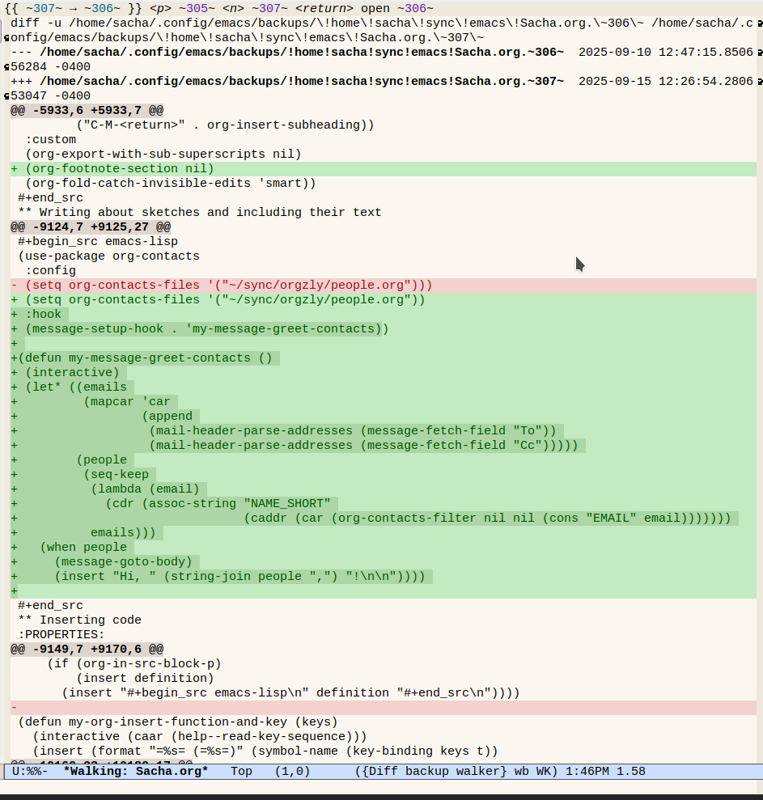
The following code makes it behave the way I expect:
(defun my-backup-walker-refresh ()
(let* ((index (cdr (assq :index backup-walker-data-alist)))
(suffixes (cdr (assq :backup-suffix-list backup-walker-data-alist)))
(prefix (cdr (assq :backup-prefix backup-walker-data-alist)))
(right-file (concat prefix (nth index suffixes)))
(right-version (format "%i" (backup-walker-get-version right-file)))
diff-buff left-file left-version)
(if (eq index 0)
(setq left-file (cdr (assq :original-file backup-walker-data-alist))
left-version "orig")
(setq left-file (concat prefix (nth (1- index) suffixes))
left-version (format "%i" (backup-walker-get-version left-file))))
;; we change this to go the other way here
(setq diff-buf (diff-no-select right-file left-file nil 'noasync))
(setq buffer-read-only nil)
(delete-region (point-min) (point-max))
(insert-buffer diff-buf)
(set-buffer-modified-p nil)
(setq buffer-read-only t)
(force-mode-line-update)
(setq header-line-format
(concat (format "{{ ~%s~ → ~%s~ }} "
(propertize left-version 'face 'font-lock-variable-name-face)
(propertize right-version 'face 'font-lock-variable-name-face))
(if (nth (1+ index) suffixes)
(concat (propertize "<p>" 'face 'italic)
" ~"
(propertize (int-to-string
(backup-walker-get-version (nth (1+ index) suffixes)))
'face 'font-lock-keyword-face)
"~ ")
"")
(if (eq index 0)
""
(concat (propertize "<n>" 'face 'italic)
" ~"
(propertize (int-to-string (backup-walker-get-version (nth (1- index) suffixes)))
'face 'font-lock-keyword-face)
"~ "))
(propertize "<return>" 'face 'italic)
" open ~"
(propertize (propertize (int-to-string (backup-walker-get-version right-file))
'face 'font-lock-keyword-face))
"~"))
(kill-buffer diff-buf)))
(with-eval-after-load 'backup-walker
(advice-add 'backup-walker-refresh :override #'my-backup-walker-refresh))
backup-walker is not actually a real package in
the sense of M-x package-install, but
fortunately, recent Emacs makes it easier to
install from a repository. I needed to
install it from
https://github.com/lewang/backup-walker. It was
written so long ago that I needed to
defalias some functions that were removed in
Emacs 26.1. Here's the use-package snippet from my
configuration:
(use-package backup-walker
:vc (:url "https://github.com/lewang/backup-walker")
:commands backup-walker-start
:init
(defalias 'string-to-int 'string-to-number) ; removed in 26.1
(defalias 'display-buffer-other-window 'display-buffer))
So there's an obscure package recommendation: backup-walker. It hasn't been updated for more than a decade, and it's not even installable the regular way, but it's still handy.
I can imagine all sorts of ways this workflow
could be even better. It might be nice to dust off
backup-walker off, switch out the obsolete
functions, add an option for the diff direction,
and maybe sort things out so that you can reverse
the diff, split hunks, and apply hunks to your
original file. And maybe a way to walk the backup
history for changes in a specific region? I
suppose someone could make a spiffy
Transient-based user interface to modernize it.
But it's fine, it works. Maybe there's a more
modern equivalent, but I didn't see anything in a
quick search of M-x list-packages / N
(package-menu-filter-by-name-or-description) for
"backup~, except maybe vc-backup.1 Is there a general-purpose VC equivalent to
git-timemachine? That might be useful.
I should really be saving things in proper version
control, but this was a good backup. That reminds
me: I should backup my backup backups. I had
initially excluded my ~/.config directory from
borgbackup because of the extra bits and bobs that
I wouldn't need when restoring from backup (like
all the Emacs packages I'd just re-download). But
my file backups… Yeah, that's worth it. I
changed my --exclude-from to --patterns-from
and changing my borg-patterns file to look like
this:
+ /home/sacha/.config/emacs/backups - /home/sacha/.config/* # ... other rules
May backup-walker save you from a future oops!
History
From http://www.wisdomandwonder.com/wp-content/uploads/2014/03/C3F.html:
(setq savehist-file "~/.config/emacs/savehist")
(savehist-mode 1)
(setq history-length t)
(setq history-delete-duplicates t)
(setq savehist-save-minibuffer-history 1)
(setq savehist-additional-variables
'(kill-ring
search-ring
regexp-search-ring))
Disabling the toolbar
When you're starting out, the tool bar can be very helpful. (Emacs Basics: Using the Mouse). Eventually, you may want to reclaim that extra little bit of screenspace. The following code turns that thing off. (Although I changed my mind about the menu - I want that again.)
(tool-bar-mode -1)
Change "yes or no" to "y or n"
Lazy people like me never want to type "yes" when "y" will suffice.
(fset 'yes-or-no-p 'y-or-n-p)
Minibuffer editing - more space!
Sometimes you want to be able to do fancy things with the text
that you're entering into the minibuffer. Sometimes you just want
to be able to read it, especially when it comes to lots of text.
This binds C-M-e in a minibuffer) so that you can edit the
contents of the minibuffer before submitting it.
(use-package miniedit
:commands minibuffer-edit
:init (miniedit-install))
Killing text
(setq kill-ring-max 1000)
From https://github.com/itsjeyd/emacs-config/blob/emacs24/init.el
(defadvice kill-region (before slick-cut activate compile)
"When called interactively with no active region, kill a single line instead."
(interactive
(if mark-active (list (region-beginning) (region-end))
(list (line-beginning-position)
(line-beginning-position 2)))))
Keybindings
(repeat-mode 1)
Embark
(use-package embark
:after org
:load-path "~/vendor/embark"
; :quelpa (embark :fetcher github :repo "oantolin/embark")
:config
(setq embark-prompter 'embark-keymap-prompter)
(add-to-list 'embark-target-finders 'my-embark-org-element)
(add-to-list 'embark-target-finders 'my-embark-subed-timestamp)
(add-to-list 'embark-target-injection-hooks '(my-journal-post embark--allow-edit))
(with-eval-after-load 'subed
(defvar-keymap embark-subed-timestamp-actions
:doc "Subed timestamp actions"
:parent subed-mode-map
"." #'my-subed-set-timestamp-to-mpv-position
"w" #'my-subed-copy-timestamp-dwim
"<up>" #'my-subed-adjust-timestamp/my-subed-adjust-timestamp-up
"f" #'my-waveform-subed-show-after-time
"<down>" #'my-subed-adjust-timestamp/my-subed-adjust-timestamp-down))
(defvar-keymap embark-sketch-actions
:doc "Org Mode sketch-related actions"
:parent org-mode-map
"o" #'my-sketch-insert-file-as-link
"i" #'my-sketch-insert-file-as-link
"v" #'my-geeqie-view)
(defvar-keymap embark-journal-actions
:doc "Journal"
"e" #'my-journal-edit)
(add-to-list 'embark-keymap-alist '(sketch . embark-sketch-actions))
(add-to-list 'embark-keymap-alist '(subed-timestamp . embark-subed-timestamp-actions))
(add-to-list 'embark-keymap-alist '(journal . embark-journal-actions))
:bind
(("C-." . embark-act)
("C-;" . embark-act)
:map vertico-map
(("M-e" . embark-export))
:map minibuffer-local-map
(("C-c e" . embark-act)
("M-e" . embark-export)
("C-;" . embark-act)
("C-<tab>" . embark-select)
("C-SPC" . (lambda () (interactive) (embark-select) (vertico-next))))
:map embark-collect-mode-map
(("C-c e" . embark-act)
("C-;" . embark-act)
("C-<tab>" . embark-select))
:map embark-general-map
(("j" . my-journal-post)
("m" . my-stream-message)
("M-w" . (lambda (s) (interactive "MString: ") (kill-new s))))
:map embark-symbol-map
("r" . erefactor-rename-symbol-in-buffer)
:map embark-url-map
("c" . my-caption-show)
))
(with-eval-after-load 'embark-org
(define-key embark-org-src-block-map
"i" #'my-org-fix-block-indentation))
This allows me to use C-h with completion in general.
(setq prefix-help-command 'embark-prefix-help-command)
Things I'm getting used to using:
C-. con an Org Mode source block to copy the contents
In addition to the entries below, I also have Embark-related code in other places in my config:
- Insert a link to an Org Mode heading from an org-refile prompt
- consult-omni
- Quickly jump to positions
- Making it easier to add a category to a blog post
- embark-11ty
- Using an Emacs Lisp macro to define quick custom Org Mode links to project files; plus URLs and search (2024)
- Copy web link
- Quickly search my code
- Tip from Omar: embark-around-action-hooks
- Edit list
- Running the current Org Mode Babel Javascript block from Emacs using Spookfox (2024)
- Act on current message with Embark
Using Embark and qrencode to show a QR code for the Org Mode link at point emacs org
: Added some code to display the QR code on the right side.
John Kitchin includes little QR codes in his videos. I
thought that was a neat touch that makes it easier for
people to jump to a link while they're watching. I'd like to
make it easier to show QR codes too. The following code lets
me show a QR code for the Org link at point. Since many of
my links use custom Org link types that aren't that useful
for people to scan, the code reuses the link resolution code
from web-link so that I can get the regular
https: link.
(defun my-org-link-qr (url)
"Display a QR code for URL in a buffer."
(let ((buf (save-window-excursion (qrencode--encode-to-buffer (my-org-stored-link-as-url url)))))
(if (> (frame-width) 80)
(display-buffer-in-side-window buf '((side . right)))
(display-buffer buf))))
(use-package qrencode
:defer t
:commands qrencode--encode-to-buffer
:config
(with-eval-after-load 'embark-org
(define-key embark-org-link-map (kbd "q") #'my-org-link-qr)))
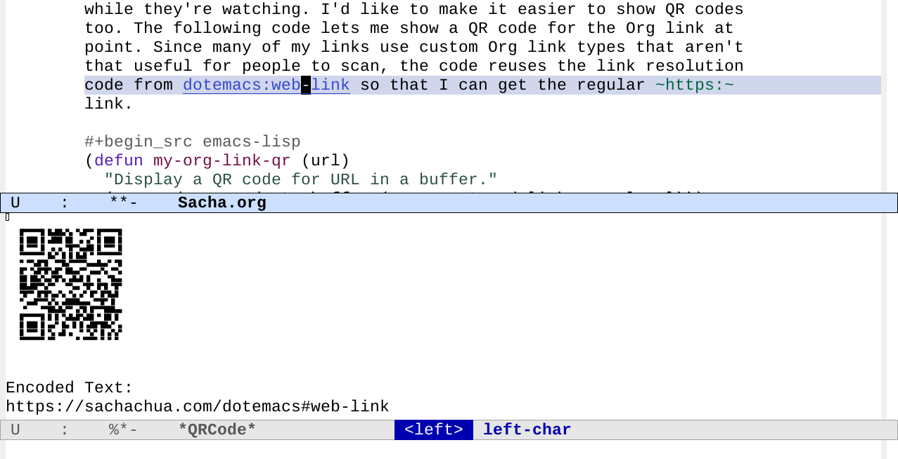
TODO Using Embark to act on video
(defun my-embark-video ()
"Match video."
(let ((extensions "youtu\\.?be\\|\\(webm\\|mp4\\|flv\\)$"))
(if-let ((link (and (derived-mode-p 'org-mode)
(org-element-context))))
(when (eq (org-element-type link) 'link)
(cond
((string-match extensions (org-element-property :path link))
(cons 'video (org-element-property :path link)))))
(when (and (derived-mode-p 'dired-mode)
(string-match extensions (dired-get-filename)))
(cons 'video (dired-get-filename))))))
(with-eval-after-load 'embark
(add-to-list 'embark-target-finders 'my-embark-video)
(defvar-keymap my-embark-video-actions
:doc "video"
"d" #'my-deepgram-recognize-audio
"$" #'my-deepgram-cost
"m" #'mpv-play
"c" #'my-caption-show
"w" #'my-audio-text
"W" #'waveform-show)
(add-to-list 'embark-keymap-alist '(video . my-embark-video-actions)))
Using Embark to act on audio
(defun my-embark-audio ()
"Match audio."
(let ((extensions "m4a\\|mp3\\|wav\\|ogg\\|opus"))
(if-let ((link (and (derived-mode-p 'org-mode)
(org-element-context))))
(when (eq (org-element-type link) 'link)
(cond
((string-match extensions (org-element-property :path link))
(cons 'audio (org-element-property :path link)))))
(when (and (derived-mode-p 'dired-mode)
(string-match extensions (dired-get-filename)))
(cons 'audio (dired-get-filename))))))
(defun my-audio-text (file &optional insert)
"Get the text for FILE audio.
If called interactively, copy to the kill ring."
(interactive (list (read-file-name "Audio: ")))
(let (text)
(cond
((file-exists-p (concat (file-name-sans-extension file) ".txt"))
(with-temp-buffer
(insert-file-contents (concat (file-name-sans-extension file) ".txt"))
(setq text (buffer-string))))
;; no txt yet, is there a vtt?
((file-exists-p (concat (file-name-sans-extension file) ".vtt"))
(setq text (subed-subtitle-list-text
(subed-parse-file (concat (file-name-sans-extension file) ".vtt")))))
;; no VTT, let's recognize it
(t
(my-deepgram-recognize-audio file)
(when (file-exists-p (concat (file-name-sans-extension file) ".vtt"))
(setq text (subed-subtitle-list-text
(subed-parse-file (concat (file-name-sans-extension file) ".vtt")))))))
(when text
(when (called-interactively-p 'any)
(if insert
(insert text "\n")
(kill-new text)))
text)))
(defun my-open-in-audacity (file)
(interactive "FFile: ")
(start-process "audacity" nil "audacity" file))
(with-eval-after-load 'embark
(add-to-list 'embark-target-finders 'my-embark-audio)
(defvar-keymap my-embark-audio-actions
:doc "audio"
"a" #'my-open-in-audacity
"d" #'my-deepgram-recognize-audio
"$" #'my-deepgram-cost
"D" #'my-audio-braindump-reprocess
"m" #'mpv-play
"w" #'my-audio-text
"W" #'waveform-show)
(add-to-list 'embark-keymap-alist '(audio . my-embark-audio-actions)))
Using Embark to insert files as Org INCLUDEs
(defun my-insert-file-as-org-include (file)
(interactive "fFile: ")
(set-text-properties 0 (length file) nil file)
(let ((mode (assoc-default file auto-mode-alist 'string-match)))
(insert
(org-link-make-string (concat "file:" file) (concat "Download " (file-name-nondirectory file))) "\n"
"#+begin_my_details " (file-name-nondirectory file) "\n"
(format "#+INCLUDE: %s" (prin1-to-string file))
(if mode
(concat " src " (replace-regexp-in-string "-mode$" "" (symbol-name mode)))
"")
"\n"
"#+end_my_details\n")))
(defun my-transform-org-link-to-include ()
(interactive)
(let ((link (org-element-lineage (org-element-context) '(link) t))
(mode (assoc-default (org-element-property :path link) auto-mode-alist 'string-match)))
(when link
(delete-region (org-element-property :begin link)
(org-element-property :end link))
(my-insert-file-as-org-include (org-element-property :path link)))))
(with-eval-after-load 'embark
(define-key embark-file-map "O" #'my-insert-file-as-org-include))
Using Embark to offer context-sensitive actions for Org elements
(defun my-embark-org-element ()
"Target an Org Mode element at point."
(save-window-excursion
(save-excursion
(save-restriction
(when (derived-mode-p 'org-agenda-mode)
(org-goto-marker-or-bmk (org-get-at-bol 'org-marker))
(org-back-to-heading))
(when (derived-mode-p 'org-mode)
(let* ((context ;; Borrowed from org-open-at-point
;; Only consider supported types, even if they are not the
;; closest one.
(org-element-lineage (org-element-context)
'(headline src-block link) t))
(type (org-element-type context))
(value (org-element-property :value context)))
(cond ((eq type 'headline)
(cons 'org-heading (org-element-property :title context)))
;; src-block and link can be handled by embark-org
)))))))
(defun my-embark-org-src-block-copy-noweb-reference (element)
(kill-new (if (org-element-property element :parameters)
(format "<<%s(%s)>>" (org-element-property element :name)
(org-element-property element :parameters))
(format "<<%s>>" (org-element-property element :parameters)))))
(with-eval-after-load 'embark-org
(keymap-set embark-org-src-block-map "N" #'my-embark-org-src-block-copy-noweb-reference))
Whichkey and Embark
(defun embark-which-key-indicator ()
"An embark indicator that displays keymaps using which-key.
The which-key help message will show the type and value of the
current target followed by an ellipsis if there are further
targets."
(lambda (&optional keymap targets prefix)
(if (null keymap)
(which-key--hide-popup-ignore-command)
(which-key--show-keymap
(if (eq (plist-get (car targets) :type) 'embark-become)
"Become"
(format "Act on %s '%s'%s"
(plist-get (car targets) :type)
(embark--truncate-target (plist-get (car targets) :target))
(if (cdr targets) "…" "")))
(if prefix
(pcase (lookup-key keymap prefix 'accept-default)
((and (pred keymapp) km) km)
(_ (key-binding prefix 'accept-default)))
keymap)
nil nil t (lambda (binding)
(not (string-suffix-p "-argument" (cdr binding))))))))
(setq embark-indicators
'(embark-which-key-indicator
embark-highlight-indicator
embark-isearch-highlight-indicator))
(defun embark-hide-which-key-indicator (fn &rest args)
"Hide the which-key indicator immediately when using the completing-read prompter."
(which-key--hide-popup-ignore-command)
(let ((embark-indicators
(remq #'embark-which-key-indicator embark-indicators)))
(apply fn args)))
(with-eval-after-load 'embark
(advice-add #'embark-completing-read-prompter
:around #'embark-hide-which-key-indicator))
DONE Changing the which-key labels for shortcuts
It's hard to remember keyboard shortcuts, so I'm
glad that Emacs 30 now includes which-key by
default. You still need to enable
which-key-mode, but once you do, if you pause in
the middle of a keyboard combination like
C-c ..., you'll see a menu of shortcuts.
I've been exploring more context menus with Embark. Using the suggested configuration from Embark's wiki, I have it set up so that I can use C-. (embark-act) to open or cycle through different context-sensitive keymaps, with a which-key display when I pause, and completion on the commands in the keymap if I use C-h.
I want to make the which-key menu a little
easier to scan: shorter function names, more
logical grouping, and less visual noise. I think
I'm on the right track with these which-key
tweaks.
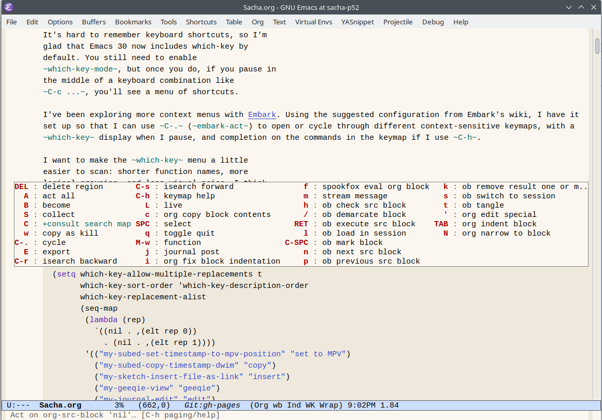
(with-eval-after-load 'which-key
(setopt which-key-allow-multiple-replacements t
which-key-sort-order 'which-key-description-order
which-key-replacement-alist
(seq-map
(lambda (rep)
`((nil . ,(elt rep 0))
. (nil . ,(elt rep 1))))
'(("my-subed-set-timestamp-to-mpv-position" "set to MPV")
("my-embark-org-copy-exported-url" "⭐🗐🔗 copy exported URL")
("my-subed-copy-timestamp-dwim" "copy")
("my-sketch-insert-file-as-link" "insert")
("my-geeqie-view" "geeqie")
("my-journal-edit" "edit")
("my-org-link-qr" "qr")
("my-image-open-in-" "")
("org-babel-" "ob-")
("next" "🠆")
("previous" "🠄")
("my-image-" "")
("my-embark-org-blog-" "")
("embark-collect" "⇶ collect")
("my-embark-org-" "")
("my-" "")
("embark-" "")
("embark-act-all" "all")
("embark-become" "become")
("embark-collect" "collect")
("-" " ")))))
Changing which-key-sort-order to sort by
description seems to do a reasonable job of
grouping things somewhat logically. The sorting
happens before replacement, so the result might
not look sorted once my replacements are done. If
I want to tweak it further, I could defalias
commands and then put them into the keymaps with
replacements, or maybe look into overriding
which-key--get-bindings. Also, these
replacements are not used by
embark-completing-read-prompter, but maybe I can
wrap some advice around
embark--formatted-bindings in order to change that.
Embark and images image
: added attachment handling
(defun my-sketch-insert-file-as-link (f)
(interactive (list (my-complete-sketch-filename)))
(cond
((derived-mode-p 'org-mode)
(insert (org-link-make-string (concat "sketch:" (file-name-nondirectory f))) "\n"))
((or (derived-mode-p 'html-mode) (derived-mode-p 'web-mode))
(insert "{% sketchFull \"" (file-name-base f) "\" %}"))
(t (insert f))))
(defun my-embark-image ()
"Match images."
(let ((extensions "\\(png\\|jpg\\|svg\\|gif\\|jpeg\\)\\'"))
(cond
((derived-mode-p 'org-mode)
(when-let* ((link (org-element-context)))
(when (eq (org-element-type link) 'link)
(cond
((string= "attachment" (org-element-property :type link))
(cons 'image (expand-file-name (org-element-property :path link)
(org-attach-dir))))
((string-match "sketch" (org-element-property :type link))
(cons 'image (my-get-sketch-filename (org-element-property :path link))))
((string-match extensions (org-element-property :path link))
(cons 'image (org-element-property :path link)))))))
((and (derived-mode-p 'dired-mode)
(string-match extensions (dired-get-filename)))
(cons 'image (dired-get-filename)))
((derived-mode-p 'subed-mode)
(when-let* ((filename (thing-at-point 'filename)))
(when (string-match (concat "file:\\(.+\\." extensions "\\)") filename)
(cons 'image (match-string 1 filename)))))
((and (buffer-file-name)
(string-match extensions (buffer-file-name)))
(cons 'image (buffer-file-name))))))
(with-eval-after-load 'embark
(add-to-list 'embark-target-finders 'my-embark-image))
I want to:
- open images in an annotation program, maybe com.github.phase1geo.annotator
- open images in Krita
- replace with latest screenshot
- copy text to kill ring
- insert text as details block
(defun my-image-open-in-annotator (file)
(interactive "FImage: ")
(start-process "annotator" nil "com.github.phase1geo.annotator" (expand-file-name file)))
(defun my-image-open-in-krita (file)
(interactive "FImage: ")
(start-process "krita" nil "krita" "--nosplash" (expand-file-name file)))
(defun my-image-open-in-inkscape (file)
(interactive "FImage: ")
(start-process "inkscape" nil "inkscape" (expand-file-name file)))
(defun my-image-open-in-gimp (file)
(interactive "FImage: ")
(start-process "gimp" nil "gimp" (expand-file-name file)))
(defun my-open-in-firefox (file)
(interactive "FItem: ")
(start-process "firefox" nil "firefox" (if (string-match "^http" file) file (expand-file-name file))))
(defvar my-image-autocrop-border 10)
(defun my-image-autocrop (filename &optional border)
(interactive "FFile: ")
(setq border (or border my-image-autocrop-border))
(let ((args (append '("-trim")
(if border `("-bordercolor" "#FFFFFF" "-border" ,(number-to-string border)))
(list "+repage" (expand-file-name filename)))))
(apply #'call-process "mogrify" nil my-debug-buffer nil args)
filename))
Converting handwriting to text
(defun my-image-recognize (file)
"Returns the text."
(interactive "FFile: ")
(if (file-exists-p (concat (file-name-sans-extension file) ".txt"))
(with-temp-buffer
(insert-file-contents (concat (file-name-sans-extension file) ".txt"))
(buffer-string))
(let* ((data
(json-parse-string
(if (file-exists-p (concat (file-name-sans-extension file) ".json"))
(with-temp-buffer
(insert-file-contents (concat (file-name-sans-extension file) ".json"))
(buffer-string))
(when (string= (file-name-extension file) "pdf")
(setq file (my-sketch-convert-pdf file)))
(when (string= (file-name-extension file) "svg")
(call-process "inkscape" nil my-debug-buffer nil "--export-type=png" "--export-dpi=96" "--export-background-opacity=1" "--pdf-poppler" (expand-file-name file)))
(catch 'done
(dolist (ext '(".png" ".jpg" ".jpeg"))
(when (file-exists-p (concat (file-name-sans-extension file) ext))
(with-temp-file (concat (file-name-sans-extension file) ".json")
(call-process "gcloud" nil t nil "ml" "vision" "detect-document"
(expand-file-name (concat (file-name-sans-extension file) ext)))
(throw 'done (buffer-string)))))))
:object-type 'alist))
(text
(if (assoc-default 'responses data)
(assoc-default 'text (assoc-default 'fullTextAnnotation (elt (assoc-default 'responses data) 0)))
(assoc-default 'description (elt (assoc-default 'textAnnotations data) 0)))))
(with-temp-file (concat (file-name-sans-extension file) ".txt")
(insert text))
text)))
Renaming and storing
(defun my-image-rename-current-image-based-on-id (id)
(interactive
(let ((filename (if (derived-mode-p 'image-mode)
(buffer-file-name)
(dired-get-filename))))
(list
(if (string-match "[0-9][0-9][0-9][0-9]-[0-9][0-9]-[0-9][0-9]-[0-9][0-9]" filename)
(match-string 0 filename)
(read-string "ID: ")))))
(let* ((data (my-journal-get-by-zidstring id))
(old-file (if (derived-mode-p 'image-mode)
(buffer-file-name)
(dired-get-filename)))
(ext (file-name-extension old-file))
(new-prefix (concat id " " (plist-get data :Note)))
(text (plist-get data :Other))
new-file)
(when (and text (not (string= (string-trim text) "")))
(with-temp-file (concat (file-name-sans-extension old-file) ".txt")
(insert text)))
(when (derived-mode-p 'image-mode)
(kill-buffer))
(setq new-file
(my-image-store (my-rename-file-set old-file
new-prefix t)
t))
(when (derived-mode-p 'image-mode)
(find-file new-file))
(find-file (concat (file-name-sans-extension new-file) ".txt"))))
(defun my-image-recognize-get-new-filename (file)
(interactive "FFile: ")
(if-let* ((text (my-image-recognize file))
(id (and (string-match "[0-9][0-9][0-9][0-9]-[0-9][0-9]-[0-9][0-9]-[0-9][0-9]" text)
(match-string 0 text)))
(data (and id (my-journal-get-by-zidstring id))))
(expand-file-name
(concat id " " (plist-get data :Note) "." (file-name-extension file))
(file-name-directory file))
file))
(defun my-image-recognize-and-rename (file)
(interactive "FFile: ")
(let ((new-name (expand-file-name (my-image-recognize-get-new-filename file)
(file-name-directory file))))
(rename-file file new-name t)
new-name))
(defun my-image-tags (file)
(setq file (file-name-base file))
(cond
((string-match "#\\([^ ]+\\)" file)
(let ((start-pos 0))
(cl-loop for match-pos = (string-match "#\\([^ \\.]+\\)" file start-pos)
while match-pos
collect (match-string 1 file)
do (setf start-pos (1+ match-pos)))))
((string-match " -- \\(.+\\)" file)
(split-string (match-string 1 file) " "))))
(defun my-image-name-without-tags (file)
(replace-regexp-in-string " -- \\([^\\.]+\\)" (replace-regexp-in-string " #\\([^\\.]+\\)" "" file)))
(defun my-image-rename-set (old-name new-name &optional tags do-copy)
(when (or (not (string= old-name new-name)) tags)
(when tags
(setq new-name (concat (my-image-name-without-tags new-name)
" -- "
(string-join tags " ")
(file-name-extension new-name))))
(dolist (file (my-file-set old-name))
(funcall
(if do-copy
'copy-file
'rename-file)
file
(concat (file-name-sans-extension new-name) "." (file-name-extension file))
t)))
new-name)
(defun my-image-store (file &optional do-move)
"Copy or move this image into public or private sketches as needed."
(interactive (list (if (derived-mode-p 'image-mode)
(buffer-file-name)
(dired-get-filename))
t))
(unless (string-match "^[0-9][0-9][0-9][0-9]-[0-9][0-9]-[0-9][0-9]-[0-9][0-9] " (file-name-nondirectory file))
(setq file (my-image-recognize-and-rename file)))
(if (string-match "^[0-9][0-9][0-9][0-9]-[0-9][0-9]-[0-9][0-9]-[0-9][0-9] " (file-name-nondirectory file))
(let ((private (member "private" (my-image-tags file))))
(my-image-rename-set
file
(expand-file-name
(file-name-nondirectory file)
(if private
my-private-sketches-directory
(car my-sketch-directories)))))
file))
(defun my-image-copy-text (file)
(interactive "FImage: ")
(kill-new (my-image-recognize file)))
(defun my-image-insert-text-as-details (file)
(interactive "FImage: ")
(when (and (derived-mode-p 'org-mode)
(eq (org-element-type (org-element-context)) 'link))
(goto-char (org-element-end (org-element-context))))
(insert "\n#+begin_my_details\n" (my-image-recognize file) "\n#+end_my_details\n"))
(defun my-image-thumbnail (path)
(interactive "FImage: ")
(let* ((filename (expand-file-name (concat "thumb-" (file-name-nondirectory path))
(file-name-directory path))))
(call-process "convert" nil nil nil path "-thumbnail" "500x" filename)
(kill-new filename)
filename))
(defun my-org-svg-copy-links (filename)
(interactive (list (read-file-name "SVG: " nil
nil
(lambda (f)
(or (string-match "\\.svg$" f)
(file-directory-p f))))))
(let ((dom (car (xml-parse-file filename))))
(kill-new
(mapconcat
(lambda (elem)
(concat "- " (org-link-make-string
(dom-attr elem 'href)
(or (dom-attr elem 'title)
(dom-text (dom-by-tag elem 'title))))))
(dom-by-tag dom 'a)
"\n"))))
(with-eval-after-load 'embark
(defvar-keymap my-embark-image-actions
:doc "Images"
"k" #'my-image-open-in-krita
"a" #'my-image-open-in-annotator
"i" #'my-image-open-in-inkscape
"w" #'my-image-copy-text
"c" #'my-image-autocrop
"]" #'my-image-rotate-clockwise
"[" #'my-image-rotate-counterclockwise
"g" #'my-image-open-in-gimp
"f" #'my-open-in-firefox
"s" #'my-image-store
"r" #'my-image-recognize-and-rename
"t" #'my-org-sketch-open-text-file
"T" #'my-image-thumbnail
"L" #'my-org-svg-copy-links
"C" #'my-image-recolor
"d" #'my-image-insert-text-as-details)
(add-to-list 'embark-keymap-alist '(image . my-embark-image-actions)))
Embark and subed
(defun my-subed-set-timestamp-to-mpv-position (&optional rest)
(interactive)
(skip-chars-backward "0-9:,.")
(when (looking-at "\\(\\([0-9]+\\):\\)?\\([0-9]+\\):\\([0-9]+\\)\\.\\([0-9]+\\)")
(replace-match (save-match-data (subed-msecs-to-timestamp subed-mpv-playback-position)) t t)))
(defun my-embark-subed-timestamp ()
(save-excursion
(skip-chars-backward "0-9:,.")
(when (looking-at "\\(\\([0-9]+\\):\\)?\\([0-9]+\\):\\([0-9]+\\)\\.\\([0-9]+\\)")
(list 'subed-timestamp
(propertize
(match-string 0)
'ms (compile-media-timestamp-to-msecs (match-string 0))
'position (if (bolp) 'start 'stop))))))
(defun my-subed-adjust-timestamp (offset)
(interactive (list -100))
(save-excursion
(skip-chars-backward "0-9:,.")
(when (looking-at subed-vtt--regexp-timestamp)
(let ((new-ts (+ (subed-vtt--timestamp-to-msecs (match-string 0)) offset)))
(replace-match (save-match-data
(subed-vtt--msecs-to-timestamp new-ts)))
(my-waveform-subed-show-after-time)
new-ts))))
(defun my-subed-adjust-timestamp-up (offset)
(interactive (list 100))
(subed-mpv-jump (my-subed-adjust-timestamp (- offset))))
(defun my-subed-adjust-timestamp-down (offset)
(interactive (list -100))
(subed-mpv-jump (my-subed-adjust-timestamp (- offset))))
(defhydra my-subed-adjust-timestamp ()
("<up>" my-subed-adjust-timestamp-up "Up" :exit nil)
("<down>" my-subed-adjust-timestamp-down "Down" :exit nil))
(defun my-subed-copy-timestamp-from-previous ()
(interactive)
(let ((ms (save-excursion (subed-backward-subtitle-time-stop) (subed-subtitle-msecs-stop))))
(subed-set-subtitle-time-start ms)))
(defun my-subed-copy-timestamp-to-next ()
(interactive)
(let ((ms (subed-subtitle-msecs-stop)))
(save-excursion
(subed-forward-subtitle-time-stop) (subed-set-subtitle-time-start ms))))
(defun my-subed-copy-timestamp-dwim ()
(interactive)
(save-excursion
(skip-chars-backward "0-9:,.")
(if (bolp)
(my-subed-copy-timestamp-from-previous)
(my-subed-copy-timestamp-to-next))))
Embark, symbols, and casual-symbol-overlay
Link: http://yummymelon.com/devnull/announcing-casual-symbol-overlay.html
(use-package casual-symbol-overlay
:if my-laptop-p
:after embark
:init
(with-eval-after-load 'embark
(keymap-set embark-symbol-map "z" #'casual-symbol-overlay-tmenu)))
Embark and erefactor-rename-symbol-in-buffer
Embark automatically passes the Embark target as the first value for an interactive prompt, which interferes with erefactor-rename-symbol-in-buffer.
(defun my-embark-erefactor-rename-symbol-in-buffer (old-name new-name)
(interactive (let* ((old-name (read-string "Symbol: "))
(new-name (read-string (format "%s -> New name: " old-name)
old-name
'erefactor--read-symbol-history)))
(list old-name new-name)))
(erefactor-rename-symbol-in-buffer old-name new-name))
(with-eval-after-load 'embark
(keymap-set embark-command-map "r" #'my-embark-erefactor-rename-symbol-in-buffer)
(keymap-set embark-symbol-map "r" #'my-embark-erefactor-rename-symbol-in-buffer))
Extended command list
This code allows me to select a command from a short list of functions so that I can prompt my memory better. I wonder if this makes sense considering transient and hydra make keyboard shortcuts easier.
(my-execute-extended-command-from-list nil '(org-capture consult-buffer))
;;; Mostly the same as my/read-extended-command-from-list
(defun my-read-extended-command-from-list (list)
"Read command name to invoke in `execute-extended-command'."
(minibuffer-with-setup-hook
(lambda ()
(add-hook 'post-self-insert-hook
(lambda ()
(setq execute-extended-command--last-typed
(minibuffer-contents)))
nil 'local)
(setq-local minibuffer-default-add-function
(lambda ()
;; Get a command name at point in the original buffer
;; to propose it after M-n.
(let ((def (with-current-buffer
(window-buffer (minibuffer-selected-window))
(and (commandp (function-called-at-point))
(format "%S" (function-called-at-point)))))
(all (sort (minibuffer-default-add-completions)
#'string<)))
(if def
(cons def (delete def all))
all)))))
;; Read a string, completing from and restricting to the set of
;; all defined commands. Don't provide any initial input.
;; Save the command read on the extended-command history list.
(completing-read
(concat (cond
((eq current-prefix-arg '-) "- ")
((and (consp current-prefix-arg)
(eq (car current-prefix-arg) 4)) "C-u ")
((and (consp current-prefix-arg)
(integerp (car current-prefix-arg)))
(format "%d " (car current-prefix-arg)))
((integerp current-prefix-arg)
(format "%d " current-prefix-arg)))
;; This isn't strictly correct if `execute-extended-command'
;; is bound to anything else (e.g. [menu]).
;; It could use (key-description (this-single-command-keys)),
;; but actually a prompt other than "M-x" would be confusing,
;; because "M-x" is a well-known prompt to read a command
;; and it serves as a shorthand for "Extended command: ".
"M-x ")
(lambda (string pred action)
(if (and suggest-key-bindings (eq action 'metadata))
'(metadata
(affixation-function . read-extended-command--affixation)
(category . command))
(complete-with-action action list string pred)))
#'commandp t nil 'extended-command-history)))
;;; Mostly the same as execute-extended-command
(defun my-execute-extended-command-from-list (prefixarg &optional command-name typed)
;; Based on Fexecute_extended_command in keyboard.c of Emacs.
;; Aaron S. Hawley <aaron.s.hawley(at)gmail.com> 2009-08-24
"Read a command name, then read the arguments and call the command.
To pass a prefix argument to the command you are
invoking, give a prefix argument to `execute-extended-command'."
(declare (interactive-only command-execute))
;; FIXME: Remember the actual text typed by the user before completion,
;; so that we don't later on suggest the same shortening.
(interactive
(let ((execute-extended-command--last-typed nil))
(list current-prefix-arg
(if (and command-name (listp command-name))
(my-read-extended-command-from-list command-name)
(read-extended-command))
execute-extended-command--last-typed)))
;; Emacs<24 calling-convention was with a single `prefixarg' argument.
(when (listp command-name)
(let ((current-prefix-arg prefixarg) ; for prompt
(execute-extended-command--last-typed nil))
(setq command-name
(if command-name
(my/read-extended-command-from-list command-name)
(read-extended-command)))
(setq typed execute-extended-command--last-typed)))
(let* ((function (and (stringp command-name) (intern-soft command-name)))
(binding (and suggest-key-bindings
(not executing-kbd-macro)
(where-is-internal function overriding-local-map t))))
(unless (commandp function)
(error "`%s' is not a valid command name" command-name))
;; Some features, such as novice.el, rely on this-command-keys
;; including M-x COMMAND-NAME RET.
(set--this-command-keys (concat "\M-x" (symbol-name function) "\r"))
(setq this-command function)
;; Normally `real-this-command' should never be changed, but here we really
;; want to pretend that M-x <cmd> RET is nothing more than a "key
;; binding" for <cmd>, so the command the user really wanted to run is
;; `function' and not `execute-extended-command'. The difference is
;; visible in cases such as M-x <cmd> RET and then C-x z (bug#11506).
(setq real-this-command function)
(let ((prefix-arg prefixarg))
(command-execute function 'record))
;; If enabled, show which key runs this command.
;; But first wait, and skip the message if there is input.
(let* ((waited
;; If this command displayed something in the echo area;
;; wait a few seconds, then display our suggestion message.
;; FIXME: Wait *after* running post-command-hook!
;; FIXME: If execute-extended-command--shorter were
;; faster, we could compute the result here first too.
(when (and suggest-key-bindings
(or binding
(and extended-command-suggest-shorter typed)))
(sit-for (cond
((zerop (length (current-message))) 0)
((numberp suggest-key-bindings) suggest-key-bindings)
(t 2))))))
(when (and waited (not (consp unread-command-events)))
(unless (or (not extended-command-suggest-shorter)
binding executing-kbd-macro (not (symbolp function))
(<= (length (symbol-name function)) 2))
;; There's no binding for CMD. Let's try and find the shortest
;; string to use in M-x.
;; FIXME: Can be slow. Cache it maybe?
(while-no-input
(setq binding (execute-extended-command--shorter
(symbol-name function) typed))))
(when binding
(with-temp-message
(format-message "You can run the command `%s' with %s"
function
(if (stringp binding)
(concat "M-x " binding " RET")
(key-description binding)))
(sit-for (if (numberp suggest-key-bindings)
suggest-key-bindings
2))))))))
Repeatable commands
Based on http://oremacs.com/2015/01/14/repeatable-commands/ . Modified to
accept nil as the first value if you don't want the keymap to run a
command by default, and to use kbd for the keybinding definitions.
(defun my-def-rep-command (alist)
"Return a lambda that calls the first function of ALIST.
It sets the transient map to all functions of ALIST,
allowing you to repeat those functions as needed."
(let ((keymap (make-sparse-keymap))
(func (cdar alist)))
(mapc (lambda (x)
(when x
(define-key keymap (kbd (car x)) (cdr x))))
alist)
(lambda (arg)
(interactive "p")
(when func
(funcall func arg))
(set-transient-map keymap t))))
Hydra keyboard shortcuts
hydra offers customizable shortcuts. transient is another option.
(use-package hydra :commands defhydra)
(use-package use-package-hydra)
(if my-laptop-p
(use-package hydra-posframe
:defer t
:if my-laptop-p :after hydra
:vc (:url "https://github.com/Ladicle/hydra-posframe")
))
(with-eval-after-load 'hydra
(defhydra my-window-movement ()
("<left>" windmove-left)
("<right>" windmove-right)
("<down>" windmove-down)
("<up>" windmove-up)
("y" other-window "other")
("h" switch-window "switch-window")
("b" consult-buffer "buffer")
("f" find-file "file")
("F" find-file-other-window "other file")
("v" (progn (split-window-right) (windmove-right)))
("o" delete-other-windows :color blue)
("a" ace-window)
("s" ace-swap-window)
("d" delete-window "delete")
("D" ace-delete-window "ace delete")
("i" ace-maximize-window "maximize")
("q" nil)))
(with-eval-after-load 'hydra
(defhydra my-shortcuts (:exit t)
("j" my-helm-journal "Journal")
("C" my-resolve-orgzly-syncthing "Conflicts")
("n" my-capture-timestamped-note "Note")
("c" my-org-categorize-emacs-news/body "Categorize")
("d" my-emacs-news-check-duplicates "Dupe")
("s" save-buffer "Save")
("f" my-file-shortcuts/body "File shortcut")
("+" text-scale-increase "Increase")
("-" text-scale-decrease "Decrease")
("G" gif-screencast-start-or-stop "GIF screencast")
("g" my-geeqie/body "Geeqie")
("r" my-record-ffmpeg-toggle-recording "Record screen")
("l" (my-toggle-or-create "*scratch*" (lambda () (switch-to-buffer (startup--get-buffer-create-scratch)))) "Lisp")
("e" eshell-toggle "Eshell")
("w" my-engine-dmode-hydra/body "Search web")
("E" my-emacs-news/body "Emacs News"))
(keymap-global-set "<f5>" #'my-shortcuts/body)
(defhydra my-emacs-news (:exit t)
"Emacs News"
("f" (find-file "~/sync/emacs-news/index.org") "News")
("C" (find-file "~/proj/emacs-calendar/README.org") "Calendar")
("C" (find-file "/ssh:web:/var/www/emacslife.com/calendar/README.org" "Calendar on server"))
("d" my-emacs-news-check-duplicates "Dupe")
("c" my-org-categorize-emacs-news/body "Categorize")
("h" (my-org-update-link-description "HN") "Link HN")
("i" (my-org-update-link-description "Irreal") "Link Irreal")
("m" my-share-emacs-news "Mail")
("t" (browse-url "https://tweetdeck.twitter.com") "Twitter")))
(defun my-org-update-link-description (description)
"Update the current link's DESCRIPTION."
(interactive "MDescription: ")
(let (link)
(save-excursion
(cond
((org-in-regexp org-link-bracket-re 1)
(setq link (org-link-unescape (match-string-no-properties 1)))
(delete-region (match-beginning 0) (match-end 0))
(insert (org-link-make-string link description))
(sit-for 0))
((or (org-in-regexp org-link-angle-re)
(org-in-regexp org-link-plain-re))
(setq link (org-unbracket-string "<" ">" (match-string 0)))
(delete-region (match-beginning 0) (match-end 0))
(insert (org-link-make-string link description))
(sit-for 0))))))
(defalias 'my-org-insert-link 'my-org-insert-link-dwim)
(defun my-switch-to-previous-buffer ()
"Switch to previously open buffer.
Repeated invocations toggle between the two most recently open buffers."
(interactive)
(switch-to-buffer (other-buffer (current-buffer) 1)))
(defun my-org-check-agenda ()
"Peek at agenda."
(interactive)
(cond
((derived-mode-p 'org-agenda-mode)
(if (window-parent) (delete-window) (bury-buffer)))
((get-buffer "*Org Agenda*")
(switch-to-buffer-other-window "*Org Agenda*"))
(t (org-agenda nil "a"))))
From https://github.com/abo-abo/hydra/wiki/Nesting-Hydras :
(defvar hydra-stack nil)
(defun my-hydra-push (expr)
(push `(lambda () ,expr) hydra-stack))
(defun my-hydra-pop ()
(interactive)
(let ((x (pop hydra-stack)))
(when x (funcall x))))
(defun my-hydra-go-and-push (expr)
(push hydra-curr-body-fn hydra-stack)
(prin1 hydra-stack)
(funcall expr))
;; example (progn (hydra-b/body) (hydra-push '(hydra-a/body)))
;; or ("q" hydra-pop "exit")
Emacs Hydra: Allow completion when I can't remember the command name
2021-04-29: Added the ability to complete using an arbitrary Hydra.
So it turns out that I'm pretty much zonked after a day with the kiddo and have a hard time remembering keystrokes or speed-reading my Hydra cheat sheets. I want to be able to use M-x-like completion in my Hydra so that I can type a few characters and then maybe see the shortcuts there. Here's what it looks like:

(defun my-hydra-format-head (h)
(let ((key-binding (elt h 0))
(hint (elt h 2))
(cmd (and (elt h 1) (prin1-to-string (elt h 1)))))
(if cmd
(format "%s (%s) - %s" hint key-binding cmd)
(format "%s (%s)" hint key-binding))))
(defun my-hydra-heads-to-candidates (base)
(mapcar (lambda (h)
(cons (my-hydra-format-head h) (hydra--head-name h base)))
(symbol-value (intern (concat (symbol-name base) "/heads")))))
(defun my-hydra-execute-extended (&optional _ hydra-base)
(interactive (list current-prefix-arg nil))
(hydra-keyboard-quit)
(let* ((candidates (my-hydra-heads-to-candidates
(or hydra-base
(intern
(replace-regexp-in-string "/body$" ""
(symbol-name hydra-curr-body-fn))))))
(command-name (completing-read "Cmd: " candidates))
(bind (assoc-default command-name candidates 'string=)))
(cond
((null bind) nil)
((hydra--callablep bind) (call-interactively bind)))))
This is how I add it to all my hydras:
(with-eval-after-load 'hydra
(define-key hydra-base-map (kbd "<tab>") #'my-hydra-execute-extended))
Proooobably works? Very rough. Might be useful for those fuzzy-brain days.
which-key and which-key-posframe
It's hard to remember keyboard shortcuts.
(use-package which-key :init (which-key-mode 1))
(use-package which-key-posframe :if my-laptop-p :init (which-key-posframe-mode 1))
Sometimes C-h gets weird and calls which-key-C-h-dispatch, probably from a transient map that got confused.
(defun my-reset-transients ()
(interactive)
(setq overriding-terminal-local-map nil))
Key chords
I'm on a Dvorak keyboard, so these might not work
for you. Experimenting with this. key-chord lets
you define keyboard shortcuts that use ordinary
keys typed in quick succession. I haven't been
using this lately, though…
Some code from http://emacsredux.com/blog/2013/04/28/switch-to-previous-buffer/
(defun my-key-chord-define (keymap keys command)
"Define in KEYMAP, a key-chord of two keys in KEYS starting a COMMAND.
\nKEYS can be a string or a vector of two elements. Currently only elements
that corresponds to ascii codes in the range 32 to 126 can be used.
\nCOMMAND can be an interactive function, a string, or nil.
If COMMAND is nil, the key-chord is removed.
MODIFICATION: Do not define the transposed key chord.
"
(if (/= 2 (length keys))
(error "Key-chord keys must have two elements"))
;; Exotic chars in a string are >255 but define-key wants 128..255 for those
(let ((key1 (logand 255 (aref keys 0)))
(key2 (logand 255 (aref keys 1))))
(define-key keymap (vector 'key-chord key1 key2) command)))
(fset 'key-chord-define 'my-key-chord-define)
Now let's set up the actual keychords.
(use-package key-chord
:if my-laptop-p
:hydra (my-key-chord-commands
()
"Main"
("k" kill-sexp)
("h" my-org-jump :color blue)
("x" my-org-finish-previous-task-and-clock-in-new-one "Finish and clock in" :color blue)
("b" helm-buffers-list :color blue)
("f" find-file :color blue)
("a" my-org-check-agenda :color blue)
("c" (call-interactively 'org-capture) "capture" :color blue)
("t" (org-capture nil "T") "Capture task")
("." repeat)
("C-t" transpose-chars)
("o" my-org-off-my-computer :color blue)
("w" my-engine-mode-hydra/body "web" :exit t)
("m" imenu :color blue)
("i" my-capture-timestamped-note-with-screenshot :exit t)
("n" my-capture-timestamped-note "Timestamped note" :exit t)
("q" quantified-track :color blue)
("r" my-describe-random-interactive-function)
("l" org-insert-last-stored-link)
("L" my-org-insert-link))
:init
(setq key-chord-one-key-delay 0.16)
(setq key-chord-two-keys-delay 0.002)
(key-chord-define-global "uu" 'undo)
(key-chord-define-global "jr" 'my-goto-random-char-hydra/my-goto-random-char)
(key-chord-define-global "kk" 'kill-whole-line)
(key-chord-define-global "et" 'my-stream-message)
(key-chord-define-global "em" 'embark-act)
(key-chord-define-global ".t" 'my-stream/body)
(key-chord-define-global "jj" 'avy-goto-word-1)
(key-chord-define-global "yy" 'my-window-movement/body)
(key-chord-define-global "jw" 'switch-window)
(key-chord-define-global "jl" 'avy-goto-line)
(key-chord-define-global "j." 'join-lines/body)
(key-chord-define-global "FF" 'find-file)
(key-chord-define-global "qq" 'my-quantified-hydra/body)
(key-chord-define-global "hh" 'my-key-chord-commands/body)
(key-chord-define-global "xx" 'er/expand-region)
(key-chord-define-global " " 'my-insert-space-or-expand)
(key-chord-define-global "vv" 'god-mode-all)
(key-chord-define-global "JJ" 'my-switch-to-previous-buffer)
(key-chord-mode -1)) ;; disable for now
Hmm, good point about C-t being more useful as a Hydra than as transpose-char. It turns out I actually do use C-t a fair bit, but I can always add it back as an option.
(bind-key "C-t" 'my-key-chord-commands/body)
Casual
(use-package casual
:load-path "~/vendor/casual/lisp")
Completion
(global-completion-preview-mode 1)
(use-package vertico
:config
(vertico-mode +1)
(vertico-multiform-mode)
(with-eval-after-load 'vertico-multiform
(add-to-list 'vertico-multiform-categories '(embark-keybinding grid))))
(use-package prescient :config (prescient-persist-mode +1))
;(use-package company-prescient :init (company-prescient-mode +1))
Emacs completion and handling accented characters with orderless emacs
I like using the orderless completion package for Emacs because it allows me to specify different parts of a completion candidate than any order I want. Because I'm learning French, I want commands like consult-line (which uses minibuffer completion) and completion-at-point (which uses in-buffer completion) to also match candidates where the words might have accented characters. For example, instead of having to type "utilisé" with the accented é, I want to type "utilise" and have it match both "utilise" and "utilisé".
(defvar my-orderless-accent-replacements
'(("a" . "[aàáâãäå]")
("e" . "[eèéêë]")
("i" . "[iìíîï]")
("o" . "[oòóôõöœ]")
("u" . "[uùúûü]")
("c" . "[cç]")
("n" . "[nñ]"))) ; in case anyone needs ñ for Spanish
(defun my-orderless-accent-dispatch (pattern &rest _)
(seq-reduce
(lambda (prev val)
(replace-regexp-in-string (car val) (cdr val) prev))
my-orderless-accent-replacements
pattern))
(use-package orderless
:custom
(completion-styles '(orderless basic))
(completion-category-overrides '((file (styles basic partial-completion))))
(orderless-style-dispatchers '(my-orderless-accent-dispatch orderless-affix-dispatch)))


This is an entry for Emacs Carnival February 2026: Completion.
Consult
(use-package consult
:load-path "~/vendor/consult"
;:quelpa (consult :fetcher github :repo "minad/consult")
:after projectile
:bind (("C-x r x" . consult-register)
("C-x r b" . consult-bookmark)
("C-c k" . consult-kmacro)
("C-x M-:" . consult-complex-command) ;; orig. repeat-complet-command
("C-x 4 b" . consult-buffer-other-window) ;; orig. switch-to-buffer-other-window
("C-x 5 b" . consult-buffer-other-frame)
("M-#" . consult-register-load)
("M-'" . consult-register-store) ;; orig. abbrev-prefix-mark (unrelated)
("C-M-#" . consult-register)
("M-g o" . consult-outline)
("M-g h" . consult-org-heading)
("M-g a" . consult-org-agenda)
("M-g m" . consult-mark)
("C-x b" . consult-buffer)
("M-g M-g" . consult-goto-line) ;; orig. goto-line
("M-g o" . consult-outline)
("M-g m" . consult-mark)
("M-g k" . consult-global-mark)
("M-g i" . consult-imenu)
("M-g I" . consult-project-imenu)
("M-g e" . consult-error)
;; M-s bindings (search-map)
("M-s f" . consult-find)
("M-s i" . consult-info)
("M-s L" . consult-locate)
("M-s g" . consult-grep)
("M-s G" . consult-git-grep)
("M-s r" . consult-ripgrep)
("M-s l" . consult-line)
("M-s m" . consult-multi-occur)
("M-s k" . consult-keep-lines)
("M-s u" . consult-focus-lines)
;; Isearch integration
("M-s e" . consult-isearch)
("M-g l" . consult-line)
("M-g L" . ace-link)
("M-s m" . consult-multi-occur)
("C-x c o" . consult-multi-occur)
("C-x c SPC" . consult-mark)
:map isearch-mode-map
("M-e" . consult-isearch) ;; orig. isearch-edit-string
("M-s e" . consult-isearch) ;; orig. isearch-edit-string
("M-s l" . consult-line))
:init
(setq register-preview-delay 0
register-preview-function #'consult-register-format)
:custom
consult-preview-key '(:debounce 0.2 any)
consult-narrow-key "<"
:config
(setq consult-project-root-function #'projectile-project-root))
Completing blog posts
(defalias 'my-complete-blog-post-url #'my-org-blog-complete)
(defun my-blog-posts ()
(let ((json-object-type 'alist))
(json-read-file "~/proj/static-blog/_site/blog/all/index.json")))
(defun my-blog-edit-html (url)
(interactive (list (my-org-blog-complete)))
(let ((base (replace-regexp-in-string
(concat "^" (regexp-quote my-blog-base-url))
""
url))
(filename (my-11ty-html-filename url)))
(if filename
(find-file filename)
(error "Could not find file."))))
(defun my-blog-edit-json (url)
(interactive (list (my-org-blog-complete)))
(let* ((filename (my-11ty-html-filename url))
(json (and filename (concat (file-name-sans-extension filename) ".11tydata.json"))))
(if json
(find-file json)
(error "Could not find file."))))
(defun my-view-blog-post-locally (url)
(interactive (list (my-org-blog-complete)))
(browse-url
(replace-regexp-in-string
(concat "^" (regexp-quote my-blog-base-url))
"https://localhost:8080/"
url)))
(defun my-insert-blog-post-url (url)
(interactive (list (my-complete-blog-post-url)))
(insert url))
(defun my-blog-title (url)
(let ((base (replace-regexp-in-string
(concat "^" (regexp-quote my-blog-base-url))
"/"
url)))
(alist-get 'title
(seq-find (lambda (o)
(string= (alist-get 'permalink o) base))
(my-blog-posts)))))
(defun my-insert-blog-post-link (url)
(interactive (list (my-complete-blog-post-url)))
(if (derived-mode-p 'org-mode)
(insert (org-link-make-string
url
(my-blog-title url)))
(insert url)))
Completing sketches image
(declare-function 'my-geeqie-view "Sacha.el")
(defvar my-sketch-preview 'text
"*Preview sketches.
'text means show the associated text.
'geeqie means open image in Geeqie.
t means open image in Emacs.")
(defun my-image--state ()
"Manage preview window and cleanup."
;; These functions are closures captured when the state is initialized by consult--read
(let ((preview (consult--buffer-preview))
(open (consult--temporary-files)))
;; The returned lambda is the actual preview function called by Consult
(lambda (action cand)
(unless cand
(funcall open))
(when my-sketch-preview
(let ((filename (cond
((and (eq my-sketch-preview 'text)
(listp cand)
(alist-get 'source_path cand))
(alist-get 'source_path cand))
((and (listp cand)
(alist-get 'source_path cand))
(my-image-filename (file-name-base (alist-get 'source_path cand))))
(t cand))))
(when filename
(pcase my-sketch-preview
('geeqie (my-geeqie-view (list filename)))
(_ (funcall preview action
(and cand
(eq action 'preview)
(funcall open filename)))))))))))
(defun my-complete-sketch-filename (&optional filter)
(interactive)
(consult--read (my-sketches filter)
:sort nil
:state (my-image--state)
:prompt "Sketch: "
:category 'sketch))
(defun my-date-from-filename (filename)
(let ((f (file-name-nondirectory filename)))
(if (string-match "^[-0-9]+" f)
(replace-regexp-in-string "[^0-9]" "" (match-string 0 f))
nil)))
(defvar my-sketches nil "Cache for sketch filenames.")
(defun my-sketches (&optional filter)
(interactive)
(let (results)
(setq results
(apply 'append (mapcar (lambda (dir)
(directory-files dir t "\\.\\(jpe?g\\|png\\|svg\\)$"))
my-sketch-directories)))
(when filter
(setq results (seq-filter (lambda (o) (string-match filter o))
results)))
(sort
results
(lambda (a b)
(string< (concat (or (my-date-from-filename b) "0") (file-name-nondirectory b))
(concat (or (my-date-from-filename a) "0") (file-name-nondirectory a)))))))
(defun my-find-sketch (file)
(interactive (list (my-complete-sketch-filename)))
(find-file file))
(defun my-sketch-prepare-post (file)
(interactive (list (my-complete-sketch-filename)))
(insert (org-link-make-string (concat "sketchFull:" (file-name-base file))))
(let ((text (my-sketch-text file)))
(when text
(insert (format "\n\n#+begin_my_src \"Text from %s\"\n%s\n#")))))
(defun my-sketch-text (file)
(cond
((file-exists-p (concat (file-name-sans-extension file) ".txt"))
(with-temp-buffer
(insert-file-contents (concat (file-name-sans-extension file) ".txt"))
(buffer-string)))
((file-exists-p (concat (file-name-sans-extension file) ".json"))
(let ((json-object-type 'alist))
(assoc-default 'description (elt (assoc-default 'textAnnotations (json-read-file (concat (file-name-sans-extension file) ".json"))) 0))))
(t (error "Can't find text."))))
(defun my-sketch-insert-text (file)
(interactive "FFile: ")
(let ((text (my-sketch-text file)))
(insert (or text ""))))
Using projects as a source for consult-buffer
(use-package consult
:after projectile
:defines consult-buffer-sources
:config
(projectile-load-known-projects)
(setq my-consult-source-projectile-projects
`(:name "Projectile projects"
:narrow ?P
:category project
:action ,#'projectile-switch-project-by-name
:items ,projectile-known-projects))
(add-to-list 'consult-buffer-sources 'my-consult-source-projectile-projects 'append))
consult-omni
For some reason, installing consult-omni using the :vc keyword was giving me problems, so I checked it out from Github instead.
I also needed to create a Google custom search JSON API key at https://developers.google.com/custom-search/v1/introduction .
(defun my-insert-or-replace-link (url &optional title)
"Insert a link, wrap the current region in a link, or replace the current link."
(interactive (list (read-string "URL: ")))
(cond
((derived-mode-p 'org-mode)
(cond
((org-in-regexp org-link-bracket-re 1)
(when (match-end 2) (setq title (match-string-no-properties 2)))
(delete-region (match-beginning 0) (match-end 0)))
((org-in-regexp org-link-any-re 1)
(delete-region (match-beginning 0) (match-end 0)))
((region-active-p)
(setq title (buffer-substring-no-properties (region-beginning) (region-end)))
(delete-region (region-beginning) (region-end))))
;; update link
(insert (org-link-make-string url title)))
((derived-mode-p 'org-mode) ; not in a link
(insert (org-link-make-string url title)))
((and (region-active-p) (derived-mode-p 'markdown-mode))
(setq title (buffer-substring-no-properties (region-beginning) (region-end)))
(delete-region (region-beginning) (region-end))
(insert (format "[%s](%s)" title url)))
((derived-mode-p 'markdown-mode)
(insert (format "[%s](%s)" title url)))
((and (region-active-p) (string-match (regexp-quote "*new toot*") (buffer-name)))
(setq title (buffer-substring-no-properties (region-beginning) (region-end)))
(delete-region (region-beginning) (region-end))
(insert (format "[%s](%s)" title url)))
((string-match (regexp-quote "*new toot*") (buffer-name))
(insert (format "[%s](%s)" (read-string "Title: " (my-page-title url))
url)))
(t
(insert (format "%s (%s)" title url)))))
;; override the embark actions
(defun my-consult-omni-embark-copy-url-as-kill (cand)
"Don't add spaces."
(when-let ((s (and (stringp cand) (get-text-property 0 :url cand))))
(kill-new (string-trim s))))
(defun my-consult-omni-embark-insert-url (cand)
"Don't add spaces."
(when-let ((s (and (stringp cand) (get-text-property 0 :url cand))))
(insert (string-trim s))))
(defun my-consult-omni-embark-copy-title-as-kill (cand)
"Don't add spaces."
(when-let ((s (and (stringp cand) (get-text-property 0 :title cand))))
(kill-new (string-trim s))))
(defun my-consult-omni-embark-insert-title (cand)
"Don't add spaces."
(when-let ((s (and (stringp cand) (get-text-property 0 :title cand))))
(insert (string-trim s))))
(defun my-consult-omni-embark-insert-link (cand)
"Don't add spaces."
(let ((url (and (stringp cand) (get-text-property 0 :url cand)))
(title (and (stringp cand) (get-text-property 0 :title cand))))
(my-insert-or-replace-link url title)))
(use-package consult-omni
:defer t
:commands consult-omni
:load-path "~/vendor/consult-omni"
:after (consult embark)
:custom
(consult-omni-show-preview t) ;;; show previews
(consult-omni-preview-key "C-o") ;;; set the preview key to C-o
:config
(add-to-list 'load-path "~/vendor/consult-omni/sources")
(require 'consult-omni-sources)
(require 'consult-omni-embark)
(setq consult-omni-sources-modules-to-load (list 'consult-omni-wikipedia 'consult-omni-google))
(consult-omni-sources-load-modules)
(setq consult-omni-dynamic-input-debounce 1.0)
(setq consult-omni-dynamic-refresh-delay consult-omni-dynamic-input-debounce)
(setq consult-omni-default-interactive-command #'consult-omni-multi)
(setq consult-omni-multi-sources
'(consult-omni--source-google
consult-omni--source-my-org-bookmarks
consult-omni--source-blog))
:bind
(("M-g w" . consult-omni)
("M-g f" . consult-omni-my-org-bookmarks)
:map consult-omni-embark-general-actions-map
("i l" . #'my-consult-omni-embark-insert-link)
("i u" . #'my-consult-omni-embark-insert-url)
("i t" . #'my-consult-omni-embark-insert-title)
("w u" . #'my-consult-omni-embark-copy-url-as-kill)
("w t" . #'my-consult-omni-embark-copy-title-as-kill)))
SOMEDAY Using web searches and bookmarks to quickly link placeholders in Org Mode org emacs
- : Fix bug in
my-org-in-bracketed-text-link-p. - : Handle Org link updates from the middle of a link.
I want to make it easy to write with more hyperlinks. This lets me develop thoughts over time, building them out of small chunks that I can squeeze into my day. It also makes it easy for you to dig into things that pique your curiosity without wading through lots of irrelevant details. Looking up the right URLs as I go along tends to disrupt my train of thought. I want to make it easier to write down my thoughts first and then go back and add the URLs. I might have 5 links in a post. I might have 15. Sounds like an automation opportunity.
If I use double square brackets around text to indicate where I want to add links, Orgzly Revived and Org Mode both display those as links, so I can preview what the paragraph might feel like. They're valid links. Org Mode prompts me to create new headings if I follow them. I never use these types of links to point to headings, though. Since I only use custom IDs for links, any [[some text]] links must be a placeholder waiting for a URL. I want to turn [[some text]] into something like [[https://example.com][some text]] in the Org Mode markup, which gets exported as a hyperlink like this: some text. To figure out the target, I might search the web, my blog, or my bookmarks, or use the custom link types I've defined for Org Mode with their own completion functions.
Most of my targets can be found with a web search. I can do that with consult-omni with a default search based on the link text, prioritizing my bookmarks and blog posts. Then I don't even have to retype the search keywords.
;; we're in a bracketed link with no description and the target doesn't look like a link;
;; likely I've actually added the text for the description and now we need to include the link
(defun my-org-in-bracketed-text-link-p ()
(when (and (derived-mode-p 'org-mode) org-link-bracket-re)
(let* ((bracket-pos (org-in-regexp org-link-bracket-re))
(bracket-target (and bracket-pos (match-string 1)))
(bracket-desc (and bracket-pos (match-string 2))))
(and bracket-pos bracket-target
(null bracket-desc)
;; try to trigger only when the target is plain text and doesn't have a protocol
(not (string-match ":" bracket-target))))))
(defun my-org-set-link-target-with-search ()
"Replace the current link's target with a web search.
Assume the target is actually supposed to be the description. For
example, if the link is [[some text]], do a web search for 'some text',
prompt for the link to use as the target, and move 'some text' to the
description."
(interactive)
(let* ((bracket-pos (org-in-regexp org-link-bracket-re))
(bracket-target (and bracket-pos (match-string 1)))
(bracket-desc (match-string 2))
result)
(when (my-org-in-bracketed-text-link-p)
(let ((link (consult-omni bracket-target nil nil t)))
(cond
((get-text-property 0 :url link)
(setq result (org-link-make-string (get-text-property 0 :url link)
bracket-target)))
((string-match ":" link) ; might be a URL
(setq result (org-link-make-string link bracket-target))))
(when result
(delete-region (car bracket-pos) (cdr bracket-pos))
(insert result)
result)))))
This is what that looks like:
consult-omni shows me the title, first part of the URL, and a few words from the page. C-o in consult-omni previews search results, which could be handy.
Sometimes a web search isn't the fastest way to find something. Some links might be to my Emacs configuration, project files, or other things for which I've written custom Org link types. I can store links to those and insert them, or I can choose those with completion.
(defun my-org-set-link-target-with-org-completion ()
"Replace the current link's target with `org-insert-link' completion.
Assume the target is actually supposed to be the description. For
example, if the link is [[some text]], do a web search for 'some text',
prompt for the link to use as the target, and move 'some text' to the
description."
(interactive)
(let* ((bracket-pos (org-in-regexp org-link-bracket-re))
(bracket-target (match-string 1))
(bracket-desc (match-string 2))
result)
(when (and bracket-pos bracket-target
(null bracket-desc)
;; try to trigger only when the target is plain text and doesn't have a protocol
(not (string-match ":" bracket-target))
(org-element-lineage (org-element-context) '(link) t)) ; ignore text in code blocks, etc.
;; we're in a bracketed link with no description and the target doesn't look like a link;
;; likely I've actually added the text for the description and now we need to include the link.
;; This is a hack so that we don't have to delete the link until the new link has been inserted
;; since org-insert-link doesn' tbreak out the link prompting code into a smaller function.
(let ((org-link-bracket-re "{{{}}}"))
(goto-char (cdr bracket-pos))
(org-insert-link nil nil bracket-target))
(delete-region (car bracket-pos) (cdr bracket-pos)))))
Here's an example:
If I decide a web search isn't the best way to find the target, I can use <up> and RET to get out of the consult-omni web search and then go to the usual Org link completion interface.
(defun my-org-set-link-target-dwim ()
(interactive)
(or (my-org-set-link-target-with-search)
(my-org-set-link-target-with-org-completion)))
If I can't find the page either way, I can use C-g to cancel the prompt, look around some more, and get the URL. When I go back to the web search prompt for the link target, I can press <up> RET to switch to the Org completion mode, and then paste in the URL with C-y or type it in. Not elegant, but it will do.
I can now look for untargeted links and process each one. The (undo-boundary) in the function means I can undo one link at a time if I need to.
(defun my-org-scan-for-untargeted-links ()
"Look for [[some text]] and prompt for the actual targets."
(interactive)
(while (re-search-forward org-link-bracket-re nil t)
(when (and
(not (match-string 2))
(and (match-string 1) (not (string-match ":" (match-string 1))))
(org-element-lineage (org-element-context) '(link) t)) ; ignore text in code blocks, etc.
(undo-boundary)
(my-org-set-link-target-dwim))))
Here's how that works:
Play by play
- 0:00:00 I started with a search for "build thoughts out of smaller chunks" and deleted the default text to put in "developing" so that I could select my post on developing thoughts further.
- 0:00:08 I linked to Orgzly Revived from my bookmarks.
- 0:00:10 I selected the Org Mode website from the Google search results.
- 0:00:12 I selected the consult-omni Github page from the search results.
- 0:00:18 I used
<up> RETto skip the web search instead of selecting a candidate, and then I selected the bookmarks section of my configuration using Org link completion. - 0:00:25 I changed the search query and selected the post about using consult-omni with blog posts.
- 0:00:31 I chose the p-search Github repository from the Google search results.
If my-org-scan-for-untargeted-links doesn't find anything, then the post is probably ready to go (at least in terms of links). That might help avoid accidentally posting placeholders. I'm going to experiment with going back to the default of having org-export-with-broken-links be nil again, so that's another safety net that should catch placeholders before they get published.
- Next steps
I can look at the code for the web search and add the same kind of preview function for my bookmarks and blog posts.
I can modify my
C-c C-lbinding (my-org-insert-link-dwim) to have the same kind of behaviour: do a web/bookmark/blog search first, and fall back to Org link completion.Someday it might be nice to add a font-locking rule so that links without proper targets can be shown in a different colour.
org-export-with-broken-linksandorg-link-searchboth know about these types of links, so there might be a way to figure out font-locking.I might not use the exact words from the title, so it would be good to be able to specify additional keywords and rank by relevance. The p-search talk from EmacsConf 2024 showed a possible approach that I haven't dug into yet. If I want to get really fancy, it would be neat to use the embedding of the link text to look up the most similar things (blog posts, bookmarks) and use that as the default.
I'm looking forward to experimenting with this. I think it will simplify linking to things when I'm editing my drafts on my computer. That way, it might be easier for me to write about whatever nifty idea I'm curious about while helping people pick up whatever background information they need to make sense of it all.
Bookmarks
I've been putting my bookmarks in an Org file. Let's add my bookmarks as a consult-omni source.
(defun my-consult-omni-bookmarks-builder (input &rest args &key callback &allow-other-keys)
(let* ((quoted (when input (regexp-quote input)))
(list (my-org-bookmarks))
(candidates
(mapcar
(lambda (o)
(propertize
(concat (plist-get o :title) "\s"
(plist-get o :url))
:source "Bookmarks"
:on-callback 'my-consult-org-bookmark-visit
:title (plist-get o :title)
:url (plist-get o :url)))
(if quoted
(seq-filter
(lambda (o)
(string-match quoted (concat (plist-get o :title) " - " (plist-get o :title))))
list)
list))))
(when callback (funcall callback candidates))
candidates))
(defun my-consult-org-bookmark-visit (o)
(browse-url (get-text-property 0 :url o)))
;; (consult--multi (list my-consult--source-org-bookmark))
(with-eval-after-load 'consult-omni
(consult-omni-define-source
"My Org bookmarks"
:narrow-char ?b
:type 'sync
:request #'my-consult-omni-bookmarks-builder
:on-return 'my-consult-org-bookmark-visit
:group #'consult-omni--group-function
:min-input 1
:require-match t))
DONE Finding my blog posts with consult-omni emacs
Sometimes I just want to quickly get to a blog post by title. I use consult-omni for quick web searches that I can jump to or insert as a link. Sure, I can limit this search to my blog by specifying site:sachachua.com or using the code I wrote to search my blog, notes, and sketches with consult-ripgrep and consult-omni, but the search sometimes gets confused by other text on the page. When I publish my blog with Eleventy, I also create a JSON file with all my blog post URLs and titles. Here's how I can use that data as a consult-omni source.
(defun my-consult-omni-blog-data ()
(let ((base (replace-regexp-in-string "/$" "" my-blog-base-url))
(json-object-type 'alist)
(json-array-type 'list))
(mapcar
(lambda (o)
(list :url (concat base (alist-get 'permalink o))
:title (alist-get 'title o)
:date (alist-get 'date o)))
(sort (json-read-file "~/sync/static-blog/_site/blog/all/index.json")
(lambda (a b)
(string< (or (alist-get 'date b) "")
(or (alist-get 'date a) "")))))))
(unless (get 'my-consult-omni-blog-data :memoize-original-function)
(memoize #'my-consult-omni-blog-data "5 minutes"))
(defun my-consult-omni-blog-titles-builder (input &rest args &key callback &allow-other-keys)
(let* ((quoted (when input (regexp-quote input)))
(list
(if quoted
(seq-filter
(lambda (o)
;; TODO: Someday figure out orderless?
(string-match quoted (concat (plist-get o :title) " - " (plist-get o :title))))
(my-consult-omni-blog-data))
(my-consult-omni-blog-data)))
(candidates
(mapcar
(lambda (o)
(propertize
(concat (plist-get o :title))
:source "Blog"
:date (plist-get o :date)
:title (plist-get o :title)
:url (plist-get o :url)))
(if quoted (seq-take list 3) list))))
(when callback (funcall callback candidates))
candidates))
(defun my-consult-omni-blog-annotation (s)
(format " (%s)"
(propertize (substring (or (get-text-property 0 :date s) "") 0 4)
'face 'completions-annotations)))
(with-eval-after-load 'consult-omni
(consult-omni-define-source
"Blog"
:narrow-char ?b
:type 'sync
:request #'my-consult-omni-blog-titles-builder
:on-return 'my-consult-org-bookmark-visit
:group #'consult-omni--group-function
:annotate #'my-consult-omni-blog-annotation
:min-input 3
:sort nil
:require-match t))
Here's what it looks like by itself when I call consult-omni-my-blog:
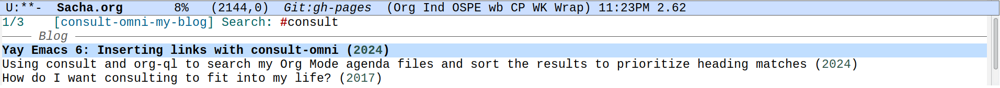
Then I can add it as one of the sources used by consult-omni:
(setq consult-omni-multi-sources
'(consult-omni--source-google
consult-omni--source-my-org-bookmarks
consult-omni--source-blog))
Here's what it looks like when I call consult-omni to search my bookmarks, blog posts, and Google results at the same time.
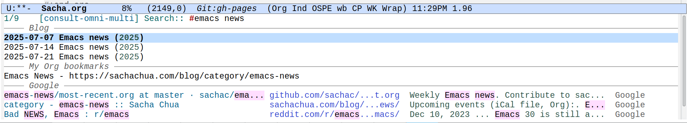
Then I can press RET to open the blog post in my browser or C-. i l to insert the link using Embark (my-consult-omni-embark-insert-link).
Related:
- consult-omni–source-my-org-bookmarks
- Completing blog posts (Org link type with completion)
- Using web searches and bookmarks to quickly link placeholders in Org Mode
Next steps: I want to find out how to get :sort nil to be respected so that more recent blog posts are listed first. Also, it might be fun to define a similar source for the sections of my Emacs configuration, like the way I can use my dotemacs: Org Mode link type with completion.
STARTED Searching my blog, notes, and sketches with consult-ripgrep and consult-omni
(defun my-search-notes ()
(interactive)
(consult-ripgrep '("~/sync/orgzly" "~/sync/static-blog/blog" "~/sync/sketches" "~/sync/topics")))
(defun my-search-public-notes ()
(interactive)
(consult-ripgrep '("~/sync/static-blog/blog" "~/sync/sketches" "~/sync/topics")))
(cl-defun my-consult-omni--google-blog-fetch-results (input &rest args &key callback &allow-other-keys)
"Fetches search results for INPUT from “Google Custom Search” service.
Narrows to `my-blog-base-url'.
Refer to URL `https://programmablesearchengine.google.com/about/' and
URL `https://developers.google.com/custom-search/' for more info."
(pcase-let* ((`(,query . ,opts)
(consult-omni--split-command input (seq-difference args (list :callback callback))))
(opts (car-safe opts))
(count (plist-get opts :count))
(page (plist-get opts :page))
(filter (plist-get opts :filter))
(count (or (and count (integerp (read count)) (string-to-number count))
consult-omni-default-count))
(page (or (and page (integerp (read page)) (string-to-number page))
consult-omni-default-page))
(filter (or (and (integerp filter) filter)
(and filter (string-to-number (format "%s" filter)))
1))
(filter (if (member filter '(0 1)) filter 1))
(count (min count 10))
(page (+ (* page count) 1))
(page (min page (- 100 count)))
(params `(("q" . ,(format "site:%s+%s"
(url-encode-url my-blog-base-url)
(replace-regexp-in-string " " "+" query)))
("key" . ,(consult-omni-expand-variable-function consult-omni-google-customsearch-key))
("cx" . ,(consult-omni-expand-variable-function consult-omni-google-customsearch-cx))
("gl" . "en")
("filter" . ,(format "%s" filter))
("num" . ,(format "%s" count))
("start" . ,(format "%s" page))))
(headers '(("Accept" . "application/json")
("Accept-Encoding" . "gzip")
("User-Agent" . "consult-omni (gzip)"))))
(consult-omni--fetch-url
consult-omni-google-customsearch-api-url consult-omni-http-retrieve-backend
:encoding 'utf-8
:params params
:headers headers
:parser #'consult-omni--json-parse-buffer
:callback
(lambda (attrs)
(let* ((raw-results (gethash "items" attrs))
(annotated-results
(mapcar (lambda (item)
(let*
((source "Google")
(url (format "%s" (gethash "link" item)))
(title (format "%s" (gethash "title" item)))
(snippet (string-trim (format "%s" (gethash "snippet" item))))
(search-url (consult-omni--make-url-string consult-omni-google-search-url params '("key" "cx" "gl")))
(decorated (funcall consult-omni-default-format-candidate :source source :query query :url url :search-url search-url :title title :snippet snippet)))
(propertize decorated
:source source
:title title
:url url
:search-url search-url
:query query
:snippet snippet)))
raw-results)))
(when (and annotated-results (functionp callback))
(funcall callback annotated-results))
annotated-results)))))
(use-package consult-omni
:load-path "~/vendor/consult-omni"
:after (consult embark)
:config
(consult-omni-define-source
"Google my blog"
:narrow-char ?b
:type 'dynamic
:require-match nil
:face 'consult-omni-engine-title-face
:request #'my-consult-omni--google-blog-fetch-results
:on-new (apply-partially #'consult-omni-external-search-with-engine "Google")
:preview-key consult-omni-preview-key
:search-hist 'consult-omni--search-history
:select-hist 'consult-omni--selection-history
:enabled (lambda () (bound-and-true-p consult-omni-google-customsearch-key))
:group #'consult-omni--group-function
:sort t
:interactive consult-omni-intereactive-commands-type
:annotate nil))
To get more results, I can add parameters like -- --count 10 and --page 2. I wonder if there's an easier keyboard shortcut for paginating through results…
Let's try these shortcuts…
(keymap-global-set "M-g b" #'my-search-public-notes)
(keymap-global-set "M-g N" #'my-search-notes)
(keymap-global-set "M-g B" #'consult-omni-google-my-blog)
Marginalia
Marginalia - add function name for aliases
(use-package marginalia :quelpa (marginalia :fetcher github :repo "minad/marginalia")
:init
(marginalia-mode)
:bind (:map minibuffer-local-completion-map
("M-m" . marginalia-cycle))
:config
(add-to-list 'marginalia-prompt-categories '("sketch" . sketch))
(add-to-list 'marginalia-censor-variables "-api-key")
(cl-pushnew #'marginalia-annotate-symbol-with-alias
(alist-get 'command marginalia-annotator-registry))
(cl-pushnew #'marginalia-annotate-symbol-with-alias
(alist-get 'function marginalia-annotator-registry))
(cl-pushnew #'marginalia-annotate-symbol-with-alias
(alist-get 'symbol marginalia-annotator-registry)))
(defun marginalia-annotate-alias (cand)
"Annotate CAND with the function it aliases."
(when-let ((sym (intern-soft cand))
(alias (car (last (function-alias-p sym))))
(name (and (symbolp alias) (symbol-name alias))))
(format " (%s)" name)))
(defun marginalia-annotate-symbol-with-alias (cand)
"Annotate symbol CAND with its documentation string.
Similar to `marginalia-annotate-symbol'."
(when-let (sym (intern-soft cand))
(concat
(marginalia-annotate-binding cand)
(marginalia--fields
((marginalia-annotate-alias cand) :face 'marginalia-function)
((marginalia--symbol-class sym) :face 'marginalia-type)
((cond
((fboundp sym) (marginalia--function-doc sym))
((facep sym) (documentation-property sym 'face-documentation))
(t (documentation-property sym 'variable-documentation)))
:truncate 1.0 :face 'marginalia-documentation)))))
Marginalia and annotating journal entries
The following code annotates journal entries with their categories.
(defun my-marginalia-annotate-journal (cand)
(when-let ((o (cdr (assoc cand my-journal-search-cache))))
(marginalia--fields
((plist-get o :Category)
:face 'marginalia-documentation
:truncate 13))))
(use-package marginalia
:config
(add-to-list 'marginalia-annotator-registry '(journal my-marginalia-annotate-journal builtin none)))
Cargo-culted stuff
(defun my-store-action-key+cmd (cmd)
(setq keycast--this-command-keys (this-single-command-keys) keycast--this-command cmd))
(defun my-force-keycast-update (&rest _)
(force-mode-line-update t))
(use-package keycast
:if my-laptop-p
:after embark
:defer t
:config (dolist (cmd '(embark-act embark-act-noexit embark-become))
(advice-add cmd
:before #'my-force-keycast-update)))
(use-package
embark
:config
;(setq embark-prompter 'embark-completing-read-prompter)
(advice-add 'embark-keymap-prompter :filter-return #'my-store-action-key+cmd)
(add-to-list 'embark-target-injection-hooks '(my-stream-message embark--allow-edit)))
Appearance
color-theme sometimes comes across lists. Odd!
(defadvice face-attribute (around sacha activate)
(if (symbolp (ad-get-arg 0))
ad-do-it))
Display
(defun sanityinc/adjust-opacity (frame incr)
(let* ((oldalpha (or (frame-parameter frame 'alpha) 100))
(newalpha (+ incr oldalpha)))
(when (and (<= frame-alpha-lower-limit newalpha) (>= 100 newalpha))
(modify-frame-parameters frame (list (cons 'alpha newalpha))))))
(keymap-global-set "C-M-8" (lambda () (interactive) (sanityinc/adjust-opacity nil -2)))
(keymap-global-set "C-M-9" (lambda () (interactive) (sanityinc/adjust-opacity nil 2)))
(keymap-global-set "C-M-0" (lambda () (interactive) (modify-frame-parameters nil `((alpha . 100)))))
From https://protesilaos.com/codelog/2024-11-28-basic-emacs-configuration/:
(add-to-list 'display-buffer-alist
'("\\`\\*\\(Warnings\\|Compile-Log\\)\\*\\'"
(display-buffer-no-window)
(allow-no-window . t)))
Color theme
Set up a light-on-dark color scheme
(defun my-setup-color-theme ()
(interactive)
(when (display-graphic-p)
(load-theme (car modus-themes-to-toggle))))
(use-package modus-themes
:quelpa (modus-themes :fetcher github :repo "protesilaos/modus-themes")
:init (setq modus-themes-to-toggle '(modus-vivendi-tinted modus-operandi-tinted))
:config (my-setup-color-theme))
I sometimes need to switch to a lighter background for screenshots.
For that, I use modus-operandi-tinted.
Making highlight-sexp follow modus-themes-toggle elisp emacs
Prot just added a modus-themes-get-color-value function. Yay! Also, it turns out that I need to update the overlay in all the buffers.
I'm experimenting with using the highlight-sexp minor mode to
highlight my current s-expression, since I sometimes get confused
about what I'm modifying with smartparens. The highlight-sexp
background colour is hardcoded in the variable
hl-sexp-background-color, and will probably look terrible if you use
a light background. I wanted it to adapt when I use
modus-themes-toggle. Here's how that works:
(use-package highlight-sexp
:quelpa
(highlight-sexp :repo "daimrod/highlight-sexp" :fetcher github :version original)
:after modus-themes
:hook
((emacs-lisp-mode . highlight-sexp-mode)
(modus-themes-after-load-theme . my-hl-sexp-update-all-overlays))
:config
(defun my-hl-sexp-update-overlay ()
(when (overlayp hl-sexp-overlay)
(overlay-put
hl-sexp-overlay
'face
`(:background
,(modus-themes-get-color-value 'bg-inactive)))))
(defun my-hl-sexp-update-all-overlays (&rest args)
(dolist (buf (buffer-list))
(with-current-buffer buf
(when highlight-sexp-mode
(my-hl-sexp-update-overlay)))))
(advice-add 'hl-sexp-create-overlay :after 'my-hl-sexp-update-overlay))
This is what it looks like:
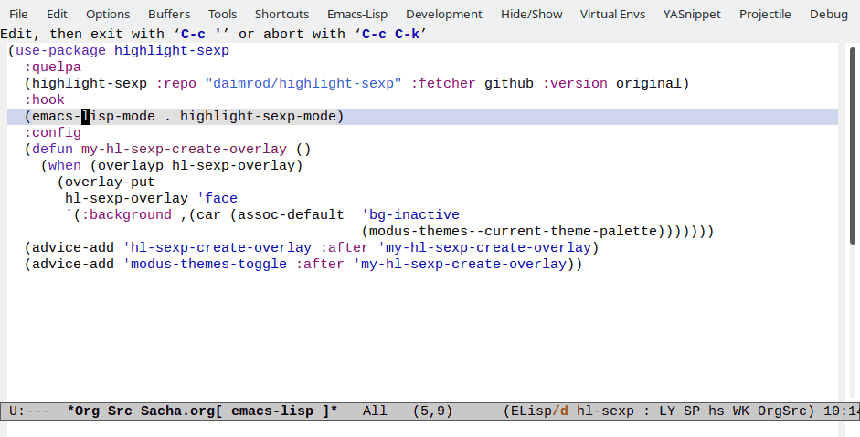
Modeline
Time in the modeline
I like having the clock.
(display-time-mode 1)
Diminish mode names in modeline
(use-package diminish :ensure t)
Highlight the active modeline using colours from modus-themes emacs
I wanted to experiment with Ignacio Paz Posse's snippet for colouring the mode line of the active window ever so slightly different to make it easier to see where the active window is. I usually have global-hl-line-mode turned on, so that highlight is another indicator, but let's see how this tweak feels. I modified the code so that it uses the theme colours from the currently-selected Modus themes, since I trust Prot's colour choices more than I trust mine. Thanks to Irreal for sharing Ignacio's comment!
(defun my-update-active-mode-line-colors ()
(set-face-attribute
'mode-line nil
:foreground (modus-themes-get-color-value 'fg-mode-line-active)
:background (modus-themes-get-color-value 'bg-blue-subtle)))
(use-package modus-themes
:hook
(modus-themes-after-load-theme . my-update-active-mode-line-colors))
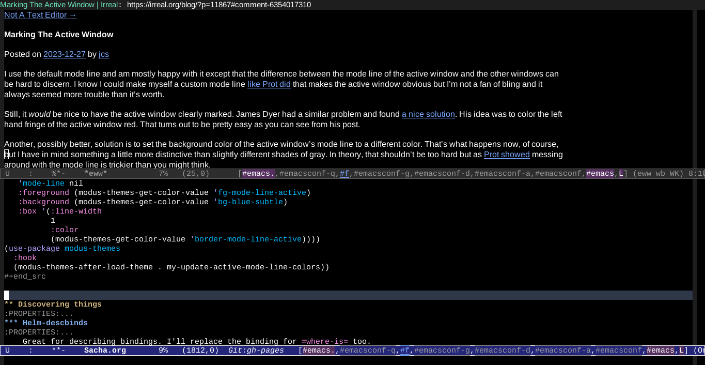
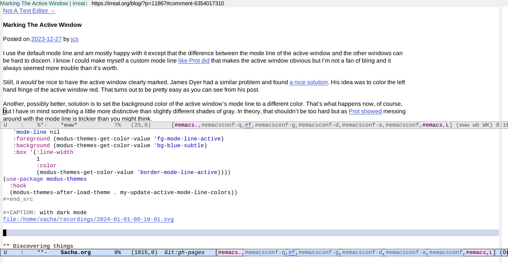
Quickly adding face properties to regions emacs
- : Set the first frame of the animated GIF to a reasonable backup image.
- : Add
:init-value nilto the mode.
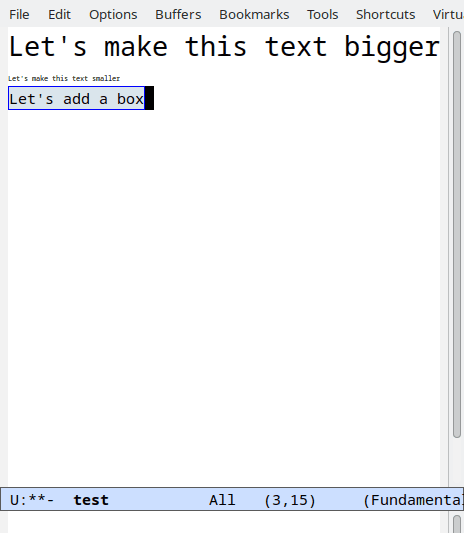
Sometimes I just want to make some text look a
little fancier in the buffer so that I can make a
thumbnail or display a message. This
my-add-face-text-property function lets me
select a region and temporarily change its height,
make it bold, or do other things. It will work in
text-mode or enriched-mode buffers (not Org
Mode or programming buffers like *scratch*, as
those do a lot of font-locking).
(defun my-add-face-text-property (start end attribute value)
(interactive
(let ((attribute (intern
(completing-read
"Attribute: "
(mapcar (lambda (o) (symbol-name (car o)))
face-attribute-name-alist)))))
(list (point)
(mark)
attribute
(read-face-attribute '(()) attribute))))
(add-face-text-property start end (list attribute value)))
enriched-mode has some keyboard shortcuts for
face attributes (M-o b for bold, M-o i for
italic). I can add some keyboard shortcuts for
other properties even if they can't be saved in
text/enriched format.
(defun my-face-text-larger (start end)
(interactive "r")
(add-face-text-property
start end
(list :height (floor (+ 50 (car (alist-get :height (get-text-property start 'face) '(100))))))))
(defun my-face-text-smaller (start end)
(interactive "r")
(add-face-text-property
start end
(list :height (floor (- (car (alist-get :height (get-text-property start 'face) '(100))) 50)))))
What's an easy way to make this keyboard shortcut
available during the rare times I want it? I know,
maybe I'll make a quick minor mode so I don't
have to dedicate those keyboard shortcuts all the
time. repeat-mode lets me change the size by
repeating just the last keystroke.
(defvar-keymap my-face-text-property-mode-map
"M-o p" #'my-add-face-text-property
"M-o +" #'my-face-text-larger
"M-o -" #'my-face-text-smaller)
(define-minor-mode my-face-text-property-mode
"Make it easy to modify face properties."
:init-value nil
(repeat-mode 1))
(defvar-keymap my-face-text-property-mode-repeat-map
:repeat t
"+" #'my-face-text-larger
"-" #'my-face-text-smaller)
(dolist (cmd '(my-face-text-larger my-face-text-smaller))
(put cmd 'repeat-map 'my-face-text-property-mode-repeat-map))
Reading
https://github.com/xahlee/xah_emacs_init/blob/master/xah_emacs_font.el From Xah Lee:
(defun xah-toggle-margin-right ()
"Toggle the right margin between `fill-column' or window width.
This command is convenient when reading novel, documentation."
(interactive)
(if (eq (cdr (window-margins)) nil)
(set-window-margins nil 0 (- (window-body-width) fill-column))
(set-window-margins nil 0 0)))
(use-package pdf-tools
:if my-laptop-p
:config
(pdf-tools-install)
(setq pdf-view-resize-factor 1.1)
(setq-default pdf-view-display-size 'fit-page)
:defer t
)
Writing and editing
(keymap-global-set "M-c" #'capitalize-dwim)
(setq-default fill-column 50)
(keymap-global-set "M-o" #'join-line)
(keymap-global-set "M-T" #'transpose-sentences) ; https://www.matem.unam.mx/~omar/apropos-emacs.html#writing-experience
(defun my-copy-filename ()
(interactive)
(cond
((derived-mode-p 'dired-mode) (dired-copy-filename-as-kill 0))
(t (kill-new (buffer-file-name)))))
Learning French french
(setq search-default-mode 'char-fold-to-regexp)
;; https://emacs.stackexchange.com/questions/75521/convert-accented-characters-to-non-accented-counterparts-character-folding
(defun my-translate-unaccented (s)
(mapconcat
(lambda (c)
(char-to-string
(car (get-char-code-property c 'decomposition))))
s ""))
(defvar-keymap my-french-map
"l" (cons "lookup" #'my-french-lexique-complete-word)
"w" (cons "wordref" #'my-french-wordreference-lookup)
"c" (cons "conj" #'my-french-conjugate)
"f" (cons "→ fr" #'my-french-consult-en-fr)
"s" (cons "say" #'my-french-say-word-at-point)
"t" (cons "→ en" #'my-french-translate-dwim))
(fset 'my-french-map my-french-map)
(with-eval-after-load 'org
(keymap-set org-mode-map "C-," my-french-map)
(keymap-set org-mode-map "C-c u" my-french-map))
(with-eval-after-load 'org
(keymap-set message-mode-map "C-," my-french-map)
)
(with-eval-after-load 'flyspell
(keymap-set flyspell-mode-map "C-," my-french-map))
(use-package wiktionary-bro
:config
(setq wiktionary-bro-language "fr")
)
(defun my-french-chrome-speech-new-session ()
(interactive)
(my-chrome-speech-new-session "french" "fr-FR"))
(use-package flycheck-grammalecte
:config
(setq flycheck-grammalecte-report-apos nil)
(setq flycheck-grammalecte-report-nbsp nil)
(setq flycheck-grammalecte-report-esp nil)
(with-eval-after-load 'flycheck
(flycheck-grammalecte-setup)))
Start the process for transcribing the latest recording
(defun my-french-process-latest-recording (annotation)
(interactive "MAnnotation: ")
(let* ((file (my-latest-file my-recordings-dir))
(audio (expand-file-name
(concat (file-name-base file) "-" annotation ".opus")
"~/sync/recordings/")))
(make-process :name "whisperx"
:buffer (get-buffer-create "*whisperx*")
:command (list
"bash"
"-c"
(format
"ffmpeg -y -i %s %s; cd ~/sync/recordings; ~/bin/whisperx %s"
(shell-quote-argument file)
(shell-quote-argument audio)
(shell-quote-argument audio))))
(message "Started %s" audio)))
DONE Emacs and French: Focus flycheck-grammalecte on the narrowed part of the buffer
: Fix flycheck-checkers.
After learning about French spellcheck and grammar checking from Emacs expliqué à mes enfants, I added flycheck-grammalecte to my config. Nudged by @lann@mastodon.zaclys.com, I finally got around to figuring out why my setup sometimes worked and sometimes didn't. When I checked flycheck-verify-setup, I noticed that grammalecte kept getting disabled. A little digging around showed me that it was getting disabled because of too many errors. That was because it was trying to work on my whole file instead of just the portion that I narrowed to with org-narrow-to-subtree (ooh, just noticed an org-toggle-narrow-to-subtree command). I like having all of my French journal entries in one file because I can use consult-line (which I've bound to M-g l) to quickly look up examples of where else I've used a word. So I needed to define a checker that runs only on the narrowed part of the buffer.
(defun my-flycheck-grammalecte-buffer (checker callback)
(let* ((temp-file-name (make-temp-file "grammalecte"))
(output-buffer (get-buffer-create temp-file-name))
(buffer (current-buffer))
(cmdline (delq nil `("python3"
,(expand-file-name "flycheck_grammalecte.py"
grammalecte--site-directory)
,(unless flycheck-grammalecte-report-spellcheck "-S")
,(unless flycheck-grammalecte-report-grammar "-G")
,(unless flycheck-grammalecte-report-apos "-A")
,(unless flycheck-grammalecte-report-nbsp "-N")
,(unless flycheck-grammalecte-report-esp "-W")
,(unless flycheck-grammalecte-report-typo "-T")
(option-list "-f" flycheck-grammalecte-filters)
(eval (flycheck-grammalecte--prepare-arg-list
"-f" flycheck-grammalecte-filters-by-mode))
(eval (flycheck-grammalecte--prepare-arg-list
"-b" flycheck-grammalecte-borders-by-mode))
,temp-file-name)))
(args (mapcan (lambda (arg) (flycheck-substitute-argument arg checker)) cmdline))
(command (flycheck--wrap-command (car args) (cdr args))))
(write-region (buffer-string) nil temp-file-name)
(make-process :name "grammalecte"
:buffer output-buffer
:command command
:sentinel
(lambda (process status)
(let ((errors (with-current-buffer (process-buffer process)
(flycheck-parse-with-patterns
(buffer-string)
checker
(current-buffer)))))
(delete-file temp-file-name)
(kill-buffer output-buffer)
;; offset
(funcall
callback
'finished
(let ((offset (save-excursion (goto-char (point-min))
(line-number-at-pos nil t))))
(mapcar
(lambda (err)
(let ((new-err (copy-flycheck-error err)))
(setf (cl-struct-slot-value 'flycheck-error 'buffer new-err)
buffer)
(setf (cl-struct-slot-value 'flycheck-error 'line new-err)
(+ (flycheck-error-line new-err)
offset -1))
(setf (cl-struct-slot-value 'flycheck-error '-end-line new-err)
(+ (flycheck-error-end-line new-err)
offset -1))
new-err))
errors))))))))
(defun my-flycheck-grammalecte-setup ()
"Build the flycheck checker, matching your taste."
(interactive)
(flycheck-mode 1)
(unless (grammalecte--version)
(advice-add 'grammalecte-download-grammalecte :after-while
#'flycheck-grammalecte--retry-setup))
(grammalecte--augment-pythonpath-if-needed)
(flycheck-define-generic-checker 'my-grammalecte-narrowed
"Report Grammalecte errors, but only for the narrowed section."
:start #'my-flycheck-grammalecte-buffer
:modes flycheck-grammalecte-enabled-modes
:predicate (lambda ()
(if (functionp flycheck-grammalecte-predicate)
(funcall flycheck-grammalecte-predicate)
t))
:enabled #'grammalecte--version
:verify #'flycheck-grammalecte--verify-setup)
(setf (flycheck-checker-get 'my-grammalecte-narrowed 'error-patterns)
(seq-map (lambda (p)
(cons (flycheck-rx-to-string `(and ,@(cdr p))
'no-group)
(car p)))
flycheck-grammalecte--error-patterns))
(add-to-list 'flycheck-checkers 'my-grammalecte-narrowed)
(flycheck-select-checker 'my-grammalecte-narrowed)
(flycheck-grammalecte--patch-flycheck-mode-map))
After I use my-flycheck-grammalecte-setup, I can use flycheck-select-checker to select my-grammalecte-narrowed and then use flycheck-buffer to run it. Then it will underline all the number/gender agreement issues I usually have. It's nice that I can practise editing my text with this script before I run the text through an LLM (also via flycheck) for feedback on wording.

Speech synthesis
gtts-cli
libsox-fmt-mp3 gtts-cli "rendez-vous" -l fr | play -t mp3 -
(defvar my-french-tts-process nil)
(defun my-french-tts-stop ()
(interactive)
(when (process-live-p my-french-tts-process)
(stop-process my-french-tts-process)))
(defun my-french-gtts-say (s &optional callback filename)
(interactive (list (if (region-active-p)
(buffer-substring (region-beginning)
(region-end))
(symbol-name (symbol-at-point)))))
(unless s
(setq s (symbol-name (symbol-at-point))))
(my-french-tts-stop)
(setq my-french-tts-process
(make-process
:name "gtts"
:command (list "sh" "-c"
(if filename
(format "gtts-cli -l fr %s | ffmpeg -i mp3 -f wav - | tee %s | play -t wav -"
(shell-quote-argument s)
(shell-quote-argument filename))
(format "gtts-cli -l fr %s | play -t mp3 -"
(shell-quote-argument s))))
:sentinel callback)))
(defcustom my-french-tts-function 'my-french-kokoro-fastapi-say
"Function to use for speaking.
It should have the arguments (text &optional callback filename)."
:type '(choice
(const my-french-kokoro-fastapi-say)
(const my-azure-tts-french)
(const my-french-gtts-say))
:group 'sacha)
Kokoro takes about 5 seconds to spin up on my computer.
(defun my-french-kokoro-say (s &optional callback filename)
(interactive (list (if (region-active-p)
(buffer-substring (region-beginning)
(region-end))
(symbol-name (symbol-at-point)))))
(unless s
(setq s (symbol-name (symbol-at-point))))
(my-french-tts-stop)
(setq my-french-tts-process
(make-process
:name "kokoro"
:command (list "sh" "-c"
(format "echo %s | kokoro-tts - --lang fr-fr --voice ff_siwis --stream"
(shell-quote-argument s)))
:sentinel callback)))
Using it through FastAPI is better, I think, because the model can stay loaded.
(defun my-french-kokoro-fastapi-say (s &optional callback filename)
(interactive (list (if (region-active-p)
(buffer-substring (region-beginning)
(region-end))
(symbol-name (symbol-at-point)))))
(unless s
(setq s (symbol-name (symbol-at-point))))
(my-kokoro-fastapi-ensure)
(let* ((extension (if filename (file-name-extension filename) "wav"))
(data (shell-quote-argument
(json-encode
`(("model" . "kokoro")
("input" . ,s)
("voice" . "ff_siwis")
("language" . "fr-fr")
("response_format" . ,extension)
("stream" . t)))))
(command (if filename
(format "curl -N %s -H %s -d %s | tee %s | play -t %s -"
(shell-quote-argument "http://localhost:8880/v1/audio/speech")
(shell-quote-argument "Content-Type: application/json")
data
(shell-quote-argument filename)
extension)
(format "curl -N %s -H %s -d %s | play -t %s -"
(shell-quote-argument "http://localhost:8880/v1/audio/speech")
(shell-quote-argument "Content-Type: application/json")
data
extension))))
(my-french-tts-stop)
(setq my-french-tts-process
(make-process
:name "kokoro"
:command (list "sh" "-c" command)
:sentinel callback))))
(defun my-french-kokoro-fastapi-to-file (s filename &optional sync)
(interactive (list (if (region-active-p)
(buffer-substring (region-beginning)
(region-end))
(symbol-name (symbol-at-point)))
(read-file-name "Output: ")))
(unless s
(setq s (symbol-name (symbol-at-point))))
(my-kokoro-fastapi-ensure)
(let* ((extension (if filename (file-name-extension filename) "wav"))
(data (shell-quote-argument
(json-encode
`(("model" . "kokoro")
("input" . ,s)
("voice" . "ff_siwis")
("language" . "fr-fr")
("response_format" . ,extension)
("stream" . t)))))
(command (format "curl -N %s -H %s -d %s > %s"
(shell-quote-argument "http://localhost:8880/v1/audio/speech")
(shell-quote-argument "Content-Type: application/json")
data
(shell-quote-argument filename)
extension)))
(if sync
(call-process
"sh"
nil nil nil
"-c" command)
(make-process
:name "kokoro-tts"
:command (list "sh" "-c" command)))))
(defvar my-kokoro-fastapi-process nil)
(defvar my-kokoro-fastapi-command "docker start -a kokoro-fastapi || docker run --name kokoro-fastapi -p 8880:8880 ghcr.io/remsky/kokoro-fastapi-cpu:latest")
(defun my-kokoro-fastapi-ensure ()
"Start the process if it's not already running."
(interactive)
(unless (process-live-p my-kokoro-fastapi-process)
(setq my-kokoro-fastapi-process
(make-process
:name "kokoro-fastapi"
:command (list "bash" "-c" my-kokoro-fastapi-command)
:buffer (get-buffer-create "*kokoro-fastapi*")
:stderr (get-buffer-create "*kokoro-fastapi-err*")))))
;; (my-french-kokoro-fastapi-say "Ma fille et moi avons pris nos pelles et son grand bâton et nous sommes allées au coin de la rue que j'avais un peu déneigée hier.")
(defun my-french-kokoro-fastapi-phonemize (s)
(my-kokoro-fastapi-ensure)
(alist-get 'phonemes
(plz 'post "http://localhost:8880/dev/phonemize"
:headers '(("Content-Type" . "application/json"))
:body (json-encode `((text . ,s)
(language . "fr-fr")))
:as #'json-read)))
(defun my-french-insert-pronunciation (beg end)
"Insert the IPA pronunciation for the word at point."
(interactive (if (region-active-p)
(list (region-beginning)
(region-end))
(when (or (looking-at "{") (looking-back "{[^}]*"))
(goto-char (match-beginning 0))
(backward-word))
(bounds-of-thing-at-point 'symbol)))
(save-excursion
(let* ((pron (my-french-kokoro-fastapi-phonemize (buffer-substring-no-properties beg end))))
(goto-char end)
(if (looking-at " *{\\(.+?\\)}")
(progn
(goto-char (match-end 1))
(insert " " pron))
(insert " {" pron "}")))))
(defun my-french-say (s &optional callback filename)
(interactive (list (if (region-active-p)
(buffer-substring (region-beginning)
(region-end))
(read-string "Text: "))))
(funcall (or my-french-tts-function #'my-french-gtts-say) s callback filename))
(defun my-french-say-word-at-point ()
(interactive)
(my-french-say (word-at-point)))
(defun my-french-say-sentence-at-point ()
(interactive)
(my-french-say (sentence-at-point)))
(defun my-french-say-forward-sentence ()
(interactive)
(org-forward-sentence)
(my-french-say (sentence-at-point)))
(defun my-french-say-next-new-word ()
(interactive)
(when-let ((word (my-french-find-next-new-word)))
(my-french-say word)))
(defun my-french-find-next-new-word ()
(interactive)
(let ((pos (point))
(found nil))
(while (and (not found)
(< pos (point-max)))
(setq pos (next-overlay-change pos))
(dolist (ov (overlays-at pos))
(when (overlay-get ov 'my-french-highlight)
(setq found (overlay-get ov 'word))
(goto-char (overlay-start ov)))))
(if found
found
(message "No more highlights found.")
nil)))
(defun my-french-say-overlay ()
(interactive)
(message "hello %s" (word-at-point))
)
(defvar-keymap my-french-overlay-map
"<down-mouse-1>" #'my-french-say-overlay
"<mouse-1>" #'my-french-say-overlay)
(defvar-keymap my-french-shadow-map
"w" #'my-french-say
"n" #'my-french-say-next-new-word
"'" #'my-french-say-sentence-at-point
"<left>" #'my-french-say-sentence-at-point
"<up>" #'my-french-say-sentence-at-point
"," #'my-french-say-forward-sentence
"<right>" #'my-french-say-forward-sentence
"<down>" #'my-french-say-forward-sentence
"q" #'my-french-tts-stop)
(defun my-french-shadow ()
(interactive)
(set-transient-map my-french-shadow-map t))
Azure
(defvar my-azure-tts-key (getenv "AZURE_SPEECH_KEY")
"Azure Speech Service subscription key.")
(defvar my-azure-tts-region "eastus"
"Azure Speech Service region (e.g., eastus, westeurope).")
(defvar my-azure-tts-voice "fr-FR-DeniseNeural"
"Azure TTS voice name. Options for French:
- fr-FR-DeniseNeural (female)
- fr-FR-HenriNeural (male)
- fr-CA-SylvieNeural (Canadian French, female)
- fr-CA-AntoineNeural (Canadian French, male)")
(defun my-azure-tts-french (text &optional callback)
"Speak TEXT using my-azure Text-to-Speech."
(interactive "sText to speak: ")
(let* ((temp-file (make-temp-file "azure-tts-" nil ".mp3"))
(ssml (format "<speak version=\"1.0\" xml:lang=\"fr-FR\"><voice name=\"%s\">%s</voice></speak>"
my-azure-tts-voice
(xml-escape-string text)))
(url (format "https://%s.tts.speech.microsoft.com/cognitiveservices/v1"
my-azure-tts-region))
(curl-command
(format "curl -X POST '%s' -H 'Ocp-Apim-Subscription-Key: %s' -H 'Content-Type: application/ssml+xml' -H 'X-Microsoft-OutputFormat: audio-24khz-48kbitrate-mono-mp3' -d '%s' -o '%s'"
url my-azure-tts-key ssml temp-file)))
(shell-command curl-command)
(if callback
(set-process-sentinel
(start-process "azure-tts-player" nil "mpv" "--no-terminal" temp-file)
(lambda (process status)
(when (string-match "finished" status)
(delete-file temp-file)
(when (functionp callback)
(funcall callback)))))
(progn
(call-process "mpv" nil nil nil temp-file)
(delete-file temp-file)))))
Add shadowing with tts to subed-record emacs stream
(defun my-french-prepare-subed-record ()
(interactive)
(let* ((dir "~/proj/french/recordings/")
(id (or (org-entry-get (point) "DATE")
(org-entry-get (point) "CUSTOM_ID")
(org-entry-get (point) "ITEM")))
(filename (expand-file-name
(concat
id
"-script.vtt")
dir))
(already-exists (file-exists-p filename))
(text (my-subed-simplify (my-org-subtree-text-without-blocks))))
(unless (or (org-in-block-p '("media-post"))
(file-exists-p filename))
(org-back-to-heading)
(org-end-of-meta-data t)
(insert "#+begin_media-post\n")
(insert (org-link-make-string
(concat "audio:"
(expand-file-name (concat id ".opus")
dir))) "\n\n")
(org-end-of-subtree)
(insert "\n#+end_media-post\n"))
(if (file-exists-p filename)
(find-file filename)
(my-subed-convert-sentences
text
filename
(concat id ".opus")))
(subed-record-set-up)
;; See if there have been any changes
(when already-exists
(let* ((current (mapcar (lambda (o) (elt o 3)) (subed-parse-file filename)))
(new-version (my-split-into-sentences-or-lines text))
(differences (my-string-list-diff current new-version)))
(with-current-buffer (get-buffer-create "*changes*")
(erase-buffer)
(dolist (change differences)
(pcase (car change)
('add (insert "+ " (elt change 2) "\n"))
('change (insert "< " (elt change 1) "\n"
"> " (elt change 2) "\n"))
('delete (insert "- " (elt change 1) "\n")))
(insert "\n"))
(goto-char (point-min))
(display-buffer-other-window (current-buffer)))))
(require 'subed-record)
(my-lang-shadow-mode 1)))
(defun my-split-into-sentences-or-lines (text)
(let (lines pos)
(with-temp-buffer
(insert text)
(goto-char (point-min))
(while (not (eobp))
(setq pos (point))
(let ((end-line (line-end-position)))
(forward-sentence)
(when (> (point) end-line)
(goto-char (1+ end-line))))
(when (looking-at " [({].+?[)}]")
(goto-char (match-end 0)))
(unless (string= (string-trim (buffer-substring-no-properties pos (point))) "")
(push (string-trim (buffer-substring-no-properties pos (point))) lines))))
(nreverse lines)))
(defun my-subed-simplify (s)
(string-trim
(replace-regexp-in-string
" +" " "
(replace-regexp-in-string
"^- \\(\\.\\.\\. \\)?\\|^\\*+ \\|{.+?}\\|*" ""
s))))
(defun my-subed-convert-sentences (text filename &optional output)
(interactive (cond
((region-active-p)
(list
(buffer-substring (region-beginning)
(region-end))
(read-file-name)))
((derived-mode-p 'org-mode)
(list
(my-org-subtree-text-without-blocks)
(read-file-name)))))
(unless (listp text)
(setq text (my-split-into-sentences-or-lines text)))
(with-current-buffer (find-file-noselect filename)
(subed-auto-insert)
(subed-append-subtitle-list
(seq-map-indexed
(lambda (line i)
(list nil 0 0
(my-subed-simplify line)
(when (= i 0)
(format "#+OUTPUT: %s"
(or output
(concat (file-name-base filename)
".opus"))))))
text))
(goto-char (point-min))
(save-buffer)
(switch-to-buffer (current-buffer))))
(defvar my-french-reference-dir "~/proj/french/reference/")
(defun my-french-say-current-subtitle (&optional callback)
(interactive)
;; Save the reference audio to directory.
(let ((comment (subed-subtitle-comment)))
(if (and comment
(string-match "#\\+REFERENCE: \\(.+?\\)$" comment))
(progn
(my-practice-play-current-reference)
(funcall callback))
;; No reference yet, generate it
(let ((reference-filename
(expand-file-name
(format
"%s-%s.wav"
(file-name-base (buffer-file-name))
(md5 (subed-subtitle-text)))
my-french-reference-dir)))
(subed-set-subtitle-comment
(string-trim
(concat (string-trim
(replace-regexp-in-string
"#\\+REFERENCE: \\(.+?\\)\n"
""
(concat
(or (subed-subtitle-comment) "")
"\n")))
"\n#+REFERENCE: "
reference-filename)))
(my-french-say
(replace-regexp-in-string "^- +\\|{.+?} *" "" (subed-subtitle-text))
callback
reference-filename)))))
(defun my-french-say-word-at-click (event)
(interactive "e")
(mouse-set-point event)
(my-french-say (word-at-point)))
(defun my-french-say-current-subtitle-and-reset-subed-record ()
(interactive)
(my-french-say-current-subtitle
(lambda (&rest _)
(when subed-record-minor-mode
(subed-record-retry)))))
(defun my-subed-record-accept-and-play-current-subtitle ()
(interactive)
(let ((end-time (subed-record-offset-ms)))
(subed-set-subtitle-time-stop (- end-time subed-record-offset-ms-from-end))
(my-subed-play-current-subtitle)))
(with-eval-after-load 'subed-record
(keymap-set subed-record-minor-mode-map "s" #'my-french-say-current-subtitle-and-reset-subed-record)
(keymap-set subed-record-minor-mode-map "t" #'my-french-say-current-subtitle)
(keymap-set subed-record-minor-mode-map "r" #'my-subed-record-accept-and-play-current-subtitle)
(add-hook 'subed-record-accept-segment-hook #'my-french-say-current-subtitle-and-reset-subed-record))
(defun my-subed-play-current-subtitle (&optional callback)
(interactive)
(make-process
:name "mpv"
:command (list "mpv" (subed-media-file)
(format "--start=%.3f" (/ (subed-subtitle-msecs-start) 1000.0))
(format "--end=%.3f" (/ (subed-subtitle-msecs-stop) 1000.0)))
:sentinel callback))
(defun my-subed-say-and-review-current-subtitle ()
(interactive)
(my-french-say-current-subtitle
(lambda (&rest _)
(my-subed-play-current-subtitle))))
(defvar-keymap my-subed-review-map
:repeat (:exit '(subed-record))
"<right>" (lambda () (interactive)
(subed-forward-subtitle-text)
(my-subed-say-and-review-current-subtitle))
"<left>" #'my-subed-say-and-review-current-subtitle
"<up>" #'my-french-say-current-subtitle
"<down>" #'my-subed-play-current-subtitle
"n" #'my-subed-review-next-subtitle
"r" #'subed-record)
(defun my-subed-review-next-subtitle ()
"Play the next subtitle."
(interactive)
(subed-forward-subtitle-text)
(my-subed-play-current-subtitle))
(defun my-subed-review ()
(interactive)
(my-subed-say-and-review-current-subtitle)
(set-transient-map my-subed-review-map t))
(with-eval-after-load 'subed-record
(add-hook 'subed-record-finished-hook 'my-subed-record-normalize-current))
(defun my-subed-record-normalize-current (file)
(interactive (list (subed-media-file)))
(let ((temp-file (make-temp-file file nil (concat "." (file-name-extension file)))))
(make-process
:name "normalize"
:buffer (get-buffer-create "*normalize*")
:command (list
(expand-file-name "~/bin/normalize")
(expand-file-name file)
temp-file)
:sentinel
(lambda (process event)
(when (string-match "finished" event)
(rename-file temp-file file t)
(message "Normalized %s" file))))))
(define-minor-mode my-lang-shadow-mode "Language learning")
(defvar-keymap my-lang-shadow-mode-map
"<mouse-1>" #'my-french-say-word-at-click)
Make it easy to add reference links
(defvar-local my-subed-record-references nil)
(defun my-subed-record-load-references (file &optional skip-insert)
"Load the references from FILE (media)."
(interactive (list (read-file-name "Media file: ")
current-prefix-arg))
(dolist (cue (subed-parse-file (concat (file-name-sans-extension file) ".vtt")))
(push
(list
(my-subed-simplify (elt cue 3))
file
(elt cue 1)
(elt cue 2))
my-subed-record-references))
(unless skip-insert
(my-subed-insert-references)))
(defun my-subed-insert-reference ()
(interactive)
(when-let* ((rec (alist-get (my-subed-simplify (subed-subtitle-text))
my-subed-record-references
nil nil #'string=)))
(subed-record-set-directive
"#+REFERENCE"
(format "%s %s --> %s"
(elt rec 0)
(subed-msecs-to-timestamp (elt rec 1))
(subed-msecs-to-timestamp (elt rec 2))))))
(defun my-subed-insert-references ()
(interactive)
(subed-for-each-subtitle (point-min) (point-max) t
(my-subed-insert-reference)))
Word timestamps
(defun my-french-word-timestamps ()
"Add timestamps using the MFA French model."
(interactive)
(let ((subed-align-mfa-dictionary "french_mfa")
(subed-align-mfa-acoustic-model "french_mfa"))
(subed-align-mfa-set-word-data
(subed-media-file)
nil nil
(lambda (&rest _)
(subed-word-data-add-word-timestamps)))))
Practice pronunciation
(defvar my-practice-dir "~/proj/french/audio")
(defvar my-practice-temp (expand-file-name "temp.wav" my-practice-dir))
(defun my-practice-line ()
(interactive)
(sit-for 1)
(let* ((date (format-time-string "%Y-%m-%d-%H-%M-%S"))
(filename
(expand-file-name
(concat date " "
(string-trim
(buffer-substring (line-beginning-position)
(line-end-position)))
".opus")
my-practice-dir))
(process (start-process "arecord"
(get-buffer-create "*record*")
"arecord" "-D" "hw:2,0" "-t" "wav" "-f" "cd"
my-practice-temp)))
(read-key "Press a key")
(kill-process process)
(call-process "ffmpeg" nil (get-buffer-create "*record*") nil
"-y"
"-i"
my-practice-temp
"-af" "silenceremove=start_periods=1:start_duration=0:start_threshold=-60dB,areverse,silenceremove=start_periods=1:start_duration=0:start_threshold=-60dB,areverse,loudnorm=I=-16:LRA=11:TP=-1.5"
filename)
(mpv-play filename)))
(defun my-practice-replay ()
(interactive)
(mpv-play (my-latest-file my-practice-dir)))
(defun my-practice-transcribe ()
(interactive)
(let* ((default-directory my-practice-dir)
(file (my-latest-file my-practice-dir "\\.opus\\|\\.m4a\\|\\.webm")))
;; (call-process "/bin/bash" nil nil nil "/home/sacha/bin/whisperx" (expand-file-name file))
(message "%s"
(with-temp-buffer
(insert-file-contents (concat (file-name-sans-extension file) ".txt"))
(string-trim (buffer-string))))))
(defun my-practice-play-current-reference (&optional beg end)
"Play the current segment."
(interactive)
(when (derived-mode-p 'subed-mode)
(let ((comment (subed-subtitle-comment)))
(cond
((string-match "#\\+REFERENCE: \\(.+\\) +\\(.+?\\) +--> +\\([^ ]+\\)" comment)
(let ((file (expand-file-name (match-string 1 comment)))
(start (match-string 2 comment))
(stop (match-string 3 comment)))
(call-process "mpv" nil nil nil
file
(format "--start=%.3f" (/ (subed-timestamp-to-msecs start) 1000.0))
(format "--end=%.3f" (/ (subed-timestamp-to-msecs stop) 1000.0)))))
((string-match "#\\+REFERENCE: \\(.+\\)" comment)
(call-process "mpv" nil nil nil (match-string 1 comment)))
(t (let ((start
(if beg (save-excursion
(goto-char beg)
(subed-subtitle-msecs-start))
(subed-subtitle-msecs-start)))
(stop
(if beg (save-excursion
(goto-char end)
(subed-subtitle-msecs-stop))
(subed-subtitle-msecs-stop))))
(call-process "mpv" nil nil nil (subed-media-file)
(format "--start=%.3f" (/ start 1000.0))
(format "--end=%.3f" (/ stop 1000.0)))))))))
(defun my-practice-record-loop (&optional extra)
(interactive
(list (cond
((and (derived-mode-p 'subed-mode)
(region-active-p))
(subed-subtitle-list-text
(subed-subtitle-list
(region-beginning)
(region-end))))
((region-active-p)
(concat
" "
(string-trim
(buffer-substring (region-beginning) (region-end)))))
((derived-mode-p 'subed-mode)
(concat " " (subed-subtitle-text))))))
(let* ((date (format-time-string "%Y-%m-%d-%H-%M-%S"))
(key-prompt "%d (SPC to review, RET get feedback, q to quit, any other key to retry")
(filename
(expand-file-name
(concat date
(if extra
(concat " "
(string-trim (replace-regexp-in-string
"[\\?]+" " "
(car
(split-string
extra "\n")))))
"")
".opus")
my-practice-dir))
done
char
(count 0)
process)
(while (not done)
(when (derived-mode-p 'subed-mode)
(if (region-active-p)
(my-practice-play-current-reference (region-beginning) (region-end))
(my-practice-play-current-reference)))
(setq count (1+ count))
(setq process (start-process "ffmpeg"
(get-buffer-create "*record*")
"ffmpeg" "-y" "-f" "pulse" "-i" "alsa_input.usb-Blue_Microphones_Yeti_Stereo_Microphone_REV8-00.analog-stereo"
my-practice-temp))
(setq char
(read-key (format key-prompt
count)))
(while char
(pcase char
(?\ (when (process-live-p process)
(sit-for 1)
(kill-process process))
(my-practice-play-current-reference)
(call-process "mpv" nil nil nil my-practice-temp)
(setq char
(read-key (format "%d (SPC to review, RET get feedback, q to quit, any other key to retry"
count))))
(13 (when (process-live-p process)
(sit-for 1)
(kill-process process))
(setq done 'feedback)
(setq char nil))
(?w ; transcribe with Whisper
(my-practice-transcribe))
(?q
(when (process-live-p process) (kill-process process))
(setq done 'ignore)
(setq char nil))
(_
(when (process-live-p process) (kill-process process))
(setq char nil)))))
(when (member done '(keep feedback))
(call-process "ffmpeg" nil (get-buffer-create "*record*") nil
"-y"
"-i"
my-practice-temp
"-af" "loudnorm=I=-16:LRA=11:TP=-1.5"
;; "-af" "silenceremove=start_periods=1:start_duration=0:start_threshold=-100dB,areverse,silenceremove=start_periods=1:start_duration=0:start_threshold=-100dB,areverse,loudnorm=I=-16:LRA=11:TP=-1.5"
filename)
(when (eq done 'feedback)
(my-french-get-audio-feedback filename extra t)))))
AI feedback
(defvar my-gemini-api-key nil)
(defun my-french-review-writing (input)
(interactive (list
(if (region-active-p)
(buffer-substring (region-beginning) (region-end))
(org--paragraph-at-point))))
(let* ((text
(concat "Check this beginner French and give me feedback/suggestions in English. I am female. Do input and output in Org Mode syntax.
Do not put it in a code block, just return Org Mode text. Show additions using *text* and deletions using +text+. Use subheading level two or more (**, ***, and so on). Show only the smallest part needed to show the context of the change.
Example output:
- J'ai réfléchi *à* +sur+ l'aide : comment aider quelqu'un, comment recevoir *de l'aide* +d'aide+.
- *Réfléchi à* is more common than \"refléchi sur\".
- *Recevoir de l'aide* is better than \"d'aide\".
Input:
"
input))
(json-array-type 'vector)
(json-object-type 'alist)
(body (json-encode
`(("contents"
(("parts" .
((("text" . ,text)))))))))
result)
(setq
result
(plz 'post "https://generativelanguage.googleapis.com/v1beta/models/gemini-2.0-flash:generateContent"
:headers
`(("Content-Type" . "application/json")
("X-goog-api-key" . ,my-gemini-api-key))
:as #'json-read
:body body
))
(when (called-interactively-p 'any)
(with-current-buffer (get-buffer-create "*Feedback*")
(org-mode)
(goto-char (point-min))
(save-excursion
(insert "* Feedback\n\n"
(map-nested-elt result '(candidates 0 content parts 0 text))
"\n\n"))
(display-buffer (current-buffer))))
(map-nested-elt result '(candidates 0 content parts 0 text)))
)
(defun my-french-get-audio-feedback (filename &optional extra-text display)
(interactive (list (if current-prefix-arg
(read-file-name "File: " my-practice-dir nil t nil
(lambda (filename) (string-match "\\.m4a$" filename)))
(my-latest-file my-practice-dir "\\(\\.m4a\\|\\.webm\\)$"))
(if (region-active-p)
(buffer-substring (region-beginning) (region-end)))
t))
(let* ((data
(replace-regexp-in-string
"\n" ""
(shell-command-to-string (concat "base64 " (shell-quote-argument filename)))))
(text
(concat "Give me feedback in English on this recording of beginner French practice. I am a female A0/A1 speaker. Focus first on major mispronunciations, and provide English phonetic transcriptions for those words using italicized parenthetical notes.
Return your response using Org Mode syntax using only list items, not headings. Do not put it in a code block, just return Org Mode text. For example, *bold*. Score it out of 10.
Example output:
- Pronunciation (7 /10)
- travaillé /(trah vay yay)/
"
(if extra-text
(concat "\n\n###\n\n" extra-text)
"")))
(json-array-type 'vector)
(json-object-type 'alist)
(body (json-encode
`(("contents"
(("parts" .
((("text" . ,text))
(("inline_data" .
(("mime_type" . "audio/mp4")
("data" . ,data))))
)))))))
result)
(setq
result
(plz 'post "https://generativelanguage.googleapis.com/v1beta/models/gemini-2.5-flash:generateContent"
:headers
`(("Content-Type" . "application/json")
("X-goog-api-key" . ,my-gemini-api-key))
:as #'json-read
:body body))
(when display
(with-current-buffer (get-buffer-create "*Feedback*")
(org-mode)
(goto-char (point-min))
(let* ((text (map-nested-elt result '(candidates 0 content parts 0 text)))
(score (when (string-match "Pronunciation (\\(.+\\))" text) (match-string 1 text))))
(insert "* " (org-link-make-string
(concat "audio:"
(replace-regexp-in-string
(rx line-start
(literal (getenv "HOME")))
"~"
filename))
"me:") " "
(or score "")
"\n"
text
"\n\n"))
(display-buffer (current-buffer))
(with-selected-window (get-buffer-window (current-buffer))
(goto-char (point-min))
(recenter-top-bottom 0))))
(map-nested-elt result '(candidates 0 content parts 0 text))))
(defun my-org-copy-clean-version (text)
"Copy BEG to END without strike-throughs."
(interactive (list (if (region-active-p) (buffer-substring (region-beginning) (region-end))
(sentence-at-point))))
(let ((result
(mapconcat (lambda (o)
(if (stringp o)
o
(car (org-element-contents o))))
(seq-remove (lambda (o)
(and (listp o)
(member (org-element-type o)
'(strike-through macro))))
(org-element-parse-secondary-string
text '(paragraph bold strike-through macro)))
" ")))
(setq result
(replace-regexp-in-string
" +" " "
(replace-regexp-in-string " [\\.,]" "\\1" result)))
(when (called-interactively-p 'any)
(message "%s" result)
(kill-new result))
result))
Through the web interface so that it's easy to continue:
(defun my-french-send-subtree-to-web-gemini ()
(interactive)
(my-spookfox-send-subtree-to-gemini-textarea)
(with-current-buffer "*gemini*"
(goto-char (point-min))
(re-search-forward "{")
(goto-char (match-beginning 0))
(setq my-french-feedback (json-read)))
(my-french-find-next-correction))
Using flycheck to display AI grammar feedback from gptel as I learn French
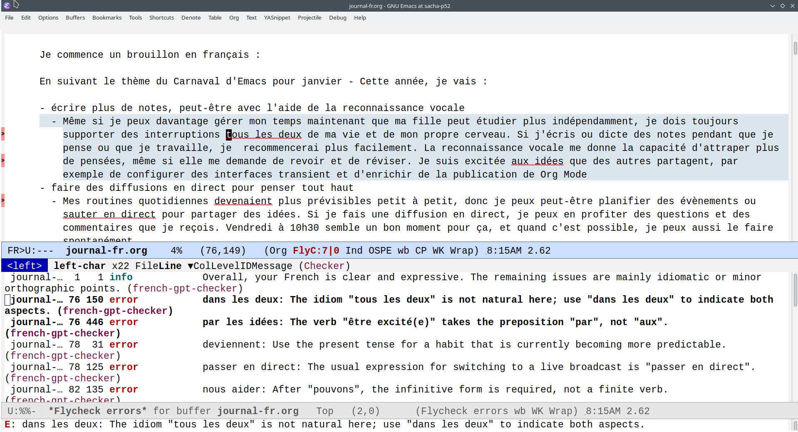
(defun my-lang-wdiff-strings (string-a string-b &optional options)
"Will create a word diff of the two strings.
`STRING-A' is the first string.
`STRING-B' is the second string.
Returns the unified diff as a string."
(with-temp-buffer
(let ((file-a (make-temp-file "diff-a"))
(file-b (make-temp-file "diff-b")))
(write-region string-a nil file-a)
(write-region string-b nil file-b)
(apply #'call-process "wdiff" nil t nil file-a file-b options)
(delete-file file-a)
(delete-file file-b)
(buffer-string))))
(defun my-lang-wdiff-strings-with-sentence-context (string-a string-b)
"Return a list of word diffs with the context of the sentence."
(let (results beg end)
(with-temp-buffer
(org-mode)
(insert (my-lang-wdiff-strings string-a string-b))
(goto-char (point-min))
(while (re-search-forward "\\[-\\([^]]+?\\)-\\] {\\+\\([^}]+?\\)\\+\\}\\|\\[-\\([^]]+?\\)-\\]\\|{\\+\\([^}]+?\\)\\+\\}" nil t)
(let ((added (or (match-string 2) (match-string 4)))
(end (match-end 0))
(line-beg (line-beginning-position)))
;; Found a change. Include this sentence.
(goto-char (match-beginning 0))
;; Find the start of the sentence or list item
(unless (looking-back (sentence-end))
(org-backward-sentence))
(setq beg (max (point) line-beg))
(goto-char end)
;; Find the end of the sentence.
(unless (and added (string-match (sentence-end) added))
(goto-char end)
(unless (re-search-forward (sentence-end) (line-end-position) t)
(goto-char (line-end-position))))
(push (buffer-substring beg (point)) results)
(delete-region (point-min) (point))))
(nreverse results))))
(defun my-lang-wdiff-promptify (wdiff)
"Convert a wdiff result to explanatory text.
Previous: ...
Current: ..."
(mapconcat
(lambda (s)
(replace-regexp-in-string
" +" " "
(format "Previous: %s\nCurrent: %s\n"
(string-trim
(replace-regexp-in-string
"\\[-\\([^]]+?\\)-\\]" "\\1"
(replace-regexp-in-string "{\\+\\([^}]+?\\)\\+}" "" s)))
(string-trim
(replace-regexp-in-string
"\\[-\\([^]]+?\\)-\\]" ""
(replace-regexp-in-string
"{\\+\\([^}]+?\\)\\+}" "\\1" s))))))
(if (listp wdiff) wdiff (list wdiff))
"\n"))
(ert-deftest my-lang-wdiff-promptify ()
(should
(equal
(my-lang-wdiff-promptify "Sometimes the change is at the end of a [-phrase.-] {+sentence.+}")
"Previous: Sometimes the change is at the end of a phrase.\nCurrent: Sometimes the change is at the end of a sentence.\n"))
(should
(equal
(my-lang-wdiff-promptify
(list
"The quick [-brown-] fox jumps over the lazy [-dog.-] {+brown cat.+} This sentence is the same. "
"Sometimes the change is at the end of a [-phrase.-] {+sentence.+}"
"Sometimes I want to [-join. Sentences-] {+join sentences+} together."))
"Previous: The quick brown fox jumps over the lazy dog. This sentence is the same.
Current: The quick fox jumps over the lazy brown cat. This sentence is the same.
Previous: Sometimes the change is at the end of a phrase.
Current: Sometimes the change is at the end of a sentence.
Previous: Sometimes I want to join. Sentences together.
Current: Sometimes I want to join sentences together.
")))
(ert-deftest my-lang-wdiff-strings-with-sentence-context ()
(should
(equal
(my-lang-wdiff-strings-with-sentence-context
"The quick brown fox jumps over the lazy dog. This sentence is the same. This sentence is also the same. Sometimes the change is at the end of a phrase. Sometimes I want to join. Sentences together."
"The quick fox jumps over the lazy brown cat. This sentence is the same. This sentence is also the same. Sometimes the change is at the end of a sentence. Sometimes I want to join sentences together.")
(list
"The quick [-brown-] fox jumps over the lazy [-dog.-] {+brown cat.+} This sentence is the same. "
"Sometimes the change is at the end of a [-phrase.-] {+sentence.+}"
"Sometimes I want to [-join. Sentences-] {+join sentences+} together."
))))
(defvar-local my-lang-gptel-current-errors nil
"Stores the parsed JSON corrections for the current buffer.")
(defun my-lang-gptel-flycheck-errors (json-feedback)
(let (errors (end-pos (point-max)))
(save-restriction
(save-excursion
(dolist (corr (alist-get 'corrections (car json-feedback)))
(let ((case-fold-search t)
(match-re (alist-get 'match corr))
pos)
;; Fix double-escaped entries
(while (string-match "\\\\\\\\" match-re)
(setq match-re (replace-regexp-in-string "\\\\\\\\" "\\\\" match-re)))
(goto-char (point-min))
;; Search each entry, but skip the logbooks
(org-map-entries
(lambda ()
(org-end-of-meta-data t)
(unless (org-at-heading-p)
(let ((end (save-excursion (or (and (outline-next-heading)
(point))
(point-max)))))
(while (re-search-forward match-re end t)
(let* ((beg (or (match-beginning 1) (match-beginning 0)))
(end (or (match-end 1) (match-end 0))))
(push (flycheck-error-new
:line (line-number-at-pos beg t)
:column (- beg (save-excursion (goto-char beg)
(line-beginning-position)) -1)
:end-line (line-number-at-pos end t)
:end-column (- end (save-excursion
(goto-char end)
(line-beginning-position)) -1)
:level 'error
:message (format "%s: %s"
(alist-get 'suggested corr)
(alist-get 'explanation corr))
:checker 'lang-gptel
:buffer (current-buffer))
errors))))))
nil
'tree)))
(let ((line-num (line-number-at-pos (point-min) t)))
(mapc
(lambda (note)
(push
(flycheck-error-new
:line line-num
:column 1
:level 'info
:message note
:checker 'lang-gptel
:buffer (current-buffer))
errors))
(alist-get 'notes (car json-feedback))))))
errors))
(defvar my-lang-gptel-max-length 10000 "Maximum length so that we don't accidentally send the whole file.")
(defvar-local my-lang-gptel-previous-version nil "Previous version to include.")
(defun my-lang-gptel-prompt (&optional include-history)
(let ((text (my-lang-gptel-context))
(prompt my-lang-gptel-prompt)
(notes (emacsconf-get-logbook-notes)))
(when notes
(setq prompt (concat prompt "\n\nConsider also any clarifications in the most recent note under previous-feedback.\n\n")))
(json-encode
(seq-filter #'cdr
(append
`((prompt . ,prompt)
(input . ,text))
(when include-history
(let ((diffed
(and my-lang-gptel-previous-version
(my-lang-wdiff-promptify
(my-lang-wdiff-strings-with-sentence-context
my-lang-gptel-previous-version
text)))))
`((previous-feedback . ,notes)
,(if (and diffed (< (length diffed) (length my-lang-gptel-previous-version)))
`(previous-changes . ,diffed)
`(previous-text . ,my-lang-gptel-previous-version)))))
nil)))))
(defun my-lang-gptel-parse-response (text info)
(with-temp-buffer
(if text
(progn
(insert text)
(goto-char (point-min))
(cond
((looking-at "{")
(json-read))
((re-search-forward "```js\\(on\\)?[ \n]*" nil t)
(progn
(goto-char (match-end 0))
(json-read)))
(t
`(((notes ,(buffer-string)))))))
(message "gptel-request failed: %s"
(if (stringp info)
info
(plist-get info :status)))
nil)))
(with-eval-after-load 'flycheck
(flycheck-define-generic-checker 'lang-gptel-cached
"Use LLM results."
:start (lambda (checker callback)
(funcall callback 'finished
(my-lang-gptel-flycheck-errors
my-lang-gptel-current-errors)))
:modes '(org-mode text-mode message-mode notmuch-message-mode))
(add-to-list 'flycheck-checkers 'lang-gptel-cached))
(defun my-org-log-note (note)
"Add NOTE to the current entry's logbook."
(interactive "MNote: ")
(setq org-log-note-window-configuration (current-window-configuration))
(move-marker org-log-note-return-to (point))
(move-marker org-log-note-marker (point))
(setq org-log-note-purpose 'note)
(with-temp-buffer
(insert note)
(org-store-log-note)))
(defvar my-lang-gptel-finished-hook nil)
(defun my-lang-gptel-context ()
(if (and (derived-mode-p 'org-mode)
(not (org-before-first-heading-p)))
(my-org-subtree-text-without-blocks)
(buffer-string)))
;; A non-caching version; tends to trigger frequently, though
(with-eval-after-load 'flycheck
(flycheck-define-generic-checker 'lang-gptel-auto
"Use LLM results."
:start (lambda (checker callback)
(let ((prompt (my-lang-gptel-prompt t)))
(setq my-lang-gptel-previous-version (my-lang-gptel-context))
;; Request only when this is the active window
(gptel-request
prompt
:callback
(lambda (text info)
(push
(my-lang-gptel-parse-response text info)
my-lang-gptel-current-errors)
;; Save to history
(run-hook-with-args 'my-lang-gptel-finished-hook)
(funcall callback 'finished
(my-lang-gptel-flycheck-errors my-lang-gptel-current-errors))))))
:modes '(org-mode text-mode message-mode notmuch-message-mode)
:predicate (lambda ()
(and (or (null my-lang-gptel-max-length)
(<= (length (my-lang-gptel-context)) my-lang-gptel-max-length))
(not flycheck-check-syntax-automatically)
(frame-focus-state)
(eq (current-buffer) (window-buffer (selected-window)))))))
(defun my-lang-gptel-flycheck-setup (&optional clear-history)
"Update the local error list and trigger Flycheck."
(interactive (list current-prefix-arg))
(setq-local flycheck-check-syntax-automatically '(save mode-enabled))
(when clear-history
(setq my-lang-gptel-current-errors nil
my-lang-gptel-previous-version nil))
(flycheck-select-checker 'lang-gptel-cached)
(setq flycheck-current-syntax-check nil) ; reset
(unless flycheck-mode (flycheck-mode 1))
(let ((flycheck-checker 'lang-gptel-auto)
(flycheck-check-syntax-automatically nil))
(flycheck-buffer)
(flycheck-list-errors)))
(defvar my-gptel-use-paid t)
(defvar my-lang-gptel-level nil)
(defun my-lang-gptel-cycle (&optional reset)
(interactive (list current-prefix-arg))
(let ((levels '(grammalecte groq gemini-free gemini-paid)))
(setq my-lang-gptel-level
(cond
((and (numberp reset)
(< reset 0))
(elt
levels
(%
(+ (seq-position levels my-lang-gptel-level)
(1- (length levels)))
(length levels))))
((or reset
(null my-lang-gptel-level)
(null
(seq-position levels my-lang-gptel-level)))
(car levels))
(t
(elt
levels
(%
(1+ (seq-position levels my-lang-gptel-level))
(length levels)))))))
(message "Level: %s" (symbol-name my-lang-gptel-level))
(pcase my-lang-gptel-level
('grammalecte
(flycheck-select-checker 'my-grammalecte-narrowed)
(setq my-lang-gptel-current-errors nil
my-lang-gptel-previous-version nil))
('groq
(flycheck-select-checker 'lang-gptel-cached)
(setq gptel-backend my-gptel-groq)
(setq gptel-model 'openai/gpt-oss-120b)
(my-lang-gptel-flycheck-setup))
('gemini-free
(setq gptel-backend my-gptel-gemini)
(setq gptel-model 'gemini-3-flash-preview)
(my-lang-gptel-flycheck-setup))
('gemini-paid
(setq gptel-backend my-gptel-gemini-paid)
(setq gptel-model 'gemini-3-flash-preview)
(my-lang-gptel-flycheck-setup))))
(defun my-lang-gptel-finished-log-errors ()
(when (and (derived-mode-p 'org-mode)
(not (org-before-first-heading-p))
(car my-lang-gptel-current-errors))
(org-entry-put (point) "NUM_DRAFTS"
(number-to-string
(1+ (string-to-number (or (org-entry-get (point) "NUM_DRAFTS") "0")))))
(my-org-log-note
(concat
(mapconcat
(lambda (o)
(format "- %s -> %s: %s\n"
(alist-get 'match o)
(alist-get 'suggested o)
(alist-get 'explanation o)))
(alist-get 'corrections
(car my-lang-gptel-current-errors))
"")
(mapconcat
(lambda (o)
(concat "- " o "\n"))
(alist-get 'notes (car my-lang-gptel-current-errors))
"")))))
(add-hook 'my-lang-gptel-finished-hook #'my-lang-gptel-finished-log-errors)
(defvar my-lang-gptel-prompt
"Check this beginner French and give me feedback/suggestions in English. Input may be in Org Mode syntax. Don't include the full revised text or encouragement/acknowledgement unless I ask for it explicitly, just focus on the parts that need correction.
Score it from 1 to 10. I prefer a casual tone, and I am female.
Format the results as a JSON file like this, using Emacs Lisp regular expression syntax. The match field should be a large enough regular expression to capture context and avoid ambiguity, and it should have a single capture group \\(...\\) highlighting what specifically needs to be changed. The suggested field should have just the words that replace the capture group in the match field.
Examine the text carefully and list all the improvements you would like to recommend.
```js
{\"score\": 8,
\"corrections\": [
{\"match\": \"ou \\\\(peut-être j'ai\\\\) juste besoin\",
\"suggested\": \"peut-être que j'ai\",
\"explanation\": \"When starting a clause with 'peut-être que', the 'que' is generally required if it's followed by a subject and verb in this context.\"},
{\"match\": \"Petit à petit \\\\(j'améliore\\\\).\",
\"suggested\": \"je m'améliore\",
\"explanation\": \"To improve (yourself) is reflexive in French: *s'améliorer*.\"},
{\"match\": \"apprendre à \\\\(demander l'aide\\\\)\",
\"suggested\": \"demander de l'aide\",
\"explanation\": \"When asking for 'some' help (indefinite quantity), use the partitive article 'de l'aide' rather than the definite 'l'aide'.\"},
{\"match\": \"D'autre part, \\\\(a\\\\) moins\",
\"suggested\": \"au\",
\"explanation\": \"The expression is *au moins*.\"},
{\"match\": \"\\\\(donner la priorité à moi\\\\)\",
\"suggested\": \"me donner la priorité\",
\"explanation\": \"In French, we use the indirect object pronoun 'me' before the verb instead of 'à moi' at the end.\"}
],
\"notes\": [
\"You mentioned: \\\"Mon sous-objectif n'est pas de lui enseigner.\\\" If you mean you don't want to \\\"lecture\\\" her or \\\"play the teacher,\\\" a very natural way to say that in French is: \\\"Mon but n'est pas de lui faire la leçon\\\" (literally: to give her the lesson).\"
]
}
```
Be very careful about making sure that the JSON is valid (no trailing or missing commas, all strings properly terminated, all delimiters properly matched up). Return just the JSON.
###
")
(defun my-lang-gptel-send-subtree (text &rest params)
(interactive (list (if (region-active-p)
(buffer-substring (region-beginning)
(region-end))
(my-org-subtree-text))))
(setq my-lang-current-errors nil)
(message "Sending to %s..." gptel-model)
(let ((extra-callback (plist-get params :callback)))
(setq params (org-plist-delete params :callback))
(apply
'gptel-request
(append (list (concat my-lang-gptel-prompt text)
:callback
(lambda (text info)
(with-current-buffer (plist-get info :buffer)
(if text
(let ((json-data (with-temp-buffer
(insert text)
(goto-char (point-min))
(when (re-search-forward "```json" nil t)
(goto-char (match-end 0)))
(condition-case nil
(json-read)
(error nil
(message "%s" (buffer-string)))))))
(message "Feedback received.")
(my-lang-handle-feedback-flycheck json-data))
(message "GPTel error: No response"))
(when extra-callback (funcall extra-callback text info)))))
params))))
Sometimes I still have more questions.
(defvar my-lang-gptel-clarify-prompt
"You are a French tutor. Answer the following question and tell me how to rephrase things.:\n\n")
(defun my-lang-gptel-clarify (extra &optional context previous-feedback log-only)
(interactive (list
(read-string "Text: ")
(if (region-active-p)
(concat " "
(buffer-substring-no-properties
(region-beginning)
(region-end)))
(substring-no-properties (sentence-at-point)))
(when-let* ((errors
(flycheck-overlay-errors-in
(if (region-active-p)
(region-beginning)
(car (bounds-of-thing-at-point 'sentence)))
(if (region-active-p)
(region-end)
(cdr (bounds-of-thing-at-point 'sentence))))))
(concat "Previous feedback:\n"
(mapconcat (lambda (o) (plist-get o :message))
errors "\n")
"\n\n"))
current-prefix-arg))
(push
`((clarification . ,extra)
(context . ,context)
(previous-feedback ,previous-feedback))
(alist-get 'clarifications
(car my-lang-gptel-current-errors)))
(my-org-log-note
(format "Clarification: %s - Context: %s - Previous feedback: %s"
extra
context
(or previous-feedback "")))
(unless log-only
(with-current-buffer (get-buffer-create "*gptel*")
(erase-buffer)
(gptel-request
(json-encode
`((instructions . ,my-lang-gptel-clarify-prompt)
(context . ,context)
(previous-feedback ,previous-feedback)
(extra . ,extra)))
:callback (lambda (response info)
(with-current-buffer (plist-get info :buffer)
(insert response)
(goto-char (point-min))
(display-buffer-other-window
(current-buffer))))))))
Process audio files
(defun my-audio-clip (source start-time end-time destination text)
(interactive
(let ((s (and (region-active-p) (buffer-substring (region-beginning) (region-end)))))
(if (and s
(string-match "\\(\\(?:\\(?:[0-9]+\\):\\)?\\(?:[0-9]+\\):\\(?:[0-9]+\\)\\(?:\\.\\(?:[0-9]+\\)\\)?\\)[ \n\t]+\\(\\(?:\\(?:[0-9]+\\):\\)?\\(?:[0-9]+\\):\\(?:[0-9]+\\)\\(?:\\.\\(?:[0-9]+\\)\\)?\\)" s))
(let ((start (match-string 1 s))
(end (match-string 2 s)))
(list
(read-file-name "Source: " nil nil t)
start
end
(read-file-name "Destination: ")
(read-string "Text: ")))
(list (read-file-name "Source: " nil nil t)
(read-string "Start time: ")
(read-string "End time: ")
(read-file-name "Destination: ")
(read-string "Text: ")))))
(let ((result (call-process "ffmpeg" nil (get-buffer-create "*ffmpeg*") nil
"-y" ; Overwrite output file without asking
"-i" (expand-file-name source) ; Input file
"-ss" start-time ; Start time (e.g., 00:00:10)
"-to" end-time ; End time/Stop time
(expand-file-name destination))))
(when result
(when (region-active-p) (delete-region (region-beginning) (region-end)))
(insert (org-link-make-string
(concat "audio:" (replace-regexp-in-string (getenv "HOME") "~" destination))
text)))))
Save journal entries for analysis
(defun my-french-write-journal-entries-for-subtree ()
(interactive)
(org-map-entries
(lambda ()
(when (org-entry-get (point) "DATE")
(let ((text (replace-regexp-in-string "{.+?}" "" (my-org-subtree-text-without-blocks))))
(with-temp-file (expand-file-name (concat (org-entry-get (point) "DATE") ".txt")
"~/proj/french/journal")
(insert text)))))
nil 'tree))
TODO Load en-fr dictionary
https://github.com/thierryvolpiatto/dic-en-fr-fr-en
(defvar my-french-en-fr-dictionary-file "~/proj/french/dic-en-fr.iso")
(defvar my-french-dictionary nil)
(defun my-french-load-dict ()
(interactive)
(with-temp-buffer
(insert-file-contents my-french-en-fr-dictionary-file)
(goto-char (point-min))
(while (looking-at "^# ") (forward-line 1))
(setq my-french-dictionary
(seq-keep (lambda (s)
(when (string-match "^\\(.+?\\) {\\(.+?\\)}\\(?: /\\(.+?\\)/\\)?\\(?: (\\(.+?\\))\\)?\\( SEE: .+?\\)? ::\\(?: \\(.+?\\) *\\({.+}.*\\)?\\)?$" s)
(let ((headword (match-string 1 s))
(head-type (match-string 2 s))
(def (match-string 4 s))
(see (match-string 5 s))
(translation (match-string 6 s))
(types (match-string 7 s)))
(cons
(propertize (format "%s {%s} - %s - %s :: %s"
headword
head-type
(or see translation)
(or def "")
(or types ""))
'face
(cond
((null types) nil)
((string-match "^{m}" types) 'modus-themes-subtle-blue)
((string-match "^{f}" types) 'modus-themes-subtle-magenta)))
translation))))
(split-string (buffer-substring (point) (point-max)) "\n")))
(seq-take my-french-dictionary 10)))
(defun my-french-consult-en-fr ()
(interactive)
(unless my-french-dictionary (my-french-load-dict))
(insert
(consult--read
(consult--dynamic-collection
(lambda (input)
(let (match-start
match-any
exact
(search (regexp-quote input)))
(seq-map (lambda (o)
(cond
((string-match (concat "^" search " - ") (car o))
(push o exact))
((string-match (concat "^" search) (car o))
(push o match-start))
((string-match search (car o))
(push o match-any))))
my-french-dictionary)
(append
(nreverse exact)
(nreverse match-start)
(nreverse match-any)
nil))))
:sort nil
:lookup #'consult--lookup-cdr)))
Conjugation
- http://rali.iro.umontreal.ca/rali/?q=en/node/1238
https://github.com/RosaeNLG/rosaenlg
(defun my-french-conjugate-grammalecte (input) "Query Grammalecte for INPUT." (interactive (list (my-french-lexique-complete-word))) (grammalecte-conjugate-verb input)) (defvar my-french-verbe-db "~/vendor/verbe-conjugaison-academie-francaise/output/verbs.db") (defun my-french-conjugate (input &optional all-forms) (interactive (list (my-french-lexique-complete-word) (null current-prefix-arg))) (let* ((db (sqlite-open my-french-verbe-db)) (lemme (elt (car (my-french-lexique-lookup-db-exact input)) 1)) (value (consult--read (if all-forms (mapcar (lambda (row) (cons (string-join (list (elt row 0) (elt row 1) (elt row 2) (elt row 4) (elt row 3)) " - ") (elt row 0))) (sqlite-select db "SELECT conjugaison, voix, mode, temps, personne FROM verbes v JOIN conjugaisons c ON v.id = c.verbe_id WHERE v.infinitif = ? ORDER BY temps, mode, personne" (list lemme))) (mapcar (lambda (row) (cons (string-join (list (elt row 0) (elt row 4) (elt row 3)) " - ") (elt row 0))) (sqlite-select db "SELECT conjugaison, voix, mode, temps, personne FROM verbes v JOIN conjugaisons c ON v.id = c.verbe_id WHERE v.infinitif = ? AND temps in (?, ?) AND mode=? ORDER BY temps, mode, personne" (list input "present" "passe_compose" "indicatif")))) :prompt "Verbe: " :lookup 'consult--lookup-cdr))) (sqlite-close db) (when (called-interactively-p 'any) (when (word-at-point) (delete-region (save-excursion (skip-syntax-backward "w") (point)) (save-excursion (skip-syntax-forward "w") (point)))) (insert value)) value))
Looking up words via wordreference
There's also a wordreference.
(defvar my-french-wordreference-cache nil)
(defun my-french-wordreference-completing-read ()
(interactive)
(consult--read
(consult--dynamic-collection
(lambda (input)
(message "input: %s" input)
(with-current-buffer
(url-retrieve-synchronously
(concat "https://www.wordreference.com/autocomplete?dict=enfr&query="
(url-hexify-string input)))
(set-buffer-multibyte t)
(goto-char (point-min))
(re-search-forward "^$" nil t)
(prog1
(mapcar (lambda (row)
(let ((fields (split-string row "\t")))
(propertize
(format "%s (%s)"
(car fields)
(cadr fields))
'consult--candidate
fields)))
(split-string
(string-trim (buffer-substring (point) (point-max))) "\n"))
(kill-buffer (current-buffer))))))
:sort nil
:add-history (list (word-at-point))
:history 'my-french-wordreference-lookup-history
:prompt "Word: "
:category 'word))
(defvar-keymap my-french-wordreference-keymap
"v" #'my-spookfox-scroll-down
"V" #'my-spookfox-scroll-up
"c" #'my-french-conjugate-last-word
"l" #'my-french-wordreference-lookup)
(defvar my-french-wordreference-lookup-history nil)
(defun my-french-wordreference-lookup (word)
(interactive (list (my-french-wordreference-completing-read)))
(let (language)
(if (string-match " (\\(en\\|fr\\))" word)
(setq language (match-string 1 word)
word (replace-match "" nil t word 0)))
(setq word (replace-regexp-in-string "^#" "" word))
(browse-url
(format "https://www.wordreference.com/%s/%s"
(if (string= language "fr")
"fren"
"enfr")
(url-hexify-string word))))
(set-transient-map my-french-wordreference-keymap t))
(defun my-french-conjugate-last-word ()
(interactive)
(grammalecte-conjugate-verb
(replace-regexp-in-string " (.+)" ""
(car my-french-wordreference-lookup-history))))
(defun my-french-wordreference-conjugate (word)
(interactive (list (my-french-wordreference-completing-read)))
(browse-url (concat "https://www.wordreference.com/conj/frverbs.aspx?v="
(url-hexify-string (if (listp word) (car word) word)))))
(defun my-french-reverso (s)
(interactive (list (if (region-active-p)
(buffer-substring (region-beginning) (region-end))
(word-at-point))))
(browse-url (concat "https://www.reverso.net/text-translation#sl=fra&tl=eng&text="
(url-hexify-string s))))
Lexique
http://www.lexique.org/databases/Lexique383/
(defvar my-french-lexique-db "~/proj/french/lexique.db" "SQLite3 DB")
How to load the TSV into SQLite:
import pandas as pd
import sqlite3
df = pd.read_csv('lexique383.tsv', sep='\t')
conn = sqlite3.connect('lexique.db')
df.to_sql('lexique', conn, if_exists='replace', index=False)
conn.close()
Adding an unaccented version for easier lookup:
ALTER TABLE lexique ADD COLUMN ortho_flat TEXT;
-- Update it (you can use your Python logic to strip accents)
-- Or use SQLite's built-in REPLACE for common French chars:
UPDATE lexique SET ortho_flat =
REPLACE(REPLACE(REPLACE(REPLACE(REPLACE(LOWER(ortho), 'é', 'e'), 'è', 'e'), 'ê', 'e'), 'à', 'a'), 'ç', 'c');
-- Index the flat column
CREATE INDEX idx_ortho_flat ON lexique(ortho_flat);
Emacs Lisp functions for finding things:
(defvar my-french-csv-path "/home/sacha/proj/french/french_vocabulary_list.csv")
(defvar my-french-known-lemmas nil)
(defun my-french-lexique-lookup-db-exact (input)
"Query the Lexique SQLite database for INPUT."
(let ((db (sqlite-open my-french-lexique-db)))
(prog1 (sqlite-select db
"SELECT ortho, lemme, genre, nombre, phon, syll, infover FROM lexique
WHERE ortho=? ORDER BY freqfilms2 DESC LIMIT 1"
(list input))
(sqlite-close db))))
(defun my-french-lexique-lookup-db-flat (input)
"Query the Lexique SQLite database for INPUT."
(let ((db (sqlite-open my-french-lexique-db)))
(prog1 (sqlite-select db
"SELECT ortho, lemme, genre, nombre, phon, syll, infover FROM lexique
WHERE ortho_flat LIKE ? OR ortho LIKE ? ORDER BY freqfilms2 DESC LIMIT 50"
(list (concat (downcase input) "%")
(concat (downcase input) "%")))
(sqlite-close db))))
(defun my-french-lexique-lookup-db-lemma (input)
"Query the Lexique SQLite database for INPUT."
(let ((db (sqlite-open my-french-lexique-db)))
(prog1 (sqlite-select db
"SELECT ortho, lemme, genre, nombre, infover, phon, syll, ortho_flat FROM lexique
WHERE lemme LIKE ? ORDER BY freqfilms2 DESC LIMIT 50"
(list (concat input "%")))
(sqlite-close db))))
(defun my-french-lexique-complete-word ()
(interactive)
(let* ((selection
(consult--read
(consult--dynamic-collection
(lambda (input)
(mapcar (lambda (row)
(let ((word (nth 0 row))
(gender (nth 2 row))
(number (nth 3 row))
(ipa (my-french-lexique-to-ipa (nth 5 row)))
(infover (nth 6 row)))
;; Format the string for the completion buffer
(cons
(propertize
(format "%-20s [%s] (%s)" word ipa
(string-join
(delq nil (list gender number infover))
", "))
'consult--candidate word
'face
(pcase gender
("m" 'modus-themes-subtle-blue)
("f" 'modus-themes-subtle-magenta)))
word)))
(my-french-lexique-lookup-db-flat input))))
:prompt "French word: "
:initial (word-at-point)
:sort nil
:lookup #'consult--lookup-cdr
:category 'french-word)))
(when selection
(when (called-interactively-p 'any)
(when (word-at-point)
(delete-region (save-excursion
(skip-syntax-backward "w")
(point))
(save-excursion
(skip-syntax-forward "w")
(point))))
(insert selection))
selection)))
STARTED Write a completion-at-point function for French
(defun my-french-lexique-completion-at-point ()
(let ((bounds (bounds-of-thing-at-point 'word)))
(when bounds
(list (car bounds)
(cdr bounds)
(mapcar (lambda (row)
(let ((word (nth 0 row))
(gender (nth 2 row))
(number (nth 3 row))
(ipa (my-french-lexique-to-ipa (nth 5 row)))
(infover (nth 6 row)))
word))
(my-french-lexique-lookup-db-flat
(buffer-substring-no-properties
(car bounds)
(cdr bounds))))
:exclusive 'no))))
(with-eval-after-load 'org
(add-hook 'org-mode-hook
(lambda ()
(when (and (buffer-file-name) (string-match "journal-fr\\|french" (buffer-file-name)))
(add-hook 'completion-at-point-functions 'my-french-lexique-completion-at-point)))))
Highlight and count new words in journal entries
(defun my-french-load-known-lemmas ()
"Parse the CSV and return a hash table of lemma -> info."
(let* ((known (make-hash-table :test 'equal))
(data (cdr (pcsv-parse-file my-french-csv-path))))
(mapc
(lambda (o)
(unless (gethash (elt o 2) known)
(puthash (elt o 2) o known))
(unless (gethash (elt o 0) known)
(puthash (elt o 0) o known)))
data)
(setq my-french-known-lemmas known)))
(defvar my-french-ignore
(with-temp-buffer
(insert-file-contents "~/proj/french/ignored.txt")
(split-string (string-trim (buffer-string)) "\n")))
(defun my-french-lexique-to-ipa (s)
(mapconcat (lambda (c)
(pcase c
(?O "ɔ")
(?E "ɛ")
(?° "ə")
(?2 "ø")
(?9 "œ")
(?S "ʃ")
(?5 "ɛ̃")
(?Z "ʒ")
(?@ "ɑ̃")
(?1 "œ̃")
(?§ "ɔ̃")
(?8 "ɥ")
(?R "ʁ")
(_ (char-to-string c))))
s ""))
(defvar my-french-show-pronunciation t "*Non-nil means show pronunciation.")
(defun my-french-highlight-new-words-in-subtree ()
"Highlight words in the current subtree based on lexique.db and CSV data."
(interactive)
(save-excursion
(my-french-remove-new-word-highlights)
(if (org-entry-get-with-inheritance "DATE")
(let* ((subtree-date (org-entry-get-with-inheritance "DATE"))
(known-lemmas (or my-french-known-lemmas (my-french-load-known-lemmas)))
(seen-so-far (make-hash-table :test 'equal))
(beg (save-excursion (org-back-to-heading t) (org-end-of-meta-data t) (point)))
(end (save-excursion (org-end-of-subtree t) (point)))
(count-new 0)
(count-words 0))
(save-excursion
(goto-char beg)
(while (and (< (point) end) (re-search-forward "\\b[[:alpha:]-]+\\b" end t))
(let* ((word (match-string 0))
(info (and (or
(not (car (gethash (downcase word) known-lemmas)))
(not (string>
subtree-date
(car (gethash (downcase word) known-lemmas)))))
(car (my-french-lexique-lookup-db-exact (downcase word))))))
(setq count-words (1+ count-words))
(when info
(let* ((lemma (elt info 1))
(gender (elt info 2))
(syll (propertize (concat " (" (elt info 5) ")")
'face
'modus-themes-fg-cyan-faint
'keymap
my-french-overlay-map
))
(csv-date (car (gethash lemma known-lemmas)))
(is-new (and (or (null csv-date)
(and subtree-date (not (string> subtree-date
csv-date))))
(not (gethash lemma seen-so-far))
(not (member lemma my-french-ignore)))))
(when is-new
(puthash lemma (list subtree-date word lemma) seen-so-far)
(puthash lemma (list subtree-date word lemma) my-french-known-lemmas)
(puthash word (list subtree-date word lemma) my-french-known-lemmas)
(setq count-new (1+ count-new))
(let ((ov (make-overlay (match-beginning 0) (match-end 0)))
(face (cond
((string-equal gender "m") 'modus-themes-subtle-blue)
((string-equal gender "f") 'modus-themes-subtle-magenta)
(t 'modus-themes-subtle-green))))
(overlay-put ov 'my-french-highlight t)
(overlay-put ov 'word word)
(overlay-put ov 'evaporate t)
(when my-french-show-pronunciation
(overlay-put ov 'after-string (my-french-lexique-to-ipa syll)))
(overlay-put ov 'face face)))))))
(org-back-to-heading)
(let ((ov (make-overlay (line-beginning-position) (line-end-position))))
(overlay-put ov 'after-string (format " + %d = %d" count-new count-words))
(overlay-put ov 'my-french-highlight t))
(when (called-interactively-p 'any)
(message "%d total words, %d new lemmas" count-words count-new))
(cons count-new count-words)))
(let ((data (org-map-entries #'my-french-highlight-new-words-in-subtree "DATE={.}" 'tree)))
(org-back-to-heading)
(let ((ov (make-overlay (line-beginning-position) (line-end-position))))
(overlay-put ov 'evaporate t)
(overlay-put ov 'after-string
(format " + %d = %d"
(apply '+ (mapcar 'car data))
(apply '+ (mapcar 'cdr data))))
(overlay-put ov 'my-french-highlight t))))))
(defun my-french-remove-new-word-highlights ()
"Remove all word highlights created by `my-french-highlight-new-words-in-subtree'."
(interactive)
(let ((beg (save-excursion (org-back-to-heading t) (point)))
(end (save-excursion (org-end-of-subtree t) (point))))
(remove-overlays beg end 'my-french-highlight t)))
Doublecheck with Google Translate
(defun my-french-translate-dwim (text)
"Translate TEXT via Google Translate."
(interactive (list
(cond
((region-active-p)
(buffer-substring (region-beginning)
(region-end)))
(current-prefix-arg
(thing-at-point 'paragraph))
(t (thing-at-point 'sentence)))))
(let* ((url "https://translation.googleapis.com/language/translate/v2")
(params `(("key" . ,(getenv "GOOGLE_API_KEY"))
("q" . ,text)
("source" . "fr")
("target" . "en")
("format" . "text")))
(query-string (mapconcat
(lambda (pair)
(format "%s=%s"
(url-hexify-string (car pair))
(url-hexify-string (cdr pair))))
params
"&"))
(full-url (concat url "?" query-string)))
(let* ((response (plz 'get full-url :as #'json-read))
(data (alist-get 'data response))
(translations (alist-get 'translations data))
(first-translation (car translations))
(translated-text (alist-get 'translatedText first-translation)))
(when (called-interactively-p 'any)
(message "%s" translated-text))
translated-text)))
Correct encoding errors
(defun my-repair-french-encoding-full ()
"Repair double and single encoded UTF-8 sequences, including uppercase."
(interactive)
(save-excursion
(let ((case-fold-search t)
(pairs '(("é" . "é") ("É" . "É")
("à" . "à") ("À" . "À")
("è" . "è")
("ê" . "ê")
("Ç" . "Ç")
("ç" . "ç")
("û" . "û")
("è" . "è") ("È" . "È")
("ç" . "ç") ("Ç" . "Ç")
("é" . "é") ("É" . "É")
("à " . "à") ("À" . "À")
("’" . "'"))))
(dolist (pair pairs)
(goto-char (point-min))
;; 'nil' for literal search, 't' for case-sensitivity
(while (search-forward (car pair) nil t)
(replace-match (cdr pair) t))))))
Spellcheck
gif-screencast
Animated GIFs make it easy to demonstrate things,
and gif-screencast makes it easy to record a
screencast with each command getting its own GIF
frame. In my config, I have s-s (super-s, or the
Windows key + s) bound to
gif-screencast-start-or-stop. I like adding
animated GIFs to my blog posts and videos.
Not all interfaces can display animated GIFs. For example, some people read my blog in elfeed or in a console Emacs and can see only the first frame of a GIF. It makes sense to select the a frame to use as the fallback for the animated GIF, much like videos can have thumbnails.
When I stop gif-screencast, I want to pick a frame and use it as the first frame. Let's see if this works…
(defun my-gif-screencast-start-or-stop-and-choose-thumbnail ()
"Start a screencast or pause recording."
(interactive)
(if gif-screencast-mode
(progn
(gif-screencast-toggle-pause)
(dired gif-screencast-screenshot-directory)
(revert-buffer)
(dired gif-screencast-screenshot-directory)
(image-dired gif-screencast-screenshot-directory))
(gif-screencast)))
Actually, what I want to do is a more general case: be able to delete frames, copy frames to the beginning, eventually move frames around, etc., and then generate the GIF based on the contents of that directory.
(defun my-gif-screencast-copy-image-to-first-frame (file)
(interactive (list (dired-get-filename)))
;; Determine the timestamp of the first file in this directory
(copy-file
file
(expand-file-name
(format-time-string
"screen-%F-%T-%3N.png"
(time-subtract
(my-gif-screencast-timestamp-from-filename
(car (directory-files gif-screencast-screenshot-directory nil ".png")))
(seconds-to-time 0.001)))
gif-screencast-screenshot-directory)))
(defun my-gif-screencast-timestamp-from-filename (file)
(setq file (replace-regexp-in-string "^screen-" "" (file-name-base file)))
(time-add (date-to-time (format "%s %s" (substring file 0 10) (substring file 11 19)))
(float-time (/ (string-to-number (substring file 20 23)) 1000.0))))
(cl-assert
(string= (format-time-string "test-%F-%T-%3N" (my-gif-screencast-timestamp-from-filename "screen-2024-09-20-13:18:08-024.png"))
"test-2024-09-20-13:18:08-024"))
(defun my-gif-screencast-update-frames-from-directory ()
(interactive)
(let* ((files (directory-files gif-screencast-screenshot-directory nil ".png"))
(start-time (my-gif-screencast-timestamp-from-filename (car files))))
(setq gif-screencast--frames
(mapcar (lambda (o)
(make-gif-screencast-frame
:timestamp (my-gif-screencast-timestamp-from-filename o)
:filename o))
files))
(gif-screencast-mode 0)
(gif-screencast--finish)))
Someday it could be pretty cool to have an SVG where I can see the frames on a timeline and then drag them around. In the meantime, let's see how this works out.
(use-package gif-screencast
:bind
("s-s" . my-gif-screencast-start-or-stop-and-choose-thumbnail)
:config
(setq gif-screencast-output-directory my-recordings-dir))
(use-package giffy
:quelpa (giffy :fetcher github :repo "larsmagne/giffy")
:defer t)
Sentences end with a single space
In my world, sentences end with a single space. This makes sentence navigation commands work for me.
(setq sentence-end-double-space nil)
Writeroom
(use-package writeroom-mode
:defer t
:commands writeroom-mode
:config
(setq writeroom-global-effects (remove 'writeroom-set-fullscreen
writeroom-global-effects)))
Try redacting emacs config
(defun my-redact (s)
"Replace S with x characters."
(make-string (length s) ?x))
(defun my-redact-region (beg end &optional func)
"Redact from BEG to END."
(interactive "r")
(let ((overlay (make-overlay beg end)))
(overlay-put overlay 'redact t)
(overlay-put overlay 'evaporate t)
(overlay-put overlay 'display
(cond
((functionp func)
(funcall func))
((stringp func)
func)
(t (make-string (- end beg) ?x))))))
(defun my-redact-regexp-replacement (regexp replacement &optional beg end)
"Redact buffer content matching regexp."
(interactive (list (read-regexp "Redact regexp: " 'regexp-history-last)
(read-string "Replacement (ex: \\1 \\,(my-redact \\2)): ")))
(setq beg (or beg (point-min)))
(setq end (or end (point-max)))
(when (stringp replacement)
(setq replacement (query-replace-compile-replacement replacement t)))
(save-excursion
(goto-char beg)
(while (re-search-forward regexp end t)
(my-redact-region
(match-beginning 0) (match-end 0)
(with-temp-buffer
(insert (match-string 0))
(goto-char (point-min))
)
(replace-regexp-in-string regexp replacement (match-string 0))))))
(defun my-redact-regexp (regexp &optional beg end func)
"Redact buffer content matching regexp."
(interactive (list (string-trim (read-regexp "Redact regexp: " 'regexp-history-last))))
(save-excursion
(goto-char (or beg (point-min)))
(while (re-search-forward regexp (or end (point-max)) t)
(my-redact-region (match-beginning 0) (match-end 0) func))))
(defun my-unredact ()
(interactive)
(mapc 'delete-overlay
(seq-filter (lambda (overlay) (overlay-get overlay 'redact))
(overlays-in (point-min) (point-max)))))
(defun my-redact-email-string (s)
(replace-regexp-in-string
"\\([-+_~a-zA-Z0-9][-+_.~:a-zA-Z0-9]*\\)@\\([-a-zA-Z0-9]+[-.a-zA-Z0-9]*\\)"
(lambda (sub)
(concat
(make-string (length (match-string 1 sub)) ?x)
"@"
(make-string (length (match-string 2 sub)) ?x)))
s))
(defun my-redact-emails (&rest _)
(interactive)
(my-redact-regexp
"\\([-+_~a-zA-Z0-9][-+_.~:a-zA-Z0-9]*\\)@\\([-a-zA-Z0-9]+[-.a-zA-Z0-9]*\\)"
nil nil
(lambda () (my-redact-email-string (match-string 0)))))
(defun my-redact-emacsconf-org ()
(interactive)
(my-redact-regexp-replacement
"\\(^:EMAIL:[ \t]+\\)\\(.+\\)"
"\\1 \\,(my-redact \\2)"
))
(defun my-redact-tabulated-list-in-rectangle (regexp beg end)
;; tabulated columns use substrings with display properties
;; so we should skip any characters that have text-property-any 'display
(interactive (list (read-regexp "Redact regexp: " 'regexp-history-last)
(min (point) (mark))
(max (point) (mark))))
(apply-on-rectangle
(lambda (start-col end-col)
(let ((start-pos (and (move-to-column start-col) (point)))
(end-pos (and (move-to-column end-col) (point)))
display-prop)
(save-restriction
(narrow-to-region start-pos end-pos)
(goto-char start-pos)
(setq display-prop (text-property-search-forward 'display))
(if display-prop
(while display-prop
(my-redact-regexp regexp start-pos (prop-match-beginning display-prop))
(setq start-pos (prop-match-end display-prop))
(setq display-prop (text-property-search-forward 'display)))
(my-redact-regexp regexp start-pos end-pos)))))
beg end))
(defun my-redact-regexp-in-rectangle (regexp beg end)
(interactive (list (read-regexp "Redact regexp: " 'regexp-history-last)
(min (point) (mark))
(max (point) (mark))))
(apply-on-rectangle (lambda (start-col end-col)
(my-redact-regexp regexp
(and (move-to-column start-col) (point))
(and (move-to-column end-col) (point))))
beg end))
(advice-add
#'notmuch-show
:after #'my-redact-emails)
DONE Audio braindump workflow tweaks: Adding Org Mode hyperlinks to recordings based on keywords audio writing
Added a quick video!

{kind=link}
{kind=link}
Audio recording is handy for capturing thoughts as I wait, walk around, or do chores. But my wireless earbuds don't have a good mic, I rarely got back to reviewing the wall of text, and I don't trust speech recognition to catch all my words.
Here's a new brain-dumping workflow that I've been experimenting with, though. I use a lapel mic to record in my phone. Google Recorder gives me an audio file as well as a rough transcript right away.
Animated GIF showing Google Recorder 's real-time transcript
I copy those with Syncthing.
If I use keywords like "start" or "stop" along with things like "topic", "reminder", or "summary", then I can put those on separate lines automatically (my-audio-braindump-prepare-alignment-breaks).
... News. Miscellaneous little tasks that he doing. I do want to finish that blog post about the playlist Just so that it's out. Something else that people can, you know, refer to or that I can refer to. Uh, And at some point I want to think about, This second brain stuff. So, right now, What's my current state? Uh, START CHAPTER second brain STOP CHAPTER Right now, I dumped everything into originally. In my inbox, if I come across an interesting website. As usually in my phone. So then I share it. As. Something links at those or four none. Uh, into my inbox. ...
I use subed-align to get the timestamps, and add the headings.
00:20:18.680 --> 00:20:24.679
So, right now, What's my current state? Uh,
NOTE CHAPTER: second brain
00:20:24.680 --> 00:20:30.719
START CHAPTER second brain STOP CHAPTER
I can then create an Org Mode TODO item with a quick hyperlinked summary as well as my transcript.
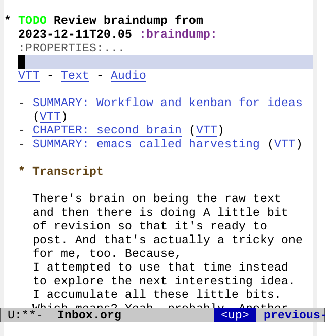
I can jump to the audio if there are misrecognized words.
Screenshot of jumping to the audio
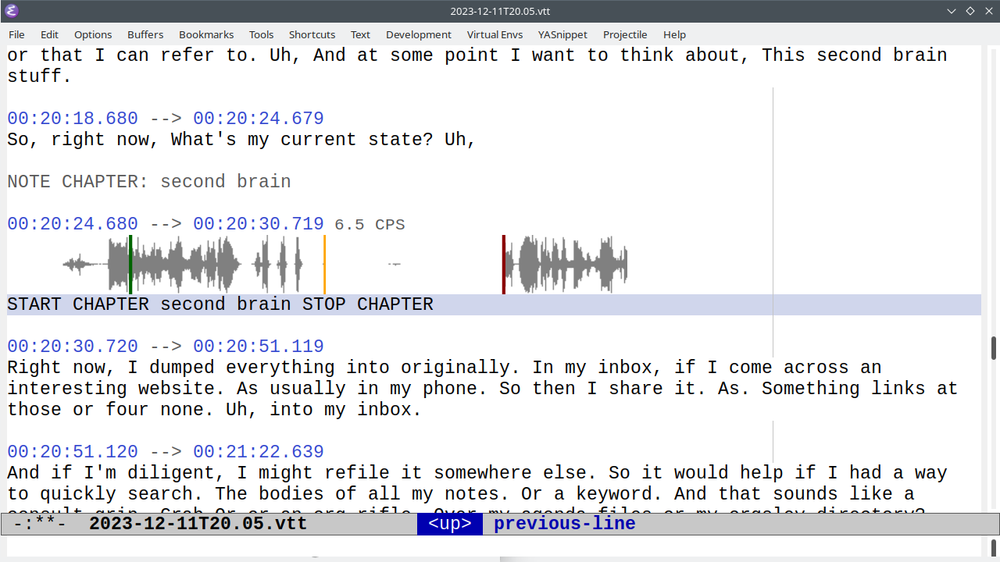
I can use subed-waveform to tweak the start and end times. (subed-waveform-show-current, then left-clicking to set the start or right-clicking to set the end, or using keybindings to adjust the start/stop).
Someday I'll write code to send sections to a better speech recognition engine or to AI. In the meantime, this is pretty good.
Here's how the code works:
Recognizing keyword phrases
There are several things I want to do while dictating.
- I want to mark different topics so that it's easy to find the section where I was talking about something.
- I might want to set tags or priorities, or even schedule something (today, tomorrow, next week, next month).
- I can also use commands to trigger different things, like sending the section to a better speech recognition engine.
By analyzing the text, I might be able to make my own command system.
So far, for starting keywords, I can use "start", "begin", or "open". I pair that with one of these part keywords:
- "section", "chapter", "topic", "summary": I use these pretty interchangeably at the moment. I want them to make a new Org heading.
- "next steps": could be handy for being able to quickly see what to do next
- "reminder":
- "interruption": don't know what I'll use this for yet, but it might be useful to note this.
- "tag", "keyword": maybe use this to add tags to the current section?
Then the code can extract the text until the matching "stop/close/end
<part>", assuming it happens within 50 words or so.
(my-audio-braindump-close-keyword-distance-words)
Sometimes keywords get misrecognized. "Begin summary" sometimes becomes "again summary" or "the game summary". I could try "open" and "close". Commercial dictation programs like Dragon NaturallySpeaking use "open" and "close" for punctuation, so that would probably work fine. "Start" works well, but "end" doesn't because it can confused with "and".
Sometimes an extra word sneaks in, either because I say it or because
the speech recognition tries too hard to guess. "Begin reminder" ends
up as "Begin a reminder." I changed from using regular expressions
that searched for just start-keyword + part-keyword to one that looked
for the start of the keyword phrase and then looked for the next
keyword within the next X words. (my-audio-braindump-scan-for-part-keyword)
Recognizing phrases
(defvar my-audio-braindump-open-keywords '("start" "begin" "open"))
(defvar my-audio-braindump-close-keywords '("stop" "end" "close"))
(defvar my-audio-braindump-part-keywords '("summary" "chapter" "topic"
"section"
"action" "idea" "journal" "reminder"
"command" "interruption" "note"
"next step" "next steps" "tags" "tag" "keywords" "keyword"))
(defvar my-audio-braindump-part-keyword-distance-words 2 "Number of words to scan for part keyword.")
(defvar my-audio-braindump-close-keyword-distance-words 50 "number of words to scan for stop keyword.
Put the keywords on the same line if found.")
(defun my-audio-braindump-scan-for-part-keyword (before-part &optional part-keywords within-distance before-distance)
"Look for BEFORE-PART followed by PART-KEYWORDS.
There might be WITHIN-DISTANCE words between BEFORE-PART and PART-KEYWORDS,
and the pair might be within BEFORE-DISTANCE from point.
Distances are in words.
Return (start end before-part part) if found, nil otherwise."
(setq before-part (pcase before-part
('start my-audio-braindump-open-keywords)
('stop my-audio-braindump-close-keywords)
('nil (append my-audio-braindump-open-keywords my-audio-braindump-close-keywords))
(_ before-part)))
(if (stringp before-part) (setq before-part (list before-part)))
(setq part-keywords (or part-keywords my-audio-braindump-part-keywords))
(when (stringp part-keywords) (setq part-keywords (list part-keywords)))
(setq within-distance (or within-distance my-audio-braindump-part-keyword-distance-words))
(setq before-distance (if (eq before-distance t)
(point-max)
(or before-distance my-audio-braindump-close-keyword-distance-words)))
(let (result
start end
(before-point (save-excursion (forward-word before-distance) (point)))
before-word
part-word)
(save-excursion
(when (looking-at (regexp-opt before-part))
(setq before-word (match-string 0) start (match-beginning 0))
(when (re-search-forward (regexp-opt part-keywords) (save-excursion (forward-word within-distance) (point)) t)
(setq result (list start (match-end 0) before-word (match-string 0)))))
(while (and (not result)
(re-search-forward (regexp-opt before-part) before-point t))
(setq before-word (match-string 0) start (match-beginning 0))
(when (re-search-forward (regexp-opt part-keywords) (save-excursion (forward-word within-distance) (point)) t)
(setq result (list start (match-end 0) before-word (match-string 0)))))
(when result (goto-char (elt result 1)))
result)))
(ert-deftest my-audio-braindump-scan-for-part-keyword ()
(with-temp-buffer
(insert "some text start a reminder hello world stop there and do something stop reminder more text")
(goto-char (point-min))
(let ((result (my-audio-braindump-scan-for-part-keyword 'start nil)))
(expect (elt result 2) :to-equal "start")
(expect (elt result 3) :to-equal "reminder"))
(let ((result (my-audio-braindump-scan-for-part-keyword 'stop "reminder")))
(expect (elt result 2) :to-equal "stop")
(expect (elt result 3) :to-equal "reminder"))))
Splitting the lines based on keywords and oopses
Now I can use that to scan through the text. I want to put commands on
their own lines so that subed-align will get the timestamp for that
segment and so that the commands are easier to parse.
I also want to detect "oops" and split things up so that the start of
that line matches my correction after the "oops". I use
my-subed-split-oops for that, which I should write about in another
post. By putting the oops fragment on its own line, I can use
subed-align to get a timestamp for just that segment. Then I can
either use flush-lines to get rid of anything with "oops" in it. I
can even remove the subtitle and use subed-record-compile-media to
compile audio/video without that segment, if I want to use the audio
without rerecording it.
And the way I can help is by jotting words down in a mind map, typing her sentences. Oops typing, her sentences And generating, follow-up questions.
I also all-caps the keyword phrases so that they're easier to see when skimming the text file.
Alignment breaks
(defun my-audio-braindump-prepare-alignment-breaks ()
"Split lines in preparation for forced alignment with aeneas.
Split \"oops\" so that it's at the end of the line and the
previous line starts with roughly the same words as the next
line, for easier removal.
Add a linebreak before \"begin/start\" followed by
`my-audio-braindump-part-keywords'.
Add a linebreak after \"stop\" followed by
`my-audio-braindump-part-keywords'.
Look for begin keyword ... stop keyword with at most
`my-audio-braindump-part-keyword-distance-words' between them and put them on one
line. If begin or stop has been misrecognized, try the best guess."
(interactive)
(let ((case-fold-search t) result close-result)
(my-split-oops)
;; break "begin/start keyword"
(goto-char (point-min))
(while (setq result (my-audio-braindump-scan-for-part-keyword 'start nil nil t))
(goto-char (car result))
(delete-region (car result) (elt result 1))
(insert "\n" (upcase (concat (elt result 2) " " (elt result 3))) "\n"))
;; break stop
(goto-char (point-min))
(while (setq result (my-audio-braindump-scan-for-part-keyword 'stop nil nil t))
(goto-char (car result))
(delete-region (car result) (elt result 1))
(insert (upcase (concat (elt result 2) " " (elt result 3))) "\n"))
;; try to get start and end sections on one line
(goto-char (point-min))
(while (setq result (my-audio-braindump-scan-for-part-keyword 'start nil nil t))
(goto-char (elt result 1))
(setq stop-result (my-audio-braindump-scan-for-part-keyword 'stop (elt result 3)))
(if stop-result
(progn
(goto-char (car stop-result))
(while (re-search-backward " *\n+ *" (car result) t)
(replace-match " ")))
;; no stop keyword; is the keyword around? maybe it was just misrecognized
(if (re-search-forward (elt result 3)
(save-excursion
(forward-word my-audio-braindump-close-keyword-distance-words)
(point))
t)
(save-excursion
(goto-char (match-beginning 0))
(save-excursion
(insert " STOP "))
(while (re-search-backward " *\n+ *" (car result) t)
(replace-match " ")))
(when (looking-at "\n+ *")
(replace-match " ")))))
;; Check for stops without starts
(goto-char (point-min))
(while (setq result (my-audio-braindump-scan-for-part-keyword 'stop nil nil t))
(goto-char (car result))
(save-excursion
(unless (re-search-backward (elt result 3) (line-beginning-position) t)
(when (re-search-backward
(elt result 3)
(save-excursion (backward-word my-audio-braindump-close-keyword-distance-words)
(point))
t)
(replace-match (concat "\nSTART " (elt result 3))))))
(goto-char (cadr result)))
;; remove empty lines
(goto-char (point-min))
(when (looking-at "\n+") (replace-match ""))
(while (re-search-forward "\n\n+" nil t)
(replace-match "\n"))
(goto-char (point-min))
(while (re-search-forward " *\n *" nil t)
(replace-match "\n"))))
(ert-deftest my-audio-braindump-prepare-alignment-breaks ()
(with-temp-buffer
(insert "some text start a reminder hello world stop there and do something stop reminder more text")
(goto-char (point-min))
(my-audio-braindump-prepare-alignment-breaks)
(expect (buffer-string) :to-equal
"some text
START REMINDER hello world stop there and do something STOP REMINDER
more text")))
Preparing the VTT subtitles
subed-align gives me a VTT subtitle file with timestamps and text. I
add NOTE comments with the keywords and make subed: links to the
timestamps using the ol-subed.el that I just added.
Putting keyword phrases in comments
(defun my-audio-braindump-get-subtitle-note-based-on-keywords (sub-text)
(let ((case-fold-search t))
(when (string-match (concat "^"
(regexp-opt my-audio-braindump-open-keywords)
" \\(" (regexp-opt my-audio-braindump-part-keywords) "\\) \\(.+?\\)\\( "
(regexp-opt my-audio-braindump-close-keywords) " "
(regexp-opt my-audio-braindump-part-keywords) "\\)?$")
sub-text)
(concat (match-string 1 sub-text) ": " (match-string 2 sub-text)))))
(ert-deftest my-audio-braindump-get-subtitle-note-based-on-keywords ()
(expect (my-audio-braindump-get-subtitle-note-based-on-keywords "BEGIN NEXT STEPS . Think about how dictation helps me practice slower speed. CLOSE NEXT STEPS")
:to-equal "NEXT STEPS: . Think about how dictation helps me practice slower speed.")
(expect (my-audio-braindump-get-subtitle-note-based-on-keywords "START SUMMARY hello world STOP SUMMARY")
:to-equal "SUMMARY: hello world")
(expect (my-audio-braindump-get-subtitle-note-based-on-keywords "START CHAPTER hello world again")
:to-equal "CHAPTER: hello world again")
)
Formatting the subtitles into Org Mode subtrees
The last step is to take the list of subtitles and format it into the subtree.
Formatting the subtree
;; todo: sort the completion? https://emacs.stackexchange.com/questions/55502/list-files-in-directory-in-reverse-order-of-date
;;
(defun my-audio-braindump-insert-subtitles-as-org-tree (vtt-filename)
(interactive (list (read-file-name "VTT: " (expand-file-name "./" my-phone-recording-dir) nil t nil
(lambda (s) (string-match "\\.vtt$" s)))))
(let* ((subtitles
(mapcar (lambda (sub)
(unless (elt sub 4)
(setf (elt sub 4)
(my-audio-braindump-get-subtitle-note-based-on-keywords (elt sub 3))))
sub)
(subed-parse-file vtt-filename)))
(start-date (my-audio-braindump-get-file-start-time vtt-filename))
chapters tags
start-of-entry)
(setq start-of-entry (point))
(insert (format "* TODO Review braindump from %s :braindump:\n\n" (file-name-base vtt-filename)))
(org-entry-put (point) "CREATED"
(concat "[" (format-time-string
(cdr org-timestamp-formats)
(my-audio-braindump-get-file-start-time
(file-name-nondirectory vtt-filename))) "]"))
(insert
(format "%s - %s - %s\n"
(org-link-make-string (concat "file:" (file-name-sans-extension vtt-filename) ".vtt")
"VTT")
(org-link-make-string (concat "file:" (file-name-sans-extension vtt-filename) ".txt")
"Text")
(org-link-make-string (concat "file:" (file-name-sans-extension vtt-filename) ".m4a")
"Audio")))
(save-excursion
(insert "** Transcript\n")
;; add each subtitle; add an ID in case we change the title
(mapc
(lambda (sub)
(when (elt sub 4)
(let ((note (my-audio-braindump-get-subtitle-note-based-on-keywords (elt sub 3))))
(insert (concat "*** "
note " "
(org-link-make-string
(format "subed:%s::%s"
vtt-filename
(my-msecs-to-timestamp (elt sub 1)))
"VTT")
"\n\n"))
(org-entry-put (point) "CREATED"
(concat "[" (format-time-string
(cdr org-timestamp-formats)
(time-add start-date
(seconds-to-time (/ (elt sub 1) 1000.0)))) "]"))
(org-entry-put (point) "START" (my-msecs-to-timestamp (elt sub 2)))
(when (elt sub 4)
(when (string-match "command: .*recognize" (elt sub 4))
(save-excursion
;; TODO: scope this to just the section someday
(goto-char start-of-entry)
(org-set-tags (append (list "recognize") (org-get-tags)))))
(when (string-match "command: .*outline" (elt sub 4))
(save-excursion
(goto-char start-of-entry)
(org-set-tags (append (list "outline") (org-get-tags)))))
(when (string-match "^time" (elt sub 4))
(insert "[" (org-format-time-string (cdr org-timestamp-formats)
(time-add start-date (seconds-to-time (/ (elt sub 1) 1000))))
"]\n"))
(when (string-match "command: .+\\(high\\|low\\)" (elt sub 4))
(save-excursion
(goto-char start-of-entry)
(org-priority (if (string= (downcase (match-string 1)) "high") ?A ?C))))
(when (string-match "\\(?:tags?\\|keywords?\\): \\(.+\\)" (elt sub 4))
(save-excursion
(goto-char start-of-entry)
(org-set-tags (append (split-string (match-string 1) " ") (org-get-tags))))))
(add-to-list 'chapters
(format "- %s (%s)"
(org-link-make-string (concat "id:" (org-id-get-create))
note)
(org-link-make-string
(format "subed:%s::%s"
vtt-filename
(my-msecs-to-timestamp (elt sub 1)))
"VTT")))))
(insert (elt sub 3) "\n"))
subtitles))
(when chapters
(insert (string-join (nreverse chapters) "\n") "\n"))))
Formatting the subtree
(defun my-file-start-time (filename &optional base-date)
"Return the local time based on FILENAME."
(setq filename (file-name-base filename))
(cond
((string-match "^\\([0-9][0-9][0-9][0-9]-[0-9][0-9]-[0-9][0-9]\\)[-T]\\([0-9][0-9][\\.-][0-9][0-9]\\(?:[\\.-][0-9][0-9]\\)?\\)" filename)
(date-to-time (concat (match-string 1 filename) "T"
(replace-regexp-in-string "[\\.-]" ":" (match-string 2 filename)))))
((string-match "^\\(?:Copy of \\)?\\([^ ][^ ][^ ]\\)[^ ]+ at \\([0-9]+\\)-\\([0-9]+\\)" filename)
(let* ((day (match-string 1 filename))
(hour (match-string 2 filename))
(min (match-string 3 filename))
(changed-time (or base-date (file-attribute-modification-time
(file-attributes filename))))
(decoded-time (decode-time changed-time)))
;; get the day on or before changed-time
(if (string= (format-time-string "%a" changed-time) day)
(encode-time (append
(list
0
(string-to-number min)
(string-to-number hour))
(seq-drop decoded-time 3)))
;; synchronized maybe within the week after
(let ((org-read-date-prefer-future nil))
(org-read-date t t
(concat "--" day " " hour ":" min)
nil changed-time)))))))
(ert-deftest my-file-start-time ()
(should
(equal (format-time-string "%Y-%m-%d %H:%M:%S"
(my-file-start-time "2024-01-05-09-46-59.flv"))
"2024-01-05 09:46:59"))
(should
(equal (format-time-string "%Y-%m-%d %H:%M:%S"
(my-file-start-time "2024-01-08T12.49.vtt"))
"2024-01-08 12:49:00"))
(should
(equal (format-time-string "%Y-%m-%d %H:%M:%S"
(my-file-start-time "Sunday at 15-30.vtt"
(date-to-time "2023-01-12")))
"2023-01-08 15:30:00"))
(should
(time-equal-p (my-file-start-time "Sunday at 12-49.txt")
(org-read-date t t "-sun 12:49"))))
(defalias 'my-audio-braindump-get-file-start-time #'my-file-start-time)
Process a single transcript from the raw text file
So now we put that all together: rename the file using the calculated start time, prepare the alignment breaks, align the file to get the timestamps, and add the subtree to an Org file.
Making the TODO
(defvar my-audio-braindump-file "~/sync/orgzly/braindump.org")
(defun my-audio-braindump-make-todo (text-file &optional force)
"Add TEXT-FILE as a TODO."
(interactive (list (buffer-file-name) current-prefix-arg))
;; rename the files to use the timestamps
(unless (string-match "^[0-9][0-9][0-9][0-9]-[0-9][0-9]-[0-9][0-9]"
(file-name-base text-file))
(setq text-file (my-audio-braindump-rename-files-based-on-time text-file)))
(let* ((recording (concat (file-name-sans-extension text-file) ".m4a"))
(start (my-audio-braindump-get-file-start-time text-file))
(vtt (concat (file-name-sans-extension text-file) ".vtt"))
chapters
(title (concat "Review braindump " text-file))
existing)
;; check if already exists
(with-current-buffer (find-file-noselect my-audio-braindump-file)
(save-excursion
(goto-char (point-min))
(setq existing (org-find-exact-headline-in-buffer title))))
(if (and existing (not force))
(progn
(message "Going to existing heading")
(org-goto-marker-or-bmk existing))
(if (or (null my-audio-braindump-last-processed-time)
(time-less-p my-audio-braindump-last-processed-time start))
(customize-save-variable 'my-audio-braindump-last-processed-time start))
(find-file text-file)
(my-audio-braindump-prepare-alignment-breaks)
(save-buffer)
(when (file-exists-p vtt) (delete-file vtt))
(when (get-file-buffer vtt) (kill-buffer (get-file-buffer vtt)))
(subed-align recording text-file "VTT")
(when (get-file-buffer vtt) (kill-buffer (get-file-buffer vtt)))
(find-file my-audio-braindump-file)
(goto-char (point-min))
(if existing
(progn
(org-goto-marker-or-bmk existing)
(delete-region (point) (org-end-of-subtree)))
(org-next-visible-heading 1))
(my-audio-braindump-insert-subtitles-as-org-tree vtt))))
Process multiple files
I want to process multiple files in one batch.
(defun my-audio-braindump-process (files &optional force)
(interactive (list (cond
((and (derived-mode-p 'dired-mode)
(dired-get-marked-files))
(dired-get-marked-files))
((derived-mode-p 'dired-mode)
(list (dired-get-filename)))
((string-match "\\.txt$" (buffer-file-name))
(list (buffer-file-name)))
(t (read-file-name "Transcript: ")))
current-prefix-arg))
(mapc (lambda (f)
(when (string-match "txt" f)
(my-audio-braindump-make-todo f force))) files))
It would be nice to have it automatically keep track of the latest one
that's been processed, maybe via customize-save-variable. This still
needs some tinkering with.
Processing new files
(defcustom my-audio-braindump-last-processed-time nil
"The timestamp of the last processed transcript."
:group 'sacha
:type '(repeat integer))
(defun my-audio-braindump-process-since-last ()
(interactive)
(let ((files
(seq-filter
(lambda (f)
(or (null my-audio-braindump-last-processed-time)
(time-less-p my-audio-braindump-last-processed-time
(my-audio-braindump-get-file-start-time f))))
(directory-files my-phone-recording-dir 'full " at [0-9][0-9]-[0-9][0-9]\\.txt\\|^[0-9][0-9][0-9][0-9]-[0-9][0-9]-[0-9][0-9]T[0-9][0-9]\\.[0-9][0-9]\\.txt"))))
(mapc (lambda (f)
(my-audio-braindump-make-todo f)
(let ((start (my-audio-braindump-get-file-start-time f)))
(if (time-less-p my-audio-braindump-last-processed-time start)
(setq my-audio-braindump-last-processed-time start))))
files))
(customize-save-variable 'my-audio-braindump-last-processed-time my-audio-braindump-last-processed-time))
(defun my-audio-braindump-new-filename (text-file &optional base-date)
(if (string-match "^[0-9][0-9][0-9][0-9]" text-file)
text-file ; no change, already uses date
(let* ((base (file-name-base text-file))
(start (my-audio-braindump-get-file-start-time base base-date))
(rest (if (string-match "^\\([-0-9T\\.]+\\|\\(?:.+? at [0-9][0-9]-[0-9][0-9]\\)\\)\\( .+\\)" base)
(match-string 2 base)
""))
(new-base (format-time-string "%Y-%m-%dT%H.%M" start)))
(concat new-base rest "." (file-name-extension text-file)))))
(ert-deftest my-audio-braindump-new-filename ()
(should
(equal (my-audio-braindump-new-filename "Wednesday at 18-58.txt" (date-to-time "2023-01-01"))
"2022-12-28T18.58.txt"))
(should
(equal (my-audio-braindump-new-filename "Wednesday at 18-58 extra text.txt" (date-to-time "2023-01-01"))
"2022-12-28T18.58 extra text.txt")))
(defun my-audio-braindump-rename-files-based-on-time (text-file)
"Rename TEXT-FILE based on date. Return the new text file."
(interactive (list (if (derived-mode-p 'dired-mode) (dired-get-filename)
(buffer-file-name))))
(if (string-match "^[0-9][0-9][0-9][0-9]" text-file)
text-file ; no change, already uses date
(let ((new-name (my-audio-braindump-new-filename (file-name-nondirectory text-file))))
(if (file-exists-p (expand-file-name new-name
(file-name-directory text-file)))
(error "%s already exists" new-base)
(dolist (ext '(".txt" ".m4a" ".vtt"))
(if (file-exists-p (concat (file-name-sans-extension text-file) ext))
(rename-file (concat (file-name-sans-extension text-file) ext)
(expand-file-name (concat (file-name-sans-extension new-name) ext)
(file-name-directory text-file)))))
(expand-file-name new-name
(file-name-directory text-file))))))
Ideas for next steps
- Make the commands process things even more automatically.
- Experiment with just sending everything to OpenAI Whisper instead of conditionally sending it based on the keywords (which might not be recognized).
- See if I want to reuse more sentences or move them around.
- Find out where people who have thought about dictation keywords have their notes; probably don't have to reinvent the wheel here
DONE Updating my audio braindump workflow to take advantage of WhisperX speechtotext org
I get word timestamps for free when I transcribe with WhisperX, so I can skip the Aeneas alignment step. That means I can update my previous code for handling audio braindumps . Breaking the transcript up into sections Also, I recently updated subed-word-data to colour words based on their transcription score, which draws my attention to things that might be uncertain.
Here's what it looks like when I have the post, the transcript, and the annotated PDF.
{kind=link}
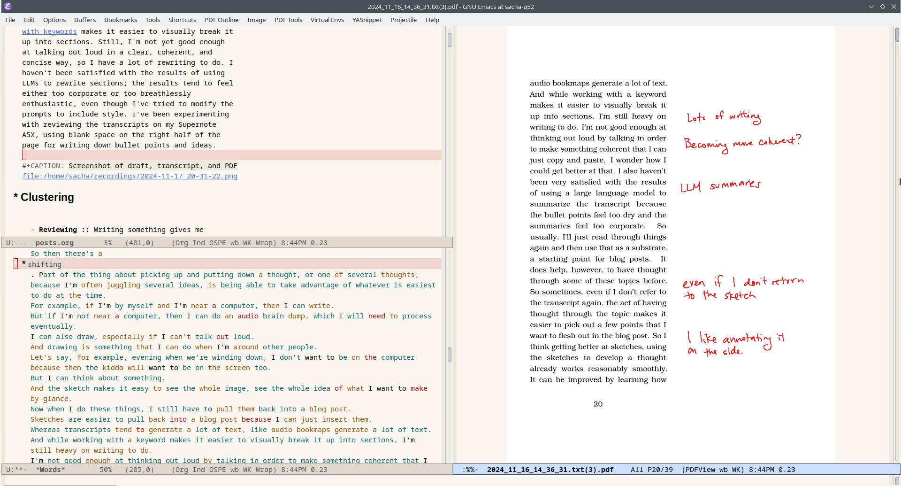
Here's what I needed to implement my-audio-braindump-from-whisperx-json (plus some code from my previous audio braindump workflow):
(defun my-whisperx-word-list (file)
(let* ((json-object-type 'alist)
(jmson-array-type 'list))
(seq-mapcat (lambda (seg)
(alist-get 'words seg))
(alist-get 'segments (json-read-file file)))))
;; (seq-take (my-whisperx-word-list (my-latest-file "~/sync/recordings" "\\.json")) 10)
(defun my-whisperx-insert-word-list (words)
"Inserts WORDS with text properties."
(require 'subed-word-data)
(mapc (lambda (word)
(let ((start (point)))
(insert
(alist-get 'word word))
(subed-word-data--add-word-properties start (point) word)
(insert " ")))
words))
(defun my-audio-braindump-turn-sections-into-headings ()
(interactive)
(goto-char (point-min))
(while (re-search-forward "START SECTION \\(.+?\\) STOP SECTION" nil t)
(replace-match
(save-match-data
(format
"\n*** %s\n"
(save-match-data (string-trim (replace-regexp-in-string "^[,\\.]\\|[,\\.]$" "" (match-string 1))))))
nil t)
(let ((prop-match (save-excursion (text-property-search-forward 'subed-word-data-start))))
(when prop-match
(org-entry-put (point) "START" (format-seconds "%02h:%02m:%02s" (prop-match-value prop-match)))))))
(defun my-audio-braindump-split-sentences ()
(interactive)
(goto-char (point-min))
(while (re-search-forward "[a-z]\\. " nil t)
(replace-match (concat (string-trim (match-string 0)) "\n") )))
(defun my-audio-braindump-restructure ()
(interactive)
(goto-char (point-min))
(my-subed-fix-common-errors)
(org-mode)
(my-audio-braindump-prepare-alignment-breaks)
(my-audio-braindump-turn-sections-into-headings)
(my-audio-braindump-split-sentences)
(goto-char (point-min))
(my-remove-filler-words-at-start))
(defun my-audio-braindump-from-whisperx-json (file)
(interactive (list (read-file-name "JSON: " "~/sync/recordings/" nil nil nil (lambda (f) (string-match "\\.json\\'" f)))))
;; put them all into a buffer
(with-current-buffer (get-buffer-create "*Words*")
(erase-buffer)
(fundamental-mode)
(my-whisperx-insert-word-list (my-whisperx-word-list file))
(my-audio-braindump-restructure)
(goto-char (point-min))
(switch-to-buffer (current-buffer))))
(defun my-audio-braindump-process-text (file)
(interactive (list (read-file-name "Text: " "~/sync/recordings/" nil nil nil (lambda (f) (string-match "\\.txt\\'" f)))))
(with-current-buffer (find-file-noselect file)
(my-audio-braindump-restructure)
(save-buffer)))
;; (my-audio-braindump-from-whisperx-json (my-latest-file "~/sync/recordings" "\\.json"))
Ideas for next steps:
- I can change my processing script to split up the Whisper TXT into sections and automatically make the PDF with nice sections.
- I can add reminders and other callouts. I can style them, and I can copy reminders into a different section for easier processing.
- I can look into extracting PDF annotations so that I can jump to the next highlight or copy highlighted text.
Markdown
(use-package markdown-mode
:if my-laptop-p
:mode ("\\.\\(njk\\|md\\)\\'" . markdown-mode))
Screenshot
Based on https://www.reddit.com/r/emacs/comments/idz35e/emacs_27_can_take_svg_screenshots_of_itself/
(defun my-screenshot-svg (&optional filename)
"Save a screenshot of the current frame as an SVG image.
Saves to a temp file and puts the filename in the kill ring."
(interactive)
(let* ((filename
(or filename
(expand-file-name
(format-time-string "%Y-%m-%d-%H-%M-%S.svg")
my-recordings-dir)))
(data (x-export-frames nil 'svg)))
(with-temp-file filename
(insert data))
(when (called-interactively-p 'any)
(kill-new filename)
(message filename))
filename))
(defun my-screenshot-current-screen (&optional filename)
(interactive)
(let ((new-file
(or filename
(expand-file-name
(format-time-string "%Y-%m-%d-%H-%M-%S.png")
my-recordings-dir))))
(make-process
:name "spectacle"
:command
(list "spectacle" "-b" "-m" "-n" "-o" new-file))
new-file))
(keymap-global-set "C-c s" #'screenshot-svg)
Avoiding weasel words
(use-package artbollocks-mode
:if my-laptop-p
:defer t
:load-path "~/elisp/artbollocks-mode"
:config
(progn
(setq artbollocks-weasel-words-regex
(concat "\\b" (regexp-opt
'("one of the"
"should"
"just"
"sort of"
"a lot"
"probably"
"maybe"
"perhaps"
"I think"
"really"
"pretty"
"nice"
"action"
"utilize"
"leverage") t) "\\b"))
;; Don't show the art critic words, or at least until I figure
;; out my own jargon
(setq artbollocks-jargon nil)))
Emacs: Cycle through different paragraph formats: all on one line, wrapped, max one sentence per line, one sentence per line
: Add move-to-left-margin to work around bug when using fill-paragraph-semlf at the end of a paragraph.
I came across Schauderbasis - reformat paragraph via @EFLS@mastodon.social. Now I want M-q to cycle through different ways of wrapping text:
- all on one line
- at most one sentence per line (don't even try to keep it within
fill-column). - at most one sentence per line (although still wrapping at
fill-column) - according to
fill-column
Now that semantic linefeeds are part of core Emacs (as of 2025-06-14), the code for cycling through different paragraph formats can be pretty short. Most of it is actually just the logic for cycling through different commands. That might come in handy elsewhere. There's an unfill package as well, but since the code for unfilling a paragraph is very simple, I'll just include that part.
Note that fill-paragraph-semlf pays attention to sentence-end-double-space, and it doesn't handle comments yet. I also have some code to check if I'm in a comment and skip those filling methods if needed.
This might encourage me to write shorter sentences.
I can move sentences around with M-Shift-up and M-Shift-down in Org Mode, which is pretty handy.
Also, one sentence per line makes diffs easier to read.
But wrapped text is annoying to edit in Orgzly Revived on my phone, because the wrapping makes a very ragged edge on a narrow screen.
I might unwrap things that I want to edit there.
With a little bit of tweaking to skip source blocks, I can narrow to the subtree, select my whole buffer, and cycle the formatting however I like.
(defvar my-repeat-counter '()
"How often `my-repeat-next' was called in a row using the same command.
This is an alist of (cat count list) so we can use it for different functions.")
(defun my-unfill-paragraph ()
"Replace newline chars in current paragraph by single spaces.
This command does the inverse of `fill-paragraph'."
(interactive)
(let ((fill-column most-positive-fixnum))
(fill-paragraph)))
(defun my-fill-paragraph-semlf-long ()
(interactive)
(let ((fill-column most-positive-fixnum))
(fill-paragraph-semlf)))
(defun my-repeat-next (category &optional element-list reset)
"Return the next element for CATEGORY.
Initialize with ELEMENT-LIST if this is the first time."
(let* ((counter
(or (assoc category my-repeat-counter)
(progn
(push (list category -1 element-list)
my-repeat-counter)
(assoc category my-repeat-counter)))))
(setf (elt (cdr counter) 0)
(mod
(if reset 0 (1+ (elt (cdr counter) 0)))
(length (elt (cdr counter) 1))))
(elt (elt (cdr counter) 1) (elt (cdr counter) 0))))
(defun my-in-prefixed-comment-p ()
(or (member 'font-lock-comment-delimiter-face (face-at-point nil t))
(member 'font-lock-comment-face (face-at-point nil t))
(save-excursion
(beginning-of-line)
(comment-search-forward (line-end-position) t))))
;; It might be nice to figure out what state we're
;; in and then cycle to the next one if we're just
;; working with a single paragraph. In the
;; meantime, just going by repeats is fine.
(defun my-reformat-paragraph-or-region ()
"Cycles the paragraph between three states: filled/unfilled/fill-sentences.
If a region is selected, handle all paragraphs within that region."
(interactive)
(let ((func (my-repeat-next 'my-reformat-paragraph
'(my-fill-paragraph-semlf-long
fill-paragraph-semlf
fill-paragraph
my-unfill-paragraph)
(not (eq this-command last-command))))
(deactivate-mark nil))
(if (region-active-p)
(save-restriction
(save-excursion
(narrow-to-region (region-beginning) (region-end))
(goto-char (point-min))
(while (not (eobp))
(skip-syntax-forward " ")
(let ((elem (and (derived-mode-p 'org-mode)
(org-element-context))))
(cond
((eq (org-element-type elem) 'headline)
(org-forward-paragraph))
((member (org-element-type elem)
'(src-block export-block headline property-drawer))
(goto-char
(org-element-end (org-element-context))))
(t
(funcall func)
(if fill-forward-paragraph-function
(funcall fill-forward-paragraph-function)
(forward-paragraph))))))))
(save-excursion
(move-to-left-margin)
(funcall func)))))
(keymap-global-set "M-q" #'my-reformat-paragraph-or-region)
Sometimes I use writeroom-mode to make the lines look even narrower, with lots of margin on the side.
Related:
- Text Editor Judo: One Sentence Per Line - The Daily Macro - in Org Mode, one sentence pe line lets you drag sentences around with M-Shift-up and M-Shift-down
- Writing one sentence per line | Derek Sivers (HN)
- Semantic Linefeeds
- Fill paragraph using semantic linefeeds
Visual line
(global-visual-line-mode)
(add-hook 'minibuffer-mode-hook (lambda () (visual-line-mode -1)))
Unicode
(defmacro my-insert-unicode (unicode-name)
`(lambda () (interactive)
(insert-char (cdr (assoc-string ,unicode-name (ucs-names))))))
(bind-key "C-x 8 s" (my-insert-unicode "ZERO WIDTH SPACE"))
(bind-key "C-x 8 S" (my-insert-unicode "SNOWMAN"))
Clean up spaces
(bind-key "M-SPC" 'cycle-spacing)
Expand
(setq save-abbrevs 'silently)
(bind-key "M-/" 'hippie-expand)
From https://github.com/purcell/emacs.d/blob/master/lisp/init-auto-complete.el - Exclude very large buffers from dabbrev
(defun sanityinc/dabbrev-friend-buffer (other-buffer)
(< (buffer-size other-buffer) (* 1 1024 1024)))
(setq dabbrev-friend-buffer-function 'sanityinc/dabbrev-friend-buffer)
(setq hippie-expand-try-functions-list
'(yas-hippie-try-expand
try-expand-all-abbrevs
try-complete-file-name-partially
try-complete-file-name
try-expand-dabbrev
try-expand-dabbrev-from-kill
try-expand-dabbrev-all-buffers
try-expand-list
try-expand-line
try-complete-lisp-symbol-partially
try-complete-lisp-symbol))
Write about keybindings
;; hmm, doesn't quite work for looking things up yet. I basically want a programmatic where-is for a specific keymap
(defvar my-keybinding-maps '(subed-mode-map subed-waveform-minor-mode-map subed-waveform-svg-map))
(defun my-copy-keybinding (symbol)
(interactive (list (find-function-read)))
(when (listp symbol)
(setq symbol (car symbol)))
(let (result keys)
(map-keymap
(lambda (event def)
(cond ((and (symbolp def))
(push (list def event) result))
((and (listp def) (eq 'keymap (car def)))
(apply 'append
(map-keymap
(lambda (event def)
(when (and (symbolp def))
(push (list def event) result)))
def)))))
subed-mode-map)
(setq keys (assoc-default symbol result))
(when keys
(kill-new (key-description keys))
(message "%s" (key-description keys)))))
Transcripts from my phone audio editing
(defvar my-audio-braindump-dir "~/sync/Phone")
(defun my-open-latest-braindump ()
(interactive)
(find-file (my-latest-file my-audio-braindump-dir "\\.txt"))
(kill-new (buffer-string)))
(defun my-insert-latest-braindump ()
(interactive)
(insert-file-contents (my-latest-file my-audio-braindump-dir "\\.txt")))
(defun my-audio-braindump-dired ()
(interactive)
(dired my-audio-braindump-dir "-lt"))
(defalias 'my-phone-dired #'my-audio-braindump-dired)
Speech recognition audio SpeechRecognition
(use-package caser
:bind
("M-D" . caser-dashcase-dwim))
Map lang-gptel feedback from the logbook to KwizIQ topics ai
(defun my-org-collect-logbook-contents ()
"Collect contents of all LOGBOOK drawers in the current subtree.
Returns them concatenated as a string."
(save-excursion
(org-back-to-heading t)
(let ((subtree-end (save-excursion (org-end-of-subtree t t)))
contents
elem)
(while (re-search-forward "^[ \t]*:LOGBOOK:[ \t]*$" subtree-end t)
(setq elem (org-element-at-point))
(push (buffer-substring-no-properties
(org-element-contents-begin elem)
(org-element-contents-end elem))
contents))
(string-join (nreverse contents) "\n"))))
(defun my-org-get-subtree (link)
(save-window-excursion
(save-excursion
(org-link-open-from-string link)
(buffer-substring-no-properties (point) (progn (org-end-of-subtree) (point))))))
(defun my-lang-gptel-analyze-feedback ()
(interactive)
(with-current-buffer (get-buffer-create "*Feedback*")
(erase-buffer)
(org-mode))
(gptel-request
(json-encode
`(("feedback on previous mistakes" . ,(my-org-collect-logbook-contents))
("topic links" . ,(my-org-get-subtree "[[file:~/sync/orgzly/organizer.org::#kwiziq-a2]]"))
("prompt" . "Analyze the feedback on previous mistakes. Map them to the different topics and create a frequency table where column A has a link to the topic and column B has the number of errors in that category. For anything that doesn't match, summarize them in a separate list called Other. Also create a 10-item quiz covering the most important points. Hide answers like this: [[answer:the answer goes here][___]] Use Org Mode syntax.")))
:callback (lambda (response info)
(with-current-buffer (get-buffer-create "*Feedback*")
(insert response)
(goto-char (point-min))
(pop-to-buffer (current-buffer))))))
Hmm, I think it messes up ROT13, so I need a different way of obscuring answers. Maybe it can do Org Mode links. I might need to do that myself somehow.
Example:
Fréquence des erreurs par catégorie
| Thématique (KwizIQ) | Nombre d'erreurs |
|---|---|
| Nouns & Articles | 18 |
| Adjectives & Adverbs | 14 |
| Verbs Tenses & Conjugation | 12 |
| Prepositions & Conjunctions | 11 |
| Pronouns | 9 |
| Idioms & Structures | 7 |
| Numbers, Time & Date | 8 |
Other
- Terminologie Technique : Confusion entre API (Interface) et AFI (Phonétique).
- Anglicismes : "Possiblement" au lieu de "peut-être", "retour" au lieu de "commentaire".
- Orthographe : "Minutieux", "fonctionnalité", "nécessaire".
- Typographie : Utilisation de l'espace comme séparateur de milliers (31 000) au lieu de la virgule ou du point.
Quiz de révision (10 questions)
Hmm, let me try filling in this quiz…
- Complétez : "J'évite que ma voix ne se fatigue (fatiguer)." (Subjonctif présent)
- Quel est l'antonyme de "plus de" dans une comparaison de quantité ? moins de
- Corrigez : "C'est une bonne occasion de documenter mon processus."
- Traduisez "251 hours" en lettres (attention au genre d'heure). deux cents cinquante une heure
- Corrigez : "Ces souvenirs me rappellent certains moments" (Ajoutez le pronom manquant). ??
- Choisissez : On joue du piano mais on joue au tennis.
- Quelle est la forme correcte : "Une fois que j'ai fini mes enregistrements, je les écoute" (Habitude présente).
- Corrigez l'accord : "La transcription est précise."
- Traduisez "I have a lot to do" en utilisant "rien ne me presse". Rien ne me presse de faire
- Quelle est l'abréviation correcte pour l'alphabet phonétique en français ? AFI
Using whisper.el to convert speech to text and save it to the currently clocked task in Org Mode or elsewhere speech
- : Major change: I switched to my fork of natrys/whisper.el so that I can specify functions that change the window configuration etc.
- : Change main function to
my-whisper-run, use seq-reduce to go through the functions. - : Added code for automatically capturing screenshots, saving text, working with a list of functions.
- : Added demo, fixed some bugs.
- : Added note about difference from MELPA package, fixed :vc
I want to get my thoughts into the computer quickly, and talking might be a good way to do some of that. OpenAI Whisper is reasonably good at recognizing my speech now and whisper.el gives me a convenient way to call whisper.cpp from Emacs with a single keybinding. (Note: This is not the same whisper package as the one on MELPA.) Here is how I have it set up for reasonable performance on my Lenovo P52 with just the CPU, no GPU.
I've bound <f9> to the command whisper-run. I press <f9> to start recording, talk, and then press <f9> to stop recording. By default, it inserts the text into the buffer at the current point. I've set whisper-return-cursor-to-start to nil so that I can keep going.
(use-package whisper
:vc (:url "https://github.com/natrys/whisper.el")
:load-path "~/vendor/whisper.el"
:config
(setq whisper--mode-line-recording-indicator "⏺")
(setq whisper-quantize "q4_0")
(setq whisper-install-directory "~/vendor")
(setq whisper--install-path (concat
(expand-file-name (file-name-as-directory whisper-install-directory))
"whisper.cpp/"))
;; Get it running with whisper-server-mode set to nil first before you switch to 'local.
;; If you change models,
;; (whisper-install-whispercpp (whisper--check-install-and-run nil "whisper-start"))
(setq whisper-server-mode 'local)
(setq whisper-model "base")
(setq whisper-return-cursor-to-start nil)
;(setq whisper--ffmpeg-input-device "alsa_input.usb-Blue_Microphones_Yeti_Stereo_Microphone_REV8-00.analog-stereo")
(setq whisper--ffmpeg-input-device "VirtualMicSink.monitor")
(setq whisper-language "en")
(setq whisper-recording-timeout 3000)
(setq whisper-before-transcription-hook nil)
(setq whisper-use-threads (1- (num-processors)))
(setq whisper-transcription-buffer-name-function 'whisper--simple-transcription-buffer-name)
(add-hook 'whisper-after-transcription-hook 'my-subed-fix-common-errors-from-start -100)
:bind
(("<f9>" . whisper-run)
("C-<f9>" . my-whisper-run)
("S-<f9>" . my-whisper-replay)
("M-<f9>" . my-whisper-toggle-language)))
Let's see if we can process "Computer remind me to…":
(defvar my-whisper-org-reminder-template "t")
(defun my-whisper-org-process-reminder ()
(let ((text (buffer-string))
reminder)
(when (string-match "computer[,\.]? reminds? me to \\(.+\\)" text)
(setq reminder (match-string 1 text))
(save-window-excursion
(with-current-buffer (if (markerp whisper--marker) (marker-buffer whisper--marker) (current-buffer))
(when (markerp whisper--marker) (goto-char whisper--marker))
(org-capture nil my-whisper-org-reminder-template)
(insert reminder)
(org-capture-finalize)))
(erase-buffer))))
(with-eval-after-load 'whisper
(add-hook 'whisper-after-transcription-hook 'my-whisper-org-process-reminder 50))
Disk space is inexpensive and backups are great, so let's save each file using the timestamp.
(defvar my-whisper-dir "~/recordings/whisper/")
(defun my-whisper-set-temp-filename ()
(setq whisper--temp-file (expand-file-name
(format-time-string "%Y-%m-%d-%H-%M-%S.wav")
my-whisper-dir)))
(with-eval-after-load 'whisper
(add-hook 'whisper-before-transcription-hook #'my-whisper-set-temp-filename))
The technology isn't quite there yet to do real-time audio transcription so that I can see what it understands while I'm saying things, but that might be distracting anyway. If I do it in short segments, it might still be okay. I can replay the most recently recorded snippet in case it's missed something and I've forgotten what I just said.
(defun my-whisper-replay (&optional file)
"Replay the last temporary recording."
(interactive (list
(when current-prefix-arg
(read-file-name "File: " my-whisper-dir))))
(setq whisper--temp-file (or file whisper--temp-file))
(mpv-play whisper--temp-file))
(defun my-whisper-insert-retry (&optional file)
(interactive (list
(when current-prefix-arg
(read-file-name "File: " my-whisper-dir))))
(whisper--cleanup-transcription)
(setq whisper--marker (point-marker)
whisper--temp-file (or file whisper--temp-file))
(whisper--transcribe-audio))
Il peut aussi comprendre le français.
(defun my-whisper-toggle-language ()
"Set the language explicitly, since sometimes auto doesn't figure out the right one."
(interactive)
(setq whisper-language (if (string= whisper-language "en") "fr" "en"))
;; If using a server, we need to restart for the language
(when (process-live-p whisper--server-process) (kill-process whisper--server-process))
(message "%s" whisper-language))
I could use this with org-capture, but that's a lot of keystrokes. My shortcut for org-capture is C-c r. I need to press at least one key to set the template, <f9> to start recording, <f9> to stop recording, and C-c C-c to save it. I want to be able to capture notes to my currently clocked in task without having an Org capture buffer interrupt my display.
To clock in, I can use C-c C-x i or my ! speed command. Bonus: the modeline displays the current task to keep me on track, and I can use org-clock-goto (which I've bound to C-c j) to jump to it.
Then, when I'm looking at something else and I want to record a note, I can press <f9> to start the recording, and then C-<f9> to save it to my currently clocked task along with a link to whatever I'm looking at. (Update: Ooh, now I can save a screenshot too.)
(defun my-whisper-reset (text)
(setq my-whisper-skip-annotation nil)
(remove-hook 'whisper-insert-text-at-point #'my-whisper-org-save-to-clocked-task)
text)
;; Only works with my tweaks to whisper.el
;; https://github.com/sachac/whisper.el/tree/whisper-insert-text-at-point-function
(with-eval-after-load 'whisper
(setq whisper-insert-text-at-point
'(my-whisper-handle-commands
my-whisper-save-text
my-whisper-save-to-file
my-whisper-maybe-expand-snippet
my-whisper-maybe-type
my-whisper-maybe-type-with-hints
my-whisper-insert
my-whisper-reset)))
(defvar my-whisper-last-annotation nil "Last annotation so we can skip duplicates.")
(defvar my-whisper-skip-annotation nil)
(defvar my-whisper-target-markers nil "List of markers to send text to.")
(defun my-whisper-insert (text)
(let ((markers
(cond
((null my-whisper-target-markers)
(list whisper--marker)) ; current point where whisper was started
((listp my-whisper-target-markers)
my-whisper-target-markers)
((markerp my-whisper-target-markers)
(list my-whisper-target-markers))))
(orig-point (point))
(orig-buffer (current-buffer)))
(when text
(mapcar (lambda (marker)
(with-current-buffer (marker-buffer marker)
(save-restriction
(widen)
(when (markerp marker) (goto-char marker))
(when (and (derived-mode-p 'org-mode) (org-at-drawer-p))
(insert "\n"))
(whisper--insert-text
(concat
(if (looking-back "[ \t\n]\\|^")
""
" ")
(string-trim text)))
;; Move the marker forward here
(move-marker marker (point)))))
markers)
(when my-whisper-target-markers
(goto-char orig-point))
nil)))
(defun my-whisper-maybe-type (text)
"If Emacs is not the focused app, simulate typing TEXT.
Add this function to `whisper-insert-text-at-point'."
(when text
(if (frame-focus-state)
text
(make-process :name "xdotool" :command
(list "xdotool" "type"
text))
nil)))
(defun my-whisper-clear-markers ()
(interactive)
(setq my-whisper-target-markers nil))
(defun my-whisper-use-current-point (&optional add)
(interactive (list current-prefix-arg))
(if add
(push (point-marker) my-whisper-target-markers)
(setq my-whisper-target-markers (list (point-marker)))))
(defun my-whisper-run-at-point (&optional add)
(interactive (list current-prefix-arg))
(my-whisper-clear-markers)
(whisper-run))
(keymap-global-set "<f9>" #'my-whisper-run-at-point)
(keymap-global-set "<kp-1>" #'whisper-run)
(defun my-whisper-jump-to-marker ()
(interactive)
(with-current-buffer (marker-buffer (car my-whisper-target-markers))
(goto-char (car my-whisper-target-markers))))
(defun my-whisper-use-currently-clocked-task (&optional add)
(interactive (list current-prefix-arg))
(save-window-excursion
(save-restriction
(save-excursion
(org-clock-goto)
(org-end-of-meta-data)
(org-end-of-subtree)
(if add
(push (point-marker) my-whisper-target-markers)
(setq my-whisper-target-markers (list (point-marker))))))))
(defun my-whisper-run (&optional skip-annotation)
(interactive (list current-prefix-arg))
(require 'whisper)
(add-hook 'whisper-insert-text-at-point #'my-whisper-org-save-to-clocked-task -10)
(whisper-run)
(when skip-annotation
(setq my-whisper-skip-annotation t)))
(defun my-whisper-save-text (text)
"Save TEXT beside `whisper--temp-file'."
(when text
(let ((link (org-store-link nil)))
(with-temp-file (concat (file-name-sans-extension whisper--temp-file) ".txt")
(when link
(insert link "\n"))
(insert text)))
text))
(defun my-whisper-org-save-to-clocked-task (text)
(when text
(save-window-excursion
(with-current-buffer (if (markerp whisper--marker) (marker-buffer whisper--marker) (current-buffer))
(when (markerp whisper--marker) (goto-char whisper--marker))
;; Take a screenshot maybe
(let* ((link (and (not my-whisper-skip-annotation)
(org-store-link nil)))
(region (and (region-active-p) (buffer-substring (region-beginning) (region-end))))
(screenshot-filename
(when (or
(null link)
(not (string= my-whisper-last-annotation link))
(not (frame-focus-state))) ; not in focus, take a screenshot
(my-screenshot-current-screen (concat (file-name-sans-extension whisper--temp-file) ".png")))))
(if (org-clocking-p)
(save-window-excursion
(save-restriction
(save-excursion
(org-clock-goto)
(org-end-of-subtree)
(unless (bolp)
(insert "\n"))
(insert "\n")
(if (and link (not (string= my-whisper-last-annotation link)))
(insert
(if screenshot-filename
(concat "(" (org-link-make-string
(concat "file:" screenshot-filename)
"screenshot") ") ")
"")
link
"\n")
(when screenshot-filename
(insert (org-link-make-string
(concat "file:" screenshot-filename)
"screenshot")
"\n")))
(when region
(insert "#+begin_example\n" region "\n#+end_example\n"))
(insert text "\n")
(setq my-whisper-last-annotation link)))
(run-at-time 0.5 nil (lambda (text) (message "Added clock note: %s" text)) text))
;; No clocked task, prompt for a place to capture it
(kill-new text)
(setq org-capture-initial text)
(call-interactively 'org-capture)
;; Delay the window configuration
(let ((config (current-window-configuration)))
(run-at-time 0.5 nil
(lambda (text config)
(set-window-configuration config)
(message "Copied: %s" text))
text config))))))))
(with-eval-after-load 'org
(add-hook 'org-clock-in-hook #'my-whisper-org-clear-saved-annotation))
(defun my-whisper-org-clear-saved-annotation ()
(setq my-whisper-org-last-annotation nil))
Here's an idea for a function that saves the recognized text with a timestamp.
(defvar my-whisper-notes "~/sync/stream/narration.org")
(defun my-whisper-save-to-file (text)
(when text
(let ((link (org-store-link nil)))
(with-current-buffer (find-file-noselect my-whisper-notes)
(goto-char (point-max))
(insert "\n\n" (format-time-string "%H:%M ") text "\n" (if link (concat link "\n") ""))
(save-buffer)
(run-at-time 0.5 nil (lambda (text) (message "Saved to file: %s" text)) text)))
text))
And now I can redo things if needed:
(defun my-whisper-redo ()
(interactive)
(setq whisper--marker (point-marker))
(whisper--transcribe-audio))
I think I've just figured out my Pipewire setup so that I can record audio in OBS while also being able to do speech to text, without the audio stuttering. qpwgraph was super helpful for visualizing the Pipewire connections and fixing them.
systemctl --user restart pipewire
sleep 2
pactl load-module module-null-sink \
sink_name="VirtualMicSink" sink_properties=device.description=VirtualMicSink
pactl load-module module-null-sink \
sink_name="CombinedSink" sink_properties=device.description=CombinedSink
if pactl list short sources | grep -i pci-0000; then
pactl load-module module-loopback \
source="alsa_input.pci-0000_00_1f.3.analog-stereo" \
sink="VirtualMicSink" \
latency_msec=100 \
adjust_time=1 \
source_output_properties="node.description='SysToVMic' node.name='SysToVMic' media.name='SysVToMic'" \
sink_input_properties="node.description='SysToVMic' node.name='SysToVMic' media.role='filter'"
sink_input_properties=media.role=filter
pactl load-module module-loopback \ source="alsa_output.pci-0000_00_1f.3.analog-stereo.monitor" \
sink="CombinedSink" \
node_name="SystemOutToCombined" \
source_output_properties="node.description='SysOutToCombined' node.name='SysOutToCombined'" \
sink_input_properties="node.description='SysOutToCombined' node.name='SysOutToCombined' media.role='filter'" \
latency_msec=100 adjust_time=1
fi
if pactl list short sources | grep -i yeti; then
pactl load-module module-loopback \
source="alsa_input.usb-Blue_Microphones_Yeti_Stereo_Microphone_REV8-00.analog-stereo" \
sink="VirtualMicSink" \
latency_msec=100 \
adjust_time=1 \
source_output_properties="node.description='YetiToVMic' node.name='YetiToVMic' media.name='YetiToVMic'" \
sink_input_properties="node.description='YetiToVMic' node.name='YetiToVMic' media.role='filter'"
pactl load-module module-loopback \ source="alsa_output.usb-Blue_Microphones_Yeti_Stereo_Microphone_REV8-00.analog-stereo.monitor" \
sink="CombinedSink" \
source_output_properties="node.description='YetiOutToCombined' node.name='YetiOutToCombined' media.name='YetiOutToCombined' " \
sink_input_properties="node.description='YetiOutToCombined' node.name='YetiOutToCombined' media.role='filter'" \
latency_msec=100 adjust_time=1
fi
pactl load-module module-loopback \
source="VirtualMicSink.monitor" \
sink="CombinedSink" \
source_output_properties="node.description='VMicToCombined' node.name='VMicToCombined' media.name='VMicToCombined'" \
sink_input_properties="node.description='VMicToCombined' node.name='VMicToCombined' media.role='filter'" \
latency_msec=100 adjust_time=1
pactl load-module module-null-sink \
sink_name="ExtraSink1" sink_properties=device.description=ExtraSink1
pactl load-module module-loopback \
source="ExtraSink1.monitor" \
sink="CombinedSink" \
source_output_properties="node.description='ExtraSink1ToCombined' node.name='ExtraSink1ToCombined' media.name='ExtraSink1ToCombined'" \
sink_input_properties="node.description='ExtraSink1ToCombined' node.name='ExtraSink1ToCombined' media.role='filter'" \
latency_msec=100 adjust_time=1
Here's a demo:
Transcript
And then I define a global shortcut in KDE that runs:
/home/sacha/bin/xdotool-emacs key --clearmodifiers F9
So now I can dictate into other applications or save into Emacs. Which suggests of course that I should get it working with C-f9 as well, if I can avoid the keyboard shortcut loop…
Emacs and whisper.el: Trying out different speech-to-text backends and models emacs SpeechRecognition
I was curious about parakeet because I heard that it was faster than Whisper on the HuggingFace leaderboard. When I installed it and got it running on my laptop (CPU only, no GPU), it seemed like my results were a little faster than whisper.cpp with the large model, but much slower than whisper.cpp with the base model. The base model is decent for quick dictation, so I got curious about other backends and other models.
In order to try natrys/whisper.el with other backends, I needed to work around how whisper.el validates the model names and sends requests to the servers. Here's the quick and dirty code for doing so, in case you want to try it out for yourself.
(defvar my-whisper-url-format "http://%s:%d/transcribe")
(defun my-whisper--transcribe-via-local-server ()
"Transcribe audio using the local whisper server."
(message "[-] Transcribing via local server")
(whisper--setup-mode-line :show 'transcribing)
(whisper--ensure-server)
(setq whisper--transcribing-process
(whisper--process-curl-request
(format my-whisper-url-format whisper-server-host whisper-server-port)
(list "Content-Type: multipart/form-data")
(list (concat "file=@" whisper--temp-file)
"temperature=0.0"
"temperature_inc=0.2"
"response_format=json"
(concat "model=" whisper-model)
(concat "language=" whisper-language)))))
(defun my-whisper--check-model-consistency () t)
(with-eval-after-load 'whisper
(advice-add 'whisper--transcribe-via-local-server :override #'my-whisper--transcribe-via-local-server)
(advice-add 'whisper--check-model-consistency :override #'my-whisper--check-model-consistency)
(advice-add 'whisper--ensure-server :override #'my-whisper--ensure-server)
)
Then I have this function for trying things out.
(defun my-test-whisper-api (url &optional args)
(with-temp-buffer
(apply #'call-process "curl" nil t nil "-s"
url
(append (mapcan
(lambda (h) (list "-H" h))
(list "Content-Type: multipart/form-data"))
(mapcan
(lambda (h) (list "-F" h))
(list (concat "file=@" whisper--temp-file)
"temperature=0.0"
"temperature_inc=0.2"
"response_format=verbose_json"
(concat "language=" whisper-language)))
args))
(message "%s %s" (buffer-string) url)))
Here's the audio file. It is around 10 seconds long. I run the benchmark 3 times and report the average time.
Download
Code for running the benchmarks
(let ((times '3))
(mapcar
(lambda (group)
(let ((whisper--temp-file "/home/sacha/recordings/whisper/2026-01-19-14-17-53.wav"))
;; warm up the model
(eval (cadr group))
(list
(format "%.3f"
(/ (car
(benchmark-call (lambda () (eval (cadr group))) times))
times))
(car group))))
'(
("parakeet"
(my-test-whisper-api
(format "http://%s:%d/v1/audio/transcriptions" whisper-server-host 5092)))
("whisper.cpp base-q4_0"
(my-test-whisper-api
(format "http://%s:%d/inference" whisper-server-host 8642)))
("speaches whisper-base"
(my-test-whisper-api
(format "http://%s:%d/v1/audio/transcriptions" whisper-server-host 8001)
(list "-F" "model=Systran/faster-whisper-base")))
("speaches whisper-base.en"
(my-test-whisper-api
(format "http://%s:%d/v1/audio/transcriptions" whisper-server-host 8001)
(list "-F" "model=Systran/faster-whisper-base.en")))
("speaches whisper-small"
(my-test-whisper-api
(format "http://%s:%d/v1/audio/transcriptions" whisper-server-host 8001)
(list "-F" "model=Systran/faster-whisper-small")))
("speaches whisper-small.en"
(my-test-whisper-api
(format "http://%s:%d/v1/audio/transcriptions" whisper-server-host 8001)
(list "-F" "model=Systran/faster-whisper-small.en")))
("speaches lorneluo/whisper-small-ct2-int8"
(my-test-whisper-api
(format "http://%s:%d/v1/audio/transcriptions" whisper-server-host 8001)
(list "-F" "model=lorneluo/whisper-small-ct2-int8")))
;; needed export TORCH_FORCE_NO_WEIGHTS_ONLY_LOAD=1
("whisperx-server Systran/faster-whisper-small"
(my-test-whisper-api
(format "http://%s:%d/transcribe" whisper-server-host 8002)))))
)
I tried it with:
- parakeet
- whisper.cpp (as whisper.el sets it up)
- speaches, which is a front-end for faster-whisper, and
- whisperx-server, which is a front-end for whisperx
Looks like speaches + faster-whisper-base is the winner for now. I like how speaches lets me switch models on the fly, so maybe I can use base.en generally and switch to base when I want to try dictating in French. Here's how I've set it up to use the server I just set up.
(setq whisper-server-port 8001 whisper-model "Systran/faster-whisper-base.en"
my-whisper-url-format "http://%s:%d/v1/audio/transcriptions")
(defvar my-speaches-process nil)
(defvar my-speaches-dir "~/vendor/speaches")
(defvar my-speaches-command `(,(expand-file-name ".venv/bin/uvicorn" my-speaches-dir)
"--factory"
"--host"
"0.0.0.0"
"--port"
,(number-to-string whisper-server-port)
"speaches.main:create_app"))
(defun my-whisper--ensure-server ()
"Start the process if it's not already running."
(interactive)
(unless (process-live-p my-speaches-process)
(let ((default-directory my-speaches-dir))
(setq my-speaches-process
(make-process
:name "speaches"
:command my-speaches-command
:buffer (get-buffer-create "*speaches*")
:stderr (get-buffer-create "*speaches-err*"))))))
Benchmark notes: I have a Lenovo P52 laptop (released 2018) with an Intel Core i7-8850H (6 cores, 12 threads; 2.6 GHz base / 4.3 GHz turbo) with 64GB RAM and an SSD. I haven't figured out how to get the GPU working under Ubuntu yet.
Queuing multiple transcriptions with whisper.el speech recognition SpeechRecognition emacs
I want to be able to talk out loud and have the ideas go into Emacs. I can do this in a number of different ways:
- I briefly demonstrated a step-by-step approach with natrys/whisper.el with a single file. I press a keyboard shortcut to start the recording, another shortcut to stop the recording, and it transcribes it in the background. But the way whisper.el is set up is that if I press the keyboard shortcut to start recording again it will offer to interrupt the transcription process, which is not what I want. I want to just keep talking and have it process results as things come in.
- I'm also experimenting with Google Chrome's web speech API to do continuous speech recognition, which I can get into Emacs using a web socket.
- What I've just figured out is how to layer a semi-continuous interface for speech recognition on top of whisper.el so that while it's processing in the background, I can just press a keyboard shortcut (I'm using numpad 9 to call
my-whisper-continue) to stop the previous recording, queue it for processing, and start the next recording. If I use this keyboard shortcut to separate my thoughts, then Whisper has a much easier time making sense of the whole sentence or paragraph or whatever, instead of trying to use the sliding 30 second context window that many streaming approaches to speech recognition try to use.
Question: Did you fix the keyboard delay you've got while speech catches what you're saying?
Sometimes, when the speed recognition kicks in, my computer gets busy. When my computer gets really busy, it doesn't process my keystrokes in the right order, which is very annoying because then I have to delete the previous word and retype it. I haven't sorted that out yet, but it seems like I probably have to lower the priority on different processes. On the plus side, as I mentioned, if I dictate things instead of typing them, then I don't run into that problem at all.
Also, other notes on delays: The continuous speech recognition via Google Chrome shows up fairly quickly, but it's not very precise, and it doesn't have punctuation. Even if there's a little bit of a delay, as long as I press the my-whisper-continue shortcut after each thought, then I can get that text into my Emacs buffer using the nicer transcription from my selected model. There is going to be a bit of a delay for that one because it gets processed at the end of the thought. Also, I need to start thinking in complete sentences instead of just adding one cause after the other as my brain goes on all of these tangents. I think it's pretty promising. There's the continuous speech recognition via Google Chrome if I don't mind the lower accuracy and lack of punctuation, and I can still get the pretty version on the other side.
Why talk out loud? I liked the Bookclub Tapas presentation that Maddie Sullivan did at EmacsConf 2025. Talking out loud helps me be a lot more verbose about what I'm saying, compared to typing things out or even like having to switch to my notes or interrupting my screen with an Org capture buffer. Of course I want to clean that up for putting into a blog post, but given that my life still sometimes has random interruptions from a kiddo who must have my attention at that very minute, having that kind of record that I can at least try to reread afterwards to reconstruct what I was thinking about sounds like it might be helpful.
Still, making sense out loud is hard. I'm not actually used to talking to people that much now. This is probably a good reason for me to experiment with streaming more. Then I get the practice in talking out loud, there are backup recordings, and people can ask questions when things are unclear.
Of course, sometimes the text doesn't quite make sense because of the speech recognition errors. I can usually figure it out from the context. I save the audio as well so that I can go back and listen to it again if I really need to.
Anyway, here's the code for sending the current recording to whisper in the background and starting another recording. It assumes a lot about how things are set up. For example, I'm only testing this with a local speaches server instead of whisper.cpp. You might need to look at my other speech related configuration blog posts and sections in order to make sense of it.
Code for queuing whisper.el requests to a local server
(defvar my-whisper--queue nil)
(defun my-whisper-continue (&optional arg)
"Send what we've got so far for transcription and then continue recording.
Call with \\[universal-argument] to signal that we can stop."
(interactive "P")
(require 'whisper)
(if arg
(my-whisper-done)
(setq whisper--marker (point-marker) whisper--point-buffer (current-buffer))
(when (process-live-p whisper--recording-process)
;; queue only if the last one is not asking for the same file
(unless
(string=
(plist-get
(car
(last my-whisper--queue))
:file)
whisper--temp-file)
(add-to-list
'my-whisper--queue
(list :file whisper--temp-file
:buffer
(format "*result: %s*" (file-name-base whisper--temp-file)))
t))
;; Remove the sentinel; handle results ourselves
(set-process-sentinel whisper--recording-process
(lambda (process event)
(my-whisper-process-queue)))
(interrupt-process whisper--recording-process))
(run-hooks 'whisper-before-transcription-hook)
(whisper--setup-mode-line :show 'recording)
(whisper--record-audio)))
(defun my-whisper-discard ()
"Ignore the previous recording."
(interactive)
(when (process-live-p whisper--recording-process)
;; Remove the sentinel; handle results ourselves
(set-process-sentinel whisper--recording-process
(lambda (process event)
(when (file-exists-p whisper--temp-file)
(delete-file whisper--temp-file))
(my-whisper-process-queue)))
(interrupt-process whisper--recording-process)))
(defun my-whisper-discard-and-continue ()
"Ignore the previous recording and continue."
(interactive)
(if (process-live-p whisper--recording-process)
(progn
;; Remove the sentinel; handle results ourselves
(set-process-sentinel whisper--recording-process
(lambda (process event)
(my-whisper-process-queue)
(my-whisper-continue)))
(interrupt-process whisper--recording-process))
(my-whisper-continue)))
(defun my-whisper-done ()
(interactive)
(when (process-live-p whisper--recording-process)
(add-to-list
'my-whisper--queue
(list :file whisper--temp-file
:buffer
(format "*result: %s*" (file-name-base whisper--temp-file)))
t)
;; Remove the sentinel; handle results ourselves
(set-process-sentinel whisper--recording-process
(lambda (process event)
(my-whisper-process-queue)))
(whisper--setup-mode-line :hide 'recording)
(interrupt-process whisper--recording-process)))
(defun my-whisper-process-queue-result ()
"Process the first part of the queue that already has results."
(while (plist-get (car my-whisper--queue) :results)
(let ((o (pop my-whisper--queue)))
(unless my-whisper-target-markers
(setq whisper--marker (point-marker)
whisper--point-buffer (current-buffer)))
(with-current-buffer (plist-get o :buffer)
(erase-buffer)
(insert (plist-get o :results)))
;; Only works with my fork: https://github.com/sachac/whisper.el/tree/whisper-insert-text-at-point-function
(whisper--handle-transcription-output nil (plist-get o :buffer)))))
(defun my-whisper-process-queue ()
(let (o)
(while (setq o (seq-find (lambda (o) (and (plist-get o :file)
(not (plist-get o :process))
(not (plist-get o :results))))
my-whisper--queue))
(let* ((headers (list "Content-Type: multipart/form-data"))
(params (list (concat "file=@"
(plist-get o :file))
"temperature=0.0"
"temperature_inc=0.2"
"response_format=json"
(concat "model=" whisper-model)
(concat "language=" whisper-language)))
(url (format my-whisper-url-format whisper-server-host whisper-server-port))
(command `("curl" "-s"
,url
,@(mapcan (lambda (h) (list "-H" h)) headers)
,@(mapcan (lambda (p) (list "-F" p)) params))))
(with-current-buffer (get-buffer-create (plist-get o :buffer))
(erase-buffer))
(plist-put
o :process
(make-process
:name "whisper-curl"
:command command
:buffer (plist-get o :buffer)
:coding 'utf-8
:sentinel
(lambda (process event)
(with-current-buffer (process-buffer process)
(let ((current my-whisper--queue-item))
(when (and (get-buffer (plist-get current :buffer))
(string-equal "finished\n" event))
(with-current-buffer (plist-get current :buffer)
(goto-char (point-min))
(plist-put current :results
(or
(condition-case nil
(gethash "text" (json-parse-buffer))
(error ""))
"(error)"))))))
(my-whisper-process-queue-result))))
(plist-put o :command (string-join command " "))
(with-current-buffer (process-buffer (plist-get o :process))
(setq-local my-whisper--queue-item o))))))
(defvar-local my-whisper--queue-item nil)
(defun my-whisper-reprocess-queue ()
(interactive)
(setq whisper--marker (point-marker) whisper--point-buffer (current-buffer))
(mapc (lambda (o)
(when (process-live-p (plist-get o :process))
(kill-process (plist-get o :process)))
(when (get-buffer (plist-get o :buffer))
(kill-buffer (plist-get o :buffer)))
(plist-put o :process nil)
(plist-put o :results nil))
my-whisper--queue)
(my-whisper-process-queue))
(defun my-whisper-clear-queue ()
(interactive)
(mapc (lambda (o)
(when (process-live-p (plist-get o :process))
(kill-process (plist-get o :process)))
(when (get-buffer (plist-get o :buffer))
(kill-buffer (plist-get o :buffer)))
(plist-put o :process nil)
(plist-put o :results nil))
my-whisper--queue)
(setq my-whisper--queue nil))
(keymap-global-set "<kp-9>" #'my-whisper-continue)
(keymap-global-set "<kp-8>" #'my-whisper-discard-and-continue)
(keymap-global-set "C-<kp-9>" #'my-whisper-done)
Using Silero voice activity detection to automatically queue multiple transcriptions with natrys/whisper.el SpeechRecognition emacs
I can queue multiple transcriptions with whisper.el so that they get processed sequentially with backup audio. It catches up when I pause to think. Now I want to use Silero voice activity detection to do that kind of segmentation for me automatically.
First, I need a Python server that can print out events when it notices the start or stop of a speech segment. If I print out the timestamps, I might be able to cross-reference it someday with interestingthings. For now, even just paying attention to the end of a segment is enough for what I want to do.
Python script for printing out events
import sounddevice as sd
import numpy as np
import torch
import sys
from datetime import datetime, timedelta
SILENCE_DURATION = 500
SAMPLING_RATE = 16000
CHUNK_SIZE = 512
model, utils = torch.hub.load(repo_or_dir='snakers4/silero-vad',
model='silero_vad',
force_reload=False)
(get_speech_timestamps, save_audio, read_audio, VADIterator, collect_chunks) = utils
vad_iterator = VADIterator(model, threshold=0.5, min_silence_duration_ms=SILENCE_DURATION)
stream_start_time = None
def format_iso_with_offset(offset_seconds):
if stream_start_time is None:
return "PENDING"
event_time = stream_start_time + timedelta(seconds=offset_seconds)
return event_time.astimezone().isoformat(timespec='milliseconds')
def audio_callback(indata, frames, time, status):
global stream_start_time
if status:
print(status, file=sys.stderr)
if stream_start_time is None:
stream_start_time = datetime.now()
tensor_input = torch.from_numpy(indata.copy()).flatten()
speech_dict = vad_iterator(tensor_input, return_seconds=True)
if speech_dict:
if "start" in speech_dict:
print(f"START {format_iso_with_offset(speech_dict['start'])}", flush=True)
if "end" in speech_dict:
print(f"END {format_iso_with_offset(speech_dict['end'])}", flush=True)
try:
with sd.InputStream(samplerate=SAMPLING_RATE,
channels=1,
callback=audio_callback,
blocksize=CHUNK_SIZE):
while True:
pass
except KeyboardInterrupt:
print("\nStopping...")
Then I can start this process from Emacs:
(defvar my-vad-events-process nil)
(defvar my-vad-events-dir "~/proj/speech/")
(defvar my-vad-events-command `(,(expand-file-name ".venv/bin/python" my-vad-events-dir)
"vad-events.py"))
(defun my-vad-events-filter (proc string)
(when (and (string-match "^END" string)
(process-live-p whisper--recording-process))
(message "Noticed speech turn: %s" string)
(my-whisper-continue)))
(defun my-vad-events-ensure ()
"Start the process if it's not already running."
(interactive)
(unless (process-live-p my-vad-events-process)
(let ((default-directory my-vad-events-dir)
(process-environment
(cons
(format
"PULSE_PROP=node.description='%s' media.name='%s' node.name='%s'"
"vad" "vad" "vad")
process-environment)))
(setq my-vad-events-process
(make-process
:name "vad-events"
:command my-vad-events-command
:buffer (get-buffer-create "*vad-events*")
:stderr (get-buffer-create "*vad-events-err*")
:filter #'my-vad-events-filter)))))
Because I added Pulse properties to the process environment, I can easily use epwgraph to rewire the input so that it gets the input from my VirtualMicSink instead of the default system audio device. (Someday I'll figure out how to specify that as the input automatically.)
Now I can press my shortcut for my-whisper-continue to start the process. As I keep talking, it will continue to record. When I pause for more than a second between sentences, then it will send that chunk to the server for transcription without me having to press another button, while still listening for more speech.
How is this different from the streaming approach that many real-time speech recognition services offer? I think this gives me a bit more visibility into and control of the process. For my personal use, I don't need to have everything processed as quickly as possible, and I'm not trying to replicate live captions. I just want to be able to look back over the last five minutes to try to remember what I was talking about. I usually have a lot of quiet time as I think through my next steps, and it's fine to have it catch up then. I also like that I can save time-stamped audio files for later processing, divided according to the speech segments. Those might be a little bit easier to work with when I get around to compositing them into a video.
Slowly building speech-based commands for Emacs
I'd like to be able to dictate to Org Mode more fluidly, which includes being able to break thoughts up into paragraphs or add to lists. Here's a possible starting point that works with my other experiments in speech recognition
(defvar my-whisper-commands
'(("scroll up" . scroll-down-command)
("scrolling up" . scroll-down-command)
("page up" . scroll-down-command)
("scroll down" . scroll-up-command)
("scroll down" . scroll-up-command)
("page down" . scroll-up-command)
("next page" . scroll-up-command)
("close other windows" . delete-other-windows)
("run the buffer" . eval-buffer)
("mark buffer" . mark-whole-buffer)
("mark paragraph" . mark-paragraph)
("expand" . expand-region))
"Commands for speech recognition.")
(defun my-whisper-handle-commands (text)
;; Let's do commands at the beginning of a speech segment for now
(if (string-match (concat "^" (regexp-opt (mapcar 'car my-whisper-commands)) "\\>")
text)
(progn
(while (string-match (concat "^\\(" (regexp-opt (mapcar 'car my-whisper-commands)) "\\)\\>[,\\.\\?]? *")
text)
(let* ((match (match-string 1 text))
(func (assoc-default (downcase match) my-whisper-commands #'string=)))
(when func
(message "Command: %s" match)
(setq text (replace-match "" nil nil text))
(cond
((commandp func)
(call-interactively func))
((functionp func)
(funcall func))))))
text)
text))
(defvar my-whisper-replacements
'((" *\\<start \\(list\\|next\\) item\\>[\\.,] *" . "\n- ")
(" *\\<start check ?box\\>[\\.,] *" . "\n- [ ] ")
(" *start paragraph[\\.,]? *" . "\n\n")))
(defun my-whisper-process-replacements ()
(goto-char (point-min))
(when (looking-at " +") (replace-match ""))
(let ((case-fold-search t))
(cond
((re-search-forward " *okay[,\\.]? stop recording" nil t)
(when (process-live-p whisper--recording-process)
(replace-match "")
(message "Stopping.")
(my-whisper-done)))))
(dolist (rep my-whisper-replacements)
(goto-char (point-min))
(while (re-search-forward (car rep) nil t)
(replace-match (cdr rep))))
(goto-char (point-max))
(insert " "))
(with-eval-after-load 'whisper
(add-hook 'whisper-after-transcription-hook 'my-whisper-process-replacements 70))
Using speech recognition for on-the-fly translations in Emacs and faking in-buffer completion for the results emacs speech
When I'm writing a journal entry in French, I sometimes want to translate a phrase that I can't look up word by word using a dictionary. Instead of switching to a browser, I can use an Emacs function to prompt me for text and either insert or display the translation. The plz library makes HTTP requests slightly neater.
(defun my-french-en-to-fr (text &optional display-only)
(interactive (list (read-string "Text: ") current-prefix-arg))
(let* ((url "https://translation.googleapis.com/language/translate/v2")
(params `(("key" . ,(getenv "GOOGLE_API_KEY"))
("q" . ,text)
("source" . "en")
("target" . "fr")
("format" . "text")))
(query-string (mapconcat
(lambda (pair)
(format "%s=%s"
(url-hexify-string (car pair))
(url-hexify-string (cdr pair))))
params
"&"))
(full-url (concat url "?" query-string)))
(let* ((response (plz 'get full-url :as #'json-read))
(data (alist-get 'data response))
(translations (alist-get 'translations data))
(first-translation (car translations))
(translated-text (alist-get 'translatedText first-translation)))
(when (called-interactively-p 'any)
(if display-only
(message "%s" translated-text)
(insert translated-text)))
translated-text)))
I think it would be even nicer if I could use speech synthesis, so I can keep it a little more separate from my typing thoughts. I want to be able to say "Okay, translate …" or "Okay, … in French" to get a translation. I've been using my fork of natrys/whisper.el for speech recognition in English, and I like it a lot. By adding a function to whisper-after-transcription-hook, I can modify the intermediate results before they're inserted into the buffer.
(defun my-whisper-translate ()
(goto-char (point-min))
(let ((case-fold-search t))
(when (re-search-forward "okay[,\\.]? translate[,\\.]? \\(.+\\)\\|okay[,\\.]? \\(.+?\\) in French" nil t)
(let* ((s (or (match-string 1) (match-string 2)))
(translation (save-match-data (my-french-en-to-fr s))))
(replace-match
(propertize translation
'type-hint translation
'help-echo s))))))
(with-eval-after-load 'whisper
(add-hook 'whisper-after-transcription-hook 'my-whisper-translate 70))
But that's too easy. I want to actually type things myself so that I get more practice. Something like an autocomplete suggestion would be handy as a way of showing me a hint at the cursor. The usual completion-at-point functions are too eager to insert things if there's only one candidate, so we'll just fake it with an overlay. This code works only with my whisper.el fork because it supports using a list of functions for whisper-insert-text-at-point.
(defun my-whisper-maybe-type-with-hints (text)
"Add this function to `whisper-insert-text-at-point'."
(let ((hint (and text (org-find-text-property-in-string 'type-hint text))))
(if hint
(progn
(my-type-with-hint hint)
nil)
text)))
(defvar-local my-practice-overlay nil)
(defvar-local my-practice-target nil)
(defvar-local my-practice-start nil)
(defun my-practice-cleanup ()
"Remove the overlay and stop monitoring."
(when (overlayp my-practice-overlay)
(delete-overlay my-practice-overlay))
(setq my-practice-overlay nil
my-practice-target nil
my-practice-start nil)
(remove-hook 'post-command-hook #'my-practice-monitor t))
(defun my-practice-monitor ()
"Updates hint or cancels."
(let* ((pos (point))
(input (buffer-substring-no-properties my-practice-start pos))
(input-len (length input))
(target-len (length my-practice-target)))
(cond
((or (< pos my-practice-start)
(> pos (+ my-practice-start target-len))
(string-match "[\n\t]" input)
(string= input my-practice-target))
(my-practice-cleanup))
((string-prefix-p (downcase input) (downcase my-practice-target))
(let ((remaining (substring my-practice-target input-len)))
(move-overlay my-practice-overlay pos pos)
(overlay-put my-practice-overlay 'after-string
(propertize remaining 'face 'shadow))))
(t ; typo
(move-overlay my-practice-overlay pos pos)
(overlay-put my-practice-overlay 'after-string
(propertize (substring my-practice-target input-len) 'face 'error))))))
(defun my-type-with-hint (string)
"Show hints for STRING."
(interactive "sString to practice: ")
(my-practice-cleanup)
(setq-local my-practice-target string)
(setq-local my-practice-start (point))
(setq-local my-practice-overlay (make-overlay (point) (point) nil t t))
(overlay-put my-practice-overlay 'after-string (propertize string 'face 'shadow))
(add-hook 'post-command-hook #'my-practice-monitor nil t))
Here's a demonstration of me saying "Okay, this is a test, in French.":
Since we're faking in-buffer completion here, maybe we can still get away with considering this as an entry for Emacs Carnival February 2026: Completion ? =)
Expanding yasnippets by voice in Emacs and other applications
Yasnippet is a template system for Emacs. I want to use it by voice. I'd like to be able to say things like "Okay, define interactive function" and have that expand to a matching snippet in Emacs or other applications. Here's a quick demonstration of expanding simple snippets:
Transcript
- 00:00 So I've defined some yasnippets with names that I can say. Here, for example, in this menu, you can see I've got "define interactive function" and "with a buffer that I'll display." And in fundamental mode, I have some other things too. Let's give it a try.
- 00:19 I press my shortcut. "Okay, define an interactive function." You can see that this is a yasnippet. Tab navigation still works.
- 00:33 I can say, "OK, with a buffer that I'll display," and it expands that also.
- 00:45 I can expand snippets in other applications as well, thanks to a global keyboard shortcut.
- 00:50 Here, for example, I can say, "OK, my email." It inserts my email address.
- 01:02 Yasnippet definitions can also execute Emacs Lisp. So I can say, "OK, date today," and have that evaluated to the actual date.
- 01:21 So that's an example of using voice to expand snippets.
This is handled by the following code:
(defun my-whisper-maybe-expand-snippet (text)
"Add to `whisper-insert-text-at-point'."
(if (and text
(string-match
"^ok\\(?:ay\\)?[,\\.]? \\(.+\\)" text))
(let* ((name
(downcase
(string-trim
(replace-regexp-in-string "[,\\.]" "" (match-string 1 text)))))
(matching
(seq-find (lambda (o)
(subed-word-data-compare-normalized-string-distance
name
(downcase (yas--template-name o))))
(yas--all-templates (yas--get-snippet-tables)))))
(if matching
(progn
(if (frame-focus-state)
(progn
(yas-expand-snippet matching)
nil)
;; In another application
(with-temp-buffer
(yas-minor-mode)
(yas-expand-snippet matching)
(buffer-string))))
text))
text))
This code relies on my fork of whisper.el, which lets me specify a list of functions for whisper-insert-text-at-point. (I haven't asked for upstream review yet because I'm still testing things, and I don't know if it actually works for anyone else yet.) It does approximate matching on the snippet name using a function from subed-word-data.el which just uses string-distance. I could probably duplicate the function in my config, but then I'd have to update it in two places if I come up with more ideas.
The code for inserting into other functions is defined in my-whisper-maybe-type, which is very simple:
(defun my-whisper-maybe-type (text)
"If Emacs is not the focused app, simulate typing TEXT.
Add this function to `whisper-insert-text-at-point'."
(when text
(if (frame-focus-state)
text
(make-process :name "xdotool" :command
(list "xdotool" "type"
text))
nil)))
Someday I'd like to provide alternative names for snippets. I also want to make it easy to fill in snippet fields by voice. I'd love to be able to answer minibuffer questions from yas-choose-value, yas-completing-read, and other functions by voice too. Could be fun!
Related:
Streaming speech recognition into Emacs using Google Chrome Web Speech API
(defvar my-chrome-speech-ws nil "Websocket for connecting.")
(defvar my-chrome-speech-url "ws://127.0.0.1:8000/ws" "Websocket URL to connect to for captions.")
(defun my-chrome-speech-connect ()
(interactive)
(unless (websocket-p my-chrome-speech-ws)
(setq my-chrome-speech-ws
(websocket-open
my-chrome-speech-url
:on-message #'my-chrome-speech-handle))))
(defun my-chrome-speech-reconnect ()
(interactive)
(my-chrome-speech-disconnect)
(my-chrome-speech-connect))
(defvar my-speech-functions '(my-speech-display)
"Functions to run with the info as an argument.
The info is an alist with 'type and 'content.
The functions are called in sequence, with the first function getting the info
from the websocket message and the other functions getting the results of the
previous functions.")
(defvar-local my-speech-previous-final nil)
(defface my-chrome-caption-current
'((t :height 200))
"Display current caption.")
(defun my-speech-display (info)
(let-alist info
(with-current-buffer (get-buffer-create
(format "*Captions - %s*"
.session))
(when (and (string= .type "TEMP")
my-speech-previous-final)
(goto-char (point-max))
(delete-region
(line-beginning-position)
(line-end-position))
(insert (propertize my-speech-previous-final
'face `(:foreground ,(modus-themes-get-color-value 'fg-dim)))
"\n")
(setq my-speech-previous-final nil))
(when (string= .type "TEMP")
(goto-char (point-max))
(delete-region (line-beginning-position) (line-end-position))
(insert .type (propertize .content 'face 'my-chrome-caption-current)))
(when (string= .type "FINAL")
(unless (string= my-speech-previous-final .content)
(goto-char (point-max))
(set-text-properties
(line-beginning-position)
(line-end-position)
(list
'face `(:foreground ,(modus-themes-get-color-value 'fg-dim))))
(insert "\n"))
(setq my-speech-previous-final .content)
(goto-char (point-max))
(delete-region (line-beginning-position) (line-end-position))
(insert (propertize .content 'face 'my-chrome-caption-current)))))
info)
(defun my-chrome-speech-handle (_ frame)
(let* ((info (json-parse-string (websocket-frame-text frame)
:object-type 'alist)))
(seq-reduce (lambda (prev cur)
(funcall cur prev))
my-speech-functions info)))
(defun my-chrome-speech-disconnect ()
(interactive)
(websocket-close my-chrome-speech-ws)
(setq my-chrome-speech-ws nil))
(defvar my-chrome-speech-recognition-server-process nil)
(defvar my-chrome-speech-dir "~/proj/emacs-web-speech")
(defun my-chrome-ensure-speech-recognition-server ()
(interactive)
(unless (process-live-p my-chrome-speech-recognition-server-process)
(let ((default-directory my-chrome-speech-dir))
(setq my-chrome-speech-recognition-server-process
(make-process
:name "live-captioning"
:buffer "*live-captioning*"
:command (list (expand-file-name ".venv/bin/python3") "app.py")))
(sit-for 1))))
(defun my-chrome-stop-speech-recognition-server ()
(interactive)
(when (process-live-p my-chrome-speech-recognition-server-process)
(kill-process my-chrome-speech-recognition-server-process)))
(defvar-local my-chrome-speech-session nil)
(defvar-local my-chrome-speech-user-dir nil)
(defvar-local my-chrome-speech-lang "en-US")
(defun my-chrome-speech-new-session (&optional id lang local-only)
(interactive (list
(file-name-base
(make-temp-name
(expand-file-name "chrome-"
(temporary-file-directory))))
my-chrome-speech-lang
current-prefix-arg))
(my-chrome-ensure-speech-recognition-server)
(let* ((base-id (file-name-base id))
(user-dir
(if (file-exists-p
(expand-file-name
id
(temporary-file-directory)))
(make-temp-file "chrome-" t)
;; small race condition, but this is fine
(expand-file-name
id
(temporary-file-directory))))
process
(process-environment
(append
(list
(format
"PULSE_SOURCE=%s"
my-speech-input)
(format
"PULSE_PROP=node.description='%s' media.name='%s' node.name='%s'"
base-id base-id base-id))
process-environment)))
;; Hook it up to my-speech-input by default
(setq process
(make-process
:name "chrome"
:buffer "*chrome*"
:command (list
"google-chrome"
"--disable-fre"
"--no-default-browser-check"
"--no-first-run"
(concat "--user-data-dir=" (shell-quote-argument user-dir))
(format "http://127.0.0.1:8000/?session=%s&lang=%s&local=%s"
(url-hexify-string base-id)
lang
(if local-only "1" ""))
(concat "--class=" (shell-quote-argument base-id)))
:sentinel
(lambda (process event)
;; Clean up afterwards
(cond
((string-match "finished\\|deleted\\|exited\\|failed\\|core dumped" event)
(with-current-buffer (process-buffer process)
(when my-chrome-speech-user-dir
(delete-directory my-chrome-speech-user-dir t))))))))
(with-current-buffer (process-buffer process)
(setq-local my-chrome-speech-user-dir user-dir))
(switch-to-buffer (format "*Captions - %s*" base-id))
(setq-local my-chrome-speech-session base-id)
(my-chrome-speech-connect)))
Now I get to figure out how to use the buffers.
(defun my-speech-sessions ()
(seq-keep (lambda (o)
(with-current-buffer o
(when my-speech-session
(cons my-speech-session o))))
(buffer-list)))
(defun my-speech-clear-all ()
(interactive)
(dolist (session (my-speech-sessions))
(my-speech-clear session)))
(defun my-speech-clear (session)
(interactive (list (my-speech-select-session)))
(with-current-buffer (cdr session)
(erase-buffer)
(setq-local my-speech-previous-final nil)))
(defun my-speech-select-session (&optional prompt)
(let ((sessions (my-speech-sessions)))
(if (= (length sessions) 1)
(car sessions)
(assoc
(completing-read
(or prompt "Session: ")
(mapcar 'car sessions))
sessions))))
(defvar-local my-speech-input "VirtualMicSink:input")
(defun my-speech-rewire (&optional id input)
"Unhook it from all input and reconnect it to `my-speech-input'.
Call with \\[universal-argument] to specify the input."
(interactive (list (my-speech-select-session)
(if current-prefix-arg
(epwgraph-complete-logical-node-name)
my-speech-input)))
(with-current-buffer (cdr id)
(setq input (or input my-speech-input))
(setq-local my-speech-input input)
(let* ((node-name (concat (car id) ":input"))
(session-ports (epwgraph-get-ports-with-logical-name
node-name))
(new-ports (if (stringp input)
(epwgraph-get-ports-with-logical-name input)
input))
(old-incoming (epwgraph-get-incoming-links session-ports)))
(epwgraph-disconnect-all-inputs-for-logical-node session-ports)
(epwgraph-connect-logical-nodes
(epwgraph--map-channels new-ports session-ports)))))
(defun my-speech-get-text-and-clear (session)
(let (text)
(with-current-buffer (cdr session)
(setq text (buffer-substring-no-properties (point-min) (point-max)))
(erase-buffer)
(setq-local my-speech-previous-final nil))
text))
(defun my-speech-insert-at-point (session)
(interactive (list (my-speech-select-session)))
(insert (my-speech-get-text-and-clear session)))
(defun my-speech-save-to-clocked-task (session)
(interactive (list (my-speech-select-session)))
(save-window-excursion
(let ((link (org-store-link nil)))
(org-clock-goto)
(org-end-of-subtree)
(unless (bolp)
(insert "\n"))
(insert "\n")
(when link (insert link "\n"))
(insert (my-speech-get-text-and-clear session) "\n"))))
Oooh, let's add it to an EmacsConf Etherpad…
(defvar my-speech-etherpads nil "Alist of (session . pad-id)")
;; (setq my-speech-etherpads '(("chrome-VgjMhu" . "test")))
(defun my-speech-append-to-etherpad (info)
(when (and info (string= (assoc-default 'type info) "FINAL"))
(let-alist info
(when-let* ((pad-id (assoc-default .session my-speech-etherpads #'string=)))
(emacsconf-pad-append-text pad-id (concat "\n" .content)))))
info)
(defun my-speech-link-etherpad (session pad-id)
(interactive (list
(my-speech-select-session)
(read-string "Pad ID: ")))
(add-to-list 'my-speech-etherpads
(cons (concat "#" (car session))
pad-id)))
(defun my-speech-unlink-etherpad (pad-id)
(interactive (list (completing-read "Pad: " (mapcar 'cdr my-speech-etherpads))))
(setq my-speech-etherpads
(seq-remove (lambda (o)
(string= (cdr o) pad-id))
my-speech-etherpads)))
(add-to-list 'my-speech-functions #'my-speech-append-to-etherpad)
And let's do the same with IRC:
(defvar my-speech-erc nil "Alist of (session . channel)")
;; (setq my-speech-erc '(("#chrome-HP7k8I" . "#emacsconf-test")))
(defun my-speech-send-to-erc (info)
(when (and info (string= (assoc-default 'type info) "FINAL"))
(let-alist info
(when-let* ((channel (assoc-default .session my-speech-erc #'string=)))
(emacsconf-erc-with-channels (list channel)
(erc-send-message (string-trim .content))))))
info)
(defun my-speech-link-erc (session channel)
(interactive (list
(my-speech-select-session)
(read-string "Channel: ")))
(add-to-list 'my-speech-erc
(cons (concat "#" (car session))
channel)))
(defun my-speech-unlink-channel (channel)
(interactive (list (completing-read "Channel: " (mapcar 'cdr my-speech-erc))))
(setq my-speech-erc
(seq-remove (lambda (o)
(string= (cdr o) channel))
my-speech-erc)))
(add-to-list 'my-speech-functions #'my-speech-send-to-erc)
Ooooh! Let's run it through my common edits process as well!
(defun my-speech-fix-common-errors (info)
(with-temp-buffer
(insert (alist-get 'content info))
(goto-char (point-min))
(my-subed-fix-common-errors-from-start)
(setf (alist-get 'content info) (buffer-string)))
info)
(add-hook 'my-speech-functions #'my-speech-fix-common-errors -100)
And let's try it with the markers…
(defun my-speech-insert-at-markers (info)
(when (and my-whisper-target-markers info)
(my-whisper-insert (alist-get 'content info))))
(add-hook 'my-speech-functions #'my-speech-insert-at-markers 100)
speech and subed-record
(defvar my-speech-timestamp-adjust-before 1000)
(defvar my-speech-timestamp-adjust-after 300)
(defun my-speech-subed-record-convert-timestamp (s)
"Convert S into a relative number of milliseconds based on `subed-record-filename'."
(floor (* (float-time (time-subtract (date-to-time s) subed-record-start-time)) 1000.0)))
(defun my-speech-subed-record-distance (s1 s2)
(/
(* 1.0
(string-distance (downcase (replace-regexp-in-string "[^A-Za-z]"
""
s1))
(downcase (replace-regexp-in-string "[^A-Za-z]"
""
s2))))
(max (length s1)
(length s2))))
(defun my-speech-subed-record-close-enough (s1 s2)
"Return t if it's close enough."
(< (my-speech-subed-record-distance s1 s2) 0.3))
(defun my-speech-subed-record-update (info)
(let ((start-ms (- (my-speech-subed-record-convert-timestamp
(alist-get 'start info))
my-speech-timestamp-adjust-before))
(stop-ms (+ (my-speech-subed-record-convert-timestamp
(alist-get 'end info))
my-speech-timestamp-adjust-after)))
(subed-set-subtitle-time-start start-ms)
(subed-set-subtitle-time-stop stop-ms)
(subed-set-subtitle-comment
(concat
(if (subed-subtitle-comment)
(concat (string-trim (replace-regexp-in-string
"#\\+AUDIO: .*\\(\n\\|$\\)?" ""
(subed-subtitle-comment)))
"\n")
"")
(format "#+AUDIO: %s" subed-record-filename)))
(message "%.1f %s"
(my-speech-subed-record-distance
(alist-get 'content info)
(subed-subtitle-text))
(alist-get 'content info))))
(defvar my-speech-subed-ignore nil "Ignore the GTTS-CLI output.")
(defun my-speech-subed-record-process (info)
(let ((text (alist-get 'content info))
(current (subed-subtitle-text)))
(cond
((my-speech-subed-record-close-enough text current)
(my-speech-subed-record-update info)
(subed-forward-subtitle-text)
(my-french-say-current-subtitle
(lambda ()
(setq my-speech-subed-ignore nil))))
;; Check previous
((my-speech-subed-record-close-enough
text
(save-excursion
(subed-backward-subtitle-text)
(subed-subtitle-text)))
(save-excursion
(subed-backward-subtitle-text)
(my-speech-subed-record-update info)))
;; Check next
((my-speech-subed-record-close-enough
text
(save-excursion
(subed-forward-subtitle-text)
(subed-subtitle-text)))
(save-excursion
(subed-forward-subtitle-text)
(my-speech-subed-record-update info)))
(t
(my-speech-subed-record-update info)))))
(defun my-speech-subed-record (info)
(when (and (string= (alist-get 'type info) "FINAL")
(derived-mode-p 'subed-mode)
(boundp 'subed-record-start-time)
subed-record-minor-mode
subed-record-start-time
(not my-speech-subed-ignore))
(my-speech-subed-record-process info))
info)
(add-to-list 'my-speech-functions #'my-speech-subed-record)
Try speaches with realtime
file:///home/sacha/vendor/speaches/stream.py
(defvar my-speaches-process nil)
(defvar my-speaches-dir "~/vendor/speaches")
(defun my-speaches-start ()
(interactive)
(unless (process-live-p my-speaches-process)
(let ((default-directory my-speaches-dir))
(setq my-speaches-process
(make-process
:name "speaches-bridge"
:buffer "*speaches-output*" ; Standard output buffer
:command '("bash" "-c" "rec -q -t raw -r 16000 -c 1 -b 16 -e signed-integer - | uv run python3 stream.py")
:filter #'my-speaches-filter
:sentinel (lambda (proc event)
(when (memq (process-status proc) '(exit signal))
(message "Speaches process finished: %s" event)))
:stderr "*speaches-stderr*" ; Separate buffer for Python errors/logs
:noquery t)))
(message "Speaches started.")))
(defun my-speaches-filter (proc string)
"Accumulate STRING and call processor on complete JSON lines."
(let ((moving-point (process-mark proc))
results)
(with-current-buffer (process-buffer proc)
(save-excursion
(goto-char moving-point)
(insert string)
(set-marker (process-mark proc) (point))
(goto-char (point-min))
(while (search-forward "\n" nil t)
(let ((line (buffer-substring (point-min) (1- (point)))))
(delete-region (point-min) (point))
(unless (string-empty-p (string-trim line))
(condition-case err
(let ((json-obj (json-parse-string line :object-type 'alist)))
(push json-obj results))
(error (message "JSON parse error: %s" err))))))))
(mapc #'my-speaches-process-logic
(nreverse results))))
(defun my-speaches-process-logic (o)
"Handle the parsed ALIST from the Speaches bridge."
(let ((type (cdr (assoc 'type o))))
(cond
((string= type "conversation.item.input_audio_transcription.completed")
(let ((text (cdr (assoc 'transcript o))))
(with-current-buffer (get-buffer-create "*speaches*")
(goto-char (point-max))
(unless (bolp) (insert "\n"))
(insert text))))
(t (prin1 o)))))
TOBLOG Using Emacs Lisp to send audio files to Deepgram and format VTTs emacs speech
I've been experimenting with Deepgram's API for speech recognition because it can handle larger files than OpenAI Whisper's API, so I don't have to worry about chunking my files into 15-minute segments. It also supports diarization, which means identifying different speakers. That's handy for things like the EmacsConf Q&A sessions, which involve multiple people.
I think the built-in VTT formatter doesn't handle speaker
identification, so I wrote some Emacs Lisp to send an audio
file for recognition, save the JSON, and format the results
as a VTT subtitle file. I also split the captions a little
closer to the way I like to do them, starting a new subtitle
if the line exceeds my-deepgram-length-threshold or
my-deepgram-time-threshold, or if we're after a punctuated
word and the current subtitle is more than halfway to the
length threshold. Someday I'll figure out how to get it to
split on prepositions.
(defvar my-deepgram-length-threshold 45 "Number of characters.")
(defvar my-deepgram-time-threshold 10 "Number of seconds since the first word.")
(defun my-deepgram-recognize-audio (audio-file &optional diarize)
"Send AUDIO-FILE to Deepgram, save the JSON, and create a VTT.
If DIARIZE is non-nil, identify speakers."
(require 'subed)
(interactive (list (if (auth-info-password (car (auth-source-search :host "https://api.deepgram.com")))
(read-file-name "Audio file: ")
(error "Please put deepgram API key in auth sources."))))
(with-current-buffer (get-buffer-create "*Deepgram*")
(erase-buffer)
(unless (string-match "\\(opus\\|wav\\|mp3\\)$" audio-file)
(if (file-exists-p (concat (file-name-sans-extension audio-file) ".opus"))
(setq audio-file (concat (file-name-sans-extension audio-file) ".opus"))
(call-process "ffmpeg" nil t t "-i" (expand-file-name audio-file)
"-ac" "1" "-y"
(expand-file-name (concat (file-name-sans-extension audio-file) ".opus")))
(setq audio-file (concat (file-name-sans-extension audio-file) ".opus"))))
(unless (file-exists-p (expand-file-name (concat (file-name-sans-extension audio-file) ".json")))
(call-process
"curl" nil t t "--request" "POST" "--header"
(concat "Authorization: Token " (auth-info-password (car (auth-source-search :host "https://api.deepgram.com"))))
"--header" (concat "Content-Type: " (mailcap-file-name-to-mime-type audio-file))
"--data-binary" (concat "@" (expand-file-name audio-file))
"--url"
(concat
"https://api.deepgram.com/v1/listen?punctuate=true&model=whisper-large&smart_format=true&utterances=true"
(if diarize
"&diarize=true"
""))
"-o"
(expand-file-name (concat (file-name-sans-extension audio-file) ".json"))))
(my-deepgram-convert-json-to-vtt (concat (file-name-sans-extension audio-file) ".json")))
(find-file (concat (file-name-sans-extension audio-file) ".vtt")))
(defun my-emacsconf-extract-deepgram-recognize-qa-for-talk (talk)
"Send the QA (or main) Opus file for TALK to Deepgram.
Save the results as JSON and VTT."
(interactive (list (emacsconf-complete-talk-info)))
(setq talk (emacsconf-resolve-talk talk))
(if (or (emacsconf-talk-file talk "--answers--original.json")
(emacsconf-talk-file talk "--original.json"))
(message "Files already exist for %s" (plist-get talk :slug))
(if-let ((file
(or (emacsconf-talk-file talk "--answers--original.opus")
(emacsconf-talk-file talk "--original.opus"))))
(my-deepgram-recognize-audio file)
(error "No file to recognize for %s" (plist-get talk :slug)))))
(defun my-deepgram-parse (json-file)
"Convert JSON-FILE into a list of subtitles."
(let* ((json-object-type 'alist)
(json (json-read-file json-file))
(words
(assoc-default
'words
(aref (assoc-default 'alternatives (aref (let-alist json .results.channels) 0)) 0)))
(halfway-length (/ my-deepgram-length-threshold 2))
subtitles
current
current-length
last-speaker
last-text
current-text)
(dolist (speaker (seq-group-by (lambda (o) (assoc-default 'speaker o)) words))
(setq current-length 0 current nil)
(dolist (word (cdr speaker))
(let-alist word
;; determine whether we are adding to the existing one.
;; start a new one if length > length-threshold
;; or time > time-threshold
(when (or (> (+ (length .punctuated_word)
current-length)
my-deepgram-length-threshold)
(and (car current)
(> .start (+ (assoc-default 'start (car current))
my-deepgram-time-threshold))))
;; copy the previous subtitle
(push current subtitles)
(setq current nil current-length 0))
(push word current)
(setq current-length (+ (length .punctuated_word) current-length 1))
(when (and (string-match "[,\\.?]" .punctuated_word)
(> current-length halfway-length))
(push current subtitles)
(setq current nil current-length 0))))
(when current (push current subtitles)))
(seq-keep
(lambda (entry)
(setq current-text
(mapconcat (lambda (w) (assoc-default 'punctuated_word w))
(reverse entry) " "))
(when (not (string= (downcase current-text) (or last-text "")))
(setq last-text (downcase current-text))
(list nil
(* (assoc-default 'start (car (last entry)) nil 0) 1000)
(* (assoc-default 'end (car entry) nil 0) 1000)
;; add speaker tag?
(concat
(if (and (assoc-default 'speaker (car entry))
(or (null last-speaker)
(not (eq last-speaker (assoc-default 'speaker (car entry))))))
(progn
(setq last-speaker (assoc-default 'speaker (car entry)))
(format "[Speaker %d]: " (assoc-default 'speaker (car entry))))
"")
current-text
))))
(sort subtitles
(lambda (a b)
;; sort by time
(< (assoc-default 'start (car a) nil 0)
(assoc-default 'start (car b) nil 0)))))))
(defun my-deepgram-convert-json-to-vtt (json-file &optional force)
(interactive (list (read-file-name "JSON: ") current-prefix-arg))
"Convert JSON-FILE into a VTT."
(subed-create-file
(concat (file-name-sans-extension json-file) ".vtt")
(my-deepgram-parse json-file)
force))
(defconst deepgram-whisper-large-per-min 0.0048)
(defun my-deepgram-cost (file)
(interactive "FFile: ")
(let* ((whisper-large-per-min deepgram-whisper-large-per-min)
(nova2-streaming-per-min 0.0059)
(duration (/ (ceiling (/ (compile-media-get-file-duration-ms file) 1000.0)) 60))
(msg (format "%.1f minutes: USD %.2f batch, USD %.2f streaming"
duration
(* duration whisper-large-per-min)
(* duration nova2-streaming-per-min))))
(when (called-interactively-p 'any)
(message "%s" msg)
(kill-new msg))
(list
duration
(* duration whisper-large-per-min)
(* duration nova2-streaming-per-min))))
TOBLOG Rerecognize this audio and reprocess it
(defun my-audio-braindump-reprocess (audio-file)
(interactive
(list
(let ((default (cond
((derived-mode-p 'org-mode)
(save-excursion
(org-back-to-heading)
(when (re-search-forward "\\[Audio\\]" nil (save-excursion (org-end-of-subtree)))
(org-element-property :path (org-element-context)))))
((file-exists-p (concat (file-name-sans-extension (buffer-file-name)) ".m4a"))
(concat (file-name-sans-extension (buffer-file-name)) ".m4a")))))
(read-file-name (if default (format "Audio (%s): " default)
"Audio: ")
nil default))))
(save-window-excursion
(unless (file-exists-p (concat (file-name-sans-extension audio-file) ".json"))
(my-deepgram-recognize-audio audio-file))
(with-temp-file (concat (file-name-sans-extension audio-file) ".txt")
(insert
(subed-subtitle-list-text
(my-deepgram-parse (concat (file-name-sans-extension audio-file) ".json"))))
(goto-char (point-min))
(my-audio-braindump-prepare-alignment-breaks))
(with-current-buffer (find-file-noselect (concat (file-name-sans-extension audio-file) ".txt"))
(subed-align audio-file (concat (file-name-sans-extension audio-file) ".txt") "VTT")))
(find-file my-audio-braindump-braindump-file)
(goto-char (point-min))
(my-audio-braindump-insert-subtitles-as-org-tree (concat (file-name-sans-extension audio-file) ".vtt")))
Gladia
(defun my-gladia-parse (json-file)
"Convert JSON-FILE into a list of subtitles."
(let* ((json-object-type 'alist)
(json (json-read-file json-file))
(words
(seq-mapcat (lambda (pred) (seq-map (lambda (w)
(append
(list
(cons 'speaker (when (not (string= "speaker_not_activated" (assoc-default 'speaker pred)))
(assoc-default 'speaker pred)))
(cons 'start (assoc-default 'time_begin pred))
(cons 'end (assoc-default 'time_end pred))
(cons 'punctuated_word (string-trim (assoc-default 'word w))))
w))
(assoc-default 'words pred)))
(assoc-default 'prediction json)))
(halfway-length (/ my-deepgram-length-threshold 2))
subtitles
current
current-length
last-speaker
last-text
current-text)
(dolist (speaker (seq-group-by (lambda (o) (assoc-default 'speaker o)) words))
(setq current-length 0 current nil)
(dolist (word (cdr speaker))
(let-alist word
;; determine whether we are adding to the existing one.
;; start a new one if length > length-threshold
;; or time > time-threshold
(when (or (> (+ (length .punctuated_word)
current-length)
my-deepgram-length-threshold)
(and (car current)
(> .start (+ (assoc-default 'start (car current))
my-deepgram-time-threshold))))
;; copy the previous subtitle
(push current subtitles)
(setq current nil current-length 0))
(push word current)
(setq current-length (+ (length .punctuated_word) current-length 1))
(when (and (string-match "[,\\.?]" .punctuated_word)
(> current-length halfway-length))
(push current subtitles)
(setq current nil current-length 0))))
(when current (push current subtitles)))
(seq-keep
(lambda (entry)
(setq current-text
(mapconcat (lambda (w) (assoc-default 'punctuated_word w))
(nreverse entry) " "))
(when (not (string= (downcase current-text) (or last-text "")))
(setq last-text (downcase current-text))
(list nil
(* (assoc-default 'start (car entry) nil 0) 1000)
(* (assoc-default 'end (car (last entry)) nil 0) 1000)
;; add speaker tag?
(concat
(if (and (assoc-default 'speaker (car entry))
(or (null last-speaker)
(not (eq last-speaker (assoc-default 'speaker (car entry))))))
(progn
(setq last-speaker (assoc-default 'speaker (car entry)))
(format "[Speaker %s]: " (assoc-default 'speaker (car entry))))
"")
current-text
))))
(sort subtitles
(lambda (a b)
;; sort by time
(< (assoc-default 'start (car a) nil 0)
(assoc-default 'start (car b) nil 0)))))))
(defun my-gladia-recognize-audio (audio-file &optional diarize other-options)
"Send AUDIO-FILE to Gladia, save the JSON, and create a VTT.
If DIARIZE is non-nil, identify speakers."
(interactive (list (if (getenv "GLADIA_API_KEY")
(read-file-name "Audio file: ")
(error "Please specify GLADIA_API_KEY."))))
(with-current-buffer (get-buffer-create "*recognition*")
(erase-buffer)
(call-process
"curl" nil t t "--request" "POST" "--header"
(concat "x-gladia-key: " (getenv "GLADIA_API_KEY"))
"--header" (concat "Content-Type: multipart/form-data" )
"--header" (concat "Accept: application/json")
"-F" (concat "audio=@" (expand-file-name audio-file) ";type=" (mailcap-file-name-to-mime-type audio-file))
"-F" (concat "toggle_noise_reduction=true&output_format=json" (or other-options "") (if diarize "&toggle_diarization=true" ""))
"--url" "https://api.gladia.io/audio/text/audio-transcription?toggle_noise_reduction=true&output_format=json"
"-o"
(expand-file-name (concat (file-name-sans-extension audio-file) ".json")))
(subed-create-file
(concat (file-name-sans-extension audio-file) ".vtt")
(my-gladia-parse (concat (file-name-sans-extension audio-file) ".json"))))
(find-file (concat (file-name-sans-extension audio-file) ".vtt")))
DONE Getting live speech into Emacs with Deepgram's streaming API emacs speech
- : Reorganized code to call a list of functions and pass the recognition results. Added Etherpad. Took out the mode; will just use the functions. Related: getting live speech from Emacs into Etherpad
This is a quick demonstration of using Deepgram's streaming API to do speech recognition live. It isn't as accurate as OpenAI Whisper but since Whisper doesn't have a streaming API, it'll do for now. I can correct misrecognized words manually. I tend to talk really quickly, so it displays the words per minute in my modeline. I put the words into an Org Mode buffer so I can toggle headings with avy and cycle visibility. When I'm done, it saves the text, JSON, and WAV for further processing. I think it'll be handy to have a quick way to take live notes during interviews or when I'm thinking out loud. Could be fun!
I'm still getting some weirdness when the mode turns on when I don't
expect it, so that's something to look into. Maybe I won't use it as a
mode for now. I'll just use my-live-speech-start and
my-live-speech-stop.
General code
(defvar my-live-speech-buffer "*Speech*")
(defvar my-live-speech-process nil)
(defvar my-live-speech-output-buffer "*Speech JSON*")
(defvar my-live-speech-functions
'(my-live-speech-display-in-speech-buffer
my-live-speech-display-wpm
my-live-speech-append-to-etherpad)
"Functions to call with one argument, the recognition results.")
(defun my-live-speech-start ()
"Turn on live captions."
(interactive)
(with-current-buffer (get-buffer-create my-live-speech-buffer)
(unless (process-live-p my-live-speech-process)
(let ((default-directory "~/proj/deepgram-live"))
(message "%s" default-directory)
(with-current-buffer (get-buffer-create my-live-speech-output-buffer)
(erase-buffer))
(setq my-live-speech-recent-words nil
my-live-speech-wpm-string "READY ")
(setq my-deepgram-process
(make-process
:command '("bash" "run.sh")
:name "speech"
:filter 'my-live-speech-json-filter
:sentinel #'my-live-speech-process-sentinel
:buffer my-live-speech-output-buffer)))
(org-mode))
(display-buffer (current-buffer))))
(defun my-live-speech-stop ()
(interactive)
(if (process-live-p my-live-speech-process)
(kill-process my-live-speech-process))
(setq my-live-speech-wpm-string nil))
;; (define-minor-mode my-live-speech-mode
;; "Show live speech and display WPM.
;; Need to check how to reliably turn this on and off."
;; :global t :group 'sachac
;; (if my-live-speech-mode
;; (my-live-speech-start)
;; (my-live-speech-stop)
;; (setq my-live-speech-wpm-string nil)))
;; based on subed-mpv::client-filter
(defun my-live-speech-handle-json (line-object)
"Process the JSON object in LINE."
(run-hook-with-args 'my-live-speech-functions (json-parse-string line :object-type 'alist)))
(defun my-live-speech-process-sentinel (proc event)
(when (string-match "finished" event)
(my-live-speech-stop)
;(my-live-speech-mode -1)
))
(defun my-live-speech-json-filter (proc string)
(when (buffer-live-p (process-buffer proc))
(with-current-buffer (process-buffer proc)
(let* ((proc-mark (process-mark proc))
(moving (= (point) proc-mark)))
;; insert the output
(save-excursion
(goto-char proc-mark)
(insert string)
(set-marker proc-mark (point)))
(if moving (goto-char proc-mark))
;; process and remove all complete lines of JSON (lines are complete if ending with \n)
(let ((pos (point-min)))
(while (progn (goto-char pos)
(end-of-line)
(equal (following-char) ?\n))
(let* ((end (point))
(line (buffer-substring pos end)))
(delete-region pos (+ end 1))
(with-current-buffer (get-buffer my-live-speech-buffer)
(my-live-speech-handle-json line)))))))))
Python code based on the Deepgram streaming test suite:
Very rough app.py
# Based on streaming-test-suite
# https://developers.deepgram.com/docs/getting-started-with-the-streaming-test-suite
import pyaudio
import asyncio
import json
import os
import websockets
from datetime import datetime
import wave
import sys
startTime = datetime.now()
key = os.environ['DEEPGRAM_API_KEY']
live_json = os.environ.get('LIVE_CAPTIONS_JSON', True)
all_mic_data = []
all_transcripts = []
all_words = []
FORMAT = pyaudio.paInt16
CHANNELS = 1
RATE = 16000
CHUNK = 8000
audio_queue = asyncio.Queue()
REALTIME_RESOLUTION = 0.250
SAMPLE_SIZE = 2
def save_info():
global SAMPLE_SIZE
base = startTime.strftime('%Y%m%d%H%M')
wave_file_path = os.path.abspath(f"{base}.wav")
wave_file = wave.open(wave_file_path, "wb")
wave_file.setnchannels(CHANNELS)
wave_file.setsampwidth(SAMPLE_SIZE)
wave_file.setframerate(RATE)
wave_file.writeframes(b"".join(all_mic_data))
wave_file.close()
with open(f"{base}.txt", "w") as f:
f.write("\n".join(all_transcripts))
with open(f"{base}.json", "w") as f:
f.write(json.dumps(all_words))
if live_json:
print(f'{{"msg": "🟢 Saved to {base}.txt , {base}.json , {base}.wav", "base": "{base}"}}')
else:
print(f"🟢 Saved to {base}.txt , {base}.json , {base}.wav")
# Used for microphone streaming only.
def mic_callback(input_data, frame_count, time_info, status_flag):
audio_queue.put_nowait(input_data)
return (input_data, pyaudio.paContinue)
async def run(key, method="mic", format="text", **kwargs):
deepgram_url = f'wss://api.deepgram.com/v1/listen?punctuate=true&smart_format=true&utterances=true&encoding=linear16&sample_rate=16000'
async with websockets.connect(
deepgram_url, additional_headers={"Authorization": "Token {}".format(key)}
) as ws:
async def sender(ws):
try:
while True:
mic_data = await audio_queue.get()
all_mic_data.append(mic_data)
await ws.send(mic_data)
except websockets.exceptions.ConnectionClosedOK:
await ws.send(json.dumps({"type": "CloseStream"}))
if live_json:
print('{"msg": "Closed."}')
else:
print("Closed.")
async def receiver(ws):
global all_words
"""Print out the messages received from the server."""
first_message = True
first_transcript = True
transcript = ""
async for msg in ws:
res = json.loads(msg)
if first_message:
first_message = False
try:
# handle local server messages
if res.get("msg"):
if live_json:
print(json.dumps(res))
else:
print(res["msg"])
if res.get("is_final"):
transcript = (
res.get("channel", {})
.get("alternatives", [{}])[0]
.get("transcript", "")
)
if transcript != "":
if first_transcript:
first_transcript = False
if live_json:
print(json.dumps(res.get("channel", {}).get("alternatives", [{}])[0]))
else:
print(transcript)
all_transcripts.append(transcript)
all_words = all_words + res.get("channel", {}).get("alternatives", [{}])[0].get("words", [])
# if using the microphone, close stream if user says "goodbye"
if method == "mic" and "goodbye" in transcript.lower():
await ws.send(json.dumps({"type": "CloseStream"}))
if live_json:
print('{"msg": "Done."}')
else:
print("Done.")
# handle end of stream
if res.get("created"):
save_info()
except KeyError:
print(f"🔴 ERROR: Received unexpected API response! {msg}")
# Set up microphone if streaming from mic
async def microphone():
audio = pyaudio.PyAudio()
stream = audio.open(
format=FORMAT,
channels=CHANNELS,
rate=RATE,
input=True,
frames_per_buffer=CHUNK,
stream_callback=mic_callback,
)
stream.start_stream()
global SAMPLE_SIZE
SAMPLE_SIZE = audio.get_sample_size(FORMAT)
while stream.is_active():
await asyncio.sleep(0.1)
stream.stop_stream()
stream.close()
functions = [
asyncio.ensure_future(sender(ws)),
asyncio.ensure_future(receiver(ws)),
]
functions.append(asyncio.ensure_future(microphone()))
if live_json:
print('{"msg": "Ready."}')
else:
print("🟢 Ready.")
await asyncio.gather(*functions)
def main():
"""Entrypoint for the example."""
# Parse the command-line arguments.
try:
asyncio.run(run(key, "mic", "text"))
except websockets.exceptions.InvalidStatusCode as e:
print(f'🔴 ERROR: Could not connect to Deepgram! {e.headers.get("dg-error")}')
print(
f'🔴 Please contact Deepgram Support (developers@deepgram.com) with request ID {e.headers.get("dg-request-id")}'
)
return
except websockets.exceptions.ConnectionClosedError as e:
error_description = f"Unknown websocket error."
print(
f"🔴 ERROR: Deepgram connection unexpectedly closed with code {e.code} and payload {e.reason}"
)
if e.reason == "DATA-0000":
error_description = "The payload cannot be decoded as audio. It is either not audio data or is a codec unsupported by Deepgram."
elif e.reason == "NET-0000":
error_description = "The service has not transmitted a Text frame to the client within the timeout window. This may indicate an issue internally in Deepgram's systems or could be due to Deepgram not receiving enough audio data to transcribe a frame."
elif e.reason == "NET-0001":
error_description = "The service has not received a Binary frame from the client within the timeout window. This may indicate an internal issue in Deepgram's systems, the client's systems, or the network connecting them."
print(f"🔴 {error_description}")
# TODO: update with link to streaming troubleshooting page once available
# print(f'🔴 Refer to our troubleshooting suggestions: ')
print(
f"🔴 Please contact Deepgram Support (developers@deepgram.com) with the request ID listed above."
)
return
except websockets.exceptions.ConnectionClosedOK:
return
except Exception as e:
print(f"🔴 ERROR: Something went wrong! {e}")
save_info()
return
if __name__ == "__main__":
sys.exit(main() or 0)
The Python script sends the microphone stream to Deepgram and prints out the JSON output. The Emacs Lisp code starts an asynchronous process and reads the JSON output, displaying the transcript and calculating the WPM based on the words. run.sh just loads the venv for this project (requirements.txt based on the streaming text suite) and then runs app.py, since some of the Python library versions conflict with other things I want to experiment with.
I also added
my-live-speech-wpm-string to my mode-line-format manually using
Customize, since I wanted it displayed on the left side instead of
getting lost when I turn keycast-mode on.
I'm still a little anxious about accidentally leaving a process
running, so I check with ps aux | grep python3. Eventually I'll
figure out how to make sure everything gets properly stopped when I'm
done.
Anyway, there it is!
Display in speech buffer
(defun my-live-speech-display-in-speech-buffer (recognition-results)
(with-current-buffer (get-buffer-create my-live-speech-buffer)
(let-alist recognition-results
(let* ((pos (point))
(at-end (eobp)))
(goto-char (point-max))
(unless (eolp) (insert "\n"))
(when .msg
(insert .msg "\n"))
(when .transcript
(insert .transcript "\n"))
;; scroll to the bottom if being displayed
(if at-end
(when (get-buffer-window (current-buffer))
(set-window-point (get-buffer-window (current-buffer)) (point)))
(goto-char pos))))))
(defun my-live-speech-toggle-heading ()
"Toggle a line as a heading."
(interactive)
(with-current-buffer (get-buffer my-live-speech-buffer)
(display-buffer (current-buffer))
(with-selected-window (get-buffer-window (get-buffer my-live-speech-buffer))
(let ((avy-all-windows nil))
(avy-goto-line 1))
(org-toggle-heading 1))))
(defun my-live-speech-cycle-visibility ()
"Get a quick overview."
(interactive)
(with-current-buffer (get-buffer my-live-speech-buffer)
(display-buffer (current-buffer))
(if (eq org-cycle-global-status 'contents)
(progn
(run-hook-with-args 'org-cycle-pre-hook 'all)
(org-fold-show-all '(headings blocks))
(setq org-cycle-global-status 'all)
(run-hook-with-args 'org-cycle-hook 'all))
(run-hook-with-args 'org-cycle-pre-hook 'contents)
(org-cycle-content)
(setq org-cycle-global-status 'contents)
(run-hook-with-args 'org-cycle-hook 'contents))))
Display words per minute
(defvar my-live-speech-wpm-window-seconds 15 "How many seconds to calculate WPM for.")
(defvar my-live-speech-recent-words nil "Words spoken in `my-live-speech-wpm-window-minutes'.")
(defvar my-live-speech-wpm nil "Current WPM.")
(defvar my-live-speech-wpm-colors ; haven't figured out how to make these work yet
'((180 :foreground "red")
(170 :foreground "yellow")
(160 :foreground "green")))
(defvar my-live-speech-wpm-string nil "Add this somewhere in `mode-line-format'.")
(defun my-live-speech-wpm-string ()
(propertize
(format "%d WPM " my-live-speech-wpm)
'face
(cdr (seq-find (lambda (row) (> my-live-speech-wpm (car row))) my-live-speech-wpm-colors))))
(defun my-live-speech-display-wpm (recognition-results)
(let-alist recognition-results
(when .words
;; calculate WPM
(setq my-live-speech-recent-words
(append my-live-speech-recent-words .words nil))
(let ((threshold (- (assoc-default 'end (aref .words (1- (length .words))))
my-live-speech-wpm-window-seconds)))
(setq my-live-speech-recent-words
(seq-filter
(lambda (o)
(>= (assoc-default 'start o)
threshold))
my-live-speech-recent-words))
(setq my-live-speech-wpm
(/
(length my-live-speech-recent-words)
(/ (- (assoc-default 'end (aref .words (1- (length .words))))
(assoc-default 'start (car my-live-speech-recent-words)))
60.0)))
(setq my-live-speech-wpm-string (my-live-speech-wpm-string))))))
Append to EmacsConf Etherpad
(defvar my-live-speech-etherpad-id nil)
(defun my-live-speech-append-to-etherpad (recognition-results)
(when my-live-speech-etherpad-id
(emacsconf-pad-append-text my-live-speech-etherpad-id (concat " " (assoc-default 'transcript recognition-results)))))
UTF-8
From http://www.wisdomandwonder.com/wordpress/wp-content/uploads/2014/03/C3F.html
(prefer-coding-system 'utf-8)
(when (display-graphic-p)
(setq x-select-request-type '(UTF8_STRING COMPOUND_TEXT TEXT STRING)))
Wdiff
: I switched to using proper font-locking, yay.
This uses the wdiff tool for word-based diffs.
(defvar my-wdiff-mode-font-lock-keywords
`(("{\\+\\(.*?\\)\\+}" . 'diff-added)
("\\[\\-\\(.*?\\)\\-\\]" . 'diff-removed)))
(defconst my-wdiff-mode-font-lock-defaults
'(my-wdiff-mode-font-lock-keywords t nil nil nil (font-lock-multiline . t)))
(define-derived-mode my-wdiff-mode fundamental-mode "Word diff" "Highlight word diffs."
(setq-local font-lock-defaults my-wdiff-mode-font-lock-defaults))
(defun my-wdiff (old-file new-file)
(interactive (list (read-file-name "Original: ")
(buffer-file-name)))
(with-current-buffer (get-buffer-create "*wdiff*")
(erase-buffer)
(call-process "wdiff" nil t t (expand-file-name old-file)
(expand-file-name new-file))
(goto-char (point-min))
(my-wdiff-mode)
(switch-to-buffer (current-buffer))))
(defun my-wdiff-buffer-with-file ()
(interactive)
(let ((s (buffer-string))
(temp-file (make-temp-file "temp")))
(with-temp-file temp-file
(insert s))
(my-wdiff (buffer-file-name) temp-file)
(delete-file temp-file)))
(defun my-wdiff-find-at-point ()
(interactive)
(unless (looking-at "\\[-")
(re-search-backward "\\[-" nil t)
(when (looking-at "\\[-\\(.+?\\)-\\] {\\+\\(.+?\\)\\+}")
(let ((s (match-string 1))
(rep (match-string 2)))
(goto-char (match-end 0))
(other-window 1)
(if (re-search-forward (regexp-quote s) nil t)
(progn
(save-match-data (pulse-momentary-highlight-region (match-beginning 0)
(match-end 0)))
(when (save-match-data (y-or-n-p (format "Change %s to %s: " s rep)))
(replace-match rep t t)
t))
(message "Could not find %s to change to %s" s rep)
nil)))))
(defun my-wdiff-next ()
(interactive)
(other-window 1)
(re-search-forward "{\\+\\(.+?\\)\\+}")
(pulse-momentary-highlight-region (match-beginning 0) (match-end 0))
(my-wdiff-find-at-point))
(defun my-wdiff-next-loop ()
(interactive)
(while (my-wdiff-next)))
Denote
(use-package denote
:config
(setopt denote-directory "~/sync/Notes")
)
Org Mode org
I use Org Mode to take notes, publish my blog, and do all sorts of stuff.
(defvar my-org-inbox-file "~/sync/orgzly/Inbox.org")
(use-package org
:load-path ("~/vendor/org-mode/lisp" "~/vendor/org-mode/contrib/lisp")
:bind
(:map org-mode-map
("C-M-<return>" . org-insert-subheading))
:custom
(org-export-with-sub-superscripts nil)
(org-footnote-section nil)
(org-fold-catch-invisible-edits 'smart))
After I jump to a task from org-clock-goto, narrow to it automatically
(with-eval-after-load 'org
(add-hook 'org-clock-goto-hook #'org-narrow-to-subtree)
(add-hook 'org-agenda-after-show-hook #'org-narrow-to-subtree))
Find first common Org Mode heading
(defun my-org-find-first-common-heading (other-buffer)
"Go to the first top-level heading in common with OTHER-BUFFER.
This is helpful when resolving sync conflicts."
(interactive (list (read-buffer "Other buffer: ")))
(let ((other-headings (with-current-buffer (get-buffer other-buffer)
(org-map-entries (lambda () (org-entry-get (point) "ITEM")) "LEVEL=1"))))
(goto-char
(catch 'done
(org-map-entries
(lambda ()
(when (member (org-entry-get (point) "ITEM") other-headings)
(throw 'done (point))))
"LEVEL=1")))
))
Writing about sketches and including their text
I use Google Cloud Vision to convert my handwriting to text. This is handled by my my-image-recognize function. My my-sketch-process function extracts the text, renames the file, recolors the image, and opens the associated text file for further editing. After I correct the text, I use these functions to start writing about the sketch. They insert the image and the text for me.
(defun my-insert-sketch-and-text (sketch)
(interactive (list (my-complete-sketch-filename)))
(when (and (listp sketch) (alist-get 'source_path sketch))
(setq sketch (my-get-image-filename (file-name-base (alist-get 'source_path sketch)))))
(insert
(if (string= (file-name-extension sketch) "svg")
(format
"#+begin_panzoom\n%s\n#+end_panzoom\n\n"
(org-link-make-string (concat "file:" sketch)))
(concat (org-link-make-string (concat "sketchFull:" (file-name-base sketch))) "\n\n")))
(let ((links (my-org-links-from-file (concat (file-name-sans-extension sketch) ".txt")))
(subheading-level (1+ (org-current-level))))
(insert (if links
"#+begin_my_details Text and links from sketch\n"
"#+begin_my_details Text from sketch\n"))
(my-sketch-insert-text sketch)
(unless (bolp) (insert "\n"))
(insert "#+end_my_details")
(dolist (section (seq-filter (lambda (entry) (string-match "^#" (cdr entry)))
links))
(org-end-of-subtree)
(insert "\n\n")
(org-insert-heading nil nil subheading-level)
(insert (car section))
(org-entry-put (point) "CUSTOM_ID" (substring (cdr section) 1)))))
(defun my-write-about-sketch (sketch)
(interactive (list (my-complete-sketch-filename)))
;(shell-command "make-sketch-thumbnails")
(find-file "~/sync/orgzly/posts.org")
(goto-char (point-min))
(unless (org-at-heading-p) (outline-next-heading))
(org-insert-heading nil nil t)
(insert (string-trim (replace-regexp-in-string "^[-0-9]+ *" "" (file-name-base sketch))) "\n\n")
(my-insert-sketch-and-text sketch)
(insert "\n/Feel free to use this sketch under the [[https://creativecommons.org/licenses/by/4.0/][Creative Commons Attribution License]]./\n")
(delete-other-windows)
(save-excursion
(with-selected-window (split-window-horizontally)
(find-file sketch))))
Remove open Org Mode clock entries
Pedro pointed out that I had some incomplete clock entries in my Emacs configuration. org-resolve-clocks prompts you for what to do with each open clock entry in your Org agenda files and whatever Org Mode files you have open.
If you don't feel like cancelling each clock with
C, I also wrote this function to delete all open
clocks in the current file.
(defun my-org-delete-open-clocks ()
(interactive)
(flush-lines
(rx
line-start
(zero-or-more space)
"CLOCK:"
(one-or-more space)
(regexp org-ts-regexp-inactive)
(zero-or-more space)
line-end)))
Insert a link to an Org Mode heading from an org-refile prompt org
I often want to link to an Org heading from somewhere in my org-refile-targets, which includes my agenda files and other things. I don't want to think about where the heading is, I just want to link to it. I could use C-u C-c C-w (org-refile) to go to the heading, use C-c l (my shortcut for org-store-link), head back with org-mark-ring-goto, and then insert it with C-c C-l (org-insert-link).
Or I can use this code to make an Embark command that hooks into minibuffer prompts that include "goto" or "refile", so I can link to something with C-. i right from a refile or goto query.
(defun my-embark-org-insert-link-from-path (path)
(interactive (list (car (org-refile-get-location))))
(let* ((extra (if org-refile-use-outline-path "/" ""))
(tbl (mapcar
(lambda (x)
(if (and (not (member org-refile-use-outline-path
'(file full-file-path title)))
(not (equal filename (file-truename (nth 1 x)))))
(cons (concat (car x) extra " ("
(file-name-nondirectory (nth 1 x)) ")")
(cdr x))
(cons (concat (car x) extra) (cdr x))))
org-refile-target-table))
link)
(insert (save-window-excursion
(save-excursion
(org-goto-marker-or-bmk
(elt
(org-refile--get-location path tbl)
3))
(org-store-link nil))))))
(defvar-keymap my-org-path-map
:doc "Shortcuts for working with Org paths from `org-refile'."
"i" #'my-embark-org-insert-link-from-path
"L" #'my-embark-org-insert-link-from-path)
(with-eval-after-load 'marginalia
(add-to-list 'marginalia-prompt-categories '("Goto\\|Refile" . my-org-path)))
(with-eval-after-load 'embark
(add-to-list 'embark-keymap-alist '(my-org-path . my-org-path-map)))
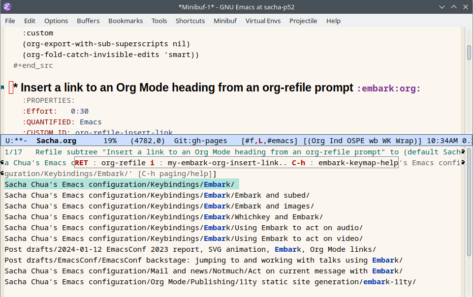
Let's make it work for org-heading too, like what we get from M-x consult-org-heading:
(with-eval-after-load 'consult-org
(keymap-set embark-org-heading-map "L" #'embark-org-insert-link-to))
There are more Embark shortcuts in my Embark configuration.
Org - mapping blog posts and image URLs from bulk exports image
(defun my-org-map-blog-and-image-urls ()
"Extract and map blog post / image URLs."
(interactive)
(goto-char (point-min))
(keep-lines "h2\\|img")
(goto-char (point-min))
(while (re-search-forward
"^.*?h2.*?a href=\"\\(.*?\\)\".*$" nil t)
(replace-match "\\1"))
(goto-char (point-min))
(while (re-search-forward
"^.*?src=\"\\(.*?\\)\".*$" nil t)
(replace-match "\\1"))
(let (last-post current-url result)
(goto-char (point-min))
(while (re-search-forward "http://\\(.*\\)" nil t)
(setq current-url (match-string 0))
(if (string-match "/\\([^/]*?\\)\\(_thumb\\|-640x.*\\)?.png" current-url)
(setq result (cons (concat (match-string 1 current-url) "\t" last-post) result))
(setq last-post current-url)))
(kill-new (mapconcat 'identity result "\n"))))
Move Org Mode properties from subtree to parent
Sometimes I set Org properties on a subtree when I meant to set them on the parent heading. This function moves all the properties up one level.
(defun my-org-move-properties-to-parent ()
(interactive)
(let ((properties (org-entry-properties (point) 'standard)))
;; delete properties from the current entry
(mapc (lambda (prop)
(unless (string= (car prop) "CATEGORY") (org-entry-delete (point) (car prop))))
properties)
;; add properties
(outline-up-heading 1)
(mapc (lambda (prop)
(org-entry-put (point) (car prop) (cdr prop)))
properties)))
My files
Here are the Org files I use. I should probably organize them better. =)
| organizer.org | My main Org file. Inbox for M-x org-capture, tasks, weekly reviews, etc. |
| news.org | inbox for Emacs News |
| business.org | Business-related notes and TODOs |
| people.org | People-related tasks |
| evil-plans/index.org | High-level goals |
| sharing/index.org | Things to write about |
| decisions.org | Pending, current, and reviewed decisions |
| blog.org | Topic index for my blog |
| learning.org | Learning plan |
| outline.org | Huge outline of notes by category |
| tracking.org | Temporary Org file for tracking various things |
| delegation.org | Templates for assigning tasks - now using Google Docs instead |
| books.org | Huge file with book notes |
| calendar.org | Now using this with org-gcal |
| ideal.org | Planning ideal days |
| archive.org | Archived subtrees |
| latin.org | Latin notes |
| 101things.org | Old goals for 101 things in 1001 days |
| life.org | Questions, processes, tools |
| sewing.org | Sewing projects, fabric tracking, etc. |
Modules
Org has a whole bunch of optional modules. These are the ones I'm currently experimenting with.
(setq org-modules '(org-habit
org-mouse
org-protocol
org-annotate-file
ol-info
org-expiry
org-interactive-query
org-collector
org-panel
org-screen
org-toc))
(eval-after-load 'org
'(org-load-modules-maybe t))
;; Prepare stuff for org-export-backends
(setq org-export-backends '(org latex icalendar html ascii))
Keyboard shortcuts
(bind-key "C-c r" 'org-capture)
(bind-key "C-c a" 'org-agenda)
(bind-key "C-c l" 'org-store-link)
(bind-key "C-c L" 'org-insert-link-global)
(bind-key "C-c O" 'org-open-at-point-global)
append-next-kill is more useful to me than org-table-copy-region.
(with-eval-after-load 'org
(bind-key "C-M-w" 'append-next-kill org-mode-map)
(bind-key "C-TAB" 'org-cycle org-mode-map)
(bind-key "C-c v" 'org-show-todo-tree org-mode-map)
(bind-key "C-c C-r" 'org-refile org-mode-map)
(bind-key "C-c R" 'org-reveal org-mode-map)
(bind-key "C-c d" 'my-org-move-line-to-destination org-mode-map)
(bind-key "C-c t s" 'my-split-sentence-and-capitalize org-mode-map)
(bind-key "C-c t -" 'my-split-sentence-delete-word-and-capitalize org-mode-map)
(bind-key "C-c t d" 'my-delete-word-and-capitalize org-mode-map)
(bind-key "C-c C-p C-p" 'my-org-publish-maybe org-mode-map)
(bind-key "C-c C-r" 'my-org-refile-and-jump org-mode-map))
I don't use the diary, but I do use the clock a lot.
(with-eval-after-load 'org-agenda
(bind-key "i" 'org-agenda-clock-in org-agenda-mode-map))
Speed commands
Org Mode: Cutting the current list item (including nested lists) with a speed command
: Limited my-org-cut-subtree-or-list-item to Inbox.org, posts.org, news.org.
Defining shortcuts in org-speed-commands is
handy because you can use these single-key
shortcuts at the beginning of a subtree. With a
little modification, they'll also work at the
beginning of list items.
(defun my-org-use-speed-commands-for-headings-and-lists ()
"Activate speed commands on list items too."
(or (and (looking-at org-outline-regexp) (looking-back "^\**" nil))
(save-excursion (and (looking-at (org-item-re)) (looking-back "^[ \t]*" nil)))))
(setq org-use-speed-commands 'my-org-use-speed-commands-for-headings-and-lists)
I want k to be an org-speed-commands that cuts
the current subtree or list item. This is handy
when I'm cleaning up the Mastodon toots in my
weekly review or getting rid of outline items that
I no longer need. By default, k is mapped to
org-cut-subtree, but it's easy to override.
(defun my-org-cut-subtree-or-list-item (&optional n)
"Cut current subtree or list item."
(cond
; limit this to certain files
((not (string-match (regexp-opt '("Inbox.org" "posts.org" "news.org" "ipad.org"))
(or (buffer-file-name) "")))
(message "Let's only cut things in inboxes")) ; do nothing
((and (looking-at org-outline-regexp) (looking-back "^\**" nil))
(org-cut-subtree n))
((looking-at (org-item-re))
(kill-region (org-beginning-of-item) (org-end-of-item)))))
(with-eval-after-load 'org
(setf (alist-get "k" org-speed-commands nil nil #'string=)
#'my-org-cut-subtree-or-list-item))
So now, if I put my cursor before "1." below and press k:
- this
1. is a
- nested
2. list
- with levels
it will turn into:
- this
- list
- with levels
You can find out a little more about Org Mode speed commands in the Org manual: (info "(org) Speed Keys").
Other speed commands
(setq org-use-effective-time t)
(defun my-org-goto-text-start ()
(if (org-before-first-heading-p)
(goto-char (point-min))
(org-back-to-heading)
(org-end-of-meta-data t)))
(defun my-org-subtree-text ()
(if (derived-mode-p 'org-mode)
(if (org-before-first-heading-p)
(buffer-substring (point-min)
(save-excursion
(org-next-visible-heading)
(line-beginning-position)))
(save-excursion
(buffer-substring (save-excursion (org-end-of-meta-data t) (point))
(org-end-of-subtree))))
(buffer-string)))
(defun my-org-copy-subtree-text ()
(interactive)
(kill-new (my-org-subtree-text)))
(defun my-org-mark-done ()
(interactive)
(my-org-with-current-task (org-todo "DONE")))
(defun my-org-mark-done-and-add-to-journal (&optional note category)
(interactive (list (if current-prefix-arg
(read-string (format "Note (%s): " (org-get-heading t t t t)))
(org-get-heading t t t t))
(or (org-entry-get (point) "JOURNAL_CAT") (my-journal-read-category (my-journal-guess-category)))))
(my-org-with-current-task
(org-todo "DONE")
(org-entry-put (point) "JOURNAL_CAT" category)
(let* ((title (or note (org-get-heading t t t t)))
(zid (org-entry-get (point) "ZIDSTRING"))
(other (if current-prefix-arg (substring-no-properties (my-org-subtree-text))))
(date (unless zid
(format-time-string "%Y-%m-%d %H:%M"
(let ((base-date (org-read-date nil t (org-entry-get (point) "CREATED"))))
(if (string-match "Yesterday " title)
(progn
(setq title (replace-match "" nil nil title))
(org-read-date nil t "--1" nil (org-time-string-to-time (org-entry-get (point) "CREATED"))))
base-date))))))
(if zid
(my-journal-update (list :ZIDString zid :Note title :Category category :Other other))
(org-entry-put (point) "ZIDSTRING"
(plist-get
(my-journal-post title
:Category category
:Other other
:Date date)
:ZIDString)))
(org-back-to-heading)
(my-copy-observation))))
(with-eval-after-load 'org
(let ((listvar (if (boundp 'org-speed-commands) 'org-speed-commands
'org-speed-commands-user)))
(add-to-list listvar '("A" org-archive-subtree-default))
(add-to-list listvar '("x" org-todo "DONE"))
(add-to-list listvar '("X" call-interactively 'my-org-mark-done-and-add-to-journal))
(add-to-list listvar '("y" org-todo-yesterday "DONE"))
(add-to-list listvar '("!" my-org-clock-in-and-track))
(add-to-list listvar '("s" call-interactively 'org-schedule))
(add-to-list listvar '("d" my-org-move-line-to-destination))
(add-to-list listvar '("i" call-interactively 'org-clock-in))
(add-to-list listvar '("o" call-interactively 'org-clock-out))
(add-to-list listvar '("$" call-interactively 'org-archive-subtree)))
(bind-key "!" 'my-org-clock-in-and-track org-agenda-mode-map))
Taking notes
(setq org-directory "~/sync/orgzly/")
(setq org-default-notes-file "~/sync/orgzly/organizer.org")
Date trees
This quickly adds a same-level heading for the succeeding day.
(defun my-org-insert-heading-for-next-day ()
"Insert a same-level heading for the following day."
(interactive)
(let ((new-date
(seconds-to-time
(+ 86400.0
(float-time
(org-read-date nil 'to-time (elt (org-heading-components) 4)))))))
(org-insert-heading-after-current)
(insert (format-time-string "%Y-%m-%d\n\n" new-date))))
Templates
I use org-capture templates to quickly jot down tasks, ledger
entries, notes, and other semi-structured pieces of information.
(defun my-org-contacts-template-email (&optional return-value)
"Try to return the contact email for a template.
If not found return RETURN-VALUE or something that would ask the user."
(eval-when-compile (require 'gnus-art nil t))
(eval-when-compile (require 'org-contacts nil t))
(or (cadr (if (gnus-alive-p)
(gnus-with-article-headers
(mail-extract-address-components
(or (mail-fetch-field "Reply-To") (mail-fetch-field "From") "")))))
return-value
(concat "%^{" org-contacts-email-property "}p")))
(defvar my-org-basic-task-template "* TODO %^{Task}
:PROPERTIES:
:Effort: %^{effort|1:00|0:05|0:15|0:30|2:00|4:00}
:END:
Captured %<%Y-%m-%d %H:%M>
%?
%i
" "Basic task data")
(defvar my-ledger-file "~/cloud/ledger/current.ledger")
(with-eval-after-load 'org-capture
(setq org-capture-templates
(seq-uniq
(append
`(("r" "Note" entry
(file ,my-org-inbox-file)
"* %?\n:PROPERTIES:\n:CREATED: %U\n:END:\n\n%i\n\n- %a"
:prepend t)
("t" "Task with annotation" entry
(file ,my-org-inbox-file)
"* TODO %?\n:PROPERTIES:\n:CREATED: %U\n:END:\n%a\n"
:prepend t)
("i" "Interrupting task" entry
(file ,my-org-inbox-file)
"* STARTED %^{Task}\n:PROPERTIES:\n:CREATED: %U\n:END:\n%a\n"
:clock-in :clock-resume
:prepend t)
("T" "Task without annotation" entry
(file ,my-org-inbox-file)
"* TODO %^{Task}\n:PROPERTIES:\n:CREATED: %U\n:END:\n\n"
:prepend t)
;; From https://takeonrules.com/2022/10/16/adding-another-function-to-my-workflow/
("c" "Contents to current clocked task"
plain (clock)
"%i%?\n%a"
:empty-lines 1)
;; ("p" "Podcast log - timestamped" item
;; (file+olp+datetree "~/sync/orgzly/timestamped.org")
;; "%<%H:%M:%S,%3N> %^{Note}"
;; :immediate-finish t)
;; ("b" "Plover note" table-line
;; (file+headline "~/proj/plover-notes/README.org" "Brief notes")
;; "| %^{Stroke} | %^{Translation} | %^{Note} |"
;; :immediate-finish t)
;; ("c" "Plover review from clippy" table-line
;; (file+headline "~/proj/plover-notes/README.org" "For review")
;; "%(let ((last (my-clippy-last))) (format \"| %s | %s |\" (car last) (cdr last)))"
;; :immediate-finish t)
("." "Today" entry
(file ,my-org-inbox-file)
"* TODO %^{Task}\nSCHEDULED: %t\n:PROPERTIES:\n:CREATED: %U\n:END:\n"
:immediate-finish t)
("v" "Video" entry
(file ,my-org-inbox-file)
"* TODO %^{Task} :video:\nSCHEDULED: %t\n"
:immediate-finish t)
("e" "Errand" entry
(file ,my-org-inbox-file)
"* TODO %^{Task} :errands:\n:PROPERTIES:\n:CREATED: %U\n:END:\n"
:immediate-finish t)
("n" "Note" entry
(file ,my-org-inbox-file)
"* %^{Note}\n:PROPERTIES:\n:CREATED: %U\n:END:\n"
:immediate-finish t)
("N" "Note" entry
(file ,my-org-inbox-file)
"* %^{Note}\n:PROPERTIES:\n:CREATED: %U\n:END:\n"
:prepend t)
("s" "Selection from browser" entry
(file ,my-org-inbox-file)
"* %a :website:\n:PROPERTIES:\n:CREATED: %U\n:END:\n#+begin_quote\n%i\n#+end_quote\n\n%?\n"
:prepend t)
("S" "Screenshot" entry
(file ,my-org-inbox-file)
"* %^{Note}\n:PROPERTIES:\n:CREATED: %U\n:END:\n\n[[file:%(my-latest-screenshot)]]\n"
:prepend t)
("b" "Business task" entry
(file+headline "~/personal/business.org" "Tasks")
,my-org-basic-task-template)
("j" "Journal entry" plain
(file+olp+datetree "~/sync/orgzly/journal.org")
"%K - %a\n%i\n%?\n"
:unnarrowed t)
("db" "Done - Business" entry
(file+headline "~/personal/business.org" "Tasks")
"* DONE %^{Task}\nSCHEDULED: %^t\n%?")
("dp" "Done - People" entry
(file+headline "~/personal/people.org" "Tasks")
"* DONE %^{Task}\nSCHEDULED: %^t\n%?")
("dt" "Done - Task" entry
(file+headline "~/sync/orgzly/organizer.org" "Inbox")
"* DONE %^{Task}\nSCHEDULED: %^t\n%?")
("q" "Quick note" item
(file+headline "~/sync/orgzly/organizer.org" "Quick notes"))
("l" "Ledger")
("lc" "Cash expense" plain
(file ,my-ledger-file)
"%(ledger-read-date \"Date: \") * %^{Payee}
Expenses:Cash
Expenses:%^{Account} %^{Amount}
")
("lb" "BDO CAD" plain
(file ,my-ledger-file)
"%(ledger-read-date \"Date: \") * %^{Payee}
Expenses:Play $ %^{Amount}
Assets:BDO
")
("lp" "BDO PHP" plain
(file ,my-ledger-file)
"%(ledger-read-date \"Date: \") * %^{Payee}
Expenses:Play PHP %^{Amount}
Assets:BDO
")
("B" "Book" entry
(file+olp+datetree "~/personal/books.org" "Inbox")
"* %^{Title} %^g
%i
*Author(s):* %^{Author} \\\\
*ISBN:* %^{ISBN}
%?
*Review on:* %^t \\
%a
%U"
:clock-in :clock-resume)
("C" "Contact" entry (file "~/sync/orgzly/people.org")
"* %(org-contacts-template-name)
:PROPERTIES:
:EMAIL: %(my-org-contacts-template-email)
:END:")
("w" "Web" entry (file "~/sync/orgzly/Inbox.org")
"* %a
:PROPERTIES:
:CREATED: %U
:END:
%i
")
("W" "Web bookmark" entry (file "~/sync/orgzly/resources.org")
"* %a
:PROPERTIES:
:CREATED: %U
:END:
%i
"
:prepend t)
("y" "Yay Emacs" entry (file+headline "~/proj/stream/index.org" "Notes for this session")
"* %?\n:PROPERTIES:\n:CREATED: %U\n:END:\n
%i
%a
"))
org-capture-templates))))
(bind-key "C-M-r" 'org-capture)
;;(bind-key (kbd "<f5>") 'org-capture)
Allow refiling in the middle(ish) of a capture
This lets me use C-c C-r to refile a capture and then jump to the
new location. I wanted to be able to file tasks under projects so that
they could inherit the QUANTIFIED property that I use to track time
(and any Beeminder-related properties too), but I also wanted to be
able to clock in on them.
(defun my-org-refile-and-jump ()
(interactive)
(if (derived-mode-p 'org-capture-mode)
(org-capture-refile)
(call-interactively 'org-refile))
(org-refile-goto-last-stored))
(eval-after-load 'org-capture
'(bind-key "C-c C-r" 'my-org-refile-and-jump org-capture-mode-map))
Try out this capture command
From https://takeonrules.com/2022/10/16/adding-another-function-to-my-workflow/
(use-package git-link :defer t)
(bind-key "C-c c" 'jf/capture-region-contents-with-metadata)
(defun jf/capture-region-contents-with-metadata (start end parg)
"Write selected text between START and END to currently clocked `org-mode' entry.
With PARG kill the content instead."
(interactive "r\nP")
(let ((text (jf/region-contents-get-with-metadata start end)))
(if (car parg)
(kill-new text)
(org-capture-string (concat "-----\n" text) "c"))))
(defun jf/region-contents-get-with-metadata (start end)
"Get the region contents between START and END and return an `org-mode' formatted string."
(require 'magit)
(require 'git-link)
(let* ((file-name (buffer-file-name (current-buffer)))
(org-src-mode (replace-regexp-in-string
"-mode"
""
(format "%s" major-mode)))
(func-name (which-function))
(type (if (derived-mode-p 'prog-mode) "SRC" "EXAMPLE"))
(code-snippet (buffer-substring-no-properties start end))
(file-base (file-name-nondirectory file-name))
(line-number (line-number-at-pos (region-beginning)))
(remote-link (when (magit-list-remotes)
(progn
(call-interactively 'git-link)
(car kill-ring))))
(initial-txt (if (null func-name)
(format "From [[file:%s::%s][%s]]:"
file-name
line-number
file-base)
(format "From ~%s~ (in [[file:%s::%s][%s]]):"
func-name
file-name
line-number
file-base))))
(format (concat "\n- Local :: %s"
(when remote-link (format "\n- Remote :: %s" remote-link))
"\n\n#+BEGIN_%s %s"
"\n%s"
"\n#+END_%s\n")
initial-txt
type
org-src-mode
code-snippet
type)))
Estimating WPM
I'm curious about how fast I type some things.
(require 'org-clock)
(defun my-org-entry-wpm ()
(interactive)
(save-restriction
(save-excursion
(org-narrow-to-subtree)
(goto-char (point-min))
(let* ((words (count-words-region (point-min) (point-max)))
(minutes (org-clock-sum-current-item))
(wpm (/ words minutes)))
(message "WPM: %d (words: %d, minutes: %d)" wpm words minutes)
(kill-new (number-to-string wpm))))))
Logbook
(defun my-org-log-note (note)
"Add NOTE to the current entry's logbook."
(interactive "MNote: ")
(setq org-log-note-window-configuration (current-window-configuration))
(move-marker org-log-note-return-to (point))
(move-marker org-log-note-marker (point))
(setq org-log-note-purpose 'note)
(with-temp-buffer
(insert note)
(org-store-log-note)))
Tasks
Managing tasks
Get things to be set to TODO when they repeat
I use STARTED to keep track of things I've started working on, and this is updated when I clock into the task. If I have a repeating task, I want the task to be automatically reset to TODO.
(setq org-todo-repeat-to-state "TODO")
Track TODO state
The parentheses indicate keyboard shortcuts that I can use to set the
task state. @ and ! toggle logging. @ prompts you for a note,
and ! automatically logs the timestamp of the state change.
(setq org-todo-keywords
'((sequence
"STARTED(s)"
"TODO(t)" ; next action
"TOBLOG(b)"
"WAITING(w@/!)"
"READY(r)"
"SOMEDAY(.)" "BLOCKED(k@/!)" "|" "DONE(x!)" "CANCELLED(c)")
(sequence "PROJECT" "|" "DONE(x)")
(sequence "LEARN" "TRY" "TEACH" "|" "COMPLETE(x)")
(sequence "TOSKETCH" "SKETCHED" "|" "POSTED")
(sequence "TOBUY" "TOSHRINK" "TOCUT" "TOSEW" "|" "DONE(x)")
(sequence "TODELEGATE(-)" "DELEGATED(d)" "|" "COMPLETE(x)")))
(setq org-log-done 'time)
TODO Change Org Mode TODO keyword color based on the state and the current Modus theme
I use modus-theme-toggle to switch between
modus-vivendi-tinted and modus-operandi-tinted
depending on whether I want a dark background or a
light one. I also customize my
org-todo-keyword-faces to visually distinguish
TODO, DONE, WAITING, and SOMEDAY. This is how to
colour them based on the current Modus theme.
(defun my-org-todo-set-keyword-faces ()
(setq org-todo-keyword-faces
`(("TODO" . (:foreground ,(modus-themes-get-color-value 'blue-warmer) :weight bold))
("DONE" . (:foreground ,(modus-themes-get-color-value 'green-warmer) :weight bold))
("WAITING" . (:foreground ,(modus-themes-get-color-value 'red-warmer) :weight bold))
("SOMEDAY" . (:foreground ,(modus-themes-get-color-value 'fg-dim) :weight bold))))
(when (derived-mode-p 'org-mode)
(font-lock-fontify-buffer)))
(with-eval-after-load 'modus-themes
(add-hook 'modus-themes-after-load-theme-hook #'my-org-todo-set-keyword-faces))
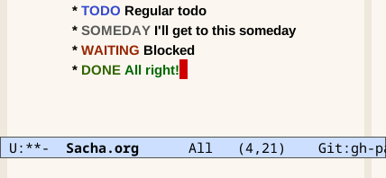
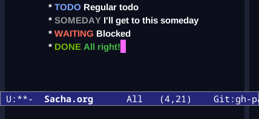
Projects
Projects are headings with the :project: tag, so we generally don't
want that tag inherited, except when we display unscheduled tasks that
don't belong to any projects.
(setq org-tags-exclude-from-inheritance '("project" "inboxtarget"))
This code makes it easy for me to focus on one project and its tasks.
(with-eval-after-load 'org
(let ((listvar (if (boundp 'org-speed-commands) 'org-speed-commands
'org-speed-commands-user)))
(add-to-list listvar '("N" org-narrow-to-subtree))
(add-to-list listvar '("W" widen))
(add-to-list listvar '("T" my-org-agenda-for-subtree))
(add-to-list listvar '("b" my-org-bounce-to-file))))
(defun my-org-agenda-for-subtree ()
(interactive)
(when (derived-mode-p 'org-agenda-mode) (org-agenda-switch-to))
(my-org-with-current-task
(let ((org-agenda-view-columns-initially t))
(org-agenda nil "t" 'subtree))))
There's probably a proper way to do this, maybe with <. Oh, that would work nicely. < C-c a t too.
And sorting:
(with-eval-after-load 'org
(let ((listvar (if (boundp 'org-speed-commands) 'org-speed-commands
'org-speed-commands-user)))
(add-to-list listvar '("S" call-interactively 'org-sort))))
Tag tasks with GTD-ish contexts
This defines keyboard shortcuts for those, too.
(setq org-tag-alist '(("work" . ?b)
("home" . ?h)
("writing" . ?w)
("errands" . ?e)
("drawing" . ?d)
("coding" . ?c)
("video" . ?v)
("kaizen" . ?k)
("phone" . ?p)
("learning" . ?a)
("reading" . ?r)
("computer" . ?l)
("quantified" . ?q)
("shopping" .?s)
("focus" . ?f)))
Enable filtering by effort estimates
That way, it's easy to see short tasks that I can finish.
(add-to-list 'org-global-properties
'("Effort_ALL". "0:05 0:15 0:30 1:00 2:00 3:00 4:00"))
Track time
(use-package org
:init
(progn
(setq org-expiry-inactive-timestamps t)
(setq org-clock-idle-time nil)
(setq org-log-done 'time)
(setq org-clock-auto-clock-resolution nil)
(setq org-clock-continuously nil)
(setq org-clock-persist t)
(setq org-clock-in-switch-to-state "STARTED")
(setq org-clock-in-resume nil)
(setq org-show-notification-handler 'message)
(setq org-clock-report-include-clocking-task t))
:config
(org-clock-persistence-insinuate))
Too many clock entries clutter up a heading.
(setq org-log-into-drawer "LOGBOOK")
(setq org-clock-into-drawer 1)
Habits
I like using org-habits to track consistency. My task names tend to be a bit long, though, so I've configured the graph column to show a little bit more to the right.
(setq org-habit-graph-column 80)
(setq org-habit-show-habits-only-for-today nil)
If you want to use habits, be sure to schedule your tasks and add a STYLE property with the value of habit to the tasks you want displayed.
Estimating tasks
From "Add an effort estimate on the fly when clocking in" on the Org Hacks page:
(add-hook 'org-clock-in-prepare-hook
'my-org-mode-ask-effort)
(defun my-org-mode-ask-effort ()
"Ask for an effort estimate when clocking in."
(unless (org-entry-get (point) "Effort")
(let ((effort
(completing-read
"Effort: "
(org-entry-get-multivalued-property (point) "Effort"))))
(unless (equal effort "")
(org-set-property "Effort" effort)))))
Flexible scheduling of tasks
I (theoretically) want to be able to schedule tasks for dates like the first Saturday of every month. Fortunately, someone else has figured that out!
;; Get this from https://raw.github.com/chenfengyuan/elisp/master/next-spec-day.el
(load "~/elisp/next-spec-day.el" t)
Task dependencies
(setq org-enforce-todo-dependencies t)
(setq org-track-ordered-property-with-tag t)
(setq org-agenda-dim-blocked-tasks t)
Quick way to archive all DONE from inbox emacs computer
(defun my-org-clean-up-inbox ()
"Archive all DONE tasks and sort the remainder by TODO order."
(interactive)
(with-current-buffer (find-file my-org-inbox-file)
(my-org-archive-done-tasks 'file)
(goto-char (point-min))
(if (org-at-heading-p) (save-excursion (insert "\n")))
(org-sort-entries nil ?p)
(goto-char (point-min))
(org-sort-entries nil ?o)
(save-buffer)))
(defun my-org-archive-done-tasks (&optional scope)
"Archive finished or cancelled tasks.
SCOPE can be 'file or 'tree."
(interactive)
(org-map-entries
(lambda ()
(org-archive-subtree)
(setq org-map-continue-from (outline-previous-heading)))
"TODO=\"DONE\"|TODO=\"CANCELLED\"" (or scope (if (org-before-first-heading-p) 'file 'tree))))
Strike through DONE headlines
I wanted a quick way to visually distinguish DONE tasks from tasks I still need to do. This handy snippet from the Emacs Org-mode mailing list does the trick by striking through the headlines for DONE tasks.
(setq org-fontify-done-headline t)
(custom-set-faces
'(org-done ((t (:foreground "PaleGreen"
:weight normal
:strike-through t))))
'(org-headline-done
((((class color) (min-colors 16) (background dark))
(:foreground "LightSalmon" :strike-through t)))))
Checklists
https://orgmode.org/worg/org-contrib/org-checklist.html
(with-eval-after-load 'org
(require 'org-checklist))
Templates
Structure templates
Org makes it easy to insert blocks by typing <s[TAB], etc.
I hardly ever use LaTeX, but I insert a lot of Emacs Lisp blocks, so I
redefine <l to insert a Lisp block instead.
(setq org-structure-template-alist
'(("a" . "export ascii")
("C" . "center")
("c" . "comment")
("d" . "my_details")
("e" . "example")
("E" . "export")
("m" . "export md")
("M" . "media-post")
("h" . "export html")
("j" . "src js :spookfox t")
("l" . "src emacs-lisp")
("p" . "src python")
("n" . "notes")
("q" . "quote")
("s" . "src")
("S" . "src sh")
("u" . "update")
("v" . "verse")))
This lets me nest quotes. http://emacs.stackexchange.com/questions/2404/exporting-org-mode-nested-blocks-to-html
(defun my-org-html-quote2 (block backend info)
(when (org-export-derived-backend-p backend 'html)
(when (string-match "\\`<div class=\"quote2\">" block)
(setq block (replace-match "<blockquote>" t nil block))
(string-match "</div>\n\\'" block)
(setq block (replace-match "</blockquote>\n" t nil block))
block)))
(eval-after-load 'ox
'(add-to-list 'org-export-filter-special-block-functions 'my-org-html-quote2))
Demarcate, but for all blocks emacs config
I often want to split an Org Mode block so that I can add stuff in between. This code is based on https://scripter.co/splitting-an-org-block-into-two/ .
(defun modi/org-split-block ()
"Sensibly split the current Org block at point."
(interactive)
(if (modi/org-in-any-block-p)
(save-match-data
(save-restriction
(widen)
(let ((case-fold-search t)
(at-bol (bolp))
block-start
block-end)
(save-excursion
(re-search-backward "^\\(?1:[[:blank:]]*#\\+begin_.+?\\)\\(?: .*\\)*$" nil nil 1)
(setq block-start (match-string-no-properties 0))
(setq block-end (replace-regexp-in-string
"begin_" "end_" ;Replaces "begin_" with "end_", "BEGIN_" with "END_"
(match-string-no-properties 1))))
;; Go to the end of current line, if not at the BOL
(unless at-bol
(end-of-line 1))
(insert (concat (if at-bol "" "\n")
block-end
"\n\n"
block-start
(if at-bol "\n" "")))
;; Go to the line before the inserted "#+begin_ .." line
(beginning-of-line (if at-bol -1 0)))))
(message "Point is not in an Org block")))
(defalias 'my-org-demarcate-block #'modi/org-split-block)
(defalias 'my-org-split-block #'modi/org-split-block)
(defun modi/org-in-any-block-p ()
"Return non-nil if the point is in any Org block.
The Org block can be *any*: src, example, verse, etc., even any
Org Special block.
This function is heavily adapted from `org-between-regexps-p'."
(save-match-data
(let ((pos (point))
(case-fold-search t)
(block-begin-re "^[[:blank:]]*#\\+begin_\\(?1:.+?\\)\\(?: .*\\)*$")
(limit-up (save-excursion (outline-previous-heading)))
(limit-down (save-excursion (outline-next-heading)))
beg end)
(save-excursion
;; Point is on a block when on BLOCK-BEGIN-RE or if
;; BLOCK-BEGIN-RE can be found before it...
(and (or (org-in-regexp block-begin-re)
(re-search-backward block-begin-re limit-up :noerror))
(setq beg (match-beginning 0))
;; ... and BLOCK-END-RE after it...
(let ((block-end-re (concat "^[[:blank:]]*#\\+end_"
(match-string-no-properties 1)
"\\( .*\\)*$")))
(goto-char (match-end 0))
(re-search-forward block-end-re limit-down :noerror))
(> (setq end (match-end 0)) pos)
;; ... without another BLOCK-BEGIN-RE in-between.
(goto-char (match-beginning 0))
(not (re-search-backward block-begin-re (1+ beg) :noerror))
;; Return value.
(cons beg end))))))
Emacs chats, Emacs hangouts
(defun my-org-link-youtube-time (url beg end)
"Link times of the form h:mm to YouTube video at URL.
Works on region defined by BEG and END."
(interactive (list (read-string "URL: " (org-entry-get-with-inheritance "YOUTUBE")) (point) (mark)))
(save-excursion
(save-restriction
(narrow-to-region beg end)
(goto-char (point-min))
(let ((char (if (string-match "\\?" url) "&" "?")))
(while (re-search-forward "\\(\\([0-9]+\\):\\([0-9]+\\)\\(:\\([0-9]+\\)\\)?\\) ::" nil t)
(replace-match
(format "[[%s%st=%sh%sm%ss][%s]] "
url
char
(match-string 2)
(match-string 3)
(or (match-string 5) "0")
(match-string 1)) nil t))))))
(defun my-clean-up-google-hangout-chat ()
(interactive)
(save-excursion
(while (re-search-forward "<hr.*?div class=\"Kc-Ma-m\".*?>" nil t)
(replace-match "\n| ")))
(save-excursion
(while (re-search-forward "</div><div class=\"Kc-yi-m\">" nil t)
(replace-match " | ")))
(save-excursion
(while (re-search-forward "</div></div><div class=\"Kc-ib\">" nil t)
(replace-match " | ")))
(save-excursion
(while (re-search-forward "<a rel=\"nofollow\" target=\"_blank\" href=\"\\(.*?\\)\">\\(.*?\\)</a>" nil t)
(replace-match "[[\\1][\\2]]")))
(save-excursion
(while (re-search-forward "</div></div></div></div>" nil t)
(replace-match " |")))
(save-excursion
(while (re-search-forward " " nil t)
(replace-match " ")))
(save-excursion
(while (re-search-forward "</div><div class=\"Kc-ib\">" nil t)
(replace-match " ")))
(save-excursion
(while (re-search-forward "<img.*?>" nil t)
(replace-match "")))
(save-excursion
(while (re-search-forward "<wbr>" nil t)
(replace-match "")))
)
Org agenda
Basic configuration
I have quite a few Org files, but I keep my agenda items and TODOs in only a few of them them for faster scanning.
(defvar my-kid-org-file nil "Defined in secrets")
(setq org-agenda-files
(delq nil
(mapcar (lambda (x) (and x (file-exists-p x) x))
`("~/sync/orgzly/organizer.org"
"~/sync/orgzly/ipad.org"
"~/sync/orgzly/Inbox.org"
"~/sync/orgzly/garden.org"
"~/sync/orgzly/decisions.org"
"~/sync/orgzly/computer-inbox.org"
"~/sync/orgzly/posts.org"
"~/sync/orgzly/crafts.org"
"~/sync/emacs/Sacha.org"
"~/proj/emacsconf/wiki/2025/organizers-notebook/index.org"
"~/proj/emacsconf/wiki/organizers-notebook/index.org"
"~/proj/stream/index.org"
"~/proj/plover-notes/README.org"
"~/personal/sewing.org"
"~/sync/orgzly/people.org"
"~/sync/orgzly/business.org"
"~/Dropbox/wsmef/trip.txt"
,my-kid-org-file
"~/personal/orgzly.org"
"~/personal/calendar.org"
"~/Dropbox/tasker/summary.txt"
"~/Dropbox/public/sharing/index.org"
"~/dropbox/public/sharing/learning.org"
"~/proj/emacs-notes/tasks.org"
"~/proj/sachac.github.io/evil-plans/index.org"
"~/sync/orgzly/cooking.org"
"~/sync/orgzly/routines.org"))))
(setq org-agenda-dim-blocked-tasks nil)
(add-to-list 'auto-mode-alist '("\\.txt$" . org-mode))
I like looking at two days at a time when I plan using the Org agenda. I want to see my log entries, but I don't want to see scheduled items that I've finished. I like seeing a time grid so that I can get a sense of how appointments are spread out.
(setq org-agenda-span 2)
(setq org-agenda-tags-column -100) ; take advantage of the screen width
(setq org-agenda-sticky nil)
(setq org-agenda-inhibit-startup t)
(setq org-agenda-use-tag-inheritance t)
(setq org-agenda-show-log t)
(setq org-agenda-skip-scheduled-if-done t)
(setq org-agenda-skip-deadline-if-done t)
(setq org-agenda-skip-deadline-prewarning-if-scheduled 'pre-scheduled)
(setq org-agenda-time-grid
'((daily today require-timed)
(800 1000 1200 1400 1600 1800 2000)
"......" "----------------"))
(setq org-columns-default-format "%14SCHEDULED %Effort{:} %1PRIORITY %TODO %50ITEM %TAGS")
Some other keyboard shortcuts:
(bind-key "Y" 'org-agenda-todo-yesterday org-agenda-mode-map)
Starting my weeks on Saturday
I like looking at weekends as week beginnings instead, so I want the Org agenda to start on Saturdays.
(setq org-agenda-start-on-weekday 6)
Display projects with associated subtasks
I wanted a view that showed projects with a few subtasks underneath them. Here's a sample of the output:
Headlines with TAGS match: +PROJECT
Press `C-u r' to search again with new search string
organizer: Set up communication processes for Awesome Foundation Toronto
organizer: TODO Announce the next pitch night
organizer: TODO Follow up with the winner of the previous pitch night for any news to include in the updates
organizer: Tidy up the house so that I can find things quickly
organizer: TODO Inventory all the things in closets and boxes :@home:
organizer: TODO Drop things off for donation :@errands:
organizer: Learn how to develop for Android devices
(defun my-org-agenda-project-agenda ()
"Return the project headline and up to `org-agenda-max-entries' tasks."
(save-excursion
(let* ((marker (org-agenda-new-marker))
(heading
(org-agenda-format-item "" (org-get-heading) (org-get-category) nil))
(org-agenda-restrict t)
(org-agenda-restrict-begin (point))
(org-agenda-restrict-end (org-end-of-subtree 'invisible))
;; Find the TODO items in this subtree
(list (org-agenda-get-day-entries (buffer-file-name) (calendar-current-date) :todo)))
(org-add-props heading
(list 'face 'defaults
'done-face 'org-agenda-done
'undone-face 'default
'mouse-face 'highlight
'org-not-done-regexp org-not-done-regexp
'org-todo-regexp org-todo-regexp
'org-complex-heading-regexp org-complex-heading-regexp
'help-echo
(format "mouse-2 or RET jump to org file %s"
(abbreviate-file-name
(or (buffer-file-name (buffer-base-buffer))
(buffer-name (buffer-base-buffer))))))
'org-marker marker
'org-hd-marker marker
'org-category (org-get-category)
'type "tagsmatch")
(concat heading "\n"
(org-agenda-finalize-entries list)))))
(defun my-org-agenda-projects-and-tasks (match)
"Show TODOs for all `org-agenda-files' headlines matching MATCH."
(interactive "MString: ")
(let ((todo-only nil))
(if org-agenda-overriding-arguments
(setq todo-only (car org-agenda-overriding-arguments)
match (nth 1 org-agenda-overriding-arguments)))
(let* ((org-tags-match-list-sublevels
org-tags-match-list-sublevels)
(completion-ignore-case t)
rtn rtnall files file pos matcher
buffer)
(when (and (stringp match) (not (string-match "\\S-" match)))
(setq match nil))
(when match
(setq matcher (org-make-tags-matcher match)
match (car matcher) matcher (cdr matcher)))
(catch 'exit
(if org-agenda-sticky
(setq org-agenda-buffer-name
(if (stringp match)
(format "*Org Agenda(%s:%s)*"
(or org-keys (or (and todo-only "M") "m")) match)
(format "*Org Agenda(%s)*" (or (and todo-only "M") "m")))))
(org-agenda-prepare (concat "TAGS " match))
(org-compile-prefix-format 'tags)
(org-set-sorting-strategy 'tags)
(setq org-agenda-query-string match)
(setq org-agenda-redo-command
(list 'org-tags-view `(quote ,todo-only)
(list 'if 'current-prefix-arg nil `(quote ,org-agenda-query-string))))
(setq files (org-agenda-files nil 'ifmode)
rtnall nil)
(while (setq file (pop files))
(catch 'nextfile
(org-check-agenda-file file)
(setq buffer (if (file-exists-p file)
(org-get-agenda-file-buffer file)
(error "No such file %s" file)))
(if (not buffer)
;; If file does not exist, error message to agenda
(setq rtn (list
(format "ORG-AGENDA-ERROR: No such org-file %s" file))
rtnall (append rtnall rtn))
(with-current-buffer buffer
(unless (derived-mode-p 'org-mode)
(error "Agenda file %s is not in `org-mode'" file))
(save-excursion
(save-restriction
(if org-agenda-restrict
(narrow-to-region org-agenda-restrict-begin
org-agenda-restrict-end)
(widen))
(setq rtn (org-scan-tags 'my-org-agenda-project-agenda matcher todo-only))
(setq rtnall (append rtnall rtn))))))))
(if org-agenda-overriding-header
(insert (org-add-props (copy-sequence org-agenda-overriding-header)
nil 'face 'org-agenda-structure) "\n")
(insert "Headlines with TAGS match: ")
(add-text-properties (point-min) (1- (point))
(list 'face 'org-agenda-structure
'short-heading
(concat "Match: " match)))
(setq pos (point))
(insert match "\n")
(add-text-properties pos (1- (point)) (list 'face 'org-warning))
(setq pos (point))
(unless org-agenda-multi
(insert "Press `C-u r' to search again with new search string\n"))
(add-text-properties pos (1- (point)) (list 'face 'org-agenda-structure)))
(org-agenda-mark-header-line (point-min))
(when rtnall
(insert (mapconcat 'identity rtnall "\n") ""))
(goto-char (point-min))
(or org-agenda-multi (org-agenda-fit-window-to-buffer))
(add-text-properties (point-min) (point-max)
`(org-agenda-type tags
org-last-args (,todo-only ,match)
org-redo-cmd ,org-agenda-redo-command
org-series-cmd ,org-cmd))
(org-agenda-finalize)
(setq buffer-read-only t)))))
Org agenda custom commands
There are quite a few custom commands here, and I often forget to use them. =) But it's good to define them, and over time, I'll get the hang of using these more!
| Key | Description |
| . | What am I waiting for? |
| T | Not really an agenda command - shows the to-do tree in the current file |
| b | Shows business-related tasks |
| o | Shows personal tasks and miscellaneous tasks (o: organizer) |
| w | Show all tasks for the upcoming week |
| W | Show all tasks for the upcoming week, aside from the routine ones |
| g … | Show tasks by context: b - business; c - coding; w - writing; p - phone; d - drawing, h - home |
| 0 | Show common contexts with up to 3 tasks each, so that I can choose what I feel like working on |
| ) (shift-0) | Show common contexts with all the tasks associated with them |
| 9 | Show common contexts with up to 3 unscheduled tasks each |
| ( (shift-9) | Show common contexts with all the unscheduled tasks associated with them |
| d | Timeline for today (agenda, clock summary) |
| u | Unscheduled tasks to do if I have free time |
| U | Unscheduled tasks that are not part of projects |
| P | Tasks by priority |
| p | My projects |
| 2 | Projects with tasks |
(bind-key "<apps> a" 'org-agenda)
(defvar my-org-agenda-contexts
'((tags-todo "phone")
(tags-todo "work")
(tags-todo "drawing")
(tags-todo "coding")
(tags-todo "writing")
(tags-todo "computer")
(tags-todo "home")
(tags-todo "errands"))
"Usual list of contexts.")
(defun my-org-agenda-skip-scheduled ()
(org-agenda-skip-entry-if 'scheduled 'deadline 'regexp "\n]+>"))
(use-package org-super-agenda
:init
(org-super-agenda-mode 1))
(use-package org-ql)
(defun my-org-projects ()
(interactive)
(org-ql-search (org-agenda-files)
'(and (todo "TODO" "WAITING") (ancestors (tags "project")))
:super-groups '((:auto-parent t))))
(setq org-agenda-custom-commands
`(("a" "Agenda"
((agenda "" ((org-agenda-span 2)))
;; (alltodo
;; ""
;; ((org-agenda-overriding-header "")
;; (org-super-agenda-groups
;; '((:name "Inbox, unscheduled"
;; :and (:scheduled nil
;; :file-path "Inbox.org"
;; )
;; :order 1)
;; (:name "Important, unscheduled"
;; :and (:priority "A"
;; :scheduled nil)
;; :order 2)
;; (:name "Project-related, unscheduled"
;; :and (:tag "project" :date nil :todo ("STARTED" "WAITING" "TODO"))
;; :order 3)
;; (:name "Waiting"
;; :and (:todo "WAITING"
;; :scheduled nil)
;; :order 4)
;; (:discard (:todo "SOMEDAY"
;; :category "cooking"
;; :date t))
;; (:name "Unscheduled"
;; :scheduled nil
;; :order 5)
;; (:discard (:anything t))
;; )
;; )))
;; (tags-todo "TODO=\"TODO\"-project-cooking-routine-errands-shopping-video-evilplans"
;; ((org-agenda-skip-function 'my-org-agenda-skip-scheduled)
;; (org-agenda-prefix-format "%-6e ")
;; (org-agenda-overriding-header "Unscheduled TODO entries: ")
;; (org-agenda-sorting-strategy '(priority-down effort-up tag-up category-keep))))
))
("e" "Emacs" tags "emacs")
("n" "Emacs News" tags "news" ((org-agenda-files '("~/sync/orgzly/Inbox.org"
"~/sync/orgzly/news.org"))))
("E" "Emacsconf" tags-todo "emacsconf"
((org-agenda-sorting-strategy '(priority-down effort-up category-keep)))
)
("i" "Inbox" alltodo ""
((org-agenda-files '("~/sync/orgzly/Inbox.org" "~/sync/orgzly/computer-inbox.org"))))
("s" tags-todo "stream"
((org-agenda-sorting-strategy '(todo-state-up priority-down effort-up))))
("t" tags-todo "-cooking"
((org-agenda-sorting-strategy '(todo-state-up priority-down effort-up))))
("T" tags-todo "TODO=\"TODO\"-goal-routine-cooking-SCHEDULED={.+}" nil "~/cloud/agenda/nonroutine.html")
("f" tags-todo "focus-TODO=\"DONE\"-TODO=\"CANCELLED\"")
("b" todo ""
((org-agenda-files '("~/sync/orgzly/business.org"))))
("B" todo ""
((org-agenda-files '("~/Dropbox/books"))))
("x" "Column view" todo "" ; Column view
((org-agenda-prefix-format "")
(org-agenda-cmp-user-defined 'my-org-sort-agenda-items-todo)
(org-agenda-view-columns-initially t)
))
;; Weekly review
("w" "Weekly review" agenda ""
((org-agenda-span 7)
(org-agenda-log-mode 1)) "~/cloud/agenda/this-week.html")
("W" "Weekly review sans routines" agenda ""
((org-agenda-span 7)
(org-agenda-log-mode 1)
(org-agenda-tag-filter-preset '("-routine"))) "~/cloud/agenda/this-week-nonroutine.html")
("2" "Bi-weekly review" agenda "" ((org-agenda-span 14) (org-agenda-log-mode 1)))
("5" "Quick tasks" tags-todo "EFFORT>=\"0:05\"&EFFORT<=\"0:15\"")
("0" "Unestimated tasks" tags-todo "EFFORT=\"\"")
("gb" "Business" todo ""
((org-agenda-files '("~/sync/orgzly/business.org"))
(org-agenda-view-columns-initially t)))
("gc" "Coding" tags-todo "@coding"
((org-agenda-view-columns-initially t)))
("gw" "Writing" tags-todo "@writing"
((org-agenda-view-columns-initially t)))
("gp" "Phone" tags-todo "@phone"
((org-agenda-view-columns-initially t)))
("gd" "Drawing" tags-todo "@drawing"
((org-agenda-view-columns-initially t)))
("gh" "Home" tags-todo "@home"
((org-agenda-view-columns-initially t)))
("gk" "Kaizen" tags-todo "kaizen"
((org-agenda-view-columns-initially t))
("~/cloud/agenda/kaizen.html"))
("ge" "Errands" tags-todo "errands"
((org-agenda-view-columns-initially t))
("~/cloud/agenda/errands.html"))
("c" "Top 3 by context"
,my-org-agenda-contexts
((org-agenda-sorting-strategy '(priority-up effort-down))
(org-agenda-max-entries 3)))
("C" "All by context"
,my-org-agenda-contexts
((org-agenda-sorting-strategy '(priority-down effort-down))
(org-agenda-max-entries nil)))
("9" "Unscheduled top 3 by context"
,my-org-agenda-contexts
((org-agenda-skip-function 'my-org-agenda-skip-scheduled)
(org-agenda-sorting-strategy '(priority-down effort-down))
(org-agenda-max-entries 3)))
("(" "All unscheduled by context"
,my-org-agenda-contexts
((org-agenda-skip-function 'my-org-agenda-skip-scheduled)
(org-agenda-sorting-strategy '(priority-down effort-down))
))
("d" "Timeline for today" ((agenda "" ))
((org-agenda-ndays 1)
(org-agenda-show-log t)
(org-agenda-log-mode-items '(clock closed))
(org-agenda-clockreport-mode t)
(org-agenda-entry-types '())))
("." "Waiting for" todo "WAITING")
("u" "Unscheduled tasks" tags-todo "-someday-TODO=\"SOMEDAY\"-TODO=\"DELEGATED\"-TODO=\"WAITING\"-project-cooking-routine"
((org-agenda-skip-function 'my-org-agenda-skip-scheduled)
(org-agenda-view-columns-initially nil)
(org-tags-exclude-from-inheritance '("project"))
(org-agenda-overriding-header "Unscheduled TODO entries: ")
(org-columns-default-format "%50ITEM %TODO %3PRIORITY %Effort{:} %TAGS")
(org-agenda-sorting-strategy '(todo-state-up priority-down effort-up tag-up category-keep))))
("!" "Someday" tags-todo "TODO=\"SOMEDAY\""
((org-agenda-skip-function 'my-org-agenda-skip-scheduled)
(org-agenda-view-columns-initially nil)
(org-tags-exclude-from-inheritance '("project"))
(org-agenda-overriding-header "Someday: ")
(org-columns-default-format "%50ITEM %TODO %3PRIORITY %Effort{:} %TAGS")
(org-agenda-sorting-strategy '(todo-state-up priority-down effort-up tag-up category-keep))))
("U" "Unscheduled tasks outside projects" tags-todo "-project-cooking-routine"
((org-agenda-skip-function 'my-org-agenda-skip-scheduled)
(org-tags-exclude-from-inheritance nil)
(org-agenda-view-columns-initially nil)
(org-agenda-overriding-header "Unscheduled TODO entries outside projects: ")
(org-agenda-sorting-strategy '(todo-state-up priority-down tag-up category-keep effort-down))))
("P" "By priority"
((tags-todo "+PRIORITY=\"A\"")
(tags-todo "+PRIORITY=\"B\"")
(tags-todo "+PRIORITY=\"\"")
(tags-todo "+PRIORITY=\"C\""))
((org-agenda-prefix-format "%-10c %-10T %e ")
(org-agenda-sorting-strategy '(priority-down tag-up category-keep effort-down))))
("pp" tags "+project-someday-TODO=\"DONE\"-TODO=\"SOMEDAY\"-inactive"
((org-tags-exclude-from-inheritance '("project"))
(org-agenda-sorting-strategy '(priority-down tag-up category-keep effort-down))))
("p." tags "+project-TODO=\"DONE\""
((org-tags-exclude-from-inheritance '("project"))
(org-agenda-sorting-strategy '(priority-down tag-up category-keep effort-down))))
("S" tags-todo "TODO=\"STARTED\"")
("C" "Cooking"
((tags "vegetables")
(tags "chicken")
(tags "beef")
(tags "pork")
(tags "other"))
((org-agenda-files '("~/sync/orgzly/cooking.org"))
(org-agenda-view-columns-initially t)
(org-agenda-sorting-strategy '(scheduled-up time-down todo-state-up)))
)
("8" "List projects with tasks" my-org-agenda-projects-and-tasks
"+PROJECT"
((org-agenda-max-entries 3)))))
Shuffling my Org Mode unscheduled tasks emacs org
I enjoyed listening to Podcast #1,029: Treat Your To-Do List Like a River, and Other Mindset Shifts for Making Better Use of Your Time | The Art of Manliness (thanks @ctietze@mastodon.social for the recommendation) and checking out the Autofocus method (main website with translations) for reviewing your TODO list without worrying too much about prioritization. I also had an opportunity to reflect on similar topics in a conversation with John Wiegley and Adam Porter about personal information management (which I'll be blogging about once John has a chance to review the draft).
This nudged me to experiment with randomizing my unscheduled task list. I'm not trying to finish everything on my list, I'm just mixing it up so that I enjoy keeping things on my radar and picking something to do. org-ql lets me create randomly-sorted views, so I wrote some code to show me a shuffled list of my unscheduled TODO tasks and SOMEDAY tasks.
(defun my-org-ql-shuffle-todo ()
(interactive)
(org-ql-search (org-agenda-files)
'(and
(todo "TODO" "STARTED")
(not (done))
(not (scheduled))
(not (deadline))
(not (ts-active))
(not (tags "cooking")))
:sort 'random))
(defun my-org-ql-shuffle-someday ()
(interactive)
(org-ql-search (org-agenda-files)
'(and
(todo "SOMEDAY")
(not (done))
(not (scheduled))
(not (deadline))
(not (ts-active))
(not (tags "cooking")))
:sort 'random))
I can't make it part of my org-agenda-custom-commands yet because of an open issue, but having separate commands is a starting point.
It's surprisingly fun. I used org-agenda-follow-mode to quickly flip through the tasks while looking at the agenda. I've already noticed some tasks to cancel and picked some tasks to do. Could be neat!
Making it easier to tag inbox items
(setq org-complete-tags-always-offer-all-agenda-tags t)
(setq org-use-fast-tag-selection nil)
Make it easy to mark a task as done
Great for quickly going through the to-do list. Gets rid of one extra keystroke. ;)
(defun my-org-agenda-done (&optional arg)
"Mark current TODO as done.
This changes the line at point, all other lines in the agenda referring to
the same tree node, and the headline of the tree node in the Org-mode file."
(interactive "P")
(org-agenda-todo "DONE"))
;; Override the key definition for org-exit
(define-key org-agenda-mode-map "x" 'my-org-agenda-done)
Make it easy to mark a task as done and create a follow-up task
(defun my-org-agenda-mark-done-and-add-followup ()
"Mark the current TODO as done and add another task after it.
Creates it at the same level as the previous task, so it's better to use
this with to-do items than with projects or headings."
(interactive)
(org-agenda-todo "DONE")
(org-agenda-switch-to)
(org-capture 0 "t"))
;; Override the key definition
(define-key org-agenda-mode-map "F" 'my-org-agenda-mark-done-and-add-followup)
Capture something based on the agenda
(defun my-org-agenda-new ()
"Create a new note or task at the current agenda item.
Creates it at the same level as the previous task, so it's better to use
this with to-do items than with projects or headings."
(interactive)
(org-agenda-switch-to)
(org-capture 0))
;; New key assignment
(define-key org-agenda-mode-map "N" 'my-org-agenda-new)
Sorting by date and priority
(setq org-agenda-sorting-strategy
'((agenda time-up priority-down tag-up category-keep)
;; (todo user-defined-up todo-state-up priority-down effort-up)
(todo todo-state-up priority-down effort-up)
; (tags user-defined-up)
(search category-keep)))
(setq org-agenda-cmp-user-defined 'my-org-sort-agenda-items-user-defined)
(require 'cl)
(defun my-org-get-context (txt)
"Find the context."
(car (member-if
(lambda (item) (string-match "@" item))
(get-text-property 1 'tags txt))))
(defun my-org-compare-dates (a b)
"Return 1 if A should go after B, -1 if B should go after A, or 0 if a = b."
(cond
((and (= a 0) (= b 0)) nil)
((= a 0) 1)
((= b 0) -1)
((> a b) 1)
((< a b) -1)
(t nil)))
(defun my-org-complete-cmp (a b)
(let* ((state-a (or (get-text-property 1 'todo-state a) ""))
(state-b (or (get-text-property 1 'todo-state b) "")))
(or
(if (member state-a org-done-keywords-for-agenda) 1)
(if (member state-b org-done-keywords-for-agenda) -1))))
(defun my-org-date-cmp (a b)
(let* ((sched-a (or (get-text-property 1 'org-scheduled a) 0))
(sched-b (or (get-text-property 1 'org-scheduled b) 0))
(deadline-a (or (get-text-property 1 'org-deadline a) 0))
(deadline-b (or (get-text-property 1 'org-deadline b) 0)))
(or
(my-org-compare-dates
(my-org-min-date sched-a deadline-a)
(my-org-min-date sched-b deadline-b)))))
(defun my-org-min-date (a b)
"Return the smaller of A or B, except for 0."
(funcall (if (and (> a 0) (> b 0)) 'min 'max) a b))
(defun my-org-sort-agenda-items-user-defined (a b)
;; compare by deadline, then scheduled date; done tasks are listed at the very bottom
(or
(my-org-complete-cmp a b)
(my-org-date-cmp a b)))
(defun my-org-context-cmp (a b)
"Compare CONTEXT-A and CONTEXT-B."
(let ((context-a (my-org-get-context a))
(context-b (my-org-get-context b)))
(cond
((null context-a) +1)
((null context-b) -1)
((string< context-a context-b) -1)
((string< context-b context-a) +1)
(t nil))))
(defun my-org-sort-agenda-items-todo (a b)
(or
(org-cmp-time a b)
(my-org-complete-cmp a b)
(my-org-context-cmp a b)
(my-org-date-cmp a b)
(org-cmp-todo-state a b)
(org-cmp-priority a b)
(org-cmp-effort a b)))
Preventing things from falling through the cracks
This helps me keep track of unscheduled tasks, because I sometimes forget to assign tasks a date. I also want to keep track of stuck projects.
(defun my-org-agenda-list-unscheduled (&rest ignore)
"Create agenda view for tasks that are unscheduled and not done."
(let* ((org-agenda-todo-ignore-with-date t)
(org-agenda-overriding-header "List of unscheduled tasks: "))
(org-agenda-get-todos)))
(setq org-stuck-projects
'("+PROJECT-MAYBE-DONE"
("TODO")
nil
"\\<IGNORE\\>"))
Synchronizing with Google Calendar
(defun my-org-gcal-notify (title mes)
(message "%s - %s" title mes))
(use-package org-gcal
:if my-laptop-p
:load-path "~/elisp/org-gcal.el"
:init (fset 'org-gcal-notify 'my-org-gcal-notify))
Projects
(defun my-org-show-active-projects ()
"Show my current projects."
(interactive)
(org-tags-view nil "project-inactive-someday"))
Reviews
Weekly review
I regularly post weekly reviews to keep track of what I'm done, remind me to plan for the upcoming week, and list blog posts, sketches, and links. I want to try out grouping tasks by topic first, then breaking it down into previous/next week.
(use-package quantified :ensure nil :load-path "~/proj/quantified/lisp" :unless my-phone-p)
(defvar my-weekly-review-line-regexp
"^ \\([^:]+\\): +\\(Sched[^:]+: +\\)?TODO \\(.*?\\)\\(?:[ ]+\\(:[[:alnum:]_@#%:]+:\\)\\)?[ ]*$"
"Regular expression matching lines to include.")
(defvar my-weekly-done-line-regexp
"^ \\([^:]+\\): +.*?\\(?:Clocked\\|Closed\\):.*?\\(TODO\\|DONE\\) \\(.*?\\)\\(?:[ ]+\\(:[[:alnum:]_@#%:]+:\\)\\)?[ ]*$"
"Regular expression matching lines to include as completed tasks.")
(defun my-quantified-sum (start end cat)
"Return the number of hours from START to END in CAT."
(quantified-parse-json
(quantified-request
(concat "records.json?start=" (or start "") "&end=" (or end "")
"&order=newest&display_type=time&split=keep&category=" (url-hexify-string cat))
(list (cons 'auth_token (quantified-token))) "GET")))
(defvar my-quantified-categories nil)
(defun my-quantified-read-category ()
(setq my-quantified-categories
(or my-quantified-categories
(quantified-parse-json
(quantified-request "/record_categories.json?all=1"
(list (cons 'auth_token (quantified-token)))
"GET"))))
(completing-read
"Category: "
(mapcar (lambda (o)
(cons
(alist-get 'full_name o)
o))
my-quantified-categories)))
(defun my-quantified-sum (start end cat)
"Return the number of hours from START to END in CAT."
(interactive (list (org-read-date nil nil nil "Start: ")
(org-read-date nil nil nil "End: ")
(my-quantified-read-category)))
(let* ((records
(quantified-parse-json
(quantified-request
(concat "records.json?start=" (or start "") "&end=" (or end "")
"&order=newest&display_type=time&filter_string=" (url-hexify-string cat))
(list (cons 'auth_token (quantified-token))) "GET")))
(duration (apply '+ (delq nil (mapcar (lambda (o) (alist-get 'duration o 0)) records))))
(hours (/ duration 3600.0)))
(when (called-interactively-p 'any)
(message "%s: %.1f hour(s) in %d entries" cat hours (length records)))
hours))
(defun my-quantified-get-hours (category time-summary)
"Return the number of hours based on the time summary."
(if (stringp category)
(if (assoc category time-summary) (/ (cdr (assoc category time-summary)) 3600.0) 0)
(apply '+ (mapcar (lambda (x) (my-quantified-get-hours x time-summary)) category))))
(defun my-extract-tasks-from-agenda (string matchers prefix line-re)
(with-temp-buffer
(insert string)
(goto-char (point-min))
(while (re-search-forward line-re nil t)
(let ((temp-list matchers))
(while temp-list
(if (save-match-data
(string-match (car (car temp-list)) (match-string 1)))
(progn
(add-to-list (cdr (car temp-list)) (concat prefix (match-string 3)) t)
(setq temp-list nil)))
(setq temp-list (cdr temp-list)))))))
(ert-deftest my-extract-tasks-from-agenda ()
(let (list-a list-b (line-re "\\([^:]+\\):\\( \\)\\(.*\\)"))
(my-extract-tasks-from-agenda
"listA: Task 1\nother: Task 2\nlistA: Task 3"
'(("listA" . list-a)
("." . list-b))
"- [ ] "
line-re)
(should (equal list-a '("- [ ] Task 1" "- [ ] Task 3")))
(should (equal list-b '("- [ ] Task 2")))))
(defun my-get-upcoming-tasks ()
(save-window-excursion
(org-agenda nil "W")
(my-extract-tasks-from-agenda (buffer-string)
'(("routines" . ignore)
("business" . business-next)
("people" . relationships-next)
("tasks" . emacs-next)
("." . life-next))
" - [ ] "
my-weekly-review-line-regexp)))
(defun my-get-previous-tasks ()
(let (string)
(save-window-excursion
(org-agenda nil "W")
(org-agenda-later -1)
(org-agenda-log-mode 16)
(setq string (buffer-string))
;; Get any completed tasks from the current week as well
(org-agenda-later 1)
(org-agenda-log-mode 16)
(setq string (concat string "\n" (buffer-string)))
(my-extract-tasks-from-agenda string
'(("routines" . ignore)
("business" . business)
("people" . relationships)
("tasks" . emacs)
("." . life))
" - [X] "
my-weekly-done-line-regexp))))
(defun my-org-summarize-focus-areas (date)
"Summarize previous and upcoming tasks as a list."
(interactive (list (org-read-date-analyze (if current-prefix-arg (org-read-date) "-fri") nil '(0 0 0))))
(let (business relationships life business-next relationships-next life-next string emacs emacs-next
start end time-summary biz-time ignore base-date)
(setq base-date (apply 'encode-time date))
(setq start (format-time-string "%Y-%m-%d" (days-to-time (- (time-to-number-of-days base-date) 6))))
(setq end (format-time-string "%Y-%m-%d" (days-to-time (1+ (time-to-number-of-days base-date)))))
(setq time-summary (quantified-summarize-time start end))
(setq biz-time (my-quantified-get-hours "Business" time-summary))
(my-get-upcoming-tasks)
(my-get-previous-tasks)
(setq string
(concat
(format "- *A- (Childcare)* (%.1fh - %d%% of total)\n"
(my-quantified-get-hours '("A-") time-summary)
(/ (my-quantified-get-hours '("A-") time-summary) 1.68))
(format "- *Business* (%.1fh - %d%%)\n" biz-time (/ biz-time 1.68))
(mapconcat 'identity business "\n") "\n"
(mapconcat 'identity business-next "\n")
"\n"
(format " - *Earn* (%.1fh - %d%% of Business)\n"
(my-quantified-get-hours "Business - Earn" time-summary)
(/ (my-quantified-get-hours "Business - Earn" time-summary) (* 0.01 biz-time)))
(format " - *Build* (%.1fh - %d%% of Business)\n"
(my-quantified-get-hours "Business - Build" time-summary)
(/ (my-quantified-get-hours "Business - Build" time-summary) (* 0.01 biz-time)))
(format " - *Connect* (%.1fh - %d%% of Business)\n"
(my-quantified-get-hours "Business - Connect" time-summary)
(/ (my-quantified-get-hours "Business - Connect" time-summary) (* 0.01 biz-time)))
(format "- *Relationships* (%.1fh - %d%%)\n"
(my-quantified-get-hours '("Discretionary - Social"
"Discretionary - Family") time-summary)
(/ (my-quantified-get-hours '("Discretionary - Social"
"Discretionary - Family") time-summary) 1.68))
(mapconcat 'identity relationships "\n") "\n"
(mapconcat 'identity relationships-next "\n") "\n"
"\n"
(format "- *Discretionary - Productive* (%.1fh - %d%%)\n"
(my-quantified-get-hours "Discretionary - Productive" time-summary)
(/ (my-quantified-get-hours "Discretionary - Productive" time-summary) 1.68))
(format " - *Drawing* (%.1fh)\n"
(my-quantified-get-hours '("Discretionary - Productive - Drawing") time-summary))
(format " - *Emacs* (%.1fh)\n"
(my-quantified-get-hours "Discretionary - Productive - Emacs" time-summary))
(mapconcat 'identity emacs "\n") "\n"
(mapconcat 'identity emacs-next "\n") "\n"
(format " - *Coding* (%.1fh)\n"
(my-quantified-get-hours "Discretionary - Productive - Coding" time-summary))
(mapconcat 'identity life "\n") "\n"
(mapconcat 'identity life-next "\n") "\n"
(format " - *Sewing* (%.1fh)\n"
(my-quantified-get-hours "Discretionary - Productive - Sewing" time-summary))
(format " - *Writing* (%.1fh)\n"
(my-quantified-get-hours "Discretionary - Productive - Writing" time-summary))
(format "- *Discretionary - Play* (%.1fh - %d%%)\n"
(my-quantified-get-hours "Discretionary - Play" time-summary)
(/ (my-quantified-get-hours "Discretionary - Play" time-summary) 1.68))
(format "- *Personal routines* (%.1fh - %d%%)\n"
(my-quantified-get-hours "Personal" time-summary)
(/ (my-quantified-get-hours "Personal" time-summary) 1.68))
(format "- *Unpaid work* (%.1fh - %d%%)\n"
(my-quantified-get-hours "Unpaid work" time-summary)
(/ (my-quantified-get-hours "Unpaid work" time-summary) 1.68))
(format "- *Sleep* (%.1fh - %d%% - average of %.1f per day)\n"
(my-quantified-get-hours "Sleep" time-summary)
(/ (my-quantified-get-hours "Sleep" time-summary) 1.68)
(/ (my-quantified-get-hours "Sleep" time-summary) 7)
)))
(if (called-interactively-p 'any)
(insert string)
string)))
I use this to put together a quick summary of how I spent my time.
The following code makes it easy to add a line:
(defun my-org-add-line-item-task (task)
(interactive "MTask: ")
(org-insert-heading)
(insert "[ ] " task)
(let ((org-capture-entry '("t" "Tasks" entry
(file+headline "~/sync/orgzly/organizer.org" "Tasks")
"")))
(org-capture nil "t")
(insert "TODO " task "\nSCHEDULED: <" (org-read-date) ">")))
;(define-key org-mode-map (kbd "C-c t") 'my-org-add-line-item-task)
(defun my-org-list-from-rss (url from-date &optional to-date)
"Convert URL to an Org list"
(with-current-buffer (url-retrieve-synchronously url)
(goto-char (point-min))
(re-search-forward "<\\?xml")
(goto-char (match-beginning 0))
(let* ((feed (xml-parse-region (point) (point-max)))
(is-rss (> (length (xml-get-children (car feed) 'entry)) 0)))
(mapconcat (lambda (link)
(format "- %s\n"
(org-link-make-string (car link) (cdr link))))
(if is-rss
(mapcar
(lambda (entry)
(cons
(xml-get-attribute (car
(or
(seq-filter (lambda (x) (string= (xml-get-attribute x 'rel) "alternate"))
(xml-get-children entry 'link))
(xml-get-children entry 'link))) 'href)
(elt (car (xml-get-children entry 'title)) 2)))
(-filter (lambda (entry)
(let ((entry-date (elt (car (xml-get-children entry 'updated)) 2)))
(and
(org-string<= from-date entry-date)
(or (null to-date) (string< entry-date to-date)))))
(xml-get-children (car feed) 'entry)))
(mapcar (lambda (entry)
(cons
(caddr (car (xml-get-children entry 'link)))
(caddr (car (xml-get-children entry 'title)))))
(-filter (lambda (entry)
(let ((entry-time (format-time-string "%Y-%m-%d"
(date-to-time (elt (car (xml-get-children entry 'pubDate)) 2))
t)))
(and
(not (string< entry-time from-date))
(or (null to-date) (string< entry-time to-date)))))
(xml-get-children (car (xml-get-children (car feed) 'channel)) 'item))))
""))))
Now we put it all together…
(defun my-org-prepare-weekly-review (&optional date skip-urls)
"Prepare weekly review template."
(interactive (list (org-read-date nil nil nil "Ending on Sun: " nil "-sun")))
(let* ((post-date (current-time))
(base-date (apply 'encode-time (org-read-date-analyze date nil '(0 0 0))))
start end links prev
(title (format-time-string "Weekly review: Week ending %B %e, %Y" base-date))
(post-location (concat (format-time-string "%Y/%m/" post-date) (my-make-slug title))))
(setq start (format-time-string "%Y-%m-%d 0:00" (days-to-time (- (time-to-number-of-days base-date) 6)) (current-time-zone)))
(setq end (format-time-string "%Y-%m-%d 0:00" (days-to-time (1+ (time-to-number-of-days base-date))) (current-time-zone)))
(setq prev (format-time-string "%Y-%m-%d 0:00" (days-to-time (- (time-to-number-of-days base-date) 7 6)) (current-time-zone)))
(outline-next-heading)
(insert
"** " title " :weekly:\n"
(format
":PROPERTIES:
:EXPORT_DATE: %s
:EXPORT_ELEVENTY_PERMALINK: %s
:EXPORT_ELEVENTY_FILE_NAME: %s
:END:\n"
(format-time-string "%Y-%m-%dT%T%z")
(concat "/blog/" post-location "/")
(concat "blog/" post-location))
(my-org-summarize-journal-csv start end nil my-journal-category-map my-journal-categories)
"\n\n*Blog posts*\n\n"
(my-org-list-from-rss "https://sachachua.com/blog/feed" start end)
"\n\n*Sketches*\n\n"
(my-sketches-export-and-extract start end) "\n"
"\n\n*Toots*\n\n"
(my-mastodon-format-my-toots-since start)
"\n\n#+begin_my_details Time\n"
(format "#+begin_src emacs-lisp :results table :exports results
(my-quantified-compare \"%s\" \"%s\" \"%s\" \"%s\" my-quantified-summary-categories \"The other week %%\" \"Last week %%\")
#+end_src
:results:\n" prev start start end)
(orgtbl-to-orgtbl
(my-quantified-compare prev start start end my-quantified-summary-categories "The other week %" "Last week %")
nil)
":end:\"\""
(format "\n#+begin_src emacs-lisp :exports results :results file :file time-graph.svg :output-dir /tmp\n(quantified-svg-to-text (quantified-svg-days \"%s\" \"%s\"))\n#+end_src\n\n" start end)
"\n#+end_my_details\n\n")))
(defun my-prepare-missing-weekly-reviews ()
"Prepare missing weekly reviews based on LAST_REVIEW property."
(interactive)
(let ((today (substring (org-read-date nil nil ".") 0 10))
(date (org-entry-get (point) "LAST_REVIEW")))
(while (string< date today)
(setq date (substring (org-read-date nil nil "++1w" nil (org-time-string-to-time date)) 0 10))
(unless (string< today date)
(save-excursion
(my-org-prepare-weekly-review date))
(org-entry-put (point) "LAST_REVIEW" date)))))
Flickr extract
(defun my-clean-up-flickr-list (list)
(setq list
(replace-regexp-in-string "\\[\"" "[" list))
(setq list
(replace-regexp-in-string "<a href=\"\"\\([^\"]+\\).*?>.*?</a>"
"[[\\1][\\2]]" list))
(setq list
(replace-regexp-in-string "\"
" "" (replace-regexp-in-string "\"\\]" "]" list))))
(defun my-format-flickr-link-for-org (x)
(let ((title (assoc-default "FileName" x)))
(format
"- %s %s"
(org-link-make-string
(assoc-default "URL" x)
title)
(if (string= (assoc-default "Description" x) "")
""
(concat "- "
(replace-regexp-in-string
"<a href=\"\"\\(.*?\\)\"\".*?>\\(.*?\\)</a>"
(lambda (string)
(org-link-make-string
(match-string 1 string)
(match-string 2 string)))
(assoc-default "Description" x)))))))
(defun my-parse-and-filter-flickr-csv-buffer (start end)
(sort
(delq nil
(mapcar (lambda (x)
(if (and (string< (assoc-default "FileName" x) end)
(org-string<= start (assoc-default "FileName" x)))
x))
(csv-parse-buffer t)))
(lambda (a b)
(string< (assoc-default "FileName" a)
(assoc-default "FileName" b)))))
(defun my-sketches-export-and-extract (start end &optional do-insert update-db filter)
"Create a list of links to sketches."
(interactive (list (org-read-date) (org-read-date) t current-prefix-arg (read-string "Filter: ")))
(let ((value
(mapconcat
(lambda (filename)
(let ((base (file-name-nondirectory filename)))
(format "- %s\n"
(org-link-make-string
(replace-regexp-in-string "#" "%23"
(concat "sketch:" base))
base))))
(let ((my-sketch-directories '("~/sync/sketches"))) (my-get-sketch-filenames-between-dates start end filter))
"")))
(if do-insert
(insert value)
value)))
Monthly reviews
I want to be able to see what I worked on in a month so that I can write my monthly reviews. This code makes it easy to display a month's clocked tasks and time. I haven't been particularly thorough in tracking time before, but now that I have a shortcut that logs in Quantified Awesome as well as in Org, I should end up clocking more.
(defun my-org-review-month (start-date)
"Review the month's clocked tasks and time."
(interactive (list (org-read-date)))
;; Set to the beginning of the month
(setq start-date (concat (substring start-date 0 8) "01"))
(let ((org-agenda-show-log t)
(org-agenda-start-with-log-mode t)
(org-agenda-start-with-clockreport-mode t)
(org-agenda-clockreport-parameter-plist '(:link t :maxlevel 3)))
(org-agenda-list nil start-date 'month)))
Here's a function like my-org-prepare-weekly-review:
(defun my-list-blog-posts (start-date end-date)
(seq-filter (lambda (o)
(and (or (null start-date) (string< start-date (plist-get o :date)))
(or (null end-date) (string< (plist-get o :date) end-date))))
(let ((json-object-type 'plist))
(json-read-file "~/proj/static-blog/_site/blog/all/index.json"))))
(defun my-org-get-last-week ()
"Return dates for filtering last week."
(if (string= (format-time-string "%u") "6") ;; my week starts on Saturday
(cons (org-read-date nil nil "-1w") (org-read-date nil nil "."))
(cons (org-read-date nil nil "-2sat") (org-read-date nil nil "-sat"))))
(defun my-org-get-month (&optional date-string)
"Return start of month containing DATE and start of following month.
Result is (START . NEXT)."
(let* ((date (decode-time (if (stringp date-string) (org-read-date nil t date-string) date-string)))
(month (elt date 4))
(year (elt date 5))
start-date
end-date)
(calendar-increment-month month year 1)
(cons
(format "%4d-%02d-01" (elt date 5) (elt date 4))
(format "%4d-%02d-01" year month))))
(defvar my-quantified-summary-categories '("Business" "Discretionary - Play" "Unpaid work" "A+" "Discretionary - Family" "Sleep" "Discretionary - Productive" "Personal"))
(defun my-quantified-summarize-time-table-month (month)
"Insert or return the table summarizing the month's time, compared with the previous month."
(interactive (list (org-read-date nil t)))
(let* ((date (decode-time (if (stringp month) (date-to-time month) month)))
(month (elt date 4))
(year (elt date 5))
start-date
end-date
previous-date
results)
(calendar-increment-month month year -1)
(setq start-date (format "%4d-%02d-01 0:00" year month)
end-date (format "%4d-%02d-01 0:00" (elt date 5) (elt date 4)))
(calendar-increment-month month year -1)
(setq previous-date (format "%4d-%02d-01 0:00" year month))
(setq results (orgtbl-to-orgtbl (my-quantified-compare previous-date start-date start-date end-date my-quantified-summary-categories "Previous month %" "This month %")
nil))
(when (called-interactively-p 'any)
(insert results))
results))
(defun my-org-prepare-monthly-review (time)
(interactive (list (org-read-date nil t)))
(let* ((date (decode-time time))
(month (elt date 4))
(year (elt date 5))
(post-date (current-time))
post-location
title
start-date
end-date
previous-date
posts
sketches
time-comparison
org-date)
(calendar-increment-month month year -1)
(setq start-date (format "%4d-%02d-01 0:00" year month)
end-date (format "%4d-%02d-01 0:00" (elt date 5) (elt date 4))
title (format-time-string "Monthly review: %B %Y" (encode-time 0 0 0 1 month year))
post-location (concat (format-time-string "%Y/%m/" post-date) (my-make-slug title))
posts (mapconcat (lambda (o) (concat "- " (org-link-make-string (concat "https://sachachua.com" (plist-get o :permalink))
(plist-get o :title))))
(my-list-blog-posts
(substring start-date 0 10)
(substring end-date 0 10))
"\n")
sketches (my-sketches-export-and-extract (substring start-date 0 10) (substring end-date 0 10) nil t))
(calendar-increment-month month year -1)
(setq previous-date (format "%4d-%02d-01 0:00" year month))
(setq time-comparison (my-quantified-compare previous-date start-date start-date end-date my-quantified-summary-categories "Previous month %" "This month %"))
(goto-char (line-end-position))
(insert
"\n\n** " title " :monthly:review:\n"
"*Blog posts*\n"
posts "\n\n"
"*Sketches*\n\n"
sketches
(format "*Time*\n\n#+begin_src emacs-lisp :results table :exports results\n(my-quantified-compare \"%s\" \"%s\" \"%s\" \"%s\" my-quantified-summary-categories \"Previous month %%\" \"This month %%\")\n#+end_src\n\n"
previous-date start-date start-date end-date)
(orgtbl-to-orgtbl time-comparison nil)
(format "\n#+begin_src emacs-lisp :exports results :results file :file monthly-%s.svg :output-dir /tmp\n(quantified-svg-to-text (quantified-svg-days \"%s\" \"%s\" 'horizontal))\n#+end_src\n\n"
start-date
start-date end-date))
(my-org-11ty-prepare-subtree)))
(defun my-org-prepare-yearly-review (year-end)
(interactive (list (org-read-date nil t nil "Year end (exclusive): ")))
(let* ((date (decode-time year-end))
(month (elt date 4))
(year (elt date 5))
(end-date (format-time-string "%Y-%m-%d" year-end))
(start-date (progn
(setf (elt date 5) (1- (elt date 5)))
(format-time-string "%Y-%m-%d" (encode-time date))))
(previous-date (progn
(setf (elt date 5) (1- (elt date 5)))
(format-time-string "%Y-%m-%d" (encode-time date))))
(posts (mapconcat (lambda (o)
(concat "- " (org-link-make-string
(concat my-blog-base-url (plist-get o :permalink))
(plist-get o :title))))
(my-list-blog-posts
(substring start-date 0 10)
(substring end-date 0 10))
"\n"))
(sketches (my-sketches-export-and-extract
(substring start-date 0 10) (substring end-date 0 10) nil t))
(time (my-quantified-compare
previous-date start-date start-date end-date my-quantified-summary-categories
"The other year %"
"Last year %")))
(insert
"*Blog posts*\n\n" posts "\n\n"
"*Sketches*\n\n" sketches
"*Time*\n\n"
(format "#+begin_src emacs-lisp :results table :exports results
(my-quantified-compare \"%s\" \"%s\" \"%s\" \"%s\" my-quantified-summary-categories \"The other year %%\" \"Last year %%\")
#+end_src
:results:\n" previous-date start-date start-date end-date)
(orgtbl-to-orgtbl time nil)
(format "\n#+begin_src emacs-lisp :exports results :results file :file time-graph.svg :output-dir /tmp\n(quantified-svg-to-text (quantified-svg-days \"%s\" \"%s\" 'horizontal))\n#+end_src\n\n" start-date end-date))))
Emoji summaries
(defun my-org-emoji-summary (&optional label)
(let (results)
(save-excursion
(goto-char (org-find-property "EXPORT_ELEVENTY_PERMALINK" (org-entry-get-with-inheritance "EXPORT_ELEVENTY_PERMALINK")))
(let ((end (save-excursion (org-end-of-subtree))))
(while (re-search-forward "^\\([0-9]+\\)\\. \\([^A-Za-z0-9]+\\) \\(.+?\\)\\(- weekly highlight\\)?\n" end t)
(let ((day (match-string 1))
(icon (match-string 2))
(text (match-string 3)))
(push
(if (string-match org-link-bracket-re text)
(format "<a href=\"%s\" title=\"%s - %s\">%s</a>"
(match-string 1 text)
(match-string 2 text)
day
icon)
(format "<span title=\"%s - %s\">%s</span>"
text
day
icon))
results)))))
(format "<div class=\"emoji-summary\">%s%s</div>"
(if label (concat label ": ") "")
(string-join (nreverse results) ""))))
Filing
DONE Org Mode: Prompt for a heading and then refile it to point org
I sometimes want the inverse of org-refile when
I create a subtree and think of things that should
probably go into it. This function prompts for a
heading that matches org-refile-targets and then
moves it to the current location.
(defun my-org-refile-to-point (refloc)
"Prompt for a heading and refile it to point."
(interactive (list (org-refile-get-location "Heading: ")))
(let* ((file (nth 1 refloc))
(pos (nth 3 refloc)))
(save-excursion
(with-current-buffer (find-file-noselect file 'nowarn)
(save-excursion
(save-restriction
(widen)
(goto-char pos)
(org-copy-subtree 1 t))))
(org-paste-subtree nil nil nil t))))
TODO Bounce to another file computer phone
On my phone, Emacs in Termux is nice for scripting, and Orgzly is nice for editing long text. Let's see if this function lets me quickly bounce things around from one place to another.
(defun my-org-bounce-to-file (file)
"Toggle subtree between its home file and another file.
Limitations: Reinserts entry at bottom of subtree, uses kill ring."
(interactive (list (read-file-name "File: ")))
(if (string= (buffer-file-name) (expand-file-name file))
;; Return it
(let ((location (org-entry-get (point) "BOUNCE")))
(when location
(setq location (read location))
(org-cut-subtree)
(save-buffer)
(with-current-buffer (find-file (car location))
(save-restriction
(widen)
(goto-char (org-find-olp location))
(org-end-of-subtree)
(unless (bolp) (insert "\n"))
(org-paste-subtree (length location) nil nil t)
(save-buffer)))))
(org-entry-put (point) "BOUNCE" (prin1-to-string (cons (buffer-file-name) (org-get-outline-path))))
(org-cut-subtree)
(save-buffer)
(with-current-buffer (find-file file)
(save-restriction
(widen)
(goto-char (point-max))
(unless (bolp) (insert "\n"))
(org-yank)
(save-buffer)))))
Basic refiling configuration
org-refile lets you organize notes by typing in the headline to file them under.
(setq org-reverse-note-order t) ; I want new notes prepended
(setq org-refile-use-outline-path 'title) ; distinguish between files named the same
(setq org-outline-path-complete-in-steps nil)
(setq org-refile-allow-creating-parent-nodes 'confirm)
(setq org-refile-use-cache t)
(setq org-blank-before-new-entry nil)
(setq org-refile-targets
'((("~/sync/orgzly/organizer.org"
"~/sync/orgzly/routines.org"
"~/sync/orgzly/business.org"
"~/sync/orgzly/reference.org"
"~/sync/orgzly/garden.org"
"~/sync/orgzly/decisions.org"
"~/sync/emacs/Sacha.org"
"~/sync/orgzly/posts.org"
"~/sync/orgzly/people.org"
"~/sync/orgzly/resources.org"
"~/sync/orgzly/Inbox.org"
"~/proj/emacsconf/wiki/2023/organizers-notebook/index.org")
. (:maxlevel . 7))
(("~/proj/quantified/notes.org"
"~/proj/sketches/notes.org"
"~/sync/static-blog/notes.org"
"~/proj/journal/notes.org"
"~/sync/orgzly/crafts.org"
"~/sync/orgzly/misc.org")
. (:maxlevel . 2))
(("~/sync/orgzly/news.org")
. (:maxlevel . 1))
))
TEACH Jump to Org location by substring
;; Example: (org-refile 4 nil (my-org-refile-get-location-by-substring "Other Emacs"))
(defun my-org-refile-get-location-by-substring (regexp &optional file)
"Return the refile location identified by REGEXP."
(let ((org-refile-targets org-refile-targets) tbl)
(setq org-refile-target-table (org-refile-get-targets)))
(unless org-refile-target-table
(user-error "No refile targets"))
(cl-find regexp org-refile-target-table
:test
(lambda (a b)
(and
(string-match a (car b))
(or (null file)
(string-match file (elt b 1)))))))
(defun my-org-refile-subtree-to (name)
(org-refile nil nil (my-org-refile-get-location-exact name)))
(defun my-org-refile-get-location-exact (name &optional file)
"Return the refile location identified by NAME."
(let ((org-refile-targets org-refile-targets) tbl)
(setq org-refile-target-table (org-refile-get-targets)))
(unless org-refile-target-table
(user-error "No refile targets"))
(cl-find name org-refile-target-table
:test (lambda (a b)
(and (string-equal a (car b))
(or (null file)
(string-match file (elt b 1)))))))
;; Example: (my-org-clock-in-refile "Off my computer")
(defun my-org-clock-in-refile (location &optional file)
"Clocks into LOCATION.
LOCATION and FILE can also be regular expressions for `my-org-refile-get-location-by-substring'."
(interactive (list (my-org-refile-get-location)))
(save-window-excursion
(save-excursion
(if (stringp location) (setq location (my-org-refile-get-location-by-substring location file)))
(org-refile 4 nil location)
(org-clock-in))))
(defun my-org-finish-previous-task-and-clock-in-new-one (location &optional file)
(interactive (list (my-org-refile-get-location)))
(save-window-excursion
(org-clock-goto)
(org-todo 'done))
(my-org-clock-in-and-track-by-name location file))
(defun my-org-clock-in-and-track-by-name (location &optional file)
(interactive (list (my-org-refile-get-location)))
(save-window-excursion
(save-excursion
(if (stringp location) (setq location (my-org-refile-get-location-exact location file)))
(org-refile 4 nil location)
(my-org-clock-in-and-track))))
(defun my-org-off-my-computer (category)
(interactive "MCategory: ")
(eval-when-compile (require 'quantified nil t))
(my-org-clock-in-refile "Off my computer")
(quantified-track category))
Quick way to jump
(defun my-org-jump ()
(interactive)
(let ((current-prefix-arg '(4)))
(call-interactively 'org-refile)))
TODO Refile inbox entries to a smaller set of org-refile-targets dotemacs
When I'm filing things from my inbox, I want a faster refile that considers a smaller set of entries.
(defun my-org-refile-to-subset (arg)
"Refile to a smaller set of targets."
(interactive "P")
(let ((org-refile-targets '(("~/sync/orgzly/organizer.org" . (:tag . "inboxtarget"))
("~/sync/orgzly/organizer.org" . (:maxlevel . 3))
("~/sync/orgzly/resources.org" . (:maxlevel . 1))
(nil . (:level . 1))
("~/proj/stream/index.org" . (:maxlevel . 3))
("~/sync/emacs/Inbox.org" . (:maxlevel . 1))
("~/sync/emacs/Sacha.org" . (:maxlevel . 4))
("~/sync/orgzly/people.org" . (:maxlevel . 2)))))
(org-refile arg)))
(defun my-org-refile-to-target-or-subset (&optional arg)
(interactive "P")
(or (my-org-refile-current-entry-to-tag-target)
(my-org-refile-to-subset arg)))
(keymap-global-set "C-c w" 'my-org-refile-to-target-or-subset)
Next steps might include filtering out private stuff, but I don't think I'll use this while streaming, so it might be okay for now.
Moving lines around
This makes it easier to reorganize lines in my weekly review.
(defun my-org-move-line-to-destination ()
"Moves the current list item to DESTINATION in the current buffer.
If no DESTINATION is found, move it to the end of the list
and indent it one level."
(interactive)
(save-window-excursion
(save-excursion
(let ((string
(buffer-substring-no-properties
(line-beginning-position) (line-end-position)))
(case-fold-search nil)
found)
(delete-region (line-beginning-position) (1+ (line-end-position)))
(save-excursion
(goto-char (point-min))
(when (re-search-forward "DESTINATION" nil t)
(insert "\n" (make-string (- (match-beginning 0) (line-beginning-position)) ?\ ) (s-trim string))
(setq found t)))
(unless found
(org-end-of-item-list)
(insert string "\n"))))))
(defun my-org-move-line-to-end-of-list ()
"Move the current list item to the end of the list."
(interactive)
(save-excursion
(let ((string (buffer-substring-no-properties (line-beginning-position)
(line-end-position))))
(delete-region (line-beginning-position) (1+ (line-end-position)))
(org-end-of-item-list)
(insert string))))
Organizing my blog index
(defun my-org-file-blog-index-entries ()
"Keep filing until I press `C-g'."
(interactive)
(while t
(my-org-file-blog-index-entry
(line-beginning-position) (1+ (line-end-position))
(let ((org-refile-targets
'(("~/proj/sharing/blog.org" . (:maxlevel . 3)))))
(save-excursion (org-refile-get-location "Location"))))))
(defun my-org-file-blog-index-entry (beg end location)
"Copy entries into blog.org."
(interactive
(list
(if (region-active-p) (point) (line-beginning-position))
(if (region-active-p) (mark) (1+ (line-end-position)))
(let ((org-refile-targets
'(("~/proj/sharing/blog.org" . (:maxlevel . 3)))))
(save-excursion (org-refile-get-location "Location")))))
(let ((s
(replace-regexp-in-string
"^[ \t]*- \\(\\[X\\] \\)?"
"- [X] "
(buffer-substring-no-properties beg end))))
;; if we're already in blog.org, delete the previous entry
(if (string= buffer-file-name (expand-file-name "~/proj/sharing/blog.org"))
(delete-region beg end))
(save-window-excursion
(save-excursion
(find-file (nth 1 location))
(save-excursion
(save-restriction
(widen)
(goto-char (nth 3 location))
(re-search-forward org-list-full-item-re nil t)
(goto-char (line-beginning-position))
(insert s)
(org-update-statistics-cookies nil)))))))
Refiling Org Mode notes to headings in the same file org emacs
I spent some time tidying up my Emacs
configuration . I used org-babel-demarcate-block
to split up some long #+begin_src...#+end_src
blocks and refiled sections to group them
together. I also promoted more sections to
top-level headings in order to make the most of
the side navigation provided by the Read the Org
setup file based on Read the Docs. These functions
were helpful:
(defun my-org-refile-in-file (&optional prefix)
"Refile to a target within the current file."
(interactive)
(let ((org-refile-targets (list (cons nil '(:maxlevel . 5)))))
(call-interactively 'org-refile)))
(defun my-org-refile-to-previous ()
"Refile subtree to last position from `my-org-refile-in-file'."
(interactive)
(save-selected-window
(when (eq major-mode 'org-agenda-mode)
(org-agenda-switch-to))
(org-cut-subtree)
(save-window-excursion
(save-excursion
(bookmark-jump (plist-get org-bookmark-names-plist :last-refile))
(let ((level (org-current-level)))
(org-end-of-subtree t t)
(org-paste-subtree))))))
(with-eval-after-load 'org
(push '("w" call-interactively 'org-refile) org-speed-commands)
(push '("W" call-interactively 'my-org-refile-in-file) org-speed-commands)
(push '("." call-interactively 'my-org-refile-to-previous) org-speed-commands))
I usually have org-refile-targets set to a long
list of files so that I can use C-u C-c C-w to
jump to headings from anywhere, but I just wanted
to refile other things in my configuration, so it
was nice to limit the scope to just that file.
I like using org-speed-commands to give me quick
shortcuts when I'm at headings.
Contacts
(use-package org-contacts
:commands org-contacts-filter
:config
(setq org-contacts-files '("~/sync/orgzly/people.org" "~/proj/emacsconf/2025/private/conf.org"))
:hook
(message-setup . my-message-greet-contacts))
(defvar my-message-greet-contacts t "Non-nil means say hi.")
(defun my-message-greet-contacts-skip (fn &rest args)
(let ((my-message-greet-contacts nil))
(apply fn args)))
(with-eval-after-load 'emacsconf-mail
(advice-add #'emacsconf-mail-prepare :around #'my-message-greet-contacts-skip))
(defun my-message-greet-contacts ()
(interactive)
(when my-message-greet-contacts
(let* ((emails
(mapcar 'car
(append
(mail-header-parse-addresses (message-fetch-field "To"))
(mail-header-parse-addresses (message-fetch-field "Cc")))))
(people
(seq-keep
(lambda (email)
(cdr (assoc-string "NAME_SHORT"
(caddr (car (org-contacts-filter nil nil (cons "EMAIL" email)))))))
emails)))
(when people
(message-goto-body)
(unless (re-search-forward "^Hi, " nil t)
(insert "Hi, " (string-join people ",") "!\n\n"))))))
Inserting code
(defun my-org-insert-defun (function)
"Inserts an Org source block with the definition for FUNCTION."
(interactive (find-function-read))
(let* ((buffer-point (condition-case nil (find-definition-noselect function nil) (error nil)))
(new-buf (car buffer-point))
(new-point (cdr buffer-point))
definition)
(if (and buffer-point new-point)
(with-current-buffer new-buf ;; Try to get original definition
(save-excursion
(goto-char new-point)
(setq definition (buffer-substring-no-properties (point) (save-excursion (end-of-defun) (point))))))
;; Fallback: Print function definition
(setq definition (concat (prin1-to-string (symbol-function function)) "\n")))
(if (org-in-src-block-p)
(insert definition)
(insert "#+begin_src emacs-lisp\n" definition "#+end_src\n"))))
(defun my-org-insert-function-and-key (keys)
(interactive (caar (help--read-key-sequence)))
(insert (format "=%s= (=%s=)" (symbol-name (key-binding keys t))
(key-description keys))))
(use-package org
:hook (org-mode . org-indent-mode)
:config
(setq org-indent-indentation-per-level 2)
(setq org-edit-src-content-indentation 0)
(setq org-src-preserve-indentation t))
Bookmarks
This lets me easily insert links with completion.
(defvar my-org-bookmark-file "~/sync/orgzly/resources.org")
(defun my-org-bookmarks ()
"Returns a list of plists like this: ((:title ... :url ...) ...).
Uses the info from `my-org-bookmark-file'."
(delq nil
(with-current-buffer (find-file-noselect my-org-bookmark-file)
(org-map-entries
(lambda ()
(let ((title (org-entry-get (point) "ITEM"))
(url (or (org-entry-get (point) "URL")
(progn
(let ((end (save-excursion (org-end-of-subtree))))
(when (and (< (point) end)
(re-search-forward org-link-any-re end t))
(org-element-property
:raw-link
(org-element-context))))))))
(when (string-match org-link-bracket-re title)
(setq title (match-string 2 title)))
(when url
(list :title title :url url))))))))
(defun my-org-bookmarks-for-completion ()
(mapcar
(lambda (o)
(cons (propertize (format "%s - %s"
(plist-get o :title)
(plist-get o :url))
:title (plist-get o :title)
:url (plist-get o :url))
(propertize
(plist-get o :url)
:title (plist-get o :title)
:url (plist-get o :url)
'title (plist-get o :title)
'url (plist-get o :url))))
(my-org-bookmarks)))
(defun my-org-bookmark-complete (&optional initial-text)
"Complete a bookmark."
(when (region-active-p)
(setq initial-text (or initial-text (buffer-substring (region-beginning)
(region-end)))))
(let ((bookmarks (my-org-bookmarks-for-completion)))
(assoc-default
(completing-read
"Bookmark: " bookmarks nil nil initial-text)
bookmarks
#'string=)))
(defun my-org-bookmark-insert-description (link &optional description)
"Provide a default description."
(or description
(get-text-property 0 'title link)
(my-page-title link)))
(with-eval-after-load 'org
(org-link-set-parameters
"bookmark"
:complete #'my-org-bookmark-complete
:insert-description #'my-org-link-insert-description))
Org Babel
(setq org-edit-src-auto-save-idle-delay 5)
Linking to Org Babel source in a comment, and making that always use file links org
I've been experimenting with these default header args for Org Babel source blocks.
(setq org-babel-default-header-args
'((:session . "none")
(:results . "drawer replace")
(:comments . "link") ;; add a link to the original source
(:exports . "both")
(:cache . "no")
(:eval . "never-export") ;; explicitly evaluate blocks instead of evaluating them during export
(:hlines . "no")
(:tangle . "no"))) ;; I have to explicitly set up blocks for tangling
In particular, :comments link adds a comment
before each source block with a link to the file
it came from. This allows me to quickly jump to
the actual definition. It also lets me use
org-babel-detangle to copy changes back to my
Org file.
I also have a custom link type to make it easier
to link to sections of my configuration file
(Links to my config). Org Mode prompts for the
link type to use when more than one function
returns a link for storing, so that was
interrupting my tangling with lots of interactive
prompts. The following piece of advice ignores all
the custom link types when tangling the link
reference. That way, the link reference always
uses the file: link instead of offering my
custom link types.
(advice-add #'org-babel-tangle--unbracketed-link
:around (lambda (old-fun &rest args)
(let (org-link-parameters)
(apply old-fun args))))
Format source
gists/format-org-mode-source-blocks.el at 118c5a579a231862f4d1a548afe071e450af4e03 - gists - Forgejo
(use-package format-all :if my-laptop-p :defer t)
(use-package org
:config
(defun my/format-all-advice ()
(ignore-errors ; in case there's no language support
(format-all-buffer)))
(advice-add #'org-edit-src-exit :before #'my/format-all-advice))
Run source blocks in an Org Mode subtree by custom ID org
I like the way Org Mode lets me logically group
functions into headings. If I give the heading a
CUSTOM_ID property (which is also handy for
exporting to HTML, as it turns into an link
anchor), I can use that property to find the
subtree. Then I can use
org-babel-execute-subtree to execute all source
blocks in that subtree, which means I can mix
scripting languages if I want to.
Here's the code:
(defun my-org-execute-subtree-by-custom-id (id &optional filename)
"Prompt for a CUSTOM_ID value and execute the subtree with that ID.
If called with \\[universal-argument], prompt for a file, and then prompt for the ID."
(interactive (if current-prefix-arg
(let ((file (read-file-name "Filename: ")))
(list
(with-current-buffer (find-file-noselect file)
(completing-read
"Custom ID: "
(org-property-values "CUSTOM_ID")))
file))
(list
(completing-read "Custom ID: " (org-property-values "CUSTOM_ID")))))
(with-current-buffer (if filename (find-file-noselect filename) (current-buffer))
(let ((pos (org-find-property "CUSTOM_ID" id)))
(if pos
(org-babel-execute-subtree)
(if filename(error "Could not find %s in %s" id filename)
(error "Could not find %s" id))))))
For example, in Using Org Mode, Emacs Lisp, and TRAMP to parse meetup calendar entries and generate a crontab, I have a Emacs Lisp source block that generates a crontab on a different computer, and a shell source block that installs it on that computer.
Technical notes: org-babel-execute-subtree
narrows to the current subtree, so if I want
anything from the rest of the buffer, I need to
widen the focus again. Also, it's wrapped in a
save-restriction and a save-excursion, so
someday I might want to figure out how to handle
the cases where I want to change what I'm looking
at.
elisp: links in Org Mode let me call functions
by clicking on them or following them with C-c
C-o (org-open-at-point). This means I can make
links that execute subtrees that might even be in
a different file. For example, I can define links
like these:
[[elisp:(my-org-execute-subtree-by-custom-id "update" "~/sync/emacs-calendar/README.org")][Update Emacs calendar]][[elisp:(my-org-execute-subtree-by-custom-id "crontab" "~/sync/emacs-calendar/README.org")][Update Emacs meetup crontab]]
That could be a good starting point for a dashboard.
Execute named babel block
(defun my-org-execute-src-block-by-name (name)
(interactive (list (completing-read "Block: "(org-babel-src-block-names))))
(save-excursion
(goto-char (point-min))
(when (re-search-forward (format "^#\\+NAME:[ \t]+%s[ \t]*$" (regexp-quote name)) nil t)
(org-babel-execute-src-block))))
JSON
From https://isamert.net/2022/01/04/dealing-with-apis-jsons-and-databases-in-org-mode.html
(defun org-babel-execute:json (body params)
(let ((jq (cdr (assoc :jq params)))
(node (cdr (assoc :node params))))
(cond
(jq
(with-temp-buffer
;; Insert the JSON into the temp buffer
(insert body)
;; Run jq command on the whole buffer, and replace the buffer
;; contents with the result returned from jq
(shell-command-on-region (point-min) (point-max) (format "jq -r \"%s\"" jq) nil 't)
;; Return the contents of the temp buffer as the result
(buffer-string)))
(node
(with-temp-buffer
(insert (format "const it = %s;" body))
(insert node)
(shell-command-on-region (point-min) (point-max) "node -p" nil 't)
(buffer-string))))))
JQ
(use-package jq-mode
:vc (:url "https://github.com/ljos/jq-mode")
:defer t
:config
(org-babel-do-load-languages 'org-babel-load-languages
'((jq . t))))
Fix block indentation
(defun my-org-fix-block-indentation ()
"Fix the indentation of the current src block."
(interactive)
(org-edit-special)
(indent-region (point-min) (point-max))
(org-edit-src-exit))
Let's try literate-elisp
(use-package literate-elisp :if my-laptop-p :defer t)
Then I should be able to use literate-elisp-load-file and still be able to jump to functions by definition.
Publishing
TODO Copy Tasker task
(defun my-tasker-org-insert (url)
(interactive "MTaskernet URL: ")
(let* ((parts (url-path-and-query (url-generic-parse-url url)))
(params (url-parse-query-string (cdr parts)))
(xml-url (format
"https://taskernet.com/_ah/api/datashare/v1/sharedata/%s/%s?a=0&xml=true"
(url-hexify-string (car (assoc-default "user" params 'string=)))
(url-hexify-string (replace-regexp-in-string
"\\+" " "
(car (assoc-default "id" params 'string=))))))
(json-object-type 'alist)
(data (plz 'get
xml-url
:as
#'json-read))
filename)
(setq filename (expand-file-name (concat (alist-get 'fileName data)
"."
(alist-get 'extension data)
".xml")
my-download-dir))
(with-temp-file filename
(insert (alist-get 'shareData data)))
(my-insert-file-as-org-include filename)
(insert (org-link-make-string url "Import via Taskernet"))))
Changing Org Mode underlines to the HTML mark element org
: Changed org-html to ox-html.
Apparently, HTML has a mark element that is useful
for highlighting. ox-html.el in Org Mode doesn't
seem to export that yet. I don't use _ to
underline things because I don't want that
confused with links. Maybe I can override
org-html-text-markup-alist to use it for my own
purposes…
(with-eval-after-load 'ox-html
(setf (alist-get 'underline org-html-text-markup-alist)
"<mark>%s</mark>"))
Okay, let's try it with:
Let's see _how that works._
Let's see how that works. Oooh, that's promising.
Now, what if I want something fancier, like the way it can be nice to use different-coloured highlighters when marking up notes in order to make certain things jump out easily? A custom link might come in handy.
(defun my-org-highlight-export (link desc format _)
(pcase format
((or '11ty 'html)
(format "<mark%s>%s</mark>"
(if link
(format " class=\"%s\"" link)
link)
desc))))
(with-eval-after-load 'org
(org-link-set-parameters "hl" :export 'my-org-highlight-export)
)
A green highlight might be good for ideas, while red might be good for warnings. (Idea: I wonder how to font-lock them differently in Emacs…)
I shouldn't rely only on the colours, since people reading through RSS won't get them and also since some people are colour-blind. Still, the highlights could make my blog posts easier to skim on my website.
Of course, now I want to port Prot's excellent colours from the Modus themes over to CSS variables so that I can have colours that make sense in both light mode and dark mode. Here's a snippet that exports the colours from one of the themes:
(require 'modus-operandi-theme)
(format ":root {\n%s\n}\n"
(mapconcat
(lambda (entry)
(format " --modus-%s: %s;"
(symbol-name (car entry))
(if (stringp (cadr entry))
(cadr entry)
(format "var(--modus-%s)" (symbol-name (cadr entry))))))
modus-operandi-palette
"\n"))
So now my style.css has:
/* Based on Modus Operandi by Protesilaos Stavrou */
:root {
// ...
--modus-bg-red-subtle: #ffcfbf;
--modus-bg-green-subtle: #b3fabf;
--modus-bg-yellow-subtle: #fff576;
// ...
}
@media (prefers-color-scheme: dark) {
/* Based on Modus Vivendi by Protesilaos Stavrou */
:root {
// ...
--modus-bg-red-subtle: #620f2a;
--modus-bg-green-subtle: #00422a;
--modus-bg-yellow-subtle: #4a4000;
// ...
}
}
mark { background-color: var(--modus-bg-yellow-subtle) }
mark.green { background-color: var(--modus-bg-green-subtle) }
mark.red { background-color: var(--modus-bg-red-subtle) }
Interesting, interesting…
DONE Remove heading from TOC
(defun my-org-html-toc (depth info &optional scope)
"Build a table of contents.
DEPTH is an integer specifying the depth of the table. INFO is
a plist used as a communication channel. Optional argument SCOPE
is an element defining the scope of the table. Return the table
of contents as a string, or nil if it is empty."
(let ((toc-entries
(mapcar (lambda (headline)
(cons (org-html--format-toc-headline headline info)
(org-export-get-relative-level headline info)))
(org-export-collect-headlines info depth scope))))
(when toc-entries
(let* ((toc-id-counter (plist-get info :org-html--toc-counter))
(toc (concat (format "<div class=\"text-table-of-contents toc-id%s\" role=\"doc-toc\">"
(if toc-id-counter (format "-%d" toc-id-counter) ""))
(org-html--toc-text toc-entries)
"</div>\n")))
(plist-put info :org-html--toc-counter (1+ (or toc-id-counter 0)))
(if scope toc
(let ((outer-tag (if (org-html--html5-fancy-p info)
"nav"
"div")))
(concat (format "<%s class=\"table-of-contents toc-id%s\" role=\"doc-toc\">\n"
outer-tag
(if toc-id-counter (format "-%d" toc-id-counter) ""))
;; (let ((top-level (plist-get info :html-toplevel-hlevel)))
;; (format "<h%d>%s</h%d>\n"
;; top-level
;; (org-html--translate "Table of Contents" info)
;; top-level))
toc
(format "</%s>\n" outer-tag))))))))
;; (with-eval-after-load 'org
;; (advice-add 'org-html-toc :override #'my-org-html-toc))
Include inline SVGs in Org Mode HTML and Markdown exports emacs org images
- : Fixed descriptions.
- : Fixed path when inlining file URLs.
- : Now I can specify
#+ATTR_HTML :data-link tto make it link instead of include. - : Whoops, forgot to make sure ox-11ty is also covered.
In my Org Mode HTML and Markdown exports, I
usually want to include SVGs inline so that I can
use links. Sometimes I also want to use Javascript
and CSS to modify elements within the images. I
used to use a my-include: link to do this, but I
realized that I can also modify this behaviour by
making my own functions that call org-html-link
or org-md-link and then put those functions in
org-export-backend-transcoders.
Here is an example of an SVG:
digraph g {
rankdir=LR;
node [fontcolor="#000000",fontname="Roboto,Arial,sans-serif"];
edge [fontcolor="#000000",fontname="Roboto,Arial,sans-serif"];
Graphviz -> "Org Mode" [label="SVG"];
"Org Mode" -> {HTML Markdown};
Graphviz[URL="https://graphviz.org",fontcolor="blue"];
}
The following code overrides HTML and Markdown exports to include SVGs.
(defun my-ox-link-path (link _ info)
(let* ((raw-path (org-element-property :path link)))
(setq raw-path
(org-export-file-uri
(org-publish-file-relative-name raw-path info)))
;; Possibly append `:html-link-home' to relative file
;; name.
(let ((home (and (plist-get info :html-link-home)
(org-trim (plist-get info :html-link-home)))))
(when (and home
(plist-get info :html-link-use-abs-url)
(not (file-name-absolute-p raw-path)))
(setq raw-path (concat (file-name-as-directory home) raw-path))))
raw-path))
(defun my-org-html-link (link desc info)
(if (and
(string= (org-element-property :type link) "file")
(not (plist-get (org-export-read-attribute :attr_html (org-element-parent-element link))
:data-link))
(org-export-inline-image-p link (plist-get info :html-inline-image-rules)))
(let ((path (org-element-property :path link))
(attr (org-export-read-attribute :attr_html (org-element-parent-element link))))
(if (string= (file-name-extension path) "svg")
(with-temp-buffer
(set-buffer-multibyte t)
(insert-file-contents path)
(if attr
(replace-regexp-in-string
"<svg "
(concat
"<svg "
(org-html--make-attribute-string attr)
" ")
(buffer-string))
(buffer-string)))
(org-html-link link desc info)))
(org-html-link link desc info)))
(defun my-org-md-link (link desc info)
(if (and (string= (org-element-property :type link) "file")
(not (plist-get (org-export-read-attribute :attr_html (org-element-parent-element link))
:data-link)))
(let ((path (org-element-property :path link)))
(if (string= (file-name-extension path) "svg")
(with-temp-buffer
(insert-file-contents-literally path)
(buffer-string))
(org-md-link link desc info)))
(org-md-link link desc info)))
(defun my-org-11ty-link (link desc info)
(if (and (string= (org-element-property :type link) "file")
(not (plist-get (org-export-read-attribute :attr_html (org-element-parent-element link))
:data-link))
(not desc))
(let ((path (org-element-property :path link))
(attr (org-export-read-attribute :attr_html (org-element-parent-element link))))
(if (string= (file-name-extension path) "svg")
(with-temp-buffer
(set-buffer-multibyte t)
(insert-file-contents path)
(if attr
(replace-regexp-in-string
"<svg "
(concat
"<svg "
(org-html--make-attribute-string attr)
" ")
(buffer-string))
(buffer-string)))
(org-11ty-link link desc info)))
(org-11ty-link link desc info)))
(with-eval-after-load 'ox-html
(setf
(alist-get 'link (org-export-backend-transcoders (org-export-get-backend 'html)))
'my-org-html-link))
(with-eval-after-load 'ox-md
(setf
(alist-get 'link (org-export-backend-transcoders (org-export-get-backend 'md)))
'my-org-md-link))
(with-eval-after-load 'ox-11ty
(setf
(alist-get 'link (org-export-backend-transcoders (org-export-get-backend '11ty)))
'my-org-11ty-link))
Counting words without blocks
(defun my-org-simplify-text (text)
"Don't include source blocks or links."
(with-temp-buffer
(insert text)
(org-mode)
(goto-char (point-min))
(while (re-search-forward org-link-any-re nil t)
(replace-match
(if (save-match-data (string-match "audio\\|vtime\\|video" (match-string 0)))
""
(or (match-string 3) "(link)"))) )
(goto-char (point-min))
(while (re-search-forward "^ *#\\+begin" nil t)
(let* ((block (org-element-context))
(text
(if (or (eq (org-element-type block) 'quote-block)
(string= (org-element-property :type block)
"media-post"))
(buffer-substring
(org-element-contents-begin block)
(org-element-contents-end block))
"(block)")))
(delete-region (org-element-begin block)
(org-element-end block))
(insert text "\n")))
(while (re-search-forward "\n\n+" nil t)
(replace-match "\n"))
(string-trim
(buffer-string))))
(defun my-org-subtree-text-without-blocks ()
"Don't include source blocks or links. "
(let (list)
(save-excursion
(save-restriction
(org-back-to-heading)
(org-narrow-to-subtree)
(org-map-entries
(lambda ()
(push (buffer-substring-no-properties
(line-beginning-position)
(line-end-position))
list)
(org-end-of-meta-data t)
(unless (looking-at org-heading-regexp)
(push
(buffer-substring
(point)
(save-excursion
(or (outline-next-heading)
(point-max))))
list)))
nil 'tree)))
(my-org-simplify-text (string-join (nreverse list) "\n"))))
(defun my-org-subtree-count-words-without-blocks ()
(interactive)
(let ((text (my-org-subtree-text-without-blocks)))
(with-temp-buffer
(insert text)
(message "%s" (count-words--buffer-format)))))
(defun my-org-subtree-copy-words-without-blocks ()
(interactive)
(kill-new (my-org-subtree-text-without-blocks)))
Org Mode: Including portions of files between two regular expressions org emacs
- 2023-10-11 Wed: Include images inline.
- 2023-09-10: Use
consult-lineinstead ofconsult--line.
I'd like to refer to snippets of code, but lines are too fragile to
use as references for code and posts that I want to easily update. I'd
like to specify a from-regexp and a to-regexp instead in order to
collect the lines between those regexps (including the ones with the
regexps themselves). org-export-expand-include-keyword looked a bit
hairy to extend since it uses regular expressions to match parameter
values. For this quick experiment, I decided to make a custom link
type instead. This allows me to refer to parts of code with a link like this:
[[my-include:~/proj/static-blog/assets/css/style.css::from-regexp=Start of copy code&to-regexp=End of copy code&wrap=src js]]
which will turn into this snippet from my stylesheet:
Start of copy code */
pre.src { margin: 0; line-height: 1 }
.org-src-container {
position: relative;
margin: 0;
padding: 1.75rem 0 1.75rem 1rem;
}
div > details { padding: 20px; border: 1px solid var(--modus-border) }
.org-src-container > details { padding: 0; border: none }
details > .org-src-container { padding: 0; border: none }
summary { position: relative; }
summary .org-src-container { padding: 0 }
summary .org-src-container pre.src { margin: 0 }
.org-src-container button.copy-code, summary button.copy-code {
position: absolute;
top: 0;
right: 0;
}
/*
Here's the Emacs Lisp code to do that. my-include-complete function
reuses my-include-open to narrow to the file, and
my-include-complete uses consult-line so that we can specify the
prompt.
(org-link-set-parameters
"my-include"
:follow #'my-include-open
:store #'my-include-store
:export #'my-include-export
:complete #'my-include-complete)
(defun my-include-open (path &optional _)
"Narrow to the region specified in PATH."
(require 'org-protocol)
(let (params start end)
(if (string-match "^\\(.*+?\\)\\(?:::\\|\\?\\)\\(.*+\\)" path)
(setq params (save-match-data (org-protocol-convert-query-to-plist (match-string 2 path)))
path (match-string 1 path)))
(find-file path)
(if (plist-get params :name)
(when (org-babel-find-named-block (plist-get params :name))
(goto-char (org-babel-find-named-block (plist-get params :name)))
(let ((block (org-element-context)))
(narrow-to-region (org-element-begin block)
(org-element-end block))))
(setq start
(or
(and
(plist-get params :from-regexp)
(progn
(goto-char (point-min))
(when (re-search-forward (url-unhex-string (plist-get params :from-regexp)))
(line-beginning-position))))
(progn
(goto-char (point-min))
(point))))
(setq end
(or
(and
(plist-get params :to-regexp)
(progn
(when (re-search-forward (url-unhex-string (plist-get params :to-regexp)))
(line-end-position))))
(progn
(goto-char (point-max))
(point))))
(when (or (not (= start (point-min)))
(not (= end (point-max))))
(narrow-to-region start end)))))
(defun my-include-store ()
"Store a link to Org Babel named blocks."
(when-let ((elem (and (derived-mode-p 'org-mode) (org-element-at-point))))
(when (and (org-element-type-p elem 'src-block)
(org-element-property :name elem))
(org-link-store-props :type "my-include"
:link (concat "my-include:" (buffer-file-name) "?name="
(org-element-property :name elem))
:text (org-entry-get (point) "ITEM")))))
(defun my-include-export (path _ format _)
"Export PATH to FORMAT using the specified wrap parameter."
(require 'org-protocol)
(let (params body start end)
(when (string-match "^\\(.*+?\\)\\(?:::\\|\\?\\)\\(.*+\\)" path)
(setq params (save-match-data (org-protocol-convert-query-to-plist (match-string 2 path)))
path (match-string 1 path)))
(with-temp-buffer
(insert-file-contents-literally path)
(when (string-match "\\.org$" path)
(org-mode))
(if (plist-get params :name)
(when (org-babel-find-named-block (plist-get params :name))
(goto-char (org-babel-find-named-block (plist-get params :name)))
(let ((block (org-element-context)))
(setq start (org-element-begin block)
end (org-element-end block))))
(goto-char (point-min))
(when (plist-get params :from-regexp)
(re-search-forward (url-unhex-string (plist-get params :from-regexp)))
(goto-char (match-beginning 0)))
(setq start (point))
(setq end (point-max))
(when (plist-get params :to-regexp)
(re-search-forward (url-unhex-string (plist-get params :to-regexp)))
(setq end (match-beginning 0))))
(setq body (buffer-substring start end)))
(with-temp-buffer
(when (plist-get params :wrap)
(let* ((wrap (plist-get params :wrap))
block args)
(when (string-match "\\<\\(\\S-+\\)\\( +.*\\)?" wrap)
(setq block (match-string 1 wrap))
(setq args (match-string 2 wrap))
(setq body (format "#+BEGIN_%s%s\n%s\n#+END_%s\n"
block (or args "")
body
block)))))
(when (plist-get params :summary)
(setq body (format "#+begin_my_details %s\n%s\n#+end_my_details\n"
(plist-get params :summary)
body)))
(insert body)
(message "BODY: %s" body)
(org-export-as format nil nil t))))
(defun my-include-complete ()
"Include a section of a file from one line to another, specified with regexps."
(interactive)
(require 'consult)
(let ((file (read-file-name "File: ")))
(save-window-excursion
(find-file file)
(concat "my-include:"
file
"?from-regexp="
(let ((curr-line (line-number-at-pos
(point)
consult-line-numbers-widen))
(prompt "From line: "))
(goto-char (point-min))
(consult-line)
(url-hexify-string
(regexp-quote (buffer-substring (line-beginning-position) (line-end-position)))))
"&to-regexp="
(let ((curr-line (line-number-at-pos
(point)
consult-line-numbers-widen))
(prompt "To line: "))
(goto-char (point-min))
(consult-line
nil (point))
(url-hexify-string
(regexp-quote (buffer-substring (line-beginning-position) (line-end-position)))))
"&wrap=src " (replace-regexp-in-string "-mode$" "" (symbol-name major-mode))))))
my-include-complete
This code displays the images inline.
(defun my-org-display-included-images (&optional include-linked refresh beg end)
"Display inline images for my-include types."
(interactive "P")
(when (display-graphic-p)
(when refresh
(org-remove-inline-images beg end)
(when (fboundp 'clear-image-cache) (clear-image-cache)))
(let ((end (or end (point-max))))
(org-with-point-at (or beg (point-min))))
(let* ((case-fold-search t)
(file-extension-re "\\.svg")
(file-types-re (format "\\[\\[my-include:")))
(while (re-search-forward file-types-re end t)
(let* ((link (org-element-lineage (save-match-data (org-element-context)) 'link t))
(inner-start (match-beginning 1))
(path
(cond
((not link) nil)
;; file link without a description
((or (not (org-element-contents-begin link)) include-linked)
(org-element-property :path link))
((not inner-start) nil)
(t (org-with-point-at inner-start
(and (looking-at
(if (char-equal ?< (char-after inner-start))
org-link-angle-re
org-link-plain-re))
;; File name must fill the whole
;; description.
(= (org-element-contents-end link)
(match-end 0))
(progn
(setq linktype (match-string 1))
(match-string 2))))))))
(when (string-match "\\(.+\\)\\?" path)
(setq path (match-string 1 path)))
(when (and path (string-match-p file-extension-re path))
(let ((file (expand-file-name path)))
;; Expand environment variables.
(when file (setq file (substitute-in-file-name file)))
(when (and file (file-exists-p file))
(let ((width (org-display-inline-image--width link))
(old (get-char-property-and-overlay
(org-element-begin link)
'org-image-overlay)))
(if (and (car-safe old) refresh)
(image-flush (overlay-get (cdr old) 'display))
(let ((image (org--create-inline-image file width)))
(when image
(let ((ov (make-overlay
(org-element-begin link)
(progn
(goto-char
(org-element-end link))
(skip-chars-backward " \t")
(point)))))
;; FIXME: See bug#59902. We cannot rely
;; on Emacs to update image if the file
;; has changed.
(image-flush image)
(overlay-put ov 'evaporate t)
(overlay-put ov 'display image)
(overlay-put ov 'face 'default)
(overlay-put ov 'org-image-overlay t)
(overlay-put
ov 'modification-hooks
(list 'org-display-inline-remove-overlay))
(when (boundp 'image-map)
(overlay-put ov 'keymap image-map))
(push ov org-inline-image-overlays))))))))))))))
ox-epub
(use-package ox-epub
:if my-laptop-p
:defer t
:config
(setq org-epub-style-default (concat org-epub-style-default "\n p.my-verse { white-space: pre }\n")))
Copy linked file and change link
(defun my-org-copy-linked-file-and-change-link (destination)
(interactive (list
(cond
((and (not current-prefix-arg) (file-directory-p "images/"))
"images/")
((org-entry-get-with-inheritance "EXPORT_ELEVENTY_FILE_NAME")
(expand-file-name
(org-entry-get-with-inheritance "EXPORT_ELEVENTY_FILE_NAME")
(cadar (org-collect-keywords '("ELEVENTY_BASE_DIR")))))
(t
(read-file-name (format "Copy %s to: "
(file-name-nondirectory (org-element-property :path (org-element-context)))))))))
(let* ((elem (org-element-context))
(path (org-element-property :path elem))
(description (org-element-property :description elem)))
(copy-file path destination t)
(delete-region (org-element-begin elem) (org-element-end elem))
(insert (org-link-make-string
(concat "file:"
(file-relative-name
(if (file-directory-p destination)
(expand-file-name (file-name-nondirectory path)
destination)
destination)))
description))))
(defun my-embark-org-copy-linked-file-and-change-link (url destination)
(interactive (list
(read-string "Link: ")
(read-file-name (format "Copy %s to: "
(file-name-nondirectory (org-element-property :path (org-element-context)))))))
(my-org-copy-linked-file-and-change-link destination))
(defun my-org-copy-linked-files (destination beg end)
(interactive (list
(if (and (not current-prefix-arg) (file-directory-p "images/"))
"images/"
(read-file-name (format "Copy %s to: "
(file-name-nondirectory (org-element-property :path (org-element-context))))))
(if (region-active-p) (region-beginning) (point-min))
(if (region-active-p) (region-end) (point-max))))
(goto-char beg)
(while (re-search-forward "\\(file\\):" end t)
(let* ((elem (org-element-context))
(path (org-element-property :path elem))
(description (org-element-property :description elem)))
(when path
(unless (string-match (concat "^" (regexp-quote (expand-file-name destination))) (expand-file-name path))
(my-org-copy-linked-file-and-change-link destination))))))
(with-eval-after-load 'embark-org
(keymap-set embark-org-link-map "r l" #'my-embark-org-copy-linked-file-and-change-link))
Org Mode: Create a quick timestamped note and capture a screenshot emacs org
I wanted to be able to quickly create timestamped notes and possibly
capture a screenshot. Prompting for a value inside an
org-capture-template disrupts my screen a little, so maybe this will
make it as easy as possible. I could probably do this without going
through org-capture-templates, but I wanted to take advantage of the
fact that Org Mode will deal with the date tree and finding the right
position itself.
This uses the my-combined-screenshots and my-latest-screenshot functions from Using image-dired to browse the latest screenshots from multiple directories.
(defun my-org-insert-screenshot (file &optional note)
(interactive (list
(if current-prefix-arg
(consult--read
(my-combined-screenshots)
:sort nil
:require-match t
:category 'file
:state (lambda (candidate state)
(when candidate
(with-current-buffer (find-file-noselect candidate)
(display-buffer (current-buffer))))))
(my-latest-screenshot))))
(cond
((derived-mode-p 'mastodon-toot-mode)
(mastodon-toot--attach-media file (or note (read-string "Caption: "))))
((derived-mode-p 'subed-mode)
(insert "NOTE\n" (org-link-make-string (concat "file:" file)) "\n"))
(t
(save-window-excursion
(if (string-match "webm" file)
(progn
(mpv-play file)
(insert "#+begin_media-post\n"
(org-link-make-string (concat "video:" file "?caption=" (or note (read-string "Caption: ")))) "\n"
"#+end_media-post\n"))
(with-current-buffer (find-file-noselect file) (display-buffer (current-buffer)))
(insert "#+CAPTION: " (or note (read-string "Caption: ")) "\n"
(org-link-make-string (concat "file:" file)
(concat "file:" file)
)))))))
(defun my-copy-last-screenshot-to-file (new-filename)
(interactive (list (read-file-name (format "Copy %s to: " (file-name-nondirectory (my-latest-screenshot))))))
(copy-file (my-latest-screenshot) new-filename))
(defun my-copy-last-screenshot-and-insert-into-org (new-filename caption)
(interactive (list (read-file-name (format "Copy %s to: " (file-name-nondirectory (my-latest-screenshot))))
(read-string "Caption: ")))
(copy-file (my-latest-screenshot) new-filename t)
(insert "#+CAPTION: " caption "\n"
(org-link-make-string (concat "file:" (file-relative-name new-filename))) "\n"))
(defun my-org-capture-prefill-template (template &rest values)
"Pre-fill TEMPLATE with VALUES."
(setq template (or template (org-capture-get :template)))
(with-temp-buffer
(insert template)
(goto-char (point-min))
(while (re-search-forward
(concat "%\\("
"\\[\\(.+\\)\\]\\|"
"<\\([^>\n]+\\)>\\|"
"\\([tTuUaliAcxkKInfF]\\)\\|"
"\\(:[-a-zA-Z]+\\)\\|"
"\\^\\({\\([^}]*\\)}\\)"
"?\\([gGtTuUCLp]\\)?\\|"
"%\\\\\\([1-9][0-9]*\\)"
"\\)") nil t)
(if (car values)
(replace-match (car values) nil t))
(setq values (cdr values)))
(buffer-string)))
(defun my-capture-timestamped-note (time note)
"Disable Helm and capture a quick timestamped note."
(interactive (list (current-time) (read-string "Note: ")))
(let ((helm-completing-read-handlers-alist '((org-capture . nil)))
(entry (org-capture-select-template "p")))
(org-capture-set-plist entry)
(org-capture-get-template)
(org-capture-set-target-location)
(org-capture-put
:template (org-capture-fill-template
(my-org-capture-prefill-template (org-capture-get :template)
(format-time-string "%H:%M:%S,%3N")
note)))
(org-capture-place-template)
(org-capture-finalize)))
(defun my-capture-timestamped-note-with-screenshot (time note)
"Include a link to the latest screenshot."
(interactive (list (current-time) (read-string "Note: ")))
(kill-new (my-latest-screenshot))
(my-capture-timestamped-note time note))
11ty static site generation
(use-package ox-11ty
:if my-laptop-p
:load-path "~/proj/ox-11ty"
:config
(setq org-html-toplevel-hlevel 3)
(advice-add 'org-11ty--front-matter :filter-return #'my-org-11ty-rewrite-tags))
(defvar my-org-11ty-serve-process nil)
(defun my-org-11ty-rewrite-tags (info)
"Turn OneWordTags into one-word-tags."
(require 's)
(dolist (field '(:categories :tags))
(when (plist-get info field)
(plist-put info field
(mapcar (lambda (s)
(if (string-match "^_" s)
s
(s-dashed-words s)))
(plist-get info field)))))
info)
(defvar my-11ty-remote-dir "/ssh:web:/var/www/static-blog")
(defvar my-11ty-base-dir "~/proj/static-blog")
(defvar my-11ty-site-dir (expand-file-name "_site" my-11ty-base-dir))
(defvar my-11ty-local-dir (expand-file-name "_local" my-11ty-base-dir))
(defun my-org-11ty-unpublish-current-post ()
(interactive)
(cond
((derived-mode-p 'org-mode)
(when (org-entry-get (point) "EXPORT_ELEVENTY_FILE_NAME")
(let ((filename (org-entry-get (point) "EXPORT_ELEVENTY_FILE_NAME")))
(dolist (dir (list my-11ty-site-dir my-11ty-local-dir my-11ty-remote-dir my-11ty-base-dir))
(when (and dir (file-directory-p (expand-file-name filename dir)))
(delete-directory (expand-file-name filename dir) t)))
(org-delete-property "EXPORT_ELEVENTY_FILE_NAME")
(org-delete-property "EXPORT_DATE")
(org-delete-property "EXPORT_ELEVENTY_PERMALINK"))))
((derived-mode-p '(html-mode web-mode))
;; called from an index.html or page.html, maybe?
(let* ((file (buffer-file-name))
(json-file (concat (file-name-sans-extension (buffer-file-name))
".11tydata.json"))
(json-data (and (file-exists-p json-file)
(json-read-file json-file))))
;; delete the published files
(when (alist-get 'permalink json-data)
(dolist (dir (list my-11ty-site-dir my-11ty-local-dir my-11ty-remote-dir))
(when (and dir (file-directory-p
(expand-file-name (concat "." (alist-get 'permalink json-data)) dir)))
(delete-directory (expand-file-name (concat "." (alist-get 'permalink json-data)) dir) t))))
;; delete the .json and the .html file
(when (file-exists-p json-file)
(delete-file json-file))
(kill-buffer (current-buffer))
(delete-file file)))))
(defalias 'my-org-11ty-delete-current-post #'my-org-11ty-unpublish-current-post)
(defun my-org-11ty-copy-permalink ()
(interactive)
(kill-new (concat "https://sachachua.com" (org-entry-get (point) "EXPORT_ELEVENTY_PERMALINK"))))
(defun my-org-11ty-browse-local ()
(interactive)
(unless (seq-find (lambda (o) (string-match "--serve" (assoc-default 'args (cdr o) nil "")))
(proced-process-attributes))
(let ((default-directory "~/proj/static-blog"))
(setq my-org-11ty-serve-process (start-process "serve" nil "make" "serve"))))
(browse-url "http://localhost:8080/blog"))
(defun my-org-11ty-serve-stop ()
(interactive)
(if (process-live-p my-org-11ty-serve-process)
(stop-process my-org-11ty-serve-process)
(when-let ((proc (seq-find (lambda (o) (string-match "--serve" (assoc-default 'args (cdr o) nil "")))
(proced-process-attributes))))
(call-process "kill" nil nil nil (number-to-string) (car proc)))))
(defun my-org-11ty-prepare-subtree ()
(interactive)
(unless (or (org-entry-get (point) "EXPORT_DATE")
(org-entry-get-with-inheritance "DATE"))
(org-entry-put (point) "EXPORT_DATE" (format-time-string "%Y-%m-%dT%T%z")))
(let ((path (concat "blog/" (format-time-string "%Y/%m/")
(my-make-slug (org-get-heading t t t t))
"/")))
(unless (org-entry-get (point) "EXPORT_ELEVENTY_PERMALINK")
(org-entry-put (point) "EXPORT_ELEVENTY_PERMALINK" (concat "/" path)))
(unless (org-entry-get (point) "EXPORT_ELEVENTY_FILE_NAME")
(org-entry-put (point) "EXPORT_ELEVENTY_FILE_NAME" path))))
(with-eval-after-load '11ty
(advice-add
'org-11ty-export-to-11tydata-and-html
:before
(lambda (&optional _ subtreep &rest _)
(when (and subtreep (not (org-entry-get-with-inheritance "EXPORT_ELEVENTY_PERMALINK")))
(my-org-11ty-prepare-subtree)))))
(defun my-org-11ty-rename-subtree ()
(interactive)
(let ((new-path (concat "blog/" (format-time-string "%Y/%m/")
(my-make-slug (org-get-heading t t t t))
"/")))
(when (not (string= new-path (org-entry-get (point) "EXPORT_ELEVENTY_FILE_NAME")))
(when
(file-exists-p (expand-file-name
(org-entry-get (point) "EXPORT_ELEVENTY_FILE_NAME")
my-11ty-base-dir))
(rename-file (expand-file-name
(org-entry-get (point) "EXPORT_ELEVENTY_FILE_NAME")
my-11ty-base-dir)
(expand-file-name
new-path
my-11ty-base-dir)))
(org-entry-put (point) "EXPORT_ELEVENTY_PERMALINK" (concat "/" path))
(org-entry-put (point) "EXPORT_ELEVENTY_FILE_NAME" path))))
(defun my-11ty-convert-to-njk ()
(interactive)
(let* ((filename (buffer-file-name))
(old-buffer (current-buffer))
(new-name (concat (file-name-base filename) ".njk")))
(save-buffer)
(rename-file filename new-name)
(find-file new-name)
(kill-buffer old-buffer)))
(defun my-11ty-browse-page ()
(interactive)
(if (org-entry-get-with-inheritance "EXPORT_ELEVENTY_PERMALINK")
(browse-url (concat "http://localhost:8080" (org-entry-get-with-inheritance "EXPORT_ELEVENTY_PERMALINK")))
(let* ((json-object-type 'plist)
(data (json-read-file (concat (file-name-base (buffer-file-name)) ".11tydata.json"))))
(browse-url (concat "http://localhost:8080" (plist-get data :permalink))) )))
(defun my-org-11ty-pathname ()
(if (derived-mode-p 'org-mode)
(file-name-directory (org-entry-get-with-inheritance "EXPORT_ELEVENTY_FILE_NAME"))
(let ((url (thing-at-point 'url)))
(when url
(url-file-directory (url-filename (url-generic-parse-url url)))))))
(defun my-org-11ty-find-post (url)
(interactive (list (my-org-11ty-pathname)))
;; check in posts.org
(find-file "~/sync/orgzly/posts.org")
(let ((pos (org-find-property "EXPORT_ELEVENTY_PERMALINK" url)))
(when pos (goto-char pos))))
(defun my-org-11ty-find-file (file)
(interactive
(list
(completing-read
(if (my-org-11ty-pathname)
(format "Post (%s): " (concat "/" (my-org-11ty-pathname)))
"Post: ")
(mapcar (lambda (o) (replace-regexp-in-string "^~/proj/static-blog\\|index.html$" "" o))
(directory-files-recursively "~/proj/static-blog/blog" "index\\.html" nil))
nil nil nil nil (concat "/" (my-org-11ty-pathname)))))
(find-file
(expand-file-name
"index.html"
(expand-file-name
(concat "." file)
"~/proj/static-blog"))))
(defun my-org-11ty-post-to-mastodon (&optional post-automatically)
(interactive (list current-prefix-arg))
(let ((message (concat (org-entry-get (point) "ITEM") " https://sachachua.com" (org-entry-get (point) "EXPORT_ELEVENTY_PERMALINK"))))
(if post-automatically
(my-mastodon-toot-public-string message)
(mastodon-toot)
(insert message))))
;; https://kitchingroup.cheme.cmu.edu/blog/2013/05/05/Getting-keyword-options-in-org-files/
(defun my-org-keywords ()
"Parse the buffer and return a cons list of (property . value).
This is extracted from lines like:
#+PROPERTY: value"
(org-element-map (org-element-parse-buffer 'element) 'keyword
(lambda (keyword) (cons (org-element-property :key keyword)
(org-element-property :value keyword)))))
(defun my-11ty-copy-file-and-insert-into-org (filename caption)
(interactive (list (read-file-name "File: ")
(read-string "Caption: ")))
(let ((path (expand-file-name
(file-name-nondirectory filename)
(expand-file-name
(org-entry-get-with-inheritance
"EXPORT_ELEVENTY_FILE_NAME")
(assoc-default "ELEVENTY_BASE_DIR" (my-org-keywords)))
)))
(copy-file filename path t)
(insert "#+CAPTION: " caption "\n"
(org-link-make-string (concat "file:" path)) "\n")))
(defun my-org-replace-with-permalink ()
(interactive)
(let* ((elem (org-element-context))
(path (org-element-property :path elem))
(description (org-element-property :description elem))
(type (org-element-property :type elem))
(permalink (org-entry-get (point) "EXPORT_ELEVENTY_PERMALINK" t))
(base-url "https://sachachua.com"))
(when (member type '("file" "audio" "video"))
(delete-region (org-element-begin elem) (org-element-end elem))
(insert (org-link-make-string (concat
(if (string= type "file") "" (concat type ":"))
base-url permalink (file-name-nondirectory path))
description)))))
DONE Linking to blog topics
(defun my-org-topic-open (link &rest _)
"Find the post."
(if (string-match "\\(.*\\)#\\(.+\\)" link)
(let ((file (match-string 1 link))
(anchor (match-string 2 link)))
(find-file (format "~/sync/topics/%s.org" file))
(goto-char (org-find-property "CUSTOM_ID" anchor)))
(find-file (format "~/sync/topics/%s.org" link))))
(defun my-org-topic-export (link desc format _)
(let ((path (concat (if (eq format '11ty) "/" "https://sachachua.com/")
"topic/"
(replace-regexp-in-string
"\\.html$" "/"
(replace-regexp-in-string
"^/\\|index.html$" ""
(replace-regexp-in-string "^index" ""
link))))))
(pcase format
((or 'html '11ty) (format "<a href=\"%s\">%s</a>" path (or desc link)))
('latex (format "\\href{%s}{%s}" path desc))
('texinfo (format "@uref{%s,%s}" path desc))
('ascii (if desc (format "%s (%s)" desc path)
path)))))
(defun my-org-topic-complete ()
(format "%stopic/%s/"
my-blog-base-url
(completing-read
"Topic: "
(mapcar (lambda (o) (file-name-base o))
(directory-files "~/sync/topics" "\\.org" nil)))))
(defun my-org-topic-store ()
(when (and (derived-mode-p 'org-mode)
(buffer-file-name)
(string-match "/home/sacha/sync/topics/"
(expand-file-name (buffer-file-name))))
(let ((props (org-collect-keywords '("TITLE")))
(id (org-entry-get-with-inheritance "CUSTOM_ID")))
(org-link-store-props
:link
(concat
"topic:" (file-name-base (buffer-file-name))
(if id
(concat "#" id)
""))
:description
(save-excursion
(if id (progn
(goto-char (org-find-property "CUSTOM_ID" id))
(org-entry-get (point) "ITEM"))
(car (assoc-default "TITLE" props #'string=))))))))
(org-link-set-parameters
"topic"
:follow #'my-org-topic-open
:store #'my-org-topic-store
:insert-description #'my-org-link-insert-description
:export #'my-org-topic-export
:complete #'my-org-topic-complete)
Linking to blog posts
- : added link description
(defvar my-blog-base-url "https://sachachua.com/")
(defun my-org-blog-complete ()
"Select a blog post and return its URL."
(my-blog-url (my-consult-blog-posts-by-title)))
(defun my-org-blog-export (link desc format _)
(let ((path (concat (if (eq format '11ty) "/" my-blog-base-url)
(replace-regexp-in-string "\\.html$" "/"
(replace-regexp-in-string "^/\\|index.html$" ""
link)))))
(pcase format
((or 'html '11ty) (format "<a href=\"%s\">%s</a>" path (or desc link)))
('latex (format "\\href{%s}{%s}" path desc))
('texinfo (format "@uref{%s,%s}" path desc))
('ascii (if desc (format "%s (%s)" desc path)
path)))))
(defun my-11ty-html-filename (link)
"Return the HTML file for LINK."
(when (listp link) (setq link (assoc-default 'permalink link)))
(setq link (replace-regexp-in-string (concat "^blog:\\|" (regexp-quote my-blog-base-url)) "" link))
(when (string-match "^/" link) (setq link (concat "." link)))
(if (file-exists-p link)
link
(or (catch 'found
(dolist (f
(list
(expand-file-name "index.html"
(expand-file-name
link
my-11ty-base-dir))
(expand-file-name "index.html"
(expand-file-name
link
(expand-file-name "blog" my-11ty-base-dir)))
(replace-regexp-in-string
"/$" ".html"
(expand-file-name
link
my-11ty-base-dir))))
(if (and f (file-exists-p f))
(throw 'found f))))
(error "%s not found" link))))
(defun my-org-blog-open (link &rest _)
"Find the post if it exists, or open the HTML."
(with-current-buffer (find-file-noselect "~/sync/orgzly/posts.org")
(let ((pos (org-find-property "EXPORT_ELEVENTY_PERMALINK" link)))
(if pos
(progn (goto-char pos) (switch-to-buffer (current-buffer)))
(when-let ((filename (my-11ty-html-filename link)))
(find-file filename))))))
(defun my-org-link-insert-description (link &optional description)
(unless description
(my-blog-title (my-org-link-as-url link))))
(defun my-org-blog-store ()
(when (derived-mode-p 'org-mode)
(let* ((props (org-collect-keywords '("ELEVENTY_PERMALINK"
"ELEVENTY_BASE_URL"
"TITLE")))
(permalink
(or (org-entry-get-with-inheritance "EXPORT_ELEVENTY_PERMALINK")
(car (assoc-default "ELEVENTY_PERMALINK" props #'string=)))))
(when permalink
(org-link-store-props
:link
(concat
(replace-regexp-in-string "/$" "" my-blog-base-url) permalink
(if (org-entry-get-with-inheritance "CUSTOM_ID")
(concat "#" (org-entry-get-with-inheritance "CUSTOM_ID"))
""))
:description
(save-excursion
(goto-char (or (org-find-property "EXPORT_ELEVENTY_PERMALINK" permalink)
(point-min)))
(or (org-entry-get (point) "ITEM")
(car (assoc-default "TITLE" props #'string=)))))))))
(use-package org
:config
(org-link-set-parameters
"blog"
:follow #'my-org-blog-open
:store #'my-org-blog-store
:insert-description #'my-org-link-insert-description
:export #'my-org-blog-export
:complete #'my-org-blog-complete))
- DONE List all blog posts that match a category or title search
(defun my-11ty-list-all-matching-blog-posts (match) (interactive "MMatch: ") (mapc (lambda (o) (when (or (string-match match (alist-get 'title o)) (member match (alist-get 'categories o))) (insert "- " (org-link-make-string (concat my-blog-base-url (alist-get 'permalink o)) (alist-get 'title o)) "\n"))) (my-blog-posts))) - Making it easier to add a category to a blog post
I want to be able to quickly add a category to a post when I'm looking at the file or when I'm working with a link.
(defun my-11ty-complete-blog-post () (completing-read "Post: " (mapcar (lambda (o) (file-name-directory (file-relative-name o my-11ty-base-dir))) (directory-files-recursively (expand-file-name "blog" my-11ty-base-dir) "index\\.html" nil)))) (defun my-11ty-ripgrep () (interactive) (consult-ripgrep (expand-file-name "blog" my-11ty-base-dir))) (defun my-11ty-post-categories (file) (assoc-default 'categories (let ((json-object-type 'alist) (json-array-type 'list)) (json-read-file (my-11ty-json-filename file))))) (defun my-11ty-add-category-tag (cat) (interactive (list (my-11ty-complete-category "Category: "))) (org-set-tags (cons cat (org-get-tags)))) (defun my-11ty-complete-category (prompt &optional categories) (let ((all-categories (json-read-file (expand-file-name "siteCategories.json" (expand-file-name "_data" my-11ty-base-dir))))) (completing-read (if categories (format "%s(current: %s) " prompt (string-join categories ", ")) prompt) (mapcar (lambda (c) (assoc-default 'slug c)) all-categories)))) (defun my-11ty-json-filename (path) (concat (file-name-sans-extension (my-11ty-html-filename path)) ".11tydata.json")) (defun my-11ty-change-details (file modify-func) (let* ((json-object-type 'alist) (json-array-type 'list) (json-file (my-11ty-json-filename file)) (json (funcall modify-func (json-read-file json-file)))) (when json (with-temp-file json-file (insert (json-encode json))) json-file))) (defun my-11ty-add-category-to-post (file new-category) (interactive (list (buffer-file-name) (my-11ty-complete-category "Add category: " (my-11ty-post-categories file)))) (my-11ty-change-details file (lambda (json) (let ((categories (assoc-default 'categories json))) (if categories (unless (member new-category categories) (setcdr (assoc 'categories json) (cons new-category categories))) (setq json (cons (cons 'categories (cons new-category categories)) json))) json))))Then it makes sense to be able to work with blog URLs from an Embark action:
(defun my-embark-org-blog-target () "Identify when we're looking at a blog link." (cond ((and (derived-mode-p 'org-mode) (let ((context (org-element-context))) (and (org-element-type-p context 'link) (cond ((string= (org-element-property :type context) "blog") (cons 'my-blog (org-element-property :path (org-element-context)))) ((string-match "//sachachua.com\\(.+\\)" (org-element-property :path context)) (cons 'my-blog (match-string 1 (org-element-property :path context)))))))) ))) (defun my-embark-org-blog-add-category (blog &optional category) (interactive (list (my-org-blog-complete))) (unless category (setq category (my-11ty-complete-category "Add category: " (my-11ty-post-categories (my-11ty-html-filename blog))))) (my-11ty-add-category-to-post (my-11ty-html-filename blog) category)) (defun my-blog-url (path) (concat my-blog-base-url (replace-regexp-in-string (concat "^" (regexp-quote my-blog-base-url)) "" (replace-regexp-in-string "^\\(blog:\\)?/" "" (if (stringp path) path (assoc-default 'permalink path)))))) (defun my-embark-org-blog-open-in-browser (path) (interactive (list (my-consult-blog-posts-by-title))) (browse-url (my-blog-url path))) (defun my-embark-blog-insert-link (post) (interactive (list (my-consult-blog-posts-by-title))) (when (looking-back "\\]\\]") ; end of a link, add a space (insert ", ")) (my-org-insert-link-dwim (my-blog-url post) (and (listp post) (assoc-default 'title post)))) (defun my-11ty-exported-org-filename (info) "Return the exported .org file for INFO, or nil if there isn't any." (when (stringp info) (setq info (my-blog-post-info-for-url info))) (let-alist info (let* ((org (and .permalink (expand-file-name "index.org" (expand-file-name (concat "." .permalink) my-11ty-base-dir))))) (cond ((and org (file-exists-p org)) org) (.inputPath (expand-file-name .inputPath my-11ty-base-dir)))))) (defun my-blog-post--position (info &optional find-file) "Return the file position marker for a blog post INFO. FIND-FILE is the file open function, defaulting to `consult--file-action'." (when (stringp info) (setq info (my-blog-post-info-for-url info))) (let (pos (files '("~/sync/emacs/Sacha.org" "~/sync/orgzly/posts.org")) (line-number (alist-get 'line_number info 0))) (when-let* ((source-path (or (while files (with-current-buffer (find-file-noselect (car files)) (save-excursion (save-restriction (widen) (setq pos (org-find-property "EXPORT_ELEVENTY_PERMALINK" (assoc-default 'permalink info))) (if pos (progn (goto-char pos) (when line-number (forward-line line-number)) (setq line-number (line-number-at-pos nil t)) (setq files nil) (buffer-file-name)) (setq files (cdr files))))))) (alist-get 'source_path info) (my-11ty-exported-org-filename info)))) (consult--marker-from-line-column (funcall (or find-file #'consult--file-action) (file-truename source-path)) line-number 0)))) (defun my-blog-post-info-for-url (url &optional all-posts) "Return the alist for URL." (if (listp url) url (setq url (replace-regexp-in-string (concat "^" (regexp-quote my-11ty-base-dir) "\\|^" (regexp-quote (expand-file-name my-11ty-base-dir)) "\\|^" (regexp-quote (file-truename my-11ty-base-dir)) "\\|index\\.org$\\|\\.org$") "" url)) (when (string-match (regexp-quote my-blog-base-url) url) (setq url (substring url (match-end 0)))) (when (string-match "\\?" url) (setq url (substring url 0 (match-beginning 0)))) (unless (string-match "^/" url) (setq url (concat "/" url))) (seq-find (lambda (o) (string= (alist-get 'permalink o) url)) (or all-posts (my-blog-posts))))) (ert-deftest my-blog-post-info-for-url () (should (equal (my-blog-post-info-for-url "https://sachachua.com/blog/2025/10/added-multiple-timezone-support-to-casual-timezone-planner/" ) '((permalink . "/blog/2025/10/added-multiple-timezone-support-to-casual-timezone-planner/") (date . "2025-10-08T13:53:11.000Z") (title . "Added multiple timezone support to casual-timezone-planner") (categories "emacs") (inputPath . "./blog/2025/10/added-multiple-timezone-support-to-casual-timezone-planner/index.html")))) (should (equal (my-blog-post-info-for-url "/blog/2021/03/org2blog-add-a-note-to-the-bottom-of-blog-posts-exported-from-my-config-file/") '((permalink . "/blog/2021/03/org2blog-add-a-note-to-the-bottom-of-blog-posts-exported-from-my-config-file/") (date . "2021-03-25T00:00:00.000Z") (title . "Add a note to the bottom of blog posts exported from my config file") (categories "emacs" "org") (inputPath . "./blog/2021/03/org2blog-add-a-note-to-the-bottom-of-blog-posts-exported-from-my-config-file.html"))))) (defun my-blog-post--state () "Blog post RAG search state function, managing preview window and cleanup." ;; These functions are closures captured when the state is initialized by consult--read (let ((preview (consult--jump-preview)) (open (consult--temporary-files)) (jump (consult--jump-state))) ;; The returned lambda is the actual preview function called by Consult (lambda (action cand) (unless cand (funcall open)) (funcall preview action (and (or (eq action 'preview)) (my-blog-post--position cand (and (not (eq action 'return)) open))))))) (defun my-11ty-current-post () "Return the current blog post info if any." (cond ((derived-mode-p 'org-mode) (when (org-entry-get-with-inheritance "EXPORT_ELEVENTY_FILE_NAME") (let ((filename (org-entry-get-with-inheritance "EXPORT_ELEVENTY_FILE_NAME"))) `((filename . ,filename) (permalink . ,(org-entry-get-with-inheritance "EXPORT_ELEVENTY_PERMALINK")) (title . ,(save-excursion (save-restriction (widen) (goto-char (org-find-property "EXPORT_ELEVENTY_FILE_NAME" (org-entry-get-with-inheritance "EXPORT_ELEVENTY_FILE_NAME"))) (org-entry-get (point) "ITEM")))) (date . ,(org-entry-get-with-inheritance "EXPORT_DATE")))))) ((derived-mode-p '(html-mode web-mode)) ;; called from an index.html or page.html, maybe? (let* ((file (buffer-file-name)) (json-file (concat (file-name-sans-extension (buffer-file-name)) ".11tydata.json")) (json-data (and (file-exists-p json-file) (json-read-file json-file)))) (cons (cons 'filename file) json-data))))) (defun my-consult-blog-posts-by-title (&optional query) (interactive) (consult--read (mapcar #'my-blog-format-for-completion (append (list (my-11ty-current-post)) ;todo: make a function to get the current blog post context (sort (my-blog-posts) :key (lambda (o) (alist-get 'date o)) :lessp #'string< :reverse t) nil)) :lookup #'consult--lookup-cdr :prompt "Search blog posts (exact): " :category 'my-blog :sort nil :require-match t :state (my-blog-post--state) :initial query)) (defun my-blog-format-for-completion (result) (let-alist result (let* ((title (or .title "No Title")) (date (or .date "2000-01-01")) (year (substring date 0 4)) (categories (string-join .categories ", ")) (final-display (format "%-5s %s [%s]" (propertize year 'face 'font-lock-comment-face) title categories))) (put-text-property 0 1 'consult--candidate result final-display) (cons final-display result)))) (with-eval-after-load 'embark (add-to-list 'embark-target-finders #'my-embark-org-blog-target) (defvar-keymap embark-my-blog-actions :parent embark-general-map :doc "Shortcuts for my blog" "h" #'my-blog-edit-html "j" #'my-blog-edit-json "e" #'my-blog-find-org "c" #'my-embark-org-blog-add-category "i" #'my-embark-blog-insert-link "b" #'my-embark-org-blog-open-in-browser) (add-to-list 'embark-keymap-alist '(my-blog . embark-my-blog-actions)))Then I want to be able to add a category to all the blog posts in a region:
(defun my-11ty-add-category-to-all-posts-in-region (category beg end) (interactive (list (my-11ty-complete-category "Category: ") (min (point) (mark)) (max (point) (mark)))) (goto-char beg) (while (re-search-forward org-link-bracket-re end t) (my-11ty-add-category-to-post (my-11ty-html-filename (org-element-property :raw-link (org-element-context))) category)))
embark-11ty 11ty org emacs
(defvar my-11ty-base-dir "~/proj/static-blog/")
(defun my-blog-edit-org (info)
(interactive (list (my-consult-blog-posts-by-title)))
(unless (listp info) (setq info (my-blog-post-info-for-url info)))
(my-blog-post--position info))
(defun my-blog-find-html (url)
"Go to the HTML file for URL."
(interactive (list (my-complete-blog-post-url)))
(setq url (my-org-link-as-url url))
(when (string-match "https://sachachua\\.com/\\(blog/.*\\)" url)
(find-file
(expand-file-name
"index.html"
(expand-file-name (match-string 1 url)
my-11ty-base-dir)))))
(defun my-blog-find-org (url)
"Go to the Org file for URL."
(interactive (list (my-complete-blog-post-url)))
(when (string-match "https://sachachua\\.com\\(/blog/.*\\)" (my-org-link-as-url url))
(let ((path (match-string 1 url))
pos)
;; check my config
(catch 'found
(dolist (file '("~/sync/emacs/Sacha.org"
"~/sync/orgzly/posts.org"))
(with-current-buffer (find-file-noselect file)
(setq pos (org-find-property "EXPORT_ELEVENTY_PERMALINK" path))
(when pos
(switch-to-buffer (current-buffer))
(goto-char pos)
(throw 'found (buffer-file-name)))))
(when (file-exists-p
(expand-file-name "index.org"
(concat my-11ty-base-dir path)))
(find-file
(expand-file-name "index.org" (concat my-11ty-base-dir path)))
(throw 'found (buffer-file-name)))))))
(with-eval-after-load 'embark
(define-key embark-url-map "v" #'my-blog-find-org)
(define-key embark-org-link-map "v" #'my-blog-find-org))
Moving my Org post subtree to the 11ty directory 11ty org emacs blogging
I sometimes want to move the Org source for my blog posts to the same directory as the 11ty-exported HTML. This should make it easier to update and reexport blog posts in the future. The following code copies or moves the subtree to the 11ty export directory.
(defun my-org-11ty-copy-subtree (&optional do-cut subtreep)
"Copy the subtree for the current post to the 11ty export directory.
With prefix arg, move the subtree."
(interactive (list current-prefix-arg))
(let* ((info (org-combine-plists
(org-export--get-export-attributes '11ty subtreep)
(org-export--get-buffer-attributes)
(org-export-get-environment '11ty subtreep)))
(file-properties
(seq-filter (lambda (entry)
(string-match (regexp-opt
'("ELEVENTY_COLLECTIONS" "ELEVENTY_BASE_DIR" "ELEVENTY_BASE_URL"
"TITLE"
"ELEVENTY_CATEGORIES"
"ELEVENTY_LAYOUT"))
(car entry)))
(org-element-map (org-element-parse-buffer) 'keyword
(lambda (el) (cons (org-element-property :key el)
(org-element-property :value el))))))
(entry-properties (org-entry-properties))
(filename (expand-file-name
"index.org"
(expand-file-name
(plist-get info :file-name)
(plist-get info :base-dir))))
(parent-pos
(org-find-property "EXPORT_ELEVENTY_FILE_NAME"
(org-entry-get-with-inheritance "EXPORT_ELEVENTY_FILE_NAME")))
body)
(unless (string= (buffer-file-name)
filename)
(unless (file-directory-p (file-name-directory filename))
(make-directory (file-name-directory filename) t))
;; find the heading that sets the current EXPORT_ELEVENTY_FILE_NAME
(if parent-pos
(save-excursion
(goto-char parent-pos)
(org-copy-subtree 1 (if do-cut 'cut)))
(setq body (buffer-string)))
(with-temp-file filename
(org-mode)
(if subtreep
(progn
(insert (or
(mapconcat (lambda (o) (format "#+%s: %s" (car o) (cdr o))) file-properties "\n")
"")
"\n")
(org-yank))
(insert body))))))
Then this adds a link to it:
(defun my-org-export-filter-body-add-index-link (info)
(when (and
(plist-get info :file-name)
(plist-get info :base-dir)
(file-exists-p (expand-file-name
"index.org"
(expand-file-name
(plist-get info :file-name)
(plist-get info :base-dir)))))
(goto-char (point-max))
(insert
(format "<div><a href=\"%sindex.org\">View Org source for this post</a></div>"
(plist-get info :permalink)))))
(with-eval-after-load 'ox-11ty
(add-to-list 'org-11ty-process-export-functions #'my-org-export-filter-body-add-index-link))
Then I want to wrap the whole thing up in an export function:
(defun my-org-11ty-export (&optional async subtreep visible-only body-only ext-plist)
(when (and subtreep (not (org-entry-get-with-inheritance "EXPORT_ELEVENTY_PERMALINK")))
(my-org-11ty-prepare-subtree))
(let* ((info (org-11ty--get-info subtreep visible-only))
(file (org-11ty--base-file-name subtreep visible-only))
(permalink-slug (my-make-slug (plist-get info :permalink)))
(org-html-footnotes-section
(format
"<div id=\"%s-footnotes\">\n<h3 class=\"footnotes\">%%s</h3>\n<div id=\"%s-text-footnotes\">\n%%s\n</div>\n</div>"
permalink-slug
permalink-slug)))
(unless (or (string= (plist-get info :input-file)
(expand-file-name
"index.org"
(expand-file-name
(plist-get info :file-name)
(plist-get info :base-dir))))
(plist-get (org-11ty--front-matter info) :no_source))
(save-window-excursion
(my-org-11ty-copy-subtree nil subtreep)))
(org-11ty-export-to-11tydata-and-html async subtreep visible-only body-only ext-plist)))
Now to figure out how to override the export menu. Totally messy hack!
(with-eval-after-load 'ox-11ty
(map-put (caddr (org-export-backend-menu (org-export-get-backend '11ty)))
?1 (list "To Org, 11tydata.json, HTML" 'my-org-11ty-export)))
Listing exported Org posts 11ty org emacs blogging
Sometimes I want to process those exported files, but exclude some posts that are mostly long lists of links (Emacs News, monthly/weekly/yearly posts). This function returns a list of possibly-relevant filenames.
(defun my-blog-org-files-except-reviews (after-date)
"Return a list of recent .org files except for Emacs News and weekly/monthly/yearly reviews.
AFTER-DATE is in the form yyyy, yyyy-mm, or yyyy-mm-dd."
(setq after-date (or after-date "2020"))
(let ((after-month (substring after-date 0 7))
(posts (my-blog-posts)))
(seq-keep
(lambda (filename)
(when (not (string-match "[0-9][0-9][0-9][0-9]-[0-9][0-9]-[0-9][0-9]-emacs-news" filename))
(when (string-match "/blog/\\([0-9]+\\)/\\([0-9]+\\)/" filename)
(let ((month (match-string 2 filename))
(year (match-string 1 filename)))
(unless (string> after-month
(concat year "-" month))
(let ((info (my-blog-post-info-for-url (replace-regexp-in-string "~/proj/static-blog\\|index\\.org$\\|\\.org$" "" filename) posts)))
(let-alist info
(when (and
info
(string> .date after-date)
(not (seq-intersection .categories
'("emacs-news" "weekly" "monthly" "yearly")
'string=)))
filename))))))))
(sort
(directory-files-recursively "~/proj/static-blog/blog" "\\.org$")
:lessp #'string<
:reverse t))))
Include Mastodon, HN, Reddit fields in front matter
(defun my-org-11ty-add-mastodon-to-front-matter (front-matter info)
(plist-put front-matter :mastodon (plist-get info :mastodon))
(plist-put front-matter :hn (plist-get info :hn))
(plist-put front-matter :reddit (plist-get info :reddit)))
(with-eval-after-load 'ox-11ty
(pushnew
'(:mastodon "MASTODON" nil nil)
(org-export-backend-options (org-export-get-backend '11ty)))
(pushnew
'(:hn "HN" nil nil)
(org-export-backend-options (org-export-get-backend '11ty)))
(pushnew
'(:reddit "REDDIT" nil nil)
(org-export-backend-options (org-export-get-backend '11ty)))
(add-hook 'org-11ty-front-matter-functions #'my-org-11ty-add-mastodon-to-front-matter))
Comments
(defun my-11ty-add-blog-comment (new-comment url)
"Add COMMENT to URL.
COMMENT should be an alist with author, date (ISO8901 format), and message (HTML)."
(let* ((filename (my-11ty-comment-file url))
(comments (my-11ty-comments url))
(comment-list (alist-get 'comments (alist-get 'disqus comments)))
(existing (and
(alist-get 'postId new-comment)
(seq-find (lambda (o)
(string= (alist-get 'postId o)
(alist-get 'postId new-comment)))
comment-list))))
(cond
(existing
;; I think this is how you replace
(setcar (member existing comment-list)
new-comment))
(comment-list
(push new-comment (alist-get 'comments (alist-get 'disqus comments)))
(cl-incf (alist-get 'commentCount (alist-get 'disqus comments))))
(t
(map-put! (alist-get 'disqus comments)
'comments
(list new-comment))
(cl-incf (alist-get 'commentCount (alist-get 'disqus comments)))))
(with-temp-file filename
(insert
(json-encode comments))
(json-pretty-print (point-min) (point-max)))
filename))
Cleaning up export
Timestamps and section numbers make my published files look more complicated than they are. Let's turn them off by default, and let's use fancy HTML5.
(setq org-html-doctype "html5")
(setq org-html-html5-fancy t)
(setq org-export-with-section-numbers nil)
(setq org-html-include-timestamps nil)
(setq org-export-with-sub-superscripts nil)
(setq org-export-with-toc nil)
(setq org-html-toplevel-hlevel 2)
(setq org-export-htmlize-output-type 'css)
(setq org-export-with-broken-links t)
(setq org-ascii-text-width 10000)
(setq-default tab-width 2)
This makes it easier to publish my files:
(defun my-org-11ty-publish-from-project (_ from-file _)
(with-current-buffer (find-file-noselect from-file)
(save-excursion
(goto-char (point-min))
(when (save-excursion (re-search-forward "ELEVENTY_PERMALINK" nil t))
(my-org-11ty-export)))))
(setq org-publish-project-alist
'(("stream"
:base-directory "~/proj/stream"
)
("emacs-config"
:base-directory "~/.config/emacs"
:publishing-directory "~/.config/emacs"
:publishing-function my-org-html-publish-to-html-trustingly
)
("book-notes"
:base-directory "c:/sacha/Dropbox/books"
:publishing-directory "c:/sacha/Dropbox/books/html"
:publishing-function my-org-html-publish-to-html-trustingly
:makeindex t)
("topics"
:base-directory "~/sync/topics"
:publishing-directory "/tmp/topics"
:publishing-function my-org-11ty-publish-from-project)))
;(load "~/proj/dev/emacs-chats/build-site.el" t)
;(load "~/proj/dev/emacs-notes/build-site.el" t)
If a file is in a publishing project, publish it.
(defun my-org-publish-maybe ()
(require 'ox-publish)
(interactive)
(save-excursion
(if (org-publish-get-project-from-filename
(buffer-file-name (buffer-base-buffer)) 'up)
(org-publish-current-file t)
(my-org-html-export-trustingly))))
Make it easy to publish and browse a file.
(defun my-org-publish-and-browse ()
(interactive)
(save-buffer)
(my-org-publish-maybe)
(browse-url (org-export-output-file-name ".html" nil default-directory)))
(bind-key "<apps> b" 'my-org-publish-and-browse)
Publish without prompting
I want to be able to export without having to say yes to code blocks all the time.
(defun my-org-html-export-trustingly ()
(interactive)
(let ((org-confirm-babel-evaluate nil))
(org-html-export-to-html)))
(defun my-org-html-publish-to-html-trustingly (plist filename pub-dir)
(let ((org-confirm-babel-evaluate nil))
(org-html-publish-to-html plist filename pub-dir)))
Special blocks
Example markup:
#+begin_my_details Summary of details block
Details that will be displayed when the summary is clicked.
#+end_my_details
(use-package org-special-block-extras
:if my-laptop-p
:hook (org-mode . org-special-block-extras-mode)
:init (setq org-special-block-add-html-extra nil)
:config
;; Use short names like ‘defblock’ instead of the fully qualified name
;; ‘org-special-block-extras--defblock’
(setcdr org-special-block-extras-mode-map nil)
(org-defblock my_details (title "Details" title-color "Green" open "")
"Top level (HTML & 11ty)OSPE-RESPECT-NEWLINES? Enclose contents in a folded up box."
(message "my_details %s %s %s" title title-color open)
(cond
((eq backend '11ty)
(format
"{%% details \"%s\" %s%%}\n%s\n{%% enddetails %%}"
title (if (string= open "") "" ", \"open\"") contents))
((eq backend 'html)
(format
"<details class=\"code-details\"
style =\"padding: 1em;
border-radius: 15px;
font-size: 0.9em;
box-shadow: 0.05em 0.1em 5px 0.01em #00000057;\"%s>
<summary>
<strong>
<font face=\"Courier\" size=\"3\" color=\"%s\">
%s
</font>
</strong>
</summary>
%s
</details>"
(if (string= open "") "" " open") title-color title contents))))
(defalias 'org-block/details #'org-block/my_details)
(org-defblock columns nil nil
"Top level (HTML & wp & 11ty)OSPE-RESPECT-NEWLINES? Split into columns using Foundation."
(format "<div class=\"row\">%s</div>" contents))
(org-defblock column50 nil nil
"Top level (HTML & wp & 11ty)OSPE-RESPECT-NEWLINES? Split into columns."
(format "<div class=\"columns small-12 medium-6 large-6\">%s</div>" contents))
(org-defblock short (yt nil video nil audio nil thumbnail nil)
"Top level (HTML & 11ty)OSPE-RESPECT-NEWLINES? Mark up a YouTube short."
(let ((yt-link (and yt (format "<a href=\"https://youtube.com/watch?v=%s\">watch this on YouTube</a>"
(my-org-yt-id yt))))
(video-link (and video
(format "<a href=\"%s\">download the video</a>"
(org-export-file-uri video))))
(audio-link (and audio
(format "<a href=\"%s\">download the audio</a>"
(org-export-file-uri audio)))))
(concat
"<div class=\"row\"><div class=\"columns\"><div style=\"width: 400px\">"
(if video
(my-org-video-export (concat "video:" (expand-file-name video) "?thumbnail=" (or thumbnail ""))
nil backend nil)
(my-org-yt-export yt nil backend nil))
"</div></div><div class=\"columns\">"
contents
"<p>You can "
(cond
((and yt-link video-link audio-link) (format "%s, %s, or %s." yt-link video-link audio-link))
((and yt-link video-link) (format "%s or %s." yt-link video-link))
((and yt-link audio-link) (format "%s or %s." yt-link audio-link))
((and video-link audio-link) (format "%s or %s." video-link audio-link))
(video-link (format "%s." video-link))
(audio-link (format "%s." audio-link)))
"</p></div></div>")))
(org-defblock visual_book_note (title nil post nil image nil)
"Top level (HTML & 11ty)OSPE-RESPECT-NEWLINES? Mark up a visual book note thumbnail."
(format
"<figure class=\"book\">
<a href=\"%s\">
<div><img src=\"%s\" alt=\"%s\" /></div>
<figcaption>%s</figcaption>
</a>
</figure>"
post image title title))
(org-defblock gallerylist ()
"Top level (HTML & 11ty)OSPE-RESPECT-NEWLINES? Mark up a visual book note thumbnail."
(if (eq backend '11ty)
(concat "{% gallerylist %}\n" contents "\n{% endgallerylist %}\n")
(concat "<div class=\"gallerylist\">" contents "</div>"))))
And here's a little thing to convert a two-level list into my collapsible sections:
(defun my-org-convert-list-to-collapsible-details ()
(interactive)
(let ((list (org-list-to-lisp t)))
(mapc (lambda (o)
(when (stringp (car o))
(insert
(format
"#+begin_my_details %s :open t\n%s#+end_my_details\n"
(car o)
(mapconcat
(lambda (s)
(concat "- " (string-trim (org-ascii--indent-string (car s) 2)) "\n"))
(cdr (cadr o)))))))
(cdr list))))
Abbreviations
There's an abbr HTML tag that I can use to provide inline abbreviations and definitions.
(defun my-org-abbr-export (path desc backend info)
"Export abbr links for Org mode.
PATH is the expansion/title.
DESC is the abbreviation text (optional).
BACKEND is the export backend.
INFO is a plist holding contextual information."
(pcase backend
;; HTML export
((or 'html '11ty)
(if desc
(format "<abbr title=\"%s\" tabindex=\"0\">%s</abbr>"
(org-html-encode-plain-text path)
(org-html-encode-plain-text desc))
(format "<abbr>%s</abbr>"
(org-html-encode-plain-text path))))
;; LaTeX export
('latex
(if desc
(format "\\abbr[%s]{%s}"
(org-latex-encode-plain-text path)
(org-latex-encode-plain-text desc))
(format "\\abbr{%s}"
(org-latex-encode-plain-text path))))
;; ASCII/plain text export
('ascii
(if desc
(format "%s (%s)" desc path)
path))
;; Default for other backends
(_
(if desc
(format "%s (%s)" desc path)
path))))
(use-package org
:config
(org-link-set-parameters
"abbr"
:export #'my-org-abbr-export))
Adding a custom header argument to Org Mode source blocks and using that argument during export org emacs
I sometimes want to put long source blocks in a
<details><summary>...</summary>...</details> block when I export to
HTML, so that they're tucked away in a collapsible block. I tried
using https://github.com/alhassy/org-special-block-extras to define
my own #+begin_my_details "summary text" ... #+end_my_details block,
but source blocks inside my_details doesn't get fontlocked properly
while in the Org file. I wanted to add a :summary attribute to the
regular src blocks, and to change the HTML export to wrap the code in
details if the summary was specified.
Code for adding a :summary argument and using it during export
(setq org-babel-exp-code-template "#+begin_src %lang%switches%flags :summary %summary\n%body\n#+end_src")
(defun my-org-html-src-block (src-block _contents info)
(let* ((result
(org-html-src-block
src-block
;; todo: apply filter functions
_contents
info))
(block-info
(org-with-point-at (org-element-property :begin src-block)
(org-babel-get-src-block-info)))
(summary (assoc-default :summary (elt block-info 2))))
(if (member summary '("%summary" ""))
result
(format "<details><summary>%s</summary>%s</details>"
summary
result))))
(defun my-org-11ty-src-block (src-block _contents info)
(let* ((result (org-11ty-src-block src-block _contents info))
(block-info
(org-with-point-at (org-element-property :begin src-block)
(org-babel-get-src-block-info)))
(summary (assoc-default :summary (elt block-info 2))))
(if (member summary '("%summary" ""))
result
(format "<details><summary>%s</summary>%s</details>"
summary
result))))
(with-eval-after-load 'ox-html
(map-put!
(org-export-backend-transcoders (org-export-get-backend 'html))
'src-block 'my-org-html-src-block))
(with-eval-after-load 'ox-11ty
(map-put!
(org-export-backend-transcoders (org-export-get-backend '11ty))
'src-block 'my-org-11ty-src-block))
So now I can use it by specifying blocks like this:
#+begin_src emacs-lisp :summary "Code for adding a :summary argument and using it during export" ;; code goes here #+end_src
It took me a bit of digging around to figure this out. When I added
the :summary attribute, org-babel-get-src-block-info found it when
I was in the Org file, but by the time my-org-html-src-block was
called, the block had been replaced with a copy that didn't have the
header argument. I dug around using edebug's d command for
displaying the backtrace, stepping through various functions. I found
out that in the process for exporting source code blocks,
org-babel-exp-code replaces the source block with the value of
org-babel-exp-code-template, substituting certain values. Adding the
summary flag to that and retrieving the summary information using
org-babel-get-src-block-info worked. I originally used advice-add
to override org-html-src-block, but I think I'll try replacing the
transcoder.
Adding custom header arguments could be useful for different export-related tweaks (someone wanted to create an argument for highlighting certain lines but hadn't figured it out in that thread). If there's a more elegant way to do this, I'd love to find out!
Stylesheet / header
Might as well take advantage of my stylesheet:
(setq org-html-head "
<link rel=\"stylesheet\" type=\"text/css\" href=\"https://sachachua.com/assets/css/style.css\"></link>
<link rel=\"stylesheet\" type=\"text/css\" href=\"https://sachachua.com/assets/css/org-export.css\"></link>
<script src=\"https://ajax.googleapis.com/ajax/libs/jquery/1.11.0/jquery.min.js\"></script>")
(setq org-html-htmlize-output-type 'css)
(setq org-src-fontify-natively t)
Copy region
Sometimes I want a region's HTML in my kill-ring/clipboard without any of the extra fluff:
(defun my-org-copy-region-as-html (beg end &optional level)
"Make it easier to copy code for Wordpress posts and other things."
(interactive "r\np")
(let ((org-export-html-preamble nil)
(org-html-toplevel-hlevel (or level 3)))
(kill-new
(org-export-string-as (buffer-substring beg end) 'html t))))
Sometimes I want a subtree:
(defun my-org-copy-subtree-as-html ()
(interactive)
(my-org-copy-region-as-html
(org-back-to-heading)
(org-end-of-subtree)))
UTF-8 checkboxes
This snippet turns - [X] into ☑ and - [ ] into ☐, but leaves [-] alone.
(setq org-html-checkbox-type 'unicode)
(setq org-html-checkbox-types
'((unicode (on . "<span class=\"task-done\">☑</span>")
(off . "<span class=\"task-todo\">☐</span>")
(trans . "<span class=\"task-in-progress\">[-]</span>"))))
Beamer
(with-eval-after-load 'org
(require 'ox-latex)
(add-to-list 'org-latex-classes
'("beamer"
"\\documentclass\[presentation\]\{beamer\}"
("\\section\{%s\}" . "\\section*\{%s\}")
("\\subsection\{%s\}" . "\\subsection*\{%s\}")
("\\subsubsection\{%s\}" . "\\subsubsection*\{%s\}")))
(add-to-list 'org-latex-classes
'("memoir"
"\\documentclass\{memoir\}"
("\\section\{%s\}" . "\\section*\{%s\}")
("\\subsection\{%s\}" . "\\subsection*\{%s\}")
("\\subsubsection\{%s\}" . "\\subsubsection*\{%s\}"))))
PlantUML
(setq org-plantuml-jar-path (expand-file-name "/usr/share/plantuml/plantuml.jar"))
(add-to-list 'org-src-lang-modes '("plantuml" . plantuml))
ox-hugo
(use-package ox-hugo
:ensure t ;Auto-install the package from Melpa (optional)
:defer t
:after ox)
Org Mode: Asynchronous export and tangle of a large file org
I have a pretty large Emacs configuration file. It's annoying to wait
11 seconds for it to export to HTML or 12 seconds to tangle.
Fortunately, Org Mode allows me to export asynchronously. I tried it
out from org-export-dispatch (C-c C-e) by using the C-a option.
It worked pretty well, but it was a bit slow because it loaded my full
configuration. Fortunately, there's a way to use a smaller
configuration that focuses on just the packages needed.
(setq org-export-async-init-file "~/.config/emacs/org-async-export-config.el")
(setq org-export-async-debug t)
I've named the source blocks, and this block assembles the config from those named blocks by using noweb.
<<org-async-variables>>
<<startup>>
<<system-info>>
<<package-setup>>
<<org-package-setup>>
(require 'ol)
<<org-babel-default-header-args>>
<<org-styles>>
<<org-special-blocks>>
<<org-clean-up-export>>
<<org-my-include-link>>
<<org-blog-link>>
<<org-dotemacs-link>>
<<org-yt-link>>
<<org-video-link>>
<<org-audio-link>>
<<org-captions-link>>
<<org-project-link>>
<<org-elisp-link>>
<<org-irc-link>>
<<org-protocol-link>>
<<org-journal-link>>
<<org-package-link>>
<<org-defun-link>>
<<org-defvar-link>>
<<my-mastodon-store-link>>
<<org-sketch-link>>
<<org-copy-link>>
<<org-config-link>>
I want my config file to be tangled and exported to HTML regularly so that I don't forget to do so. The following code exports my config, but only if I saved it myself instead of when I auto-save it by focusing away from Emacs.
(defmacro my-org-debounce-idle-timer (seconds var body &rest args)
`(progn
(defvar ,var nil "Timer.")
(when (timerp ,var) (cancel-timer ,var))
(setq ,var (run-with-idle-timer ,seconds nil ,body ,@args))))
(defvar my-unfocusing nil "Non-nil when I'm in the middle of unfocusing.")
(defun my-org-async-export-and-tangle (&optional filename)
(async-start
`(lambda ()
;; make async emacs aware of packages (for byte-compilation)
(package-initialize)
(setq package-enable-at-startup nil)
(require 'org)
(setq-default tab-width 8)
(setq org-babel-default-header-args
'((:session . "none")
(:results . "drawer replace")
(:comments . "link") ;; add a link to the original source
(:exports . "both")
(:cache . "no")
(:eval . "never-export") ;; explicitly evaluate blocks instead of evaluating them during export
(:hlines . "no")
(:tangle . "no"))) ;; I have to explicitly set up blocks for tangling
(org-babel-tangle-file ,(buffer-file-name))
)
(lambda (&rest results) (message "Tangled.")))
(org-export-to-file 'html (or filename "index.html") t))
(defun my-org-export-and-tangle-if-saved-in-focus ()
(interactive)
(when (frame-focus-state)
(message "Scheduling export...")
(my-org-debounce-idle-timer
10
my-export-org-config
(lambda (buf)
(with-current-buffer buf
(my-org-async-export-and-tangle "index.html")))
(current-buffer))))
(define-minor-mode my-org-export-and-tangle-when-saved-in-focus-mode
"Toggle a mode for exporting and tangling when saved.
Interactively with no argument, this command toggles the mode.
A positive prefix argument enables the mode, any other prefix
argument disables it. From Lisp, argument omitted or nil enables
the mode, `toggle' toggles the state."
:group 'my
(if my-org-export-and-tangle-when-saved-in-focus-mode
(add-hook 'after-save-hook #'my-org-export-and-tangle-if-saved-in-focus nil t)
(remove-hook 'after-save-hook #'my-org-export-and-tangle-if-saved-in-focus t)))
(defun my-org-save-and-tangle-my-config ()
(when (string= (buffer-file-name) (expand-file-name "~/sync/emacs/Sacha.org")) (my-org-export-and-tangle-when-saved-in-focus-mode 1)))
(defun my-export-dotemacs (&optional sync)
(interactive)
(with-current-buffer (find-file-noselect "~/sync/emacs/Sacha.org")
(org-babel-tangle)
(if sync
(org-export-to-file 'html "index.html")
(async-start
`(lambda ()
;; make async emacs aware of packages (for byte-compilation)
(package-initialize)
(setq my-exporting t)
(load-file "~/sync/emacs/Sacha.el")
(find-file "~/sync/emacs/Sacha.org")
(org-export-to-file 'html "index.html"))
(lambda (&rest results) (message "Tangled and exported."))))))
;(use-package org
; :hook ((org-mode . my-org-save-and-tangle-my-config)))
Let's see if this makes it easier for me to tweak things.
Plain text
For Emacs News, I want to export links without punctuation, and I want to indent lists by 4 spaces instead of 2. This makes my Emacs News export like this:
- Org Mode:
- Stop renting your life - own it https://curtismchale.ca/2025/08/23/stop-renting-your-life-own-it/ - Org Mode and tasks
- TIL: Org Mode Can Sort Lists Automatically! https://www.reddit.com/r/emacs/comments/1musbn8/til_org_mode_can_sort_lists_automatically/ C-c ^ (org-sort)
- Randy Ridenour: Creating Attendance Sheets with Org Mode https://randyridenour.net/posts/2025-08-23-creating-attendance-sheets-with-org-mode.html
instead of:
- Org Mode: - [Stop renting your life - own it] (<https://curtismchale.ca/2025/08/23/stop-renting-your-life-own-it/>) - Org Mode and tasks - [TIL: Org Mode Can Sort Lists Automatically!] (<https://www.reddit.com/r/emacs/comments/1musbn8/til_org_mode_can_sort_lists_automatically/>) C-c ^ (org-sort) - [Randy Ridenour: Creating Attendance Sheets with Org Mode] (<https://randyridenour.net/posts/2025-08-23-creating-attendance-sheets-with-org-mode.html>)
(defun my-plain-text-link (link contents info)
"Export LINK in 'description URL' format."
(let* ((type (org-element-property :type link))
(path (org-element-property :path link))
(raw-link (org-element-property :raw-link link))
(description (or contents
(and (string= type "fuzzy") path)
path))
(url (cond
((member type '("http" "https"))
(concat type ":" path))
((string= type "file") path)
(t raw-link))))
(cond
((org-export-custom-protocol-maybe link description 'my-plain-text info))
(t
(if description
(format "%s %s" description url)
url)))))
(defun my-plain-text-item (item contents info)
"Transcode an ITEM element with 4-space indentation."
(replace-regexp-in-string "^\\( \\)+" "\\1\\1"
(org-ascii-item item contents info)))
(defun my-plain-text-export-to-buffer (&optional async subtreep visible-only body-only ext-plist)
"Export current buffer to plain text buffer."
(interactive)
(org-export-to-buffer 'my-plain-text "*My Plain Text Export*"
async subtreep visible-only body-only ext-plist))
(defun my-plain-text-export-to-file (&optional async subtreep visible-only body-only ext-plist)
"Export current buffer to plain text file."
(interactive)
(let ((file (org-export-output-file-name ".txt" subtreep)))
(org-export-to-file 'my-plain-text file
async subtreep visible-only body-only ext-plist)))
(with-eval-after-load 'org
(org-export-define-derived-backend 'my-plain-text 'ascii
:translate-alist '((link . my-plain-text-link)
(item . my-plain-text-item))
:menu-entry '(?p "Export to custom plain text"
((?p "As plain text buffer" my-plain-text-export-to-buffer)
(?P "As plain text file" my-plain-text-export-to-file))))
(add-to-list 'org-export-backends 'my-plain-text)
(provide 'ox-my-plain-text))
https://so.nwalsh.com/2020/01/05-latex , but I use letter paper instead of A4.
(setq org-latex-compiler "xelatex")
(setq org-latex-pdf-process
(list (concat "latexmk -"
org-latex-compiler
" -recorder -synctex=1 -bibtex-cond %b")))
(setq org-latex-default-packages-alist
'(("" "graphicx" t)
("" "grffile" t)
("" "longtable" nil)
("" "wrapfig" nil)
("" "rotating" nil)
("normalem" "ulem" t)
("" "amsmath" t)
("" "textcomp" t)
("" "amssymb" t)
("" "capt-of" nil)
("" "hyperref" nil)))
(setq org-latex-classes
'(("article"
"\\RequirePackage{fix-cm}
\\PassOptionsToPackage{svgnames}{xcolor}
\\documentclass[11pt]{article}
\\usepackage{fontspec}
\\setmainfont{Noto Sans}
\\setsansfont[Scale=MatchLowercase]{Noto Sans}
\\setmonofont[Scale=MatchLowercase]{Hack}
\\usepackage{sectsty}
\\allsectionsfont{\\sffamily}
\\usepackage{enumitem}
\\setlist[description]{style=unboxed,font=\\sffamily\\bfseries}
\\usepackage{listings}
\\lstset{frame=single,aboveskip=1em,
framesep=.5em,backgroundcolor=\\color{AliceBlue},
rulecolor=\\color{LightSteelBlue},framerule=1pt}
\\usepackage{xcolor}
\\newcommand\\basicdefault[1]{\\scriptsize\\color{Black}\\ttfamily#1}
\\lstset{basicstyle=\\basicdefault{\\spaceskip1em}}
\\lstset{literate=
{§}{{\\S}}1
{©}{{\\raisebox{.125ex}{\\copyright}\\enspace}}1
{«}{{\\guillemotleft}}1
{»}{{\\guillemotright}}1
{Á}{{\\'A}}1
{Ä}{{\\\"A}}1
{É}{{\\'E}}1
{Í}{{\\'I}}1
{Ó}{{\\'O}}1
{Ö}{{\\\"O}}1
{Ú}{{\\'U}}1
{Ü}{{\\\"U}}1
{ß}{{\\ss}}2
{à}{{\\`a}}1
{á}{{\\'a}}1
{ä}{{\\\"a}}1
{é}{{\\'e}}1
{í}{{\\'i}}1
{ó}{{\\'o}}1
{ö}{{\\\"o}}1
{ú}{{\\'u}}1
{ü}{{\\\"u}}1
{¹}{{\\textsuperscript1}}1
{²}{{\\textsuperscript2}}1
{³}{{\\textsuperscript3}}1
{ı}{{\\i}}1
{—}{{---}}1
{’}{{'}}1
{…}{{\\dots}}1
{⮠}{{$\\hookleftarrow$}}1
{␣}{{\\textvisiblespace}}1,
keywordstyle=\\color{DarkGreen}\\bfseries,
identifierstyle=\\color{DarkRed},
commentstyle=\\color{Gray}\\upshape,
stringstyle=\\color{DarkBlue}\\upshape,
emphstyle=\\color{Chocolate}\\upshape,
showstringspaces=false,
columns=fullflexible,
keepspaces=true}
\\usepackage[margin=1in,left=1.5in]{geometry}
\\usepackage{parskip}
\\makeatletter
\\renewcommand{\\maketitle}{%
\\begingroup\\parindent0pt
\\sffamily
\\Huge{\\bfseries\\@title}\\par\\bigskip
\\LARGE{\\bfseries\\@author}\\par\\medskip
\\normalsize\\@date\\par\\bigskip
\\endgroup\\@afterindentfalse\\@afterheading}
\\makeatother
[DEFAULT-PACKAGES]
\\hypersetup{linkcolor=Blue,urlcolor=DarkBlue,
citecolor=DarkRed,colorlinks=true}
\\AtBeginDocument{\\renewcommand{\\UrlFont}{\\ttfamily}}
[PACKAGES]
[EXTRA]"
("\\section{%s}" . "\\section*{%s}")
("\\subsection{%s}" . "\\subsection*{%s}")
("\\subsubsection{%s}" . "\\subsubsection*{%s}")
("\\paragraph{%s}" . "\\paragraph*{%s}")
("\\subparagraph{%s}" . "\\subparagraph*{%s}"))
("report" "\\documentclass[11pt]{report}"
("\\part{%s}" . "\\part*{%s}")
("\\chapter{%s}" . "\\chapter*{%s}")
("\\section{%s}" . "\\section*{%s}")
("\\subsection{%s}" . "\\subsection*{%s}")
("\\subsubsection{%s}" . "\\subsubsection*{%s}"))
("book" "\\documentclass[11pt]{book}"
("\\part{%s}" . "\\part*{%s}")
("\\chapter{%s}" . "\\chapter*{%s}")
("\\section{%s}" . "\\section*{%s}")
("\\subsection{%s}" . "\\subsection*{%s}")
("\\subsubsection{%s}" . "\\subsubsection*{%s}"))))
Org roam
(use-package org-roam
:if my-laptop-p
:ensure t
:config
(org-roam-db-autosync-mode)
:hook
(after-init . org-roam-mode)
:custom
(org-roam-directory "/home/sacha/sync/topics")
:bind (:map org-roam-mode-map
(("C-c n l" . org-roam)
("C-c n f" . org-roam-find-file)
("C-c n g" . org-roam-graph))
:map org-mode-map
(("C-c n i" . org-roam-insert))
(("C-c n I" . org-roam-insert-immediate))))
Links
Convert an inline link into a side note/footnote
(defun my-org-convert-link-to-footnote (label)
"Convert the link at point into a footnote."
(interactive (list (read-string "Footnote label: ")))
;; Get the Org link path at point
(when (org-in-regexp org-link-bracket-re 1)
(let ((url (match-string 1)))
(replace-match (match-string 2) 0)
(skip-syntax-forward ".")
(my-org-footnote-add (org-link-make-string (org-link-unescape url)
(my-org-link-default-description url nil))))))
(defun my-org-footnote-add (label &optional text)
(interactive "MLabel: \n")
(insert (format "[fn:%s]" label))
(goto-char (org-footnote-create-definition label))
(goto-char (line-end-position))
(when text
(insert text)))
Adding Org Mode link awesomeness elsewhere: my-org-insert-link-dwim org
: Changed my mind, I want the clipboard URL to be used by default. More bugfixes.
: Fix bug in my-page-title. Add mastodon-toot-mode-map.
I love so many things about Org Mode's links. I can use C-c C-l (org-insert-link) to insert a link. If I've selected some text, C-c C-l turns the text into the link's description. I can define my own custom link types with interactive completion, default descriptions, and export formats. This is so nice, I want it in all the different places I write links in:
- Markdown, like on the EmacsConf wiki; then I don't have to remember Markdown's syntax for links
- mastodon.el toots
- Oddmuse, like on EmacsWiki
- HTML/Web mode
- Org Mode HTML export blocks
Some considerations inspired by Emacs DWIM: do what ✨I✨ mean, which I used as a starting point:
- I want Emacs to use the URL from the clipboard.
- If I haven't already selected some text, I want to use the page title or the custom link description as a default description.
- I want to be able to use my custom link types for completion, but I want it to insert the external web links if I'm putting the link into a non-Org Mode buffer (or in a source or export block that isn't Org Mode). For example, let's say I select
dotemacs:my-org-insert-link-dwimwith completion. In Org Mode, it should use that as the link target so that I can follow the link to my config and have it exported as an HTML link. In Markdown, it should be inserted as[Adding Org Mode niceties elsewhere: my-org-insert-link-dwim](https://sachachua.com/dotemacs#my-org-insert-link-dwim).
Mostly, this is motivated by my annoyance with having to work with different link syntaxes:
| HTML | <a href="https://example.com">title</a> |
| Org | [[https://example.com][title]] |
| Plain text | title https://example.com |
| Markdown | [https://example.com](title) |
| Oddmuse | [https://example.com title] |
I want things to Just Work.
Play by play:
- 0:00:00 inserting a custom dotemacs link with completion
- 0:00:11 inserting a link to a blog post
- 0:00:28 selecting text in an HTML export block and adding a link to it
- 0:00:48 adding a bookmark link as a plain text link in a Python src block
Here's the my-org-insert-link-dwim function, using my-org-link-as-url from Copy web link and my-org-set-link-target-with-search from Using web searches and bookmarks to quickly link placeholders in Org Mode:
(defun my-org-insert-link-dwim (&optional url title)
"Like `org-insert-link' but with personal dwim preferences."
(interactive)
(let* ((point-in-link (and (derived-mode-p 'org-mode) (org-in-regexp org-link-any-re 1)))
(point-in-html-block (and (derived-mode-p 'org-mode)
(let ((elem (org-element-context)))
(and (eq (org-element-type elem) 'export-block)
(string= (org-element-property :type elem) "HTML")))))
(point-in-src-or-export-block
(and (derived-mode-p 'org-mode)
(let ((elem (org-element-context)))
(and (member (org-element-type elem) '(src-block export-block))
(not (string= (org-element-property :type elem) "Org"))))))
(url (cond
(url url)
((my-org-in-bracketed-text-link-p) nil)
((not point-in-link) (my-org-read-link
;; clipboard
(when (string-match-p "^http" (current-kill 0))
(current-kill 0))
))))
(region-content (when (region-active-p)
(buffer-substring-no-properties (region-beginning)
(region-end))))
(title (or title
region-content
(when (or (string-match (regexp-quote "*new toot*") (buffer-name))
(derived-mode-p '(markdown-mode web-mode oddmuse-mode))
point-in-html-block
point-in-src-or-export-block
(not (and (derived-mode-p 'org-mode)
point-in-link)))
(read-string "Title: "
(or (my-org-link-default-description url nil)
(my-page-title url)))))))
;; resolve the links; see my-org-link-as-url in https://sachachua.com/dotemacs#web-link
(unless (and (derived-mode-p 'org-mode)
(not (or point-in-html-block point-in-src-or-export-block)))
(setq url (my-org-link-as-url url)))
(when (region-active-p) (delete-region (region-beginning) (region-end)))
(cond
((or (string-match (regexp-quote "*new toot*") (buffer-name))
(derived-mode-p 'markdown-mode))
(insert (format "[%s](%s)" title url)))
((or (derived-mode-p '(web-mode html-mode)) point-in-html-block)
(insert (format "<a href=\"%s\">%s</a>" url title)))
((derived-mode-p 'oddmuse-mode)
(insert (format "[%s %s]" url title)))
((or point-in-src-or-export-block
(not (derived-mode-p 'org-mode)))
(insert title " " url))
((or (derived-mode-p 'message-mode)
(derived-mode-p 'notmuch-message-mode))
(insert title " " url))
((and region-content url (not point-in-link))
(insert (org-link-make-string url region-content)))
((and url (not point-in-link))
(insert (org-link-make-string
url
(or title
(read-string "Title: "
(or (my-org-link-default-description url nil)
(my-page-title url)))))))
;; bracketed [[plain text]]; see Using web searches and bookmarks to quickly link placeholders in Org Mode https://sachachua.com/dotemacs#completion-consult-consult-omni-using-web-searches-and-bookmarks-to-quickly-link-placeholders-in-org-mode
((my-org-set-link-target-with-search))
;; In Org Mode, edit the link
((call-interactively 'org-insert-link)))))
Consistent keybindings mean less thinking.
(dolist (group '((org . org-mode-map)
(markdown-mode . markdown-mode-map)
(mastodon-toot . mastodon-toot-mode-map)
(web-mode . web-mode-map)
(oddmuse-mode . oddmuse-mode-map)
(notmuch . notmuch-message-mode-map)
(text-mode . text-mode-map)
(html-mode . html-mode-map)))
(with-eval-after-load (car group)
(keymap-set (symbol-value (cdr group)) "C-c C-l" #'my-org-insert-link-dwim)))
All right, let's dig into the details. This code gets the page title so that we can use it as the link's description. I like to simplify some page titles. For example, when I link to Reddit or HN discussions, I just want to use "Reddit" or "HN".
(defun my-page-title (url)
"Get the page title for URL. Simplify some titles."
(condition-case nil
(pcase url
((rx "reddit.com") "Reddit")
((rx "news.ycombinator.com") "HN")
((rx "lobste.rs") "lobste.rs")
(_
(with-current-buffer (url-retrieve-synchronously url)
(string-trim
(replace-regexp-in-string
"[ \n]+" " "
(replace-regexp-in-string
"\\(^Github - \\|:: Sacha Chua\\)" ""
(or
(dom-texts (car
(dom-by-tag (libxml-parse-html-region
(point-min)
(point-max))
'title)))
"")))))))
(error nil)))
Let's use that as the default for https: links too.
(defun my-org-link-https-insert-description (link desc)
"Default to the page title."
(unless desc (my-page-title link)))
(with-eval-after-load 'org
(org-link-set-parameters "https" :insert-description #'my-org-link-https-insert-description))
I want to get the default description for a link,
even if it uses a custom link type. I extracted
this code from org-insert-link.
(defun my-org-link-default-description (link desc)
"Return the default description for an Org Mode LINK.
This uses :insert-description if defined."
(let* ((abbrevs org-link-abbrev-alist-local)
(all-prefixes (append (mapcar #'car abbrevs)
(mapcar #'car org-link-abbrev-alist)
(org-link-types)))
(type
(cond
((and all-prefixes
(string-match (rx-to-string `(: string-start (submatch (or ,@all-prefixes)) ":")) link))
(match-string 1 link))
((file-name-absolute-p link) "file")
((string-match "\\`\\.\\.?/" link) "file"))))
(when (org-link-get-parameter type :insert-description)
(let ((def (org-link-get-parameter type :insert-description)))
(condition-case nil
(cond
((stringp def) def)
((functionp def)
(funcall def link desc)))
(error
nil))))))
Now I want an Emacs Lisp function that interactively reads a link with completion, but doesn't actually insert it. I extracted this logic from org-read-link.
my-org-read-link, extracted from org-read-link
(defun my-org-read-link (&optional default)
"Act like `org-insert-link'. Return link."
(let* ((wcf (current-window-configuration))
(origbuf (current-buffer))
(abbrevs org-link-abbrev-alist-local)
(all-prefixes (append (mapcar #'car abbrevs)
(mapcar #'car org-link-abbrev-alist)
(org-link-types)))
link)
(unwind-protect
;; Fake a link history, containing the stored links.
(let ((org-link--history
(append (mapcar #'car org-stored-links)
org-link--insert-history)))
(setq link
(org-completing-read
(org-format-prompt "Insert link" (or default (caar org-stored-links)))
(append
(mapcar (lambda (x) (concat x ":")) all-prefixes)
(mapcar #'car org-stored-links)
;; Allow description completion. Avoid "nil" option
;; in the case of `completing-read-default' when
;; some links have no description.
(delq nil (mapcar 'cadr org-stored-links)))
nil nil nil
'org-link--history
(or default (caar org-stored-links))))
(unless (org-string-nw-p link) (user-error "No link selected"))
(dolist (l org-stored-links)
(when (equal link (cadr l))
(setq link (car l))))
(when (or (member link all-prefixes)
(and (equal ":" (substring link -1))
(member (substring link 0 -1) all-prefixes)
(setq link (substring link 0 -1))))
(setq link (with-current-buffer origbuf
(org-link--try-special-completion link)))))
(when-let* ((window (get-buffer-window "*Org Links*" t)))
(quit-window 'kill window))
(set-window-configuration wcf)
(when (get-buffer "*Org Links*")
(kill-buffer "*Org Links*")))
link))
So now the my-org-insert-link-dwim function can read a link with completion (unless I'm getting it from the clipboard), get the default description from the link (using custom links' :insert-description or the webpage's title), and either wrap the link around the region or insert it in whatever syntax makes sense.
On a related note, you might also enjoy:
- Bookmarks - my custom link type for bookmark: that offers completion from resources.org
- Linking to blog posts - my custom link type for blog posts
- Using an Emacs Lisp macro to define quick custom Org Mode links to project files; plus URLs and search
And elsewhere:
IDs
(setq org-id-method 'ts)
(setq org-id-link-to-org-use-id 'create-if-interactive-and-no-custom-id)
Quick links
(setq org-link-abbrev-alist
'(("google" . "http://www.google.com/search?q=")
("gmap" . "http://maps.google.com/maps?q=%s")
))
Tag links
From http://endlessparentheses.com/use-org-mode-links-for-absolutely-anything.html?source=rss
(org-add-link-type "tag" 'endless/follow-tag-link)
(defun endless/follow-tag-link (tag) "Display a list of TODO headlines with tag TAG. With prefix argument, also display headlines without a TODO keyword." (org-tags-view (null current-prefix-arg) tag))
Links to my config
(defun my-org-dotemacs-export (path desc format _)
"Export dotemacs link."
(pcase format
((or 'html '11ty 'md)
(format "<a href=\"https://sachachua.com/dotemacs#%s\">%s</a>" path (or desc path)))
('ascii
desc)))
(defun my-org-dotemacs-complete ()
"Prompt for dotemacs."
(interactive)
(with-current-buffer (find-file-noselect "~/sync/emacs/Sacha.org")
(concat "dotemacs:" (org-read-property-value "CUSTOM_ID"))))
(defun my-org-dotemacs-insert-description (link &optional description)
(unless description
(with-current-buffer (find-file-noselect "~/sync/emacs/Sacha.org")
(save-restriction
(save-excursion
(widen)
(goto-char (org-find-property "CUSTOM_ID" (replace-regexp-in-string "^dotemacs:" "" link)))
(org-entry-get (point) "ITEM"))))))
(defun my-org-dotemacs-open (path)
(with-current-buffer (find-file-noselect "~/sync/emacs/Sacha.org")
(when-let ((pos (org-find-property "CUSTOM_ID" (replace-regexp-in-string "^dotemacs:" "" path))))
(switch-to-buffer (current-buffer))
(goto-char pos))))
(defun my-org-dotemacs-store ()
(when (and (string= (buffer-file-name)
(expand-file-name "~/sync/emacs/Sacha.org"))
(org-entry-get (point) "CUSTOM_ID"))
(org-link-store-props
:link (concat "dotemacs:" (org-entry-get (point) "CUSTOM_ID"))
:description (org-entry-get (point) "ITEM"))))
(org-link-set-parameters
"dotemacs"
:complete #'my-org-dotemacs-complete
:store #'my-org-dotemacs-store
:insert-description #'my-org-dotemacs-insert-description
:export #'my-org-dotemacs-export
:follow #'my-org-dotemacs-open)
TODO add dotemacs completion
YouTube
(defvar my-org-yt-iframe-format
(concat "<div class=\"yt-video\"><iframe width=\"456\""
" height=\"315\""
" title=""YouTube video player\""
" src=\"https://www.youtube-nocookie.com/embed/%s?enablejsapi=1\""
" frameborder=\"0\""
" allowfullscreen>%s</iframe><a href=\"%s\">Watch on YouTube</a></div>"))
(defun my-org-yt-id (path)
(cond
((string-match "\\(?:v=\\|tu\\.be/\\|live/\\)\\([^&]+\\)" path)
(match-string 1 path))
((string-match "\\(live_stream\\?channel.*\\)" path)
(match-string 1 path))
(t path)))
(defun my-org-yt-export (path desc format _)
"Export time link or embed."
(pcase format
((or 'html '11ty 'md)
(cond
(desc (format "<a href=\"%s\">%s</a>" path (or desc path)))
(t
(let* ((path-and-query (url-path-and-query (url-generic-parse-url path)))
(url (car path-and-query))
(params (and (cdr path-and-query) (url-parse-query-string (cdr path-and-query))))
(id (cond
((string-match "\\(?:v=\\|tu\\.be/\\|live/\\)\\([^&]+\\)" path)
(match-string 1 path))
((string-match "\\(live_stream\\?channel.*\\)" path)
(match-string 1 path))
(t path)))
(width (or (car (assoc-default "width" params 'string=)) "456"))
(height (or (car (assoc-default "height" params 'string=)) "315"))
(time (assoc-default "t" params 'string=)))
(if time
(format "<a href=\"%s\">%s</a>" path (or desc path))
(format "<div class=\"yt-video\"><iframe width=\"%s\" height=\"%s\" title=\"YouTube video player\" src=\"https://www.youtube-nocookie.com/embed/%s?enablejsapi=1\" frameborder=\"0\" allowfullscreen>%s</iframe><a href=\"%s\">Watch on YouTube</a></div>"
width height id desc path))))))
('ascii
desc)))
(defun my-org-yt-convert-time (time)
(let ((split-time (reverse (split-string time ":"))))
(format "%sh%sm%ss"
(or (elt split-time 2) "0")
(or (elt split-time 1) "0")
(or (elt split-time 0) "0"))))
(ert-deftest my-org-yt-convert-time ()
(should
(string=
(my-org-yt-convert-time "1:02")
"0h1m02s")))
(defun my-org-yt-complete ()
"Prompt for a timestamp and link to a video."
(interactive)
(let* ((url (read-string "URL: " (when (derived-mode-p 'org-mode)
(org-entry-get (point) "YOUTUBE"))))
(time (read-string "Time: "))
(split-time (reverse (split-string time ":"))))
(concat "yt:"
url
(if (string= time "")
""
(concat
(if (string-match "\\?" url) "&t=" "?t=")
(format "%sh%sm%ss"
(or (elt split-time 2) "0")
(or (elt split-time 1) "0")
(or (elt split-time 0) "0")))))))
(defun my-org-yt-insert-description (link &optional description)
(unless description
(when (string-match "t=\\([0-9hms]+\\)" link)
(let ((split-time (cdr (reverse (split-string (match-string 1 link) "[hms]")))))
(concat
(if (and (elt split-time 2) (not (string= (elt split-time 2) "0")))
(concat (elt split-time 2) ":")
"")
(if (elt split-time 1)
(concat (if (and (and (elt split-time 2) (not (string= (elt split-time 2) "0")))
(< (length (elt split-time 1)) 2))
"0" "")
(elt split-time 1) ":")
"")
(concat (if (and (elt split-time 1) (< (length (elt split-time 0)) 2)) "0" "")
(elt split-time 0)))))))
(ert-deftest my-org-yt-insert-description ()
(should
(string=
(my-org-yt-insert-description "yt:somevideo?t=0h1m2s")
"1:02"))
(should
(string=
(my-org-yt-insert-description "yt:somevideo?t=1h2m3s")
"1:02:03")))
(defun my-org-yt-open (path)
(browse-url path))
(org-link-set-parameters "yt" :complete #'my-org-yt-complete
:insert-description #'my-org-yt-insert-description
:export #'my-org-yt-export
:follow #'my-org-yt-open)
(defun my-org-copy-region-as-plain-text (beg end)
"Copy as plain text, removing links."
(interactive "r")
(save-restriction
(narrow-to-region beg end)
(kill-new (org-export-as 'ascii nil nil t))))
Videos
(org-link-set-parameters
"video"
:export #'my-org-video-export
:follow #'my-org-video-follow
:complete #'my-org-video-complete)
(defun my-org-video-follow (path _)
(cond
((string-match "\\(https://.+\\):\\([0-9:]+\\)" path)
(mpv-start (concat (match-string 1 path) "?t=" (my-org-yt-convert-time (match-string 2 path)))))
((string-match "https:" path)
(mpv-start path))
((string-match "\\(.+?\\):\\([0-9:]+\\)" path)
(mpv-start (expand-file-name (match-string 1 path))
(concat "--start=+" (match-string 2 path))))
(t (mpv-play (expand-file-name (replace-regexp-in-string "\\?.*" "" path))))))
(defun my-org-video-replace-with-permalink ()
(interactive)
(let* ((elem (org-element-context))
(path (org-element-property :path elem))
(description (org-element-property :description elem))
(permalink (org-entry-get (point) "EXPORT_ELEVENTY_PERMALINK" t)))
(delete-region (org-element-begin elem) (org-element-end elem))
(insert (org-link-make-string (concat "video:https://sachachua.com" permalink (file-name-nondirectory path))
description))))
(defun my-org-video-export (link desc format info)
"Export PATH to FORMAT using the specified wrap parameter."
(if desc
(org-export-string-as (org-link-make-string link desc) format)
(pcase format
((or 'html '11ty 'md)
(let* ((parsed-url (url-generic-parse-url link))
(path-and-query (url-path-and-query parsed-url))
(url
(if (string-match "^https://" link)
(concat (url-type parsed-url) "://" (url-domain parsed-url) (car path-and-query))
(concat "file://" (if (file-name-absolute-p (car path-and-query))
(expand-file-name (car path-and-query))
(car path-and-query)))))
(params (and (cdr path-and-query) (url-parse-query-string (cdr path-and-query))))
body)
(setq body
(format
"<video%s%s src=\"%s\" %stype=\"%s\">%s%s<a href=\"%s\">Download the video</a></video>%s"
(if (string= (or (car (assoc-default "controls" params 'string= '("1"))) "1") "0")
""
" controls=\"1\"")
(if (string= (or (car (assoc-default "autoplay" params 'string= '("0"))) "0") "0")
""
" autoplay=\"1\"")
url
(if (assoc-default "thumbnail" params)
(format "poster=\"%s\" "
(car (assoc-default "thumbnail" params)))
"")
(mailcap-file-name-to-mime-type (car path-and-query))
(if (assoc-default "captions" params)
(format "<track kind=\"subtitles\" label=\"Captions\" src=\"%s\" srclang=\"en\" default></track>"
(if (string= (car (assoc-default "captions" params)) "t")
(concat (file-name-sans-extension url) ".vtt")
(expand-file-name (car (assoc-default "captions" params)))))
"")
(if (assoc-default "thumbnail" params)
(format "<div>Video not supported. Thumbnail:<br /><img src=\"%s\" alt=\"Thumbnail\" /></div>"
(car (assoc-default "thumbnail" params)))
"")
(car path-and-query)
(if (assoc-default "captions-below" params)
"<div class=\"captions\" style=\"display: none\"></div>"
"")
))
(when (assoc-default "caption" params)
(setq body (format "<figure>%s<figcaption><div>%s</div></figcaption></figure>"
body
(car (assoc-default "caption" params)))))
body))
(_ link))))
(defun my-org-video-complete ()
"Complete video reference."
(interactive)
(concat "video:" (read-file-name "File: ")))
Linking to a specific time in a video
(org-link-set-parameters
"vtime"
:export #'my-org-video-time-export
:complete #'my-org-video-time-complete
:follow #'my-org-video-time-follow)
(defun my-org-video-time-follow (path _)
;; TODO: Look for the previous video and jump to the specified time
(mpv-seek path)
(mpv--enqueue '("set" "pause" "no") #'ignore))
(defun my-org-video-time-complete ()
(interactive)
(concat "vtime:" (format-seconds "%02h:%02m:%02s" (mpv-get-playback-position))))
(defun my-org-video-time-export (link desc format info)
"Export PATH to FORMAT using the specified wrap parameter."
(pcase format
((or 'html '11ty 'md)
(when (string-match "\\([0-9]+:\\)?[0-9]+:[0-9]+" link)
(format "<span class=\"media-time\" data-start=\"%.3f\">%s</span>"
(save-match-data
(/ (compile-media-timestamp-to-msecs
(match-string 0 link)) 1000.0))
(match-string 0 link))))
('org link)))
(defun my-org-vtime-item-p ()
(save-excursion
(org-list-at-regexp-after-bullet-p
"\\[\\[\\(vtime:\\(?:[0-9]+:\\)?[0-9]+:[0-9]+\\)\\]\\]")))
(defun my-org-vtime-insert-item-advice (fn &rest args)
(let ((itemp (org-in-item-p))
(pos (point)))
(unless (or (not itemp)
(save-excursion
(goto-char itemp)
(org-invisible-p)))
(if (my-org-vtime-item-p)
;; Insert another vtime link
(my-org-vtime-item)
(apply fn args)))))
(defun my-org-vtime-item ()
(let ((itemp (org-in-item-p)) (pos (point)))
(cond
;; In a timer list, insert with `org-list-insert-item',
;; then fix the list.
((and itemp (goto-char itemp) (my-org-vtime-item-p))
(let* ((struct (org-list-struct))
(prevs (org-list-prevs-alist struct))
(s (concat (org-link-make-string (my-org-video-time-complete)) " - ")))
(setq struct (org-list-insert-item pos struct prevs nil s))
(org-list-write-struct struct (org-list-parents-alist struct))
(looking-at org-list-full-item-re)
(goto-char (match-end 0))
(line-end-position)))
;; In a list of another type, don't break anything: throw an error.
(itemp (goto-char pos) (error "This is not a vtime list"))
;; Else, start a new list.
(t
(forward-line 0)
(org-indent-line)
(insert "- "
(concat (org-link-make-string (my-org-video-time-complete)) " - "))))))
(with-eval-after-load 'org
(advice-add 'org-insert-item :around 'my-org-vtime-insert-item-advice))
Audio
(org-link-set-parameters
"audio"
:export #'my-org-audio-export
:follow #'my-org-video-follow
:complete #'my-org-audio-complete)
(defun my-org-audio-replace-with-permalink ()
(interactive)
(let* ((elem (org-element-context))
(path (org-element-property :path elem))
(description (org-element-property :description elem))
(permalink (org-entry-get (point) "EXPORT_ELEVENTY_PERMALINK" t)))
(delete-region (org-element-begin elem) (org-element-end elem))
(insert (org-link-make-string (concat "audio:https://sachachua.com" permalink (file-name-nondirectory path))
description))))
(defun my-org-audio-export (link desc format _)
"Export PATH to FORMAT using the specified wrap parameter."
(pcase format
((or 'html '11ty 'md)
(let* ((parsed-url (url-generic-parse-url link))
(path-and-query (url-path-and-query parsed-url))
(params (and (cdr path-and-query) (url-parse-query-string (cdr path-and-query))))
(element (or (assoc-default "element" params #'string=) "audio"))
(url (if (string-match "^https://" link)
(concat (url-type parsed-url) "://" (url-domain parsed-url) (car path-and-query))
(concat "file://" (if (file-name-absolute-p (car path-and-query))
(expand-file-name (car path-and-query))
(car path-and-query))))))
(format
"<div class=\"audio\">%s<%s%s%s%s preload=\"metadata\" src=\"%s%s\" type=\"%s\"><a href=\"%s\">Download the audio</a>%s</%s>%s</div>"
(if desc (concat desc " ") "")
element
(if (string= (or (assoc-default "controls" params 'string= "1") "1") "0")
""
" controls=\"1\"")
(if (string= (or (assoc-default "autoplay" params 'string= "0") "0") "0")
""
" autoplay=\"1\"")
(if (assoc-default "id" params)
(format " id=\"%s\"" (car (assoc-default "id" params)))
"")
(car path-and-query)
(if (string= (or (assoc-default "nocache" params 'string= "0") "1") "1")
(concat "?" (format-time-string "%Y-%m-%d"))
"")
(mailcap-file-name-to-mime-type (car path-and-query))
(car path-and-query)
(if (assoc-default "captions" params)
(format "<track kind=\"captions\" label=\"Captions\" src=\"%s\" srclang=\"en\" default></track>"
(if (string= (car (assoc-default "captions" params)) "t")
(concat (file-name-sans-extension url) ".vtt")
(expand-file-name (car (assoc-default "captions" params)))))
"")
element
(if (and (assoc-default "captions-below" params))
"<div class=\"captions\" style=\"display: none\"></div>"
"")
)))
(_ path)))
(ert-deftest my-org-audio-export ()
(should
(string-match
"<audio controls=\"1\" id=\"play-this\" src=\"test.opus\" type=\"audio/ogg\"><a href=\"test.opus\">Download the audio</a><track kind=\"subtitles\" label=\"Captions\" src=\"test.vtt\" srclang=\"en\" default></track></audio>"
(my-org-audio-export
"test.opus?id=play-this&captions=test.vtt"
nil
'html
nil
)
)))
(defun my-org-audio-complete ()
"Complete audio reference."
(interactive)
(concat "audio:" (read-file-name "File: ") "?captions=t&captions-below=t"))
Captions
(org-link-set-parameters
"captions"
:export #'my-org-captions-export
:follow #'find-file
:complete #'my-org-captions-complete)
(defun my-org-captions-format (file &optional separator)
(let ((cues (subed-parse-file file)))
(mapconcat (lambda (cue)
(concat
(if (and (elt cue 4) (not (string= (elt cue 4) "")))
(format "<div class=\"transcript-heading\"><span class=\"audio-time\" data-start=\"%f\">%s</span> <strong>%s</strong></div>"
(floor (/ (elt cue 1) 1000))
(format-seconds "%02h:%02m:%02s" (floor (/ (elt cue 1) 1000)))
(elt cue 4))
"")
(format "<span class=\"audio-time caption\" data-start=\"%f\" data-stop=\"%f\" >%s</span>"
(/ (elt cue 1) 1000.0)
(/ (elt cue 2) 1000.0)
(elt cue 3))))
cues (or separator " "))))
(defun my-org-captions-export (link desc format _)
"Export PATH to FORMAT using the specified wrap parameter."
(if desc
(org-export-string-as (org-link-make-string link desc) format)
(pcase format
((or 'html '11ty 'md) (my-org-captions-format (car (url-path-and-query (url-generic-parse-url link)))))
(_ path))))
(defun my-org-captions-complete ()
"Complete audio reference."
(interactive)
(concat "captions:" (read-file-name "Captions: ")))
(defun my-org-captions-insert-as-html-block (file)
(interactive "FFile: ")
(insert "#+begin_export html\n" (my-org-captions-format file "\n") "\n#+end_export html\n"))
Using an Emacs Lisp macro to define quick custom Org Mode links to project files; plus URLs and search org emacs coding
- : Use my-org-project- as the prefix to avoid collisions.
- : Added function for replacing current link, bound to
C-. r(my-embark-replace-link-with-exported-url) - Added embark action to copy the exported link URL.
- Switched to using Github links since Codeberg's down.
- Updated my-copy-link to just return the link if called from Emacs Lisp. Fix getting the properties.
- Add tip from Omar about
embark-around-action-hooks - Simplify code by using
consult--grep-position
Summary (882 words): Emacs macros make it easy to define sets of related functions for custom Org links. This makes it easier to link to projects and export or copy the links to the files in the web-based repos. You can also use that information to consult-ripgrep across lots of projects.
I'd like to get better at writing notes while coding and at turning
those notes into blog posts and videos. I want to be able to link to
files in projects easily with the ability to complete, follow, and
export links. For example, [[subed:subed.el]] should become
subed.el, which opens the file if I'm in Emacs and exports a
link if I'm publishing a post. I've been making custom link types
using org-link-set-parameters. I think it's time to make a macro
that defines that set of functions for me. Emacs Lisp macros are a
great way to write code to write code.
(defvar my-project-web-base-list nil "Local path . web repo URLs for easy linking.")
(defmacro my-org-project-link (type file-path git-url)
`(progn
(defun ,(intern (format "my-org-project-%s-complete" type)) ()
,(format "Complete a file from %s." type)
(concat ,type ":" (completing-read "File: "
(projectile-project-files ,file-path))))
(defun ,(intern (format "my-org-project-%s-follow" type)) (link _)
,(format "Open a file from %s." type)
(find-file
(expand-file-name
link
,file-path)))
(defun ,(intern (format "my-org-project-%s-export" type)) (link desc format _)
"Export link to file."
(setq desc (or desc link))
(when (and ,git-url link)
(setq link (concat ,git-url (replace-regexp-in-string "^/" "" link))))
(pcase format
((or 'html '11ty) (format "<a href=\"%s\">%s</a>"
link
(or desc link)))
('md (if desc (format "[%s](%s)" desc link)
(format "<%s>" link)))
('latex (format "\\href{%s}{%s}" link desc))
('texinfo (format "@uref{%s,%s}" link desc))
('ascii (format "%s (%s)" desc link))
(_ (format "%s (%s)" desc link))))
(org-link-set-parameters
,type
:complete (quote ,(intern (format "my-org-project-%s-complete" type)))
:export (quote ,(intern (format "my-org-project-%s-export" type)))
:follow (quote ,(intern (format "my-org-project-%s-follow" type))))
(cl-pushnew (cons (expand-file-name ,file-path) ,git-url)
my-project-web-base-list
:test 'equal)))
Then I can define projects this way:
(with-eval-after-load 'org
(my-org-project-link "subed"
"~/proj/subed/subed/"
"https://github.com/sachac/subed/blob/main/subed/"
;; "https://codeberg.org/sachac/subed/src/branch/main/subed/"
)
(my-org-project-link "emacsconf-el"
"~/proj/emacsconf/lisp/"
"https://git.emacsconf.org/emacsconf-el/tree/")
(my-org-project-link "subed-record"
"~/proj/subed-record/"
"https://github.com/sachac/subed-record/blob/main/"
;; "https://codeberg.org/sachac/subed-record/src/branch/main/"
)
(my-org-project-link "compile-media"
"~/proj/compile-media/"
"https://github.com/sachac/compile-media/blob/main/"
;; "https://codeberg.org/sachac/compile-media/src/branch/main/"
)
(my-org-project-link "ox-11ty"
"~/proj/ox-11ty/"
"https://github.com/sachac/ox-11ty/blob/master/")
(my-org-project-link "11ty"
"~/proj/static-blog/"
"https://github.com/sachac/eleventy-blog-setup/blob/master/")
(my-org-project-link "emacstv"
"~/proj/emacstv.github.io/"
"https://github.com/emacstv/emacstv.github.io/blob/master/")
(my-org-project-link "quantified"
"~/proj/quantified/"
"https://github.com/sachac/quantified/blob/master/"))
And I can complete them with the usual C-c C-l (org-insert-link) process:
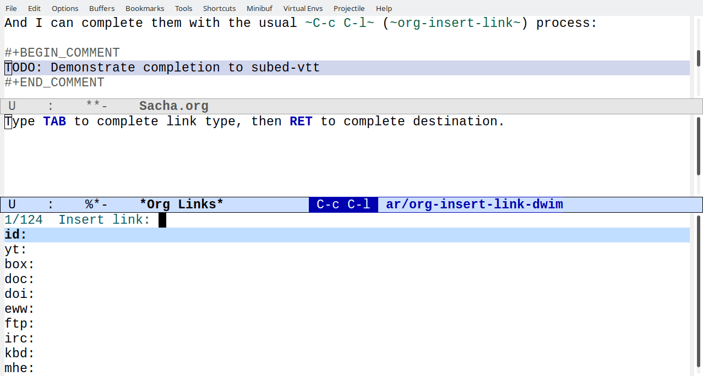
org-insert-linkSketches are handled by my Org Mode sketch links, but we can add them anyway.
(cl-pushnew (cons (expand-file-name "~/sync/sketches/") "https://sketches.sachachua.com/filename/")
my-project-web-base-list
:test 'equal)
I've been really liking being able to refer to various emacsconf-el files by just selecting the link type and completing the filename, so maybe it'll be easier to write about lots of other stuff if I extend that to my other projects.
Copy web link
- : Fix Wayback link handling.
- : Add Wayback machine.
Keeping a list of projects and their web versions also makes it easier
for me to get the URL for something. I try to post as much as possible
on the Web so that it's easier for me to find things again and so that
other people can pick up ideas from my notes. Things are a bit
scattered: my blog, repositories on Github and Codeberg, my
sketches… I don't want to think about where the code has ended
up, I just want to grab the URL. If I'm going to put the link into an
Org Mode document, that's super easy. I just take advantage of the
things I've added to org-store-link. If I'm going to put it into an
e-mail or a toot or wherever else, I just want the bare URL.
I can think of two ways to approach this. One is a command that copies just the URL by figuring it out from the buffer filename, which allows me to special-case a bunch of things:
(defun my-copy-link (&optional filename skip-links)
"Return the URL of this file.
If FILENAME is non-nil, use that instead.
If SKIP-LINKS is non-nil, skip custom links.
If we're in a Dired buffer, use the file at point."
(interactive)
(setq filename (or filename
(if (derived-mode-p 'dired-mode) (dired-get-filename))
(buffer-file-name)))
(if-let*
((project-re (concat "\\(" (regexp-opt (mapcar 'car my-project-web-base-list)) "\\)"
"\\(.*\\)"))
(url (cond
((and (derived-mode-p 'org-mode)
(eq (org-element-type (org-element-context)) 'link)
(not skip-links))
(pcase (org-element-property :type (org-element-context))
((or "https" "http")
(org-element-property :raw-link (org-element-context)))
("yt"
(org-element-property :path (org-element-context)))
;; if it's a custom link, visit it and get the link
(_
(save-window-excursion
(org-open-at-point)
(my-copy-link nil t)))))
;; links to my config usually have a CUSTOM_ID property
((string= (buffer-file-name) (expand-file-name "~/sync/emacs/Sacha.org"))
(concat "https://sachachua.com/dotemacs#" (org-entry-get-with-inheritance "CUSTOM_ID")))
;; blog post drafts have permalinks
((and (derived-mode-p 'org-mode) (org-entry-get-with-inheritance "EXPORT_ELEVENTY_PERMALINK"))
(concat "https://sachachua.com" (org-entry-get-with-inheritance "EXPORT_ELEVENTY_PERMALINK")))
;; some projects have web repos
((string-match
project-re filename)
(concat (assoc-default (match-string 1 filename) my-project-web-base-list)
(url-hexify-string (match-string 2 filename)))))))
(progn
(when (called-interactively-p 'any)
(kill-new url)
(message "%s" url))
url)
(error "Couldn't figure out URL.")))
Another approach is to hitch a ride on the Org Mode link storage and
export functions and just grab the URL from whatever link I've stored
with org-store-link, which I've bound to C-c l. I almost always
have an HTML version of the exported link. We can even use XML parsing
instead of regular expressions.
(defun my-org-link-as-url (link)
"Return the final URL for LINK."
(cond
((string-match "^/" link)
(concat my-blog-base-url (replace-regexp-in-string "^/" "" link)))
((string-match "^\\(https://\\|file:\\)" link)
link)
(t
(dom-attr
(dom-by-tag
(with-temp-buffer
(insert (org-export-string-as link 'html t))
(xml-parse-region (point-min) (point-max)))
'a)
'href))))
(defun my-org-stored-link-as-url (&optional link insert)
"Copy the stored link as a plain URL.
If LINK is specified, use that instead."
(interactive (list nil current-prefix-arg))
(setq link (or link (caar org-stored-links)))
(let ((url (if link
(my-org-link-as-url link)
(error "No stored link"))))
(when (called-interactively-p 'any)
(if url
(if insert (insert url) (kill-new url))
(error "Could not find URL.")))
url))
(ert-deftest my-org-stored-link-as-url ()
(should
(string= (my-org-stored-link-as-url "[[dotemacs:web-link]]")
"https://sachachua.com/dotemacs#web-link"))
(should
(string= (my-org-stored-link-as-url "[[dotemacs:org-mode-sketch-links][my Org Mode sketch links]]")
"https://sachachua.com/dotemacs#org-mode-sketch-links")))
(defun my-embark-org-copy-exported-url-as-wayback (link &rest _)
(interactive "MLink: ")
(let ((url (my-embark-org-copy-exported-url link)))
(when (not (string-match (regexp-quote "^https://web.archive.org") url))
(setq url (concat "https://web.archive.org/web/" (format-time-string "%Y%m%d%H%M%S/")
url)))
(when (called-interactively-p 'any)
(kill-new url)
(message "Copied %s" url))
url))
(defun my-embark-org-copy-exported-url (link &rest _)
(interactive "MLink: \np")
(let ((url (my-org-link-as-url link)))
(when (and (derived-mode-p 'org-mode)
(org-entry-get-with-inheritance "EXPORT_ELEVENTY_PERMALINK")
(string-match "^/" url))
;; local file links are copied to blog directories
(setq url (concat "https://sachachua.com"
(org-entry-get-with-inheritance "EXPORT_ELEVENTY_PERMALINK")
(replace-regexp-in-string
"[\\?&].*"
""
(file-name-nondirectory link)))))
(when (called-interactively-p 'any)
(kill-new url)
(message "Copied %s" url))
url))
(defun my-embark-replace-link-with-exported-url (link &rest _)
(interactive (list (org-element-property :raw-link (org-element-context))))
(my-insert-or-replace-link (my-org-link-as-url link)))
(with-eval-after-load 'embark-org
(mapc (lambda (map)
(keymap-set map "u" #'my-embark-org-copy-exported-url)
(keymap-set map "U" #'my-embark-org-copy-exported-url-as-wayback)
(keymap-set map "r e" #'my-embark-replace-link-with-exported-url))
(list embark-url-map embark-org-link-map embark-org-link-copy-map)))
We'll see which one I end up using. I think both approaches might come in handy.
Quickly search my code
Since my-project-web-base-list is a list of projects I often think
about or write about, I can also make something that searches through
them. That way, I don't have to care about where my code is.
(defun my-consult-ripgrep-code ()
(interactive)
(consult-ripgrep (mapcar 'car my-project-web-base-list)))
I can add .rgignore files in directories to tell ripgrep to ignore
things like node_modules or *.json.
I also want to search my Emacs configuration at the same time, although links to my config are handled by my dotemacs link type so I'll leave the URL as nil. This is also the way I can handle other unpublished directories.
(cl-pushnew (cons (expand-file-name "~/sync/emacs/Sacha.org") nil)
my-project-web-base-list
:test 'equal)
(cl-pushnew (cons (expand-file-name "~/proj/static-blog/_includes") nil)
my-project-web-base-list
:test 'equal)
(cl-pushnew (cons (expand-file-name "~/bin") nil)
my-project-web-base-list
:test 'equal)
Actually, let's throw my blog posts and Org files in there as well, since I often have code snippets. If it gets to be too much, I can always have different commands search different things.
(cl-pushnew (cons (expand-file-name "~/proj/static-blog/blog/") "https://sachachua.com/blog/")
my-project-web-base-list
:test 'equal)
(cl-pushnew (cons (expand-file-name "~/sync/orgzly") nil)
my-project-web-base-list
:test 'equal)
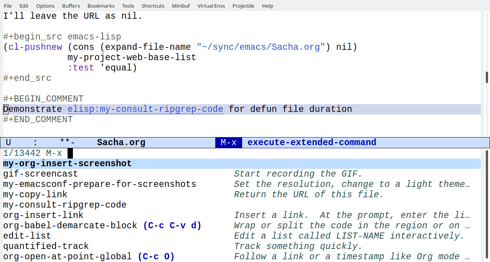
I don't have anything bound to M-s c (code) yet, so let's try that.
(keymap-global-set "M-s c" #'my-consult-ripgrep-code)
At some point, it might be fun to get Embark set up so that I can grab a link to something right from the consult-ripgrep interface. In the meantime, I can always jump to it and get the link.
- Tip from Omar: embark-around-action-hooks
I modified oantolin's suggestion from the comments to work with
consult-ripgrep, sinceconsult-ripgrepgives meconsult-greptargets instead ofconsult-location:(cl-defun embark-consult--at-location (&rest args &key target type run &allow-other-keys) "RUN action at the target location." (save-window-excursion (save-excursion (save-restriction (pcase type ('consult-location (consult--jump (consult--get-location target))) ('org-heading (org-goto-marker-or-bmk (get-text-property 0 'org-marker target))) ('consult-grep (consult--jump (consult--grep-position target))) ('file (find-file target))) (apply run args))))) (cl-pushnew #'embark-consult--at-location (alist-get 'org-store-link embark-around-action-hooks))I think I can use it with
M-s cto search for the code, thenC-. C-c lon the matching line, whereC-c lis my regular keybinding for storing links. Thanks, Omar!In general, I don't want to have to think about where something is on my laptop or where it's published on the Web, I just want to write about it. One step closer, yay Emacs!
Linking to headings that match a tag
(defun my-org-insert-matching-heading-links (match)
(interactive "MMatch: ")
(let ((org-tags-exclude-from-inheritance (list match)))
(insert
(string-join
(org-map-entries
(lambda ()
(concat "- " (org-link-make-string
(car (org-link--file-link-to-here))
(org-entry-get (point) "ITEM"))
(if (org-entry-get (point) "EXPORT_DATE")
(format-time-string " (%Y)"
(date-to-time (org-entry-get (point) "EXPORT_DATE")))
"")
"\n"))
match)))
""))
Links from org-protocol
So that I can easily add links at point. Formatted as an Org list for now.
(defun my-org-protocol-insert-link (info)
"Store and insert the link at point based on INFO."
(org-protocol-store-link info)
(with-current-buffer (window-buffer (selected-window))
(insert "- ")
(org-insert-last-stored-link 1)
(insert "\n")))
(eval-after-load 'org-protocol
'(add-to-list 'org-protocol-protocol-alist
'("insert-link" :protocol "insert-link" :function my-org-protocol-insert-link)))
;; javascript:location.href = 'org-protocol://copy-thumbnail?thumbnail=' + encodeURIComponent(document.querySelector('meta[property=\"og:image\"]') ? document.querySelector('meta[property=\"og:image\"]').getAttribute('content') : '') + '&title=' + encodeURIComponent(document.title) + '&url=' + encodeURIComponent(location.href) + '&videoId=' + ((typeof(videoId) !== 'undefined' ? videoId : (document.querySelector('meta[itemprop=\"videoId\"]') ? document.querySelector('meta[itemprop=\"videoId\"]').getAttribute('content') : '')) || '')
(defun my-get-youtube-info (url)
(with-current-buffer (url-retrieve-synchronously url)
(goto-char (point-min))
(prog1
(list
:url
url
:title
(when (re-search-forward "<title>\\(.*?\\)</title>" nil t)
(match-string 1))
:duration
(when (re-search-forward "approxDurationMs\":\"\\([0-9]+\\)\"" nil t)
(format-seconds "%.2h:%.2m:%.2s%z" (/ (string-to-number (match-string 1)) 1000))))
(kill-buffer))))
(defun my-link-video (list)
(when (stringp list) (setq list (list :url list)))
(with-current-buffer (url-retrieve-synchronously (concat "https://video.link/bookmarklet?url=" (url-encode-url (plist-get list :url))))
(save-excursion
(if (re-search-forward "<input type=\"text\" id=\"safeURL\" readonly=\"readonly\" value=\"\\(.*?\\)\"" nil t)
(plist-put list :url (match-string-no-properties 1))
(plist-put list :url (replace-regexp-in-string "watch" "watch_popup" (plist-get list :url)))))
(when (string= (or (plist-get list :thumbnail) "") "")
(save-excursion
(when (re-search-forward "<img id=\"videoThumb\" src=\"\\(.*?\\)\"" nil t)
(plist-put list :thumbnail (match-string-no-properties 1)))))
list))
(defun my-org-protocol-copy-thumbnail (info)
"Store and insert the link at point based on INFO."
(interactive "MURL: ")
(when (stringp info) (setq info (list :url info)))
(when (string-match "youtube\\.com" (plist-get info :url))
(setq info (my-link-video info)))
(let ((date (format-time-string "%Y-%m-%d")))
(kill-new
(if (string= (plist-get info :videoId) "")
(format "{{<thumbnail image=\"%s\" title=\"%s\" link=\"%s\" date=\"%s\">}}\n"
(plist-get info :thumbnail)
(plist-get info :title)
(plist-get info :url)
date
)
(format "{{<youtube id=\"%s\" title=\"%s\" link=\"%s\" date=\"%s\">}}\n"
(plist-get info :videoId)
(plist-get info :title)
(plist-get info :url)
date))))
nil)
(eval-after-load 'org-protocol
'(add-to-list 'org-protocol-protocol-alist
'("copy-thumbnail" :protocol "copy-thumbnail" :function my-org-protocol-copy-thumbnail)))
(use-package org-protocol-capture-html
:vc (:url "https://github.com/alphapapa/org-protocol-capture-html"))
Fix elisp links
(defun my-org-elisp-link-export (link description format &optional arg)
(pcase format
('html (format "<span title=\"%s\">%s</span>" (replace-regexp-in-string "\"" """ link) description))
((or 'icalendar 'ascii) description)
))
(org-link-set-parameters
"elisp"
:export 'my-org-elisp-link-export)
IRC
(org-link-set-parameters
"ircs"
:export
(lambda (link description format)
"Export an ircs link.
See `org-link-parameters' for details about LINK, DESCRIPTION and
FORMAT."
(let ((desc (or description link)))
(pcase format
(`html (format "<a href=\"ircs:%s\">%s</a>" link desc))
(`md (format "[%s](ircs:%s)" desc link))
(_ nil)))))
Dired
(setq dired-dwim-target t)
(defun my-org-get-links-in-region (beg end)
(save-excursion
(let (results)
(goto-char (min beg end))
(while (re-search-forward org-any-link-re (max beg end) t)
(add-to-list 'results (org-element-context)))
results)))
(defun my-org-dired-file-links-in-region (beg end)
"Display a Dired buffer for the file links in the selected region."
(interactive "r")
(let ((files
(-map
(lambda (x)
(expand-file-name (org-link-unescape (plist-get (cadr x) :path))))
(-filter
(lambda (x)
(string= (plist-get (cadr x) :type) "file"))
(my-org-get-links-in-region beg end)))))
(with-current-buffer (get-buffer-create "*Files*")
(let ((inhibit-read-only t))
(erase-buffer)
(apply 'call-process "ls" nil t nil "-lR" files))
(dired-virtual "/")
(switch-to-buffer (current-buffer)))))
Org protocol: following Org links from outside Emacs org emacs
_xor had an interesting idea: can we use org-protocol to link to
things inside Emacs, so that we can have a webpage with bookmarks into
our Org files? Here's a quick hack that reuses org-store-link and
org-link-open.
(defun org-protocol-open-link (info)
"Process an org-protocol://open style url with INFO."
(org-link-open (car (org-element-parse-secondary-string (plist-get info :link) '(link)))))
(defun org-protocol-copy-open-link (arg)
(interactive "P")
(kill-new (concat "org-protocol://open?link=" (url-hexify-string (org-store-link arg)))))
(with-eval-after-load 'org-protocol
(add-to-list 'org-protocol-protocol-alist
'("org-open" :protocol "open" :function org-protocol-open-link)))
To make exporting and following easier, we also need a little code to
handle org-protocol links inside Org.
(defun org-protocol-follow (path &rest _)
"Follow the org-protocol link for PATH."
(org-protocol-check-filename-for-protocol (concat "org-protocol:" path) nil nil))
(defun org-protocol-export (path desc format info)
"Export an org-protocol link."
(setq path (concat "org-protocol:" path))
(setq desc (or desc path))
(pcase format
(`html (format "<a href=\"%s\">%s</a>" path desc))
(`11ty (format "<a href=\"%s\">%s</a>" path desc))
(`latex (org-latex-link path desc info))
(`ascii (org-ascii-link path desc info))
(`md (org-md-link path desc info))
(_ path)))
(with-eval-after-load 'org
(org-link-set-parameters "org-protocol"
:follow #'org-protocol-follow
:export #'org-protocol-export))
Now I can use org-protocol-copy-open-link to copy a link to the
current location, and I can put it into my Org files.
Example bare link to the Org manual, which will work only if you have
open in the org-protocol-protocol-alist:
org-protocol://open?link=%5B%5Binfo%3Aorg%23Protocols%5D%5Borg%23Protocols%5D%5D
With a description:
TODO Speed command for adding a custom ID to Org Mode posts
Nudged by Amit's post about adding custom IDs to Org headings, I decided to write a speed command to add a custom ID with a reasonable default, and to make it happen whenever I post something from my Emacs config (like this one). I'm running out of brainspace for speed commands, so I'm going to try sticking it into a hydra so that I can add future things to the hydra instead. I'll probably figure out some kind of cheat sheet thing for speed commands too.
(defun my-make-slug (s)
(thread-last s
(my-translate-unaccented)
(downcase)
(replace-regexp-in-string "[^a-z0-9]+" "-")
(replace-regexp-in-string "^-\\|-$" "")))
(defun my-org-set-custom-id (id)
"Set the CUSTOM_ID property to ID at point."
(interactive (list
(let ((default-custom-id (my-make-slug (string-join (org-get-outline-path t) " "))))
(read-string (format "ID (%s): " default-custom-id) nil nil default-custom-id))))
(org-entry-put (point) "CUSTOM_ID" id))
(with-eval-after-load 'hydra
(define-key hydra-base-map (kbd "<down>") 'my-hydra-pop)
(define-key hydra-base-map (kbd "<up>") (lambda () (interactive) (my-hydra-go-and-push 'my-shortcuts/body)))
(defhydra my-hydra/org-speed-commands ()
("i" my-org-set-custom-id "CUSTOM_ID" :exit t)
("<up>" my-hydra/org-mode/body :exit t)
("u" (my-hydra-go-and-push 'my-hydra/org-mode/body) :exit t :hint nil))
(defhydra my-hydra/org-mode (:foreign-keys run)
("b" my-org-back-to-heading "Heading")
("n" org-forward-heading-same-level "Next")
("p" org-backward-heading-same-level "Previous")
("a" org-archive-subtree-default "Archive")
("j" my-org-mark-done-and-add-to-journal "Journal" :exit t)
("k" org-cut-subtree "Kill")
("<up>" (my-hydra-go-and-push 'my-shortcuts/body) :exit t hint nil)
("u" (my-hydra-go-and-push 'my-shortcuts/body) :exit t :hint nil)
("<f14>" nil "Exit" :exit t))
(defhydra my-hydra/org-link ()
("RET" org-open-at-point "Open")
("e" org-insert-link "Edit")
("c" my-caption-show "Captions")
("w" my-org-link-element-copy-link "Copy link")
("u" (my-hydra-go-and-push 'my-hydra/org-mode/body) :exit t :hint nil)
("<up>" (my-hydra-go-and-push 'my-hydra/org-mode/body) :exit t :hint nil))
(defhydra my-hydra/org-src ()
("e" org-babel-execute-src-block "Exec")
("E" my-org-execute-src-block-by-name "Exec by name")
("i" org-edit-special "Edit")
("d" org-babel-demarcate-block "Demarcate")
("g" org-babel-goto-named-src-block "Goto")
("r" org-babel-open-src-block-result "Result")
("x" org-babel-expand-src-block "Expand")
("t" (org-babel-tangle '(4)) "Tangle at point")
("T" (org-babel-tangle '(16)) "Tangle target file")
("u" (my-hydra-go-and-push 'my-hydra/org-mode/body) :exit t :hint nil)
("<up>" (my-hydra-go-and-push 'my-hydra/org-mode/body) :exit t :hint nil)
)
(defun my-hydra/dwim ()
(interactive)
(if (derived-mode-p 'org-mode)
(let ((context (org-element-context)))
(cond
((and (bolp) (looking-at org-outline-regexp))
(my-hydra/org-speed-commands/body))
((org-in-src-block-p) (my-hydra/org-src/body))
((eq (org-element-type context) 'link) (my-hydra/org-link/body))
(t (my-hydra/org-mode/body))))
(my-shortcuts/body)))
(define-key org-mode-map (kbd "<f14>") 'my-hydra/dwim)
(keymap-global-set "<f14>" 'my-hydra/dwim))
Journal
(defvar my-journal-category-map
'(("Gross" . "Gross motor")
("Fine" . "Fine motor")
("8 - Kaizen" . "Kaizen")
("9 - Us" . "Us")
("Self-care" . "Self-care and independence"))
"Alist of string replacements for journal categories.")
(defvar my-journal-categories
'("Kaizen" "Us" "Field trip" "Gross motor" "Fine motor"
"Sensory" "Language" "Music" "Art"
"Self-care and independence" "Eating" "Sleep" "Emotion"
"Household" "Social" "Pretend" "Cognition" "World" "Other" "Oops" "Thoughts" "Consulting" "Track" "Uncategorized")
"List of categories to display.
Unknown categories will be added to the end.")
(defun my-journal-date (o) (elt o 3))
(defun my-journal-note (o) (car o))
(defun my-journal-week-highlight (o) (elt o 4))
(defun my-journal-category (o) (elt o 1))
(defun my-journal-pictures (o) (when (string> (elt o 2) "") (split-string (elt o 2) ",")))
(defun my-journal-id (o) (elt o 7))
(defun my-journal-status (o) (elt o 8))
(defun my-journal-other (o) (elt o 9))
(defun my-journal-zidstring (o) (elt o 11))
(defun my-org-group-journal-entries (filtered &optional category-map categories)
(setq category-map (or category-map my-journal-category-map))
(setq categories (or categories my-journal-categories))
(let* ((grouped (-group-by 'my-journal-category filtered))
(mapped-list
(mapcar
(lambda (o)
(cons (or (assoc-default (car o) category-map) (car o))
(cdr o)))
grouped))
(sorted-list
(delq nil
(append
(mapcar (lambda (cat)
(when (assoc-default cat mapped-list)
(cons cat (assoc-default cat mapped-list))))
categories)
(-remove (lambda (o) (member (car o) categories)) mapped-list)))))
sorted-list))
(defun my-org-date-to-string (date &optional base-date)
"Return the Org date specified by DATE.
This is relative to BASE-DATE if specified."
(org-read-date nil nil date nil (when base-date (org-read-date nil t base-date))))
(ert-deftest my-org-date-to-string ()
(should (string= (my-org-date-to-string "++1" "2018-08-01") "2018-08-02")))
(defun my-org-filter-journal-csv (filename &optional from to highlight base-date)
"Return a list of matching entries."
(setq from (and from (substring (my-org-date-to-string from base-date) 0 10))
to (and to (substring (my-org-date-to-string to base-date) 0 10)))
(let* ((data (pcsv-parse-file filename))
(filtered
(-filter
(lambda (o)
(let ((date (my-journal-date o)))
(and (or (null from) (not (string< date from)))
(or (null to) (string< date to))
(and (not (string= (my-journal-status o) "Deleted")))
(not (string-match "^!" (my-journal-note o)))
(string-equal
"true"
(cond
((null highlight) "true")
((string-equal highlight "week") (my-journal-week-highlight o))
(t "true"))))))
data)))
filtered))
(defun my-journal-read-category (&optional initial)
(consult--read my-journal-categories :sort nil :prompt "Category: " :initial initial))
(defun my-journal-guess-category ()
(save-excursion
(org-back-to-heading)
(org-end-of-meta-data)
(let ((text (buffer-substring-no-properties (point) (org-end-of-subtree))))
(if (string-match "#gardening" text)
"Household"))))
(defun my-journal-post (note &rest plist)
(interactive (list (read-string "Note: ")
:Date (concat (org-read-date "Date: ") " 23:00")
:Category (my-journal-read-category (condition-case nil (my-journal-guess-category) (error nil)))
:Other (read-string "Other: ")))
(setq plist (append `(:Note ,note) plist))
(let ((url-request-method "POST")
(url-request-extra-headers `(("Content-Type" . "application/json")
("Authorization" . ,(concat "Basic "
(base64-encode-string
(concat my-journal-user ":" my-journal-password))))))
(json-object-type 'plist)
(url-request-data (encode-coding-string (json-encode-plist plist) 'utf-8))
data)
(with-current-buffer (url-retrieve-synchronously (concat my-journal-url "/api/entries"))
(goto-char (point-min))
(re-search-forward "^$")
(setq data (json-read))
(message "%s" (plist-get data :ZIDString))
data)))
(defun my-journal-get-by-zidstring (zidstring)
(my-journal-get (concat "api/entries/" zidstring)))
(defun my-journal-insert-ref (zidstring)
(interactive (list (my-journal-completing-read)))
(insert (org-link-make-string (concat "ref:" (my-journal-id-from-string zidstring)))))
(defun my-journal-edit (zidstring)
(interactive (list (my-journal-completing-read)))
(let* ((id (my-journal-id-from-string zidstring))
(entry (and id (my-journal-get-by-zidstring id))))
(if (null id)
(my-journal-post zidstring
:Category (my-journal-read-category (plist-get entry :Category))
:Other (read-string "Other: " (plist-get entry :Other)))
(plist-put entry :Note (read-string (format "Note (%s): " (plist-get entry :Note))))
(plist-put entry :Category (my-journal-read-category (plist-get entry :Category)))
(plist-put entry :Other (read-string "Other: " (plist-get entry :Other)))
(my-journal-update entry))))
(defun my-journal-update (plist)
"Update journal entry using PLIST."
(let ((url-request-method "PUT")
(url-request-data (json-encode-plist plist)))
(my-json-request (concat my-journal-url "/api/entries/" (plist-get plist :ZIDString)))))
;; (my-journal-post "Hello, world")
(defun my-journal-get-entries (&optional from to search)
"Return parsed CSV of entries limited by FROM, TO, and SEARCH."
(with-current-buffer
(url-retrieve-synchronously (format "%s/api/entries.csv?from=%s&to=%s®ex=1&q=%s"
my-journal-url
(or from "")
(or to "")
(or search "")))
(set-buffer-multibyte t)
(goto-char (point-min))
(delete-region (point-min) (search-forward "\n\n"))
(cdr (pcsv-parse-buffer))))
(defun my-journal-get (url)
(let ((url-request-extra-headers
`(("Authorization" . ,(concat "Basic "
(base64-encode-string
(concat my-journal-user ":" my-journal-password)))))))
(my-json-request (concat my-journal-url "/" url))))
(defun my-journal-get-entry (zid) (my-journal-get (format "api/entries/zid/%s" zid)))
The following code lets me complete journal entries and get their ZIDs.
(defun my-json-request (url)
(let ((json-object-type 'plist)
(url-request-extra-headers (cons '("Content-Type" . "application/json") url-request-extra-headers)))
(with-current-buffer (url-retrieve-synchronously url)
(set-buffer-multibyte t)
(goto-char (point-min))
(re-search-forward "^$" nil t)
(json-read))))
(defvar my-journal-search-cache nil "List of search results.")
(defun my-journal-search-query (query-str)
(let* ((url-request-method "GET")
(json-response (my-journal-get (format "api/entries?q=%s&limit=50&sort=date®ex=1"
query-str))))
(setq my-journal-search-cache (mapcar (lambda (o)
(cons
(format "%s %s"
(plist-get o :ZIDString)
(plist-get o :Note))
o))
json-response))))
(defun my-journal-search-query-async (query-str next)
(let* ((url-request-method "GET")
(url-request-extra-headers (cons '("Content-Type" . "application/json") url-request-extra-headers)))
(url-retrieve
(format "%s/api/entries?q=%s&limit=50&sort=date®ex=1"
my-journal-url
query-str)
(lambda (status)
(goto-char (point-min))
(re-search-forward "^$" nil t)
(setq my-journal-search-cache
(mapcar (lambda (o)
(cons
(format "%s %s"
(plist-get o :ZIDString)
(plist-get o :Note))
o))
(let ((json-object-type 'plist))
(json-read))))
(funcall next 'flush)
(if my-journal-search-cache (funcall next my-journal-search-cache))))))
(defun my-journal--async-search (next)
(lambda (action)
(cond
((eq action 'setup) ;; Should figure out how to start
(my-journal-search-query-async "" next))
((and (stringp action) (not (string= action "")))
(my-journal-search-query-async action next))
(t (funcall next action)))))
(defun my-journal-completing-read ()
(interactive)
(consult--read
(thread-first (consult--async-sink)
(consult--async-refresh-immediate)
(my-journal--async-search)
(consult--async-throttle)
(consult--async-split))
:sort nil
:prompt "Entry: "
:category 'journal))
(defun my-journal-id-from-string (s)
(when (string-match "^[-0-9]+" s) (match-string 0 s)))
(defun my-journal-view (s)
(interactive (list (my-journal-completing-read)))
(my-org-journal-open (my-journal-id-from-string s)))
(defun my-journal-sketch-large (zid)
"Create a large sketch based on ZID."
(interactive (list (my-journal-completing-read)))
(let ((filename (expand-file-name (format "%s.psd"
(my-journal-id-from-string zid))
my-sketch-inbox-directory)))
(unless (file-exists-p filename)
(copy-file my-sketch-large-template-file filename))
(my-org-sketch-open filename)))
I should probably figure out how to switch this over to my Consult-based workflow:
(defun my-journal-format-entry (type o)
(cond
((eq type 'org-link-zid-only)
(org-link-make-string (format "journal:%s" (cdr (assoc 'ZIDString o)))))
((eq type 'list-item-with-zid)
(format "- %s (%s)\n"
(assoc-default 'Note o)
(org-link-make-string
(format "journal:%s" (assoc-default 'ZIDString o)))))
((eq type 'list-item)
(format "- %s\n" (assoc-default 'Note o)))
((eq type 'text)
(assoc-default 'Note o))))
(defun my-journal-format-entries (type list)
(mapconcat
(lambda (o) (my-journal-format-entry type o))
(reverse list)
(cond
((eq type 'org-link-zid-only) ", ")
((eq type 'list-item-with-zid) "")
((eq type 'list-item) "")
((eq type 'text) " "))))
This lets me define a custom link type.
(defun my-org-journal-open (id &optional arg)
(browse-url (format "%s/zid/%s" my-journal-url id)))
(defun my-org-journal-export (link description format &optional arg)
(let* ((path (concat "%s/zid/" my-journal-url link))
(image (concat "%s/zid/" my-journal-url link))
(desc (or description link)))
(cond
((or (eq format 'html) (eq format 'wp))
(if description
(format "<a target=\"_blank\" href=\"%s\">%s</a>" path desc)
(format "<a target=\"_blank\" href=\"%s\"><img src=\"%s\"><br />%s</a>" path image desc)))
((eq format 'latex) (format "\\href{%s}{%s}" path desc))
((eq format 'texinfo) (format "@uref{%s,%s}" path desc))
((eq format 'ascii) (format "%s <%s>" desc path))
(t path))))
(defun my-org-journal-complete (&optional prefix)
(cdr (assoc 'ZIDString (helm-comp-read "Entry: " 'my-helm-journal-search :volatile t))))
(use-package org
:config
(org-link-set-parameters
"journal"
:follow 'my-org-journal-open
:export 'my-org-journal-export
:complete 'my-org-journal-complete))
(defun my-org-journal-summarize (from to &optional search category-map categories)
(my-org-group-journal-entries (my-journal-get-entries from to search) category-map categories))
(defun my-org-journal-format-tree (groups &optional include)
(mapconcat
(lambda (o)
(concat "- *" (car o) "*\n"
(mapconcat
(lambda (i)
(concat " - "
(if (member 'date include) (concat (my-journal-date i) " ") "")
(replace-regexp-in-string "\\\"" "\"" (my-journal-note i))
(if (member 'zid include) (concat " " (my-journal-zidstring i)) "")
;; (if (string= "" (my-journal-category i))
;; ""
;; (format " (%s)" (my-journal-category i)))
"\n"))
(reverse (cdr o)) "")))
groups ""))
(defun my-org-summarize-journal-csv (from to &optional search category-map categories include)
(interactive
(list (org-read-date nil nil nil "From: ")
(org-read-date nil nil nil "To: ")
(read-string "Search: ")
my-journal-category-map
my-journal-categories
nil))
(let ((list (my-org-journal-format-tree
(my-org-group-journal-entries
(my-journal-get-entries from to search)
category-map categories)
include)))
(if (called-interactively-p 'any) (insert list) list)))
(defun my-read-journal-category ()
(completing-read "Category: " my-journal-categories))
(defun my-update-journal-entry (old-text new-text category)
(interactive (list (read-string "Old: ")
(read-string "New: ")
(my-read-journal-category)))
(my-send-intent "com.sachachua.journal.categorize"
(list (cons "text" old-text)
(cons "newtext" (or new-text old-text))
(cons "category" (or category "Uncategorized")))))
(defun my-create-journal-entry (new-text category)
(interactive (list (read-string "Text: ")
(my-read-journal-category)))
(my-update-journal-entry new-text new-text category))
(defun my-export-journal-entries ()
"Trigger task to export. Phone must be unlocked."
(interactive)
(my-send-intent "com.sachachua.journal.export" '(("a" . "b"))))
(use-package csv
:commands csv--read-line)
(defun my-prompt-for-uncategorized-entries ()
(interactive)
(let ((key-list '("Note" "Date" "highlight week" "Category" "month" "Time" "Link" "ELECT"))
x new-text category done)
(while (and (not (eobp)) (not done))
(forward-char 1)
(setq x (csv--read-line key-list))
(when (string= (assoc-default "Category" x nil "") "")
(setq text (read-string "Text: " (assoc-default "Note" x nil "")))
(setq category (completing-read "Category: " (cons "." my-journal-categories)))
(if (string= category ".")
(setq done t)
(my-update-journal-entry (assoc-default "Note" x nil "") text category))))))
Working with journal entries
(defun my-journal-insert-matching-entries (from to match)
(interactive (list (org-read-date "From: ") (org-read-date "To: ") (read-string "Match: ")))
(insert
(mapconcat
(lambda (o)
(format "- %s %s" (my-journal-zidstring o) (my-journal-note o)))
(seq-filter (lambda (o) (string-match match (my-journal-other o)))
(my-journal-get-entries from to))
"\n")))
(defun my-journal-convert-to-refs (beg end)
(interactive "r")
(save-restriction
(goto-char beg)
(narrow-to-region beg end)
(while (re-search-forward "^- \\([0-9][0-9][0-9][0-9]-[0-9][0-9]-[0-9][0-9]-[0-9][0-9]\\) .*?$" nil t)
(replace-match "ref:\\1"))))
(defun my-journal-get-refs-from-region (beg end)
(interactive "r")
(save-excursion
(goto-char beg)
(cl-loop for pos = (re-search-forward " \\([0-9][0-9][0-9][0-9]-[0-9][0-9]-[0-9][0-9]-[0-9][0-9]\\) " end t)
while pos
collect (match-string 1))))
(defun my-journal-add-tag (tag beg end)
(interactive "MTag: \nr")
(let* ((url-request-method "POST")
(url-request-extra-headers '(("Content-Type" . "application/json")))
(zids (my-journal-get-refs-from-region beg end))
(json-object-type 'plist)
(url-request-data (json-encode-plist (list :zids zids :tags (split-string tag " ")))))
(pp (my-journal-get "api/entries/tag/bulk"))))
(defun my-journal-remove-tag (tag beg end)
(interactive "MTag: \nr")
(let* ((url-request-method "DELETE")
(url-request-extra-headers '(("Content-Type" . "application/json")))
(zids (my-journal-get-refs-from-region beg end))
(json-object-type 'plist)
(url-request-data (json-encode-plist (list :zids zids :tags (split-string tag " ")))))
(pp (my-journal-get "api/entries/tag/bulk"))))
(defun my-journal-post-with-refs (note date other beg end)
(interactive (list
(read-string "Note: ")
(concat (org-read-date "Date: ") " 23:00")
(read-string "Other: ")
(min (point) (mark))
(max (point) (mark))))
(my-journal-post note :Date date :Other (concat other "\n"
(mapconcat (lambda (o) (concat "ref:" o))
(my-journal-get-refs-from-region beg end)
" "))))
(defun my-journal-browse-current-day ()
(interactive)
(browse-url
(format "https://journal.sachachua.com/day/%s"
(format-time-string "%Y-%m-%d"
(my-filename-timestamp (buffer-file-name))))))
Tagging journal entries
(defun my-journal-list-toggle-monthly-highlight ()
(interactive)
(let ((entry (tabulated-list-get-entry)))
(setf (elt entry 3) (if (string-match "#monthly-highlight" (elt entry 3))
(replace-regexp-in-string " ?#monthly-highlight" "" (elt entry 3))
(string-trim (concat (elt entry 3) " #monthly-highlight"))))
(my-journal-update
(list :ZIDString (elt entry 0)
:Other (elt entry 3)))
(tabulated-list-print t t)))
(defun my-journal-list-echo ()
(interactive)
(message "%s -- %s" (elt (tabulated-list-get-entry) 2) (elt (tabulated-list-get-entry) 3)))
(defvar-keymap my-journal-list-mode-map
:parent tabulated-list-mode-map
"t" #'my-journal-list-toggle-monthly-highlight
"v" #'my-journal-list-echo)
(define-derived-mode my-journal-list-mode tabulated-list-mode "Journal"
"Major mode for journal entries."
(setq tabulated-list-format [("ZID" 14 t)
("Category" 10 t)
("Note" 80 nil)
("Other" 30 nil)])
(tabulated-list-init-header)
(tabulated-list-print t))
(defun my-journal-list (start end filter)
(interactive (list (org-read-date "Start: ") (org-read-date "End: ")
(read-string "Filter: ")))
(switch-to-buffer (get-buffer-create "*journal*"))
(setq tabulated-list-entries
(mapcar
(lambda (row)
(list
(my-journal-zidstring row)
(vector
(my-journal-zidstring row)
(my-journal-category row)
(replace-regexp-in-string "\n" " " (my-journal-note row))
(replace-regexp-in-string "\n" " " (my-journal-other row)))))
(my-journal-get-entries start end filter)))
(my-journal-list-mode))
Photos images
(defun my-get-image-caption (file)
(let ((caption (shell-command-to-string (format "exiftool -s -s -s -ImageDescription %s" (shell-quote-argument file)))))
(when (> (length caption) 0) (format "#+CAPTION: %s" caption))))
(defun my-insert-image-link-with-caption (file)
(let ((caption (my-get-image-caption file)))
(insert (or caption "") (org-link-make-string file) "\n")))
(defun my-caption-current-image ()
(interactive)
(let ((link (org-element-link-parser)) caption)
(when (and link (org-element-property :path link))
(setq caption (my-get-image-caption (org-element-property :path link)))
(when caption (insert caption)))))
(defun my-set-image-caption (file caption)
(interactive (list (if (derived-mode-p 'dired-mode) (dired-get-filename) (buffer-file-name))
(read-string "Caption: ")))
(shell-command (format "exiftool -ImageDescription=\"%s\" %s" (shell-quote-argument caption) (shell-quote-argument file))))
(defvar my-photo-directory "/mnt/nfs/photos/inbox")
(defun my-get-photo-rating (file)
(let ((rating (shell-command-to-string (concat "exiftool -s -s -s -Rating " (shell-quote-argument file)))))
(string-to-number rating)))
(defun my-make-photo-list (start end &optional rating require-description)
(interactive (list (org-read-date "Start: ") (org-read-date "End: ")))
(-filter
(lambda (filename)
(and (string> (file-name-nondirectory filename) start)
(string> end (file-name-nondirectory filename))
(if rating (>= (my-get-photo-rating filename) rating) t)
(if require-description (my-get-image-caption filename) t)))
(directory-files my-photo-directory t ".*\\.jpg$")))
(defun my-org-get-photo (id)
"Open the photo identified by ID."
(car (directory-files my-photo-directory t (concat id ".*\\.jpg"))))
(defun my-org-open-photo (id)
(find-file (my-org-get-photo id)))
;(my-make-photo-list "2018-06-10" "2018-06-15" nil t)
;(my-get-photo-rating (my-org-get-photo "2018-06-10-18-16-31"))
(defun my-org-significant-moments (start end &optional rating)
(interactive (list (org-read-date "Start: ") (org-read-date "End: ") 3))
(let ((result
(mapconcat (lambda (file)
(let ((caption (my-get-image-caption file)))
(if caption
(concat caption (org-link-make-string file) "\n")
(concat (org-link-make-string file) "\n"))))
(my-make-photo-list start end 3)
"\n")))
(if (called-interactively-p 'any) (insert result) result)))
Moments
(defun my-journal-moments (date)
(interactive (list (org-read-date "Start: ")))
(my-journal-post (concat "Moments starting " date " #moment") :Date (concat date " 23:00") :Category "Thoughts"))
Slicing and dicing the journal entries
(defun my-journal-filter-by-category (category list)
(reverse (seq-filter (lambda (o) (string= (my-journal-category o) "Eating"))
list)))
(defun my-journal-group-by-month (list)
(seq-group-by (lambda (o)
(substring (my-journal-date o) 0 7))
list))
(defun my-journal-filter-by-month (month-regexp list)
(seq-filter (lambda (o)
(string-match month-regexp
(substring (my-journal-date o) 5 7)))
list))
(defun my-journal-group-by-month-day (list)
(seq-group-by (lambda (o)
(substring (my-journal-date o) 5))
list))
(defun my-journal-list-with-day (list)
(mapconcat (lambda (o)
(concat " - " (substring (my-journal-date o) 8) " "
(replace-regexp-in-string "#.*" "" (my-journal-note o))))
list
"\n"))
(defun my-journal-list-with-year (list)
(mapconcat (lambda (o)
(concat " - " (substring (my-journal-date o) 0 4) " "
(replace-regexp-in-string "#.*" "" (my-journal-note o))))
list
"\n"))
(defun my-journal-this-month-by-day (list)
(mapconcat (lambda (group)
(format
"- %s\n%s"
(car group)
(my-journal-list-with-year (cdr group))))
(cl-sort
(my-journal-group-by-month-day
(my-journal-filter-by-month (format-time-string "%02m")
list))
'string<
:key #'car)
"\n"))
Attachments
Org lets you attach files to an Org file. Haven't gotten the hang of this yet, but looks interesting.
(use-package org-attach
:ensure nil
:config
(setq org-attach-store-link-p 'attached)
(setq org-attach-auto-tag nil))
HTTP
(use-package ob-http :defer t)
Lilypond
(use-package lilypond-init
:if my-laptop-p
:load-path "~/vendor/lilypond/elisp"
:config
(setq org-babel-lilypond-arrange-mode t
org-babel-lilypond-commands '("lilypond" "timidity" "timidity")
org-babel-lilypond-gen-pdf nil
org-babel-lilypond-display-pdf-post-tangle nil)
:mode ("\\.ly\\'" . LilyPond-mode))
Diagrams and graphics
Ooooh. Graphviz and Ditaa make it easier to create diagrams from Emacs. See http://sachachua.com/evil-plans for examples and source.
The pikchr-cli package in Ubuntu 24 is version 0.1.2 and does not have the --svg-only argument that pikchr-mode uses, so I followed the instructions at https://pikchr.org/home/doc/trunk/doc/download.md to download and compile pikchr.c.
;also includes Org Babel support
(use-package pikchr-mode
:defer t
:config
(setq pikchr-executable "/home/sacha/vendor/pikchr/pikchr"))
(setq org-ditaa-jar-path "c:/sacha/Dropbox/bin/ditaa.jar")
(use-package org-contrib)
(use-package org
:config
(add-hook 'org-babel-after-execute-hook 'org-display-inline-images)
(setq org-confirm-babel-evaluate (lambda (lang body)
(pcase (or (buffer-file-name) "")
((rx (or "vendor" "emacstv")) t)
((rx (or "proj" "orgzly" "sync")) nil)
(_ t))))
(setq org-link-elisp-confirm-function
(lambda (prompt)
(if (and (buffer-file-name) (string-match "vendor" (buffer-file-name)))
(y-or-n-p prompt)
t)))
(require 'ob-ledger)
(org-babel-do-load-languages
'org-babel-load-languages
'((dot . t)
(ditaa . t)
(pikchr . t)
(forth . t)
(gnuplot . t)
(mermaid . t)
(emacs-lisp . t)
(plantuml . t)
(lilypond . t)
(python . t)
(ruby . t)
(shell . t)
(calc . t)
(js . t)
(sqlite . t)
(http . t)
(org . t)
(ledger . t)
(shell . t)
(R . t)))
(setq org-babel-python-command "python3")
(setq python-shell-interpreter "python3")
(add-to-list 'org-src-lang-modes '("html" . web))
(add-to-list 'org-src-lang-modes '("dot" . graphviz-dot)))
Treemap visualization
Treemap visualization of an Org Mode file
(defvar my-org-treemap-temp-file "~/Downloads/treemap.html") ; Firefox inside Snap can't access /tmp
(defvar my-org-treemap-command "treemap" "Executable to generate a treemap.")
(defun my-org-treemap-include-p (node)
(not (or (eq (org-element-property :todo-type node) 'done)
(member "notree" (org-element-property :tags node))
(org-element-property-inherited :archivedp node 'with-self))))
(defun my-org-treemap-data (node &optional path)
"Output the size of headings underneath this one."
(let ((sub
(apply
'append
(org-element-map
(org-element-contents node)
'(headline)
(lambda (child)
(if (my-org-treemap-include-p child)
(my-org-treemap-data
child
(append path
(list
(org-no-properties
(org-element-property :raw-value node)))))
(list
(list
(-
(org-element-end child)
(org-element-begin child))
(string-join
(cdr
(append path
(list
(org-no-properties
(org-element-property :raw-value node))
(org-no-properties
(org-element-property :raw-value child)))))
"/")
nil))))
nil nil 'headline))))
(append
(list
(list
(-
(org-element-end node)
(org-element-begin node)
(apply '+ (mapcar 'car sub))
)
(string-join
(cdr
(append path
(list
(org-no-properties (org-element-property :raw-value node)))))
"/")
(my-org-treemap-include-p node)))
sub)))
(defun my-org-treemap ()
"Generate a treemap."
(interactive)
(save-excursion
(goto-char (point-min))
(let ((file (expand-file-name (expand-file-name my-org-treemap-temp-file)))
(data (cdr (my-org-treemap-data (org-element-parse-buffer)))))
(with-temp-file file
(call-process-region
(mapconcat
(lambda (entry)
(if (elt entry 2)
(format "%d %s\n" (car entry)
(replace-regexp-in-string org-link-bracket-re "\\2" (cadr entry)))
""))
data
"")
nil
my-org-treemap-command nil t t))
(browse-url (concat "file://" (expand-file-name my-org-treemap-temp-file))))))
Org Babel, Mermaid JS, and fixing "Failed to launch the browser process" on Ubuntu 24 org
Mermaid makes pretty diagrams from text. It's Javascript-based, so the command-line tool (mmdc) uses Puppeteer to get the results of evaluating the diagram in the browser. I was running into some errors trying to get it to work from Org Mode over ob-mermaid on Ubuntu 24, since apparently AppArmor restricts Puppeteer. (Error: Failed to launch the browser process! · Issue #730 · mermaid-js/mermaid-cli).
I put together a pull request to modify
ob-mermaid-cli-path so that it doesn't get quoted
and can therefore have the aa-exec command needed
to work around that. With that modified
org-babel-execute:mermaid, I can then configure
ob-mermaid like this:
(use-package ob-mermaid
:load-path "~/vendor/ob-mermaid")
;; I need to override this so that the executable isn't quoted
(setq ob-mermaid-cli-path "aa-exec --profile chrome mmdc -c ~/.config/mermaid/config.json")
I also ran into a problem where the library that
Emacs uses to display SVGs could not handle the
foreignObject elements used for the labels.
mermaid missing text in svg · Issue #112 ·
mermaid-js/mermaid-cli . Using the following
~/.config/mermaid/config.json fixed it, and I
put the option in the ob-mermaid-cli-path above
so that it always gets loaded.
{
"flowchart": {
"useMaxWidth": false,
"htmlLabels": false
}
}
Here's sample Mermaid markup and the file it creates:
mindmap
root((test))
Node 1
Node 1A
Node 1B
Node 2
Node 3
Now I can see the labeled diagrams inside Emacs, too.
Counting
Good way to remind myself that I have lots of STARTED tasks.
(defun my-org-summarize-task-status ()
"Count number of tasks by status.
Probably should make this a dblock someday."
(interactive)
(let (result)
(org-map-entries
(lambda ()
(let ((todo (elt (org-heading-components) 2)))
(if todo
(if (assoc todo result)
(setcdr (assoc todo result)
(1+ (cdr (assoc todo result))))
(setq result (cons (cons todo 1) result)))))))
(message "%s" (mapconcat (lambda (x) (format "%s: %d" (car x) (cdr x)))
result "\n"))))
Spreadsheets
(defun my-org-days-between (start end)
"Number of days between START and END (exclusive).
This includes START but not END."
(- (calendar-absolute-from-gregorian (org-date-to-gregorian end))
(calendar-absolute-from-gregorian (org-date-to-gregorian start))))
Literate programming
Editing source code
I don't want to get distracted by the same code in the other window, so I want org src to use the current window.
(setq org-src-window-setup 'current-window)
Copying and sharing code
(defun my-copy-code-as-org-block-and-gist (beg end)
(interactive "r")
(let ((filename (or (file-name-base) ""))
(mode (symbol-name major-mode))
(contents
(if (use-region-p) (buffer-substring beg end) (buffer-string)))
(gist (if (use-region-p) (gist-region beg end) (gist-buffer))))
(kill-new
(format "\n%s\n#+begin_src %s\n%s\n#+end_src\n"
(org-link-make-string (oref (oref gist :data) :html-url) filename)
(replace-regexp-in-string "-mode$" "" mode)
contents))))
Tables
Requires dash.
(defun my-org-table-as-alist (table)
"Convert TABLE to an alist. Remember to set :colnames no."
(let ((headers (seq-map 'intern (car table))))
(cl-loop for x in (cdr table) collect (-zip headers x))))
Invoices
(setq calendar-week-start-day 6) ;; My weeks start on Saturday
(defun my-org-get-invoice-range-based-on-date (date)
(let* ((invoice-date (org-date-to-gregorian date))
(start (list (1- (car invoice-date)) 1 (elt invoice-date 2)))
(end (list (car invoice-date) 1 (elt invoice-date 2))))
(mapcar (lambda (date)
(format-time-string "%F %H:%M" (encode-time 0 0 0 1 (elt date 0) (elt date 2))))
(list start end))))
(defun my-org-quantified-get-hours-based-on-range (category start end)
"Return the number of hours for the specified category."
(/ (assoc-default category
(quantified-summarize-time start end)) 3600.0))
;; TODO: paginate
(defun my-org-quantified-get-detailed-hours-based-on-range (category start end)
"Return a list of (date week-ending-date dow seconds) for CATEGORY from START to END."
(let ((entries
(quantified-parse-json
(quantified-request (format "records.json?start=%s&end=%s&filter_string=%s&per_page=1000&split=split" start end (url-encode-url category))
nil "GET"))))
(mapcar
(lambda (entry)
(let ((time (date-to-time (assoc-default 'timestamp entry))))
(list
(format-time-string "%F" time)
(format-time-string "%F" (my-get-week-end-for-time time))
(format-time-string "%a" time)
(assoc-default 'duration entry))))
entries)))
(defun my-get-week-end-for-time (time &optional week-ends-on-day)
"WEEK-ENDS-ON-DAY: 0 is Sunday"
(let* ((decoded (decode-time time))
(dow (elt decoded 6))
(end-week (or week-ends-on-day (% (+ 6 calendar-week-start-day) 7))))
(encode-time
(elt decoded 0)
(elt decoded 1)
(elt decoded 2)
(+ (elt decoded 3)
(% (+ 7 (- end-week dow)) 7))
(elt decoded 4)
(elt decoded 5))))
(ert-deftest my-org-get-week-ending-date ()
(let ((calendar-week-start-day 6)
(tests '(
("2015-09-03" . "2015-09-04")
("2015-12-01" . "2015-12-04")
("2015-12-03" . "2015-12-04")
("2015-12-04" . "2015-12-04")
("2015-12-05" . "2015-12-11"))))
(dolist (test tests)
(should (string=
(format-time-string
"%F"
(my-get-week-end-for-time (org-time-string-to-time (car test))))
(cdr test)))
(should (string=
(format-time-string
"%F"
(my-get-week-end-for-time (org-time-string-to-time (car test)) 5))
(cdr test))))))
(defun my-org-quantified-format-detailed-hours-as-table (list)
"Return a table with rows for LIST.
| Week ending ____ | Sat | Sun | Mon | Tue | Wed | Thu | Fri | Total |
LIST elements should be in the form (date week-end-date dow seconds).
See `my-org-quantified-get-detailed-hours-based-on-range'."
;; Group by week ending date
(let ((days '("Sat" "Sun" "Mon" "Tue" "Wed" "Thu" "Fri")))
(append
(list (append '("Week ending") days '("Total")))
(mapcar
(lambda (row)
(let ((day-values (-group-by (lambda (x) (elt x 2)) (cdr row)))
(week-total 0))
(append
(list (format "Week ending %s" (format-time-string "%b %-e" (org-time-string-to-time (car row)))))
(mapcar (lambda (day)
(if (assoc-default day day-values)
(format "%.1f"
(apply '+
(mapcar
(lambda (day-val) (/ (elt day-val 3) 3600.0))
(assoc-default day day-values))))
""))
days)
(list (format "%.1f"
(apply '+ (mapcar (lambda (day-val) (/ (elt day-val 3) 3600.0)) (cdr row)))))
))
)
(-sort (lambda (a b) (string< (car a) (car b))) (-group-by (lambda (x) (elt x 1)) list))))))
(defun my-org-quantified-hours-table ()
(my-org-quantified-format-detailed-hours-as-table
(apply 'my-org-quantified-get-detailed-hours-based-on-range
(org-entry-get-with-inheritance "QUANTIFIED_CATEGORY")
(my-org-get-invoice-range-based-on-date (org-entry-get-with-inheritance "INVOICE_DATE")))))
(ert-deftest my-org-get-invoice-range-based-on-date ()
"Check if invoice range is sane."
(should (equal (my-org-get-invoice-range-based-on-date "2015-12-05")
'("2015-11-01 00:00" "2015-12-01 00:00"))))
Presentations
(use-package org-re-reveal
:config
(setq org-re-reveal-revealjs-version "4")
(setq org-re-reveal-history t)
:defer t)
(use-package oer-reveal
:defer t
:config
(setq oer-reveal-plugin-4-config
"audioslideshow RevealAudioSlideshow plugin/audio-slideshow/plugin.js
anything RevealAnything https://cdn.jsdelivr.net/npm/reveal.js-plugins@latest/anything/plugin.js"))
Counting words
(defvar my-org-note-words-target (* 140 20))
(defun my-org-collect-notes (&optional block-name)
(let (results)
(org-block-map
(lambda ()
(unless (org-in-commented-heading-p)
(let ((elem (org-element-at-point)))
(when (string= (downcase (org-element-property :type elem))
(or block-name "notes"))
(push (string-trim
(buffer-substring-no-properties
(org-element-property :contents-begin elem)
(org-element-property :contents-end elem)))
results))))))
(reverse results)))
(defun my-org-count-words-in-notes (&optional target block-name)
"Count words in #+begin_notes blocks.
If TARGET or `my-org-note-words-target' is specified, calculate percentage and words left.
If BLOCK-NAME is specified, use that block type instead."
(interactive)
(let ((notes (my-org-collect-notes)))
(with-temp-buffer
(insert (string-join notes "\n"))
(let ((num (count-words-region (point-min) (point-max))))
(if (or target my-org-note-words-target)
(message "%d words (%.f%% of %d, %d to go)"
num
(/ (* 100.0 num) my-org-note-words-target)
my-org-note-words-target
(- my-org-note-words-target num))
(message "%d words" num))))))
(defun my-org-create-notes-buffer ()
(interactive)
(let ((notes (my-org-collect-notes)))
(with-current-buffer (get-buffer-create "*Notes*")
(insert (string-join notes "\n\n"))
(switch-to-buffer (current-buffer)))))
Convert from Markdown
ChatGPT likes to output Markdown. I like to think in Org Mode.
(defun my-org-convert-region-from-markdown (beg end)
(interactive "r")
(shell-command-on-region beg end "pandoc -t org" nil t))
Copying information from my phone
I have a tiny Tasker script that makes it easy to log timestamped entries as files in a directory that I synchronize with Dropbox. This code pulls that information into my ~/Dropbox/tasker/
(defun my-read-phone-entries ()
"Copy phone data to a summary Org file."
(interactive)
(mapc
(lambda (filename)
(let ((base (file-name-base filename)) contents timestamp category encoded-time date)
(when (string-match "^[^ ]+ [^ ]+ \\([^ ]+\\) - \\(.*\\)" base)
(setq time (seconds-to-time (/ (string-to-number (match-string 1 base)) 1000))
encoded-time (decode-time time)
date (list (elt encoded-time 4) (elt encoded-time 3) (elt encoded-time 5))
category (match-string 2 base))
(with-temp-buffer
(insert-file-contents filename)
(setq contents (s-trim (buffer-string))))
(with-current-buffer
(find-file "~/dropbox/tasker/summary.txt")
(org-datetree-find-date-create date)
(unless (save-excursion (re-search-forward (regexp-quote base) nil t))
(goto-char (line-end-position))
(insert "\n")
(insert "**** " contents " :" category ":\n" base "\n")
(insert (format-time-string "[%Y-%m-%d %a %H:%M]\n" time))
(if (member category '("Think" "Do"))
(save-excursion
(org-back-to-heading t)
(if (looking-at org-outline-regexp) (goto-char (1- (match-end 0))))
(unless (looking-at org-todo-regexp)
(org-todo "TODO"))))
(if (string-match "^Energy \\([0-9]\\)" contents)
(org-set-property "ENERGY" (match-string 1 contents)))))
(delete-file filename))))
(directory-files "~/dropbox/tasker/data" t "\\.txt$")))
Emacs packages, other settings for easy Emacs News generation
ASCII export
This setting puts Org ASCII export links right after the text instead of in a separate section:
(setq org-ascii-links-to-notes nil)
This one exports links from my secret my-reddit-upvoted-json. You
can get your Reddit upvoted JSON URL at
https://www.reddit.com/prefs/feeds/ .
(defun my-reddit-list-upvoted (date)
(interactive (list (org-read-date)))
(let ((threshold (org-read-date nil t (concat (substring date 0 (min (length date) 10)) " 0:00")))
(url my-reddit-upvoted-json)
results)
(while url
(with-current-buffer (url-retrieve-synchronously url)
(goto-char (point-min))
(re-search-forward "^$")
(let* ((data (json-read))
(items (assoc-default 'children (assoc-default 'data data)))
(after (assoc-default 'after (assoc-default 'data data)))
(result
(mapconcat
(lambda (item)
(let* ((o (assoc-default 'data item))
(title (assoc-default 'title o))
(url (helm-html-decode-entities-string (assoc-default 'url o)))
(date (seconds-to-time (assoc-default 'created_utc o)))
(permalink (concat "https://reddit.com" (assoc-default 'permalink o)))
(num-comments (assoc-default 'num_comments o 'eq 0)))
(when (time-less-p threshold date)
(if (and (> num-comments 0) (not (string-match "reddit\\.com" url)))
(format "- %s (%s)\n"
(org-link-make-string (url-unhex-string url) title)
(org-link-make-string (url-unhex-string permalink) "Reddit"))
(format "- %s\n" (org-link-make-string (url-unhex-string url) title))))))
items "")))
(setq results (concat result "\n" results))
(setq url
(if (and after (> (length result) 0))
(concat my-reddit-upvoted-json "&after=" after)
nil)))))
results))
;; (my-reddit-list-upvoted "-mon")
Trying out reddigg:
(use-package reddigg :vc (:url "https://github.com/thanhvg/emacs-reddigg") :commands reddigg)
Sorting Org Mode lists using a sequence of regular expressions emacs org
I manually categorize Emacs News links into an Org unordered list, and then I reorganize the list by using M-S-up (org-shiftmetaup) and M-S-down (org-shiftmetadown). I decide to combine or split categories depending on the number of links. I have a pretty consistent order. John Wiegley suggested promoting Emacs Lisp and Emacs development links at the top of the list. I like to sort the rest of the list roughly by interest: general links first, then Org, then coding, then other links at the bottom.
Here's some code that sorts Org lists in a custom sequence, with unknown items at the bottom for easy re-ordering. It will take a list like:
- Other:
- Link A
- Link B
- Emacs development:
- Link A
- Link B
- Emacs Lisp:
- Link A
- Link B
and turn it into:
- Emacs Lisp:
- Link A
- Link B
- Emacs development:
- Link A
- Link B
- Other:
- Link A
- Link B
(defun my-org-sort-list-in-custom-order (order)
"Sort the current Org list so that items are in the specified order.
ORDER is a list of regexps."
(org-sort-list
nil ?f
(lambda ()
(let ((case-fold-search t)
(item
(when (looking-at "[ \t]*[-+*0-9.)]+\\([ \t]+\\[[- X]\\]\\)?[ \t]+")
(org-sort-remove-invisible (buffer-substring (match-end 0) (point-at-eol))))))
(or (cl-position item order :test (lambda (a b) (string-match b a))) (1+ (length order)))))
'<))
Package links
(defun my-org-package-open (package-name)
(interactive "MPackage name: ")
(describe-package (intern package-name)))
(ert-deftest my-org-package-export ()
(should
(string=
(my-org-package-export "transcribe" "transcribe" 'html)
"<a target=\"_blank\" href=\"https://elpa.gnu.org/packages/transcribe.html\">transcribe</a>"
))
(should
(string=
(my-org-package-export "fireplace" "fireplace" 'html)
"<a target=\"_blank\" href=\"http://melpa.org/#/fireplace\">fireplace</a>"
)))
(defun my-org-package-export (link description format &optional arg)
(let* ((package-info (car (assoc-default (intern link) package-archive-contents)))
(package-source (and package-info (package-desc-archive package-info)))
(path (format
(cond
((null package-source) link)
((string= package-source "gnu") "https://elpa.gnu.org/packages/%s.html")
((string= package-source "melpa") "https://melpa.org/#/%s")
((string= package-source "nongnu") "https://elpa.nongnu.org/nongnu/%s.html")
(t (error 'unknown-source)))
link))
(desc (or description link)))
(if package-source
(cond
((eq format '11ty) (format "<a target=\"_blank\" href=\"%s\">%s</a>" path desc))
((eq format 'html) (format "<a target=\"_blank\" href=\"%s\">%s</a>" path desc))
((eq format 'wp) (format "<a target=\"_blank\" href=\"%s\">%s</a>" path desc))
((eq format 'latex) (format "\\href{%s}{%s}" path desc))
((eq format 'texinfo) (format "@uref{%s,%s}" path desc))
((eq format 'ascii) (format "%s <%s>" desc path))
((eq format 'org) (org-link-make-string (concat "package:" link) description))
(t path))
desc)))
(defun my-org-package-complete ()
(require 'finder-inf nil t)
(unless package--initialized
(package-initialize t))
(concat
"package:"
;; Load the package list if necessary (but don't activate them).
(let ((packages (mapcar #'symbol-name (mapcar #'car package-archive-contents))))
(completing-read "Package: "
packages nil t nil nil))))
(defun my-org-package-link-description (link description)
(unless description
(when (string-match "package:\\(.+\\)" link)
(match-string 1 link))))
(org-link-set-parameters
"package"
:follow 'my-org-package-open :export 'my-org-package-export :complete 'my-org-package-complete
:insert-description #'my-org-package-link-description)
Save when Emacs loses focus
(defun my-org-save-all-org-buffers ()
(unless my-unfocusing
(let ((my-unfocusing t))
(my-org-debounce-idle-timer 10
my-org-save-all-org-buffers-timer
'org-save-all-org-buffers))))
(use-package org
:config
(add-function :after after-focus-change-function 'my-org-save-all-org-buffers))
Clipboard
(defun my-org-insert-clipboard ()
"Convert clipboard contents from HTML to Org and then paste (yank)."
(interactive)
(insert (shell-command-to-string "xclip -o -selection clipboard -t text/html | pandoc -f html -t json | pandoc -f json -t org")))
(defun my-org-insert-clipboard-without-data-images ()
"Convert clipboard contents from HTML to Org and then insert, but replace images with placeholders"
(interactive)
(insert
(with-temp-buffer
(shell-command "xclip -o -selection clipboard -t text/html" (current-buffer))
(goto-char (point-min))
(while (re-search-forward "<img src='data:image[^>]*?'>" nil t)
(replace-match "{{{ image }}}"))
(buffer-string))))
(defun my-org-convert-clipboard-to-org-without-data-images ()
"Convert clipboard contents from HTML to Org and then insert, but replace images with placeholders"
(interactive)
(kill-new
(with-temp-buffer
(shell-command "xclip -o -selection clipboard -t text/html" (current-buffer))
(goto-char (point-min))
(while (re-search-forward "<img src='data:image[^>]*?'>" nil t)
(replace-match "{{{ image }}}"))
(goto-char (point-min))
(while (re-search-forward "<\\(tr\\)>" nil t)
(replace-match "{{{ image }}}"))
(buffer-string))))
Setting properties
(defun my-org-set-property (property value)
"In the current entry, set PROPERTY to VALUE.
Use the region if active."
(interactive
(list
(org-read-property-name)
(when (region-active-p)
(replace-regexp-in-string
"[ \n\t]+" " "
(buffer-substring (point) (mark))))))
(org-set-property property value))
(use-package org
:bind (:map org-mode-map
("C-c C-x p" . my-org-set-property)))
Linking to and exporting function definitions in Org Mode emacs org
- : Added ?link=1 to copy the context link
- 2023-09-12: added a way to force the defun to start open with ?open=1
- 2023-09-05: fixed the completion to include
defun:
I'd like to write more blog posts about little Emacs hacks, and I'd like to do it with less effort. Including source code is handy even when it's missing some context from other functions defined in the same file, since sometimes people pick up ideas and having the source code right there means less flipping between links. When I'm working inside my config file or other literate programming documents, I can just write my blog post around the function definitions. When I'm talking about Emacs Lisp functions defined elsewhere, though, it's a little more annoying to copy the function definition and put it in a source block, especially if there are updates.
The following code creates a defun link type that exports the function
definition. It works for functions that can be located with
find-function, so only functions loaded from .el files, but that does
what I need for now. Probably once I post this, someone will mention a
much more elegant way to do things. Anyway, it makes it easier to use
org-store-link to capture a link to the function, insert it into a
blog post, navigate back to the function, and export HTML.
(defun my-org-defun-complete ()
"Return function definitions."
(concat "defun:"
(completing-read
"Function: "
#'help--symbol-completion-table
#'fboundp
'confirm
nil nil))) ; (and fn (symbol-name fn)) ?
(defun my-org-defun-link-description (link description)
"Add documentation string as part of the description"
(unless description
(when (string-match "defun:\\(.+\\)" link)
(let ((symbol (intern (match-string 1 link))))
(when (documentation symbol)
(concat (symbol-name symbol) ": "
(car (split-string (documentation symbol) "\n"))))))))
(defun my-org-defun-open-complete ()
"Return function definitions."
(concat "defun-open:"
(completing-read
"Function: "
#'help--symbol-completion-table
#'fboundp
'confirm
nil nil)))
(defun my-org-defun-open-export (link description format _)
(my-org-defun-export (concat link (if (string-match "\\?" link) "&open=1" "?open=1")) description format _))
(defun my-org-defun-export (link description format _)
"Export the function."
(let (symbol params path-and-query)
(if (string-match "\\?" link)
(setq path-and-query (url-path-and-query (url-generic-parse-url link))
symbol (car path-and-query)
params (url-parse-query-string (cdr path-and-query)))
(setq symbol link))
(save-window-excursion
(my-org-defun-open symbol)
(let ((function-body
;; get the whole babel block instead of the sexp at point
(if (derived-mode-p 'org-mode)
(nth 2 (org-src--contents-area (org-element-at-point)))
(thing-at-point 'defun)))
body)
(pcase format
((or '11ty 'html)
(setq body
(if (assoc-default "bare" params 'string=)
(format "<div class=\"org-src-container\"><pre class=\"src src-emacs-lisp\">%s</pre></div>"
(org-html-do-format-code function-body "emacs-lisp" nil nil nil nil))
(format "<details%s><summary>%s</summary><div class=\"org-src-container\"><pre class=\"src src-emacs-lisp\">%s</pre></div></details>"
(if (assoc-default "open" params 'string=) " open"
"")
(or description
(and (documentation (intern symbol))
(concat
symbol
": "
(car (split-string (documentation (intern symbol)) "\n"))))
symbol)
(org-html-do-format-code function-body "emacs-lisp" nil nil nil nil))))
(when (assoc-default "link" params)
(setq body (format "%s<div><a href=\"%s\">Context</a></div>" body (my-copy-link))))
body)
('latex
(org-latex-src-block `(test
(:language "emacs-lisp" :value ,function-body))
function-body nil))
('ascii function-body)
(_ function-body))))))
(defun my-org-defun-store ()
"Store a link to the function."
(when (derived-mode-p 'emacs-lisp-mode)
(org-link-store-props :type "defun"
:link (concat "defun:" (lisp-current-defun-name)))))
(defun my-org-defun-open (symbol &rest _)
"Jump to the function definition.
If it's from a tangled file, follow the link."
(find-function (intern (replace-regexp-in-string "\\?.*$" "" symbol)))
(when (re-search-backward "^;; \\[\\[file:" nil t)
(goto-char (match-end 0))
(org-open-at-point-global)
(when (re-search-forward (concat "( *\\(cl-\\)?defun +" (regexp-quote (replace-regexp-in-string "\\?.*$" "" symbol)))
nil t)
(goto-char (match-beginning 0)))))
(org-link-set-parameters "defun" :follow #'my-org-defun-open
:export #'my-org-defun-export
:complete #'my-org-defun-complete
:insert-description #'my-org-defun-link-description
:store #'my-org-def-store)
(org-link-set-parameters "defun-open" :follow #'my-org-defun-open
:export #'my-org-defun-open-export
:complete #'my-org-defun-open-complete
:insert-description #'my-org-defun-link-description)
my-copy-link is at web-link.
Still allow linking to the file
Sometimes I want to link to a defun and sometimes I want to link to
the file itself. Maybe I can have a file link with the same kind of
scoping so that it kicks in only when defun: would also kick in.
(defun my-org-defun-store-file-link ()
"Store a link to the file itself."
(when (derived-mode-p 'emacs-lisp-mode)
(org-link-store-props :type "file"
:link (concat "file:" (buffer-file-name)))))
(with-eval-after-load 'org
(org-link-set-parameters "_file" :store #'my-org-defun-store-file-link))
Including variables
: Fixed org-def-store thanks to oantolin's comment.
(defun my-org-defvar-complete ()
"Return variable definitions."
(concat "defvar:"
(completing-read
"Variable: "
#'help--symbol-completion-table
#'indirect-variable
'confirm
nil nil))) ; (and fn (symbol-name fn)) ?
(defun my-org-defvar-link-description (link description)
"Add documentation string as part of the description"
(unless description
(when (string-match "\\(?:defun\\|defvar\\):\\(.+\\)" link)
(let* ((symbol (intern (match-string 1 link)))
(doc (documentation-property symbol 'variable-documentation symbol)))
(when doc
(concat (symbol-name symbol) ": "
(car (split-string doc "\n"))))))))
(defun my-org-def-export (link description format _)
"Export the variable-or-function."
(let (symbol params path-and-query)
(if (string-match "\\?" link)
(setq path-and-query (url-path-and-query (url-generic-parse-url link))
symbol (car path-and-query)
params (url-parse-query-string (cdr path-and-query)))
(setq symbol link))
(save-window-excursion
(if (functionp (intern symbol))
(find-function (intern symbol))
(find-variable (intern symbol)))
(let ((body (buffer-substring (point)
(progn (forward-sexp) (point)))))
(pcase format
((or '11ty 'html)
(if (assoc-default "bare" params 'string= "")
(format "<div class=\"org-src-container\"><pre class=\"src src-emacs-lisp\">%s</pre></div>"
(org-html-do-format-code body "emacs-lisp" nil nil nil nil))
(format "<details%s><summary>%s</summary><div class=\"org-src-container\"><pre class=\"src src-emacs-lisp\">%s</pre></div></details>"
(if (assoc-default "open" params 'string=) " open"
"")
(or description
(and (functionp (intern symbol))
(documentation (intern symbol))
(concat
symbol
": "
(car (split-string (documentation (intern symbol)) "\n"))))
symbol)
(org-html-do-format-code body "emacs-lisp" nil nil nil nil))
))
(`ascii body)
(_ body))))))
(defun my-org-def-store ()
"Store a link to the function."
(when (derived-mode-p 'emacs-lisp-mode)
(save-excursion
(or (eobp) (forward-char 1))
(condition-case nil
(progn
(beginning-of-defun)
(let ((data (read (current-buffer))))
(cond
((not (listp data)) nil)
((eq (car data) 'defun)
(org-link-store-props :type "defun"
:link (concat "defun:" (lisp-current-defun-name))))
((member (car data) '(defvar defcustom))
(org-link-store-props :type "defvar"
:link (format "defvar:%s" (cadr data)))))))
(error nil)))))
(defun my-org-defvar-open (symbol _)
"Jump to the function definition."
(find-variable (intern (replace-regexp-in-string "\\?.*$" "" symbol))))
(org-link-set-parameters "defvar" :follow #'my-org-defvar-open
:export #'my-org-def-export
:complete #'my-org-defvar-complete
:insert-description #'my-org-defvar-link-description
; :store #'my-org-def-store ; already added by defun link
)
Org - send things to the bottom of the list
Handy for collecting items together.
(defun my-org-send-to-bottom-of-list ()
"Send the current line to the bottom of the list."
(interactive)
(beginning-of-line)
(let ((kill-whole-line t))
(save-excursion
(kill-line 1)
(org-end-of-item-list)
(yank))))
Org Mode: Format Libby book highlights exported as JSON
The Toronto Public Library (and many other libraries) offers e-book access through Overdrive, which I can read through the Libby app on my phone. It turns out that I can select passages to highlight. It also turns out that I can use the Reading Journey view to export the highlights as JSON, even for books I've returned. This is what the JSON looks like.
{
"version": 1,
"readingJourney": {
"cover": {
"contentType": "image/jpeg",
"url": "https://img1.od-cdn.com/ImageType-100/7635-1/{B41A3269-BC2A-4497-8C71-0A3F1FA3C694}Img100.jpg",
"title": "How to Take Smart Notes",
"color": "#D9D9D9",
"format": "ebook"
},
"title": {
"text": "How to Take Smart Notes",
"url": "https://share.libbyapp.com/title/5796521",
"titleId": "5796521"
},
"author": "Sönke Ahrens",
"publisher": "Sönke Ahrens",
"isbn": "9781393776819",
"percent": 0.313229455252918
},
"highlights": [
{
"timestamp": 1729898852000,
"chapter": "13 Share Your Insight",
"percent": 0.824912451361868,
"color": "#FFB",
"quote": "For every document I write, I have another called “xy-rest.doc,” and every single time I cut something, I copy it into the other document, convincing myself that I will later look through it and add it back where it might fit. Of"
},
{
"timestamp": 1729898760000,
"chapter": "13 Share Your Insight",
"percent": 0.801566108949416,
"color": "#FFB",
"quote": "I always work on different manuscripts at the same time. With this method, to work on different things simultaneously, I never encounter any mental blockages"
},
...
]
}
I want to save those highlights in my books.org
file for easy searching, grouping the highlights
by chapter. The following code helps with that:
(defun my-org-insert-book-highlights-from-libby (url)
(interactive "MURL: ")
(let-alist (plz 'get url :as #'json-read)
(insert
"* "
.readingJourney.title.text
" - "
.readingJourney.author
"\n")
(org-set-property "ISBN" .readingJourney.isbn)
(org-set-property "COVER" .readingJourney.cover.url)
(org-set-property "TITLE" .readingJourney.title.text)
(org-set-property "AUTHOR" .readingJourney.author)
(insert (org-link-make-string .readingJourney.title.url .readingJourney.cover.url)
"\n")
;; sort the highlights by chapter
(insert
(mapconcat
(lambda (row)
(concat "** " (replace-regexp-in-string " +" " " (car row)) "\n"
(mapconcat (lambda (quote)
(concat "#+begin_quote\n"
(alist-get 'quote quote)
"\n#+end_quote\n\n"))
(cdr row)
"")
"\n\n"))
(seq-group-by
(lambda (o) (alist-get 'chapter o))
(sort .highlights
:key (lambda (o) (alist-get 'percent o))))))))
This is what the resulting document looks like:
* How to Take Smart Notes - Sönke Ahrens
:PROPERTIES:
:ISBN: 9781393776819
:COVER: https://img1.od-cdn.com/ImageType-100/7635-1/{B41A3269-BC2A-4497-8C71-0A3F1FA3C694}Img100.jpg
:TITLE: How to Take Smart Notes
:AUTHOR: Sönke Ahrens
:END:
https://img1.od-cdn.com/ImageType-100/7635-1/{B41A3269-BC2A-4497-8C71-0A3F1FA3C694}Img100.jpg
** 1 Everything You Need to Know
#+begin_quote
never force myself to do anything I don’t feel like. Whenever I am stuck, I do something else.”
#+end_quote
#+begin_quote
Luhmann’s only real help was a housekeeper who cooked for him and his children during the week, not that extraordinary considering he had to raise three children on his own after his wife died early.
#+end_quote
...
{kind=link}
STARTED Validation
(defvar my-org-validate-functions
'(my-org-validate-no-blank-titles
my-org-validate-unique-outline-paths
my-org-validate-no-syncthing-conflicts))
(defun my-org-validate ()
(interactive)
(unless (string-match "_archive\\'" (buffer-file-name))
(run-hooks 'my-org-validate-functions)))
Keep only unique headings
(defun my-compare-org-headings (file)
(interactive "FOther file: ")
(let ((current (org-map-entries (lambda () (org-entry-get (point) "ITEM")) "LEVEL=1" 'file)))
(find-file file)
(goto-char
(catch 'done
(org-map-entries
(lambda ()
(when (member (org-entry-get (point) "ITEM") current)
(throw 'done (point))))
"LEVEL=1" 'file)))))
TODO No blank titles, no duplicate paths
(defun my-org-validate-no-blank-titles ()
(interactive)
(let ((point (point)))
(goto-char (point-min))
(while (re-search-forward org-heading-regexp nil t)
(unless (match-string 2)
(error "Empty title")))
(goto-char point)))
(defun my-org-validate-unique-outline-paths ()
(interactive)
(let ((point (point)))
(goto-char (point-min))
(let* (paths
org-outline-path-cache
(found (catch 'found
(org-map-entries
(lambda ()
(let ((path (string-join (org-get-outline-path t t) "/")))
(if (member path paths)
(throw 'found (cons (point) path))
(push path paths)))))
nil)))
(if found
(progn
(goto-char (car found))
(error "Duplicate found: %s" (cdr found))
found)
(goto-char point)
(when (called-interactively-p 'any) (message "No duplicates"))))))
(defun my-org-delete-duplicate-outline-paths-interactively ()
(interactive)
(let ((point (point))
previous)
(goto-char (point-min))
(org-map-entries
(lambda ()
(let ((path (string-join (org-get-outline-path t t) "/")))
(when (assoc-default path previous #'string=)
(when (y-or-n-p "Delete this possible duplicate? ")
(org-cut-subtree)))
(push (cons path (point)) previous))))))
(defun my-org-validate-no-syncthing-conflicts ()
(when (directory-files default-directory nil "sync-conflict.*\\.org")
(message "Syncthing conflicts exist.")))
Sorting completion candidates, such as sorting Org headings by level emacs org
: Made the code even neater with :key, included the old code as well
At this week's Emacs Berlin meetup, someone wanted to know how to change the order of completion candidates. Specifically, they wanted to list the top level Org Mode headings before the second level headings and so on. They were using org-ql to navigate Org headings, but since org-ql sorts its candidates by the number of matches according to the code in the org-ql-completing-read function, I wasn't quite sure how to get it to do what they wanted. (And I realized my org-ql setup was broken, so I couldn't fiddle with it live. Edit: Turns out I needed to update the peg package) Instead, I showed folks consult-org-heading which is part of the Consult package, which I like to use to jump around the headings in a single Org file. It's a short function that's easy to use as a starting point for something custom.
Here's some code that allows you to use consult-org-heading to jump to an Org heading in the current file with completions sorted by level.
(with-eval-after-load 'consult-org
(advice-add
#'consult-org--headings
:filter-return
(lambda (candidates)
(sort candidates
:key (lambda (o) (car (get-text-property 0 'consult-org--heading o)))))))

My previous approach defined a different function based on consult-org-heading, but using the advice feels a little cleaner because it will also make it work for any other function that uses consult-org--headings. I've included the old code in case you're curious. Here, we don't modify the function's behaviour using advice, we just make a new function (my-consult-org-heading) that calls another function that processes the results a little (my-consult-org--headings).
Old code, if you're curious
(defun my-consult-org--headings (prefix match scope &rest skip)
(let ((candidates (consult-org--headings prefix match scope)))
(sort candidates
:lessp
(lambda (a b)
(let ((level-a (car (get-text-property 0 'consult-org--heading a)))
(level-b (car (get-text-property 0 'consult-org--heading b))))
(cond
((< level-a level-b) t)
((< level-b level-a) nil)
((string< a b) t)
((string< b a) nil)))))))
(defun my-consult-org-heading (&optional match scope)
"Jump to an Org heading.
MATCH and SCOPE are as in `org-map-entries' and determine which
entries are offered. By default, all entries of the current
buffer are offered."
(interactive (unless (derived-mode-p #'org-mode)
(user-error "Must be called from an Org buffer")))
(let ((prefix (not (memq scope '(nil tree region region-start-level file)))))
(consult--read
(consult--slow-operation "Collecting headings..."
(or (my-consult-org--headings prefix match scope)
(user-error "No headings")))
:prompt "Go to heading: "
:category 'org-heading
:sort nil
:require-match t
:history '(:input consult-org--history)
:narrow (consult-org--narrow)
:state (consult--jump-state)
:annotate #'consult-org--annotate
:group (and prefix #'consult-org--group)
:lookup (apply-partially #'consult--lookup-prop 'org-marker))))
I also wanted to get this to work for C-u org-refile, which uses org-refile-get-location.
This is a little trickier because the table of completion candidates is a list of cons cells that don't store the level, and it doesn't pass the metadata to completing-read to tell it not to re-sort the results. We'll just fake it by counting the number of "/", which is the path separator used if org-outline-path-complete-in-steps is set to nil.
(with-eval-after-load 'org
(advice-add
'org-refile-get-location
:around
(lambda (fn &rest args)
(let ((completion-extra-properties
'(:display-sort-function
(lambda (candidates)
(sort candidates
:key (lambda (s) (length (split-string s "/"))))))))
(apply fn args)))))

In general, if you would like completion candidates to be in a certain order, you can specify display-sort-function either by calling completing-read with a collection that's a lambda function instead of a table of completion candidates, or by overriding it with completion-category-overrides if there's a category you can use or completion-extra-properties if not.
Here's a short example of passing a lambda to a completion function (thanks to Manuel Uberti):
(defun mu-date-at-point (date)
"Insert current DATE at point via `completing-read'."
(interactive
(let* ((formats '("%Y%m%d" "%F" "%Y%m%d%H%M" "%Y-%m-%dT%T"))
(vals (mapcar #'format-time-string formats))
(opts
(lambda (string pred action)
(if (eq action 'metadata)
'(metadata (display-sort-function . identity))
(complete-with-action action vals string pred)))))
(list (completing-read "Insert date: " opts nil t))))
(insert date))
If you use consult--read from the Consult completion framework, there is a :sort property that you can set to either nil or your own function.
This entry is part of the Emacs Carnival for Feb 2026: Completion.
Vector search
https://github.com/jkitchin/org-db-v3
John Kitchin just posted a different project - org-db-v3. Let's see if I can figure that out… Fulltext, semantic text and image search in Emacs - YouTube
(use-package org-db-v3
:load-path "~/vendor/org-db-v3/elisp"
:init
(setq org-db-v3-auto-enable nil))
(defun my-org-db-v3-to-emacs-rag-search (query &optional limit filename-pattern)
"Search org-db-v3 and transform the data to look like emacs-rag-search's output."
(org-db-v3-ensure-server)
(setq limit (or limit 100))
(mapcar (lambda (o)
`((source_path . ,(assoc-default 'filename o))
(line_number . ,(assoc-default 'begin_line o))
,@o))
(sort
(assoc-default 'results
(plz 'post (concat (org-db-v3-server-url) "/api/search/semantic")
:headers '(("Content-Type" . "application/json"))
:body (json-encode `((query . ,query)
(limit . ,limit)
(filename_pattern . ,filename-pattern)))
:as #'json-read))
:key (lambda (o) (alist-get 'similarity_score o))
:reverse t)))
Consult-based interface for searching blog posts
(defun my-blog-similar-link (link)
"Vector-search blog posts using `emacs-rag-search' and insert a link.
If called with \\[universal-argument\], use the current post's text.
If a region is selected, use that as the default QUERY.
HIDE-INITIAL means hide the initial query, which is handy if the query is very long."
(interactive (list
(if embark--command
(read-string "Link: ")
(my-blog-similar
(cond
(current-prefix-arg (my-11ty-post-text))
((region-active-p)
(buffer-substring (region-beginning)
(region-end))))
current-prefix-arg))))
(my-embark-blog-insert-link link))
(defun my-embark-blog--inject-target-url (&rest args)
"Replace the completion text with the URL."
(delete-minibuffer-contents)
(insert (my-blog-url (get-text-property 0 'consult--candidate (plist-get args :target)))))
(with-eval-after-load 'embark
(add-to-list 'embark-target-injection-hooks '(my-blog-similar-link my-embark-blog--inject-target-url)))
(defun my-11ty-interactive-context (use-post)
"Returns (query hide-initial) for use in interactive arguments.
If USE-POST is non-nil, query is the current post text and hide-initial is t.
If the region is active, returns that as the query."
(list (cond
(embark--command (read-string "Input: "))
(use-post (my-11ty-post-text))
((region-active-p)
(buffer-substring (region-beginning)
(region-end))))
use-post))
(defun my-blog-similar (&optional query hide-initial)
"Vector-search blog posts using org-db-v3 and present results via Consult.
If called with \\[universal-argument\], use the current post's text.
If a region is selected, use that as the default QUERY.
HIDE-INITIAL means hide the initial query, which is handy if the query is very long."
(interactive (my-11ty-interactive-context current-prefix-arg))
(consult--read
(if hide-initial
(my-org-db-v3-blog-post--collection query)
(consult--dynamic-collection
#'my-org-db-v3-blog-post--collection
:min-input 3 :debounce 1))
:lookup #'consult--lookup-cdr
:prompt "Search blog posts (approx): "
:category 'my-blog
:sort nil
:require-match t
:state (my-blog-post--state)
:initial (unless hide-initial query)))
(defvar my-blog-semantic-search-source 'org-db-v3)
(defun my-org-db-v3-blog-post--collection (input)
"Perform the RAG search and format the results for Consult.
Returns a list of cons cells (DISPLAY-STRING . PLIST)."
(let ((posts (my-blog-posts)))
(mapcar (lambda (o)
(my-blog-format-for-completion
(append o
(my-blog-post-info-for-url (alist-get 'source_path o)
posts))))
(seq-uniq
(my-org-db-v3-to-emacs-rag-search input 100 "%static-blog%")
(lambda (a b) (string= (alist-get 'source_path a)
(alist-get 'source_path b)))))))
Index automatically
smaller topic pages, but not the big one? exported blog posts
Handle sketches too
(defun my-org-db-v3-index-recent-sketches (after)
(interactive (list
(when current-prefix-arg
(org-read-date nil nil nil "After: " nil "-2w"))))
(setq after (or after (org-read-date nil nil "-2w")))
(mapcar #'org-db-v3-index-file-async
(seq-remove
(lambda (o) (string> after (file-name-base o)))
(directory-files "~/sync/sketches" t "\\.txt$"))))
(defun my-org-db-v3-sketch--collection (input)
"Perform the RAG search and format the results for Consult.
Returns a list of cons cells (DISPLAY-STRING . PLIST)."
(mapcar
(lambda (o)
(cons (file-name-base (alist-get 'source_path o)) o))
(seq-uniq
(my-org-db-v3-to-emacs-rag-search input 100 "%sync/sketches%")
(lambda (a b) (string= (alist-get 'source_path a)
(alist-get 'source_path b))))))
(defun my-sketch-similar (&optional query hide-initial)
"Vector-search blog posts using `emacs-rag-search' and present results via Consult.
If called with \\[universal-argument\], use the current post's text.
If a region is selected, use that as the default QUERY.
HIDE-INITIAL means hide the initial query, which is handy if the query is very long."
(interactive (my-11ty-interactive-context current-prefix-arg))
(consult--read
(if hide-initial
(my-org-db-v3-sketch--collection query)
(consult--dynamic-collection
#'my-org-db-v3-sketch--collection
:min-input 3 :debounce 1))
:lookup #'consult--lookup-cdr
:prompt "Search sketches (approx): "
:category 'sketch
:sort nil
:require-match t
:state (my-image--state)
:initial (unless hide-initial query)))
(defun my-sketch-similar-insert (link)
"Vector-search sketches and insert a link.
If called with \\[universal-argument\], use the current post's text.
If a region is selected, use that as the default QUERY.
HIDE-INITIAL means hide the initial query, which is handy if the query is very long."
(interactive (list
(if embark--command
(read-string "Sketch: ")
(apply #'my-sketch-similar
(my-11ty-interactive-context current-prefix-arg)))))
(my-insert-sketch-and-text link))
(defun my-sketch-similar-link (link)
"Vector-search sketches and insert a link.
If called with \\[universal-argument\], use the current post's text.
If a region is selected, use that as the default QUERY.
HIDE-INITIAL means hide the initial query, which is handy if the query is very long."
(interactive (list
(if embark--command
(read-string "Sketch: ")
(apply #'my-sketch-similar
(my-11ty-interactive-context current-prefix-arg)))))
(when (and (listp link) (alist-get 'source_path link))
(setq link (my-image-filename (file-name-base link))))
(insert (org-link-make-string (concat "sketchLink:" link) (file-name-base link))))
Multiple sources
(with-eval-after-load 'consult
(defvar my-consult-source-similar-blog-posts
(list :name "Blog posts"
:narrow ?b
:category 'my-blog
:state #'my-blog-post--state
:async (consult--dynamic-collection
(lambda (input)
(seq-take
(my-org-db-v3-blog-post--collection input)
5)))
:action #'my-embark-blog-insert-link))
(defvar my-consult-source-similar-sketches
(list :name "Sketches"
:narrow ?s
:category 'sketch
:async (consult--dynamic-collection
(lambda (input)
(seq-take (my-org-db-v3-sketch--collection input) 5)))
:state #'my-image--state
:action #'my-insert-sketch-and-text)))
(defun my-consult-similar (query hide-initial)
(interactive (my-11ty-interactive-context current-prefix-arg))
(require 'consult)
(if hide-initial
(let ((new-sources
(list
(append
(copy-sequence my-consult-source-similar-blog-posts)
(list :items (seq-take (my-org-db-v3-blog-post--collection query) 5)))
(append
(copy-sequence my-consult-source-similar-sketches)
(list :items (seq-take (my-org-db-v3-sketch--collection query) 5))))))
(dolist (source new-sources)
(cl-remf source :async))
(consult--multi new-sources))
(consult--multi '(my-consult-source-similar-blog-posts
my-consult-source-similar-sketches)
:initial query)))
(defun my-org-db-v3-index-recent-public (after)
(interactive (list
(when current-prefix-arg
(org-read-date nil nil nil "After: " nil "-2w"))))
(setq after (or after (org-read-date nil nil "-2w")))
(mapc #'org-db-v3-index-file-async
(my-blog-org-files-except-reviews after))
(my-org-db-v3-index-recent-sketches after))
emacs-rag-search?
Emacs RAG with LibSQL - Enabling semantic search of org-mode headings with Claude Code - YouTube.
(use-package emacs-rag
:load-path "~/vendor/emacs-rag-libsql/emacs-rag"
:commands (emacs-rag-menu emacs-rag--request)
:config
(setq emacs-rag-server-working-directory "~/vendor/emacs-rag-libsql/emacs-rag-server")
(setq emacs-rag-server-command '("~/.local/bin/uv" "run" "emacs-rag-server" "serve"))
(setq emacs-rag-indexed-extensions '("org" "txt" "md"))
(setq emacs-rag-auto-index-on-save nil))
(defun my-emacs-rag-search (query limit)
(assoc-default 'results
(emacs-rag--request "GET" "/search/vector" nil
`((query . ,query)
(limit . ,limit)
(rerank . ,emacs-rag-search-enable-rerank)))))
(defun my-emacs-rag-search-blog-posts-hybrid (query &optional vector-weight limit)
"Use hybrid search to search for QUERY.
Tune with VECTOR-WEIGHT
Start with LIMIT results and keep only unique blog posts."
(interactive (list (if (region-active-p)
(buffer-substring (region-beginning)
(region-end))
(read-string "Search: "))))
(setq limit (or limit 100))
(setq vector-weight (or vector-weight 0.5))
(let* ((blog-posts (my-blog-posts))
(results
(seq-uniq
(assoc-default 'results
(emacs-rag--request "GET" "/search/hybrid" nil
`((query . ,query)
(limit . ,limit)
(vector_weight . ,vector-weight)
(rerank . ,emacs-rag-search-enable-rerank))))
(lambda (a b)
(string= (assoc-default 'source_path a nil "")
(assoc-default 'source_path b nil ""))))))
(seq-keep
(lambda (o)
(when (string-match "/blog/" (alist-get 'source_path o))
(append
o
(my-blog-post-info-for-url (alist-get 'source_path o) blog-posts)
nil)))
results)))
Multimedia
(use-package epwgraph :load-path "~/proj/epwgraph")
Emacs.tv
(use-package emacstv
:load-path "~/proj/emacstv.github.io")
Timestamps
(defun my-filename-timestamp (file)
(setq file (replace-regexp-in-string "^screen-" "" (file-name-base file)))
(cond
((string-match
"\\([0-9][0-9][0-9][0-9]\\)_?\\([0-9][0-9]\\)_?\\([0-9][0-9]\\)_\\([0-9][0-9]\\)_?\\([0-9][0-9]\\)_?\\([0-9][0-9]\\)"
file)
(date-to-time (format "%s-%s-%s %s:%s:%s"
(match-string 1 file)
(match-string 2 file)
(match-string 3 file)
(match-string 4 file)
(match-string 5 file)
(match-string 6 file))))
(t
(time-add (date-to-time (format "%s %s" (substring file 0 10) (substring file 11 19)))
(float-time (/ (string-to-number (substring file 20 23)) 1000.0))))))
(cl-assert
(string= (format-time-string "test-%F-%T-%3N" (my-filename-timestamp "screen-2024-09-20-13:18:08-024.png"))
"test-2024-09-20-13:18:08-024")
(string= (format-time-string "test-%F-%T-%3N" (my-filename-timestamp "screen-2024-09-20-13_1808-024.png"))
"test-2024-09-20-13:18:08-024"))
Images
:CUSTOM_ID: drawing
My sketch- and image-related code is scattered throughout my config. Here are some other headings:
Save edited text for sketch post images dotemacs
(defun my-org-sketch-open-text-file (sketch)
(interactive (list (my-complete-sketch-filename)))
(find-file (concat (file-name-sans-extension sketch) ".txt"))
(with-current-buffer (find-file-noselect sketch)
(display-buffer-in-side-window
(current-buffer)
'((window-width . 0.5)
(side . right)))))
TODO Make header for Mastodon drawing
Imagemagick
https://xenodium.com/emacs-viewing-webp-images/
(setq image-use-external-converter t)
Rotate clockwise or counterclockwise
(defun my-image-rotate-counterclockwise (image)
(interactive "FImage: ")
(call-process "mogrify" nil nil nil "-rotate" "270" image))
(defun my-image-rotate-clockwise (image)
(interactive "FImage: ")
(call-process "mogrify" nil nil nil "-rotate" "90" image))
TOBLOG Emacs: Extract part of an image to another file
It turns out that image-mode allows you to open an
image and then crop it with i c (image-crop)
by drawing (or moving) a rectangle with the mouse,
all within Emacs.
Instead of cropping the original image, I want to
select a region and then write it to a different
file. I think the ability to select a portion of
an image by drawing/moving a rectangle is
generally useful, so let's start by defining a
function for that. The heavy lifting is done by
image-crop--crop-image-1, which tracks the mouse
and listens for events.
;; Based on image-crop.
(defun my-image-select-rect (op)
"Select a region of the current buffer's image.
OP should be a string describing the operation (ex: \"cut\").
`q': Exit without changing anything.
`RET': Select this region.
`m': Make mouse movements move the rectangle instead of altering the
rectangle shape.
`s': Same as `m', but make the rectangle into a square first."
(unless (image-type-available-p 'svg)
(error "SVG support is needed to crop and cut images"))
(let ((image (image--get-image)))
(unless (imagep image)
(user-error "No image under point"))
(when (overlays-at (point))
(user-error "Can't edit images that have overlays"))
;; We replace the image under point with an SVG image that looks
;; just like that image. That allows us to draw lines over it.
;; At the end, we replace that SVG with a cropped version of the
;; original image.
(let* ((data (cl-getf (cdr image) :data))
(type (cond
((cl-getf (cdr image) :format)
(format "%s" (cl-getf (cdr image) :format)))
(data
(image-crop--content-type data))))
(image-scaling-factor 1)
(orig-point (point))
(size (image-size image t))
(svg (svg-create (car size) (cdr size)
:xmlns:xlink "http://www.w3.org/1999/xlink"
:stroke-width 5))
;; We want to get the original text that's covered by the
;; image so that we can restore it.
(image-start
(save-excursion
(let ((match (text-property-search-backward 'display image)))
(if match
(prop-match-end match)
(point-min)))))
(image-end
(save-excursion
(let ((match (text-property-search-forward 'display image)))
(if match
(prop-match-beginning match)
(point-max)))))
(text (buffer-substring image-start image-end))
(inhibit-read-only t)
orig-data svg-end)
(with-temp-buffer
(set-buffer-multibyte nil)
(if (null data)
(insert-file-contents-literally (cl-getf (cdr image) :file))
(insert data))
(let ((image-crop-exif-rotate nil))
(image-crop--possibly-rotate-buffer image))
(setq orig-data (buffer-string))
(setq type (image-crop--content-type orig-data))
(image-crop--process image-crop-resize-command
`((?w . 600)
(?f . ,(cadr (split-string type "/")))))
(setq data (buffer-string)))
(svg-embed svg data type t
:width (car size)
:height (cdr size))
(with-temp-buffer
(svg-insert-image svg)
(switch-to-buffer (current-buffer))
(setq svg-end (point))
;; Area
(let ((area
(condition-case _
(save-excursion
(forward-line 1)
(image-crop--crop-image-1
svg op))
(quit nil))))
(when area
;; scale to original
(let* ((image-scaling-factor 1)
(osize (image-size (create-image orig-data nil t) t))
(factor (/ (float (car osize)) (car size)))
;; width x height + left + top
(width (abs (truncate (* factor (- (cl-getf area :right)
(cl-getf area :left))))))
(height (abs (truncate (* factor (- (cl-getf area :bottom)
(cl-getf area :top))))))
(left (truncate (* factor (min (cl-getf area :left)
(cl-getf area :right)))))
(top (truncate (* factor (min (cl-getf area :top)
(cl-getf area :bottom))))))
(list :left left :top top
:width width :height height
:right (+ left width)
:bottom (+ top height)))))))))
Then we can use it to select part of an image, and then use ImageMagick to extract that part of the image:
(defun my-image-write-region ()
"Copy a section of the image under point to a different file.
This command presents the image with a rectangular area superimposed
on it, and allows moving and resizing the area to define which
part of it to crop.
While moving/resizing the cropping area, the following key bindings
are available:
`q': Exit without changing anything.
`RET': Save the image.
`m': Make mouse movements move the rectangle instead of altering the
rectangle shape.
`s': Same as `m', but make the rectangle into a square first."
(interactive)
(goto-char (point-min))
(when-let* ((orig-data (buffer-string))
(area (my-image-select-rect "write"))
(inhibit-read-only t)
(type (image-crop--content-type orig-data))
(left (plist-get area :left))
(top (plist-get area :top))
(width (plist-get area :width))
(height (plist-get area :height)))
(with-temp-file (read-file-name "File: ")
(set-buffer-multibyte nil)
(insert orig-data)
(image-crop--process image-crop-crop-command
`((?l . ,left)
(?t . ,top)
(?w . ,width)
(?h . ,height)
(?f . ,(cadr (split-string type "/"))))))))
i w seems like a sensible shortcut for writing a region of an image.
(with-eval-after-load 'image
(keymap-set image-map "i w" #'my-image-write-region))
TODO Make an image square
(defun my-image-square (filename &optional output-filename)
(interactive)
(let* ((size (image-size (create-image filename) t))
(args
(delq nil (list
"-background"
"white"
"-gravity"
"center"
"-resize"
(format "%sx%s"
(max (car size) (cdr size))
(max (car size) (cdr size)))
"-extent"
(format "%sx%s"
(max (car size) (cdr size))
(max (car size) (cdr size)))))))
(apply 'call-process (if output-filename "convert" "mogrify") nil nil nil
(if output-filename
(append
(list filename)
args
(list output-filename))
(append args (list filename)))
args)))
TODO Animate highlighting part of an image
(defun my-image-get-coordinates ()
(interactive)
(when-let*
((area (my-image-select-rect "select"))
(x1y1x2y2
(format "%d,%d,%d,%d"
(plist-get area :left)
(plist-get area :top)
(+ (plist-get area :left)
(plist-get area :width))
(+ (plist-get area :top)
(plist-get area :height)))))
(when (called-interactively-p 'any)
(kill-new x1y1x2y2))
x1y1x2y2))
Ex: 3,991,146,1041
ffmpeg -y -loop 1 -i /home/sacha/recordings/2025-01-08_10-50-40.png -t 2 -filter_complex "split[original][copy];[copy]crop=x=0:y=0:w='100*N/2':h=100[cropped];[original]colorlevels=romax=0.2:gomax=0.2:bomax=0.2[dimmed];[dimmed][cropped]overlay" \
output.webm && mpv output.webm
ffmpeg -loop 1 -i /home/sacha/recordings/2025-01-08_10-50-40.png -t 2 -vf "split[original][copy]; \ [copy]crop=w='iw-(iw-146)*(t/2)':h='ih-(ih-50)*(t/2)':x='0':y='991',pad=w=iw:h=ih[cropped]; \ [original]colorlevels=rimin=0.5:gimin=0.5:bimin=0.5[dimmed]; \ [dimmed][cropped]overlay" \ output.mp4
ffmpeg -loop 1 -i /home/sacha/recordings/2025-01-08_10-50-40.png -t 2 -vf "split[original][copy]; \ [copy]crop=w='w-(w-146)*(t/2)':h='h-(h-50)*(t/2)':x='0+(iw-146)*(t/4)':y='991+(ih-1041)*(t/4)',pad=w=iw:h=ih[cropped]; \ [original]colorlevels=rimin=0.5:gimin=0.5:bimin=0.5[dimmed]; \ [dimmed][cropped]overlay" \ output.mp4
ffmpeg -loop 1 -i /home/sacha/recordings/2025-01-08_10-50-40.png -t 2 -vf "split[original][copy]; \ [copy]crop=w='w-(w-146)*t/2':h='h-(h-50)*t/2':x='0+(iw-146)*t/4':y='991+(ih-1041)*t/4',pad=w=iw:h=ih[cropped]; \ [original]colorlevels=rimin=0.5:gimin=0.5:bimin=0.5[dimmed]; \ [dimmed][cropped]overlay" \ output.webm
Artrage
(defun my-artrage-export-png (directory &optional prefix)
"Change an Artrage script file (arscript) to export images to DIRECTORY.
If PREFIX is specified, use that instead of image-."
(interactive "MPath: ")
(unless (file-directory-p directory)
(make-directory directory t))
(while (re-search-forward "[0-9\\.]+s" nil t)
(replace-match "0.000s"))
(goto-char (point-min))
(while (search-forward "<StrokeEvent>" nil t)
(replace-match (concat
"EvType: Command CommandID: ExportLayer Idx: -1 Channels: NO Path: \""
directory
"/" (or prefix "image-")
".png\"
<StrokeEvent>") t t)))
Tablet clicks count as drags
(defun widget-button-click (event)
"Invoke the button that the mouse is pointing at."
(interactive "e")
(if (widget-event-point event)
(let* ((oevent event)
(mouse-1 (memq (event-basic-type event) '(mouse-1 down-mouse-1)))
(pos (widget-event-point event))
(start (event-start event))
(button (get-char-property
pos 'button (and (windowp (posn-window start))
(window-buffer (posn-window start)))))
newpoint)
(when (or (null button)
(catch 'button-press-cancelled
;; Mouse click on a widget button. Do the following
;; in a save-excursion so that the click on the button
;; doesn't change point.
(save-selected-window
(select-window (posn-window (event-start event)))
(save-excursion
(goto-char (posn-point (event-start event)))
(let* ((overlay (widget-get button :button-overlay))
(pressed-face (or (widget-get button :pressed-face)
widget-button-pressed-face))
(face (overlay-get overlay 'face))
(mouse-face (overlay-get overlay 'mouse-face)))
(unwind-protect
;; Read events, including mouse-movement
;; events, waiting for a release event. If we
;; began with a mouse-1 event and receive a
;; movement event, that means the user wants
;; to perform drag-selection, so cancel the
;; button press and do the default mouse-1
;; action. For mouse-2, just highlight/
;; unhighlight the button the mouse was
;; initially on when we move over it.
(save-excursion
(when face ; avoid changing around image
(overlay-put overlay 'face pressed-face)
(overlay-put overlay 'mouse-face pressed-face))
(unless (widget-apply button :mouse-down-action event)
(let ((track-mouse t))
(while (not (widget-button-release-event-p event))
(setq event (read-event))
;; Sacha: Commented this section out so that my stylus
;; clicks don't get reported as mouse movement
;; (when (and mouse-1 (mouse-movement-p event))
;; (push event unread-command-events)
;; (setq event oevent)
;; (throw 'button-press-cancelled t))
(unless (or (integerp event)
(memq (car event) '(switch-frame select-window))
(eq (car event) 'scroll-bar-movement))
(setq pos (widget-event-point event))
(if (and pos
(eq (get-char-property pos 'button)
button))
(when face
(overlay-put overlay 'face pressed-face)
(overlay-put overlay 'mouse-face pressed-face))
(overlay-put overlay 'face face)
(overlay-put overlay 'mouse-face mouse-face))))))
;; When mouse is released over the button, run
;; its action function.
(when (and pos (eq (get-char-property pos 'button) button))
(goto-char pos)
(widget-apply-action button event)
(if widget-button-click-moves-point
(setq newpoint (point)))))
(overlay-put overlay 'face face)
(overlay-put overlay 'mouse-face mouse-face))))
(if newpoint (goto-char newpoint))
;; This loses if the widget action switches windows. -- cyd
;; (unless (pos-visible-in-window-p (widget-event-point event))
;; (mouse-set-point event)
;; (beginning-of-line)
;; (recenter))
)
nil))
(let ((up t) command)
;; Mouse click not on a widget button. Find the global
;; command to run, and check whether it is bound to an
;; up event.
(if mouse-1
(cond ((setq command ;down event
(lookup-key widget-global-map [down-mouse-1]))
(setq up nil))
((setq command ;up event
(lookup-key widget-global-map [mouse-1]))))
(cond ((setq command ;down event
(lookup-key widget-global-map [down-mouse-2]))
(setq up nil))
((setq command ;up event
(lookup-key widget-global-map [mouse-2])))))
(when up
;; Don't execute up events twice.
(while (not (widget-button-release-event-p event))
(setq event (read-event))))
(when command
(call-interactively command)))))
(message "You clicked somewhere weird.")))
SVG image
(auto-image-file-mode -1)
Animating SVGs animation video
Detailed notes are at Animating SVG topic maps with Inkscape, Emacs, FFmpeg, and Reveal.js.
- Breaking up a PDF from Supernote
(defvar my-debug-buffer (get-buffer-create "*temp*")) (defun my-sketch-convert-pdf (pdf-file) "Returns the SVG filename." (interactive "FPDF: ") (if-let ((links (and (file-exists-p (concat (file-name-sans-extension pdf-file) ".svg")) (dom-by-tag (car (xml-parse-file (concat (file-name-sans-extension pdf-file) ".svg"))) 'a)))) ;; copy links over (let ((temp-file (concat (make-temp-name "svg-conversion") ".svg")) new-file) (unwind-protect (progn (call-process "pdftocairo" nil my-debug-buffer nil "-svg" (expand-file-name pdf-file) temp-file) (setq new-file (car (xml-parse-file temp-file))) (dolist (link links) (dom-append-child new-file link)) (with-temp-file (file-exists-p (concat (file-name-sans-extension pdf-file) ".svg")) (svg-print new-file))) (error (delete-file temp-file)))) (delete-file (concat (file-name-sans-extension pdf-file) ".svg")) (call-process "pdftocairo" nil my-debug-buffer nil "-svg" (expand-file-name pdf-file) (expand-file-name (concat (file-name-sans-extension pdf-file) ".svg")))) (concat (file-name-sans-extension pdf-file) ".svg")) (defun my-sketch-change-fill-to-style (dom) "Inkscape handles these better when we split paths." (dolist (path (dom-by-tag dom 'path)) (when (dom-attr path 'fill) (dom-set-attribute path 'style (if (dom-attr path 'style) (concat (dom-attr path 'style) ";fill:" (dom-attr path 'fill)) (concat "fill:" (dom-attr path 'fill)))) (dom-remove-attribute path 'fill))) dom) (defun my-sketch-recolor (dom color-map &optional selector) "Colors are specified as ((\"#input\" . \"#output\") ...)." (if (symbolp color-map) (setq color-map (assoc-default color-map my-sketch-color-map))) (let ((map-re (regexp-opt (mapcar 'car color-map)))) (dolist (path (if selector (dom-search dom selector) (dom-by-tag dom 'path))) (dolist (attr '(style fill)) (when (and (dom-attr path attr) (string-match map-re (dom-attr path attr))) (dom-set-attribute path attr (replace-regexp-in-string map-re (lambda (match) (assoc-default match color-map)) (or (dom-attr path attr) ""))))))) dom) (defun my-sketch-add-bg (dom) ;; add background rectangle (unless (dom-search dom (lambda (elem) (and (dom-attr elem 'class) (string-match "\\<background\\>" (dom-attr elem 'class))))) (let* ((view-box (mapcar 'string-to-number (split-string (dom-attr dom 'viewBox)))) (bg-node (dom-node 'rect `((x . 0) (y . 0) (class . "background") (width . ,(elt view-box 2)) (height . ,(elt view-box 3)) (fill . "#ffffff"))))) (if (dom-by-id dom "surface1") (push bg-node (cddr (car (dom-by-id dom "surface1")))) (push bg-node (cddr (car dom)))))) dom) (defun my-sketch-clean (dom) "Remove USE and IMAGE tags." (dolist (use (dom-by-tag dom 'use)) (dom-remove-node dom use)) (dolist (use (dom-by-tag dom 'image)) (dom-remove-node dom use)) dom) (defun my-sketch-rotate (dom) (let* ((old-width (dom-attr dom 'width)) (old-height (dom-attr dom 'height)) (view-box (mapcar 'string-to-number (split-string (dom-attr dom 'viewBox)))) (rotate (format "rotate(90) translate(0 %s)" (- (elt view-box 3))))) (dom-set-attribute dom 'width old-height) (dom-set-attribute dom 'height old-width) (dom-set-attribute dom 'viewBox (format "0 0 %d %d" (elt view-box 3) (elt view-box 2))) (dolist (g (dom-by-tag dom 'g)) (dom-set-attribute g 'transform rotate))) dom) (defun my-sketch-mix-blend-mode-darken (dom &optional selector) (dolist (p (if (functionp selector) (dom-search dom selector) (or selector (dom-by-tag dom 'path)))) (when (and (dom-attr p 'style) (not (string-match "mix-blend-mode" (dom-attr p 'style)))) (dom-set-attribute p 'style (replace-regexp-in-string ";;\\|^;" "" (concat (or (dom-attr p 'style) "") ";mix-blend-mode:darken"))))) dom) (defun my-sketch-color-to-hex (dom &optional selector) (dolist (p (if (functionp selector) (dom-search dom selector) (or selector (dom-search dom (lambda (p) (or (dom-attr p 'style) (dom-attr p 'fill))))))) (dolist (attr '(style fill)) (when (dom-attr p attr) (dom-set-attribute p attr (replace-regexp-in-string "rgb(\\([0-9\\.]+\\)%, *\\([0-9\\.%]+\\)%, *\\([0-9\\.]+\\)%)" (lambda (s) (color-rgb-to-hex (* 0.01 (string-to-number (match-string 1 s))) (* 0.01 (string-to-number (match-string 2 s))) (* 0.01 (string-to-number (match-string 3 s))) 2)) (dom-attr p attr)))))) dom) ;; default for now, but will support more colour schemes someday (defvar my-sketch-color-map '((blue ("#9d9d9d" . "#2b64a9") ("#9c9c9c" . "#2b64a9") ("#c9c9c9" . "#b3e3f1") ("#c8c8c8" . "#b3e3f1") ("#cacaca" . "#b3e3f1") ("#a6d2ff" . "#ffffff")) (t ("#9d9d9d" . "#888888") ("#9c9c9c" . "#888888") ("#cacaca" . "#f6f396") ("#c8c8c8" . "#f6f396") ("#a6d2ff" . "#ffffff") ("#c9c9c9" . "#f6f396")))) (cl-defun my-sketch-svg-prepare (file &key color-map color-scheme new-file) "Clean up SVG for publishing." (when (string= (file-name-extension file) "pdf") (setq file (my-sketch-convert-pdf file))) (let ((dom (xml-parse-file file))) (setq dom (my-sketch-clean dom)) (setq dom (my-sketch-color-to-hex dom)) (setq dom (my-sketch-add-bg dom)) (setq dom (my-sketch-change-fill-to-style dom)) (setq dom (my-sketch-recolor dom (or color-map color-scheme t))) (with-temp-file (or new-file file) (svg-print (car dom))) (or new-file file)))(defun my-sketch-regroup (dom groups) "Move matching paths to their own group. GROUPS is specified as ((id . (lambda (elem) ..)))." (dolist (group groups) (when-let* ((matches (dom-search dom (lambda (elem) (funcall (cdr group) elem)))) (node (dom-node 'g `((id . ,(car group)))))) (dolist (p matches) (dom-remove-node dom p) (dom-append-child node p)) (dom-append-child dom node))) dom) (defun my-sketch-break-apart (dom selector) "Break paths apart. SELECTOR can be a function that takes the node as an argument and returns non-nil, or a list of nodes." (dolist (path (if (functionp selector) (dom-search dom selector) selector)) (let ((parent (dom-parent dom path))) ;; break apart (when (dom-attr path 'd) (dolist (part (split-string (dom-attr path 'd) "M " t " +")) (dom-add-child-before parent (dom-node 'path `((style . ,(or (dom-attr path 'style) "")) (fill . ,(or (dom-attr path 'fill) "")) (d . ,(concat "M " part)))) path)) (dom-remove-node dom path)))) dom) (cl-defun my-sketch-convert-pdf-and-break-up-paths (pdf-file &key rotate color-map color-scheme selector) "Convert PDF to SVG and break up paths." (interactive (list (read-file-name (format "PDF (%s): " (my-latest-file "~/Dropbox/Supernote/EXPORT/" "pdf")) "~/Dropbox/Supernote/EXPORT/" (my-latest-file "~/Dropbox/Supernote/EXPORT/" "pdf") t nil (lambda (s) (string-match "pdf" s))))) (let (dom (new-file (expand-file-name (concat (file-name-sans-extension pdf-file) "-split.svg")))) (my-sketch-svg-prepare file :color-map color-map :color-scheme color-scheme :new-file new-file) (setq dom (xml-parse-file new-file)) (when rotate (setq dom (my-sketch-rotate dom))) (setq dom (my-sketch-break-apart dom (or selector (dom-by-tag dom 'path)))) (with-temp-file new-file (svg-print (car dom))) new-file)):CUSTOM_ID: svg-breaking-up-supernote
- Identifying paths
(defvar my-svg-auto-resize-timer nil) ;; based on image-mode (defun my-svg-resize-with-window (window) (when (numberp image-auto-resize-on-window-resize) (when my-svg-auto-resize-timer (cancel-timer my-svg-auto-resize-timer)) (setq my-svg-auto-resize-timer (run-with-idle-timer 1 nil #'my-svg-fit-to-window window)))) (defun my-svg-fit-to-window (window) (when (window-live-p window) (with-current-buffer (window-buffer window) (let ((spec (get-text-property (point-min) 'display))) (when (eq (car-safe spec) 'image) (let* ((image-width (plist-get (cdr spec) :max-width)) (image-height (plist-get (cdr spec) :max-height)) (edges (window-inside-pixel-edges window)) (window-width (- (nth 2 edges) (nth 0 edges))) (window-height (- (nth 3 edges) (nth 1 edges)))) ;; If the size has been changed manually (with `+'/`-'), ;; then :max-width/:max-height is nil. In that case, do ;; no automatic resizing. (when (and image-width image-height ;; Don't do resizing if we have a manual ;; rotation (from the `r' command), either. (not (plist-get (cdr spec) :rotation)) (or (not (= image-width window-width)) (not (= image-height window-height)))) (unless image-fit-to-window-lock (unwind-protect (progn (setq-local image-fit-to-window-lock t) (ignore-error remote-file-error (setcdr spec (plist-put (plist-put (cdr spec) :max-width window-width) :max-height window-height)) (put-text-property (point-min) (1+ (point-min)) 'display spec))) (setq image-fit-to-window-lock nil)))))))))) (defun my-svg-bounding-box (node) "Return (x1 y1 x2 y2) for NODE. Note: Relative paths don't work very well yet, so it's probably better to set Inkscape's Preferences - Input/Output - SVG output - Path string format - Absolute." (require 's) (pcase (dom-tag node) ('rect (list (string-to-number (dom-attr node 'x)) (string-to-number (dom-attr node 'y)) (+ (string-to-number (dom-attr node 'x)) (string-to-number (dom-attr node 'width))) (+ (string-to-number (dom-attr node 'y)) (string-to-number (dom-attr node 'height))))) ('path (let ((path (dom-attr node 'path)) (x1 most-positive-fixnum) (y1 most-positive-fixnum) (x2 most-negative-fixnum) (y2 most-negative-fixnum) (x 0) (y 0) (i 0)) (dolist (seg (s-slice-at " *[MCmc] *" path)) (unless (string= (string-trim seg) "") (setq seg (split-string seg "[ ,]") i 0) (let ((points (mapcar 'string-to-number (cdr seg)))) (pcase (car seg) ((or "m" "M") (if (or (eq (car seg) "M") (= i 0)) ;; starting points are always absolute (setq x (car points) y (cadr points)) ;; m, so relative movement (setq x (+ x (car points)) y (+ y (cadr points)))) (when (< x x1) (setq x1 x)) (when (< y y1) (setq y1 y)) (when (> x x2) (setq x2 x)) (when (> y y2) (setq y2 y))) ("c" (let ((old-x x) (old-y y)) (dolist (set (seq-partition points 6)) ;; relative movement? still very fuzzy on how this should work (setq x (+ x (elt set 4)) y (+ y (elt set 5))) (when (< x x1) (setq x1 x)) (when (< y y1) (setq y1 y)) (when (> x x2) (setq x2 x)) (when (> y y2) (setq y2 y)))) ) ("C" (dolist (set (seq-partition points 2)) (setq x (elt set 0)) (setq y (elt set 1)) (when (and x y) (when (< x x1) (setq x1 x)) (when (< y y1) (setq y1 y)) (when (> x x2) (setq x2 x)) (when (> y y2) (setq y2 y)))))) (cl-incf i)))) (list x1 y1 x2 y2))) ) )Tests for my-svg-bounding-box
(ert-deftest my-svg-bounding-box () (should (equal (my-svg-bounding-box "M 15.838959,27.678234 C 15.838959,27.678234 50.667557,45.01362 62.948412,30.731177 75.229269,16.448732 98.309577,20.617771 102.23147,26.236269"))) (should (equal (my-svg-bounding-box "M 1025.609375 852.070312 C 1025.660156 853.179688 1026.097656 854.332031 1026.914062 854.871094 C 1028.179688 855.707031 1033.238281 855.589844 1033.761719 854.746094 C 1034.320312 853.839844 1032.726562 851.054688 1031.199219 850.105469 C 1030.3125 849.554688 1029.003906 849.210938 1027.953125 849.207031 C 1027.144531 849.207031 1026.625 849.296875 1026.109375 849.976562 C 1025.710938 850.496094 1025.574219 851.332031 1025.609375 852.070312") '(1025.609375 849.207031 1033.761719 854.871094))) (should (equal (my-svg-bounding-box "m 1160.0156,382.75391 c 0.3867,4.04296 1.2696,9.02343 1.1719,12.88281 -1.6953,1.875 -5.8711,0.25781 -8.3906,1.05469 -0.6055,0.26171 -0.9063,0.65234 -0.9063,1.28906 0,0.64844 0.2969,0.98047 0.8907,1.21094 2.5664,0.20703 5.1289,0.41406 7.6953,0.62109 1.3672,1 0.9218,4.21484 3.4453,4.29297 0.7344,0.0273 1.0742,-0.29688 1.2109,-0.88281 0.035,-1.375 -0.625,-2.5 0.457,-3.56641 2.9375,-1.20313 5.8711,-2.41016 8.8086,-3.61328 0.9727,-0.47656 1.793,-1.08203 1.7539,-2.0625 -0.035,-0.99219 -0.8789,-1.27344 -1.871,-1.17969 -2.9336,0.74219 -5.8672,1.48047 -8.7969,2.22266 -1.8281,-2.50782 -1.6758,-7.36328 -2.1953,-11.23828 -0.2813,-0.95704 -1.1446,-1.80469 -2.1875,-1.86719 -0.7305,-0.043 -0.9922,0.26953 -1.086,0.83594 m 11.9219,24.23828 c 0.7188,2.97656 1.4375,5.94922 2.1563,8.92187 -0.027,1.29297 -1.125,3.60156 -2.3438,4.05078 -1.1836,0.44141 -3.1602,-0.78515 -4.4961,-1.76172 -1.5625,-1.13671 -2.7851,-2.75781 -4.0351,-4.40234 -2.625,-2.01953 0.1328,-5.14844 -1.3594,-6.60156 -0.9766,-0.60938 -2.9571,0.32812 -3.1133,1.64844 -0.5391,1.83984 -0.3594,4.5 0.7695,6.35546 1.9532,2.94532 5.1953,6.72266 8.3203,7.9336 1.6993,0.57422 4.7149,0.65625 6.3125,0.19531 1.0039,-0.28906 1.4297,-0.96094 1.8633,-2.05078 0.8008,-1.99609 1.5196,-4.24609 1.375,-6.26953 -0.8554,-2.90625 -0.9883,-6.82031 -3.4179,-8.94922 -1.0157,-0.50781 -1.875,-0.0508 -2.0313,0.92969 m -13.3789,26.9375 c -0.078,1.33593 -0.1328,2.92187 0.293,4.17968 0.9453,1.51172 1.8867,3.02344 2.8281,4.53907 -0.6524,0.73828 -1.3086,1.47656 -1.9609,2.21484 -0.7305,2.76172 -0.875,9.38672 0.1484,12.29297 1.0859,2.86719 4.3516,4.23047 7.0312,5.91016 1.9375,0.79296 4.3946,0.40234 6.3516,-0.21485 0.6641,-0.21094 1.2969,-0.46875 1.6484,-0.96484 0.5274,-0.7461 0.5274,-2.09766 -0.027,-2.64844 -1.9102,0.008 -3.8203,0.0156 -5.7305,0.0273 -1.7773,-0.49218 -4.207,-1.9414 -5.6484,-3.60156 -1.8672,-2.39453 -0.8125,-5.0625 -0.9766,-7.5625 0.1758,-1.18359 0.8164,-2.70703 1.8867,-3.11328 2.5977,0.14844 5.1915,0.29688 7.7891,0.44531 1.0625,-0.0664 1.918,-0.27734 2.8945,-1.19531 1.2657,-1.19531 2.086,-2.81641 2.3008,-4.16406 0.3164,-2 0.1094,-4.34375 -0.5312,-6.33203 -0.2149,-0.66016 -0.4805,-1.29297 -1.0157,-1.63282 -0.4882,-0.30859 -1.1914,-0.30078 -1.6093,0.0156 -1.4844,1.51562 0.1953,4.54687 -0.2383,6.68359 -0.2969,0.9375 -1.3047,1.9961 -2.2344,2.72266 -0.9765,0.76562 -1.7734,1.05469 -2.7187,0.95703 -1.461,-0.14844 -3.1953,-1.41797 -4.5274,-2.86328 -1.2578,-1.37109 -2.5078,-3.19922 -2.7187,-4.59375 -0.1289,-0.86719 0.2734,-1.10938 1.1289,-0.38672 1.3867,1.78125 2.7695,3.55859 4.1562,5.33594 0.586,0.28515 1.2813,0.2539 1.7071,-0.125 0.6796,-0.60547 0.6523,-1.85156 0.25,-2.94922 -0.6368,-1.73828 -2.043,-3.77734 -3.1602,-5.26953 -0.7656,-1.01953 -1.668,-1.77344 -2.8086,-1.94922 -0.6992,-0.10938 -1.5234,0.004 -2.2461,0.37891 -1.6445,0.85937 -2.1758,2.46093 -2.2617,3.86328 m -44.8516,12.89843 c -0.1562,7.03125 -0.1875,14.48047 0.1016,21.36719 0.2305,0.60938 0.5703,0.91016 1.1914,0.91406 0.625,0 0.9648,-0.30078 1.1953,-0.89843 0.6914,-3.53125 -0.582,-10 0.8906,-11.95313 4.9375,6.73438 15.668,16.79688 20.3321,24.84766 -1.0469,9.58203 -3.8399,19.17187 -6.2578,28.75 -1.8321,3.38672 -3.668,6.77344 -5.5039,10.16015 -0.1485,1.13672 0.3281,2.05469 1.3789,2.11329 1.0625,0.0586 2.0625,-0.78516 2.8046,-1.76954 1.8125,-2.41406 3.2461,-5.60937 4.129,-8.1914 2.9101,-11.14063 5.621,-21.85156 7.3515,-33.25781 -3.9726,-6.83594 -13.1719,-14.88672 -17.6406,-20.35938 -1.8203,-2.29297 -6.4102,-8.75 -6.3594,-9.76953 0.035,-0.78906 2.4805,-1.89844 3.8164,-2.04688 1.668,0.19141 3.3321,0.38672 5,0.57813 0.875,-0.26563 1.3047,-1.26953 0.7383,-2.34766 -0.3984,-0.7539 -1.0117,-1.07031 -1.7031,-1.26562 -2.0547,-0.57031 -5.2188,-0.38281 -7.2813,-0.0703 -1.6797,0.16015 -3.9687,1.58203 -4.1836,3.19921 m 35.4766,21.35547 c -0.668,0.67188 -0.7461,2.96485 0.039,3.65625 0.6523,0.56641 1.9531,0.3086 2.9531,-0.67578 0.9961,-0.98437 1.2695,-2.28515 0.6836,-2.9414 -0.7071,-0.79297 -3.0117,-0.70313 -3.6758,-0.0391 m 25.8633,-0.39062 c -2.7031,1.03906 -5.4024,2.07812 -8.1055,3.11719 -1.3398,-0.0742 -2.6836,-0.14844 -4.0234,-0.22266 -0.9102,0.23047 -1.3477,1.27734 -0.7813,2.34766 0.3946,0.75 1.0274,1.08203 1.7227,1.26953 1.3515,0.36328 2.9023,0.0469 4.2109,-0.27344 2.4883,-0.60547 6.1172,-1.4375 8.1797,-2.63281 0.7969,-0.46094 1.2578,-1.35938 1,-2.41016 -0.2578,-1.05469 -1.0547,-1.3125 -2.2031,-1.19531 m 0.2304,28.30078 c 0.4258,1.11719 -0.2382,2.55078 -1.375,2.75781 -1.871,-0.043 -4.7148,-3.05078 -6.0546,-5.01562 -0.4727,-0.92188 -0.4532,-1.77344 -0.012,-2.64063 0.4454,-0.87109 1.3633,-1.84765 2.0664,-1.92187 1.8711,0.53906 4.0547,4.24218 5.375,6.82031 m 3.0899,-2.16406 c -1.0859,-2.19141 -2.168,-4.38282 -3.25,-6.57422 1.2812,-0.79688 2.5586,-1.59375 3.8398,-2.39063 0.6172,-0.96093 0.6602,-3.09765 -0.1601,-3.80468 -2.2735,-1.32813 -4.2344,3.59765 -6.8633,3.10546 -3.6523,-0.54296 -7.3047,-1.08203 -10.957,-1.625 -2.8828,0.15625 -6.6953,-0.55468 -8.8477,0.5586 -0.6953,0.88281 -0.4726,2.82031 0.6484,3.00781 3.2657,0.89844 7.7657,1.15234 10.7071,1.50391 0.6289,0.41797 0.2226,6.12109 1.4258,8.48437 1.0195,1.99219 2.8632,3.76563 4.8945,5.17969 1.4844,1.03516 2.7617,1.15234 4.2695,1.03516 1.3711,-0.10547 3.086,-0.37891 3.8164,-1.3711 0.9766,-1.32812 0.7188,-5.28125 0.4766,-7.10937 M 1167,513.47266 1167.5273,514 1167,514.52734 1166.4727,514 1167,513.47266 m 10.8203,-7.64844 c 0.3906,2.33594 0.7774,4.66797 1.1641,7.0039 -0.4024,1.29297 -2.8242,3.76172 -4.0078,4.0625 -0.8868,0.22657 -1.586,-0.41796 -2.3125,-1.30468 -1.5469,-2.1836 -3.0938,-4.3711 -4.6407,-6.55469 -0.875,-0.5 -2.0898,-0.54297 -3.1992,0.0352 -1.1719,0.60937 -1.8789,1.70703 -2.1406,2.83203 -0.8633,2.57812 1.2852,4.94922 2.1484,7.125 -0.4062,1.29687 -0.8086,2.59375 -1.2148,3.89062 -0.3281,2.24219 -0.2422,4.94922 0.3203,7.21875 0.4297,1.72656 1.2578,3.50391 2.5195,5.2461 0.7696,1.0625 1.4141,1.71875 2.4258,1.92187 2.5938,0.52344 7.75,-0.74609 10.3945,-1.55078 1.0547,-0.32422 1.7735,-0.68359 1.9766,-1.78516 0.1992,-1.08984 -0.2422,-1.89843 -1.0703,-2.01953 -2.9961,0.375 -5.9961,0.75391 -8.9961,1.12891 -2.207,-1.27735 -4.4453,-4.15235 -4.6523,-6.15235 -0.086,-1.98828 0.4921,-4.85937 1.9531,-5.94531 2.5547,0.0547 5.1133,0.10938 7.6719,0.16406 1.5898,-0.55468 3.7968,-2.25 4.9414,-3.92187 1.125,-1.64063 1.375,-3.51953 1.2812,-5.1875 -0.3476,-2.22266 -0.8398,-5.41016 -2.5117,-6.94922 -0.9102,-0.53125 -1.8203,-0.11328 -2.0508,0.74219") nil ; don't know what )))Tests for my-svg-bounding-box
(defun my-svg-display (buffer-name svg &optional highlight-id full-window) "HIGHLIGHT-ID is a string ID or a node." (with-current-buffer (get-buffer-create buffer-name) (when highlight-id ;; make a copy (setq svg (with-temp-buffer (svg-print svg) (car (xml-parse-region (point-min) (point-max))))) (if-let* ((path (if (stringp highlight-id) (dom-by-id svg highlight-id) highlight-id)) (view-box (split-string (dom-attr svg 'viewBox))) (box (my-svg-bounding-box path)) (parent (car path))) (progn ;; find parents for possible rotation (while (and parent (not (dom-attr parent 'transform))) (setq parent (dom-parent svg parent))) (dom-set-attribute path 'style (concat (dom-attr path 'style) "; stroke: 1px red; fill: #ff0000 !important")) ;; add a crosshair (dom-append-child (or parent svg) (dom-node 'path `((d . ,(format "M %f,0 V %s M %f,0 V %s M 0,%f H %s M 0,%f H %s" (elt box 0) (elt view-box 3) (elt box 2) (elt view-box 3) (elt box 1) (elt view-box 2) (elt box 3) (elt view-box 2))) (stroke-dasharray . "5,5") (style . "fill:none;stroke:gray;stroke-width:3px"))))) (error "Could not find %s" highlight-id))) (let* ((inhibit-read-only t) (image (svg-image svg)) (edges (window-inside-pixel-edges (get-buffer-window)))) (erase-buffer) (if full-window (progn (delete-other-windows) (switch-to-buffer (current-buffer))) (display-buffer (current-buffer))) (insert-image (append image (list :max-width (floor (* 0.8 (- (nth 2 edges) (nth 0 edges)))) :max-height (floor (* 0.8 (- (nth 3 edges) (nth 1 edges)))) ))) ;; (my-svg-resize-with-window (selected-window)) ;; (add-hook 'window-state-change-functions #'my-svg-resize-with-window t) (current-buffer)))) (cl-defun my-svg-identify-paths (filename &key selector node-func dom) "Prompt for IDs for each path in FILENAME." (interactive (list (read-file-name "SVG: " nil nil (lambda (f) (or (string-match "\\.svg$" f) (file-directory-p f)))))) (let* ((dom (or dom (car (xml-parse-file filename)))) (paths (if (functionp selector) (dom-search dom selector) (or selector (dom-by-tag dom 'path)))) (vertico-count 3) (ids (seq-keep (lambda (path) (and (dom-attr path 'id) (unless (string-match "\\(path\\|rect\\)[0-9]+" (or (dom-attr path 'id) "path0")) (dom-attr path 'id)))) paths)) (edges (window-inside-pixel-edges (get-buffer-window))) id) (my-svg-display "*image*" dom nil t) (dolist (path paths) ;; display the image with an outline (unwind-protect (progn (my-svg-display "*image*" dom (dom-attr path 'id) t) (if (functionp node-func) (funcall node-func path dom) (setq id (completing-read (format "ID (%s): " (dom-attr path 'id)) ids)) ;; already exists, merge with existing element (if-let* ((old (dom-by-id dom id))) (progn (dom-set-attribute old 'd (concat (dom-attr (dom-by-id dom id) 'd) " " ;; change relative to absolute (replace-regexp-in-string "^m" "M" (dom-attr path 'd)))) (dom-remove-node dom path) (setq id nil)) (dom-set-attribute path 'id id) (add-to-list 'ids id))))) ;; save the image just in case we get interrupted halfway through (with-temp-file filename (svg-print dom))))) (defun my-svg-identify-rects (filename) (interactive (list (read-file-name "SVG: " nil nil (lambda (f) (or (string-match "\\.svg$" f) (file-directory-p f)))))) (my-svg-identify-paths filename :selector (lambda (elem) (and (eq (dom-tag elem) 'rect) (not (and (dom-attr elem 'class) (string-match "\\<background\\>" (dom-attr elem 'class)))))))) (defun my-org-links-from-file (filename) "Return a list of (description . link) of the Org links in FILENAME." (when (file-exists-p filename) (let (results) (with-temp-buffer (insert-file-contents filename) (goto-char (point-min)) (while (re-search-forward org-link-any-re nil t) (push (cons (match-string-no-properties 3) (or (match-string-no-properties 2) (match-string-no-properties 0))) results))) (reverse results)))) (defun my-svg-linkify-rects (filename) (interactive (list (read-file-name "SVG: " nil nil (lambda (f) (or (string-match "\\.svg$" f) (file-directory-p f)))))) (let ((dom (car (xml-parse-file filename))) (links-from-text (my-org-links-from-file (concat (file-name-sans-extension filename) ".txt")))) (my-svg-identify-paths filename :dom dom :selector (append ;; not yet linked (dom-search dom (lambda (elem) (and (eq (dom-tag elem) 'rect) (not (and (dom-attr elem 'class) (string-match "\\<background\\|link-rect\\>" (dom-attr elem 'class))))))) ;; linked (dom-search dom (lambda (elem) (and (eq (dom-tag elem) 'rect) (string-match "\\<link-rect\\>" (or (dom-attr elem 'class) "")))))) :node-func (lambda (elem dom) (let* ((current-link-node (my-dom-closest dom elem 'a)) (current-title-node (or (dom-by-tag elem 'title) (dom-by-tag current-link-node 'title))) (title (string-trim (completing-read "Title: " (mapcar 'car links-from-text) nil nil (dom-text current-title-node)))) (link (string-trim (read-string "URL: " (or (dom-attr current-link-node 'href) (assoc-default title links-from-text 'string=))) ))) (cond ((and current-link-node (not (string= link ""))) (dom-set-attribute elem 'style "stroke: blue; stroke-dasharray: 4; fill: #006fff; fill-opacity: 0.25") (dom-set-attribute current-link-node 'href link)) ((and current-link-node (string= link "")) (dom-add-child-before (dom-parent dom current-link-node) elem) (dom-remove-node current-link-node)) ((and (null current-link-node) (not (string= link ""))) (setq current-link-node (dom-node 'a `((href . ,link) (class . "link")))) (dom-add-child-before (dom-parent dom elem) current-link-node elem) (dom-remove-node dom elem) (dom-append-child current-link-node elem) (dom-remove-attribute elem 'fill) (dom-set-attribute elem 'style "stroke: blue; stroke-dasharray: 4; fill: #006fff; fill-opacity: 0.25") (dom-set-attribute elem 'class (if (dom-attr elem 'class) (concat (dom-attr elem 'class) " link-rect") "link-rect")))) (cond ((and (string= title "") current-title-node) (dom-remove-node current-title-node)) ((and (not (string= title "")) (not current-title-node)) (dom-append-child current-link-node (dom-node 'title nil title))) ((and (not (string= title "")) current-title-node) (setf (car (dom-children current-title-node)) title)))))))) (defun my-svg-update-links-from-text (filename) (interactive (list (read-file-name "SVG: " nil (if (file-exists-p (concat (file-name-sans-extension (buffer-file-name)) ".svg")) (concat (file-name-sans-extension (buffer-file-name)) ".svg") (cdr (my-embark-image))) (lambda (f) (or (string-match "\\.svg$" f) (file-directory-p f)))))) (let ((dom (car (xml-parse-file filename))) (links-from-text (my-org-links-from-file (concat (file-name-sans-extension filename) ".txt")))) (dolist (link (dom-by-tag dom 'a)) (when (and (assoc-default (dom-text (dom-by-tag link 'title)) links-from-text) (not (string= (dom-attr link 'href) (assoc-default (dom-text (dom-by-tag link 'title)) links-from-text)))) (dom-set-attribute link 'href (assoc-default (dom-text (dom-by-tag link 'title)) links-from-text)))) (with-temp-file filename (svg-print dom)))) - Linking paths
I may want to add hyperlinks around any path that has a title.
(defun my-dom-closest (dom node tag) (let ((current node)) (while (and current (not (eq (dom-tag current) tag))) (setq current (dom-parent dom current))) current)) (defun my-svg-save-links (widget &rest ignore) (let ((inputs (widget-get widget :inputs)) (dom (widget-get widget :dom))) (dolist (input inputs) (let ((link (xml-escape-string (string-trim (widget-value (cdr input))))) (node (widget-get (cdr input) :node)) (link-node (widget-get (cdr input) :link-node)) parent) (cond ;; remove link if linked ((string= link "") (when link-node (setq parent (dom-parent dom link-node)) (dolist (child (dom-children link-node)) ;; move all the parent's children to the grandparent (dom-add-child-before parent child link-node)) (dom-remove parent link-node) (widget-put (cdr input) :link-node nil))) ;; update link (link-node (dom-set-attribute link-node 'href link)) ;; add a link (t (let ((new-link (dom-node 'a `((href . ,link))))) (setq parent (dom-parent dom node)) (dom-add-child-before parent new-link node) (dom-remove-node parent node) (dom-append-child new-link node) (widget-put (cdr input) :link-node new-link)))))) (with-temp-file (widget-get widget :file) (svg-print dom)) (find-file (widget-get widget :file)))) (defvar-local original-styles nil) ;; (defun ;; my-svg-highlight-from-widget (widget) ;; (let ((new-dom (copy-tree (widget-get widget :dom))) ;; (image (widget-get widget :image))) ;; (dom-by-id new-dom (dom-attr (widget-get widget :node) 'id)) ;; (put-text-property 0 (length image) 'display (svg-image new-dom)) ;; ;; highlight the widget's node ;; ;; update the image being displayed ;; ) ;; ) (defun my-svg-link-rects (filename) "Add links to rects in FILENAME. Exclude the background rect." (interactive (list (read-file-name "SVG: " nil nil (lambda (f) (or (string-match "\\.svg$" f) (file-directory-p f)))))) (let* ((dom (car (xml-parse-file filename))) (rects (seq-remove (lambda (elem) (and (dom-attr elem 'class) (string-match "\\<background\\>" (dom-attr elem 'class)))) (dom-by-tag dom 'rect))) image inputs) (with-current-buffer (get-buffer-create "*svg*") (erase-buffer) (setq image (propertize "x" 'display (svg-image dom))) (widget-insert image "\n") (seq-map-indexed (lambda (node i) ;; save the original style for including later (push (cons (dom-attr node 'id) (dom-attr node 'style)) original-styles) (let ((link (my-dom-closest dom node 'a))) (widget-insert (format "Rect %d: ") i) (push (list title (widget-create 'editable-field :image image :dom dom :node node :link-node link :help-echo #'my-svg-highlight-from-widget :format "Link: %v" :value (and link (dom-attr link 'href))) (widget-create 'editable-field :image image :dom dom :node node :help-echo #'my-svg-highlight-from-widget :link-node link :format "Title: %v" :value (dom-text (or (dom-by-tag node 'title) (and link (dom-by-tag link 'title)))))) inputs))) rects) (widget-create 'push-button :file filename :inputs inputs :dom dom :notify #'my-svg-save-links "Save") (widget-setup) (widget-minor-mode) (goto-char (point-min)) (switch-to-buffer (current-buffer))))) (defun my-svg-link-groups-with-titles (filename) "Add links to paths in FILENAME. Paths should have the title attribute." (interactive (list (read-file-name "SVG: " nil nil (lambda (f) (or (string-match "\\.svg$" f) (file-directory-p f)))))) (let* ((dom (car (xml-parse-file filename))) (titles (dom-by-tag dom 'title)) inputs) (with-current-buffer (get-buffer-create "*svg*") (erase-buffer) (dolist (node titles) (let ((title (dom-text node)) (group (my-dom-closest dom node 'g)) (link (my-dom-closest dom node 'a))) (when (and group title (> (length title) 0)) (widget-insert title ": ") (push (cons title (widget-create 'editable-field :node node :link-node link :title title :value (and link (dom-attr link 'href)))) inputs)))) (widget-create 'push-button :file filename :inputs inputs :dom dom :notify #'my-svg-save-links "Save") (widget-setup) (widget-minor-mode) (goto-char (point-min)) (switch-to-buffer (current-buffer))))) ;; (my-svg-link-paths (my-latest-file "~/sync/sketches")) - Sorting paths
(defun my-svg-reorder-paths (filename &optional ids output-filename) "Sort paths in FILENAME." (interactive (list (read-file-name "SVG: " nil nil (lambda (f) (string-match "\\.svg$" f))) nil (read-file-name "Output: "))) (let* ((dom (car (xml-parse-file filename))) (paths (dom-by-tag dom 'path)) (parent (dom-parent dom (car paths))) (ids-left (nreverse (seq-keep (lambda (path) (unless (string-match "path[0-9]+" (or (dom-attr path 'id) "path0")) (dom-attr path 'id))) paths))) list) (when (called-interactively-p) (while ids-left (my-svg-display "*image*" dom (car ids-left)) (let ((current (completing-read (format "ID (%s): " (car ids-left)) ids-left nil nil nil nil (car ids-left))) node) (add-to-list 'ids current) (setq ids-left (seq-remove (lambda (o) (string= o current)) ids-left))))) (if ids ;; reorganize under the first path's parent (progn (dolist (id ids) (if-let ((node (car (dom-by-id dom id)))) (progn (dom-remove-node dom node) (dom-append-child parent node)) (message "Could not find %s" id))) (with-temp-file (or output-filename filename) (svg-print dom)))) (nreverse (seq-keep (lambda (path) (unless (string-match "path[0-9]+" (or (dom-attr path 'id) "path0")) (dom-attr path 'id))) (dom-by-tag dom 'path)))))(my-svg-reorder-paths "~/proj/2023-12-audio-workflow/map.svg")(my-svg-reorder-paths "~/proj/2023-12-audio-workflow/map.svg" '("t-start" "h-audio" "h-capture" "t-but" "t-mic" "h-mic" "t-reviewing" "h-reviewing" "t-words" "h-words" "t-workflow" "h-workflow" "t-lapel" "h-lapel" "mic-recorder" "t-recorder" "h-recorder" "t-syncthing" "h-sync" "t-keywords" "h-keywords" "t-keyword-types" "t-lines" "h-lines" "t-align" "h-align" "arrow" "t-org" "h-org" "t-todo" "h-todo" "h-linked" "t-jump" "h-jump" "t-waveform" "h-waveform" "t-someday" "h-sections" "t-speech-recognition" "h-speech-recognition" "t-ai" "h-ai" "t-summary" "extra") "~/proj/2023-12-audio-workflow/map-output.svg" ) - Animating paths in order
(defun my-animate-svg-paths (filename output-dir) "Add one path at a time. Save the resulting SVGs to OUTPUT-DIR." (unless (file-directory-p output-dir) (make-directory output-dir t)) (let* ((dom (xml-parse-file filename)) (paths (seq-filter (lambda (e) (dom-attr e 'style)) (dom-by-tag dom 'path))) (total (length paths)) (frame-num (length paths)) result) (dolist (elem paths) (dom-set-attribute elem 'style (concat (dom-attr elem 'style) ";mix-blend-mode:darken"))) (with-temp-file (expand-file-name (format "frame-%03d.svg" (1+ frame-num)) output-dir) (xml-print dom)) (dolist (elem paths) (dom-set-attribute elem 'style (concat (dom-attr elem 'style) ";fill-opacity:0"))) (dolist (elem paths) (with-temp-file (expand-file-name (format "frame-%03d.svg" (- total frame-num)) output-dir) (message "%03d" frame-num) (dom-set-attribute elem 'style (concat (dom-attr elem 'style) ";fill-opacity:1")) (push (list (format "frame-%03d.svg" (1+ (- total frame-num))) (dom-attr elem 'id)) result) (setq frame-num (1- frame-num)) (xml-print dom))) (reverse result)))Example:
(my-animate-svg-paths "~/proj/2023-12-audio-workflow/map-output.svg" "~/proj/2023-12-audio-workflow/frames/")for FILE in *.svg; do inkscape –export-type=png –export-dpi=96 –export-background-opacity=1 $FILE; done
One image per second
- ffmpeg -i frame-%03d.svg.png -vf palettegen palette.png
- ffmpeg -f image2 -framerate 1 -i frame-%03d.svg.png -loop -1 animation.gif
- ffmpeg -framerate 1 -i frame-%03d.svg.png -i palette.png -lavfi "paletteuse" -loop -1 animation.gif
(defun my-ffmpeg-animate-images (files output-file &optional framerate) "Make an animated GIF or WEBM out of FILES. Save it to OUTPUT-FILE. If FRAMERATE is specified, use that instead of 30." (setq framerate (or framerate 30)) (if (string-match "\\.webm$" output-file) (let ((compile-media-ffmpeg-arguments (append compile-media-ffmpeg-arguments (list "-r" (number-to-string framerate))))) (compile-media `((video ,@(mapcar (lambda (o) (list :source o :duration-ms (/ 1000.0 framerate) :before-input (list "-width" compile-media-output-video-width))) files))) output-file)) (with-current-buffer (get-buffer-create "*gif*") (erase-buffer) (let ((frame-input (seq-mapcat (lambda (o) (list "-i" o)) files)) (palette (make-temp-file "palette" nil ".png"))) (insert "ffmpeg " (string-join (append frame-input (list "-vf" "palettegen" "-y" palette)) " ") "\n") (apply #'call-process "ffmpeg" nil t t (append frame-input (list "-vf" "palettegen" "-y" palette))) (insert "ffmpeg " (string-join (append (list "-i" palette "-lavfi" "paletteuse") (list "-framerate" (number-to-string framerate)) frame-input (list "-loop" "-1" "-y" output-file)) " ") "\n") (apply #'call-process "ffmpeg" nil t t (append (list "-i" palette "-lavfi" "paletteuse") (list "-framerate" (number-to-string framerate)) frame-input (list "-loop" "-1" "-y" output-file))) (delete-file palette)) (display-buffer (current-buffer)))) output-file) - RevealJS CSS animation of sketches
(defun my-reveal-svg-animation (slide) (string-join (seq-map-indexed (lambda (step-ids i) (format "%s { fill: #f6f396; transition: fill %ds; transition-delay: %ds }" (mapconcat (lambda (id) (format "#slide-%s.present #%s" (car slide) id)) (split-string step-ids ",") ", ") highlight-duration (* i highlight-duration))) (split-string (elt slide 1) ";")) "\n")) (defun my-reveal-svg-highlight-different-colors (slide) (let* ((colors '("#f6f396" "#c6c6c6")) ; reverse (steps (split-string (elt slide 1) ";")) (step-length 0.5)) (string-join (seq-map-indexed (lambda (step-ids i) (format "%s { fill: %s; opacity: 1 !important; transition: fill %.1fs; transition-delay: %.1fs }" (mapconcat (lambda (id) (format "#slide-%s.present #%s" (car slide) id)) (split-string step-ids ",") ", ") (elt colors (- (length steps) i 1)) step-length (* i 0.5))) steps)))) (defun my-reveal-svg-progression-css (map-progression &optional highlight-duration) "Make the CSS. map-progression should be a list of lists with the following format: ((\"slide-id\" \"prev1,prev2;cur1\" \"id-to-add1,id-to-add2\") ...)." (setq highlight-duration (or highlight-duration 2)) (let (full) (format "<style>%s</style>" (mapconcat (lambda (slide) (setq full (append (split-string (elt slide 2) ",") full)) (format "#slide-%s.present path { opacity: 0.2 } %s { opacity: 1 !important } %s" (car slide) (mapconcat (lambda (id) (format "#slide-%s.present #%s" (car slide) id)) full ", ") (my-reveal-svg-highlight-different-colors slide))) map-progression "\n"))))
Finding sketches image
(defvar my-sketch-directories
'("~/sync/sketches"
"~/sync/private-sketches"))
(defun my-get-sketch-filenames-between-dates (start end &optional filter)
"Returns index card filenames between START and END."
(setq start (replace-regexp-in-string "[^0-9]" "" start))
(setq end (replace-regexp-in-string "[^0-9]" "" end))
(my-get-sketch-filenames
(lambda (filename)
(let ((f (replace-regexp-in-string "[^0-9]" "" (file-name-nondirectory filename))))
(and (string> f start)
(string> end f)
(or (not filter) (string-match filter filename)))))))
(defun my-get-sketch-filenames (base &optional as-regexp)
(my-get-image-filenames base as-regexp my-sketch-directories))
(defun my-get-image-filenames (base &optional as-regexp directories)
"Check several directories for files matching BASE.
Return the matching filenames, if any.
If AS-REGEXP is non-nil, treat BASE as a regular expression.
If BASE is a function, use that to filter."
(when (and (stringp base) (string-match "^[0-9][0-9][0-9][0-9]-[0-9][0-9]-[0-9][0-9]-[0-9][0-9]" base))
(setq base (match-string 0 base)))
(let ((base-regexp (unless (functionp base)
(concat
"\\("
(if as-regexp base (regexp-quote base))
"\\)"
".*\\(\\.\\(png\\|psd\\|tiff\\|jpe?g\\|svg\\)\\)$"))))
(-filter
(lambda (o) (not (string-match "\\.xmp" o)))
(sort (-flatten
(delq nil
(mapcar
(lambda (dir)
(and (file-directory-p dir)
(if (functionp base)
(-filter base (directory-files dir t ".*\\.\\(png\\|psd\\|tiff\\|jpe?g\\|svg\\)?$"))
(directory-files
dir t
base-regexp))))
(or directories my-image-directories))))
'string<))))
(defun my-image-filename (base &optional as-regexp directories)
"Check several directories for files matching BASE.
Return the first matching filename, if any.
If AS-REGEXP is non-nil, treat BASE as a regular expression."
(when (and (listp base) (alist-get 'source_path base))
(setq base (file-name-base (alist-get 'source_path base))))
(if (file-exists-p base)
base
(car (my-get-image-filenames base as-regexp directories))))
(defun my-sketch-filename (base &optional as-regexp)
(my-image-filename base as-regexp my-sketch-directories))
(defalias 'my-get-image-filename 'my-image-filename)
(defalias 'my-get-sketch-filename 'my-sketch-filename)
(defun my-list-sketches (regexp &optional full-filename directories)
"Return a list of sketch filenames matching REGEXP."
(interactive (list (read-string "Filter: ")))
(let ((my-sketch-directories (or directories my-sketch-directories)))
(funcall (if (called-interactively-p 'interactive)
(lambda (x) (insert (mapconcat (lambda (y) (concat "- " (org-link-make-string (concat "sketchLink:" y)))) x "\n"))) 'identity)
(sort (-uniq
(mapcar (if full-filename 'identity
'file-name-nondirectory)
(my-get-sketch-filenames regexp t)))
'string>))))
Renaming and recoloring sketches image
(defun my-sketch-rename (file)
(interactive "FFile: ")
(my-image-rename-set
file
(my-image-recognize-get-new-filename file)))
(defun my-sketch-recolor-png (file &optional color-scheme)
(interactive (list (read-file-name "File: ")
(completing-read "Scheme: " (mapcar (lambda (o) (symbol-name (car o)))
my-sketch-color-map))))
(setq color-scheme (or color-scheme 't))
(call-process "/home/sacha/bin/recolor.py" nil nil nil
"--colors"
(mapconcat
(lambda (row)
(concat (car row) "," (cdr row)))
(assoc-default (if (stringp color-scheme)
(intern color-scheme)
color-scheme)
my-sketch-color-map)
",")
(expand-file-name file))
file)
(defalias 'my-image-recolor 'my-sketch-recolor-png)
TODO Interactively recolor a sketch
I wanted to be able to change the colours used in a sketch, all from Emacs. For this, I can reuse my Python script for analyzing colours and changing them and just add some Emacs Lisp to pick colours from Emacs.
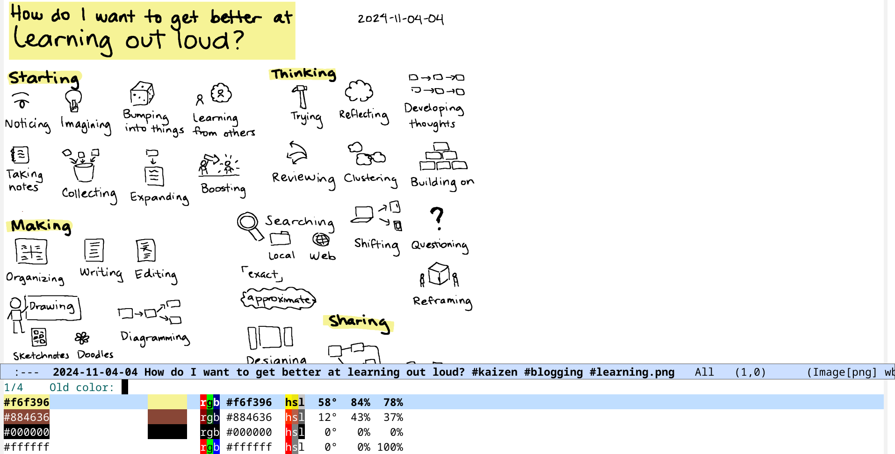
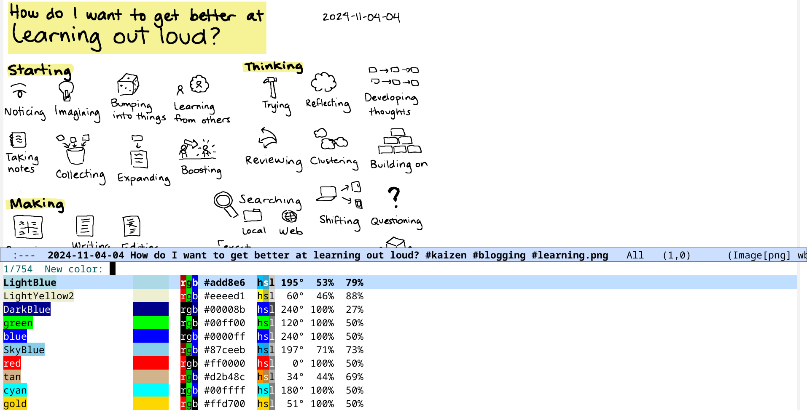
(defvar my-recolor-command "/home/sacha/bin/recolor.py")
(defun my-image-colors-by-frequency (file)
"Return the colors in FILE."
(with-temp-buffer
(call-process my-recolor-command nil t nil (expand-file-name file))
(goto-char (point-min))
(delete-region (point-min) (1+ (line-end-position)))
(mapcar (lambda (o) (concat "#" (car (split-string o "[ \t]"))))
(split-string (string-trim (buffer-string)) "\n"))))
(defun my-completing-read-color (prompt list)
"Display PROMPT and select a color from LIST."
(completing-read
(or prompt "Color: ")
(mapcar (lambda (o)
(faces--string-with-color o o))
list)))
(defun my-image-recolor-interactively (file)
(interactive (list (read-file-name "File: " (concat my-sketches-directory "/") nil t
nil
(lambda (file) (string-match "\\.png\\'" file)))))
(save-window-excursion
(find-file file)
;; Identify the colors by frequency
(let (choice done)
(while (not done)
(let* ((by-freq (my-image-colors-by-frequency file))
(old-color (my-completing-read-color "Old color: " by-freq))
(new-color (read-color "New color: " t))
(temp-file (make-temp-file "recolor" nil (concat "." (file-name-extension file))))
color-map)
(when (string-match "#\\(..\\)..\\(..\\)..\\(..\\).." new-color)
(setq new-color (concat (match-string 1 new-color)
(match-string 2 new-color)
(match-string 3 new-color))))
(setq color-map (replace-regexp-in-string "#" "" (concat old-color "," new-color)))
(call-process my-recolor-command nil nil nil
(expand-file-name file)
"--colors"
color-map
"--output" temp-file)
(find-file temp-file)
(pcase (read-char-choice "(y)es, (m)ore, (r)edo, (c)ancel: " "yrc")
(?y
(kill-buffer)
(rename-file temp-file file t)
(setq done t))
(?m
(kill-buffer)
(rename-file temp-file file t))
(?r
(kill-buffer)
(delete-file temp-file))
(?c
(kill-buffer)
(delete-file temp-file)
(setq done t))))))))
It would be nice to update the preview as I selected things in the completion, which I might be able to do by making a consult–read command for it. It would be extra cool if I could use this webkit-based color picker. Maybe someday!
Org Mode sketch: links image
(defun my-open-images-in-krita (files)
(apply 'call-process "krita" nil 0 nil "--nosplash" files))
(defun my-open-images-in-gwenview (files)
(apply 'call-process "gwenview" nil 0 nil "--slideshow" files))
(defun my-open-images-in-feh (files)
(apply 'call-process "feh" nil nil nil "-D" "1" "-F" files))
(defun my-org-image-open (id &optional arg directories)
"Open image named ID.
If ARG is specified, prompt for application to open it in."
(interactive (list
(completing-read "Sketch ID: " (my-list-sketches "."))
(current-prefix-arg)))
(let* ((files (mapcar (lambda (o) (my-get-image-filename o (or my-image-directories))) (if (listp id) id (list id))))
(input (if arg (read-char "(k)rita, (g)wenview, (f)eh: ") ?k)))
(funcall
(cond
((eq input ?g) 'my-open-images-in-gwenview)
((eq input ?f) 'my-open-images-in-feh)
(t 'my-open-images-in-krita))
files)))
(defun my-org-sketch-edit (id &optional arg)
(my-org-image-open id arg my-sketch-directories))
(defun my-org-sketch-open (id &optional arg)
(delete-other-windows)
(with-selected-window (split-window-right)
(find-file (my-get-image-filename
id my-sketch-directories))))
(defun my-org-image-export (link description format info)
(let* ((path (concat "https://sketches.sachachua.com/filename/" link))
(image (concat "https://sketches.sachachua.com/static/" link))
(backend (org-export-backend-name (plist-get info :back-end)))
(desc (or description link)))
(cond
((eq backend '11ty) (format "{%% sketchLink \"%s\", \"%s\" %%}" link desc))
((or (eq format 'html) (eq format 'wp))
(if description
(format "<a target=\"_blank\" href=\"%s\">%s</a>" path desc)
(format "<div style=\"text-align: center\"><a target=\"_blank\" href=\"%s\"><img src=\"%s\" style=\"max-height: 90vw; height: auto; width: auto\"><br />%s</a></div>" path image desc)))
((eq format 'latex) (format "\\href{%s}{%s}" path desc))
((eq format 'texinfo) (format "@uref{%s,%s}" path desc))
((eq format 'md)
(if (file-exists-p (expand-file-name link "~/sketches"))
(format "{{<photo src=\"%s\">}}" image)
(format "{{<photo nas=\"1\" src=\"%s\">}}" link)))
((eq format 'ascii) (format "%s <%s>" desc path))
(t path))))
(defun my-org-image-export-link (link description format info)
(let* ((backend (if (plist-get info :backend) (org-export-backend-name (plist-get info :back-end))
format))
(desc (or description link)))
(cond ((eq backend 'md)
(format "[%s](%s)" desc link))
((eq backend '11ty)
(format "{%% sketchLink \"%s\", \"%s\" %%}"
(replace-regexp-in-string "\"" "\\\"" (file-name-base link) nil t)
(replace-regexp-in-string "\"" "\\\"" desc nil t)))
((eq backend 'html)
(format "<a href=\"https://sketches.sachachua.com/filename/%s\">%s</a>" (file-name-nondirectory link) desc))
(t (format "[[%s][%s]]" link desc)))))
(defun my-org-image-export-thumb (link description format info)
(let* ((path (concat "https://sketches.sachachua.com/filename/" link))
(image (concat "https://sketches.sachachua.com/static/" link))
(backend (org-export-backend-name (plist-get info :back-end)))
(desc (replace-regexp-in-string "%23" "#" (or description link))))
(cond
((eq backend '11ty) (format "{%% sketchThumb \"%s\", \"%s\" %%}" (file-name-base link) desc))
((or (eq format 'html) (eq format 'wp))
(format "<div class=\"sketch-thumbnail\"><a target=\"_blank\" href=\"%s\"><img src=\"%s\"><br />%s</a></div>" path image desc))
((eq format 'latex) (format "\\href{%s}{%s}" path desc))
((eq format 'texinfo) (format "@uref{%s,%s}" path desc))
((eq format 'md)
(if (file-exists-p (expand-file-name link "~/sketches"))
(format "{{<photo src=\"%s\">}}" image)
(format "{{<photo nas=\"1\" src=\"%s\">}}" link)))
((eq format 'ascii) (format "%s <%s>" desc path))
(t path))))
(defun my-org-image-export-full (link description format info)
(let* ((path (concat "https://sketches.sachachua.com/filename/" link))
(image (concat "https://sketches.sachachua.com/static/" link))
(backend (org-export-backend-name (plist-get info :back-end)))
(desc (or description link)))
(cond
((eq backend '11ty) (format "{%% sketchFull \"%s\", \"%s\" %%}" link desc))
((or (eq format 'html) (eq format 'wp))
(if description
(format "<figure><a target=\"_blank\" href=\"%s\"><img src=\"%s\" /><br /></a><figcaption>%s</figcaption></figure>" path image desc)
(format "<figure><a target=\"_blank\" href=\"%s\"><img src=\"%s\" /><br /><figcaption>%s</figcaption></a></figure>" path image desc)))
((eq format 'latex) (format "\\href{%s}{%s}" path desc))
((eq format 'texinfo) (format "@uref{%s,%s}" path desc))
((eq format 'md)
(if (file-exists-p (expand-file-name link "~/sketches"))
(format "{{<photo src=\"%s\">}}" image)
(format "{{<photo nas=\"1\" src=\"%s\">}}" link)))
((eq format 'ascii) (format "%s <%s>" desc path))
(t path))))
(defun my-org-sketch-complete (&optional prefix)
(concat "sketch:" (file-name-nondirectory (my-complete-sketch-filename))))
(defun my-org-sketch-complete-full (&optional prefix)
(concat "sketchFull:" (file-name-nondirectory (my-complete-sketch-filename))))
(defun my-org-image-complete (&optional prefix)
(concat "image:"
(completing-read "Image: " (my-list-sketches "." nil my-image-directories))))
;; Based on https://emacs.stackexchange.com/questions/38098/org-mode-custom-youtube-link-syntax
(defun my-org-sketch-preview (start end path bracketp)
"Include overlays for sketches."
(when (display-graphic-p)
(let ((filename (my-get-sketch-filename path))
(refresh nil)
(link (save-excursion
(goto-char start)
(org-element-lineage
(save-match-data (org-element-context))
'(link) t)))) ;; set this someday
(when (and (not (org-element-property :contents-begin link)) filename)
(let ((width
;; Apply `org-image-actual-width' specifications.
(cond
((not (image-type-available-p 'imagemagick)) nil)
((eq org-image-actual-width t) nil)
((numberp org-image-actual-width) org-image-actual-width)
;; Pick this up from the paragraph someday
))
(old (get-char-property-and-overlay start 'org-image-overlay)))
(if (and (car-safe old) refresh)
(image-refresh (overlay-get (cdr old) 'display))
(let ((image (create-image filename
(and width 'imagemagick)
nil
:width width)))
(when image
(let* ((ov (make-overlay start end)))
(overlay-put ov 'display image)
(overlay-put ov 'face 'default)
(overlay-put ov 'org-image-overlay t)
(overlay-put ov 'evaporate t)
(overlay-put
ov 'modification-hooks
(list 'org-display-inline-remove-overlay))
(push ov org-inline-image-overlays))))))))))
(use-package org
:config
(setq org-image-actual-width 600)
(org-link-set-parameters
"sketch"
:follow 'my-org-sketch-open
:export 'my-org-image-export-link
:complete 'my-org-sketch-complete
:activate-func nil)
(org-link-set-parameters
"sketchLink"
:follow 'my-org-sketch-open
:export 'my-org-image-export-link
:complete 'my-org-sketch-complete
:activate-func nil)
(org-link-set-parameters
"sketchThumb"
:follow 'my-org-sketch-open
:export 'my-org-image-export-thumb
:complete 'my-org-sketch-complete
:activate-func nil)
(org-link-set-parameters
"sketchFull"
:follow 'my-org-sketch-open
:export 'my-org-image-export-full
:complete 'my-org-sketch-complete-full
:activate-func nil))
(use-package org
:config
(setq org-image-actual-width 600)
(org-link-set-parameters
"image"
:follow 'my-org-image-open
:export 'my-org-image-export
:complete 'my-org-image-complete))
Org Mode custom link: copy to clipboard emacs org
I have a tiny corporation for my consulting. I do all of my own paperwork. I have lots of notes in Org Mode for infrequent tasks like the tax-related paperwork I do once a year. My notes include checklists, links, and Org Babel blocks for calculations. I often need to copy standard text (ex: the name of the company) or parts of the output of my Org Babel blocks (ex: tax collected) so that I can fill in web forms on the Canada Revenue Agency website.
This little snippet makes it easy to copy text for
pasting. It defines a custom Org link that starts
with copy:. When I follow the link by clicking
on it or using C-c C-o (org-open-at-point), it
copies the text to the kill ring (which is what
Emacs calls the clipboard) so that I can paste it
anywhere. For example, [[copy:Hello world]]
becomes a link to copy "Hello world". Copying
means never having to worry about typos or
accidentally selecting only part of the text.
(defun my-org-copy-export (link desc format)
(pcase format
('org (org-link-make-string (concat "copy:" link) desc))
(_ desc)))
(use-package org
:config
(org-link-set-parameters
"copy"
:follow (lambda (link) (kill-new link))
:export #'my-org-copy-export))
I can use these links as part of my checklist so
that I can quickly fill in things like my business
name and other details. I can put sensitive
information like my social insurance number in a
GPG-encrypted file. (Just set up your GPG keys and
end a filename with .gpg, and Emacs will take
care of transparently encrypting and decrypting
the file.)
I can also export those links as part of my Org Babel output. For example, the following code calculates the numbers I need to fill in a T5 form for the other-than-eligible dividends that I issue myself according to the T5 instructions from the CRA.
(let* ((box-10 1234) ; fake number for demo
(box-11 (* 1.15 box-10))
(box-12 (* 0.090301 box-11)))
`((box-10 ,(format "[[copy:%.2f][%.2f]]" box-10 box-10))
(box-11 ,(format "[[copy:%.2f][%.2f]]" box-11 box-11))
(box-12 ,(format "[[copy:%.2f][%.2f]]" box-12 box-12))))
| box-10 | 1234.00 |
| box-11 | 1419.10 |
| box-12 | 128.15 |
Hello world On my computer, the numbers become links that I can click and copy. Another little shortcut thanks to Emacs and Org Mode!
Helm completion with my-helm-org-sketches
(defun my-helm-source-org-sketch-list ()
(my-list-sketches "."))
(defun my-helm-org-insert-sketch-candidates (&optional candidates)
(mapc (lambda (o)
(org-insert-link nil (concat "sketch:" o))
(insert "\n"))
(helm-marked-candidates)))
(defun my-helm-open-sketches-in-krita (&optional candidates)
(my-sketch-open-in-krita (helm-marked-candidates)))
(defun my-helm-open-sketches-in-gwenview (&optional candidates)
(my-sketch-open-in-gwenview (helm-marked-candidates)))
(defun my-helm-open-sketches-in-feh (&optional candidates)
(my-sketch-open-in-feh (helm-marked-candidates)))
(defvar my-helm-source-org-sketches
'((name . "Sketches")
(candidates . my-helm-source-org-sketch-list)
(action . (("Insert" . my-helm-org-insert-sketch-candidates)
("Open in Krita" . my-helm-open-sketches-in-krita)
("Open in Gwenview" . my-helm-open-sketches-in-gwenview)
("Open as Feh slideshow" . my-helm-open-sketches-in-feh)))
(persistent-action . my-helm-open-sketches-in-gwenview)))
(defun my-helm-org-sketches ()
(interactive)
(helm :sources '(my-helm-source-org-sketches)
:buffer "*helm-org-sketches*"))
Templates image
(defun my-prepare-drawing-template (&optional name date template)
"Create the image file for NAME. Return the new filename."
(let* ((date (or date (substring (org-read-date nil nil ".") 0 10)))
(data (my-journal-post (or name "sketch") :Date date)))
(setq name (expand-file-name
(concat (assoc-default 'ZIDString data)
(if name
(concat " "
(my-convert-sketch-title-to-filename (or name "")))
"")
"." (file-name-extension template))
"~/Dropbox/Inbox"))
(copy-file (or template my-index-card-template-file) name)
name))
(defun my-org-insert-new-index-card-link ()
(interactive)
(let ((filename
(my-prepare-index-card-template)))
(insert "[[sketch:" filename "]]\n")
(save-window-excursion
(my-rotate-screen 180)
(shell-command
(concat (shell-quote-argument my-sketch-executable)
" " (shell-quote-argument filename) " &")))))
(defun my-prepare-index-card-template (&optional name date)
"Create the image file for NAME. Return the new filename."
(my-prepare-drawing-template name date my-index-card-template-file))
(defun my-prepare-large-template (&optional name date)
"Create the image file for NAME. Return the new filename."
(my-prepare-drawing-template name date my-sketch-large-template-file))
(defun my-prepare-index-card (&optional name date)
"Prepare the index card for NAME.
Rotate the screen and show a button to un-rotate the screen."
(interactive (list (read-string "Name: ")
(substring (if current-prefix-arg (org-read-date) (org-read-date nil nil ".")) 0 10)))
(setq my-index-card-file-name (my-prepare-index-card-template name date))
(save-window-excursion
(my-rotate-screen 180)
(shell-command
(concat (shell-quote-argument my-sketch-executable)
" " (shell-quote-argument my-index-card-file-name) " &")))
(my-set-up-sketch-buffer))
(defun my-prepare-index-card-for-subtree ()
"Create an index card template for the current subtree."
(interactive)
(let* ((heading (elt (org-heading-components) 4)))
(unless (org-entry-get (point) "Effort") (org-set-property "Effort" "0:15"))
(if (derived-mode-p 'org-agenda-mode) (org-agenda-clock-in) (org-clock-in))
(my-org-quantified-track "Drawing")
(if (org-at-heading-p) (forward-line 1))
(my-prepare-index-card heading)))
(defun my-helm-org-prepare-index-card-for-subtree (candidate)
(let ((location (org-refile--get-location candidate my-helm-org-refile-locations)))
(save-window-excursion
(save-excursion
(org-refile 4 nil location)
(my-prepare-index-card-for-subtree)) t)))
Dot-grid box templates
Related: Doodling icons in a grid
(require 'svg)
(defvar my-dot-grid-boxes-params
'(:num-rows 5
:num-cols 7
:dot-size 3
:line-width 3
:dot-spacing 60
:grid-color "#a6d2ff"
:row-size 6
:col-size 6
:text-size 50
:margin-top 2))
(cl-defun my-dot-grid-boxes-template (&key (num-rows 5)
(num-cols 7)
(dot-size 3)
(line-width 3)
(dot-spacing 60)
(grid-color "#a6d2ff")
(row-size 6)
(col-size 6)
(text-size 50)
(margin-top 2))
"Prepare an SVG with a dot grid within a table with solid gridlines.
Each dot is a solid circle of DOT-SIZE filled with GRID-COLOR spaced DOT-SPACING apart.
The gridlines are also GRID-COLOR. They should divide the image into ROWS and COLUMNS, which are ROW-SIZE * DOT-SPACING and COL-SIZE * DOT-SPACING apart.
The table has a top margin with the dot grid, and this is MARGIN-TOP * DOT-SPACING tall.
All dots are centered on their x, y coordinates.
The rest of the image's background is white."
(let* ((width (* num-cols col-size dot-spacing))
(height (* dot-spacing (+ margin-top (* num-rows row-size))))
(margin-top-height (* margin-top dot-spacing))
(svg (svg-create width height)))
(dotimes (row (+ (* num-rows row-size) margin-top))
(dotimes (col (1+ (* num-cols col-size)))
(let ((x (* col dot-spacing))
(y (* row dot-spacing)))
(svg-circle svg x y dot-size
:fill-color grid-color
:stroke-width 0))))
(when (> text-size 0)
(dotimes (i (* num-rows num-cols))
(let ((x (* (% i num-cols) col-size dot-spacing))
(y (+ margin-top-height (* (/ i num-cols) row-size dot-spacing))))
(svg-text svg
(number-to-string (1+ i))
:x x :y (+ y text-size)
:fill-color grid-color
:font-size text-size
:stroke-width 0))))
(dotimes (col (1+ num-cols))
(let ((x (* col col-size dot-spacing)))
(svg-line svg x margin-top-height x height
:stroke-color grid-color
:stroke-width line-width)))
(dotimes (row (1+ num-rows))
(let ((y (+ margin-top-height (* row row-size dot-spacing))))
(svg-line svg 0 y width y
:stroke-color grid-color
:stroke-width line-width)))
svg))
(with-temp-file "~/Dropbox/sketches/icon-grid.svg"
(svg-print
(my-dot-grid-boxes-template)))
(cl-defun my-dot-grid-boxes-list (&key (num-rows 5)
(num-cols 7)
(dot-spacing 60)
(row-size 6)
(col-size 6)
(text-bottom 1)
(margin-top 2)
filename
&allow-other-keys)
"Return a list of boxes."
(let* ((margin-top-height (* margin-top dot-spacing))
(max-image-size nil)
(size (image-size (create-image filename nil nil :scale 1) t))
(ratio (/ (car size) (* num-cols col-size dot-spacing 1.0)))
results)
(message "Expected adjusted height %f actual height %f"
(* (+ margin-top (* num-rows row-size)) dot-spacing ratio)
(cdr size))
(dotimes (i (* num-rows num-cols))
(let* ((r (/ i num-cols))
(c (% i num-cols))
(y (* (+ margin-top-height (* r col-size dot-spacing)) ratio))
(x (* c row-size dot-spacing ratio))
(width (* col-size dot-spacing ratio))
(height (* (- row-size text-bottom) dot-spacing ratio)))
(setq results (cons
`((r . ,r)
(c . ,c)
(i . ,i)
(x . ,(floor x))
(y . ,(floor y))
(w . ,(floor width))
(h . ,(floor height))
(x2 . ,(floor (+ x width)))
(y2 . ,(floor (+ y height))))
results))))
(nreverse results)))
(defvar my-sketch-icon-directory "~/sync/sketches/icons")
(cl-defun my-dot-grid-boxes-extract (&rest args &key filename labels
(output-dir my-sketch-icon-directory) force &allow-other-keys)
(let* ((list (apply #'my-dot-grid-boxes-list args))
(base (file-name-base filename))
(ext (concat "." (file-name-extension filename)))
(id
(if (string-match "^[0-9][0-9][0-9][0-9]-[0-9][0-9]-[0-9][0-9]-[0-9][0-9]" base)
(match-string 0 base)
""))
results
args)
(dolist (icon list)
(let-alist icon
(let ((new-filename (expand-file-name
(concat (my-make-slug (elt labels .i)) "--"
id
(format "-%d-%d"
.r .c)
ext)
output-dir)))
(push `((term . ,(elt labels .i))
(icon . ,(file-name-nondirectory new-filename))
(source . ,(file-name-nondirectory filename)))
results)
(when (or force (not (file-exists-p new-filename)))
(setq args
(list (expand-file-name filename)
"-crop"
(format "%dx%d+%d+%d" .w .h .x .y)
"+repage"
new-filename))
(message "%s" (concat "convert " (mapconcat #'shell-quote-argument args " ")))
(apply #'call-process "convert" nil nil nil args)))))
(nreverse results)))
(defun my-dot-grid-boxes-labels (id)
(with-temp-buffer
(insert-file-contents (concat (file-name-sans-extension (my-get-sketch-filename id)) ".txt"))
(goto-char (point-min))
(re-search-forward "^ *$")
(split-string (string-trim (buffer-substring (point) (point-max))) "\n")))
This updates the index.
(defun my-sketch-icon-update-index (list)
(let (data
(index-file (expand-file-name "index.json" my-sketch-icon-directory)))
(with-temp-file index-file
(setq data
(if (file-exists-p index-file)
(json-read-file index-file)
'()))
(dolist (entry list)
;; Remove current entry
(setq data (seq-remove (lambda (o)
(and (string-match (regexp-quote (alist-get 'source o)) (alist-get 'source entry))
(string= (alist-get 'term o) (alist-get 'term entry))
(string= (alist-get 'icon o) (alist-get 'icon entry))))
data))
;; Add a new entry
(push
`((term . ,(alist-get 'term entry))
(icon . ,(alist-get 'icon entry))
(source . ,(alist-get 'source entry)))
data))
(insert (json-encode (sort data :key (lambda (o) (alist-get 'term o)) :lessp #'string<))))))
(defun my-dot-grid-boxes-process (id &optional force)
(interactive
(list
(my-complete-sketch-filename "drawing")
current-prefix-arg))
(let* ((labels (my-dot-grid-boxes-labels id))
list)
(cl-assert (= (% (length labels) 7) 0))
(cl-assert (> (length labels) 1))
(setq list
(my-dot-grid-boxes-extract :output-dir my-sketch-icon-directory
:num-rows (/ (length labels) 7)
:filename (my-get-sketch-filename id)
:labels labels
:force force))
(my-sketch-icon-update-index list)))
(defun my-dot-grid-boxes-process-all-icons ()
(interactive)
(dolist (source (my-sketches "icons")) (my-dot-grid-boxes-process source)))
Easily backfill my journal
(defun my-draw-journal-entry (date)
"Creates a blank journal entry for DATE and brings up the log."
(interactive (list (org-read-date)))
;; Open the Quantified Awesome time log for that date
(let ((filename (my-get-journal-entry date))
(day (format-time-string "%A" (org-time-string-to-time date))))
(if filename
(my-org-sketch-open filename)
;; (browse-url (format "http://quantifiedawesome.com/records?start=%s&end=%s"
;; date
;; (format-time-string
;; "%Y-%m-%d"
;; (seconds-to-time
;; (+ (org-time-string-to-seconds date) 86400)))))
(setq filename
(my-prepare-index-card-template (concat day " #daily #journal") date))
(my-org-sketch-open filename))))
(defun my-get-journal-entry (date)
"Returns the filename for the journal sketch for DATE."
(car
(-filter (lambda (x) (not (string-match "weekly" x)))
(my-get-sketch-filenames
(format "%s.* .*#daily" date)
t))))
(defun my-get-missing-journal-dates (start-date end-date)
"Return a list of dates missing journal entries.
Range is specified by START-DATE (inclusive) and END-DATE (exclusive)."
(let* ((current-day (org-time-string-to-absolute end-date))
(start-day (org-time-string-to-absolute start-date))
current-date
current-date-string
missing-list)
(while (>= current-day start-day)
(setq current-date (calendar-gregorian-from-absolute current-day))
(setq current-date-string (format "%04d-%02d-%02d" (elt current-date 2) (elt current-date 0) (elt current-date 1)))
(unless (my-get-journal-entry current-date-string)
(add-to-list 'missing-list current-date-string))
(setq current-day (1- current-day)))
missing-list))
(defun my-show-missing-journal-entries (since)
(interactive (list (if current-prefix-arg (org-read-date) (org-read-date nil nil "-7"))))
(let ((missing-dates (my-get-missing-journal-dates since (org-read-date nil nil "."))))
(with-current-buffer (my-set-up-sketch-buffer)
(mapc
(lambda (date)
(widget-create 'push-button
:date date
:notify (lambda (widget &rest ignore)
(my-draw-journal-entry (plist-get (cdr widget) :date)))
date))
missing-dates)
(widget-setup)
(widget-minor-mode))))
Rename scanned index cards
(use-package s)
(defun my-process-tiff (files)
"Convert, display, rename, and upload FILES."
(interactive (list (dired-get-marked-files)))
(unless (listp files) (setq files (list files)))
(save-window-excursion
(apply 'call-process "mogrify" nil nil nil (append (list "-format" "png" "-quality" "1") files))
(delete-other-windows)
(setq files
(mapcar
(lambda (filename)
(find-file (setq filename (s-append ".png" (s-chop-suffix ".tif" filename))))
(let ((new-name
(read-string "New name: "
(concat
(if (string-match "/\\(\\([0-9]+-[0-9]+-[0-9]+\\)\\( ?.*\\)?\\)\\.png" filename)
(match-string 1 filename)
filename)
" "))))
(rename-file filename (concat new-name ".png"))
(setq filename (expand-file-name (concat new-name ".png") (file-name-directory filename)))))
files)))
(find-file "~/Dropbox/Public/sharing/index.org")
(goto-char (point-min))
(when (re-search-forward (regexp-quote "#+ORGLST: sketchinbox"))
(forward-line 1)
(org-end-of-item-list)
(apply 'call-process "up" nil t nil files)))
(defun my-convert-index-card-to-png (o)
(lambda (o)
(call-process "krita" nil nil nil o "--export" "--export-filename"
(concat (file-name-sans-extension o) ".png"))
(rename-file o "~/Dropbox/Inbox/backup/" t)))
(defun my-convert-index-card-tiffs-to-pngs ()
(interactive)
(let ((pattern "^\\(IMG\\|[0-9]+-[0-9]+-[0-9]+\\).*.\\(tif\\|psd\\)$"))
(when (directory-files "~/Dropbox/Inbox/" t pattern)
;; Convert the TIFFs first
(mapc 'my-convert-index-card-to-png
(directory-files "~/Dropbox/Inbox/" t pattern)))))
(defun my-convert-and-upload-cards ()
"Trust in existing filenames, upload without modification."
(interactive)
(my-convert-index-card-tiffs-to-pngs)
(my-upload-scanned-cards))
(defun my-rename-scanned-card (filename)
(find-file filename)
(delete-other-windows)
(let ((base (file-name-sans-extension filename))
notes)
(when (string-match "/IMG.*\\|\\(\\([0-9]+-[0-9]+-[0-9]+\\)\\( ?.*\\)?\\)" base)
(let ((kill-buffer-query-functions nil)
old-name
(new-name (read-string "New name: "
(if (match-string 1 base)
(concat (match-string 1 base))
""))))
(while (and (string-match "^[0-9]+-[0-9]+-[0-9]+[a-z]" new-name)
(setq old-name (my-get-sketch-filename (match-string 0 new-name)))
(and old-name
(not (string= old-name filename))
(not (string= (file-name-nondirectory old-name)
(concat (s-trim new-name) "." (file-name-extension filename))))))
(setq new-name
(read-string (format "Already exists (%s) - new name: " old-name)
new-name)))
(when (string-match new-name "^\\(.*?\\) *| *\\(.*\\)")
(with-current-buffer (find-file "~/sync/orgzly/Inbox.org")
(goto-char (point-max))
(insert "\n* " (match-string 1 new-name) "\n" (match-string 2 new-name))
(save-buffer))
(setq new-name (match-string 1 new-name)))
(when (> (length new-name) 0)
(revert-buffer t t)
(rename-file filename (concat (s-trim new-name) "." (file-name-extension filename)) t)
(kill-buffer))))))
(defun my-rename-scanned-cards ()
"Display and rename the scanned or saved files."
(interactive)
(my-convert-index-card-tiffs-to-pngs)
(mapc (lambda (o)
(when (string= (file-name-extension o) "psd")
(my-convert-index-card-to-png o)
(setq o (concat (file-name-sans-extension o) ".png")))
(my-rename-scanned-card o))
(reverse (directory-files "~/Dropbox/Inbox/" t "^\\(IMG\\|[0-9]+-[0-9]+-[0-9]+\\).*.\\(psd\\|png\\|jpg\\)")))
(my-upload-scanned-cards))
(defun my-clean-index-card-directory ()
"Remove files marked for deletion and move private files."
(shell-command "mv ~/Dropbox/Inbox/*delete* ~/Dropbox/Inbox/backup")
(shell-command "mv ~/Dropbox/Inbox/*private* ~/cloud/private-sketches/"))
(defun my-upload-scanned-cards ()
(interactive)
(my-clean-index-card-directory)
(with-current-buffer (get-buffer-create "*Files to be uploaded*")
(erase-buffer)
(insert (mapconcat 'identity (directory-files "~/Dropbox/Inbox" nil "^[0-9]+-[0-9]+-[0-9]+[^ ]? .*.\\(png\\|jpg\\)") "\n"))
(goto-char (point-min))
(switch-to-buffer (current-buffer))
(delete-other-windows))
(shell-command "~/bin/copy-sketches"))
I might tweak the files a little more after I rename them, so I don't
automatically upload them. When I'm happy with the files, I use a Node
script to upload the files to Flickr, move them to my To blog
directory, and copy Org-formatted text that I can paste into my
learning outline.
Automatically resize images
The image+ package is handy for displaying the images so
that they're scaled to the window size.
(use-package image+
:if my-laptop-p
;; :load-path "~/elisp/Emacs-imagex"
:commands (imagex-global-sticky-mode imagex-auto-adjust-mode)
:init (progn (imagex-global-sticky-mode) (imagex-auto-adjust-mode)))
Get information for sketched books
For sketchnotes of books, I set up the filename based on properties in my Org Mode tree for that book.
(defun my-prepare-sketchnote-file ()
(interactive)
(let* ((base-name (org-entry-get-with-inheritance "BASENAME")))
(unless base-name (error "Missing basename property"))
(my-org-sketch-open (my-prepare-large-template base-name))))
By using Emacs Lisp functions to set up files that I'm going to use in an external application, I minimize fussing about with the keyboard while still being able to take advantage of structured information.
Do you work with external applications? Where does it make sense to use Emacs Lisp to make setup or processing easier?
Make it easy to follow up on a sketch
(defun my-follow-up-on-sketch (filename)
"Prompt for FILENAME to follow up on.
Create an index card with it as a layer, and add the ref to the filename."
(interactive (list (helm-read-file-name "Image: " :initial-input "~/sketches/")))
;; Allow the specification of a short identifier
(unless (file-exists-p filename)
(setq filename (car (directory-files "~/sketches" t (concat "^" filename)))))
(let ((async-shell-command-buffer 'new-buffer)
(index-card (my-prepare-index-card-template
(format "-- index card ref %s"
(and (string-match "^[^ \\.]+" (file-name-nondirectory filename))
(match-string 0 (file-name-nondirectory filename)))))))
(shell-command (format "convert %s %s -colorspace cmyk %s"
(shell-quote-argument (expand-file-name my-index-card-template-file))
(shell-quote-argument (expand-file-name filename))
(shell-quote-argument (expand-file-name index-card))))
(shell-command (format "%s %s &"
(shell-quote-argument my-sketch-executable)
(shell-quote-argument (expand-file-name index-card))))
(my-rotate-screen 180)
(my-set-up-sketch-buffer)))
Digital index piles with Emacs
Somewhat daunted by the prospect of categorizing more than a hundred sketches and blog posts for my monthly review, I spent some time figuring out how to create the digital equivalent of sorting index cards into various piles.
2015-02-01 Digital piles of index cards – index card #indexing #organization #pkm
In fact, wouldn't it be super-cool if the items could automatically guess which category they should probably go in, prompting me only if it wasn't clear?
I wanted to write a function that could take a list structured like this:
- Keyword A
- Previous links
- Keyword B
- Previous links
- Link 1 with Keyword A
- Link 2 with Keyword B
- Link 3 with Keyword A
Link 4
It should file Link 1 and 3 under Keyword A, Link 2 under Keyword B, and prompt me for the category for Link 4. At that prompt, I should be able to select Keyword A or Keyword B, or specify a new category.
Inspired by John Kitchin's recent post on defining a Helm source, I wanted to get it to work with Helm.
First step: I needed to figure out the structure of the list, maybe including a sample from the category to make it clearer what's included.
org-list.elseemed to have useful functions for this.org-list-structgave me the structure of the current list. Let's say that a category is anything whose text does not matchorg-link-bracket-re.(defun my-org-get-list-categories () "Return a list of (category indent matching-regexp sample). List categories are items that don't contain links." (let ((list (org-list-struct)) last-category results) (save-excursion (mapc (lambda (x) (goto-char (car x)) (let ((current-item (buffer-substring-no-properties (+ (point) (elt x 1) (length (elt x 2))) (line-end-position)))) (if (string-match org-link-bracket-re (buffer-substring-no-properties (point) (line-end-position))) ;; Link - update the last category (when last-category (if (< (elt x 1) (elt last-category 1)) (setq results (cons (append last-category (list (match-string-no-properties 3 (buffer-substring-no-properties (point) (line-end-position))))) (cdr results)))) (setq last-category nil)) ;; Category (setq results (cons (setq last-category (list current-item (elt x 1) (concat "^" (make-string (elt x 1) ?\ ) (regexp-quote (concat (elt x 2) current-item)) "$"))) results))))) list)) (append '(("x" 2 "^$" nil)) results)))The next step was to write a function that guessed the list category based on the item text, and moved the item there.
(defvar my-helm-org-list-candidates nil) (defun my-helm-org-list-categories-init-candidates () "Return a list of categories from this list in a form ready for Helm." (setq my-helm-org-list-candidates (mapcar (lambda (x) (cons (if (elt x 3) (format "%s - %s" (car x) (elt x 3)) (car x)) x)) (my-org-get-list-categories)))) (defun my-org-move-current-item-to-category (category) "Move current list item under CATEGORY earlier in the list. CATEGORY can be a string or a list of the form (text indent regexp). Point should be on the next line to process, even if a new category has been inserted." (interactive (list (completing-read "Category: " (my-org-get-list-categories)))) (when category (let* ((col (current-column)) (item (point-at-bol)) (struct (org-list-struct)) (category-text (if (stringp category) category (elt category 0))) (category-indent (if (stringp category) 2 (+ 2 (elt category 1)))) (category-regexp (if (stringp category) category (elt category 2))) (pos (point)) s) (setq s (org-remove-indentation (buffer-substring-no-properties item (org-list-get-item-end item struct)))) (save-excursion (if (string= category-text "x") (org-list-send-item item 'delete struct) (goto-char (caar struct)) (if (re-search-forward category-regexp nil t) (progn ;; needs a patch to ol.el to check if stringp (org-list-send-item item (point-at-bol) struct) (org-move-item-down) (org-indent-item)) (goto-char (car (last (car (last struct))))) (org-list-insert-item (point-at-bol) struct (org-list-prevs-alist struct)) (let ((old-struct (copy-tree struct))) (org-list-set-ind (point-at-bol) struct 0) (org-list-struct-fix-bul struct (org-list-prevs-alist struct)) (org-list-struct-apply-struct struct old-struct)) (goto-char (point-at-eol)) (insert category-text) (org-list-send-item item 'end struct) (org-indent-item) (org-indent-item)) (recenter)))))) (defun my-org-guess-list-category (&optional categories) (interactive) (require 'cl-lib) (unless categories (setq categories (my-helm-org-list-categories-init-candidates))) (let* ((beg (line-beginning-position)) (end (line-end-position)) (string (buffer-substring-no-properties beg end)) (found (cl-member string categories :test (lambda (string cat-entry) (unless (string= (car cat-entry) "x") (string-match (regexp-quote (downcase (car cat-entry))) string)))))) (when (car found) (my-org-move-current-item-to-category (cdr (car found))) t)))After that, I wrote a function that used Helm to prompt me for a category in case it couldn't guess the category. It took me a while to figure out that I needed to use
:initinstead of:candidatesbecause I wanted to read information from the buffer before Helm kicked in.(defvar my-org-browse-link-while-categorizing 'eww-readable "Set to nil to skip browsing.") (defun my-org-guess-uncategorized () "Interactively move linked list items to categories from the list. Try to guess categories based on substring matches." (interactive) ;(my-helm-org-list-categories-init-candidates) (let ((categories (my-org-get-list-categories)) category) (while (and (looking-at "^[-+] \\[\\[\\([^]]+\\)\\]\\[\\([^]]+*\\)") (not (string= "done" category))) (save-excursion ;; (when (eq my-org-browse-link-while-categorizing 'eww-readable) ;; (save-excursion (save-match-data (my-eww-browse-readable (match-string 1))))) (setq category (completing-read (match-string 2) categories)) (unless (string= category "done") (my-org-move-current-item-to-category category)))))) ;; From https://emacs.stackexchange.com/questions/36284/how-to-open-eww-in-readable-mode/47757 (defun my-eww-readable-nonce () "Once-off call to `eww-readable' after EWW is done rendering." (unwind-protect (eww-readable) (remove-hook 'eww-after-render-hook #'my-eww-readable-nonce))) (defun my-eww-browse-readable (url) (when (looking-at "^[-+] \\[\\[\\([^]]+\\)") (add-hook 'eww-after-render-hook #'my-eww-readable-nonce) (eww (match-string 1))))Actually, it might be helpful to be able to sort lists by a keyword.
(defun my-org-sort-list-by-regexp (regexp) (interactive "MRegexp: ") (let ((sort-func (lambda () (let ((line (buffer-substring-no-properties (point) (line-end-position)))) (if (string-match regexp line) (if (string-match org-link-bracket-re line) (match-string 2 line) "ZZZ") "ZZZZZ"))))) (funcall (cond ((org-at-table-p) 'org-table-sort-lines) ((org-at-item-p) 'org-sort-list) (t 'org-sort-entries)) nil ?f sort-func (lambda (a b) (if (and (stringp a) (stringp b)) (string< a b) t)))))This one files sketches into the headings I've started using in questions.org.
(defun my-refile-sketches-to-questions () (interactive) (while (looking-at "^ \\+ \\[\\[.*?\\]\\[\\(.*?\\) -- \\(.*?\\)\\]\\]\n") (let ((link (match-string 0)) (title (match-string 1))) (save-excursion (if (save-match-data (search-forward (concat "* " title) nil t)) (progn (forward-line) (insert (match-string 0)) (replace-match "")) (forward-line 1))))))
Xournalpp and Krita
Let's try xournal++.
(use-package org-krita
:ensure t
:quelpa (org-krita :fetcher github :repo "lepisma/org-krita" :files ("*.el" "resources"))
:hook (org-mode . org-krita-mode))
(use-package org-xournalpp
:disabled t
:quelpa (org-xournalpp :fetcher gitlab :repo "vherrmann/org-xournalpp" :files ("*.el" "resources"))
:hook (org-mode . org-xournalpp-mode))
I think I prefer Krita because I'm more used to cropping with it. Xournal++ uses vectors and makes it easier to insert space when drawing notebook-style stuff, so that might be interesting too. I probably want to write something that converts it to PNG for export.
Sketched books
Convenience functions to make my life easier when sketchnoting books.
(setq yas-indent-line 'fixed)
(defun my-convert-sketch-title-to-filename (text)
(setq text (replace-regexp-in-string "[?!]$" "" text))
(setq text (replace-regexp-in-string "[?!:] " " - " text)))
(ert-deftest my-convert-sketch-title-to-filename ()
(should (string= (my-convert-sketch-title-to-filename "Test") "Test"))
(should (string= (my-convert-sketch-title-to-filename "Another Test!") "Another Test"))
(should (string= (my-convert-sketch-title-to-filename "Does this work? Yes") "Does this work - Yes"))
(should (string= (my-convert-sketch-title-to-filename "Title: Subtitle") "Title - Subtitle"))
)
(defun my-convert-sketched-book-to-png ()
"Convert TIFF to PNG."
(interactive)
(let ((basename (org-entry-get-with-inheritance "BASENAME")))
(shell-command (format "convert \"c:/sacha/dropbox/inbox/%s.tif\" \"c:/sacha/dropbox/inbox/%s.png\""
basename
basename))))
(defun my-index-sketched-book ()
"Add entries to sketched books index."
(interactive)
(let* ((title (org-entry-get-with-inheritance "SHORT_TITLE"))
(author (org-entry-get-with-inheritance "AUTHOR"))
(basename (org-entry-get-with-inheritance "BASENAME"))
(base-file (format "~/Dropbox/Inbox/%s.png" basename)))
(when (file-exists-p base-file)
(copy-file base-file
(format "~/Dropbox/Packaging/sketched-books/%s.png" basename) t t))
(find-file "~/Dropbox/Packaging/sketched-books/index.org")
(vc-git-register (list (format "%s.png" basename)))
(goto-char (point-min))
(re-search-forward "<<insert-point>>")
(insert (format "\n- [[file:%s.png][%s - %s (sketched %s)]]\n [[file:%s.png]]\n\n"
basename
title
author
(substring basename 0 10)
basename))
(find-file "~/Dropbox/Packaging/sketched-books/ebook.org")
(goto-char (point-min))
(re-search-forward "<<insert-point>>")
(insert (format "\n* %s - %s (sketched %s)\n\n[[file:%s.png]]\n\n"
title
author
(substring basename 0 10)
basename))))
(defun my-package-sketched-book ()
"Add the latest sketch and package the collection."
(interactive)
(shell-command
(format "plink -A vagrant@127.0.0.1 -P 2222 \"cd ~/Dropbox/Packaging/sketched-books; git add '%s.png'; git commit -m 'Added %s - %s' -a; git push; make all\" &"
(org-entry-get-with-inheritance "BASENAME")
(org-entry-get-with-inheritance "SHORT_TITLE")
(org-entry-get-with-inheritance "AUTHOR"))))
Other sketches
Based on http://williamedwardscoder.tumblr.com/post/84505278488/making-image-mosaics Aspect ratio is width / height
(defun my-get-tile-dimensions (num-items orig-width orig-height target-aspect-ratio)
(let ((rows 1) (cols 1)
(current-aspect (/ orig-width (float orig-height)))
add-col-aspect
add-row-aspect)
(while (< (* rows cols) num-items)
(setq add-col-aspect (/ (* (1+ cols) (float orig-width))
(* rows orig-height))
add-row-aspect (/ (* cols (float orig-width))
(* (1+ rows) orig-height)))
(if (< (abs (- add-col-aspect target-aspect-ratio))
(abs (- add-row-aspect target-aspect-ratio)))
(setq cols (1+ cols))
(setq rows (1+ rows))))
(cons cols rows)))
(ert-deftest my-get-tile-dimensions ()
(should (equal (my-get-tile-dimensions 2 2 1 1) (cons 1 2)))
(should (equal (my-get-tile-dimensions 4 2 1 0.5) (cons 1 4)))
(should (equal (my-get-tile-dimensions 12 1 1 (/ 4.0 3.0)) (cons 4 3)))
(should (equal (my-get-tile-dimensions 11 1 1 (/ 4.0 3.0)) (cons 4 3)))
(should (equal (my-get-tile-dimensions 13 1 1 (/ 4.0 3.0)) (cons 4 4))))
(defun my-extract-image-filenames (beg end)
"Return the filenames from the links in this region."
(let (files)
(save-excursion
(goto-char (min beg end))
(while (re-search-forward "sketch:" (max beg end) t)
(let ((link (org-element-context)))
(add-to-list 'files (org-element-property :path link))))
files)))
(defun my-create-sketch-montage (files &optional tiles)
"Combine the sketches in the region."
(interactive
(list
(if (derived-mode-p 'dired-mode)
(dired-get-marked-files)
(mapcar 'my-get-sketch-filename
(my-extract-image-filenames (min (point) (mark)) (max (point) (mark)))))
(if current-prefix-arg (read-string "Tiling: "))))
;; Extract the links
(let ((output-file "~/Dropbox/Inbox/output.png"))
(unless tiles
(setq tiles
(format "%dx"
(car (my-get-tile-dimensions (length files) 1500 900 (/ 4.0 3))))))
(with-temp-buffer
(cd "~/Dropbox/Inbox/To blog")
(apply 'call-process
"montage" nil nil nil
(append
files
(list
"-geometry" "1500x900>+0+0"
"-tile" tiles
(expand-file-name output-file)))))
(if (called-interactively-p 'any) (find-file output-file))))
(defun my-create-week-montage (beg end)
(interactive "r")
(let* ((date (org-read-date nil nil (unless current-prefix-arg "-fri")))
(filename (format "Week ending %s #journal #weekly" date))
(full-filename (my-get-sketch-filename filename)))
(if full-filename
(my-org-sketch-open full-filename)
(my-create-index-card-montage
(mapcar 'my-get-sketch-filename
(my-extract-image-filenames (min (point) (mark)) (max (point) (mark))))
"2x"
(my-prepare-index-card-template filename)))))
(defun my-create-index-card-montage (files &optional tiling filename)
"Prepare an index card with a montage of the selected sketches as a layer."
(interactive
(list
(if (derived-mode-p 'dired-mode)
(dired-get-marked-files)
(mapcar 'my-get-sketch-filename
(my-extract-image-filenames (min (point) (mark)) (max (point) (mark)))))))
(let ((async-shell-command-buffer 'new-buffer)
(index-card (or filename (my-prepare-index-card-template))))
(my-create-sketch-montage files tiling)
(shell-command
(format "convert %s \\( %s -resize 1500x900 \\) -colorspace cmyk %s"
(shell-quote-argument (expand-file-name my-index-card-template-file))
(shell-quote-argument (expand-file-name "~/Dropbox/Inbox/output.png"))
(shell-quote-argument (expand-file-name index-card))))
(shell-command (format "%s %s &"
(shell-quote-argument my-sketch-executable)
(shell-quote-argument (expand-file-name index-card))))
(my-rotate-screen 180)
(my-set-up-sketch-buffer)))
add-output-png is:
xdotool windowactivate --sync $(xdotool search --name krita | tail -1); sleep 1
xdotool key --delay 50 Alt+l n m ; sleep 3
xdotool type ~/Dropbox/Inbox/output.png ; sleep 1
xdotool key Return ; sleep 3
xdotool key Alt+l l ; sleep 1
xdotool key Tab Tab ; sleep 1
xdotool type 896 ; sleep 1
xdotool key Return
SOMEDAY Write about half-page scans
(defun my-write-about-half-page-scan (filename)
(interactive (list (read-file-name (format "Sketch (%s): "
(file-name-base (my-latest-file my-scan-directory)))
(expand-file-name my-scan-directory)
(my-latest-file my-scan-directory)
nil
(expand-file-name my-scan-directory)
(lambda (f) (string-match "\\.\\(jpg\\|png\\)$" f)))))
(let (new-name)
(shell-command (concat "~/bin/prepare-half-page " (shell-quote-argument filename)))
(if (string-match "[0-9]+-[0-9]+-[0-9]+\\([a-z]\\|-[0-9]+\\)? .*" (file-name-base filename))
(progn
(rename-file filename (expand-file-name (file-name-nondirectory filename) my-sketches-directory) t)
(setq new-name filename))
(save-window-excursion
(find-file filename)
(setq new-name (expand-file-name (concat (read-string "New name: ") "." (file-name-extension filename))
my-sketches-directory))
(rename-file filename new-name)))
(my-write-about-sketch new-name)))
Doodles
(defun my-org-copy-as-doodle ()
(interactive)
(cond
((derived-mode-p 'dired-mode)
(kill-new
(mapconcat
(lambda (s)
(format
"#+begin_center-doodle\n#+ATTR_HTML: :style max-height:100px :alt \n[[file:%s]]\n#+end_center-doodle"
s))
(dired-get-marked-files) "\n\n")))
((derived-mode-p 'image-mode)
(kill-new
(format
"#+begin_center-doodle\n#+ATTR_HTML: :style max-height:100px :alt \n%s\n#+end_center-doodle"
(org-link-make-string (concat "file:" (buffer-file-name))))))
))
Supernote supernote
(defvar my-supernote-export-dir "~/Dropbox/Supernote/EXPORT")
(defvar my-dropbox-sketches-dir "~/Dropbox/sketches")
(defun my-dropbox-sketches-dired () (interactive) (dired my-dropbox-sketches-dir))
(defun my-latest-sketch (&optional skip-download)
(interactive "P")
(let ((file
(or (condition-case nil
(and (not skip-download) (my-supernote-download-latest-exported-file))
(error nil))
(my-latest-file (list my-supernote-export-dir
my-dropbox-sketches-dir)
"png\\|svg\\|jpe?g"))))
(when (called-interactively-p 'any)
(find-file file))
file))
(defun my-supernote-process-latest (&optional skip-download)
(interactive "P")
(my-sketch-process (my-latest-sketch skip-download)))
(defun my-supernote-open-latest ()
(interactive)
(find-file-other-window
(or (my-supernote-download-latest-exported-file)
(my-latest-file (list my-supernote-export-dir
my-dropbox-sketches-dir)
"png\\|svg\\|jpe?g"))))
(defun my-supernote-export-dired ()
(interactive)
(dired my-supernote-export-dir "-tl"))
(defun my-image-autorotate (file)
(let ((tags (my-image-tags file)))
(cond
((member "ccw" tags)
(call-process "mogrify" nil nil nil "-rotate" "270" file)
(my-image-rename-set file file (delete "ccw" tags)))
((member "ccw" tags)
(call-process "mogrify" nil nil nil "-rotate" "90" file)
(my-image-rename-set file file (delete "cw" tags)))
(t file))))
(defun my-sketch-process (file &optional do-crop)
(interactive (list (read-file-name "File: ")))
(condition-case nil
(progn
(my-image-recognize file)
(setq file (my-sketch-rename file))
(pcase (file-name-extension file)
((or "svg" "pdf")
(setq file
(my-image-store
(my-sketch-svg-prepare file))))
((or "png" "jpg" "jpeg")
(setq file
(my-image-store
(my-image-autorotate
(if do-crop
(my-image-autocrop file
;; (my-sketch-recolor-png
;; file)
)
file)))))))
(error nil))
(find-file file)
(find-file-other-window (concat (file-name-sans-extension file) ".txt"))
file)
(defun my-open-latest-export ()
(interactive)
(find-file (my-latest-file "~/Dropbox/Supernote/EXPORT")))
(defun my-copy-latest-export-filename ()
(interactive)
(kill-new (my-latest-file "~/Dropbox/Supernote/EXPORT")))
(defun my-supernote-copy-latest-download ()
(interactive)
(call-process "sn" nil nil nil (my-latest-file "~/Downloads"))
(message "%s" (my-latest-file "~/Downloads")))
(defvar my-supernote-inbox "~/Dropbox/Supernote/INBOX")
(defun my-save-manpage-to-supernote (path)
(interactive (list (woman-file-name nil)))
(unless (file-exists-p path) (setq path (woman-file-name path)))
(let* ((base (file-name-base path))
(temp-html (make-temp-file base nil ".html")))
(with-temp-buffer
(insert-file-contents path)
(call-process-region (point-min) (point-max) "man2html" t t)
(when (re-search-backward "Invalid Man Page" nil t)
(delete-file temp-html)
(error "Could not convert."))
(write-file temp-html))
(call-process "ebook-convert" nil (get-buffer-create "*temp*") nil temp-html
(expand-file-name (concat base ".epub") my-supernote-inbox))
(delete-file temp-html)))
Info file:
(defun my-save-info-to-supernote (path)
(interactive (list (read-file-name "Texi: " nil nil
(and Info-current-file
(file-exists-p (concat Info-current-file ".texi"))
(concat Info-current-file ".texi"))
nil
(lambda (f)
(or
(string-match "\\.texi\\'" f)
(file-directory-p f))))))
(call-process "texi2pdf" nil "*temp*" t (expand-file-name path)
"-o"
(expand-file-name (concat (file-name-base path) ".pdf")
my-supernote-inbox)))
And in general:
(defvar my-supernote-css "~/proj/static-blog/assets/css/style.css")
(defun my-save-to-supernote ()
(interactive)
(cond
((derived-mode-p 'Man-mode) (my-save-manpage-to-supernote Man-arguments))
((derived-mode-p 'Info-mode)
(my-save-info-to-supernote
(or (and Info-current-file
(file-exists-p (concat Info-current-file ".texi"))
(concat Info-current-file ".texi"))
(read-file-name
"Texi: " nil nil nil nil
(lambda (f)
(or
(string-match "\\.texi\\'" f)
(file-directory-p f)))))))
((derived-mode-p 'org-mode)
(org-latex-export-to-pdf)
(copy-file (concat (file-name-base (buffer-file-name)) ".pdf")
(expand-file-name (concat (file-name-base (buffer-file-name)) ".pdf")
my-supernote-inbox) t))
((or (derived-mode-p 'html-mode)
(derived-mode-p 'web-mode)
(derived-mode-p 'markdown-mode))
(call-process "pandoc" nil nil nil (buffer-file-name) "-t" "latex"
"-o"
(expand-file-name (concat (file-name-base (buffer-file-name)) ".pdf")
my-supernote-inbox)))
((and (buffer-file-name) (string-match "\\.\\(pdf\\|epub\\)$" (buffer-file-name)))
(copy-file (buffer-file-name)
(expand-file-name (file-name-nondirectory (buffer-file-name))
my-supernote-inbox)
t))
(t
(let ((filename (expand-file-name
(concat (file-name-base (or (buffer-file-name)
(format-time-string "%Y-%m-%d-%H-%M-%S")))
".pdf")
my-supernote-inbox)))
(with-current-buffer (htmlize-buffer)
(call-process-region
(point-min) (point-max) "wkhtmltopdf" nil nil nil "--no-background" "-"
filename))))))
(setq htmlize-css-name-prefix "org-")
(setq htmlize-head-tags "<link rel=\"stylesheet\" href=\"https://sachachua.com/assets/css/style.css\" />")
https://www.reddit.com/r/Supernote/s/OakRsLxmT7 simple heuristic for reflowing text
Using Emacs Lisp to export TXT/EPUB/PDF from Org Mode to the Supernote via Browse and Access supernote org emacs
I've been experimenting with the Supernote's Browse and Access feature because I want to be able to upload files quickly instead of waiting for Dropbox to synchronize. First, I want to store the IP address in a variable:
my-supernote-ip-address
(defvar my-supernote-ip-address "192.168.1.221")
Here's how to upload:
(defun my-supernote-upload (filename &optional supernote-path)
(interactive "FFile: ")
(setq supernote-path (or supernote-path "/INBOX"))
(let* ((boundary (mml-compute-boundary '()))
(url-request-method "POST")
(url-request-extra-headers
`(("Content-Type" . ,(format "multipart/form-data; boundary=%s" boundary))))
(url-request-data
(mm-url-encode-multipart-form-data
`(("file" . (("name" . "file")
("filename" . ,(file-name-nondirectory filename))
("content-type" . "application/octet-stream")
("filedata" . ,(with-temp-buffer
(insert-file-contents-literally filename)
(buffer-substring-no-properties (point-min) (point-max)))))))
boundary)))
(condition-case nil
(with-current-buffer
(url-retrieve-synchronously
(format "http://%s:8089%s" my-supernote-ip-address supernote-path))
(re-search-backward "^$")
(prog1 (json-read)
(kill-buffer)))
(error
(copy-file filename (expand-file-name (file-name-nondirectory filename) my-supernote-inbox) t)
(message "Copied %s to %s, please sync" (file-name-nondirectory filename) my-supernote-inbox)))))
HTML isn't supported. Text works, but it doesn't support annotation. PDF or EPUB could work. It would make sense to register this as an export backend so that I can call it as part of the usual export process.
(defun my-supernote-org-upload-as-text (&optional async subtree visible-only body-only ext-plist)
"Export Org format, but save it with a .txt extension."
(interactive (list nil current-prefix-arg))
(let ((filename (org-export-output-file-name ".txt" subtree))
(text (org-export-as 'org subtree visible-only body-only ext-plist)))
;; consider copying instead of exporting so that #+begin_export html etc. is preserved
(with-temp-file filename
(insert text))
(my-supernote-upload filename)))
(defun my-supernote-org-upload-as-pdf (&optional async subtree visible-only body-only ext-plist)
(interactive (list nil current-prefix-arg))
(my-supernote-upload (org-latex-export-to-pdf async subtree visible-only body-only ext-plist)))
(defun my-supernote-org-upload-as-epub (&optional async subtree visible-only body-only ext-plist)
(interactive (list nil current-prefix-arg))
(my-supernote-upload (org-epub-export-to-epub async subtree visible-only ext-plist)))
(org-export-define-backend
'supernote nil
:menu-entry '(?s "Supernote"
((?s "as PDF" my-supernote-org-upload-as-pdf)
(?e "as EPUB" my-supernote-org-upload-as-epub)
(?o "as Org" my-supernote-org-upload-as-text))))
Adding this line to my Org file allows me to use \spacing{1.5} for 1.5 line spacing, so I can write in more annotations..
#+LATEX_HEADER+: \usepackage{setspace}
Sometimes I use custom blocks for HTML classes. When LaTeX complains about undefined environments, I can define them like this:
#+LATEX_HEADER+: \newenvironment{whatever_my_custom_environment_is_called}
Now I can export a subtree or file to my Supernote for easy review.
I wonder if multimodal AI models can handle annotated images with editing marks…
org-attaching the latest image from my Supernote via Browse and Access supernote org
: Use sketch links when possible. Recolor before cropping so that the grid is removed.

Text from sketch
Supernote A5X
- Screen mirroring (pixelated) -> Puppeteer screenshot (or maybe .mjpeg?)
- Browse & Access (HTTP) -> latest file: recognize text, recolor, crop, upload?
- Dropbox/Google Drive (slow) -> batch process: recognize text, recolor, upload
Bonus: Autocropping encourages me to just get stuff out there even if I haven't filled a page
ideas: remove template automatically? I wonder if I can use another color…
2024-09-26-01
I want to quickly get drawings from my Supernote A5X into Emacs so that I can include them in blog posts. Dropbox/Google Drive sync is slow because it synchronizes all the files. The Supernote can mirror its screen as an .mjpeg stream. I couldn't figure out how to grab a frame from that, but I did find out how to use Puppeteer to take an screenshot of the Supernote's screen mirror. Still, the resulting image is a little pixelated. If I turn on Browse and Access, the Supernote can serve directories and files as webpages. This lets me grab the latest file and process it. I don't often have time to fill a full A5 page with thoughts, so autocropping the image encourages me to get stuff out there instead of holding on to things.
(defvar my-supernote-ip-address "192.168.1.221")
(defun my-supernote-get-exported-files ()
(condition-case nil
(let ((data (plz 'get (format "http://%s:8089/EXPORT" my-supernote-ip-address)))
(list))
(when (string-match "const json = '\\(.*\\)'" data)
(sort
(alist-get 'fileList (json-parse-string (match-string 1 data) :object-type 'alist :array-type 'list))
:key (lambda (o) (alist-get 'date o))
:lessp 'string<
:reverse t)))
(error nil)))
(defun my-sketch-insert-latest-doodle ()
(interactive)
(let* ((file (my-latest-sketch)))
(insert
(format
"#+begin_right-doodle
#+ATTR_HTML: :title
%s
#+end_right-doodle"
(org-link-make-string (concat "file:" file))))))
(defun my-supernote-download-latest-exported-file ()
"Save exported file in downloads dir."
(interactive)
(let* ((info (car (my-supernote-get-exported-files)))
(dest-dir my-download-dir)
(new-file (and info (expand-file-name (file-name-nondirectory (alist-get 'name info)) dest-dir)))
renamed)
(when info
(copy-file
(plz 'get (format "http://%s:8089%s" my-supernote-ip-address
(alist-get 'uri info))
:as 'file)
new-file
t)
new-file)))
(defun my-sketch-insert-latest ()
(interactive)
(let ((renamed (my-latest-sketch)))
(when (and renamed (derived-mode-p 'org-mode))
(if (string-match "^[0-9][0-9][0-9][0-9]-[0-9][0-9]-[0-9][0-9]-[0-9][0-9] "
(file-name-base renamed))
(org-insert-link nil (concat "sketchFull:" (file-name-base renamed)))
;; insert the link
(org-insert-link nil (concat "file:" renamed)))
(org-redisplay-inline-images))))
(defun my-supernote-org-attach-latest-exported-file ()
(interactive)
;; save the file to the screenshot directory
(let ((info (car (my-supernote-get-exported-files)))
new-file
renamed)
;; delete matching files
(setq new-file (expand-file-name
(replace-regexp-in-string " " "%20" (alist-get 'name info) (org-attach-dir))))
(when (file-exists-p new-file)
(delete-file new-file))
(org-attach-attach
(format "http://%s:8089%s" my-supernote-ip-address
(alist-get 'uri info))
nil
'url)
(setq new-file (my-latest-file (org-attach-dir)))
;; recolor
(my-sketch-recolor-png new-file)
;; autocrop that image
(my-image-autocrop new-file)
;; possibly rename
(setq renamed (my-image-recognize-get-new-filename new-file))
(when renamed
(setq renamed (expand-file-name renamed (org-attach-dir)))
(rename-file new-file renamed t)
(my-image-store renamed) ; file it in my archive
(setq new-file renamed))
;; use a sketch link if it has an ID
(if (string-match "^[0-9][0-9][0-9][0-9]-[0-9][0-9]-[0-9][0-9]-[0-9][0-9] "
(file-name-base renamed))
(org-insert-link nil (concat "sketchFull:" (file-name-base renamed)))
;; insert the link
(org-insert-link nil (concat "attachment:" (replace-regexp-in-string "#" "%23" (file-name-nondirectory new-file)))))
(org-redisplay-inline-images)))
DONE Using Puppeteer to grab an image from the SuperNote's screen mirror supernote
I added a mogrify call to automatically trim the image.
Partly inspired by John Kitchin's video showing how to copy screenshots from his iPad and do optical character recognition so he can use the images and text in Org Mode, I'd like to be able to draw quick notes while I'm thinking through a topic on my computer.
Krita might work, but it's awkward to draw on my tablet PC's screen when it's in laptop mode because of the angle. Flipping it to tablet mode is a bit disruptive.
I can draw on my Supernote, which feels a bit more natural. I have a good workflow for recoloring and renaming exported sketches, but exporting via Dropbox is a little slow since it synchronizes all the folders. The SuperNote has a built-in screen mirroring mode with an MJPEG that I can open in a web browser. Saving it to an image is a little complicated, though. ffmpeg doesn't work with the MJPEG that it streams, and I can't figure out how to get stuff out aside from using a browser. I can work around this by using Puppeteer and getting a screenshot. Here's a NodeJS snippet that saves that screenshot to a file.
/* This file is tangled to ~/bin/supernote-screenshot.js from my config at https://sachachua.com/dotemacs
Usage: supernote-screenshot.js [filename]
Set SUPERNOTE_URL to the URL.
*/
const process = require('process');
const puppeteer = require('puppeteer');
const url = process.env['SUPERNOTE_URL'] || 'http://192.168.1.221:8080/screencast.mjpeg';
const scale = 0.5;
const delay = 2000;
async function takeSupernoteScreenshot() {
const browser = await puppeteer.launch({headless: 'new'});
const page = await browser.newPage();
await page.setViewport({width: 2808 * scale, height: 3744 * scale, deviceScaleFactor: 1});
page.goto(url);
await new Promise((resolve, reject) => setTimeout(resolve, delay));
let filename = process.argv[2] || 'screenshot.png';
await page.screenshot({type: 'png', path: filename, fullPage: true});
await browser.close();
}
takeSupernoteScreenshot();
Then I can call that from Emacs Lisp and run it through my usual screenshot insertion process:
(defun my-org-insert-supernote-screenshot-from-mirror ()
"Copy the current image from the SuperNote mirror."
(interactive)
(let ((filename (expand-file-name (format-time-string "%Y-%m-%d-%H-%M-%S.png") "~/recordings")))
(shell-command-to-string (concat "NODE_PATH=/usr/lib/node_modules node ~/bin/supernote-screenshot.js " (shell-quote-argument filename)))
;; trim it
(call-process "mogrify" nil nil nil "-trim" "+repage" filename)
(shell-command-to-string (concat "~/bin/recolor.py --colors c0c0c0,f6f396 " (shell-quote-argument filename)))
(call-interactively 'my-org-insert-screenshot)))
I already have some code elsewhere for using the Google Cloud Vision API to extract text from an image, so I should hook that up sometime. Also, OpenAI supports multimodal requests, so I've been thinking about using AI to recognize text and diagrams like in this Supernote to Markdown example. Fun fun fun!
Audio
Likewise, I have a number of headings that deal with audio.
FFmpeg
(defun my-ffmpeg-save-last-frame-as-image (input-file output-image)
(interactive "FInput: \nFOutput: ")
(let ((args (list
"-sseof" "-2"
"-i"
(expand-file-name input-file)
"-update"
"1"
"-q:v"
"1"
"-y"
(expand-file-name output-image))))
(with-current-buffer (get-buffer-create "*ffmpeg*")
(insert "\nffmpeg "
(mapconcat #'shell-quote-argument args " ") "\n")
(apply 'call-process "ffmpeg" nil t nil args))))
Subtitles with Subed audio
Interleave images with transcript
(defun my-subed-interleave-image-links (dir &optional offset-ms)
(interactive (list (read-file-name "Directory: ")
(if current-prefix-arg (read-number "Offset (ms): "))))
(setq offset-ms (or offset-ms 0))
(let* ((start-of-recording (my-filename-timestamp (buffer-file-name)))
(subtitles (subed-subtitle-list))
(end-of-recording
(time-add start-of-recording
(seconds-to-time
(/
(elt (car (last subtitles)) 2)
1000.0))))
(files
(sort
(seq-keep
(lambda (f)
(let ((time (my-filename-timestamp f)))
(when (and
(not (time-less-p time start-of-recording))
(not (time-less-p end-of-recording time)))
(cons
;; ms
(* 1000 (float-time (time-subtract time start-of-recording)))
f))))
(directory-files dir t "20250123.*\\.\\(jpg\\|png\\|svg\\|webm\\)"))
:key 'car)))
;; Now I have the cues and the file timestamps.
;; Do I want to add the comments to the current file or go streak to breaking it out?
;; Let's break it out into a different buffer.
(save-excursion
(goto-char (point-min))
(unless (subed-subtitle-msecs-start) (subed-forward-subtitle-time-start))
(dolist (cue subtitles)
(when (and files (>= (+ offset-ms (elt cue 1)) (caar files)))
(let ((link (org-link-make-string (concat "file:" (cdar files)))))
(setf (elt cue 4)
(if (elt cue 4)
(concat (elt cue 4) "\n" link)
link))
(subed-set-subtitle-comment (elt cue 4)))
(pop files))
(subed-forward-subtitle-time-start)))
(with-current-buffer (get-buffer-create "*interleaved*")
(erase-buffer)
(org-mode)
(insert (subed-subtitle-list-text subtitles t))
(goto-char (point-min))
(switch-to-buffer (current-buffer)))))
(defun my-subed-interleave-calculate-offset (filename)
(interactive "FFile: ")
(let ((start-of-recording (my-filename-timestamp (buffer-file-name)))
(file-timestamp (my-filename-timestamp filename)))
(message "%d"
(- (* 1000.0
(time-to-seconds (time-subtract file-timestamp start-of-recording)))
(subed-subtitle-msecs-start)))))
TOBLOG Split a transcript into phrases for subtitles
(defun my-split-at-words ()
(interactive)
(while (not (eobp))
(recenter)
(remove-overlays (point-min) (point-max) 'my-split t)
(save-excursion
(forward-word 3)
(dotimes (n 10)
(let* ((word-start (point))
(word-end (progn (skip-syntax-forward "^ ") (point)))
(overlay (make-overlay word-start word-end)))
(overlay-put overlay 'my-split t)
(overlay-put overlay 'split-num n)
(overlay-put overlay 'evaporate t)
(overlay-put overlay 'before-string (propertize (format "%s" n)
'face '(:foreground "white"
:background "blue")))
(skip-syntax-forward " ")
)))
(let* ((input (read-char "Split: "))
(num (unless (= input 13) ; enter
(string-to-number (char-to-string input))))
(match (when num (seq-find (lambda (ov)
(and (overlay-get ov 'split-num)
(= (overlay-get ov 'split-num) num)))
(overlays-in (point-min) (point-max))))))
(if match
(progn
(goto-char (overlay-start match))
(skip-syntax-backward " ")
(delete-region (point) (overlay-start match))
(insert "\n"))
(forward-word 7)))))
(defun my-split-clear-overlays ()
(interactive)
(remove-overlays (point-min) (point-max) 'my-split t))
Transcript editing
(defun my-split-sentence-and-capitalize ()
(interactive)
(delete-char 1)
(insert ".")
(capitalize-word 1))
(defun my-split-sentence-delete-word-and-capitalize ()
(interactive)
(delete-char 1)
(insert ".")
(kill-word 1)
(capitalize-word 1))
(defun my-delete-word-and-capitalize ()
(interactive)
(skip-syntax-backward "w")
(kill-word 1)
(capitalize-word 1))
(defun my-emms-player-mplayer-set-speed (speed)
"Depends on mplayer's -slave mode"
(interactive "MSpeed: ")
(process-send-string emms-player-simple-process-name
(format "speed_set %s\n" speed)))
(defvar my-emms-player-mplayer-speed-increment 0.1)
(defun my-emms-player-mplayer-speed-up ()
"Depends on mplayer's -slave mode"
(interactive)
(process-send-string emms-player-simple-process-name
(format "speed_incr %f\n" my-emms-player-mplayer-speed-increment)))
(defun my-emms-player-mplayer-slow-down ()
"Depends on mplayer's -slave mode"
(interactive)
(process-send-string emms-player-simple-process-name
(format "speed_incr %f\n" (- 0 my-emms-player-mplayer-speed-increment))))
Remove underlining from WhisperX VTT
(defun my-subed-remove-whisperx-underlines ()
(interactive)
(let (results)
(dolist (cue (subed-subtitle-list))
(let ((text (replace-regexp-in-string "</?u>" "" (elt cue 3))))
(if (and results (string= text (elt (car results) 3)))
(setf (elt (car results) 2) (elt cue 2))
(setf (elt cue 3) text)
(push cue results))))
(goto-char (point-min))
(subed-forward-subtitle-start-pos)
(delete-region (point) (point-max))
(subed-append-subtitle-list (reverse results))))
Adjust subtitles
(defun my-subed-move-succeeding-subtitles-based-on-mpv ()
"Move current and succeeding subtitles so that current starts at MPV playing position."
(interactive)
(if subed-mpv-playback-position
(subed-move-subtitles
(- subed-mpv-playback-position (subed-subtitle-msecs-start))
(point) (point-max))
(error "Need playback position.")))
(defun my-subed-check-random ()
(interactive)
(let* ((list (subed-subtitle-list))
(pos (random (length list))))
(subed-jump-to-subtitle-id
(subed-msecs-to-timestamp (elt (elt list pos) 1)))
(subed-mpv-jump-to-current-subtitle)
(subed-mpv-unpause)))
Extract part of a video
(defun my-subed-get-region-start-stop (beg end)
(interactive "r")
(cons (save-excursion
(goto-char (min beg end))
(subed-subtitle-msecs-start))
(save-excursion
(goto-char (max beg end))
(subed-subtitle-msecs-stop))))
(defun my-extend-file-name (original name &optional extension)
"Add NAME to the end of ORIGINAL, before the file extension."
(concat (file-name-sans-extension original) " " name "."
(or extension (file-name-extension original))))
(defun my-adjust-subtitles (offset)
"Change all of the start and end times by OFFSET."
(interactive (list (subed--string-to-msecs (read-string "Time: "))))
(subed-for-each-subtitle (point-min) (point-max) nil
(subed-adjust-subtitle-time-start offset t t)
(subed-adjust-subtitle-time-stop offset t t))
(subed-regenerate-ids))
(defun my-subed-write-adjusted-subtitles (source-file start-msecs end-msecs dest-file)
(let ((s (with-current-buffer (find-file-noselect source-file)
(buffer-substring-no-properties
(subed-jump-to-subtitle-id-at-msecs start-msecs)
(progn (subed-jump-to-subtitle-id-at-msecs end-msecs) (subed-jump-to-subtitle-end)))))
(offset (- start-msecs)))
(with-current-buffer (find-file-noselect dest-file)
(erase-buffer)
(insert s)
(my-adjust-subtitles offset)
(save-buffer)
(buffer-file-name))))
(defun my-msecs-to-timestamp (msecs)
"Convert MSECS to string in the format HH:MM:SS.MS."
(concat (format-seconds "%02h:%02m:%02s" (/ msecs 1000))
"." (format "%03d" (mod msecs 1000))))
(defun my-subed-make-animated-gif (beg end name)
(interactive "r\nMName: ")
(let* ((video-file (subed-guess-video-file))
(msecs (my-subed-get-region-start-stop beg end))
(new-file (my-extend-file-name video-file name "gif"))
cmd)
(when (> (length name) 0)
(setq cmd
(format "ffmpeg -y -i %s -ss %s -t %s -vf subtitles=%s -r 10 -c:a copy -shortest -async 1 %s"
(shell-quote-argument video-file)
(my-msecs-to-timestamp (car msecs))
(my-msecs-to-timestamp (- (cdr msecs) (car msecs)))
(shell-quote-argument (my-subed-write-adjusted-subtitles beg end name))
(shell-quote-argument new-file)))
(message "%s" cmd)
(kill-new cmd)
(shell-command cmd))))
(defun my-subed-ffmpeg-make-mute-filter (segments)
(mapconcat
(lambda (s)
(format "volume=enable='between(t,%.3f,%.3f)':volume=0"
(/ (car s) 1000.0)
(/ (cdr s) 1000.0)))
segments ", "))
(defun my-subed-cut-video (beg end name video-file caption-file &optional kill-only)
(interactive
(append
(if (use-region-p)
(list (point) (mark))
(list (save-excursion (subed-jump-to-subtitle-id))
(save-excursion (subed-jump-to-subtitle-end))))
(list
(expand-file-name (read-file-name "New video filename: "))
(if (derived-mode-p 'subed-mode) (expand-file-name (subed-media-file))
(read-file-name "Video: "))
(if (derived-mode-p 'subed-mode) (expand-file-name (buffer-file-name))
(read-file-name "Captions: ")))))
(let*
((msecs (my-subed-get-region-start-stop beg end))
(new-file name)
cmd)
(when (> (length name) 0)
(setq cmd
(format "ffmpeg -y -i %s -i %s -ss %s -t %s -shortest -async 1 %s"
(shell-quote-argument caption-file)
(shell-quote-argument video-file)
(my-msecs-to-timestamp
(car msecs))
(my-msecs-to-timestamp
(-
(cdr msecs)
(car msecs)))
(shell-quote-argument new-file)))
(message "%s" cmd)
(if kill-only (kill-new cmd)
(shell-command cmd)))))
Hide IDs and times
(define-minor-mode my-subed-hide-nontext-minor-mode
"Minor mode for hiding non-text stuff.")
(defun my-subed-hide-nontext-overlay (start end)
(let ((new-overlay (make-overlay start end)))
(overlay-put new-overlay 'invisible t)
(overlay-put new-overlay 'intangible t)
(overlay-put new-overlay 'evaporate t)
(overlay-put new-overlay 'read-only t)
(overlay-put new-overlay 'hide-non-text t)
(with-silent-modifications
(add-text-properties start end '(read-only t)))
new-overlay))
(defun my-subed-hide-nontext ()
(interactive)
(remove-overlays (point-min) (point-max) 'invisible t)
(when my-subed-hide-nontext-minor-mode
(save-excursion
(goto-char (point-min))
(subed-jump-to-subtitle-id)
(my-subed-hide-nontext-overlay (point-min) (subed-jump-to-subtitle-text))
(let (next)
(while (setq next (save-excursion (subed-forward-subtitle-text)))
(subed-jump-to-subtitle-end)
(my-subed-hide-nontext-overlay (1+ (point)) (1- next))
(subed-forward-subtitle-text))))))
(defun my-subed-show-all ()
(interactive)
(let ((inhibit-read-only t))
(with-silent-modifications
(remove-text-properties (point-min) (point-max) '(read-only t))
(remove-overlays (point-min) (point-max) 'invisible t))))
(defun my-ignore-read-only (f &rest args)
(let ((inhibit-read-only t))
(apply f args)
(my-subed-hide-nontext)))
(advice-add 'subed-split-and-merge-dwim :around #'my-ignore-read-only)
(advice-add 'subed-split-subtitle :around #'my-ignore-read-only)
(advice-add 'subed-merge-with-next :around #'my-ignore-read-only)
(advice-add 'subed-merge-with-previous :around #'my-ignore-read-only)
(advice-add 'subed-regenerate-ids :around #'my-ignore-read-only)
(advice-add 'subed-kill-subtitle :around #'my-ignore-read-only)
Other subtitle code
(defun my-subed-forward-word (&optional arg)
"Skip timestamps."
(interactive "^p")
(setq arg (or arg 1))
(let ((end (or (save-excursion (subed-jump-to-subtitle-end)) (point))))
(loop while (> arg 0)
do
(forward-word 1)
(skip-syntax-forward "^\s")
(setq arg (1- arg))
(when (> (point) end)
(subed-jump-to-subtitle-text)
(forward-word 1)
(skip-syntax-forward "^\s")
(setq end (or (save-excursion (subed-jump-to-subtitle-end)) (point)))))))
(defun my-subed-backward-word (&optional arg)
"Skip timestamps."
(interactive "^p")
(setq arg (or arg 1))
(let ((end (or (save-excursion (subed-jump-to-subtitle-text)) (point))))
(loop while (> arg 0)
do
(backward-word 1)
(setq arg (1- arg))
(when (< (point) end)
(subed-backward-subtitle-text)
(setq end (point))
(subed-jump-to-subtitle-end)
(backward-word 1)))))
(defhydra my-subed ()
"Make it easier to split and merge"
("e" subed-jump-to-subtitle-end "End")
("s" subed-jump-to-subtitle-text "Start")
("f" my-subed-forward-word "Forward word")
("b" my-subed-backward-word "Backward word")
("w" avy-goto-word-1-below "Jump to word")
("n" subed-forward-subtitle-text "Forward subtitle")
("p" subed-backward-subtitle-text "Backward subtitle")
(".p" (subed-split-and-merge-dwim 'prev) "Split and merge with previous")
(".n" (subed-split-and-merge-dwim 'next) "Split and merge with next")
("mp" subed-merge-with-previous "Merge previous")
("mn" subed-merge-with-next "Merge next")
("j" subed-mpv-jump-to-current-subtitle "MPV current")
("1" (subed-mpv-playback-speed 1.0) "1x speed")
("2" (subed-mpv-playback-speed 0.7) "0.7x speed")
("3" (subed-mpv-playback-speed 0.5) "0.5x speed")
(" " subed-mpv-pause "Pause")
("[" (subed-mpv-seek -1000) "-1s")
("]" (subed-mpv-seek 1000) "-1s")
(";" (re-search-forward "[,\\.;]") "Search for break")
("uu" (subed-split-and-merge-dwim 'prev) "Split and merge with previous")
("hh" (subed-split-and-merge-dwim 'next) "Split and merge with next")
("hu" subed-merge-with-previous "Merge with previous")
("uh" subed-merge-with-next "Merge with next")
("lf" subed-mpv-find-video "Find video file")
("lu" subed-mpv-play-url "Find video at URL")
("x" kill-word "Kill word")
("S" save-buffer "Save")
("o" (insert "\n") (let ((fill-column (point-max))) (fill-paragraph))))
(use-package subed
:if my-laptop-p
;; :quelpa (subed :fetcher github :repo "rndusr/subed" :files (:defaults "subed/*.el"))
:load-path "~/vendor/subed/subed"
:config
(setq subed-subtitle-spacing 1)
(setq subed-align-mfa-conda-env "/home/sacha/vendor/miniconda3/envs/aligner")
(key-chord-define subed-mode-map "hu" 'my-subed/body)
(key-chord-define subed-mode-map "ht" 'my-subed/body)
(setq subed-loop-seconds-before 0 subed-loop-seconds-after 0)
(setq subed-align-mfa-command '("mfa" "align"))
(setq subed-align-mfa-conda-env "/home/sacha/vendor/miniconda3/envs/aligner")
(setq subed-align-command
'("/home/sacha/vendor/aeneas/venv/bin/python3" "-m" "aeneas.tools.execute_task"))
:bind
(:map subed-mode-map
("M-j" . avy-goto-char-timer)
("M-j" . subed-mpv-jump-to-current-subtitle)
("M-!" . subed-mpv-seek)))
(use-package subed-record
:load-path "~/proj/subed-record"
:config
(remove-hook 'subed-sanitize-functions 'subed-sort)
(setq subed-record-ffmpeg-args (split-string "-y -f pulse -i VirtualMicSink.monitor -r 48000"))
:bind
(:map subed-mode-map ("C-c C-c" . subed-record-compile-video)))
Simplify inserting audio links
(defvar my-subed-audio-link-list nil)
(defun my-subed-remove-audio-links (beg end)
(interactive (if (region-active-p)
(list (region-beginning)
(region-end))
(save-excursion
(org-back-to-heading)
(org-end-of-meta-data t)
(list (point)
(save-excursion (org-end-of-subtree)
(point))))))
(save-excursion
(goto-char beg)
(while (re-search-forward "vtime:[0-9:]+ +" nil t)
(replace-match ""))))
(defun my-subed-load-audio-links (&optional op)
(interactive (list
(cond
((null current-prefix-arg) 'insert)
((equal current-prefix-arg '(4)) 'list)
((equal current-prefix-arg '(16)) 'skip))))
(cond
((derived-mode-p 'subed-mode)
(setq my-subed-audio-link-list (subed-subtitle-list)))
((derived-mode-p 'org-mode)
(save-excursion
(unless (eq 'link (org-element-type (org-element-context)))
(re-search-backward "\\(audio\\|video\\):"))
(let ((filename
(car
(url-path-and-query (url-generic-parse-url (org-element-property :path (org-element-context)))))))
(setq my-subed-audio-link-list
(seq-filter
(lambda (o)
(and (elt o 3) (not (string= (elt o 3) ""))))
(subed-parse-file
(concat (file-name-sans-extension filename)
".vtt"))))))
(pcase op
('insert (call-interactively #'my-subed-insert-audio-links))
('list (my-subed-insert-audio-links-as-list)))
my-subed-audio-link-list)))
(defun my-subed-remove-audio-links (beg end)
"Remove audio links from region."
(interactive (cond
((region-active-p)
(list (region-beginning)
(region-end)))
((org-in-block-p '("media-post"))
(let ((block (org-element-lineage (org-element-context) 'special-block)))
(list
(org-element-begin block)
(org-element-end block))))
(t
(list
(point-min) (point-max)))))
(save-excursion
(goto-char beg)
(while (re-search-forward "vtime:[0-9:]+ " end t)
(replace-match ""))))
(defun my-org-next-item-or-paragraph (&optional by-sentence)
(cond
((org-in-item-p)
(condition-case nil
(progn
(org-next-item)
(when (looking-at org-list-full-item-re)
(goto-char (match-end 0))))
(error nil)))
(by-sentence (forward-sentence))
(t
(forward-paragraph)
(skip-syntax-forward " ")
(when (looking-at org-list-full-item-re)
(goto-char (match-end 0)))
; Move to start of a list item
(when (looking-at org-heading-regexp)
(org-end-of-meta-data t))
(skip-syntax-forward " "))))
(defun my-org-vtime-link (o &optional keep-hours)
(concat "vtime:"
(if (or keep-hours (>= (elt o 1) (* 60 60 1000)))
(substring (car o) 0 8)
(substring (car o) 3 8))))
(defun my-subed-insert-next-audio-link (&optional by-sentence)
(interactive (list current-prefix-arg))
(let* ((candidates
(seq-keep (lambda (o)
(unless (string= (string-trim (elt o 3)) "")
(cons (replace-regexp-in-string "<.+?>" "" (elt o 3))
(car o))))
my-subed-audio-link-list))
(sentence
(my-org-simplify-text
(replace-regexp-in-string
"\\*" ""
(replace-regexp-in-string
" *{.+?}" ""
(let ((sentence (sentence-at-point))
(subs (buffer-substring (point) (line-end-position))))
(if (and sentence (< (length sentence) (length subs)))
sentence
subs))))))
(choice
(or
(cdr
(seq-find
(lambda (o)
(subed-word-data-compare-normalized-string-distance
sentence
(replace-regexp-in-string
"\\*" ""
(replace-regexp-in-string " *{.+?}" "" (car o)))))
candidates))
(consult--read
candidates
:lookup 'consult--lookup-cdr
:sort nil))))
(save-excursion
(insert "vtime:" (replace-regexp-in-string "\\.[0-9]+" choice) " "))
(my-org-next-item-or-paragraph by-sentence)
(setq my-subed-audio-link-list
(seq-remove
(lambda (o) (string= (car o) choice))
my-subed-audio-link-list))))
(defun my-subed-insert-audio-links (&optional beg end do-load)
(interactive (cond
((region-active-p)
(list (region-beginning)
(region-end)
current-prefix-arg))
((org-in-block-p '("media-post"))
(let ((block (org-element-lineage (org-element-context) 'special-block)))
(list
(org-element-begin block)
(org-element-end block)
current-prefix-arg)))
(t
(list
(point-min) (point-max)
current-prefix-arg))))
(setq beg (or beg (point)))
(setq end (or end (point-max)))
(when do-load
(save-excursion
(unless (eq 'link (org-element-type (org-element-context)))
(re-search-backward "audio:" nil t))
(let ((elem (org-element-context)))
(when (and (eq 'link (org-element-type elem))
(string= "audio" (org-element-property :type elem)))
(my-subed-save-audio-links)
(my-org-next-item-or-paragraph)))))
(save-restriction
(narrow-to-region beg end)
(while (and my-subed-audio-link-list
(not (eobp)))
(my-subed-insert-next-audio-link))))
(defun my-subed-insert-audio-links-as-list ()
(interactive)
(dolist (cue my-subed-audio-link-list)
(insert "- " (my-org-vtime-link cue) " " (elt cue 3) "\n")))
Using Emacs to fix automatically generated subtitle timestamps emacs
I like how people are making more and more Emacs-related videos. I think subtitles, transcripts, and show notes would go a long way to helping people quickly search, skim, and squeeze these videos into their day.
Youtube's automatically-generated subtitles overlap. I think some players scroll the subtitles, but the ones I use just display them in alternating positions. I like to have non-overlapping subtitles, so here's some code that works with subed.el to fix the timestamps.
(defun my-subed-fix-timestamps ()
"Change all ending timestamps to the start of the next subtitle."
(interactive)
(goto-char (point-max))
(let ((timestamp (subed-subtitle-msecs-start)))
(while (subed-backward-subtitle-time-start)
(subed-set-subtitle-time-stop timestamp)
(setq timestamp (subed-subtitle-msecs-start)))))
Then it's easy to edit the subtitles (punctuation, capitalization, special terms), especially with the shortcuts for splitting and merging subtitles.
For transcripts with starting and ending timestamps per paragraph, I like using the merge shortcut to merge all the subtitles for a paragraph together. Here's a sample: https://emacsconf.org/2020/talks/05/
Tonight I edited automatically-generated subtitles for a screencast that was about 40 minutes long. The resulting file had 1157 captions, so about 2 seconds each. I finished it in about 80 minutes, pretty much the 2x speed that I've been seeing. I can probably get a little faster if I figure out good workflows for:
- jumping: avy muscle memory, maybe?
- splitting things into sentences and phrases
fixing common speech recognition errors (ex: emax -> Emacs, which I handle with regex replaces; maybe a list of them?)
I experimented with making a hydra for this before, but thinking about the keys to use slowed me down a bit and it didn't flow very well. Might be worth tinkering with.
Transcribing from scratch takes me about 4-5x playtime. I haven't tweaked out my workflow for that one yet because I've only transcribed one talk with subed.el , and there's a pretty big backlog of talks that already have automatically generated subtitles to edit.
So that's another thing I (or other people) can occasionally do to help out even if I don't have enough focused time to think about a programming challenge or do a podcast myself. And I get to learn more in the process, too. Fun!
Using word-level timing information when editing subtitles or captions in Emacs emacs
2022-10-26: Merged word-level timing support into subed.el, so I don't need my old caption functions.
2022-04-18: Switched to using yt-dlp.
I like to split captions at logical points, such as at the end of a
phrase or sentence. At first, I used subed.el to play the video for
the caption, pausing it at the appropriate point and then calling
subed-split-subtitle to split at the playback position. Then I
modified subed-split-subtitle to split at the video position that's
proportional to the text position, so that it's roughly in the right
spot even if I'm not currently listening. That got me most of the way
to being able to quickly edit subtitles.
It turns out that word-level timing is actually available from YouTube if I download the autogenerated SRV2 file using yt-dlp, which I can do with the following function:
(defun my-caption-download-srv2 (id)
(interactive "MID: ")
(require 'subed-word-data)
(when (string-match "v=\\([^&]+\\)" id) (setq id (match-string 1 id)))
(let ((default-directory "/tmp"))
(call-process "yt-dlp" nil nil nil "--write-auto-sub" "--write-sub" "--no-warnings" "--sub-lang" "en" "--skip-download" "--sub-format" "srv2"
(concat "https://youtu.be/" id))
(subed-word-data-load-from-file (my-latest-file "/tmp" "\\.srv2\\'"))))
2022-10-26: I can also generate a SRV2-ish file using
torchaudio, which I can then load with
subed-word-data-load-from-file.
(defun my-caption-fix-common-errors (data)
(mapc (lambda (o)
(mapc (lambda (e)
(when (string-match (concat "\\<" (regexp-opt (if (listp e) (seq-remove (lambda (s) (string= "" s)) e)
(list e)))
"\\>")
(alist-get 'text o))
(map-put! o 'text (replace-match (car (if (listp e) e (list e))) t t (alist-get 'text o)))))
my-subed-common-edits))
data))
Assuming I start editing from the beginning of the file, then the part of the captions file after point is mostly unedited. That means I can match the remainder of the current caption with the word-level timing to try to figure out the time to use when splitting the subtitle, falling back to the proportional method if the data is not available.
(defun subed-avy-set-up-actions ()
(interactive)
(make-local-variable 'avy-dispatch-alist)
(add-to-list
'avy-dispatch-alist
(cons ?, 'subed-split-subtitle)))
(defun my-subed-maybe-save-place ()
(when buffer-file-name (save-place-local-mode 1)))
(use-package subed
:if my-laptop-p
:load-path "~/proj/subed/subed"
:mode
(("\\.vtt\\'" . subed-vtt-mode)
("\\.srt\\'" . subed-srt-mode)
("\\.ass\\'" . subed-ass-mode))
:init
(autoload 'subed-vtt-mode "subed-vtt" nil t)
(autoload 'subed-srt-mode "subed-srt" nil t)
(autoload 'subed-ass-mode "subed-ass" nil t)
(autoload 'subed-txt-mode "subed-txt" nil t)
(require 'subed-autoloads)
:hook
(subed-mode . display-fill-column-indicator-mode)
(subed-mode . subed-avy-set-up-actions)
:bind
(:map subed-mode-map
("M-," . subed-split-subtitle)
("M-." . subed-merge-dwim))
:config
;; Remember cursor position between sessions
(add-hook 'subed-mode-hook 'my-subed-maybe-save-place)
;; Some reasonable defaults
;; Replay subtitles as you adjust their start or stop time with M-[, M-], M-{, or M-}
(add-hook 'subed-mode-hook 'subed-enable-replay-adjusted-subtitle)
;; Loop over subtitles
(add-hook 'subed-mode-hook 'subed-enable-loop-over-current-subtitle)
;; Show characters per second
(add-hook 'subed-mode-hook 'subed-enable-show-cps)
(with-eval-after-load 'consult
(advice-add 'consult-buffer :around
(lambda (f &rest r)
(let ((subed-auto-play-media nil))
(apply f r)))))
)
That way, I can use the word-level timing information for most of the reformatting, but I can easily replay segments of the video if I'm unsure about a word that needs to be changed.
If I want to generate a VTT based on the caption data, breaking it at certain words, these functions help:
(defvar my-caption-breaks
'("the" "this" "we" "we're" "I" "finally" "but" "and" "when")
"List of words to try to break at.")
(defun my-caption-make-groups (list &optional threshold)
(let (result
current-item
done
(current-length 0)
(limit (or threshold 70))
(lower-limit 30)
(break-regexp (concat "\\<" (regexp-opt my-caption-breaks) "\\>")))
(while list
(cond
((null (car list)))
((string-match "^\n*$" (alist-get 'text (car list)))
(push (cons '(text . " ") (car list)) current-item)
(setq current-length (1+ current-length)))
((< (+ current-length (length (alist-get 'text (car list)))) limit)
(setq current-item (cons (car list) current-item)
current-length (+ current-length (length (alist-get 'text (car list))) 1)))
(t (setq done nil)
(while (not done)
(cond
((< current-length lower-limit)
(setq done t))
((and (string-match break-regexp (alist-get 'text (car current-item)))
(not (string-match break-regexp (alist-get 'text (cadr current-item)))))
(setq current-length (- current-length (length (alist-get 'text (car current-item)))))
(push (pop current-item) list)
(setq done t))
(t
(setq current-length (- current-length (length (alist-get 'text (car current-item)))))
(push (pop current-item) list))))
(push nil list)
(setq result (cons (reverse current-item) result) current-item nil current-length 0)))
(setq list (cdr list)))
(reverse result)))
(defun my-caption-format-as-subtitle (list &optional word-timing)
"Turn a LIST of the form (((start . ms) (end . ms) (text . s)) ...) into VTT.
If WORD-TIMING is non-nil, include word-level timestamps."
(format "%s --> %s\n%s\n\n"
(subed-vtt--msecs-to-timestamp (alist-get 'start (car list)))
(subed-vtt--msecs-to-timestamp (alist-get 'end (car (last list))))
(s-trim (mapconcat (lambda (entry)
(if word-timing
(format " <%s>%s"
(subed-vtt--msecs-to-timestamp (alist-get 'start entry))
(string-trim (alist-get 'text entry)))
(alist-get 'text entry)))
list ""))))
(defun my-caption-to-vtt (&optional data)
(interactive)
(with-temp-file "captions.vtt"
(insert "WEBVTT\n\n"
(mapconcat
(lambda (entry) (my-caption-format-as-subtitle entry))
(my-caption-make-groups
(or data (my-caption-fix-common-errors subed-word-data--cache)))
""))))
Using WhisperX to get word-level timestamps for audio editing with Emacs and subed-record emacs subed
- : Split whisperx to pass one file per call.
- : Removed
highlight_words, mademax_line_widthuse the environment variable if specified. - : Actually, WhisperX makes a JSON with word-level timing data, so let's use that instead.
I'm gradually shifting more things to this Lenovo P52 to take advantage of its newer processor, 64 GB of RAM, and 2 TB drive. (Whee!) One of the things I'm curious about is how I can make better use of multimedia. I couldn't get whisper.cpp to work on my Lenovo X230T, so I mostly relied on the automatic transcripts from Google Recorder (with timestamps generated by aeneas) or cloud-based transcription services like Deepgram.
I have a lot of silences in my voice notes when I think out loud. whisper.cpp got stuck in loops during silent parts, but WhisperX handles them perfectly. WhisperX is also fast enough for me to handle audio files locally instead of relying on Deepgram. With the default model, I can process the files faster than real-time:
| File length | Transcription time |
|---|---|
| 42s | 17s |
| 7m48s | 1m41s |
I used this command to get word-level timing data. (Experimenting with options from this post)
#!/bin/zsh
WHISPER_ARGS=(${(z)WHISPER_FLAGS})
MAX_LINE_WIDTH="${MAX_LINE_WIDTH:-50}"
MODEL="${MODEL:-large-v2}"
for FILE in "$@"; do
text="${FILE%.*}.txt"
if [ -f "$text" ]; then
echo "Skipping $FILE as it's already been transcribed."
else
~/vendor/whisperx/.venv/bin/whisperx --model "$MODEL" --align_model WAV2VEC2_ASR_LARGE_LV60K_960H --compute_type int8 --print_progress True --max_line_width $MAX_LINE_WIDTH --segment_resolution chunk --max_line_count 1 --initial_prompt "Emacs et Org Mode sont d'excellents outils. J'utilise Org-roam pour prendre des notes. Today I am recording a braindump about technical setups. C'est vraiment utile pour la productivité." "$FILE" $WHISPER_FLAGS
rm -f "${FILE%.*}.srt"
fi
done
Among other things, it makes a text file that looks like this:
I often need to... I sometimes need to replace or navigate by symbols. Casual symbol overlays a new package that adds those shortcuts so that I don't have to remember the other keywords for them.
and a JSON file that looks like this:
{"segments": [{"start": 0.427, "end": 7.751, "text": " I often need to... I sometimes need to replace or navigate by symbols.", "words": [{"word": "I", "start": 0.427, "end": 0.507, "score": 0.994}, {"word": "often", "start": 0.587, "end": 0.887, "score": 0.856}, {"word": "need", "start": 0.987, "end": 1.227, "score": 0.851}, {"word": "to...", "start": 1.267, "end": 1.508, "score": 0.738}, {"word": "I", "start": 4.329, "end": 4.429, "score": 0.778}, ...]}, ...]}
Sometimes I just want the text so that I can use an audio braindump as the starting point for a blog post or for notes. WhisperX is way more accurate than Google Recorder, so that will probably be easier once I update my workflow for that.
Sometimes I want to make an edited audio file that sounds smooth so that I can use it in a podcast, a video, or some audio notes. For that, I'd like word-level timing data so that I can cut out words or sections. Aeneas didn't give me word-level timestamps, but WhisperX does, so I can get the time information before I start editing. I can extract the word timestamps from the JSON like this:
(defun my-subed-word-tsv-from-whisperx-json (file)
(interactive "FJSON: ")
(let* ((json-array-type 'list)
(json-object-type 'alist)
(data (json-read-file file))
(filename (concat (file-name-sans-extension file) ".tsv"))
(base (seq-mapcat
(lambda (segment)
(seq-map (lambda (word)
(let-alist word
(list nil
(and .start (* 1000 .start))
(and .end (* 1000 .end))
.word)))
(alist-get 'words segment)))
(alist-get 'segments data)))
(current base)
(last-end 0))
;; numbers at the end of a sentence sometimes don't end up with times
;; so we need to fix them
(while current
(unless (elt (car current) 1) ; start
(setf (elt (car current) 1) (1+ last-end)))
(unless (elt (car current) 2)
(setf (elt (car current) 2) (1- (elt (cadr current) 1))))
(setq
last-end (elt (car current) 2)
current (cdr current)))
(subed-create-file
filename
base
t
'subed-tsv-mode)
(find-file filename)))
Here's my old code for parsing the highlighted VTT or SRT files that underline each word:
(defun my-subed-load-word-data-from-whisperx-highlights (file)
"Return a list of word cues from FILE.
FILE should be a VTT or SRT file produced by whisperx with the
--highlight_words True option."
(seq-keep (lambda (sub)
(when (string-match "<u>\\(.+?\\)</u>" (elt sub 3))
(setf (elt sub 3) (match-string 1 (elt sub 3)))
sub))
(subed-parse-file file)))
(defun my-subed-word-tsv-from-whisperx-highlights (file)
(interactive "FVTT: ")
(with-current-buffer (find-file-noselect (concat (file-name-nondirectory file) ".tsv"))
(erase-buffer)
(subed-tsv-mode)
(subed-auto-insert)
(mapc (lambda (sub) (apply #'subed-append-subtitle nil (cdr sub)))
(my-subed-load-word-data-from-whisperx-highlights file))
(switch-to-buffer (current-buffer))))
I like to use the TSV format for this one because it's easy to scan down the right side. Incidentally, this format is compatible with Audacity labels, so I could import that there if I wanted. I like Emacs much more, though. I'm used to having all my keyboard shortcuts at hand.
0.427000 0.507000 I 0.587000 0.887000 often 0.987000 1.227000 need 1.267000 1.508000 to... 4.329000 4.429000 I 4.469000 4.869000 sometimes 4.950000 5.170000 need 5.210000 5.410000 to 5.530000 6.090000 replace
Once I've deleted the words I don't want to include, I can merge subtitles for phrases so that I can keep the pauses between words. A quick heuristic is to merge subtitles if they don't have much of a pause between them.
(defvar my-subed-merge-close-subtitles-threshold 500)
(defun my-subed-merge-close-subtitles (threshold)
"Merge subtitles with the following one if there is less than THRESHOLD msecs gap between them."
(interactive (list (read-number "Threshold in msecs: " my-subed-merge-close-subtitles-threshold)))
(goto-char (point-min))
(while (not (eobp))
(let ((end (subed-subtitle-msecs-stop))
(next-start (save-excursion
(and (subed-forward-subtitle-time-start)
(subed-subtitle-msecs-stop)))))
(if (and end next-start (< (- next-start end) threshold))
(subed-merge-with-next)
(or (subed-forward-subtitle-end) (goto-char (point-max)))))))
Then I can use subed-waveform-show-all to tweak the start and end timestamps.
Here I switch to another file I've been editing…

After that, I can use subed-record to compile the
audio into an .opus file that sounds reasonably smooth.
I sometimes need to replace or navigate by symbols. casual-symbol-overlay is a package that adds a transient menu so that I don't have to remember the keyboard shortcuts for them. I've added it to my embark-symbol-keymap so I can call it with embark-act. That way it's just a C-. z away.
I want to make lots of quick audio notes that I can shuffle and listen to in order to remember things I'm learning about Emacs (might even come up with some kind of spaced repetition system), and I'd like to make more videos someday too. I think WhisperX, subed, and Org Mode will be fun parts of my workflow.
Testing subtitle start times by skimming the first second
(defvar my-subed-skim-msecs 1000 "Number of milliseconds to play when skimming.")
(defun my-subed-skim-starts ()
(interactive)
(subed-mpv-unpause)
(subed-disable-loop-over-current-subtitle)
(catch 'done
(while (not (eobp))
(subed-mpv-jump-to-current-subtitle)
(let ((ch
(read-char "(q)uit? " nil (/ my-subed-skim-msecs 1000.0))))
(when ch
(throw 'done t)))
(subed-forward-subtitle-text)
(when (and subed-waveform-minor-mode
(not subed-waveform-show-all))
(subed-waveform-refresh))
(recenter)))
(subed-mpv-pause))
DONE Remove filler words at the start and upcase the next word speechtotext emacs
: Fixed the second filler words regexp, and make it work at the start of lines too. Thanks to @arialdo@mastodon.online for the feedback!
Like many people, I tend to use "So", "And", "You know", and "Uh" to bridge between sentences when thinking. WhisperX does a reasonable job of detecting sentences and splitting them up anyway, but it leaves those filler words in at the start of the sentence. I usually like to remove these from transcripts so that they read more smoothly.
Here's a short Emacs Lisp function that removes those filler words when they start a sentence, capitalizing the next word. When called interactively, it prompts while displaying an overlay. When called from Emacs Lisp, it changes without asking for confirmation.
(defvar my-filler-words-regexp "\\(\\. \\|^\\)\\(?:So?\\|And\\|You know\\|Uh\\)\\(?:,\\|\\.\\.\\.\\)? \\(.\\)")
(defun my-remove-filler-words-at-start ()
(interactive)
(save-excursion
(let ((case-fold-search nil))
(while (re-search-forward my-filler-words-regexp nil t)
(if (and (called-interactively-p) (not current-prefix-arg))
(let ((overlay (make-overlay (match-beginning 0)
(match-end 0))))
(overlay-put overlay 'common-edit t)
(overlay-put overlay 'evaporate t)
(overlay-put
overlay 'display
(propertize (concat (match-string 0) " -> "
(match-string 1)
(upcase (match-string 2)))
'face 'modus-themes-mark-sel))
(unwind-protect
(pcase (save-match-data (read-char-choice "Replace (y/n/!/q)? " "yn!q"))
(?!
(replace-match (concat (match-string 1) (upcase (match-string 2))) t)
(while (re-search-forward my-filler-words-regexp nil t)
(replace-match (concat (match-string 1) (upcase (match-string 2))) t)))
(?y
(replace-match (concat (match-string 1) (upcase (match-string 2))) t))
(?n nil)
(?q (goto-char (point-max))))
(delete-overlay overlay)))
(replace-match (concat (match-string 1) (upcase (match-string 2))) t))))))
Showing captions
This tidbit displays a buffer with the text of the subtitles so that I can quickly skim it.
(defun my-caption-show (url)
(interactive (list
(let ((link (and (derived-mode-p 'org-mode)
(org-element-context))))
(if (and link
(eq (org-element-type link) 'link))
(read-string (format "URL (%s): " (org-element-property :raw-link link)) nil nil
(org-element-property :raw-link link))
(read-string "URL: ")))))
(when (and (listp url) (org-element-property :raw-link url)) (setq url (org-element-property :raw-link url)))
(delete-other-windows)
(split-window-right)
(if (string-match "http" url)
(with-current-buffer-window "*Captions*"
'display-buffer-same-window
nil
(org-mode)
(save-excursion
(my-org-insert-youtube-video-with-transcript url)))
(unless (file-exists-p (concat (file-name-sans-extension url) ".vtt"))
(my-deepgram-recognize-audio url))
(find-file (concat (file-name-sans-extension url) ".vtt"))))
Edit text
;; Use the saved version of this instead of forcing the reevaluation
(defcustom my-subed-common-edits
'("I"
"I've"
"I'm"
"Mendeley"
"JavaScript"
"RSS"
("stop section" "subsection")
("EmacsConf" "EmacsCon" "emacs conf" "imaxconf")
("going to" "gonna")
("want to" "wanna")
("transient" "transit")
("C-c" "control c" "Ctrl+C")
("C-x" "control x" "Ctrl+X")
("C-f" "control f")
("" "uh" "um")
("Magit" "maggot")
("Emacs" "e-max" "emex" "emax" "bmx" "imax")
("Emacs News" "emacs news")
("Emacs Lisp" "emacs list")
("ivy" "iv")
("UI" "ui")
("TECO" "tico")
("org-roam" "orgrim" "orgrom" "Org Rome")
("non-nil" "non-nail")
("commits" "comets")
"SQL"
"arXiv"
"Montessori"
"SVG"
"YouTube" "GitHub" "GitLab" "OmegaT" "Linux" "SourceForge"
"LaTeX"
"Lisp"
"Org"
"IRC"
"Reddit"
"PowerPoint"
"SQLite"
"SQL"
"I'll"
("<f9>" "F-9" "f9")
"I'd"
"PDFs"
"PDF"
"ASCII"
("Spacemacs" "spacemax")
"Elisp"
"Reddit"
"TextMate"
"macOS"
"API"
"IntelliSense"
("EXWM" "axwm")
("Emacs's" "emax's")
("BIDI" "bd")
("Perso-Arabic" "personal arabic")
"Persian"
"URL"
"HTML"
("vdo.ninja" "Video Ninja"))
"Commonly-misrecognized words or words that need special capitalization."
:group 'sachac
:type '(repeat (choice string
(repeat string))))
(defun my-subed-add-common-edit (beg end replacement)
"Add this word to the misrecognized words."
(interactive
(let ((beg (if (region-active-p) (min (point) (mark))
(skip-syntax-backward "w")
(point)))
(end (if (region-active-p) (max (point) (mark))
(save-excursion (forward-word 1) (point)))))
(list beg end
(completing-read
(format "Replacement (%s): " (buffer-substring beg end))
(mapcar (lambda (o) (if (stringp o) o (car o))) my-subed-common-edits)))))
(customize-set-variable
'my-subed-common-edits
(cond
((member replacement my-subed-common-edits)
(cons (list replacement (buffer-substring-no-properties beg end))
(delete replacement my-subed-common-edits)))
((assoc replacement my-subed-common-edits)
(setcdr (assoc replacement my-subed-common-edits)
(append (list replacement) (cdr (assoc replacement my-subed-common-edits))))
my-subed-common-edits)
(t
(push (list replacement (buffer-substring-no-properties beg end))
my-subed-common-edits))))
(delete-region beg end)
(insert replacement))
(defun my-subed-find-next-fix-point ()
(when (re-search-forward
(format "\\<%s\\>"
(downcase
(regexp-opt (seq-mapcat
(lambda (o)
(if (listp o)
(if (string= (car o) "") (cdr o) o)
(list o)))
my-subed-common-edits))))
nil t)
(goto-char (match-beginning 0))
(seq-find (lambda (o)
(if (listp o)
(seq-find (lambda (s) (string= (downcase s) (downcase (match-string 0)))) o)
(string= (downcase o) (downcase (match-string 0)))))
my-subed-common-edits)))
(defun my-subed-fix-common-error ()
(interactive)
(let ((entry (my-subed-find-next-fix-point)))
(replace-match (if (listp entry) (car entry) entry) t t)))
(defun my-subed-fix-common-errors ()
(interactive)
(let (done entry correction)
(while (and
(not done)
(setq entry (my-subed-find-next-fix-point)))
(setq correction (if (listp entry) (car entry) entry))
(if (called-interactively-p 'any)
(let* ((c (read-char (format "%s (yn.): " correction))))
(cond
((= c ?y) (replace-match correction t t))
((= c ?n) (goto-char (match-end 0)))
((= c ?j) (subed-mpv-jump-to-current-subtitle))
((= c ?.) (setq done t))))
(replace-match correction t t)))))
(defun my-subed-fix-common-errors-from-start ()
(goto-char (point-min))
(my-subed-fix-common-errors))
Working with media
You can get these from https://github.com/sachac
(use-package waveform :load-path "~/proj/waveform-el" :if my-laptop-p :defer t)
(use-package compile-media :load-path "~/proj/compile-media" :if my-laptop-p :defer t
:autoload compile-media-timestamp-to-msecs
)
DONE Working with sections defined by NOTE comments
(defun my-subed-group-sections (subtitles)
"Return a list of ((:comment ... :start-ms ... :stop-ms ... :subtitles ...) ...)."
(reverse
(seq-reduce (lambda (prev val)
(if (elt val 4)
(cons
(list :comment (elt val 4)
:start-ms (elt val 1)
:stop-ms (elt val 2)
:subtitles (list val))
prev)
(when (> (elt val 2) (plist-get (car prev) :stop-ms))
(setcar prev (plist-put (car prev) :stop-ms (elt val 2))))
(setcar
prev
(plist-put (car prev) :subtitles (nconc (plist-get (car prev) :subtitles)
(list val))))
prev))
(cdr subtitles)
(list
(list :comment (elt (car subtitles) 4)
:start-ms (elt (car subtitles) 1)
:stop-ms (elt (car subtitles) 2)
:subtitles (list (car subtitles)))))))
(ert-deftest my-subed-group-sections ()
(should
(equal (my-subed-group-sections '((nil 0 99 "Test" "Intro")
(nil 100 199 "A")
(nil 200 299 "B" "Conclusion")
(nil 300 399 "C")
(nil 400 499 "D")))
'((:comment "Intro" :start-ms 0 :stop-ms 199
:subtitles
((nil 0 99 "Test" "Intro")
(nil 100 199 "A")))
(:comment "Conclusion" :start-ms 200 :stop-ms 499
:subtitles
((nil 200 299 "B" "Conclusion")
(nil 300 399 "C") (nil 400 499 "D")))))))
(defun my-subed-mark-section ()
"Return the start and end of the current section.
The current section is defined by NOTE comments."
(interactive)
(let* ((start
(save-excursion
(if (subed-subtitle-comment)
(progn (subed-jump-to-subtitle-comment) (point))
;; keep going backwards
(while (and (not (bobp))
(if (subed-backward-subtitle-start-pos)
(not (subed-subtitle-comment))
(goto-char (point-min)))))
(subed-jump-to-subtitle-comment)
(point))))
(end
(save-excursion
;; keep going backwards
(while (and (not (eobp))
(if (subed-forward-subtitle-start-pos)
(not (subed-jump-to-subtitle-comment))
(goto-char (point-max)))))
(subed-jump-to-subtitle-comment))))
(when (and start end)
(push-mark start)
(goto-char end)
(activate-mark))))
Split up oops better
(defun my-split-oops ()
"Look for oops and make it easier to split."
(interactive)
(let ((scan-window 300))
(while (re-search-forward "oops[,\.]?[ \n]+" nil t)
(let ((start (min (line-beginning-position) (- (point) scan-window)))
start-search
found
search-for)
(if (bolp)
(progn
(backward-char)
(setq start (min (line-beginning-position) (- (point) scan-window))))
(insert "\n"))
(save-excursion
(setq start-search (point))
;; look for 1..5 words back
(goto-char
(or
(cl-loop
for n downfrom 5 downto 1
do
(save-excursion
(dotimes (_ n) (forward-word))
(setq search-for (downcase (string-trim (buffer-substring start-search (point)))))
(goto-char start-search)
(when (re-search-backward (regexp-quote search-for) start t)
(goto-char (match-beginning 0))
(cl-return (point)))))
(and (call-interactively 'isearch-backward) (point))))
(insert "\n"))))))
(setq subed-align-options "task_adjust_boundary_offset_percent=0.5")
(defun my-subed-delete-oops (&optional skip-only)
(interactive (list current-prefix-arg))
(atomic-change-group
(subed-for-each-subtitle (point-min) (point-max) t
(when (string-match "\\boops\\b" (subed-subtitle-text))
(if skip-only
(subed-set-subtitle-comment "#+SKIP")
(subed-kill-subtitle))))))
(ert-deftest my-subed-delete-oops ()
(let ((test '((nil 0 99 "Hello")
(nil 100 199 "Hello oops")
(nil 200 299 "Hello world")
(nil 299 300 "Hello again oops"))))
(should
(equal
(with-temp-buffer
(subed-vtt-mode)
(subed-append-subtitle-list test)
(my-subed-delete-oops)
(subed-subtitle-list-text (subed-subtitle-list) t))
"Hello\nHello world\n"))
(should
(equal
(with-temp-buffer
(subed-vtt-mode)
(subed-append-subtitle-list test)
(my-subed-delete-oops t)
(subed-subtitle-list-text (subed-subtitle-list) t))
"Hello\n\n#+SKIP\n\nHello oops\nHello world\n\n#+SKIP\n\nHello again oops\n"))))
(defun my-subed-skip-oops ()
(interactive)
(my-subed-delete-oops t))
(defun my-subed-record-wpm ()
(interactive)
(let ((wpm (subed-wpm
(seq-remove (lambda (o) (and (elt o 4) (string-match "skip" (elt o 4))))
(subed-subtitle-list)))))
(apply 'message
"%d wpm (%d words / %.1f minutes)" wpm)))
(defun my-subed-prepare-for-cleaning ()
(interactive)
(my-subed-delete-oops)
(goto-char (point-min))
(subed-forward-subtitle-id)
(subed-set-subtitle-comment (concat "#+OUTPUT: " (file-name-sans-extension (buffer-file-name)) "-cleaned.opus")))
(defvar my-phone-recording-dir "~/sync/Phone")
(defun my-subed-copy-recording (filename destination)
(interactive
(list
(buffer-file-name)
(file-name-directory
(read-file-name (format "Copy %s to: "
(file-name-base (buffer-file-name)))
nil nil nil nil #'file-directory-p))))
(dolist (ext '("m4a" "txt" "json" "vtt"))
(when (file-exists-p (concat (file-name-sans-extension filename) "." ext))
(copy-file (concat (file-name-sans-extension filename) "." ext)
destination t)))
(when (get-file-buffer filename)
(kill-buffer (get-file-buffer filename))
(dired destination)))
(defun my-subed-copy-latest-phone-recording (destination)
"Copy the latest recording transcript and audio to DESTINATION."
(interactive
(list
(file-name-directory
(read-file-name (format "Move %s to: "
(file-name-base (my-latest-file my-phone-recording-dir ".txt")))
nil nil nil nil #'file-directory-p))))
(let ((base (file-name-base (my-latest-file my-phone-recording-dir ".txt"))))
(rename-file (expand-file-name (concat base ".txt") my-phone-recording-dir)
destination)
(rename-file (expand-file-name (concat base ".m4a") my-phone-recording-dir)
destination)
(find-file (expand-file-name (concat base ".txt") destination))
(save-excursion (my-split-oops))
(goto-char (point-min))
(flush-lines "^$")
(goto-char (point-min))
(subed-forward-subtitle-id)
(subed-set-subtitle-comment
(concat "#+OUTPUT: "
(file-name-base (buffer-file-name))
"-cleaned.opus"))))
TODO Org Mode: Insert YouTube video with separate captions emacs
I'm playing around with some ideas for making it easier to post a video with its captions on a webpage or in an Org file so that it's easier to skim or search.
This requires the yt-dlp command. I'm also learning how to use
dash.el's threading macro, so you'll need to install that as well if
you want to run it.
(require 'dash)
(defun my-msecs-to-timestamp (msecs)
"Convert MSECS to string in the format HH:MM:SS.MS."
(concat (format-seconds "%02h:%02m:%02s" (/ msecs 1000))
"." (format "%03d" (mod msecs 1000))))
(defun my-org-insert-youtube-video-with-transcript (url)
(interactive "MURL: ")
(let* ((id (if (string-match "\\(?:v=\\|youtu\\.be/\\)\\([^&]+\\)" url) (match-string 1 url) url))
(temp-file (make-temp-name "org-youtube-"))
(temp-file-name (concat temp-file ".en.srv1"))
data)
(when (and (call-process "yt-dlp" nil nil nil
"--write-sub" "--write-auto-sub" "--no-warnings" "--sub-lang" "en" "--skip-download" "--sub-format" "srv1"
"-o" temp-file
(format "https://youtube.com/watch?v=%s" id))
(file-exists-p temp-file-name))
(insert
(format "#+begin_export html
<iframe width=\"560\" height=\"315\" src=\"https://www.youtube.com/embed/%s\" title=\"YouTube video player\" frameborder=\"0\" allow=\"accelerometer; autoplay; clipboard-write; encrypted-media; gyroscope; picture-in-picture\" allowfullscreen></iframe>\n#+end_export\n" id)
"\n"
(mapconcat (lambda (o)
(format "| [[https://youtube.com/watch?v=%s&t=%ss][%s]] | %s |\n"
id
(dom-attr o 'start)
(my-msecs-to-timestamp (* 1000 (string-to-number (dom-attr o 'start))))
(->> (dom-text o)
(replace-regexp-in-string "[ \n]+" " ")
(replace-regexp-in-string "'" "'")
(replace-regexp-in-string """ "\""))))
(dom-by-tag (xml-parse-file temp-file-name) 'text)
""))
(delete-file temp-file-name))))
It makes an embedded Youtube video and a table with captions below it. The Org file doesn't look too bad, either.

I decided to stick to standard Org syntax so that I can read it in Emacs too. With the current implementation, clicking on the timestamps jumps to that position in the video, but on the Youtube website. I haven't coded anything fancy like keeping the embedded video at a fixed position, controlling it from the clicks, or highlighting the current position. It's a start, though!
Here's the output of running it with my talk from the last EmacsConf.
| 00:00:00.000 | I'm Sacha Chua, and welcome to EmacsConf 2020. |
| 00:00:04.000 | To kick things off, here are ten cool things |
| 00:00:07.000 | that people have been working on |
| 00:00:08.000 | since the conference last year. |
| 00:00:10.000 | If you want to follow the links |
| 00:00:11.000 | or if you'd like to add something I've missed, |
| 00:00:14.000 | add them to the collaborative pad |
| 00:00:16.000 | if you're watching this live |
| 00:00:17.000 | or check out the EmacsConf wiki page for this talk. |
… (omitted for brevity)
Export transcript as list
(cl-defun my-subed-as-org-list-with-times (file &key from to)
(interactive "FVTT: ")
(when (stringp from) (setq from (compile-media-timestamp-to-msecs from)))
(when (stringp to) (setq to (compile-media-timestamp-to-msecs to)))
(let ((s (mapconcat
(lambda (o)
(format "- @@html:<span class=\"audio-time\" data-start=\"%.3f\" data-stop=\"%.3f\">%s</span>@@: *%s*:\n %s\n\n"
(/ (plist-get o :start-ms) 1000.0)
(/ (plist-get o :stop-ms) 1000.0)
(replace-regexp-in-string "^00:0?\\|\\.[0-9]+$" "" (my-msecs-to-timestamp (plist-get o :start-ms)))
(plist-get o :comment)
(string-trim (replace-regexp-in-string
"[ \n]+" " "
(subed-subtitle-list-text (plist-get o :subtitles))))))
(my-subed-group-sections
(seq-filter (lambda (sub)
(and (or (not from) (>= (elt sub 1) from))
(or (not to) (< (elt sub 2) to))))
(subed-parse-file file)))
"")))
(if (called-interactively-p 'any)
(insert s)
s)))
Removing gaps and merging subtitles
(defun my-subed-remove-gaps (&optional threshold)
"Remove gaps between cues below threshold.
If threshold is 0, remove all gaps."
(interactive "NThreshold: ")
(goto-char (point-min))
(unless (subed-jump-to-subtitle-time-start)
(subed-forward-subtitle-time-start))
(subed-set-subtitle-time-start 0)
(let (last-start)
(subed-for-each-subtitle (point) (point-max) t
(if (and last-start (< (- last-start (subed-subtitle-msecs-stop)) threshold))
(subed-set-subtitle-time-stop (1- last-start)))
(setq last-start (subed-subtitle-msecs-start)))))
(defun my-subed-merge-to-min-length (threshold)
"Merge cues until the duration is at least THRESHOLD."
(interactive "NThreshold (msecs): ")
(goto-char (point-min))
(while (not (eobp))
(subed-jump-to-subtitle-text)
(while (not (eobp))
(let ((duration (- (subed-subtitle-msecs-stop)
(subed-subtitle-msecs-start)))
(next-duration (save-excursion
(when (subed-forward-subtitle-start-pos)
(- (subed-subtitle-msecs-stop)
(subed-subtitle-msecs-start))))))
(while (and next-duration (< (+ duration next-duration) threshold))
(subed-merge-with-next)
(setq duration (- (subed-subtitle-msecs-stop)
(subed-subtitle-msecs-start))
next-duration (save-excursion
(when (subed-forward-subtitle-start-pos)
(- (subed-subtitle-msecs-stop)
(subed-subtitle-msecs-start)))))))
(unless (subed-forward-subtitle-start-pos)
(goto-char (point-max))))))
Using scripts to correct transcripts
I usually write my scripts
with phrases that could be
turned into the subtitles.
I figured I might as well
combine that information
with the whisperX transcripts
which I use to cut out
my false starts and oopses.
To do that, I use
the string-distance function,
which calculates how similar
strings are, based on the
Levenshtein algorithm.
If I take each line of the script
and compare it with the list of words
in the transcription,
I can add one transcribed word
at a time, until I find the number
with the minimum distance
from my current script phrase.
This lets me approximately match strings
despite misrecognized words.
I use oopses to signal mistakes.
When I detect those, I look for
the previous script line that is closest
to the words I restart with.
I can then skip the previous lines
automatically.
When the script and the transcript are close,
I can automatically correct the words.
If not, I can use comments
to easily compare them at that point.
Even though I haven't optimized anything,
it runs well enough for my short videos.
With these subtitles as a base,
I can get timestamps with subed-align
and then there's just the matter
of tweaking the times
and adding the visuals.
;; (my-combine-script-and-transcript '("I have a script" "that's broken up" "into phrases.") (split-string "I have, oops, I have a script oops. I have a script that's broken up in to faces." " ") "\\<oops\\>")
;; (my-combine-script-and-transcript '("I already talk quickly," "so I'm not going to speed that up" "into phrases.") (split-string "I already talk pretty quickly. Oops. I already talk quickly, so I'm not going to speed that up, but I can trim the pauses in between phrases,"))
;; (subed-word-data-find-approximate-match "I already talk quickly" (split-string "I already talk pretty quickly oops I already talk quickly" " "))
Creating
See also subed
Prepare for EmacsConf screenshots or recordings
(defun my-emacsconf-prepare-for-screenshots ()
(interactive)
(shell-command "xrandr --output LVDS-1 --mode 1280x720")
(modus-themes-load-theme 'modus-operandi-tinted)
(my-hl-sexp-update-overlay)
(set-face-attribute 'default nil :height 170)
(keycast-header-line-mode))
(defun my-emacsconf-back-to-normal ()
(interactive)
(shell-command "xrandr --output LVDS-1 --mode 1366x768")
(modus-themes-load-theme 'modus-vivendi)
(my-hl-sexp-update-overlay)
(set-face-attribute 'default nil :height 115)
(keycast-header-line-mode -1))
Preparing to record YouTube shorts
(defun my-youtube-prepare-for-shorts ()
(interactive)
(keycast-header-line-mode 1)
(modus-themes-load-theme 'modus-operandi-tinted)
(setq compile-media-output-video-width 1080
compile-media-output-video-height 1920
compile-media-output-video-fps 30)
(shell-command "wmctrl -r :ACTIVE: -e 0,300,0,554,984"))
(defun my-prepare-for-landscape ()
(let ((width 6) (height 9))
(setq compile-media-output-video-width 1080
compile-media-output-video-height 1920
compile-media-output-video-fps 30)
(shell-command "wmctrl -r :ACTIVE: -e 0,300,0,554,984")
))
Working with or renaming a set of files
(defun my-file-set (file)
(let ((base (file-name-base file)))
(seq-filter (lambda (o) (string= base (file-name-base o)))
(directory-files (or (file-name-directory file) default-directory) t))))
(defun my-refresh-dired-buffers (dir)
(dolist (buf (match-buffers '(derived-mode . dired-mode)))
(when (string= default-directory dir)
(revert-buffer))))
(defun my-delete-file-set (file)
(interactive (list (read-file-name
"File: "
nil
(if (derived-mode-p 'dired-mode)
(dired-get-filename)
(buffer-file-name)))))
(mapc #'delete-file (my-file-set file))
(when (and (buffer-file-name)
(string= (file-name-base (buffer-file-name))
(file-name-base file)))
(let ((buffer-modified-p nil))
(kill-buffer)))
(my-refresh-dired-buffers (file-name-directory file)))
(defun my-delete-current-file-set ()
(interactive)
(my-delete-file-set (if (derived-mode-p 'dired-mode)
(dired-get-filename)
(buffer-file-name))))
(defun my-rename-file-set (file new-prefix &optional force)
(interactive (let ((file (read-file-name "File: ")))
(list
file
(read-file-name (format "New prefix (%s): "
(file-name-base file)))
current-prefix-arg)))
(unless force
(dolist (file (my-file-set file))
(let ((new-file (concat
new-prefix
"."
(file-name-extension file))))
(when (and (not (string= file new-file))
(file-exists-p new-file))
(error "%s already exists."
new-file)))))
(dolist (file (my-file-set file))
(let ((new-file (expand-file-name
(concat
new-prefix
"."
(file-name-extension file)))))
(when (not (string= file new-file))
(rename-file file new-file t))))
(my-refresh-dired-buffers (file-name-directory file))
(concat
new-prefix
"."
(file-name-extension file)))
(defun my-rename-current-file-set (new-name)
(interactive (list (read-string "New name: "
(file-name-base
(if (derived-mode-p 'dired-mode)
(dired-get-filename)
(buffer-file-name))))))
(my-rename-file-set (if (derived-mode-p 'dired-mode)
(dired-get-filename)
(buffer-file-name))
new-name))
(defun my-move-current-file-set (new-dir)
(interactive (list (read-file-name "Destination: " "~/proj/" nil t nil 'file-directory-p)))
(dolist (file (my-file-set
(if (derived-mode-p 'dired-mode)
(dired-get-filename)
(buffer-file-name))))
(rename-file file (expand-file-name (file-name-nondirectory file) new-dir))))
Elfeed
Haven't quite figured out how to get this working.
I have elfeed-protocol-feeds set in my
.emacs.secrets file.
(use-package elfeed :defer t)
(use-package elfeed-protocol
:after elfeed
:defer t
:custom
(elfeed-use-curl nil)
(elfeed-curl-extra-arguments '("--insecure"))
(elfeed-protocol-enabled-protocols '(fever newsblur owncloud ttrss))
(elfeed-protocol-fever-update-unread-only nil)
(elfeed-protocol-fever-fetch-category-as-tag t)
(elfeed-protocol-fever-maxsize 5)
(elfeed-protocol-log-trace t)
(elfeed-log-level 'debug)
:config
(elfeed-protocol-enable))
(use-package elfeed-tube
:defer t
:quelpa (elfeed-tube :fetcher github :repo "karthink/elfeed-tube")
:after elfeed
:commands
(elfeed-tube-fetch)
:config
;; (setq elfeed-tube-auto-save-p nil) ;; t is auto-save (not default)
;; (setq elfeed-tube-auto-fetch-p t) ;; t is auto-fetch (default)
(elfeed-tube-setup)
:bind (:map elfeed-show-mode-map
("F" . elfeed-tube-fetch)
([remap save-buffer] . elfeed-tube-save)
:map elfeed-search-mode-map
("F" . elfeed-tube-fetch)
([remap save-buffer] . elfeed-tube-save)))
(use-package elfeed-tube-mpv
:quelpa (elfeed-tube-mpv :fetcher github :repo "karthink/elfeed-tube")
:bind (:map elfeed-show-mode-map
("C-c C-f" . elfeed-tube-mpv-follow-mode)
("C-c C-w" . elfeed-tube-mpv-where)))
(use-package emms
:defer t
:config
(require 'emms-player-simple)
(require 'emms-source-file)
(require 'emms-source-playlist)
(require 'emms-player-mpv)
(require 'emms-info-native)
(require 'emms-info-exiftool)
(emms-all)
(add-to-list 'emms-info-functions 'emms-info-native)
(add-to-list 'emms-info-functions 'emms-info-exiftool)
(setq emms-player-list '(emms-player-mpv)))
Coding
(editorconfig-mode 1)
(add-to-list 'exec-path "~/.local/bin")
DONE Scan ~/bin and turn the scripts into interactive commands
I want to automate little things on my computer so that I don't have to look up command lines or stitch together different applications. Many of these things make sense to turn into shell scripts. That way, I can call them from other programs and assign keyboard shortcuts to them. Still, I spend most of my computer time in Emacs, and I don't want to think about whether I've defined a command in Emacs Lisp or in a shell script. Besides, I like the way Helm lets me type parts of commands in order to select and call them.
Emacs Lisp allows you to define a macro that results in Emacs Lisp
code. In this case, I want to define interactive functions so I can
call them with M-x. In case I decide to call them from Emacs Lisp,
such as (my-shell/rotate-screen "left"), I want to be able to pass
arguments. I'm also using dash.el to provide functions like -filter
and -not, although I could rewrite this to just use the standard
Emacs Lisp functions.
Here's the code that scans a given directory for executable files and creates interactive functions, and some code that calls it for my ~/bin directory.
(use-package dash
:init
(defmacro my-convert-shell-scripts-to-interactive-commands (directory)
"Make the shell scripts in DIRECTORY available as interactive commands."
(cons 'progn
(-map
(lambda (filename)
(let ((function-name (intern (concat "my-shell/" (file-name-nondirectory filename)))))
`(defun ,function-name (&rest args)
(interactive)
(cond
((not (called-interactively-p 'any))
(shell-command-to-string (mapconcat 'shell-quote-argument (cons ,filename args) " ")))
((region-active-p)
(apply 'call-process-region (point) (mark) ,filename nil (if current-prefix-arg t nil) t args))
(t
(apply 'call-process ,filename nil (if current-prefix-arg t nil) nil args))))))
(-filter (-not #'file-directory-p)
(-filter #'file-executable-p (directory-files directory t))))))
(my-convert-shell-scripts-to-interactive-commands "~/bin"))
Let's see how that goes!
CSVs
(use-package pcsv :defer t)
Whitespace
(use-package ws-butler
:config (ws-butler-global-mode))
Python
(use-package elpy
:defer t
:config
(elpy-enable)
(setq python-shell-interpreter "ipython3"
python-shell-interpreter-args "-i --simple-prompt")
(setq python-indent-offset 4)
(add-hook 'python-mode-hook
(lambda ()
(setq-local tab-width 4)
(setq-local python-flymake-command '("flake8" "--append-config" "/home/sacha/.config/flake8" "-"))
(setq-local python-check-command "flake8 --append-config /home/sacha/.config/flake8"))
70)
)
;; (use-package lsp-pyright
;; :ensure t
;; :hook (python-mode . (lambda ()
;; (require 'lsp-pyright)
;; (lsp))))
(require 'ansi-color)
(defun colorize-compilation-buffer ()
(when (eq major-mode 'compilation-mode)
(let ((inhibit-read-only t))
(ansi-color-apply-on-region compilation-filter-start (point-max)))))
(add-hook 'compilation-filter-hook 'colorize-compilation-buffer)
Web development
From Mixed content HTML files in Emacs web-mode with context-aware completion and documentation:
(use-package tide :defer t)
(use-package css-eldoc :defer t)
(defun themkat/activate-tide ()
(interactive)
(tide-setup)
(eldoc-mode 1)
(tide-hl-identifier-mode 1))
(defun themkat/complete-web-mode ()
(interactive)
(let ((current-scope (web-mode-language-at-pos (point))))
(cond ((string-equal "javascript" current-scope)
(company-tide 'interactive))
((string-equal "css" current-scope)
(company-css 'interactive))
(t
(company-dabbrev-code 'interactive)))))
(defun themkat/eldoc-web-mode ()
(let ((current-scope (web-mode-language-at-pos (point))))
(cond ((string-equal "javascript" current-scope)
(tide-eldoc-function))
((string-equal "css" current-scope)
(css-eldoc-function))
(t
nil))))
(defun themkat/setup-web-mode-mixed ()
(web-mode)
(themkat/activate-tide)
(setq-local eldoc-documentation-function #'themkat/eldoc-web-mode))
(defvar my-copy-append "" "String to append.")
(defun my-copy-and-append (beg end string)
(interactive (list (if (region-active-p) (region-beginning) (point-min))
(if (region-active-p) (region-end) (point-max))
(if current-prefix-arg
(read-string "Append: ")
my-copy-append)))
(setq my-copy-append string)
(kill-new (concat (buffer-substring beg end) string)))
(defun my/replace-buffer-with-clipboard ()
(interactive)
(erase-buffer)
(insert (car kill-ring)))
;; from FAQ at http://web-mode.org/ for smartparens
;; Avoid lockfiles because they mess up React projects
(when my-laptop-p
(setq create-lockfiles nil))
(defun my-sp-web-mode-is-code-context (id action context)
(when (and (eq action 'insert)
(not (or (get-text-property (point) 'part-side)
(get-text-property (point) 'block-side))))
t))
(use-package web-mode
:if my-laptop-p
:mode "\\(\\.html?\\|\\.njk\\)\\'"
:custom
(web-mode-enable-current-element-highlight t)
(web-mode-markup-indent-offset 2)
(web-mode-code-indent-offset 2)
(web-mode-enable-auto-pairing nil)
(web-mode-ac-sources-alist
'(("css" . (ac-source-css-property))
("html" . (ac-source-words-in-buffer ac-source-abbrev))))
:mode
(("\\.html?$" . themkat/setup-web-mode-mixed))
:bind
("C-c RET" . themkat/complete-web-mode)
("C-c C-r" . my-copy-and-append))
LSP
https://emacs-lsp.github.io/lsp-mode/tutorials/reactjs-tutorial/ https://www.mattduck.com/lsp-python-getting-started.html
(defun my-local-lsp ()
(unless (file-remote-p default-directory)
(lsp)))
(use-package lsp-mode
:if my-laptop-p
:config
(setq lsp-headerline-breadcrumb-enable t
gc-cons-threshold (* 100 1024 1024)
read-process-output-max (* 1024 1024)
company-idle-delay 0.5
company-minimum-prefix-length 1
create-lockfiles nil ;; lock files will kill `npm start'
lsp-enable-file-watchers nil
lsp-auto-register-remote-clients nil
)
(lsp-register-custom-settings
'(("pyls.plugins.pyls_mypy.enabled" t t)
("pyls.plugins.pyls_mypy.live_mode" nil t)
("pyls.plugins.pyls_black.enabled" t t)
("pyls.plugins.pyls_isort.enabled" t t)))
(add-to-list 'lsp-file-watch-ignored-directories "/blog\\'")
(add-to-list 'lsp-file-watch-ignored-directories "/_site\\'")
(add-to-list 'lsp-file-watch-ignored-directories "/_local\\'")
:hook ((js-mode . my-local-lsp)
(python-mode . my-local-lsp)
(lsp-mode-hook . lsp-enable-which-key-integration)))
(use-package lsp-ui
:if my-laptop-p
:commands lsp-ui-mode
:after lsp-mode)
(use-package dap-mode
:if my-laptop-p
:after lsp-mode)
Turbo log
(use-package tree-sitter-langs
:ensure t
:defer t)
(use-package tree-sitter
:ensure t
:after tree-sitter-langs
:config
(global-tree-sitter-mode))
(use-package turbo-log
:quelpa (turbo-log :fetcher github :repo "Artawower/turbo-log")
:bind (("C-s-l" . turbo-log-print)
("C-s-i" . turbo-log-print-immediately)
("C-s-h" . turbo-log-comment-all-logs)
("C-s-s" . turbo-log-uncomment-all-logs)
("C-s-[" . turbo-log-paste-as-logger)
("C-s-]" . turbo-log-paste-as-logger-immediately)
("C-s-d" . turbo-log-delete-all-logs))
:config
(setq turbo-log-msg-format-template "\"🚀: %s\"")
(setq turbo-log-allow-insert-without-tree-sitter-p t))
Tab width of 2 is compact and readable
(setq-default tab-width 2)
More indentation things
From https://github.com/purcell/emacs.d/blob/master/lisp/init-editing-utils.el
(defun sanityinc/kill-back-to-indentation ()
"Kill from point back to the first non-whitespace character on the line."
(interactive)
(let ((prev-pos (point)))
(back-to-indentation)
(kill-region (point) prev-pos)))
(bind-key "C-M-<backspace>" 'sanityinc/kill-back-to-indentation)
Alignment
From https://blog.lambda.cx/posts/emacs-align-columns/
(defun my-align-non-space (BEG END)
"Align non-space columns in region BEG END."
(interactive "r")
(align-regexp BEG END "\\(\\s-*\\)\\S-+" 1 1 t))
YAML
(use-package yaml-mode
:if my-laptop-p
:mode "\\.yml\\'")
Expand region with expreg
This is something I have to get the hang of too. It gradually expands the selection. Handy for Emacs Lisp.
(use-package expreg
:defer t
:bind
("C-=" . expreg-expand)
("C-+" . expreg-contract)
("C-<prior>" . expreg-expand)
("C-<next>" . expreg-contract))
Compilation
(eval-after-load 'python-mode
'(bind-key "C-c C-c" 'compile python-mode-map))
Emacs Lisp
Autocompile, but don't interrupt me with native compilation warnings.
(use-package auto-compile
:if my-laptop-p
:config (auto-compile-on-load-mode)
:defer t)
(setq native-comp-async-report-warnings-errors nil)
(setq eval-expression-print-length nil)
(setq print-length nil)
(setq edebug-print-length nil)
(defun my-set-sentence-end-double-space ()
(setq-local sentence-end-double-space t))
(add-hook 'emacs-lisp-mode-hook
'my-set-sentence-end-double-space)
Easily override existing functions
(defun my-override-function (symbol)
(interactive (list (completing-read
"Function: "
#'help--symbol-completion-table
#'fboundp
'confirm nil nil)))
(let (function-body function-name)
(save-window-excursion
(find-function (intern symbol))
(setq function-name (lisp-current-defun-name))
(setq function-body (buffer-substring (point)
(progn (forward-sexp) (point)))))
(save-excursion
(insert function-body (format "\n\n(advice-add '%s :override #'my-%s)\n" function-name function-name)))
(save-excursion
(forward-char 1)
(forward-sexp 1)
(skip-syntax-forward " ")
(insert "my-")
(forward-sexp 1)
(skip-syntax-forward " ")
(forward-char 1))))
Lispy
(use-package lispy :hook (emacs-lisp-mode . lispy-mode))
Might need to tweak it because I use the Dvorak layout, so hjkl doesn't make as much sense for me.
(with-eval-after-load 'lispy
(advice-add
'lispy-tab
:around
(lambda (fn &rest args)
(let ((print-length nil)
(print-level nil))
(apply fn args)))))
SOMEDAY Keep track of the number of times specified commands have been called
Skip this for now
(use-package keyfreq
:after lispy
:config
(keyfreq-mode 1)
(keyfreq-autosave-mode 1)
(setq keyfreq-excluded-commands
'(self-insert-command
forward-char
backward-char
previous-line
next-line))
:commands keyfreq-mode
;; :hook
;; (lispy-mode . keyfreq-mode)
;; (lispy-mode . keyfreq-autosave-mode)
;; :config
;; (defvar my-keyfreq-included-commands (seq-filter (lambda (sym)
;; (and (commandp sym)
;; (string-match "^lispy-" (symbol-name sym))))
;; obarray))
;; (advice-add 'keyfreq-pre-command-hook :around
;; (lambda (orig-fun)
;; "Limit to `my-keyfreq-included-commands'."
;; (let ((command real-last-command) count)
;; (when (and command (symbolp command)
;; (memq command my-keyfreq-included-commands))
;; (funcall orig-fun))))
;; (list :name "track-lispy")))
)
Emacs: Making a hydra cheatsheet for Lispy emacs
I wanted to get the hang of Lispy thanks to Leo Vivier's presentation at EmacsSF, but there are a lot of keyboard shortcuts to explore. In Karl Voit's demo of Org Mode at GLT21, he showed how he uses Hydra to make cheat sheets. That makes perfect sense, of course, as Hydra can display text and allow you to run commands while the text is displayed. I wanted to make a Hydra that would show me categorized commands to make it easier to look up and eventually remember them. I also wanted to skip the commands that I already knew or that I didn't want to focus on just yet.
Fortunately, the function reference had a link to the Org file used to generate it.
I copied the tables, merged them together, named them
with #+NAME: bindings, replaced the links with plain text, and added
a third column with the category I wanted to put commands into.
Details
| key | function | column |
|---|---|---|
| < | lispy-barf | |
| A | lispy-beginning-of-defun | |
| j | lispy-down | |
| Z | lispy-edebug-stop | |
| B | lispy-ediff-regions | |
| G | lispy-goto-local | |
| h | lispy-left | |
| N | lispy-narrow | |
| y | lispy-occur | |
| o | lispy-other-mode | |
| J | lispy-outline-next | |
| K | lispy-outline-prev | |
| P | lispy-paste | |
| l | lispy-right | |
| I | lispy-shifttab | |
| > | lispy-slurp | |
| SPC | lispy-space | |
| xB | lispy-store-region-and-buffer | |
| u | lispy-undo | |
| k | lispy-up | |
| v | lispy-view | |
| V | lispy-visit | |
| W | lispy-widen | |
| D | pop-tag-mark | |
| x | see | |
| L | unbound | |
| U | unbound | |
| X | unbound | |
| Y | unbound | |
| H | lispy-ace-symbol-replace | Edit |
| c | lispy-clone | Edit |
| C | lispy-convolute | Edit |
| n | lispy-new-copy | Edit |
| O | lispy-oneline | Edit |
| r | lispy-raise | Edit |
| R | lispy-raise-some | Edit |
| \ | lispy-splice | Edit |
| S | lispy-stringify | Edit |
| i | lispy-tab | Edit |
| xj | lispy-debug-step-in | Eval |
| xe | lispy-edebug | Eval |
| xT | lispy-ert | Eval |
| e | lispy-eval | Eval |
| E | lispy-eval-and-insert | Eval |
| xr | lispy-eval-and-replace | Eval |
| p | lispy-eval-other-window | Eval |
| q | lispy-ace-paren | Move |
| z | lispy-knight | Move |
| s | lispy-move-down | Move |
| w | lispy-move-up | Move |
| t | lispy-teleport | Move |
| Q | lispy-ace-char | Nav |
| - | lispy-ace-subword | Nav |
| a | lispy-ace-symbol | Nav |
| b | lispy-back | Nav |
| d | lispy-different | Nav |
| f | lispy-flow | Nav |
| F | lispy-follow | Nav |
| g | lispy-goto | Nav |
| xb | lispy-bind-variable | Refactor |
| xf | lispy-flatten | Refactor |
| xc | lispy-to-cond | Refactor |
| xd | lispy-to-defun | Refactor |
| xi | lispy-to-ifs | Refactor |
| xl | lispy-to-lambda | Refactor |
| xu | lispy-unbind-variable | Refactor |
| M | lispy-multiline | Other |
| xh | lispy-describe | Other |
| m | lispy-mark-list | Other |
I wrote this Emacs Lisp code with the header arguments #+begin_src emacs-lisp :var bindings=bindings :colnames yes:
(eval
(append
'(defhydra my-lispy-cheat-sheet (:hint nil :foreign-keys run)
("<f14>" nil "Exit" :exit t))
(cl-loop for x in bindings
unless (string= "" (elt x 2))
collect
(list (car x)
(intern (elt x 1))
(when (string-match "lispy-\\(?:eval-\\)?\\(.+\\)"
(elt x 1))
(match-string 1 (elt x 1)))
:column
(elt x 2)))))
(with-eval-after-load "lispy"
(define-key lispy-mode-map (kbd "<f14>") 'my-lispy-cheat-sheet/body)
(define-key lispy-mode-map (kbd "C-?") 'my-lispy-cheat-sheet/body))
(with-eval-after-load 'evil-lispy
(evil-define-key nil evil-lispy-mode-map (kbd "<f14>") 'my-lispy-cheat-sheet/body))
Here's the result:

I'm experimenting with having my Windows key be F14 if tapped and
Super_L if held down. I use KDE, so I disabled the Applications
shortcut with:
kwriteconfig5 --file ~/.config/kwinrc --group ModifierOnlyShortcuts --key Meta "" qdbus org.kde.KWin /KWin reconfigure
and then used xcape -e 'Super_L=F14' to make it work.
Looking forward to getting the hang of this!
Smartparens mode drill
(use-package smartparens
:if my-laptop-p
:config
(progn
(require 'smartparens-config)
(add-hook 'emacs-lisp-mode-hook 'smartparens-mode)
(add-hook 'emacs-lisp-mode-hook 'show-smartparens-mode)
;;;;;;;;;;;;;;;;;;;;;;;;
;; keybinding management
(define-key sp-keymap (kbd "C-c s r n") 'sp-narrow-to-sexp)
(define-key sp-keymap (kbd "C-M-f") 'sp-forward-sexp)
(define-key sp-keymap (kbd "C-M-b") 'sp-backward-sexp)
(define-key sp-keymap (kbd "C-M-d") 'sp-down-sexp)
(define-key sp-keymap (kbd "C-M-a") 'sp-backward-down-sexp)
(define-key sp-keymap (kbd "C-S-a") 'sp-beginning-of-sexp)
(define-key sp-keymap (kbd "C-S-d") 'sp-end-of-sexp)
(define-key sp-keymap (kbd "C-M-e") 'sp-up-sexp)
(define-key emacs-lisp-mode-map (kbd ")") 'sp-up-sexp)
(define-key sp-keymap (kbd "C-M-u") 'sp-backward-up-sexp)
(define-key sp-keymap (kbd "C-M-t") 'sp-transpose-sexp)
(define-key sp-keymap (kbd "C-M-n") 'sp-next-sexp)
(define-key sp-keymap (kbd "C-M-p") 'sp-previous-sexp)
(define-key sp-keymap (kbd "C-M-k") 'sp-kill-sexp)
(define-key sp-keymap (kbd "C-M-w") 'sp-copy-sexp)
(define-key sp-keymap (kbd "M-<delete>") 'sp-unwrap-sexp)
(define-key sp-keymap (kbd "M-<backspace>") 'sp-backward-unwrap-sexp)
(define-key sp-keymap (kbd "C-<right>") 'sp-forward-slurp-sexp)
(define-key sp-keymap (kbd "C-<left>") 'sp-forward-barf-sexp)
(define-key sp-keymap (kbd "C-M-<left>") 'sp-backward-slurp-sexp)
(define-key sp-keymap (kbd "C-M-<right>") 'sp-backward-barf-sexp)
(define-key sp-keymap (kbd "M-D") 'sp-splice-sexp)
(define-key sp-keymap (kbd "C-M-<delete>") 'sp-splice-sexp-killing-forward)
(define-key sp-keymap (kbd "C-M-<backspace>") 'sp-splice-sexp-killing-backward)
(define-key sp-keymap (kbd "C-S-<backspace>") 'sp-splice-sexp-killing-around)
(define-key sp-keymap (kbd "C-]") 'sp-select-next-thing-exchange)
(define-key sp-keymap (kbd "C-<left_bracket>") 'sp-select-previous-thing)
(define-key sp-keymap (kbd "C-M-]") 'sp-select-next-thing)
(define-key sp-keymap (kbd "M-F") 'sp-forward-symbol)
(define-key sp-keymap (kbd "M-B") 'sp-backward-symbol)
(define-key sp-keymap (kbd "C-c s t") 'sp-prefix-tag-object)
(define-key sp-keymap (kbd "C-c s p") 'sp-prefix-pair-object)
(define-key sp-keymap (kbd "C-c s c") 'sp-convolute-sexp)
(define-key sp-keymap (kbd "C-c s a") 'sp-absorb-sexp)
(define-key sp-keymap (kbd "C-c s e") 'sp-emit-sexp)
(define-key sp-keymap (kbd "C-c s p") 'sp-add-to-previous-sexp)
(define-key sp-keymap (kbd "C-c s n") 'sp-add-to-next-sexp)
(define-key sp-keymap (kbd "C-c s j") 'sp-join-sexp)
(define-key sp-keymap (kbd "C-c s s") 'sp-split-sexp)
;;;;;;;;;;;;;;;;;;
;; pair management
(sp-local-pair 'minibuffer-inactive-mode "'" nil :actions nil)
(sp-local-pair 'web-mode "<" nil :when '(my-sp-web-mode-is-code-context))
;;; markdown-mode
(sp-with-modes '(markdown-mode gfm-mode rst-mode)
(sp-local-pair "*" "*" :bind "C-*")
(sp-local-tag "2" "**" "**")
(sp-local-tag "s" "```scheme" "```")
(sp-local-tag "<" "<_>" "</_>" :transform 'sp-match-sgml-tags))
;;; tex-mode latex-mode
(sp-with-modes '(tex-mode plain-tex-mode latex-mode)
(sp-local-tag "i" "1d5f8e69396c521f645375107197ea4dfbc7b792quot;<" "1d5f8e69396c521f645375107197ea4dfbc7b792quot;>"))
;;; html-mode
(sp-with-modes '(html-mode sgml-mode web-mode)
(sp-local-pair "<" ">"))
;;; lisp modes
(sp-with-modes sp--lisp-modes
(sp-local-pair "(" nil :bind "C-("))))
Edit list drill
M-x edit-list makes it easier to edit an Emacs Lisp list.
(use-package edit-list
:commands edit-list
:config
(with-eval-after-load 'embark
(define-key embark-variable-map "l" 'edit-list)))
General-purpose Emacs Lisp libraries
(use-package dash :ensure t)
(use-package s :ensure t)
Let's try this setup
(with-eval-after-load 'elisp-mode
(define-key emacs-lisp-mode-map (kbd "C-c C-d C-d") 'describe-function)
(define-key emacs-lisp-mode-map (kbd "C-c C-d d") 'describe-function)
(define-key emacs-lisp-mode-map (kbd "C-c C-k") 'eval-buffer))
(use-package highlight-quoted
:ensure t
:hook
(emacs-lisp-mode . highlight-quoted-mode))
(use-package eros
:ensure t
:hook
(emacs-lisp-mode . eros-mode))
(use-package suggest
:ensure t
:defer t)
(use-package ipretty
:defer t
:ensure t
:config
(ipretty-mode 1))
;; Hide package namespaces
(use-package nameless
:ensure t
:hook
(emacs-lisp-mode . nameless-mode)
:custom
(nameless-global-aliases '())
(nameless-private-prefix t))
(use-package erefactor
:ensure t
:defer t)
;; Emacs Lisp Static Analyzer
(use-package elsa
:defer t
:ensure t)
Edebug
From https://xenodium.com/inline-previous-result-and-why-you-should-edebug/
(require 'eros)
(defun adviced:edebug-previous-result (_ &rest r)
"Adviced `edebug-previous-result'."
(eros--make-result-overlay edebug-previous-result
:where (point)
:duration eros-eval-result-duration))
(advice-add #'edebug-previous-result
:around
#'adviced:edebug-previous-result)
(defun adviced:edebug-compute-previous-result (_ &rest r)
"Adviced `edebug-compute-previous-result'."
(let ((previous-value (nth 0 r)))
(if edebug-unwrap-results
(setq previous-value
(edebug-unwrap* previous-value)))
(setq edebug-previous-result
(edebug-safe-prin1-to-string previous-value))))
(advice-add #'edebug-compute-previous-result
:around
#'adviced:edebug-compute-previous-result)
Testing
(use-package buttercup
:hook '(buttercup-minor-mode . my-buttercup-set-up-imenu))
(use-package package-lint :defer t)
ERT
From https://www.reddit.com/r/emacs/comments/1fub66z/comment/lpyv8no/:
(defun my-eval-buf-and-run-ert-test-at-point ()
"Evaluate the current buffer and run the ERT test at point."
(interactive)
(save-excursion
(beginning-of-defun)
(unless (looking-at "(ert-deftest\\s-+")
(user-error "Not at an ERT test"))
(goto-char (match-end 0))
(let ((test-name (thing-at-point 'symbol)))
(unless test-name
(user-error "Couldn't get ERT test name"))
(eval-buffer)
(ert-run-tests-interactively test-name))))
(use-package ert
:defer t
:commands ert
:config
;; handle truncated lists
(advice-add 'ert--pp-with-indentation-and-newline
:around (lambda (oldfunc &rest args) (condition-case nil (apply oldfunc args) (error nil))))
:bind
(:map
emacs-lisp-mode-map ("C-c C-t" . #'my-eval-buf-and-run-ert-test-at-point)))
Buttercup
(defvar my-buttercup-source-buffer nil)
(defvar my-buttercup-tests nil)
(defun my-buttercup-track-source ()
(interactive)
(setq my-buttercup-source-buffer (current-buffer))
(setq my-buttercup-tests (my-buttercup-tests-and-positions)))
(defun my-buttercup-run-dwim ()
(interactive)
(let ((lexical-binding t))
(if buttercup-minor-mode
(my-buttercup-run-closest-at-point)
(buttercup-run))))
;; (advice-remove 'buttercup-run 'my-buttercup-track-source)
(defun my-buttercup-run-closest-at-point ()
"Run the buttercup suite at point."
(interactive)
(let ((lexical-binding t)
start)
(setq buttercup-suites nil)
(save-selected-window
(save-excursion
(save-restriction
;; go up until we find a describe form
(while (not (looking-at "([[:space:]]*describe[[:space:]]+"))
(backward-up-list nil t))
(setq start (point))
(forward-sexp)
(narrow-to-region start (point))
(eval-last-sexp nil)
(my-buttercup-track-source)))
(buttercup-run))
(message "Suite executed successfully")))
(defun my-buttercup-find-test ()
(interactive)
(if (re-search-backward (make-string 40 ?=) nil t)
(progn
(forward-line)
(let ((pos (assoc-default (buffer-substring (line-beginning-position)
(line-end-position))
my-buttercup-tests)))
(when pos
(pop-to-buffer my-buttercup-source-buffer)
(goto-char pos))))
(let ((tests (my-buttercup-tests-and-positions)))
(goto-char (assoc-default (completing-read "Test: "
(my-presorted-completion-table tests))
tests)))))
(defun my-buttercup-test-name ()
(save-excursion
(let (list)
(condition-case err
(progn
(while (not (bobp))
(let ((form (save-excursion
(ignore-errors
(read (current-buffer))))))
(when (listp form) (and (member (car form) '(describe it)))
(setq list (cons (cadr form) list)))
(backward-up-list nil t)))
(string-join list " "))
(error
(string-join list " "))))))
(defun my-buttercup-tests-and-positions-lookup ()
"Return a list of test names and points, for easier jumping."
;; This is a very inefficient implementation. I wonder how to walk the tree...
(goto-char (point-min))
(cl-loop while (re-search-forward "([[:space:]]*it[[:space:]]+\"" nil t)
collect (cons (my-buttercup-test-name) (point))))
(defun my-buttercup-tests-as-tree ()
"Return the tests as nested lists ending with (description . point).
Useful as `imenu-create-index-function'."
(goto-char (point-min))
(let (result)
(condition-case _
(progn
(down-list)
(while (not (eobp))
(cond
((looking-at "describe\\_>")
(forward-sexp)
(setq result (cons
(cons (read (current-buffer))
(save-restriction
(narrow-to-region
(point)
(progn
(up-list)
(1- (point))))
(my-buttercup-tests-as-tree)))
result)))
((looking-at "it\\_>")
(forward-sexp)
(setq result (cons
(cons (read (current-buffer)) (point))
result))
(up-list)
(down-list))
(t
;; todo, handle other things
(up-list)
(down-list)))))
(scan-error
;; can't go down or forward
(reverse result)))))
(defun my-buttercup-set-up-imenu ()
(setq-local imenu-generic-expression nil)
(setq-local imenu-create-index-function #'my-buttercup-tests-as-tree))
(defun my-buttercup-tests-and-positions ()
"Return test names and points to jump to."
(save-excursion
(goto-char (point-min))
(condition-case _
(progn
(down-list)
(let (breadcrumbs sym result)
(catch 'done
(while (not (eobp))
(condition-case _
(cond
((looking-at "describe[[:space:]]+")
(forward-sexp)
(setq breadcrumbs (cons (read (current-buffer)) breadcrumbs))
;; ignore :var and :var*
(when (looking-at "[\n[:space:]]+:var\\*?")
(read (current-buffer))
(read (current-buffer)))
(down-list))
((looking-at "it[[:space:]]+")
(forward-sexp)
(setq result (cons (cons
(string-join
(reverse
(delq nil
(cons (read (current-buffer)) breadcrumbs)))
" ")
(point))
result))
(up-list)
(down-list))
(t
;; might be something else that includes describe or it, so we explore it
(setq breadcrumbs (cons nil breadcrumbs))
(down-list)
))
(scan-error
;; At the innermost thing, time to start going forward
(condition-case _
(progn
;; Try to go down. If we can, continue
;; processing. If we can't, go up until we
;; can go down.
(while (condition-case _
(down-list)
(error t))
(up-list)
(setq breadcrumbs (cdr breadcrumbs))))
(scan-error
(error (throw 'done (reverse result)))))))))
(reverse result)))
(error nil))))
(ert-deftest my-buttercup-tests-and-positions ()
(with-temp-buffer
(insert "(describe \"test\"
:var ((test))
(it \"1\")
(it \"2\")
(describe \"b\"
(before-each \"do this\")
(it \"3\")
(it \"4\"))
(describe \"c\"
(it \"5\")
(it \"6\")
(it \"7\")
(describe \"d\"
(it \"8\")))
(describe \"e\"
(it \"5\")
(it \"6\")
(it \"7\")
(describe \"f\"
(it \"8\")))
)")
(let ((tests (my-buttercup-tests-and-positions)))
(expect (assoc "test 1" tests))
(expect (assoc "test 2" tests))
(expect (assoc "test b 3" tests))
(expect (assoc "test b 4" tests))
(expect (assoc "test c 5" tests))
(expect (assoc "test e f 8" tests)))))
Undercover
(use-package undercover
:quelpa (undercover :fetcher github :repo "undercover-el/undercover.el")
:defer t
)
(use-package coverage :defer t)
Eldoc
Eldoc provides minibuffer hints when working with Emacs Lisp.
(use-package eldoc
:if my-laptop-p
:diminish eldoc-mode
:commands turn-on-eldoc-mode
:defer t
:init
(progn
(add-hook 'emacs-lisp-mode-hook 'turn-on-eldoc-mode)
(add-hook 'lisp-interaction-mode-hook 'turn-on-eldoc-mode)
(add-hook 'ielm-mode-hook 'turn-on-eldoc-mode))
:config
(eldoc-add-command-completions "paredit-")
(eldoc-add-command-completions "lispy-"))
Related:
(add-to-list 'display-buffer-alist
`(,(rx bos "*Flycheck errors*" eos)
(display-buffer-in-side-window)
(side . bottom)
(reusable-frames . visible)
(window-height . 0.33)))
(defun mp-flycheck-eldoc (callback &rest _ignored)
"Print flycheck messages at point by calling CALLBACK."
(when-let ((flycheck-errors (and flycheck-mode (flycheck-overlay-errors-at (point)))))
(mapc
(lambda (err)
(funcall callback
(format "%s: %s"
(let ((level (flycheck-error-level err)))
(pcase level
('info (propertize "I" 'face 'flycheck-error-list-info))
('error (propertize "E" 'face 'flycheck-error-list-error))
('warning (propertize "W" 'face 'flycheck-error-list-warning))
(_ level)))
(flycheck-error-message err))
:thing (or (flycheck-error-id err)
(flycheck-error-group err))
:face 'font-lock-doc-face))
flycheck-errors)))
(defun mp-flycheck-prefer-eldoc ()
(add-hook 'eldoc-documentation-functions #'mp-flycheck-eldoc nil t)
(setq eldoc-documentation-strategy 'eldoc-documentation-compose-eagerly)
(setq flycheck-display-errors-function nil)
(setq flycheck-help-echo-function nil))
(use-package flycheck
:if my-laptop-p
:hook ((flycheck-mode . mp-flycheck-prefer-eldoc)))
(use-package eglot
:if my-laptop-p
:preface
(defun mp-eglot-eldoc ()
(setq eldoc-documentation-strategy
'eldoc-documentation-compose-eagerly))
:hook ((eglot-managed-mode . mp-eglot-eldoc)))
Refactoring drill
More things that I need to get used to…
;; C-c C-v l : elint current buffer in clean environment.
;; C-c C-v L : elint current buffer by multiple emacs binaries.
;; See `erefactor-lint-emacsen'
;; C-c C-v r : Rename symbol in current buffer.
;; Resolve `let' binding as long as i can.
;; C-c C-v R : Rename symbol in requiring modules and current buffer.
;; C-c C-v h : Highlight current symbol in this buffer
;; and suppress `erefacthr-highlight-mode'.
;; C-c C-v d : Dehighlight all by above command.
;; C-c C-v c : Switch prefix bunch of symbols.
;; ex: '(hoge-var hoge-func) -> '(foo-var foo-func)
;; C-c C-v ? : Display flymake elint warnings/errors
(use-package erefactor
:if my-laptop-p
:defer t
:bind (:map emacs-lisp-mode-map ("C-c C-v" . erefactor-map)))
(use-package redshank
:if my-laptop-p
:disabled t
:defer t
:init (add-hook 'emacs-lisp-mode-hook 'redshank-mode))
Jumping to code
(define-key emacs-lisp-mode-map (kbd "C-c .") 'find-function-at-point)
Sorting
(defun my-sort-sexps-in-region (beg end)
"Can be handy for sorting out duplicates.
Sorts the sexps from BEG to END. Leaves the point at where it
couldn't figure things out (ex: syntax errors)."
(interactive "r")
(let ((input (buffer-substring beg end))
list last-point form result)
(save-restriction
(save-excursion
(narrow-to-region beg end)
(goto-char (point-min))
(setq last-point (point-min))
(setq form t)
(while (and form (not (eobp)))
(setq form (ignore-errors (read (current-buffer))))
(when form
(add-to-list
'list
(cons
(prin1-to-string form)
(buffer-substring last-point (point))))
(setq last-point (point))))
(setq list (sort list (lambda (a b) (string< (car a) (car b)))))
(delete-region (point-min) (point))
(insert (mapconcat 'cdr list "\n"))))))
Evaluation
Borrowed from Steve Purcell's config. This pretty-prints the results.
(bind-key "M-:" 'pp-eval-expression)
(defun sanityinc/eval-last-sexp-or-region (prefix)
"Eval region from BEG to END if active, otherwise the last sexp."
(interactive "P")
(if (and (mark) (use-region-p))
(eval-region (min (point) (mark)) (max (point) (mark)))
(pp-eval-last-sexp prefix)))
(bind-key "C-x C-e" 'sanityinc/eval-last-sexp-or-region emacs-lisp-mode-map)
Auto insert
(with-eval-after-load 'auto-insert
(add-to-list 'auto-insert-alist
'(("\\.el\\'" . "Emacs Lisp header")
"Short description: "
";;; " (file-name-nondirectory (buffer-file-name)) " --- " str
(make-string (max 2 (- 80 (current-column) 27)) ?\s)
"-*- lexical-binding: t; -*-" '(setq lexical-binding t)
"
;; Copyright (C) " (format-time-string "%Y") " "
(getenv "ORGANIZATION") | (progn user-full-name) "
;; Author: " (user-full-name)
'(if (search-backward "&" (line-beginning-position) t)
(replace-match (capitalize (user-login-name)) t t))
'(end-of-line 1) " <" (progn user-mail-address) ">
"
;; Keywords and completing-read with a require-match don't give me a way to break out
;; ;; Keywords: "
;; '(require 'finder)
;; ;;'(setq v1 (apply 'vector (mapcar 'car finder-known-keywords)))
;; '(setq v1 (mapcar (lambda (x) (list (symbol-name (car x))))
;; finder-known-keywords)
;; v2 (mapconcat (lambda (x) (format "%12s: %s" (car x) (cdr x)))
;; finder-known-keywords
;; "\n"))
;; ((let ((minibuffer-help-form v2))
;; (completing-read "Keyword, C-h: " v1 nil t))
;; str ", ")
;; & -2
"
\;; This program is free software; you can redistribute it and/or modify
\;; it under the terms of the GNU General Public License as published by
\;; the Free Software Foundation, either version 3 of the License, or
\;; (at your option) any later version.
\;; This program is distributed in the hope that it will be useful,
\;; but WITHOUT ANY WARRANTY; without even the implied warranty of
\;; MERCHANTABILITY or FITNESS FOR A PARTICULAR PURPOSE. See the
\;; GNU General Public License for more details.
\;; You should have received a copy of the GNU General Public License
\;; along with this program. If not, see <https://www.gnu.org/licenses/>.
\;;; Commentary:
\;; " _ "
\;;; Code:
\(provide '"
(file-name-base (buffer-file-name))
")
\;;; " (file-name-nondirectory (buffer-file-name)) " ends here\n")))
Stubbing
(defun my-stub-elisp-defun ()
"Stub an elisp function from symbol at point."
(interactive)
(let* ((fun (thing-at-point 'list 'no-properties)))
(when fun
(let* ((fun-list (car (read-from-string fun)))
(name (symbol-name (nth 0 fun-list)))
(args (cdr fun-list)))
(save-excursion
(or (search-backward "(defun" nil 't) (goto-char (point-min)))
(insert
(s-concat
"(defun "
name
" "
(format "%s" (--map (s-concat "arg" (number-to-string it)) (number-sequence 1 (length args))))
"\n \"SomeDocs\"\n nil)\n\n")))))))
(bind-key "C-:" #'my-stub-elisp-defun emacs-lisp-mode-map)
Helpful
(use-package helpful
:bind
([remap describe-key] . helpful-key)
([remap describe-command] . helpful-command)
([remap describe-variable] . helpful-variable)
([remap describe-function] . helpful-callable))
elisp-demos
elisp-demos lets you add text to a symbol's help documentation from entries in an Org file. The Org file at https://github.com/xuchunyang/elisp-demos has many examples. I've modified my version to allow me to have personal note files and a button to add more examples. My diff: https://github.com/xuchunyang/elisp-demos/compare/master...sachac:elisp-demos:user-files
(use-package elisp-demos
:load-path "~/vendor/elisp-demos"
:commands
elisp-demos-advice-helpful-update
elisp-demos-add-demo
:init
(with-eval-after-load 'helpful
(advice-add 'helpful-update :after #'elisp-demos-advice-helpful-update))
:custom
elisp-demos-user-files '("~/sync/orgzly/elisp-demos.org"))
Democratize
Democratize is similar to elisp-demos. I found out about it from Democratize — Populate your help buffers with usage examples (Emacs package) — Listful Andrew, and I want to give it a try.
(use-package xht
:vc (:url "https://git.sr.ht/~flandrew/xht"))
(use-package democratize
:vc (:url "https://git.sr.ht/~flandrew/democratize")
:config
(democratize-enable-examples-in-helpful)
(democratize-enable-examples-in-help))
JSON
(setq json-object-type 'alist
json-array-type 'list)
Useful libraries
(use-package plz)
(use-package tzc)
Try getting the differences between two lists of strings in terms of edit operations emacs
I want to be able to compare two lists of strings so that I can tell, for example, which sentences I've updated and therefore need to re-record. Diff can do that for me, but instead of having to split up the formatted output into different lines, it might be interesting to just reimplement it so that I can get the output format that I want. I think it's a classic algorithm called the longest common subsequence, which is a good example of dynamic programming. This one was generated by Claude, then I tweaked it slightly.
(defun my-string-list-diff (old-list new-list)
"Compare OLD-LIST and NEW-LIST of strings.
Returns list of (operation original new) where operation is 'add, 'change, 'delete, or 'keep.
Uses a simple LCS-based diff algorithm."
(let* ((old-len (length old-list))
(new-len (length new-list))
;; Create a matrix for dynamic programming
(matrix (make-vector (1+ old-len) nil)))
;; Initialize matrix
(dotimes (i (1+ old-len))
(aset matrix i (make-vector (1+ new-len) 0)))
;; Fill matrix with LCS lengths
(dotimes (i old-len)
(dotimes (j new-len)
(if (string= (nth i old-list) (nth j new-list))
(aset (aref matrix (1+ i)) (1+ j)
(1+ (aref (aref matrix i) j)))
(aset (aref matrix (1+ i)) (1+ j)
(max (aref (aref matrix i) (1+ j))
(aref (aref matrix (1+ i)) j))))))
;; Backtrack to find differences
(nreverse (my-string-list-diff-backtrack old-list new-list matrix old-len new-len))))
(defun my-string-list-diff-backtrack (old-list new-list matrix i j)
"Backtrack through the LCS matrix to find differences."
(cond
((and (= i 0) (= j 0))
nil)
((= i 0)
;; All remaining are additions
(cons (list 'add "" (nth (1- j) new-list))
(my-string-list-diff-backtrack old-list new-list matrix i (1- j))))
((= j 0)
;; All remaining are deletions
(cons (list 'delete (nth (1- i) old-list) "")
(my-string-list-diff-backtrack old-list new-list matrix (1- i) j)))
((string= (nth (1- i) old-list) (nth (1- j) new-list))
;; Lines are the same, move diagonally
(cons (list 'keep (nth (1- i) old-list))
(my-string-list-diff-backtrack old-list new-list matrix (1- i) (1- j))))
(t
;; Lines differ - determine which operation
(let ((from-left (aref (aref matrix i) (1- j)))
(from-top (aref (aref matrix (1- i)) j))
(from-diag (aref (aref matrix (1- i)) (1- j))))
(cond
;; Check if this is a change (diagonal move with different strings)
((and (>= from-diag from-left)
(>= from-diag from-top))
(cons (list 'change (nth (1- i) old-list) (nth (1- j) new-list))
(my-string-list-diff-backtrack old-list new-list matrix (1- i) (1- j))))
;; Addition (move left)
((> from-left from-top)
(cons (list 'add "" (nth (1- j) new-list))
(my-string-list-diff-backtrack old-list new-list matrix i (1- j))))
;; Deletion (move up)
(t
(cons (list 'delete (nth (1- i) old-list) "")
(my-string-list-diff-backtrack old-list new-list matrix (1- i) j))))))))
(ert-deftest my-string-list-diff ()
(should (equal
(my-string-list-diff
'("First sentence."
"Second sentence."
"Third sentence."
"Fifth sentence kept."
"Sixth sentence deleted.")
'("First sentence."
"Second sentence modified."
"Third sentence."
"Fourth sentence added."
"Fifth sentence kept."))
'((keep "First sentence.")
(change "Second sentence."
"Second sentence modified.")
(keep "Third sentence.")
(add "" "Fourth sentence added.")
(keep "Fifth sentence kept.")
(delete "Sixth sentence deleted." "")))))
Snippets
(use-package yasnippet
:diminish yas-minor-mode
:init (yas-global-mode)
:config
(push '(yasnippet backquote-change) warning-suppress-types)
(yas-global-mode)
(add-hook 'hippie-expand-try-functions-list 'yas-hippie-try-expand)
(setq yas-key-syntaxes '("w_" "w_." "^ "))
(setq yas-installed-snippets-dir "~/elisp/yasnippet-snippets")
(setq yas-expand-only-for-last-commands nil)
(yas-global-mode 1)
(bind-key "\t" 'hippie-expand yas-minor-mode-map)
)
(defun my-use-yasnippet-capf () (add-to-list 'completion-at-point-functions #'yasnippet-capf))
(use-package yasnippet-capf
:after cape
:config
(add-to-list 'completion-at-point-functions #'yasnippet-capf)
:hook
(emacs-lisp-mode . my-use-yasnippet-capf)
(lisp-interaction-mode . my-use-yasnippet-capf)
(org-mode . my-use-yasnippet-capf)
(js2-mode . my-use-yasnippet-capf)
)
;; (global-set-key (kbd "C-c y") (lambda () (interactive)
;; (yas/load-directory "~/elisp/snippets")))
From http://emacswiki.org/emacs/Yasnippet
(defun shk-yas/helm-prompt (prompt choices &optional display-fn)
"Use helm to select a snippet. Put this into `yas/prompt-functions.'"
(interactive)
(setq display-fn (or display-fn 'identity))
(if (require 'helm-config)
(let (tmpsource cands result rmap)
(setq cands (mapcar (lambda (x) (funcall display-fn x)) choices))
(setq rmap (mapcar (lambda (x) (cons (funcall display-fn x) x)) choices))
(setq tmpsource
(list
(cons 'name prompt)
(cons 'candidates cands)
'(action . (("Expand" . (lambda (selection) selection))))
))
(setq result (helm-other-buffer '(tmpsource) "*helm-select-yasnippet"))
(if (null result)
(signal 'quit "user quit!")
(cdr (assoc result rmap))))
nil))
From https://github.com/pcmantz/elisp/blob/master/my-bindings.el
(setq default-cursor-color "gray")
(setq yasnippet-can-fire-cursor-color "purple")
;; It will test whether it can expand, if yes, cursor color -> green.
(defun yasnippet-can-fire-p (&optional field)
(interactive)
(setq yas--condition-cache-timestamp (current-time))
(let (templates-and-pos)
(unless (and yas-expand-only-for-last-commands
(not (member last-command yas-expand-only-for-last-commands)))
(setq templates-and-pos (if field
(save-restriction
(narrow-to-region (yas--field-start field)
(yas--field-end field))
(yas--templates-for-key-at-point))
(yas--templates-for-key-at-point))))
(and templates-and-pos (first templates-and-pos))))
(defun my-change-cursor-color-when-can-expand (&optional field)
(interactive)
(when (eq last-command 'self-insert-command)
(set-cursor-color (if (my-can-expand)
yasnippet-can-fire-cursor-color
default-cursor-color))))
(defun my-can-expand ()
"Return true if right after an expandable thing."
(or (abbrev--before-point) (yasnippet-can-fire-p)))
; As pointed out by Dmitri, this will make sure it will update color when needed.
(remove-hook 'post-command-hook 'my-change-cursor-color-when-can-expand)
(defun my-insert-space-or-expand ()
"For binding to the SPC SPC keychord."
(interactive)
(condition-case nil (or (my-hippie-expand-maybe nil) (insert " "))))
This requires me to modify the behaviour of hippie-expand so that it doesn't ding so much.
(defun my-hippie-expand-maybe (arg)
"Try to expand text before point, using multiple methods.
The expansion functions in `hippie-expand-try-functions-list' are
tried in order, until a possible expansion is found. Repeated
application of `hippie-expand' inserts successively possible
expansions.
With a positive numeric argument, jumps directly to the ARG next
function in this list. With a negative argument or just \\[universal-argument],
undoes the expansion."
(interactive "P")
(require 'hippie-exp)
(if (or (not arg)
(and (integerp arg) (> arg 0)))
(let ((first (or (= he-num -1)
(not (equal this-command last-command)))))
(if first
(progn
(setq he-num -1)
(setq he-tried-table nil)))
(if arg
(if (not first) (he-reset-string))
(setq arg 0))
(let ((i (max (+ he-num arg) 0)))
(while (not (or (>= i (length hippie-expand-try-functions-list))
(apply (nth i hippie-expand-try-functions-list)
(list (= he-num i)))))
(setq i (1+ i)))
(setq he-num i))
(if (>= he-num (length hippie-expand-try-functions-list))
(progn (setq he-num -1) nil)
(if (and hippie-expand-verbose
(not (window-minibuffer-p)))
(message "Using %s"
(nth he-num hippie-expand-try-functions-list)))))
(if (and (>= he-num 0)
(eq (marker-buffer he-string-beg) (current-buffer)))
(progn
(setq he-num -1)
(he-reset-string)
(if (and hippie-expand-verbose
(not (window-minibuffer-p)))
(message "Undoing expansions"))))))
yas/expand yas-expand
because because Because
Show column number
I sometimes need to know where I am in a line.
(column-number-mode 1)
Don't show whitespace in diff, but show context
(setq vc-diff-switches '("-b" "-B" "-u"))
(setq vc-git-diff-switches nil)
Javascript
Handy shortcuts:
(add-to-list 'auto-mode-alist '("\\.c?js\\'" . js-mode))
(use-package coffee-mode
:if my-laptop-p
:mode "\\.coffee\\'"
:bind (:map coffee-mode-map ("C-c C-c" . compile)))
(use-package jasminejs-mode
:if my-laptop-p
:after js2-mode
:hook ((js2-mode . jasminejs-mode)
(jasminejs-mode-hook . jasminejs-add-snippets-to-yas-snippet-dirs)))
This makes script blocks easier to copy:
(defvar my-javascript-test-regexp (concat (regexp-quote "/** Testing **/") "\\(.*\n\\)*")
"Regular expression matching testing-related code to remove.
See `my-copy-javascript-region-or-buffer'.")
(defun my-copy-javascript-region-or-buffer (beg end)
"Copy the active region or the buffer, wrapping it in script tags.
Add a comment with the current filename and skip test-related
code. See `my-javascript-test-regexp' to change the way
test-related code is detected."
(interactive "r")
(unless (region-active-p)
(setq beg (point-min) end (point-max)))
(kill-new
(concat
"<script type=\"text/javascript\">\n"
(if (buffer-file-name) (concat "// " (file-name-nondirectory (buffer-file-name)) "\n") "")
(replace-regexp-in-string
my-javascript-test-regexp
""
(buffer-substring (point-min) (point-max))
nil)
"\n</script>")))
This makes it easier to debug:
(defvar my-debug-counter 1)
(defun my-insert-or-flush-debug (&optional reset beg end)
(interactive "pr")
(cond
((= reset 4)
(save-excursion
(flush-lines "console.log('DEBUG: [0-9]+" (point-min) (point-max))
(setq my-debug-counter 1)))
((region-active-p)
(save-excursion
(goto-char end)
(insert ");\n")
(goto-char beg)
(insert (format "console.log('DEBUG: %d', " my-debug-counter))
(setq my-debug-counter (1+ my-debug-counter))
(js2-indent-line)))
(t
;; Wrap the region in the debug
(insert (format "console.log('DEBUG: %d');\n" my-debug-counter))
(setq my-debug-counter (1+ my-debug-counter))
(backward-char 3)
(js2-indent-line))))
And the rest of the js2 config:
(use-package js2-mode
:if my-laptop-p
:commands js2-mode
:defer t
:interpreter "node"
:init (setq js-indent-level 2)
:mode "\\.[mc]?js\\'"
:bind (:map js2-mode-map
("C-x C-e" . js-send-last-sexp)
("C-M-x" . js-send-last-sexp-and-go)
("C-c d" . my-insert-or-flush-debug)
("C-c C-b" . js-send-buffer-and-go)
("C-c w" . my-copy-javascript-region-or-buffer))
:config (js2-imenu-extras-setup))
(use-package coffee-mode
:if my-laptop-p
:defer t
:config (setq-default coffee-js-mode 'js2-mode coffee-tab-width 2))
Node
(with-eval-after-load 'compile
(add-to-list 'compilation-error-regexp-alist 'node)
(add-to-list 'compilation-error-regexp-alist-alist
'(node "^[[:blank:]]*at \\(?:.* (\\|\\)\\(.+?\\):\\([0-9]+\\):\\([0-9]+\\))?$" 1 2 3)))
Indium
(use-package indium
:hook ((js2-mode . indium-interaction-mode)))
React
(use-package rjsx-mode
:defer t
:if my-laptop-p)
Typescript
(use-package typescript-mode
:mode "\\.ts\\'")
HTML
Convenience function for getting rid of annoying spans offby1 says there's (setq nxml-sexp-element-flag t)
<span><span>Hello world</span></span>
(defun my-clean-up-spans-in-region (beg end)
(interactive "r")
(save-excursion
(let ((changed t))
(while changed
(setq changed nil)
(goto-char beg)
(while (re-search-forward "<span>\\([^<]*\\)</span>" end t)
(replace-match "\\1")
(setq changed t)))
(setq changed t)
(while changed
(setq changed nil)
(goto-char beg)
(while (re-search-forward "<span>*\\(<a[^<]+>[^<]*</a>\\)</span>" end t)
(replace-match "\\1")
(setq changed t))))))
(defun my-clean-up-spans-in-string (string)
(with-temp-buffer
(insert string)
(my-clean-up-spans-in-region (point-min) (point-max))
(buffer-string)))
(ert-deftest my-clean-up-spans-in-string ()
(should (string= (my-clean-up-spans-in-string "<span><span>Hello world</span></span>")
"Hello world"))
(should (string= (my-clean-up-spans-in-string "<span><span><a href=\"http://example.com\">Hello another world</a></span></span>")
"<a href=\"http://example.com\">Hello another world</a>"))
(should (string= (my-clean-up-spans-in-string "<span><h1>Leave alone</h1></span>") "<span><h1>Leave alone</h1></span>"))
(should (string= (my-clean-up-spans-in-string "<span><a href=\"http://example.com\">Leave</a> alone</span>")
"<span><a href=\"http://example.com\">Leave</a> alone</span>")))
;; (ert "my-clean-up-spans-in-string")
Shell
Make files executable if the first file has a shebang (ex: #!/bin/bash#)
(add-hook 'after-save-hook
'executable-make-buffer-file-executable-if-script-p)
Shellcheck
https://amitp.blogspot.com/2023/10/emacs-and-shellcheck.html
(use-package flymake
:bind (("S-e" . flymake-show-project-diagnostics)))
(use-package sh-script
:hook (sh-mode . flymake-mode))
(use-package flymake-shellcheck :defer t)
(use-package flymake
:bind (("S-e" . my-consult-flymake-project))
:preface
(defun my/consult-flymake-project ()
(interactive)
(consult-flymake t))
:custom
(flymake-suppress-zero-counters t)
:config
(defface my-flymake-modeline-error-echo
'((t :inherit 'flymake-error-echo :background "red"))
"Mode line flymake errors")
(put 'flymake-error 'mode-line-face 'my-flymake-modeline-error-echo)
(defface my-flymake-modeline-warning-echo
'((t :inherit 'flymake-warning-echo :background "orange"))
"Mode line flymake warnings")
(put 'flymake-warning 'mode-line-face 'my-flymake-modeline-warning-echo))
dwim-shell-command
(defun my-dwim-shell-command (prefix)
"Execute DWIM shell command asynchronously using noweb templates.
Which files
`dwim-shell-command' attempts to guess which file(s) you may want
the command to operate on.
1. If visiting a `dired' buffer, draw the marked file(s).
2. If visiting any other buffer with an associated file, use that.
Templates
Operate on drawn files using either the following:
<<f>> (file path,used by default)
<<fne>> (file path without extension)
<<e>> (extension)
<<td>> (generate a temporary directory)
<<*>> (all files joined)
<<cb>> (clipboard)
<<n>>, <<1n>>, or <<An>> (for current iteration)
For example:
With drawn files '(\"path/to/image1.png\" \"path/to/image2.png\")
\"convert '<<f>>' '<<fne>>.jpg'\" expands to
\"convert 'path/to/image1.png' 'path/to/image1.jpg'\"
\"convert 'path/to/image2.png' 'path/to/image2.jpg'\"
while \"ls -lh <<*>>\" expands to
\"ls -lh path/to/image1.png path/to/image2.png\"
Focus
`dwim-shell-command' creates a process buffer to capture command
output, but doesn't display or focus on it by default. Instead,
it tries to guess what's more convenient to focus on.
While the process is busy, show a spinner in the minibuffer. No
focus changes.
After process is finished:
1. If there were any files created in the `default-directory',
jump to a `dired' buffer and move point to the new file (via
`dired-jump').
2. If no new files were created, automatically switch focus to the
process buffer and display its output.
Note: You can prevent this automatic focus by prepending your
command with whitespace.
|
V
\" convert '<<f>>' '<<fne>>.jpg'\"
3. If the shell command caused any errors, offer to focus the
process buffer and display its output.
Quick exit
Process buffers are read-only and can be quickly closed by
pressing `q'.
Prefix
With PREFIX, execute command that number of times."
(interactive "p")
(require 'dwim-shell-command)
(let ((script (read-shell-command dwim-shell-command-prompt)))
(unless (string-match "<<" script) (setq script (concat script " <<f>>")))
(dwim-shell-command-on-marked-files
dwim-shell-command-buffer-name script
:repeat prefix
:shell-util dwim-shell-command-shell-util
:shell-args dwim-shell-command-shell-args
:silent-success (string-prefix-p " " script)
:error-autofocus (not dwim-shell-command-prompt-on-error))))
(use-package dwim-shell-command
:if my-laptop-p
:bind (([remap shell-command] . my-dwim-shell-command)
:map dired-mode-map
([remap dired-do-async-shell-command] . my-dwim-shell-command)
([remap dired-do-shell-command] . my-dwim-shell-command)
([remap dired-smart-shell-command] . my-dwim-shell-command))
)
Magit - nice git interface
Thanks to sheijk for hints on tweaking magit to limit it to the current directory!
(defun my-magit-stage-all-and-commit (message)
(interactive (list (progn (magit-diff-unstaged) (read-string "Commit Message: "))))
(magit-stage-modified)
(magit-commit-create (list "-m" message))
(call-interactively #'magit-push-current-to-pushremote))
(defvar my-magit-limit-to-directory nil "Limit magit status to a specific directory.")
(defun my-magit-status-in-directory (directory)
"Displays magit status limited to DIRECTORY.
Uses the current `default-directory', or prompts for a directory
if called with a prefix argument. Sets `my-magit-limit-to-directory'
so that it's still active even after you stage a change. Very experimental."
(interactive (list (expand-file-name
(if current-prefix-arg
(read-directory-name "Directory: ")
default-directory))))
(setq my-magit-limit-to-directory directory)
(magit-status directory))
(use-package magit
:config
(setq magit-diff-options '("-b")) ; ignore whitespace
(defadvice magit-insert-untracked-files (around sacha activate)
(if my-magit-limit-to-directory
(magit-with-section (section untracked 'untracked "Untracked files:" t)
(let ((files (cl-mapcan
(lambda (f)
(when (eq (aref f 0) ??) (list f)))
(magit-git-lines
"status" "--porcelain" "--" my-magit-limit-to-directory))))
(if (not files)
(setq section nil)
(dolist (file files)
(setq file (magit-decode-git-path (substring file 3)))
(magit-with-section (section file file)
(insert "\t" file "\n")))
(insert "\n"))))
ad-do-it))
(defadvice magit-insert-unstaged-changes (around sacha activate)
(if my-magit-limit-to-directory
(let ((magit-current-diff-range (cons 'index 'working))
(magit-diff-options (copy-sequence magit-diff-options)))
(magit-git-insert-section (unstaged "Unstaged changes:")
#'magit-wash-raw-diffs
"diff-files"
"--" my-magit-limit-to-directory
))
ad-do-it))
(defadvice magit-insert-staged-changes (around sacha activate)
"Limit to `my-magit-limit-to-directory' if specified."
(if my-magit-limit-to-directory
(let ((no-commit (not (magit-git-success "log" "-1" "HEAD"))))
(when (or no-commit (magit-anything-staged-p))
(let ((magit-current-diff-range (cons "HEAD" 'index))
(base (if no-commit
(magit-git-string "mktree")
"HEAD"))
(magit-diff-options (append '("--cached") magit-diff-options)))
(magit-git-insert-section (staged "Staged changes:")
(apply-partially #'magit-wash-raw-diffs t)
"diff-index" "--cached" base "--" my-magit-limit-to-directory))))
ad-do-it))
:bind (("C-x v C-d" . my-magit-status-in-directory)
("C-c g" . magit-file-dispatch)
("C-x g" . magit-status)
("C-x v p" . magit-push)
("C-x v c" . my-magit-stage-all-and-commit)))
;; ;; From http://endlessparentheses.com/merging-github-pull-requests-from-emacs.html
;; (defun endless/load-gh-pulls-mode ()
;; "Start `magit-gh-pulls-mode' only after a manual request."
;; (interactive)
;; (require 'magit-gh-pulls)
;; (add-hook 'magit-mode-hook 'turn-on-magit-gh-pulls)
;; (magit-gh-pulls-mode 1)
;; (magit-gh-pulls-reload))
;; (use-package magit-gh-pulls)
The proper way to implement this is probably to patch or override the definition of magit-git-insert-section so that it takes a list of options to add at the end of the command, but that can wait for another time (or braver souls).
TODO Make this better by adding a post command options variable
Finding repos with uncommitted changes
Based on http://yitang.uk/2024/01/14/atomic-habit-in-emacs-keep-git-repos-clean/
(defun my-git-find-unclean-repo (root-dir)
"Find repo with modified files."
;; (interactive)
(setq out nil)
(dolist (dir (directory-files-recursively root-dir "\\.git$" t))
(message "checking repo %s" dir)
(let* ((git-dir (file-name-parent-directory dir))
(default-directory git-dir))
(unless (string= "" (shell-command-to-string "git status --untracked=no --porcelain"))
(push git-dir out))))
out)
(defun my-list-uncommitted-projects ()
(interactive)
(let ((s (string-join
(seq-keep
(lambda (root)
(when-let ((repo (my-git-find-unclean-repo root)))
(concat "- "
(org-link-make-string
(format "elisp:(magit-status \"%s\")"
(car repo))
(file-name-nondirectory (replace-regexp-in-string "/$" "" root))))))
(seq-uniq
(mapcar (lambda (row)
(or (projectile-project-root
(car row))
(car row)))
(cons '("~/sync/emacs") my-project-web-base-list))))
"\n")))
(when (called-interactively-p 'any)
(switch-to-buffer (get-buffer-create "*Uncommitted*"))
(erase-buffer)
(insert s)
(org-mode))
s))
(my-list-uncommitted-projects)
Use difftastic
From Difftastic diffing with Magit, modified GIT_EXTERNAL_DIFF to difftastic (installed with snap install difftastic, and with TMPDIR set to ~/tmp because the snap can't access /tmp):
(defun th/magit--with-difftastic (buffer command)
"Run COMMAND with GIT_EXTERNAL_DIFF=difftastic then show result in BUFFER."
(let ((process-environment
(cons (concat "TMPDIR=~/tmp GIT_EXTERNAL_DIFF=difftastic --width="
(number-to-string (frame-width)))
process-environment)))
;; Clear the result buffer (we might regenerate a diff, e.g., for
;; the current changes in our working directory).
(with-current-buffer buffer
(setq buffer-read-only nil)
(erase-buffer))
;; Now spawn a process calling the git COMMAND.
(make-process
:name (buffer-name buffer)
:buffer buffer
:command command
;; Don't query for running processes when emacs is quit.
:noquery t
;; Show the result buffer once the process has finished.
:sentinel (lambda (proc event)
(when (eq (process-status proc) 'exit)
(with-current-buffer (process-buffer proc)
(goto-char (point-min))
(ansi-color-apply-on-region (point-min) (point-max))
(setq buffer-read-only t)
(view-mode)
(end-of-line)
;; difftastic diffs are usually 2-column side-by-side,
;; so ensure our window is wide enough.
(let ((width (current-column)))
(while (zerop (forward-line 1))
(end-of-line)
(setq width (max (current-column) width)))
;; Add column size of fringes
(setq width (+ width
(fringe-columns 'left)
(fringe-columns 'right)))
(goto-char (point-min))
(pop-to-buffer
(current-buffer)
`(;; If the buffer is that wide that splitting the frame in
;; two side-by-side windows would result in less than
;; 80 columns left, ensure it's shown at the bottom.
,(when (> 80 (- (frame-width) width))
#'display-buffer-at-bottom)
(window-width
. ,(min width (frame-width))))))))))))
(defun th/magit-show-with-difftastic (rev)
"Show the result of \"git show REV\" with GIT_EXTERNAL_DIFF=difft."
(interactive
(list (or
;; If REV is given, just use it.
(when (boundp 'rev) rev)
;; If not invoked with prefix arg, try to guess the REV from
;; point's position.
(and (not current-prefix-arg)
(or (magit-thing-at-point 'git-revision t)
(magit-branch-or-commit-at-point)))
;; Otherwise, query the user.
(magit-read-branch-or-commit "Revision"))))
(if (not rev)
(error "No revision specified")
(th/magit--with-difftastic
(get-buffer-create (concat "*git show difftastic " rev "*"))
(list "git" "--no-pager" "show" "--ext-diff" rev))))
(defun th/magit-diff-with-difftastic (arg)
"Show the result of \"git diff ARG\" with GIT_EXTERNAL_DIFF=difft."
(interactive
(list (or
;; If RANGE is given, just use it.
(when (boundp 'range) range)
;; If prefix arg is given, query the user.
(and current-prefix-arg
(magit-diff-read-range-or-commit "Range"))
;; Otherwise, auto-guess based on position of point, e.g., based on
;; if we are in the Staged or Unstaged section.
(pcase (magit-diff--dwim)
('unmerged (error "unmerged is not yet implemented"))
('unstaged nil)
('staged "--cached")
(`(stash . ,value) (error "stash is not yet implemented"))
(`(commit . ,value) (format "%s^..%s" value value))
((and range (pred stringp)) range)
(_ (magit-diff-read-range-or-commit "Range/Commit"))))))
(let ((name (concat "*git diff difftastic"
(if arg (concat " " arg) "")
"*")))
(th/magit--with-difftastic
(get-buffer-create name)
`("git" "--no-pager" "diff" "--ext-diff" ,@(when arg (list arg))))))
(transient-define-prefix th/magit-aux-commands ()
"My personal auxiliary magit commands."
["Auxiliary commands"
("d" "Difftastic Diff (dwim)" th/magit-diff-with-difftastic)
("s" "Difftastic Show" th/magit-show-with-difftastic)])
(with-eval-after-load 'magit
(transient-append-suffix 'magit-dispatch "!"
'("#" "My Magit Cmds" th/magit-aux-commands))
(define-key magit-status-mode-map (kbd "#") #'th/magit-aux-commands))
Forge
(use-package forge
:after magit)
Checking things out
Based on http://xenodium.com/emacs-clone-git-repo-from-clipboard/ :
(defvar my-git-clone-destination "~/vendor")
(defun my-git-clone-clipboard-url ()
"Clone git URL in clipboard asynchronously and open in dired when finished."
(interactive)
(cl-assert (string-match-p "^\\(http\\|https\\|ssh\\)://" (current-kill 0)) nil "No URL in clipboard")
(let* ((url (current-kill 0))
(download-dir (expand-file-name my-git-clone-destination))
(project-dir (concat (file-name-as-directory download-dir)
(file-name-base url)))
(default-directory download-dir)
(command (format "git clone %s" url))
(buffer (generate-new-buffer (format "*%s*" command)))
(proc))
(when (file-exists-p project-dir)
(if (y-or-n-p (format "%s exists. delete?" (file-name-base url)))
(delete-directory project-dir t)
(user-error "Bailed")))
(switch-to-buffer buffer)
(setq proc (start-process-shell-command (nth 0 (split-string command)) buffer command))
(with-current-buffer buffer
(setq default-directory download-dir)
(shell-command-save-pos-or-erase)
(require 'shell)
(shell-mode)
(view-mode +1))
(set-process-sentinel proc (lambda (process state)
(let ((output (with-current-buffer (process-buffer process)
(buffer-string))))
(kill-buffer (process-buffer process))
(if (= (process-exit-status process) 0)
(progn
(message "finished: %s" command)
(dired project-dir))
(user-error (format "%s\n%s" command output))))))
(set-process-filter proc #'comint-output-filter)))
git-messenger - shows commit message
(use-package git-messenger
:bind (("C-x v m" . git-messenger:popup-message)))
Tag files
I don't often use a TAGS file, but when I do, I don't want to have to set my tags file per project. I search for it in the directory tree instead.
(defun my-recursive-find-file (file &optional directory)
"Find the first FILE in DIRECTORY or its parents."
(setq directory (or directory (file-name-directory (buffer-file-name)) (pwd)))
(if (file-exists-p (expand-file-name file directory))
(expand-file-name file directory)
(unless (string= directory "/")
(my-recursive-find-file file (expand-file-name ".." directory)))))
(defun my-find-tags ()
"Set the TAGS file."
(set (make-variable-buffer-local 'tags-table-list) nil)
(set (make-variable-buffer-local 'tags-file-name)
(my-recursive-find-file "TAGS")))
(eval-after-load 'drupal-mode
'(progn
(add-hook 'drupal-mode-hook 'my-find-tags)))
Projects and projectile
(use-package projectile
:diminish projectile-mode
:config
(define-key projectile-mode-map (kbd "C-c p") 'projectile-command-map)
(projectile-mode +1)
(setq projectile-completion-system 'default)
(setq projectile-enable-caching t)
(setq projectile-indexing-method 'alien)
(add-to-list 'projectile-globally-ignored-files "node_modules")
(add-to-list 'projectile-globally-ignored-files ".cache")
(add-to-list 'projectile-globally-ignored-files "_cache")
(add-to-list 'projectile-globally-ignored-files "~")
(add-to-list 'projectile-globally-ignored-files "#"))
;; Call with C-c p m m
(use-package makefile-executor
:if my-laptop-p
:defer t
:config
(add-hook 'makefile-mode-hook 'makefile-executor-mode))
(defun my-projectile-open-notes ()
(interactive)
(find-file-other-window (expand-file-name "notes.org" (projectile-project-root))))
Capturing notes to per-project files
Based on Juggling multiple projects and leveraging org-projectile | Shreyas Ragavan
(use-package org-project-capture :defer t)
(use-package org-projectile
:after org-project-capture
:config
(setq org-projectile-per-project-filepath "notes.org")
(org-projectile-per-project)
(org-project-capture-per-project)
(push (org-projectile-project-todo-entry) org-capture-templates)
;; I have some remote files I don't want included.
;; (setq org-agenda-files (append org-agenda-files (org-projectile-todo-files)))
:bind
(("C-c p n" . org-projectile-capture-for-current-project)))
Exploring MELPA recipes
Ruby
(use-package rinari :if my-laptop-p)
(use-package bundler :if my-laptop-p)
(use-package robe
:if my-laptop-p
:hook
((ruby-mode-hook . robe-mode)
(robe-mode-hook . ac-robe-setup)
(ruby-mode-hook . auto-complete-mode)))
(use-package haml-mode
:if my-laptop-p
:mode "\\.haml\\'")
(defun my-rspec-verify-single ()
"Runs the specified example at the point of the current buffer."
(interactive)
(rspec-run-single-file
(concat
(rspec-spec-file-for (buffer-file-name))
":"
(save-restriction
(widen)
(number-to-string (line-number-at-pos))))
(rspec-core-options)))
(use-package rspec-mode
:if my-laptop-p
:config
(progn
(setq rspec-command-options "--fail-fast --format documentation")
(bind-key "C-c , ," 'rspec-rerun rspec-mode-map)
(fset 'rspec-verify-single 'my-rspec-verify-single)))
SASS
(use-package sass-mode
:if my-laptop-p
:hook (sass-mode-hook . (lambda () (setq indent-tabs-mode nil))))
(setq-default indent-tabs-mode nil)
(use-package inf-ruby
:defer t
:config
(setq inf-ruby-prompt-format
(concat
(mapconcat
#'identity
'("\\(^%s> *\\)" ; Simple
"\\(^(rdb:1) *\\)" ; Debugger
"\\(^(rdbg[^)]*) *\\)" ; Ruby Debug Gem
"\\(^(byebug) *\\)" ; byebug
"\\(^\\(irb([^)]+)" ; IRB default
"\\([[0-9]+] \\)?[Pp]ry ?([^)]+)" ; Pry
"\\(^[^%s]+\\)" ; new rails console with project name and environment
"\\(jruby-\\|JRUBY-\\)?[1-9]\\.[0-9]\\(\\.[0-9]+\\)*\\(-?p?[0-9]+\\)?" ; RVM
"^rbx-head\\)") ; RVM continued
"\\|")
;; Statement and nesting counters, common to the last four.
" ?[0-9:]* ?%s *\\)")
inf-ruby-first-prompt-pattern
(format inf-ruby-prompt-format ">" ">" ">")
inf-ruby-prompt-pattern
(format inf-ruby-prompt-format "[?>]" "*>" "[\]>*\"'/`]")))
Skewer
This lets you send HTML, CSS, and Javascript fragments to Google
Chrome. You may need to start Chrome with chrome
--allow-running-insecure-content, if you're using the user script
with HTTPS sites.
(use-package skewer-mode
:if my-laptop-p
:hook
((js2-mode-hook . skewer-mode)
(css-mode-hook . skewer-css-mode)
(html-mode-hook . skewer-html-mode)))
Autocomplete
(with-eval-after-load 'company
(define-key company-mode-map (kbd "<tab>") 'company-indent-or-complete-common))
(use-package company
:if my-laptop-p
;:init (add-hook 'prog-mode-hook 'company-mode)
)
(use-package company-posframe :if my-laptop-p :init (company-posframe-mode 1) :diminish)
Tern - for Javascript
(use-package tern
:if my-laptop-p
:bind (:map tern-mode-keymap ("C-c C-c" . compile))
:hook (js2-mode-hook . tern-mode)
:config
(when (eq system-type 'windows-nt) (setq tern-command '("cmd" "/c" "tern"))))
Docker
(use-package dockerfile-mode
:mode ("Dockerfile\\'" . dockerfile-mode))
Automation
(defun my-insert-xdotool-click-as-shell-command ()
(interactive)
(insert
(shell-command-to-string "xdotool getmouselocation | sed -E 's/x:([0-9]+) y:([0-9]+) .*/xdotool mousemove \\1 \\2 click 1/'")))
Multiple cursors mode drill
I often define keyboard macros to process multiple lines in a region.
Maybe multiple-cursors will be an even better way. Looks promising!
See Emacs Rocks episode 13 (multiple-cursors) for a great demo.
(use-package multiple-cursors
:bind
(("C-c m t" . mc/mark-all-like-this)
("C-c m m" . mc/mark-all-like-this-dwim)
("C-c m l" . mc/edit-lines)
("C-c m e" . mc/edit-ends-of-lines)
("C-c m a" . mc/edit-beginnings-of-lines)
("C-c m n" . mc/mark-next-like-this)
("C-c m p" . mc/mark-previous-like-this)
("C-c m s" . mc/mark-sgml-tag-pair)
("C-c m d" . mc/mark-all-like-this-in-defun)))
(use-package phi-search :defer t)
(use-package phi-search-mc :config (phi-search-mc/setup-keys) :defer t)
(use-package mc-extras :config (define-key mc/keymap (kbd "C-. =") 'mc/compare-chars) :defer t)
Thanks to Irreal and Planet Emacsen for the link!
iedit
(use-package iedit
:bind
(("C-;" . iedit-mode) ; also note: C-' toggles focus of matches
:map iedit-mode-keymap
("C-g" . iedit-mode)) ; so I can exit iedit with C-g
:config
(advice-add #'iedit--get-scope ; switch default to function scope
:filter-args
(defun my-iedit-defun-by-default (arg)
(cond ((eq (car arg) nil) '(0))
((eq (car arg) 0) '(nil))
(t arg)))))
Eshell
https://www.reddit.com/r/emacs/comments/b6n3t8/what_would_it_take_to_get_terminal_colors_in/
(use-package xterm-color
:commands (xterm-color-filter))
(use-package eshell
:after xterm-color
:config
(setq eshell-scroll-to-bottom-on-input t)
(define-key eshell-mode-map (kbd "<tab>") #'company-complete)
(define-key eshell-hist-mode-map (kbd "M-r") #'consult-history)
(add-hook 'eshell-mode-hook
(lambda ()
(setenv "TERM" "xterm-256color")))
(add-hook 'eshell-before-prompt-hook (setq xterm-color-preserve-properties t))
(add-to-list 'eshell-preoutput-filter-functions 'xterm-color-filter)
(setq eshell-output-filter-functions
(remove 'eshell-handle-ansi-color eshell-output-filter-functions)))
Eshell completion
(use-package capf-autosuggest
:hook
(eshell-mode . capf-autosuggest-mode))
Correctly complete commands in subdirectories
From https://www.n16f.net/blog/eshell-key-bindings-and-completion/
(with-eval-after-load 'eshell
(defun eshell--complete-commands-list ()
"Generate list of applicable, visible commands."
(let ((filename (pcomplete-arg)) glob-name)
(if (file-name-directory filename)
(if eshell-force-execution
(pcomplete-dirs-or-entries nil #'file-readable-p)
(pcomplete-executables))
(if (and (> (length filename) 0)
(eq (aref filename 0) eshell-explicit-command-char))
(setq filename (substring filename 1)
pcomplete-stub filename
glob-name t))
(let* ((paths (eshell-get-path))
(cwd (file-name-as-directory
(expand-file-name default-directory)))
(path "") (comps-in-path ())
(file "") (filepath "") (completions ()))
;; Go thru each path in the search path, finding completions.
(while paths
(setq path (file-name-as-directory
(expand-file-name (or (car paths) ".")))
comps-in-path
(and (file-accessible-directory-p path)
(file-name-all-completions filename path)))
;; Go thru each completion found, to see whether it should
;; be used.
(while comps-in-path
(setq file (car comps-in-path)
filepath (concat path file))
(if (and (not (member file completions)) ;
(or (string-equal path cwd)
(not (file-directory-p filepath)))
(if eshell-force-execution
(file-readable-p filepath)
(file-executable-p filepath)))
(setq completions (cons file completions)))
(setq comps-in-path (cdr comps-in-path)))
(setq paths (cdr paths)))
;; Add aliases which are currently visible, and Lisp functions.
(pcomplete-uniquify-list
(if glob-name
completions
(setq completions
(append (if (fboundp 'eshell-alias-completions)
(eshell-alias-completions filename))
(eshell-winnow-list
(mapcar
(lambda (name)
(substring name 7))
(all-completions (concat "eshell/" filename)
obarray #'functionp))
nil '(eshell-find-alias-function))
completions))
(append (and (or eshell-show-lisp-completions
(and eshell-show-lisp-alternatives
(null completions)))
(all-completions filename obarray #'functionp))
completions))))))))
SQLite
From https://christiantietze.de/posts/2024/01/emacs-sqlite-mode-open-sqlite-files-automatically/
(use-package sqlite-mode
:commands sqlite-mode-open-file
:config
(defun ct/sqlite-view-file-magically ()
"Runs `sqlite-mode-open-file' on the file name visited by the
current buffer, killing it."
(require 'sqlite-mode)
(let ((file-name buffer-file-name))
(kill-current-buffer)
(sqlite-mode-open-file file-name)))
(add-to-list 'magic-mode-alist '("SQLite format 3\x00" . ct/sqlite-view-file-magically)))
Crontab
TODO Write a function to help with crontab entries
(defun my-bbb-insert-translated-crontab-entries (time-zone start-time end-time)
"Insert crontab entries.
Convert START-TIME and END-TIME from TIME-ZONE.
(Assume END-TIME is after START-TIME.)
Create a pair of crontab entries for the start (converted to local time)
and end."
(interactive
(progn
(require 'tzc)
(let* ((time-zone (completing-read "Timezone: " tzc-time-zones))
(start-time
(org-read-date t t nil "Start date and time: "))
(end-time
(org-read-date t t nil "End time: " start-time)))
(list time-zone start-time end-time))))
(when (stringp start-time)
(setq start-time (org-read-date t t start-time)))
(when (stringp end-time)
(setq end-time (org-read-date t t end-time nil start-time)))
(let ((tz-offset (format-time-string "%z" start-time time-zone))
text)
(setq start-time (date-to-time (concat (format-time-string "%Y-%m-%dT%H:%M:%S.000" start-time) tz-offset)))
(setq end-time (date-to-time (concat (format-time-string "%Y-%m-%dT%H:%M:%S.000" end-time) tz-offset)))
(setq text (concat
(format-time-string "%-M %-H %-d %-m * \n" start-time)
(format-time-string "%-M %-H %-d %-m * " end-time)))
(when (called-interactively-p 'any)
(insert text))
text))
(ert-deftest my-bbb-insert-translated-crontab-entries ()
(should (string= (my-bbb-insert-translated-crontab-entries
"Europe/Berlin"
"2025-11-12T07:00:00"
"2025-11-12T10:30:00")
"0 1 12 11 *
30 4 12 11 * ")))
Documentation
Hmm, disable this for now
(use-package dash-docs
:init
(unless (file-directory-p (dash-docs-docsets-path))
(make-directory (dash-docs-docsets-path)))
:dash (python-mode "NumPy" "OpenCV Python" "Pandas")
(web-mode "HTML" "CSS" "Handlebars" "jQuery")
(haml-mode "Haml")
(conf-mode "Nginx")
(markdown-mode "Markdown")
(js2-mode "NodeJS" "Express" "MomentJS" "jQuery")
(emacs-lisp-mode "Emacs Lisp")
(sh-mode "Bash"))
(use-package consult-dash
:bind (("M-s d" . consult-dash))
:config
(consult-customize consult-dash :initial (thing-at-point 'symbol)))
dash-docs-search
Internet Relay Chat
IRC is a great way to hang out with other Emacs geeks.
(use-package erc
:defer t
:commands erc-select
:if my-laptop-p
:config
(setq erc-track-remove-disconnected-buffers t)
(setq erc-hide-list '("PART" "QUIT" "JOIN"))
(setq erc-autojoin-channels-alist '(("freenode.net"
"#org-mode"
"#emacs"
"#emacs-beginners"
"#emacs-ops")
("irc.chat.twitch.tv"
"#sachachua")
("irc.tilde.chat"
"#emacs.ch"))
erc-server "irc.freenode.net"
erc-nick "sachac"
erc-track '("NICK" "333" "353" "JOIN" "PART" "AWAY"))
(defun erc-cmd-OPME ()
"Request chanserv to op me."
(erc-message "PRIVMSG"
(format "chanserv op %s %s"
(erc-default-target)
(erc-current-nick)) nil))
(defun erc-cmd-DEOPME ()
"Deop myself from current channel."
(erc-cmd-DEOP (format "%s" (erc-current-nick))))
(defun erc-cmd-BAN (nick)
(let* ((chan (erc-default-target))
(who (erc-get-server-user nick))
(host (erc-server-user-host who))
(user (erc-server-user-login who)))
(erc-server-send (format "MODE %s +b *!%s@%s" chan user host))))
(defun erc-cmd-KICKBAN (nick &rest reason)
(setq reason (mapconcat #'identity reason " "))
(and (string= reason "")
(setq reason nil))
(erc-cmd-BAN nick)
(erc-server-send (format "KICK %s %s %s"
(erc-default-target)
nick
(or reason
"Kicked (kickban)"))))
(defun my-erc-clean-up ()
"Clean up dead ERC buffers."
(interactive)
(mapc #'kill-buffer (erc-buffer-list (lambda () (null (erc-server-process-alive)))))
(erc-update-mode-line))
)
Search logs
(defun my-search-irc-logs ()
(interactive)
(let ((default-directory "~/backups/server/home/.znc/users/sachac/moddata/log"))
(consult-ripgrep default-directory)))
(defun my-irc-log-dired ()
(interactive)
(dired "~/backups/server/home/.znc/users/sachac/moddata/log"))
Mastodon mastodon
(use-package tp
:vc (:url "https://codeberg.org/martianh/tp.el")
)
(use-package mastodon
:if my-laptop-p
:load-path "~/vendor/mastodon.el/lisp"
:config
(require 'mastodon-tl)
:bind
(:map mastodon-mode-map
("g" . mastodon-tl-update)
;; see org-capture-templates addition
("o" . (lambda () (interactive) (org-capture nil "m")))
:map mastodon-toot-mode-map)
:commands (mastodon-http--api
mastodon-http--post
mastodon-mode
mastodon-http--get-search-json
mastodon-tl-get-local-timeline)
:custom
(mastodon-tl--display-media-p nil)
(mastodon-instance-url "https://social.sachachua.com")
(mastodon-active-user "sacha")
(mastodon-group-notifications nil))
(defun my-mastodon-clear-auth ()
"Fix alist-get: Wrong type argument: listp, (error . \"The access token is invalid\") error. Then you can use `mastodon-auth--access-token'."
(interactive)
(setq mastodon-client--active-user-details-plist nil)
(delete-file (concat user-emacs-directory "mastodon.plstore"))
(setq mastodon-auth--token-alist nil))
(defun my-mastodon-toot-public-string (message)
(interactive "sMessage: ")
(mastodon-toot--compose-buffer
nil nil nil
message)
(condition-case nil (mastodon-toot-send)
(error nil)))
(defun my-mastodon-show-my-followers ()
(interactive)
(mastodon-profile--make-profile-buffer-for
(mastodon-profile--lookup-account-in-status (mastodon-auth--get-account-name) nil)
"followers"
#'mastodon-profile--add-author-bylines))
(defun my-yank-mastodon-link ()
(interactive)
(let* ((url (current-kill 0))
(url-parsed (url-generic-parse-url url))
(user (file-name-base (url-filename url-parsed))))
(cond
((derived-mode-p 'oddmuse-mode) (insert "[" url " " user
"@" (url-host url-parsed) "]"))
((derived-mode-p 'org-mode) (insert "[[" url "][" user
"@" (url-host url-parsed) "]]"))
(t (insert url)))))
(autoload 'mastodon-notifications-get-mentions "mastodon-notifications" nil t)
I use Tusky on my Android phone in order to share post content with Orgzly (synchronized via Syncthing) so that I can add TODOs or notes to my Org Mode files. The following code makes it easy to open links to things that look like Mastodon URLs by using mastodon.el.
(autoload 'mastodon-url-lookup "mastodon")
(add-to-list 'browse-url-handlers '("https?://[^/]+/@[^/]+/.*" . my-mastodon-browse-url))
(defun my-mastodon-browse-url (url &rest _)
"Open URL."
(if (string-match "medium\\.com" url)
(funcall browse-url-browser-function url)
(mastodon-url-lookup url)))
(thanks, @ParetoOptimalDev!)
Adding Mastodon toots as comments in my 11ty static blog
Following up on @mrg@mastodon.sdf.org's recommendation of C. Moe | Comments via Mastodon, I wanted to figure out how to copy that toot as a comment on Moving 18 years of comments out of Disqus and into my 11ty static site.
I can start out with manually identifying which blog post to attach the comment to and finding or creating the appropriate comment info. To make this easier, I've added inputPath to https://sachachua.com/blog/all/index.json.
(defun my-11ty-comment-file (url)
(interactive (list (my-complete-blog-post-url)))
(let* ((permalink (replace-regexp-in-string "^https?://[^/]+" "" url))
(post (seq-find (lambda (o)
(string= (alist-get 'permalink o)
permalink))
(json-read-file
(expand-file-name "_site/blog/all/index.json" my-11ty-base-dir))))
(filename
(if post
(expand-file-name
(concat
(file-name-sans-extension
(alist-get 'inputPath
post
))
".json")
my-11ty-base-dir)
(error "Could not find %s" permalink))))
(when (called-interactively-p 'any)
(find-file filename))
filename))
;; (my-11ty-comment-file "https://sachachua.com/blog/2021/01/a-list-of-sharks-that-are-obligate-ram-ventilators/")
Now I need to read or create the comment structure.
(defun my-11ty-comments (url)
(let ((filename (my-11ty-comment-file url))
(json-array-type 'list)
(json-object-type 'alist))
(if (file-exists-p filename)
(json-read-file filename)
`((disqus
(path . ,(replace-regexp-in-string "^https?://[^/]+" "" url))
(commentCount . 0)
(comments . nil))))))
;;(let-alist (my-11ty-comments "/blog/2021/01/a-list-of-sharks-that-are-obligate-ram-ventilators/") .disqus)
Let's massage the mastodon.el data structure into something I can add to it.
(defun my-mastodon-toot-comment-json ()
(let* ((toot (mastodon-toot--base-toot-or-item-json)))
(unless (string= (alist-get 'visibility toot) "public")
(error "Not a public toot."))
`((parentPostId . ,(alist-get 'in_reply_to_id toot))
(postId . ,(alist-get 'id toot))
(author . ,(format "<a href=\"%s\">@%s</a>"
(alist-get 'url (alist-get 'account toot))
(alist-get 'acct (alist-get 'account toot))))
(date . ,(alist-get 'created_at toot))
(message . ,(format "<div class=\"mastodon-body\">%s</div><div class=\"mastodon-source\">From <a href=\"%s\">Mastodon</a></div>"
(alist-get 'content toot)
(alist-get 'url toot))))))
I'm not going to worry about threading for now. I just want to add or update the comment.
(defun my-mastodon-toot-add-or-update-blog-comment (url)
(interactive (list (my-complete-blog-post-url)))
(find-file (my-11ty-add-blog-comment (my-mastodon-toot-comment-json))))
mastodon.el: Copy toot content as Org Mode mastodon org emacs
Sometimes I want to copy a toot and include it in
my Org Mode notes, like when I post a thought and
then want to flesh it out into a blog post. This
code defines my-mastodon-org-copy-toot-content,
which converts the toot text to Org Mode format
using Pandoc and puts it in the kill ring so I can
yank it somewhere else.
(defun my-mastodon-toot-at-url (&optional url)
"Return JSON toot object at URL.
If URL is nil, return JSON toot object at point."
(if url
(let* ((search (format "%s/api/v2/search" mastodon-instance-url))
(params `(("q" . ,url)
("resolve" . "t"))) ; webfinger
(response (mastodon-http--get-json search params :silent)))
(car (alist-get 'statuses response)))
(mastodon-toot--base-toot-or-item-json)))
(defun my-mastodon-org-copy-toot-content (&optional url)
"Copy the current toot's content as Org Mode.
Use pandoc to convert.
When called with \\[universal-argument], prompt for a URL."
(interactive (list
(when current-prefix-arg
(read-string "URL: "))))
(let ((toot (my-mastodon-toot-at-url url)))
(with-temp-buffer
(insert (alist-get 'content toot))
(call-process-region nil nil "pandoc" t t nil "-f" "html" "-t" "org")
(kill-new
(concat
(org-link-make-string
(alist-get 'url toot)
(concat "@" (alist-get 'acct (alist-get 'account toot))))
":\n\n#+begin_quote\n"
(string-trim (buffer-string)) "\n#+end_quote\n"))
(message "Copied."))))
mastodon.el: Mention people based on regexp
I haven't quite figured out handle autocompletion that works well for me.
(defvar my-org-contacts-file "~/sync/orgzly/people.org")
(defun my-mastodon-insert-handle-from-contacts ()
(interactive)
(let ((collection
(with-temp-buffer
(insert-file-contents my-org-contacts-file)
(org-mode)
(goto-char (point-min))
(org-map-entries
(lambda ()
(let ((handle (org-entry-get (point) "MASTODON"))
(name (org-entry-get (point) "ITEM")))
(cons (format "%s (%s)" name handle)
handle)))
"MASTODON={.}"))))
(insert (assoc-default (completing-read "Name: " collection)
collection #'string= ""))))
(defun my-org-contacts-all-alist ()
"Return a list of all contacts in `org-contacts-files'.
Each element has the form (NAME . (FILE . POSITION))."
(seq-mapcat
(lambda (file)
(unless (buffer-live-p (get-buffer (file-name-nondirectory file)))
(find-file-noselect file))
(with-current-buffer (find-file-noselect file)
(org-map-entries
(lambda ()
(let* ((name (substring-no-properties (org-get-heading t t t t)))
(file (buffer-file-name))
(position (point))
(entry-properties (org-entry-properties position 'standard)))
`(("NAME" . ,name)
("FILE" . ,file)
("POSITION" . ,position)
,@entry-properties))))))
(org-contacts-files)))
(defun my-org-contacts-to-mention (text)
(seq-filter
(lambda (o) (and (assoc-default "MENTION_REGEXP" o #'string=)
(string-match (assoc-default "MENTION_REGEXP" o #'string=) text)))
(my-org-contacts-all-alist)))
(defun my-mastodon-interested-handles (text)
(seq-uniq
(append
(seq-keep
(lambda (o)
(assoc-default "MASTODON" o #'string=))
(my-org-contacts-to-mention text))
(with-temp-buffer
(insert text)
(goto-char (point-min))
(cl-loop while (re-search-forward "@[\\.0-9A-Z_a-z-]+@[\\.0-9A-Z_a-z-]+" nil t)
collect (match-string 0))))))
(defun my-mastodon-insert-interested-handles (text)
(interactive (list (mastodon-toot--remove-docs)))
(when-let* ((handles (my-mastodon-interested-handles text)))
(save-excursion
(unless (looking-at " ") (insert " "))
(insert (string-join handles " ")))))
Let's generalize this.
(defun my-org-contacts-best-contact (rec)
(seq-find
(lambda (type)
(when (assoc-default type rec #'string=)
type))
'("MASTODON" "EMAIL" "X")))
(defun my-org-contacts-collect-context (contact text)
"Return the list of links or keywords matching MENTION_REGEXP for CONTACT in TEXT."
(with-temp-buffer
(insert text)
(goto-char (point-min))
(org-mode)
(let ((regexp (assoc-default "MENTION_REGEXP" contact #'string=))
results)
(while (re-search-forward regexp nil t)
(let ((elem (org-element-context)))
(if (eq (org-element-type elem) 'link)
(push (org-element-property :raw-link elem)
results)
(push (sentence-at-point) results))))
(nreverse results))))
(defun my-org-contacts-suggest-mentions (text url)
(interactive (list (if (region-active-p) (buffer-substring (region-beginning) (region-end))
(my-11ty-post-text))
(my-11ty-post-url)))
(when-let* ((people (seq-group-by #'my-org-contacts-best-contact (my-org-contacts-to-mention text))))
(with-current-buffer (get-buffer-create "*mentions*")
(erase-buffer)
(org-mode)
(dolist (type '("MASTODON" "EMAIL" "X"))
(when (assoc-default type people #'string=)
(insert "* " type "\n\n"
(mapconcat (lambda (o)
(assoc-default type o #'string=))
(assoc-default type people #'string=) ", ")
"\n"
(string-join
(seq-mapcat
(lambda (o)
(my-org-contacts-collect-context o text))
(assoc-default type people #'string=))
"\n")
(if url (concat " " url) "")
"\n\n")))
(goto-char (point-min))
;; collect the links
(pop-to-buffer (current-buffer)))))
mastodon.el: Collect handles in clipboard (Emacs kill ring) mastodon emacs
I sometimes want to thank a bunch of people for contributing to a Mastodon conversation. The following code lets me collect handles in a single kill ring entry by calling it with my point over a handle or a toot, or with an active region.
(defvar my-mastodon-handle "@sacha@social.sachachua.com")
(defun my-mastodon-copy-handle (&optional start-new beg end)
"Append Mastodon handles to the kill ring.
Use the handle at point or the author of the toot. If called with a
region, collect all handles in the region.
Append to the current kill if it starts with @. If not, start a new
kill. Call with \\[universal-argument] to always start a new list.
Omit my own handle, as specified in `my-mastodon-handle'."
(interactive (list current-prefix-arg
(when (region-active-p) (region-beginning))
(when (region-active-p) (region-end))))
(let ((handle
(if (and beg end)
;; collect handles in region
(save-excursion
(goto-char beg)
(let (list)
;; Collect all handles from the specified region
(while (< (point) end)
(let ((mastodon-handle (get-text-property (point) 'mastodon-handle))
(button (get-text-property (point) 'button)))
(cond
(mastodon-handle
(when (and (string-match "@" mastodon-handle)
(or (null my-mastodon-handle)
(not (string= my-mastodon-handle mastodon-handle))))
(cl-pushnew
(concat (if (string-match "^@" mastodon-handle) ""
"@")
mastodon-handle)
list
:test #'string=))
(goto-char (next-single-property-change (point) 'mastodon-handle nil end)))
((and button (looking-at "@"))
(let ((text-start (point))
(text-end (or (next-single-property-change (point) 'button nil end) end)))
(dolist (h (split-string (buffer-substring-no-properties text-start text-end) ", \n\t"))
(unless (and my-mastodon-handle (string= my-mastodon-handle h))
(cl-pushnew h list :test #'string=)))
(goto-char text-end)))
(t
;; collect authors of toots too
(when-let*
((toot (mastodon-toot--base-toot-or-item-json))
(author (and toot
(concat "@"
(alist-get
'acct
(alist-get 'account (mastodon-toot--base-toot-or-item-json)))))))
(unless (and my-mastodon-handle (string= my-mastodon-handle author))
(cl-pushnew
author
list
:test #'string=)))
(goto-char (next-property-change (point) nil end))))))
(setq handle (string-join (seq-uniq list #'string=) " "))))
(concat "@"
(or
(get-text-property (point) 'mastodon-handle)
(alist-get
'acct
(alist-get 'account (mastodon-toot--base-toot-or-item-json))))))))
(if (or start-new (null kill-ring) (not (string-match "^@" (car kill-ring))))
(kill-new handle)
(dolist (h (split-string handle " "))
(unless (member h (split-string " " (car kill-ring)))
(setf (car kill-ring) (concat (car kill-ring) " " h)))))
(message "%s" (car kill-ring))))
Another perk of tooting from Emacs using mastodon.el. =)
mastodon.el: Copy toot URL after posting; also, copying just this post with 11ty mastodon emacs 11ty
I often want to copy the toot URL after posting a new toot about a blog post so that I can update the blog post with it. Since I post from Emacs using mastodon.el, I can probably figure out how to get the URL after tooting. A quick-and-dirty way is to retrieve the latest status.
(defvar my-mastodon-toot-posted-hook nil "Called with the item.")
(defun my-mastodon-copy-toot-url (toot)
(interactive (list (my-mastodon-latest-toot)))
(kill-new (alist-get 'url toot)))
(add-hook 'my-mastodon-toot-posted-hook #'my-mastodon-copy-toot-url)
(defun my-mastodon-latest-toot ()
(interactive)
(require 'mastodon-http)
(let* ((json-array-type 'list)
(json-object-type 'alist))
(car
(mastodon-http--get-json
(mastodon-http--api
(format "accounts/%s/statuses?count=1&limit=1&exclude_reblogs=t"
(mastodon-auth--get-account-id)))
nil :silent))))
(with-eval-after-load 'mastodon-toot
(when (functionp 'mastodon-toot-send)
(advice-add
#'mastodon-toot-send
:after
(lambda (&rest _)
(run-hook-with-args 'my-mastodon-toot-posted-hook (my-mastodon-latest-toot)))))
(when (functionp 'mastodon-toot--send)
(advice-add
#'mastodon-toot--send
:after
(lambda (&rest _)
(run-hook-with-args 'my-mastodon-toot-posted-hook (my-mastodon-latest-toot))))))
I considered overriding the keybinding in
mastodon-toot-mode-map, but I figured using
advice would mean I can copy things even after
automated toots.
A more elegant way to do this might be to modify
mastodon-toot-send to run-hook-with-args a
variable with the response as an argument, but
this will do for now.
I used a hook in my advice so that I can change the behaviour from other functions. For example, I have some code to compose a toot with a link to the current post. After I send a toot, I want to check if the toot contains the current entry's permalink. If it has and I don't have a Mastodon toot field yet, maybe I can automatically set that property, assuming I end up back in the Org Mode file I started it from.
(defun my-mastodon-org-maybe-set-toot-url (toot)
(cond
((derived-mode-p 'org-mode)
(let ((permalink (org-entry-get-with-inheritance "EXPORT_ELEVENTY_PERMALINK")))
(when (and permalink
(string-match (regexp-quote permalink) (alist-get 'content toot))
(not (org-entry-get-with-inheritance "MASTODON")))
(save-excursion
(goto-char (org-find-property "EXPORT_ELEVENTY_PERMALINK"
permalink))
(org-entry-put
(point)
"EXPORT_MASTODON"
(alist-get 'url toot))
(message "Toot URL set: %s, republish if needed" toot)))))
(t
(when (buffer-file-name)
(let (filename data)
(cond
((string-match "\\.11tydata\\.json" (buffer-file-name))
(setq data (json-parse-string (buffer-string) :object-type 'alist :array-type 'list)))
((and (buffer-file-name)
(file-exists-p (concat (file-name-sans-extension (buffer-file-name)) ".11tydata.json")))
(let ((json-object-type 'alist)
(json-array-type 'list))
(setq
filename (concat (file-name-sans-extension (buffer-file-name)) ".11tydata.json")
data (json-read-file filename)))))
(when (and
data
(string-match (regexp-quote (alist-get 'permalink data)) (alist-get 'content toot))
(not (alist-get 'mastodon data)))
(push (cons 'mastodon (alist-get 'url toot)) data)
(if filename
(with-temp-file filename
(insert (json-encode data)))
(erase-buffer)
(insert (json-encode data)))))))))
(add-hook 'my-mastodon-toot-posted-hook #'my-mastodon-org-maybe-set-toot-url)
If I combine that with a development copy of my blog that ignores most of my posts so it compiles faster and a function that copies just the current post's files over, I can quickly make a post available at its permalink (which means the link in the toot will work) before I recompile the rest of the blog, which takes a number of minutes.
(defun my-org-11ty-copy-just-this-post ()
(interactive)
(cond
((derived-mode-p 'org-mode)
(let* ((subtreep (not (org-before-first-heading-p)))
(params (org-combine-plists
(org-export--get-export-attributes '11ty subtreep nil)
(org-export--get-buffer-attributes)
(org-export-get-environment '11ty subtreep)))
(file (plist-get params :file-name))
(permalink (plist-get params :permalink))
(local (expand-file-name file (expand-file-name "_local" (plist-get params :base-dir))))
(remote (concat "web:/var/www/static-blog/" file))
(remote-tramp (concat "/ssh:" remote)))
(if (and permalink file (file-directory-p local))
(progn
(call-process "chmod" nil nil nil "ugo+rX" "-R" local)
(unless (file-directory-p (file-name-directory remote-tramp))
(make-directory (file-name-directory remote-tramp) t))
(call-process "rsync" nil (get-buffer-create "*rsync*") nil "--chmod=ugo=rX" "-avzpe" "ssh"
local
remote)
(browse-url (concat (replace-regexp-in-string "/$" "" my-blog-base-url)
permalink)))
(error "Could not find %s" local))))
((derived-mode-p 'html-mode)
(let* ((json-object-type 'alist)
(permalink
(alist-get 'permalink (json-read-file (concat (file-name-sans-extension (buffer-file-name)) ".11tydata.json"))))
(local (expand-file-name (concat "." permalink) (expand-file-name "_local" my-11ty-base-dir)))
(remote (concat "web:/var/www/static-blog" permalink)))
(call-process "rsync" nil (get-buffer-create "*rsync*") nil "--chmod=ugo=rX" "-avzpe" "ssh"
local
remote)
(browse-url (concat (replace-regexp-in-string "/$" "" my-blog-base-url)
permalink))))))
The proper blog updates (index page, RSS/ATOM feeds, category pages, prev/next links, etc.) can happen when the publishing is finished.
So my draft workflow is:
- Write the post.
- Export it to the local
NODE_ENV=dev npx eleventy --serve --quietwith ox-11ty. - Check that it looks okay locally.
- Use
my-org-11ty-copy-just-this-postand confirm that it looks fine. - Compose a toot with my-mastodon-11ty-toot-post and check if sending it updates the Mastodon toot.
- Re-export the post.
- Run my blog publishing process.
NODE_ENV=production npx eleventy --quietand then rsync.
Let's see if this works…
Storing Mastodon links in Org mode
This snippet makes it easier to store links to posts with
org-store-link and to use them as automatic annotations in
org-capture. (2022-12-11: Now it links to media attachments, too!)
(defun my-mastodon-store-link ()
"Store links in Mastodon buffers."
(when (derived-mode-p 'mastodon-mode)
(let ((json (get-text-property (point) 'item-json)))
(org-link-store-props
:link (mastodon-toot--toot-url)
:content (mastodon-tl--content json)
:text
(concat
(string-trim (mastodon-tl--render-text (mastodon-tl--content json)))
(if (assoc-default 'media_attachments json)
(concat "\n\n"
(mapconcat
(lambda (attachment)
(org-link-make-string
(assoc-default 'url attachment)
(assoc-default 'description attachment)))
(assoc-default 'media_attachments json)
"\n"
)))
"")
))))
(use-package org
:config
(org-link-set-parameters
"mastodon"
:store 'my-mastodon-store-link)
(with-eval-after-load 'org-capture
(add-to-list 'org-capture-templates
`("m" "Mastodon" entry (file ,my-org-inbox-file)
"* %?\n\n#+begin_quote\n%:text\n#+end_quote\n\n%a"
:prepend t))))
Collecting Emacs News from Mastodon emacs mastodon
: Use my-org-link-url-from-string.
One of the things I like about browsing Mastodon in Emacs using
mastodon.el is that I can modify my workflow to make things easier.
For example, I often come across links that I'd like to save for Emacs
News. I want to boost the post and save it to an Org file, and I can
do that with a single keystroke. It uses the my-mastodon-store-link function
defined elsewhere in my config.
(use-package org
:config
(add-to-list
'org-capture-templates
'("📰" "Emacs News" entry (file+headline "~/sync/orgzly/news.org" "Collect Emacs News")
"* %a :news:
#+begin_quote
%:text
#+end_quote
"
:prepend t :immediate-finish t)))
(defun my-mastodon-save-toot-for-emacs-news ()
(interactive)
;; store a link and capture the note
(org-capture nil "📰")
;; boost if not already boosted
(unless (get-text-property
(car
(mastodon-tl--find-property-range 'byline (point)))
'boosted-p)
(mastodon-toot--toggle-boost-or-favourite 'boost)))
(use-package mastodon
:bind (:map mastodon-mode-map ("w" . my-mastodon-save-toot-for-emacs-news)))
This puts a bunch of notes in my
~/sync/orgzly/news.org file. Then I can use
my-emacs-news-summarize-mastodon-items to
summarize a bunch of items I've captured from
Mastodon, taking the title from the first link and
including a link to the toot using the author's
handle. This is what it looks like:
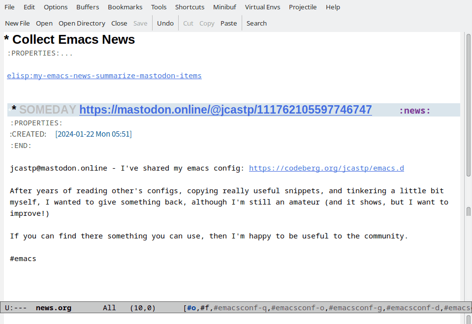
Here's the code that makes that happen:
(defun my-emacs-news-summarize-mastodon-items ()
(interactive)
(while (not (eobp))
(atomic-change-group
(let* ((info (my-mastodon-get-note-info))
(title (when (car (plist-get info :links))
(my-page-title (car (plist-get info :links)))))
(summary (read-string
(if title
(format "Summary (%s): " title)
"Summary: ")
title)))
(org-cut-subtree)
(unless (string= summary "")
(insert "- " (org-link-make-string
(or (car (plist-get info :links))
(plist-get info :url))
summary)
(if (and (car (plist-get info :links))
(plist-get info :handle))
(concat " (" (org-link-make-string (plist-get info :url)
(plist-get info :handle))
")")
"")
"\n"))))))
(defun my-match-groups (&optional object)
"Return the matching groups, good for debugging regexps."
(seq-map-indexed (lambda (entry i)
(list i entry
(and (car entry)
(if object
(substring object (car entry) (cadr entry))
(buffer-substring (car entry) (cadr entry))))))
(seq-partition
(match-data t)
2)))
(defun my-org-link-url-from-string (s)
"Return the link URL from S."
(if (string-match org-link-any-re s)
(or
(match-string 7 s)
(match-string 2 s))))
(defun my-mastodon-get-note-info ()
"Return (:handle ... :url ... :links ... :text) for the current subtree."
(let ((url (let ((title (org-entry-get (point) "ITEM")))
(if (string-match org-link-any-re title)
(or
(match-string 7 title)
(match-string 2 title)))))
beg end
handle)
(save-excursion
(org-back-to-heading)
(org-end-of-meta-data)
(setq beg (point))
(setq end (org-end-of-subtree))
(unless url
(goto-char beg)
(when (re-search-forward org-any-link-re end t)
(setq url (org-element-property :raw-link (org-element-context)))))
(cond
((string-match "\\[\\[https://bsky\\.app/.+?\\]\\[\\(.+\\)\\]\\]" url)
(setq handle (match-string 1 url)))
((string-match "https://\\(.+?\\)/\\(@.+?\\)/" url)
(setq handle (concat
(match-string 2 url) "@" (match-string 1 url))))
((string-match "https://\\(.+?\\)/\\(.+?\\)/p/[0-9]+\\.[0-9]+" url)
(setq handle (concat
"@" (match-string 2 url) "@" (match-string 1 url)))))
(list
:handle handle
:url (if (string-match org-link-bracket-re url) (match-string 1 url) url)
:links (reverse (mapcar (lambda (o) (org-element-property :raw-link o))
(my-org-get-links-in-region beg end)))
:text (string-trim (buffer-substring-no-properties beg end))))))
(ert-deftest my-mastodon-get-note-info ()
(should
(equal
(with-temp-buffer
(insert "** SOMEDAY https://mastodon.online/@jcastp/111762105597746747 :news:
:PROPERTIES:
:CREATED: [2024-01-22 Mon 05:51]
:END:
jcastp@mastodon.online - I've shared my emacs config: https://codeberg.org/jcastp/emacs.d
After years of reading other's configs, copying really useful snippets, and tinkering a little bit myself, I wanted to give something back, although I'm still an amateur (and it shows, but I want to improve!)
If you can find there something you can use, then I'm happy to be useful to the community.
#emacs
")
(org-mode)
(my-mastodon-get-note-info))
'(:handle "@jcastp@mastodon.online"
:url
"https://mastodon.online/@jcastp/111762105597746747"
:links
("https://codeberg.org/jcastp/emacs.d")
:text
"jcastp@mastodon.online - I've shared my emacs config: https://codeberg.org/jcastp/emacs.d\n\nAfter years of reading other's configs, copying really useful snippets, and tinkering a little bit myself, I wanted to give something back, although I'm still an amateur (and it shows, but I want to improve!)\n\nIf you can find there something you can use, then I'm happy to be useful to the community.\n\n#emacs"))))
It turns headings into something like this:
which I can then copy into my Emacs News Org Mode file and categorize with some keyboard shortcuts.
This works particularly well with my combined Mastodon timelines, because then I can look through all the #emacs posts from mastodon.social, emacs.ch, and social.sachachua.com in one go.
Copy Mastodon link for Emacs News
(defun my-mastodon-copy-link-dwim (prefix)
(interactive "P")
(if prefix
(mastodon-toot--copy-toot-url)
(my-mastodon-copy-toot-as-author-link)))
(defun my-emacs-news-copy-mastodon-link ()
(interactive)
(let ((url (org-entry-get (point) "ITEM")))
(when (string-match "https://\\(.+?\\)/\\(@.+?\\)/" url)
(kill-new (org-link-make-string url (concat (match-string 2 url) "@" (match-string 1 url)))))))
(defun my-emacs-news-copy-mastodon-item (&optional name-only)
(interactive (list current-prefix-arg))
(let (s)
(with-current-buffer
(if (string-match "emacs-news/index.org" (buffer-file-name))
(save-window-excursion
(other-window 1)
(current-buffer))
(current-buffer))
(let ((url (or (thing-at-point 'url)
(progn
(save-restriction
(org-back-to-heading)
(org-narrow-to-subtree)
(org-end-of-meta-data)
(if (re-search-forward org-link-any-re nil t)
(thing-at-point 'url)
(setq name-only t)
(org-entry-get (point) "ITEM")
)))))
(toot (org-entry-get (point) "ITEM"))
attrib)
(when (string-match org-link-bracket-re toot)
(setq toot (match-string 1 toot)))
(when (string-match "https://\\(.+?\\)/\\(@.+?\\)/" toot)
(setq attrib (org-link-make-string toot
(concat
(match-string 2 toot) "@" (match-string 1 toot)))))
(setq s
(if name-only
(format " (%s)" attrib)
(format "- %s (%s)\n"
(org-link-make-string
url
(my-page-title url))
attrib)))))
(when (called-interactively-p 'any)
(if (string-match "emacs-news/index.org" (buffer-file-name))
(insert s)
(kill-new s)))
s))
Combining Mastodon timelines using mastodon.el emacs mastodon
- : Removed
edited_atattribute. - : Updated
my-mastodon-follow-userto usealist-get. - : Make tag a parameter.
- : Added screenshot.
- : Read JSON arrays as lists to be compatible with the latest mastodon.el.
.
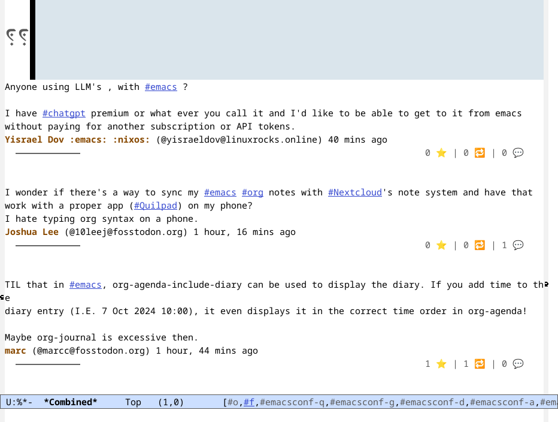
I like checking out the #emacs hashtag when I put together Emacs News. In the past, I usually browsed the hashtag timeline on emacs.ch, which also picked up updates from other people that emacs.ch was following. Now that I've moved to @sacha@social.sachachua.com and emacs.ch is winding down, I wanted to see if there was a way for me to see a combined view using mastodon.social's API feed (paging by
max_id as needed). I haven't enabled public
timeline feeds on my server, so I also need to reuse the OAuth mechanics from mastodon.el.
First, let's start by making a unified timeline. By digging around in mastodon-tl.el, I found that I could easily create a timeline view by passing it a vector of toot JSONs.
(defun my-mastodon-fetch-posts-after (base-url after-date)
"Page backwards through BASE-URL using max_id for all the posts after AFTER-DATE."
(require 'plz)
(require 'mastodon-http)
(let ((results [])
(url base-url)
(use-mastodon-el (not (string-match "^http" base-url)))
(json-array-type 'list)
page filtered)
(while url
(setq page (if use-mastodon-el
(mastodon-http--get-json (mastodon-http--api url) nil :silent)
(seq-map (lambda (o)
(cons (cons 'external t) o))
(plz 'get url :as #'json-read)))
filtered (seq-filter (lambda (o) (string< after-date (assoc-default 'created_at o)))
page))
(if filtered
(progn
(setq results (seq-concatenate 'vector filtered results)
url (concat base-url (if (string-match "\\?" base-url) "&" "?")
"max_id=" (assoc-default 'id (elt (last page) 0))))
(message "%s %s" (assoc-default 'created_at (elt (last page) 0)) url))
(setq url nil)))
results))
(when (functionp 'memoize)
(unless (get #'my-mastodon-fetch-posts-after :memoize-original-function)
(memoize #'my-mastodon-fetch-posts-after)))
(defun my-mastodon-combined-tag-timeline (later-than tag &optional servers)
"Display items after LATER-THAN about TAG from SERVERS and the current mastodon.el account."
(interactive (list
(org-read-date nil nil nil nil nil "-Mon")
"#emacs"
'("mastodon.social" "fosstodon.org")))
(setq servers (or servers '("mastodon.social" "fosstodon.org")))
(require 'mastodon)
(require 'mastodon-tl)
(require 'mastodon-toot)
(if (stringp later-than)
(setq later-than (org-read-date nil nil later-than)))
(setq tag (replace-regexp-in-string "#" "" tag))
(let* ((limit 40)
(sources (cons (format "timelines/tag/%s?limit=%d" tag limit)
(mapcar (lambda (s)
(format "https://%s/api/v1/timelines/tag/%s?limit=%d" s tag limit))
servers)))
(combined
(seq-map
;; remove edited_at
(lambda (o) (assoc-delete-all 'edited_at o))
(sort
(seq-reduce (lambda (prev val)
(seq-union prev
(condition-case nil
(my-mastodon-fetch-posts-after val later-than)
(error nil))
(lambda (a b) (string= (assoc-default 'uri a)
(assoc-default 'uri b)))))
sources [])
(lambda (a b)
(string< (assoc-default 'created_at b)
(assoc-default 'created_at a)))))))
(with-current-buffer (get-buffer-create "*Combined*")
(let ((inhibit-read-only t))
(erase-buffer)
(mastodon-tl--timeline combined)
(mastodon-mode))
(setq mastodon-tl--buffer-spec `(account ,(cons mastodon-active-user mastodon-instance-url) buffer-name ,(buffer-name)))
(display-buffer (current-buffer)))))
The tricky thing is that boosting and replying in
mastodon.el both use the toot IDs instead of the
toot URLs, so they only work for toots that came
in via my current mastodon.el account. Toots from
other timelines might not have been fetched by my
server yet. Adding an external property lets me
find that in the item_json text property in the
timeline buffer. For those toots, I can use
(mastodon-url-lookup (mastodon-toot--toot-url))
to open the toot in a new buffer that does allow
boosting or replying, which is probably enough for
my purposes.
(defun my-mastodon-lookup-toot ()
(interactive)
(mastodon-url-lookup (mastodon-toot--toot-url)))
When I go through Emacs News, I have a shortcut
that boosts a post and saves it to as an Org Mode
capture with a link to the toot. I sometimes want
to reply, too. So I just need to intervene before
boosting and replying. Boosting and favoriting
both use mastodon-toot--action, which looks up
the base-item-id text property. Replying looks
up the item-json property and gets the id from
it.
(defun my-text-property-update-at-point (pos prop value)
(let ((start (previous-single-property-change (or pos (point)) prop))
(end (next-single-property-change (or pos (point)) prop)))
(put-text-property (or start (point-min))
(or end (point-max))
prop value)))
(defun my-mastodon-update-external-item-id (&rest _)
(when (mastodon-tl--field 'external (mastodon-tl--property 'item-json))
;; ask the server to resolve it
(let* ((response (mastodon-http--get-json (format "%s/api/v2/search" mastodon-instance-url)
`(("q" . ,(mastodon-toot--toot-url))
("resolve" . "t"))))
(id (alist-get 'id (seq-first (assoc-default 'statuses response))))
(inhibit-read-only t)
(json (get-text-property (point) 'item-json)))
(when (and id json)
(my-text-property-update-at-point (point) 'base-item-id id)
(my-text-property-update-at-point (point) 'item-json
(progn
(setf (alist-get 'id json) id)
(setf (alist-get 'external json) nil)
json))))))
So now all I need to do is make sure that this is called before the relevant mastodon.el functions if I'm looking at an external toot.
(with-eval-after-load 'mastodon-tl
(advice-add #'mastodon-toot--action :before #'my-mastodon-update-external-item-id)
(advice-add #'mastodon-toot--reply :before #'my-mastodon-update-external-item-id)
(advice-add #'mastodon-tl--thread :before #'my-mastodon-update-external-item-id))
The only thing is that I need to press RET after loading a thread with T (mastodon-tl--thread) for some reason, but that's okay. Now I can boost and save posts with my usual Emacs News shortcut, and I can reply easily too.
I'm curious: how many toots would I be missing if I looked at only one instance's hashtag? Let's look at the #emacs hashtag toots on 2024-09-12:
Mastodon comparison
(defun my-three-way-comparison (seq1 seq2 seq3 &optional test-fn)
`(("1" ,@(seq-difference seq1 (seq-union seq2 seq3 test-fn) test-fn))
("2" ,@(seq-difference seq2 (seq-union seq1 seq3 test-fn) test-fn))
("3" ,@(seq-difference seq3 (seq-union seq1 seq2 test-fn) test-fn))
("1&2" ,@(seq-difference (seq-intersection seq1 seq2 test-fn) seq3 test-fn))
("1&3" ,@(seq-difference (seq-intersection seq1 seq3 test-fn) seq2 test-fn))
("2&3" ,@(seq-difference (seq-intersection seq2 seq3 test-fn) seq1 test-fn))
("1&2&3" ,@(seq-intersection (seq-intersection seq2 seq3 test-fn) seq1 test-fn))))
(defun my-three-way-comparison-report (label1 seq1 label2 seq2 label3 seq3 &optional test-fn)
(let ((list (my-three-way-comparison seq1 seq2 seq3)))
`((,(format "%s only" label1) ,@(assoc-default "1" list #'string=))
(,(format "%s only" label2) ,@(assoc-default "2" list #'string=))
(,(format "%s only" label3) ,@(assoc-default "3" list #'string=))
(,(format "%s & %s" label1 label2) ,@(assoc-default "1&2" list #'string=))
(,(format "%s & %s" label1 label3) ,@(assoc-default "1&3" list #'string=))
(,(format "%s & %s" label2 label3) ,@(assoc-default "2&3" list #'string=))
("all" ,@(assoc-default "1&2&3" list #'string=)))))
(assert (equal (my-three-way-comparison '("A" "A&B" "A&C" "A&B&C" "A1")
'("B" "A&B" "A&B&C" "B&C")
'("C" "A&C" "A&B&C" "B&C"))
'(("1" "A" "A1")
("2" "B")
("3" "C")
("1&2" "A&B")
("1&3" "A&C")
("2&3" "B&C")
("1&2&3" "A&B&C"))))
(let* ((later-than "2024-09-12")
(earlier-than "2024-09-13")
(results
(mapcar (lambda (o)
(cons (car o)
(seq-map (lambda (o) (assoc-default 'uri o))
(seq-filter (lambda (toot)
(string< (assoc-default 'created_at toot)
earlier-than))
(my-mastodon-fetch-posts-after
(format "%stimelines/tag/emacs?count=40" (cdr o))
later-than)))))
`((mastodon-social . "https://mastodon.social/api/v1/")
(emacs-ch . "https://emacs.ch/api/v1/")
(my-instance . ""))))
(intersections
(let-alist results
(my-three-way-comparison-report
"mastodon.social"
.mastodon-social
"emacs.ch"
.emacs-ch
"my instance"
.my-instance
#'string=))))
(mapcar
(lambda (row)
(list (elt row 0) (length (cdr row))
(string-join
(seq-map-indexed (lambda (o i)
(org-link-make-string o (number-to-string (1+ i))))
(cdr row))
" ")))
intersections))
| mastodon.social only | 3 | 1 2 3 |
| emacs.ch only | 1 | 1 |
| my instance only | 0 | |
| mastodon.social & emacs.ch | 9 | 1 2 3 4 5 6 7 8 9 |
| mastodon.social & my instance | 0 | |
| emacs.ch & my instance | 1 | 1 |
| all | 11 | 1 2 3 4 5 6 7 8 9 10 11 |
Here's an Euler diagram visualizing it.
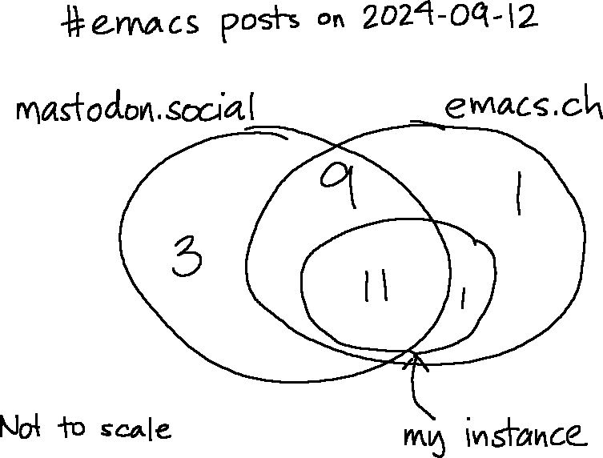
I love that I can tinker with mastodon.el to get it to combine the timelines. (I'm crossing the streams!) Yay Emacs!
Following people
I want to be able to follow people if I specify their ID.
(defun my-mastodon-follow-user (user-handle)
"Follow HANDLE."
(interactive "MHandle: ")
(require 'mastodon-profile)
(when (string-match "https?://\\(.+?\\)/\\(@.+\\)" user-handle)
(setq user-handle (concat (match-string user-handle) "@" (match-string 1 user-handle))))
(let* ((account (mastodon-profile--search-account-by-handle
user-handle))
(user-id (alist-get 'id account))
(name (if (not (string-empty-p (alist-get 'display_name account)))
(alist-get 'display_name account)
(alist-get 'username account)))
(url (mastodon-http--api (format "accounts/%s/%s" user-id "follow"))))
(if account
(mastodon-tl--do-user-action-function url name user-handle "follow")
(message "Cannot find a user with handle %S" user-handle))))
Tooting a link to the current post
(defun my-11ty-post-plist ()
(cond
((derived-mode-p 'org-mode)
(let* ((subtreep (not (org-before-first-heading-p)))
(combined (org-combine-plists
(org-export--get-export-attributes '11ty subtreep nil)
(org-export--get-buffer-attributes)
(org-export-get-environment '11ty subtreep))))
(when (listp (plist-get combined :title))
(plist-put combined :title (car (plist-get combined :title))))
(plist-put combined :tags (org-get-tags))
combined))
((or (derived-mode-p 'js-mode)
(derived-mode-p 'jsonian-mode)) ; probably looking at .11tydata.json
(json-parse-string (buffer-string)
:object-type 'plist
:array-type 'list))
((and (derived-mode-p 'html-mode)
(file-exists-p (concat (file-name-base (buffer-file-name)) ".11tydata.json")))
(let ((json-object-type 'plist)
(json-array-type 'list))
(json-read-file
(concat (file-name-base (buffer-file-name)) ".11tydata.json"))))
(t (error "Could not find info."))))
(defun my-11ty-permalink ()
"Get permalink for current post."
(plist-get (my-11ty-post-plist) :permalink))
(defun my-11ty-tags ()
"Get tags for current post."
(plist-get (my-11ty-post-plist) :tags))
(defun my-11ty-post-url ()
(when (org-entry-get-with-inheritance "EXPORT_ELEVENTY_PERMALINK")
(concat (replace-regexp-in-string "/$" "" my-blog-base-url)
(org-entry-get-with-inheritance "EXPORT_ELEVENTY_PERMALINK"))))
(defun my-11ty-post-text ()
(save-excursion
(goto-char
(cond
((org-entry-get-with-inheritance "EXPORT_ELEVENTY_PERMALINK")
(org-find-property "EXPORT_ELEVENTY_PERMALINK"
(org-entry-get-with-inheritance "EXPORT_ELEVENTY_PERMALINK")))
(t (org-back-to-heading-or-point-min))))
(if (org-before-first-heading-p)
(buffer-string)
(org-end-of-meta-data)
(buffer-substring (point) (org-end-of-subtree)))))
(defun my-mastodon-11ty-toot-post ()
"Compose a toot sharing this blog post on Mastodon."
(interactive)
(require 'mastodon)
(require 'mastodon-toot)
(let* ((info (my-11ty-post-plist))
(url (concat "https://sachachua.com" (plist-get info :permalink)))
(blog-text (my-11ty-post-text))
(title (plist-get info :title)))
(mastodon-toot--compose-buffer
nil nil nil
(concat "[" (plist-get info :title) "]"
"(" url ") "
(mapconcat (lambda (tag) (concat "#" tag))
(seq-remove (lambda (tag) (string-match "^_" tag))
(plist-get info :tags))
" ")))
(unless (string-match "^[0-9][0-9][0-9][0-9]-[0-9][0-9]-[0-9][0-9] Emacs News" title)
(my-mastodon-insert-interested-handles (concat title "\n" blog-text)))))
Compose a Mastodon toot with the current Org subtree
I want to make it easier to microblog the current Org subtree.
(defun my-mastodon-toot-subtree ()
(interactive)
(let ((body (org-export-as 'md t nil t))
(link (org-entry-get (point) "EXPORT_ELEVENTY_PERMALINK")))
(mastodon-toot)
(save-excursion
(insert body)
(when link (insert "\n\nBlog post: <" my-blog-base-url link ">\n")))))
The automatic link to my configuration is handled by a function that I add to org-export-filter-body-functions:
config-footer
Posting the latest screenshot with mastodon.el
I want to make it easier to microblog the latest screenshot, or a recent screenshot if I need to pick a different one. It might also be a good time to add some text to the filename to make it easier to find later on. I can use that text as alt-text for the image, too.
(defun my-mastodon-toot-screenshot (&optional filename description)
"Compose a buffer and attach the latest screenshot.
Prompt for a description and add that to the filename as well.
When called with a prefix argument, prompt for the file.
Use consult to provide a preview."
(interactive
(let ((filename
(if current-prefix-arg
(consult--read
(my-combined-screenshots)
:sort nil
:require-match t
:category 'file
:state (lambda (candidate state)
(when candidate
(with-current-buffer (find-file-noselect
candidate)
(display-buffer (current-buffer))))))
(my-latest-screenshot))))
(list
filename
(when (string-match "^[0-9][0-9][0-9][0-9]-[0-9][0-9]-[0-9][0-9]_[0-9][0-9]-[0-9][0-9]-[0-9][0-9]$" (file-name-base filename))
(display-buffer (find-file-noselect filename))
(read-string "Description: ")))))
(let ((new-filename (if (string= (or description "") "")
nil
(expand-file-name
(concat (file-name-base filename) " " description
(file-name-extension filename))
(file-name-directory filename)))))
(if new-filename
(rename-file filename new-filename))
(unless (string-match "new toot" (buffer-name)) ; can't match off major mode yet
(mastodon-toot))
(mastodon-toot--attach-media
(or new-filename filename) "image/png"
(or description
(when (string-match "^[0-9][0-9][0-9][0-9]-[0-9][0-9]-[0-9][0-9]_[0-9][0-9]-[0-9][0-9]-[0-9][0-9] \\(.+\\)" (save-match-data (file-name-base filename)))
(match-string 1 (save-match-data (file-name-base filename))))))))
Mastodon keyboard shortcuts via Hydra
Based on https://github.com/holgerschurig/emacs-doom-config/blob/master/config.el#L2397
;; Not in the following hydra, but mentioned in "M-x describe-mode". Also, the README.org
;; contains several functions that aren't in my hydra.
;;
;; TAB mastodon-tl--next-tab-item
;; D mastodon-toot--delete-and-redraft-toot
;; C-S-b mastodon-tl--unblock-user
;; S-TAB mastodon-tl--previous-tab-item
;; S-RET mastodon-tl--unmute-user
;; C-S-w mastodon-tl--unfollow-user
;; S-SPC scroll-down-command
;; <backtab> mastodon-tl--previous-tab-item
;; C-M-i mastodon-tl--previous-tab-item
;; M-n mastodon-tl--next-tab-item
;; M-p mastodon-tl--previous-tab-item
(defhydra my-mastodon-help (:color blue :hint nil)
"
Timelines^^ Toots^^^^ Own Toots^^ Profiles^^ Users/Follows^^ Misc^^
^^-----------------^^^^--------------------^^----------^^-------------------^^------^^-----
_h_ome _n_ext _p_rev _r_eply _A_uthors follo_W_ _X_ lists
_l_ocal _T_hread of toot^^ wri_t_e user _P_rofile _N_otifications f_I_lter
_F_ederated (un) _b_oost^^ _e_dit ^^ _R_equests _C_opy URL
fa_V_orites (un) _f_avorite^^ _d_elete _O_wn su_G_estions _S_earch
_#_ tagged (un) p_i_n^^ ^^ _U_pdate own _M_ute user _H_elp
_@_ mentions (un) boo_k_mark^^ show _E_dits ^^ _B_lock user
boo_K_marks _v_ote^^
trendin_g_
_u_pdate _w_rite Emacs news _o_rg _s_creenshot
"
;; my custom stuff
("s" my-mastodon-toot-screenshot)
("w" my-mastodon-save-toot-for-emacs-news)
("o" (org-capture nil "m"))
;; more general things
("h" (progn (require 'mastodon) mastodon-tl--get-home-timeline))
("l" mastodon-tl--get-local-timeline)
("F" mastodon-tl--get-federated-timeline)
("V" mastodon-profile--view-favourites)
("#" mastodon-tl--get-tag-timeline)
("@" (progn (require 'mastodon) (mastodon-notifications-get-mentions)))
("K" mastodon-profile--view-bookmarks)
("g" mastodon-search--trending-tags)
("u" mastodon-tl--update :exit nil)
("n" mastodon-tl--goto-next-toot)
("p" mastodon-tl--goto-prev-toot)
("T" mastodon-tl--thread)
("b" mastodon-toot--toggle-boost :exit nil)
("f" mastodon-toot--toggle-favourite :exit nil)
("i" mastodon-toot--pin-toot-toggle :exit nil)
("k" mastodon-toot--bookmark-toot-toggle :exit nil)
("c" mastodon-tl--toggle-spoiler-text-in-toot)
("v" mastodon-tl--poll-vote)
("A" mastodon-profile--get-toot-author)
("P" mastodon-profile--show-user)
("O" mastodon-profile-my-profile)
("U" mastodon-profile--update-user-profile-note)
("W" mastodon-tl--follow-user)
("N" mastodon-notifications-get)
("R" mastodon-profile--view-follow-requests)
("G" mastodon-tl--get-follow-suggestions)
("M" mastodon-tl--mute-user)
("B" mastodon-tl--block-user)
("r" mastodon-toot--reply)
("t" mastodon-toot)
("e" mastodon-toot--edit-toot-at-point)
("d" mastodon-toot--delete-toot)
("E" mastodon-toot--view-toot-edits)
("I" mastodon-tl--view-filters)
("X" mastodon-tl--view-lists)
("C" mastodon-toot--copy-toot-url)
("S" mastodon-search--search-query)
("H" describe-mode)
("q" nil :exit t)
)
(use-package mastodon
:bind ("s-m" . my-mastodon-help/body))
Making it easier to toot my config
The following snippet composes a toot buffer with a link to the relevant section of my configuration file, or to the relevant blog post if specified.
(defun my-mastodon-toot-config (&optional include-screenshot)
"Toot this part of my config."
(interactive (list current-prefix-arg))
(let ((link (if (org-entry-get (point) "EXPORT_ELEVENTY_PERMALINK")
(concat "https://sachachua.com" (org-entry-get (point) "EXPORT_ELEVENTY_PERMALINK"))
(concat "https://sachachua.com/dotemacs/#" (org-entry-get (point) "CUSTOM_ID"))))
text)
(save-excursion
(org-back-to-heading)
(org-end-of-meta-data)
(setq text (buffer-substring (point) (org-end-of-subtree))))
(mastodon-toot)
(insert text "\n\nLink: " link)))
Org contacts
Capture
(defun my-mastodon-org-contact-add ()
"Add current toot author as a contact."
(interactive)
(let-alist (get-text-property (point) 'item-json)
(with-current-buffer (find-file-noselect (car org-contacts-files))
(if (org-find-property "MASTODON" .account.acct)
(message "Already exists.")
(org-insert-heading)
(insert (format "%s\n:PROPERTIES:\n:NAME: %s\n:MASTODON: %s\n:ALIAS: %s\n:END:\n"
.account.display_name
.account.display_name
.account.acct
.account.username))
(message "Added %s" .account.acct)))))
Completion
(defun my-org-contacts-complete-mastodon (string)
(let* ((completion-ignore-case org-contacts-completion-ignore-case)
(completion-list
(cl-loop for contact in (org-contacts-filter)
;; The contact name is always the car of the assoc-list
;; returned by `org-contacts-filter'.
for contact-name = (car contact)
;; Build the list of the Mastodon handles which have expired
for ignore-list = (org-contacts-split-property
(or (cdr (assoc-string org-contacts-ignore-property
(nth 2 contact))) ""))
;; Build the list of the user Mastodon handles.
for handle-list = (org-contacts-remove-ignored-property-values
ignore-list
(org-contacts-split-property
(or (cdr (assoc-string "MASTODON"
(nth 2 contact))) "")))
nconc (cl-loop for handle in handle-list
collect (format "%s (%s)" contact-name handle))))
(completion-list (org-contacts-all-completions-prefix
string
(org-uniquify completion-list))))
(when completion-list
(org-contacts-make-collection-prefix completion-list))))
(defun my-mastodon-complete-contact ()
"Suitable for adding to `completion-at-point-functions'."
(interactive)
(let ((beg
(save-excursion
(re-search-backward "\\(\\`\\|[\n:,]\\)[ \t]*")
(goto-char (match-end 0))
(point)))
(end (point)))
(list beg
end
(completion-table-dynamic
(lambda (string)
(my-org-contacts-complete-mastodon string))))))
(with-eval-after-load 'mastodon-toot
(with-eval-after-load 'org-contacts
(add-hook 'mastodon-toot-mode-hook
(lambda ()
(add-hook 'completion-at-point-functions
#'my-mastodon-complete-contact nil t)))))
Collect my recent toots in an Org file so that I can refile them
I want to use my microblog posts on Mastodon as building blocks for longer posts on my blog. Getting them into an Org file makes it easier to link to them or refile them to other parts of my Org files so that I can build up my notes.
(use-package pandoc :defer t)
(defun my-mastodon-org-feed-formatter (entry)
(concat "* " (pandoc-convert-stdio
(dom-text (dom-by-tag
(with-temp-buffer
(insert "<item>"
(plist-get entry :item-full-text)
"</item>")
(xml-parse-region (point-min) (point-max)))
'description))
"html" "org")
"\n\n[" (format-time-string (cdr org-time-stamp-formats)
(date-to-time (plist-get entry :pubDate)))
"]\n" (plist-get entry :link)))
(setq org-feed-alist '(("Mastodon" "https://emacs.ch/@sachac/with_replies.rss"
"~/sync/orgzly/toots.org" "Toots"
:formatter my-mastodon-org-feed-formatter)))
(defun my-org-feed-sort (pos entries)
(save-excursion
(goto-char pos)
(when (looking-at org-complex-heading-regexp)
(org-sort-entries nil ?T))))
(advice-add #'org-feed-add-items :after #'my-org-feed-sort)
Now I can use org-feed-update-all (C-c C-x g) to pull things into my toots.org file.
Insert a single toot as Org Mode
(defun my-mastodon-org-insert-toot-content (url)
(interactive "MURL: ")
;; fetch the toot using mastodon.el
;; convert it from HTML to Org Mode using pandoc
;; insert the content
;; insert a link to the toot using the handle of the author
)
Archive toots on my blog
I want to compile my public microblog posts into weekly posts so that they're archived on my blog. It might make sense to make them list items or subtrees so that I can move them around easily.
(defun my-mastodon-format-my-toots-since (date)
(require 'mastodon-auth)
(format "#+begin_toot_archive\n%s\n#+end_toot_archive\n"
(mapconcat
(lambda (o)
(format "- %s\n%s\n\n"
(org-link-make-string (assoc-default 'url o)
"(toot)"
;(assoc-default 'created_at o)
)
(org-ascii--indent-string
(string-trim (pandoc-convert-stdio (assoc-default 'content o) "html" "org"))
2))
;; (format "#+begin_quote\n#+begin_export html\n%s\n#+end_export\n#+end_quote\n\n%s\n\n"
;; (assoc-default 'content o)
;; (org-link-make-string (assoc-default 'url o) (assoc-default 'created_at o)))
)
(seq-filter
(lambda (o)
(string= (assoc-default 'visibility o) "public"))
(my-mastodon-fetch-posts-after
(format "accounts/%s/statuses?count=40&exclude_reblogs=t" (mastodon-auth--get-account-id))
date))
"")))
(defun my-mastodon-insert-my-toots-since (date)
(interactive (list (org-read-date nil nil nil "Since date: ")))
(insert (my-mastodon-format-my-toots-since date)))
(defun my-mastodon-roundup (date)
(interactive (list (org-read-date nil nil nil "Date of post: ")))
(org-insert-heading)
(let ((start (org-read-date nil nil "--wed" nil (date-to-time date))))
(insert "Wednesday weblog: Toots ending " start " :review:weblog:\n\n")
(my-mastodon-insert-my-toots-since start)))
Web
Emacs: Open URLs or search the web, plus browse-url-handlers emacs org
- : Naturally, do this only with text you trust. =)
- : Use cl-pushnew instead of add-to-list, correct
browse-url-browser-browser-functiontobrowse-url-browser-function, and add an example for eww.
On IRC, someone asked for help configuring Emacs to have a keyboard shortcut that would either open the URL at point or search the web for the region or the word at point. I thought this was a great idea that I would find pretty handy too.
Let's write the interactive function that I'll call from my keyboard shortcut.
- First, let's check if there's an active region. If there isn't, let's assume we're looking at the thing at point (could be a URL, an e-mail address, a filename, or a word).
- If there are links, open them.
- Otherwise, if there are e-mail addresses, compose a message with all those email addresses in the "To" header.
- Are we at a filename? Let's open that.
- Otherwise, do a web search. Let's make that configurable. Most people will want to use a web browser to search their favorite search engine, such as DuckDuckGo or Google, so we'll make that the default.
(defcustom my-search-web-handler "https://duckduckgo.com/html/?q="
"How to search. Could be a string that accepts the search query at the end (URL-encoded)
or a function that accepts the text (unencoded)."
:type '(choice (string :tag "Prefix URL to search engine.")
(function :tag "Handler function.")))
(defun my-open-url-or-search-web (&optional text-or-url)
(interactive (list (if (region-active-p)
(buffer-substring (region-beginning) (region-end))
(or
(and (derived-mode-p 'org-mode)
(let ((elem (org-element-context)))
(and (eq (org-element-type elem) 'link)
(buffer-substring-no-properties
(org-element-begin elem)
(org-element-end elem)))))
(thing-at-point 'url)
(thing-at-point 'email)
(thing-at-point 'filename)
(thing-at-point 'word)))))
(catch 'done
(let (links)
(with-temp-buffer
(insert text-or-url)
(org-mode)
(goto-char (point-min))
;; We add all the links to a list first because following them may change the point
(while (re-search-forward org-any-link-re nil t)
(cl-pushnew (match-string-no-properties 0) links))
(when links
(dolist (link links)
(org-link-open-from-string link))
(throw 'done links))
;; Try emails
(while (re-search-forward thing-at-point-email-regexp nil t)
(cl-pushnew (match-string-no-properties 0) links))
(when links
(compose-mail (string-join links ", "))
(throw 'done links)))
;; Open filename if specified, or do a web search
(cond
((ffap-guesser) (find-file-at-point))
((functionp my-search-web-handler)
(funcall my-search-web-handler text-or-url))
((stringp my-search-web-handler)
(browse-url (concat my-search-web-handler (url-hexify-string text-or-url))))))))
I've been really liking how consult-omni lets me do quick searches as I type from within Emacs, which is actually really cool. I've even extended it to search my bookmarks as well, so that I can find things using my words for them and not trust the internet's words for them. So if I wanted to search using consult-omni, this is how I would do it instead.
(setopt my-search-web-handler #'consult-omni)
Now I can bind that to C-c o in my config
with this bit of Emacs Lisp.
(keymap-global-set "C-c o" #'my-open-url-or-search-web)
Here's a quick demo:
Play by play
- Opening a URL: https://example.com
- Opening several URLs in a region:
- https://example.com
- Other stuff can go here
- https://emacsconf.org
- Opening several e-mail addresses:
- test@example.com
- another.test@example.com
- maybe also yet.another.test@example.com
- A filename
- ~/.config/emacs/init.el
- With DuckDuckGo handling searches:
(setopt my-search-web-handler "https://duckduckgo.com/html?q=")- antidisestablishmentarianism
- With consult-omni handling searches:
(setopt my-search-web-handler #'consult-omni)- antidisestablishmentarianism
Depending on the kind of URL, I might want to look at it in different browsers. For example, some websites like https://emacswiki.org work perfectly fine without JavaScript, so opening them in EWW (the Emacs Web Wowser) is great. Then it's right there within Emacs for easy copying, searching, etc. Some websites are a little buggy when run in anything other than Chromium. For example, MailChimp and BigBlueButton (which is the webconference server we use for EmacsConf) both behave a bit better under Google Chrome. There are some URLs I want to ignore because they don't work for me or they tend to be too paywalled, like permalink.gmane.org and medium.com. I want to open Mastodon URLs in mastodon.el. I want to open the rest of the URLs in Firefox, which is my current default browser.
To change the way Emacs opens URLs, you can
customize browse-url-browser-function and
browse-url-handlers. For example, to set up the
behaviour I described, I can use:
(setopt browse-url-handlers
'(("https?://?medium\\.com" . ignore)
("https?://[^/]+/@[^/]+/.*" . mastodon-url-lookup)
("https?://mailchimp\\.com" . browse-url-chrome)
("https?://bbb\\.emacsverse\\.org" . browse-url-chrome)
("https?://emacswiki.org" . eww)))
(setopt browse-url-browser-function 'browse-url-firefox)
If you wanted to use EWW as your default web
browser, you could use (setopt browse-url-browser-function 'eww) instead.
Could be a fun tweak. I wonder if something like this might be handy for other people too!
Checking URLs
(defun my-test-urls (urls)
"Given a list of URLs, return a list of any URLS that don't result in an OK value."
(delq nil
(mapcar (lambda (url)
(let ((url-request-method "HEAD"))
(with-current-buffer (url-retrieve-synchronously url)
(goto-char (point-min))
(unless (looking-at "HTTP/1.1 200 OK") url))))
urls)))
Search
(use-package engine-mode
:defer t
:config
(defengine my-blog "https://www.google.ca/search?q=site:sachachua.com+%s" :keybinding "b")
(defengine mail "https://mail.google.com/mail/u/0/#search/%s" :keybinding "m")
(defengine google "https://google.com/search?q=%s" :keybinding "g")
(defengine emacswiki "https://google.com/search?q=site:emacswiki.org+%s" :keybinding "e")
(engine-mode)
:hydra
(my-engine-mode-hydra
(:color blue)
"Engine mode"
("b" engine/search-my-blog "blog")
("m" engine/search-mail "mail")
("g" engine/search-google "google")
("e" engine/search-emacswiki "emacswiki")))
Parsing RSS and Atom feeds
Related: Reading more blogs; Emacs Lisp: Listing blogs based on an OPML file
(defun my-rss-get-entries (url)
"Return a list of the form ((:title ... :url ... :date ...) ...)."
(with-current-buffer (url-retrieve-synchronously url)
(set-buffer-multibyte t)
(goto-char (point-min))
(when (re-search-forward "<\\?xml\\|<rss" nil t)
(goto-char (match-beginning 0))
(sort
(let* ((feed (xml-parse-region (point) (point-max)))
(is-rss (> (length (xml-get-children (car feed) 'entry)) 0)))
(if is-rss
(mapcar
(lambda (entry)
(list
:url
(or
(xml-get-attribute
(car
(or
(seq-filter (lambda (x) (string= (xml-get-attribute x 'rel) "alternate"))
(xml-get-children entry 'link))
(xml-get-children entry 'link)))
'href)
(dom-text (dom-by-tag entry 'guid)))
:title
(elt (car (xml-get-children entry 'title)) 2)
:date
(date-to-time (elt (car (xml-get-children entry 'updated)) 2))))
(xml-get-children (car feed) 'entry))
(mapcar (lambda (entry)
(list
:url
(or (caddr (car (xml-get-children entry 'link)))
(dom-text (dom-by-tag entry 'guid)))
:title
(caddr (car (xml-get-children entry 'title)))
:date
(date-to-time (elt (car (xml-get-children entry 'pubDate)) 2))))
(xml-get-children (car (xml-get-children (car feed) 'channel)) 'item))))
:key (lambda (o) (plist-get o :date))
:lessp #'time-less-p
:reverse t))))
Making an OPML table:
(defun my-opml-table (xml)
(sort
(mapcar
(lambda (o)
(let ((latest (car (condition-case nil (my-rss-get-entries (dom-attr o 'xmlUrl))
(error nil)))))
(list
(if latest
(format-time-string "%Y-%m-%d" (plist-get latest :date))
"")
(org-link-make-string
(or (dom-attr o 'htmlUrl)
(dom-attr o 'xmlUrl))
(replace-regexp-in-string " *|" "" (dom-attr o 'text)))
(if latest
(org-link-make-string
(plist-get latest :url)
(or (plist-get latest :title) "(untitled)"))
""))))
(dom-search
xml
(lambda (o)
(and
(eq (dom-tag o) 'outline)
(dom-attr o 'xmlUrl)
(dom-attr o 'text)))))
:key #'car
:reverse t))
Spookfox
Link to current webpage from Spookfox toblog
(defun my-org-spookfox-complete ()
(spookfox-js-injection-eval-in-active-tab "window.location.href" t))
(with-eval-after-load 'org
(org-link-set-parameters
"spookfox"
:complete #'my-org-spookfox-complete
:insert-description #'my-org-link-insert-description))
STARTED Link to currently-selected text using Spookfox
(defun my-spookfox-link-to-fragment ()
(interactive)
(let ((url
(spookfox-js-injection-eval-in-active-tab "window.location.href + '#:~:text=' + encodeURIComponent(window.getSelection().toString())" t)))
(when (called-interactively-p 'any)
(insert url))
url))
Running the current Org Mode Babel Javascript block from Emacs using Spookfox emacs org spookfox
I often want to send Javascript from Emacs to the web browser. It's handy for testing code snippets or working with data on pages that require Javascript or authentication. I could start Google Chrome or Mozilla Firefox with their remote debugging protocols, copy the websocket URLs, and talk to the browser through something like Puppeteer, but it's so much easier to use the Spookfox extension for Mozilla to execute code in the active tab.
spookfox-js-injection-eval-in-active-tab lets you evaluate Javascript and get the results back in Emacs Lisp.
I wanted to be able to execute code even more
easily. This code lets me add a :spookfox t
parameter to Org Babel Javascript blocks so that I
can run the block in my Firefox active tab.
For example, if I have (spookfox-init) set up, Spookfox connected, and https://planet.emacslife.com in my active tab, I can use it with the following code:
#+begin_src js :eval never-export :spookfox t :exports results
[...document.querySelectorAll('.post > h2')].slice(0,5).map((o) => '- ' + o.textContent.trim().replace(/[ \n]+/g, ' ') + '\n').join('')
#+end_src
To do this, we wrap some advice around the org-babel-execute:js function that's called by org-babel-execute-src-block.
(defun my-org-babel-execute:js-spookfox (old-fn body params)
"Maybe execute Spookfox."
(if (assq :spookfox params)
(spookfox-js-injection-eval-in-active-tab
body t)
(funcall old-fn body params)))
(with-eval-after-load 'ob-js
(advice-add 'org-babel-execute:js :around #'my-org-babel-execute:js-spookfox))
I can also run the block in Spookfox without adding the parameter if I make an interactive function:
(defun my-spookfox-eval-org-block ()
(interactive)
(let ((block (org-element-context)))
(when (and (eq (org-element-type block) 'src-block)
(string= (org-element-property :language block) "js"))
(spookfox-js-injection-eval-in-active-tab
(nth 2 (org-src--contents-area block))
t))))
I can add that as an Embark context action:
(with-eval-after-load 'embark-org
(define-key embark-org-src-block-map "f" #'my-spookfox-eval-org-block))
In Javascript buffers, I want the ability to send the current line, region, or buffer too, just like nodejs-repl does.
(defun my-spookfox-send-region (start end)
(interactive "r")
(spookfox-js-injection-eval-in-active-tab (buffer-substring start end) t))
(defun my-spookfox-send-buffer ()
(interactive)
(my-spookfox-send-region (point-min) (point-max)))
(defun my-spookfox-send-line ()
(interactive)
(my-spookfox-send-region (line-beginning-position) (line-end-position)))
(defun my-spookfox-send-last-expression ()
(interactive)
(my-spookfox-send-region (save-excursion (nodejs-repl--beginning-of-expression)) (point)))
(defvar-keymap my-js-spookfox-minor-mode-map
:doc "Send parts of the buffer to Spookfox."
"C-x C-e" 'my-spookfox-send-last-expression
"C-c C-j" 'my-spookfox-send-line
"C-c C-r" 'my-spookfox-send-region
"C-c C-c" 'my-spookfox-send-buffer)
(define-minor-mode my-js-spookfox-minor-mode "Send code to Spookfox.")
I usually edit Javascript files with js2-mode, so I can use my-js-spookfox-minor-mode in addition to that.
I can turn the minor mode on automatically for :spookfox t source blocks. There's no org-babel-edit-prep:js yet, I think, so we need to define it instead of advising it.
(defun org-babel-edit-prep:js (info)
(when (assq :spookfox (nth 2 info))
(my-js-spookfox-minor-mode 1)))
Let's try it out by sending the last line repeatedly:
I used to do this kind of interaction with Skewer, which also has some extra stuff for evaluating CSS and HTML. Skewer hasn't been updated in a while, but maybe I should also check that out again to see if I can get it working.
Anyway, now it's just a little bit easier to tinker with Javascript!
Using Spookfox to scroll Firefox up and down from Emacs web emacs
I open lots of pages in the process of making Emacs News. I like to open the pages in Mozilla Firefox, but I want the keyboard focus to stay with Emacs so that I can quickly categorize the links. I also sometimes want to scroll the page up or down. While reading the Reading, and not forgetting post, I came across Spookfox, which bridges Emacs and Firefox using an Firefox add-on and websockets. After I started spookfox and connected to it by clicking on the extension in Firefox, I was able to interact with it from Emacs Lisp. I feel a little nervous about it security-wise, but at least it's only listening on the local port. There might be another way to do it with the Marionette support in Firefox, but I haven't looked into it yet.
(use-package spookfox
;:quelpa (spookfox :fetcher github :repo "bitspook/spookfox"
; :files ("lisp/*.el" "lisp/apps/*.el"))
:load-path ("~/vendor/spookfox/lisp" "~/vendor/spookfox/lisp/apps")
:when my-laptop-p
:config
(require 'spookfox-tabs)
;(require 'spookfox-org-tabs)
(require 'spookfox-js-injection)
(add-to-list 'spookfox-enabled-apps 'spookfox-tabs)
(with-eval-after-load 'spookfox-org-tabs (add-to-list 'spookfox-enabled-apps 'spookfox-org-tabs))
(add-to-list 'spookfox-enabled-apps 'spookfox-js-injection)
;; (spookfox-init) ; don't automatically enable it; run (spookfox-init) to manually enable
)
Anyway, this code seems to do the job of scrolling my Firefox window:
(defun my-spookfox-scroll-down ()
(interactive)
(spookfox-js-injection-eval-in-active-tab "window.scrollBy(0, document.documentElement.clientHeight);" t))
(defun my-spookfox-scroll-up ()
(interactive)
(spookfox-js-injection-eval-in-active-tab "window.scrollBy(0, -document.documentElement.clientHeight);"))
(keymap-global-set "C-s-v" 'my-spookfox-scroll-down)
(keymap-global-set "S-s-v" 'my-spookfox-scroll-up)
This code opens a tab without switching keyboard focus away from Emacs:
(defun my-spookfox-background-tab (url &rest args)
"Open URL as a background tab."
(if spookfox--connected-clients
(spookfox-tabs--request (cl-first spookfox--connected-clients) "OPEN_TAB" `(:url ,url))
(browse-url url)))
My Emacs News code for processing my upvoted Reddit posts can automatically grab the links from Reddit link posts, but sometimes people post Reddit text or image posts and then include the link to the actual project in the post body or a comment instead.
(defun my-spookfox-get-links ()
(seq-uniq
(spookfox-eval-js-in-active-tab "[...(document.querySelector('[data-testid=post-container]')?.parentElement || document).querySelectorAll('a')].map(a => a.href).filter(a => a && (!window.location.host.match(/reddit/) || !a.match(/redd\.?it/)) && !a.match(window.location.host))" t)))
;;https://emacs.stackexchange.com/questions/41801/how-to-stop-completing-read-ivy-completing-read-from-sorting
(defun my-presorted-completion-table (completions)
(lambda (string pred action)
(if (eq action 'metadata)
'(metadata
(cycle-sort-function . identity)
(display-sort-function . identity))
(complete-with-action action completions string pred))))
(defun my-spookfox-complete-link (&optional prompt)
(completing-read
(or prompt "Link: ")
(my-presorted-completion-table
(my-spookfox-get-links))))
(defun my-spookfox-insert-link-from-page (link)
(interactive (list (my-spookfox-complete-link)))
(insert (org-link-make-string link (my-page-title link))))
(defun my-spookfox-open-link-from-page (link)
(interactive (list (my-spookfox-complete-link)))
(my-spookfox-background-tab link))
(defun my-spookfox-insert-link-to-tab ()
(interactive)
(let ((tab (spookfox-request-active-tab)))
(insert (org-link-make-string
(plist-get tab :url)
(plist-get tab :title)))))
Emacs and Spookfox: org-capture the current tab from Firefox or a link from the page
I want to quickly capture notes based on the current tab in Firefox or
a link from the page's main body. I have the Org Capture Firefox
extension and Ctrl-Shift-L seems to be the keyboard shortcut for
capturing with it, so I probably just have to get the hang of using
it.
I also want to make it easier to add notes even when I've already
switched back to Emacs. I could use s-2 to shift to Firefox (I have
some Autokey shortcuts for focusing specific applications; s-1 is
Emacs), but sometimes I just want to add a link at point.
(defun my-spookfox-insert-url ()
(interactive)
(insert (spookfox-js-injection-eval-in-active-tab "window.location.href" t)))
(defun my-spookfox-insert-org-link ()
(interactive)
(insert (apply #'org-link-make-string
(append (spookfox-js-injection-eval-in-active-tab "[window.location.href, document.title]" t) nil))))
(with-eval-after-load 'org
(cl-pushnew
`("f" "Firefox" entry
(file ,my-org-inbox-file)
"* %^{Note}\n:PROPERTIES:\n:CREATED: %U\n:END:\n\n%(apply #'org-link-make-string
(append (spookfox-js-injection-eval-in-active-tab \"[window.location.href, document.title]\" t) nil))")
org-capture-templates)
(cl-pushnew
`("F" "Firefox link" entry
(file ,my-org-inbox-file)
"* %^{Note}\n:PROPERTIES:\n:CREATED: %U\n:END:\n\n%(org-link-make-string
(my-spookfox-complete-link))")
org-capture-templates))
This uses my-spookfox-complete-link from spookfox.
Self-tracking, statistics, and other data transformations
Quantified Awesome
(defmacro my-org-with-current-task (&rest body)
"Execute BODY with the point at the subtree of the current task."
(declare (debug t))
`(if (derived-mode-p 'org-agenda-mode)
(save-window-excursion
(org-agenda-switch-to)
,@body)
,@body))
(defun my-org-clock-in-and-track ()
"Start the clock running. Clock into Quantified Awesome."
(interactive)
(my-org-with-current-task
(org-clock-in)
(call-interactively 'my-org-quantified-track)
;(when (websocket-openp obs-websocket) (my-stream-message (org-get-heading t t t t)))
(cond
((org-entry-get (point) "AUTO")
(org-link-open-from-string (org-entry-get (point) "AUTO")))
(t
(save-restriction
(org-narrow-to-subtree)
(org-next-link)
(when (looking-at org-link-any-re)
(org-open-at-point)))))))
(bind-key "!" 'my-org-clock-in-and-track org-agenda-mode-map)
(defmacro my-with-org-task (&rest body)
"Run BODY within the current agenda task, clocked task, or cursor task."
`(cond
((derived-mode-p 'org-agenda-mode)
(let* ((marker (org-get-at-bol 'org-marker))
(buffer (marker-buffer marker))
(pos (marker-position marker)))
(with-current-buffer buffer
(save-excursion
(save-restriction
(widen)
(goto-char pos)
,@body)))))
((and (derived-mode-p 'org-mode) (org-at-heading-p)) (save-excursion ,@body))
((org-clocking-p) (save-excursion (org-clock-goto) ,@body))
((derived-mode-p 'org-mode) ,@body)))
(defvar my-org-quantified-regexps
'(("emacsconf" . "Emacs | Emacsconf")
("emacs" . "Emacs")
("consulting" . "E1 Gen"))
"Alist of regexp . category.")
(defun my-org-quantified-track (&optional category note)
"Create a tracking record using CATEGORY and NOTE.
Default to the current task in the agenda, the currently-clocked
entry, or the current subtree in Org."
(interactive (list nil nil))
(unless (and category note)
(my-with-org-task
(setq category (or category
(org-entry-get-with-inheritance "QUANTIFIED")))
(cond
((null category)
(let* ((heading (org-get-heading))
(guess (seq-find (lambda (entry)
(string-match (car entry)
heading))
my-org-quantified-regexps)))
(setq category (or (cdr guess) (read-string "Category: "))))
(org-set-property "QUANTIFIED" category))
((string= category ' "ask")
(setq category (read-string "Category: "))))
(setq note
(concat
(if (string= (or (org-entry-get-with-inheritance "QUANTIFIEDQUIET") "") "t")
"!private "
"")
(or note (elt (org-heading-components) 4) (read-string "Note: "))))))
(quantified-track (concat category " | " note)))
(defun my-org-quick-clock-in-task (location jump)
"Track and clock in on the specified task.
If JUMP is non-nil or the function is called with the prefix argument, jump to that location afterwards."
(interactive (list (save-excursion (my-org-refile-get-location "Location")) current-prefix-arg))
(when location
(if jump
(progn (org-refile 4 nil location) (my-org-clock-in-and-track))
(save-window-excursion
(org-refile 4 nil location)
(my-org-clock-in-and-track)))))
(bind-key "C-c q" 'my-org-quick-clock-in-task)
(require 'quantified nil t)
Child time!
(defun my-childcare ()
(interactive)
(unwind-protect
(when (org-clocking-p)
(org-clock-out)))
(quantified-track "Childcare"))
Make a tablist of my time entries
(define-derived-mode my-quantified-list-mode tablist-mode "Time"
"Major mode for time entries"
(setq tabulated-list-format [("id" 5)
("timestamp" 25)
("duration" 5)
("full_name" 60)
("note" 20)])
(tabulated-list-init-header)
(tabulated-list-print t))
(defun my-quantified-list (start end filter)
(interactive (list (org-read-date nil nil nil "Start: ") (org-read-date nil nil nil "End: ")
(read-string "Filter: ")))
(switch-to-buffer (get-buffer-create "*quantified*"))
(setq filter (and filter
(not (string= filter ""))
(split-string filter " ")))
(let ((json-array-type 'list)
(json-object-type 'alist))
(setq tabulated-list-entries
(seq-keep
(lambda (o)
(let-alist o
(when (or (not filter)
(not (seq-find
(lambda (term)
(not
(or
(string-match term .full_name)
(string-match term (or .data.note "")))))
filter)))
(list
.id
(vector
(number-to-string .id)
(format-time-string "%a %b %d %l:%M%p" (parse-iso8601-time-string .timestamp))
(propertize (if .duration (format-seconds "%h:%.2m" .duration) "")
'duration .duration)
.full_name
(or .data.note ""))))))
(quantified-parse-json
(quantified-request
(format
"/records.json?start=%s&end=%s&auth_token=%s"
(or start "")
(or end "")
(quantified-token))
nil "GET")))))
(my-quantified-list-mode))
(defun my-quantified-list-sum-marked-duration ()
(interactive)
(let ((seconds (apply '+
(mapcar
(lambda (o)
(get-text-property 0 'duration
(aref (cdr o) 2)))
(tablist-get-marked-items)))))
(message "%s (%.1f)"
(format-seconds "%d:%z%.2h:%.2m" seconds)
(/ seconds 3600.0))))
;; (my-quantified-list "2024-09-30" nil "E1")
Compare times and effort estimates
This is for comparing times in column view and in tables.
(defun my-compare-times (clocked estimated)
(if (and (> (length clocked) 0) estimated)
(format "%.2f"
(/ (* 1.0 (org-hh:mm-string-to-minutes clocked))
(org-hh:mm-string-to-minutes estimated)))
""))
Use with #+COLUMNS: %40ITEM %17Effort(Estimated){:} %CLOCKSUM, #+BEGIN: columnview :hlines 1 … #+END:, and
#+TBLFM: $4='(my-compare-times $3 $2)
Using the calendar-date-echo-text variable to help plot a heatmap on a year-long calendar in Emacs emacs
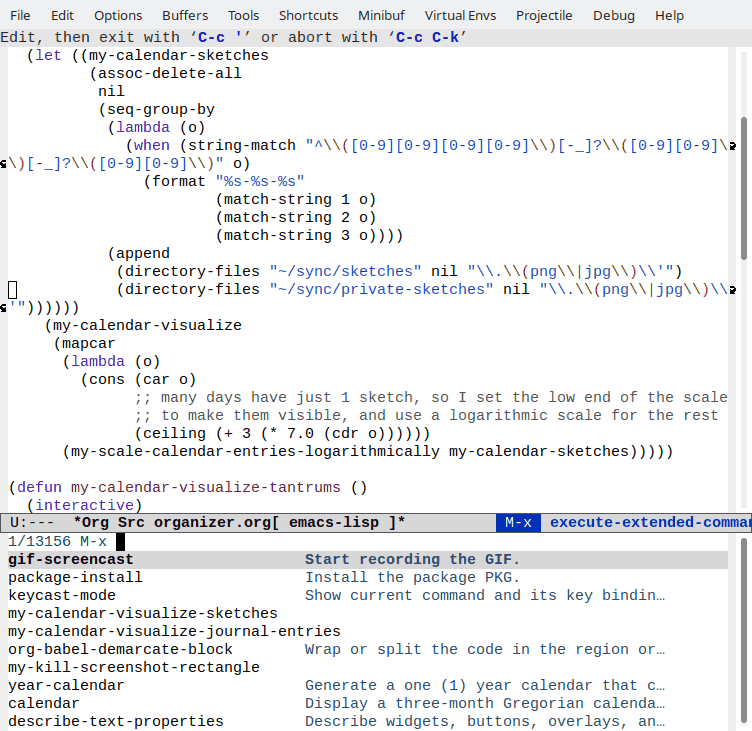
Building on Display a calendar heat map using Emacs Lisp,
I figured out how to use calendar-date-echo-text to store
the date so that I can pick it up when plotting the heatmap:
;; This seems to be the only way we can hack the date in for now
(setq calendar-date-echo-text '(apply #'format (list "%04d-%02d-%02d" year month day)))
(defun my-calendar-heat-map-using-echo-text (&rest _)
(when my-calendar-count-scaled
(save-excursion
(goto-char (point-min))
(while (not (eobp))
(let* ((help (get-text-property (point) 'help-echo))
(next-change
(or (next-single-property-change (point) 'help-echo)
(point-max)))
(inhibit-read-only t)
(count-scaled (and help
(assoc-default
help
my-calendar-count-scaled))))
(when (and help
(string-match "[0-9][0-9][0-9][0-9]-[0-9][0-9]-[0-9][0-9]" help)
count-scaled)
(put-text-property
(point) (+ 2 (point))
'face (intern (format "calendar-scale-%d" count-scaled))))
(goto-char next-change))))))
(advice-add #'calendar :after #'my-calendar-heat-map-using-echo-text)
(advice-add #'calendar-redraw :after #'my-calendar-heat-map-using-echo-text)
(advice-add #'year-calendar :after #'my-calendar-heat-map-using-echo-text)
So now I don't need the advice around calendar-generate-month, just
the code that sets up the faces, loads the values, and figures out the
data.
Previous source code (tweaked foreground colours)
(defface calendar-scale-1 '((((background light)) :foreground "black" :background "#eceff1")
(((background dark)) :foreground "white" :background "#263238")) "")
(defface calendar-scale-2 '((((background light)) :foreground "black" :background "#cfd8dc")
(((background dark)) :foreground "white" :background "#37474f")) "")
(defface calendar-scale-3 '((((background light)) :foreground "black" :background "#b0bec5")
(((background dark)) :foreground "white" :background "#455a64")) "")
(defface calendar-scale-4 '((((background light)) :foreground "black" :background "#90a4ae")
(((background dark)) :foreground "white" :background "#546e7a")) "")
(defface calendar-scale-5 '((((background light)) :foreground "black" :background "#78909c")
(((background dark)) :foreground "white" :background "#607d8b")) "")
(defface calendar-scale-6 '((((background light)) :foreground "white" :background "#607d8b")
(((background dark)) :foreground "black" :background "#78909c")) "")
(defface calendar-scale-7 '((((background light)) :foreground "white" :background "#546e7a")
(((background dark)) :foreground "black" :background "#90a4ae")) "")
(defface calendar-scale-8 '((((background light)) :foreground "white" :background "#455a64")
(((background dark)) :foreground "black" :background "#b0bec5")) "")
(defface calendar-scale-9 '((((background light)) :foreground "white" :background "#37474f")
(((background dark)) :foreground "black" :background "#cfd8dc")) "")
(defun my-count-calendar-entries (grouped-entries)
(mapcar (lambda (entry) (cons (car entry) (length (cdr entry)))) grouped-entries))
(defface calendar-scale-10 '((((background light)) :foreground "white" :background "#263238")
(((background dark)) :foreground "black" :background "#eceff1")) "")
(defun my-scale-calendar-entries (grouped-entries &optional scale-max)
(let* ((count (my-count-calendar-entries grouped-entries))
(count-max (apply #'max (mapcar (lambda (o) (if (car o) (cdr o) 0)) count))))
(mapcar (lambda (entry)
(cons (car entry)
(/ (* 1.0 (or scale-max 1.0) (cdr entry)) count-max)))
count)))
(defun my-scale-calendar-entries-logarithmically (grouped-entries &optional scale-max)
(let* ((count (my-count-calendar-entries grouped-entries))
(count-max (apply #'max (mapcar (lambda (o) (if (car o) (cdr o) 0)) count))))
(mapcar (lambda (entry)
(cons (car entry)
(/ (* 1.0 (or scale-max 1.0) (log (cdr entry))) (log count-max))))
count)))
(defvar my-calendar-count-scaled nil "Values to display.")
Now I can have it display the last year of data or so.
(defun my-calendar-visualize (values)
(setq my-calendar-count-scaled values)
(let* ((date (calendar-current-date))
(month (calendar-extract-month date))
(year (calendar-extract-year date)))
(year-calendar month (1- year))))
The code to load the data stays the same.
Loading the data
(defun my-calendar-visualize-journal-entries ()
(interactive)
(my-calendar-visualize
(mapcar
(lambda (o)
(cons
(car o)
(ceiling (+ 1 (* 7.0 (cdr o))))))
(my-scale-calendar-entries
(seq-group-by #'my-journal-date
(cdr (pcsv-parse-file "~/Downloads/entries.csv")))))))
(defun my-calendar-visualize-sketches ()
(interactive)
(let ((my-calendar-sketches
(assoc-delete-all
nil
(seq-group-by
(lambda (o)
(when (string-match "^\\([0-9][0-9][0-9][0-9]\\)[-_]?\\([0-9][0-9]\\)[-_]?\\([0-9][0-9]\\)" o)
(format "%s-%s-%s"
(match-string 1 o)
(match-string 2 o)
(match-string 3 o))))
(append
(directory-files "~/sync/sketches" nil "\\.\\(png\\|jpg\\)\\'")
(directory-files "~/sync/private-sketches" nil "\\.\\(png\\|jpg\\)\\'"))))))
(my-calendar-visualize
(mapcar
(lambda (o)
(cons (car o)
;; many days have just 1 sketch, so I set the low end of the scale
;; to make them visible, and use a logarithmic scale for the rest
(ceiling (+ 3 (* 7.0 (cdr o))))))
(my-scale-calendar-entries-logarithmically my-calendar-sketches)))))
(defun my-calendar-visualize-tantrums ()
(interactive)
(my-calendar-visualize
(mapcar
(lambda (o)
(cons
(car o)
(ceiling (* 10.0 (cdr o)))))
(my-scale-calendar-entries
(seq-group-by #'my-journal-date
(seq-filter (lambda (o) (string-match "tantrum\\|grump\\|angry\\|meltdown"
(my-journal-note o)))
(cdr (pcsv-parse-file "~/Downloads/entries.csv"))))))))
Here's the code from lawlist's StackOverflow answer that displays the Emacs calendar for a year:
Source code for showing an Emacs calendar year
;;;;;;;;;;;;;;;;;;;;;;;;;;;;;;;;;;;;;;;;;;;;;;;;;;;;;;;;;;;;;;;;;;;;;;;;;;;;;;;;;;
;;; ;;;
;;; Scroll a yearly calendar by month -- in a forwards or backwards direction. ;;;
;;; ;;;
;;; To try out this example, evaluate the entire code snippet and type: ;;;
;;; ;;;
;;; M-x year-calendar ;;;
;;; ;;;
;;; To scroll forward by month, type the key: > ;;;
;;; ;;;
;;; To scroll backward by month, type the key: < ;;;
;;; ;;;
;;;;;;;;;;;;;;;;;;;;;;;;;;;;;;;;;;;;;;;;;;;;;;;;;;;;;;;;;;;;;;;;;;;;;;;;;;;;;;;;;;
(eval-after-load "calendar" '(progn
(define-key calendar-mode-map "<" 'lawlist-scroll-year-calendar-backward)
(define-key calendar-mode-map ">" 'lawlist-scroll-year-calendar-forward) ))
(defmacro lawlist-calendar-for-loop (var from init to final do &rest body)
"Execute a for loop.
Evaluate BODY with VAR bound to successive integers from INIT to FINAL,
inclusive. The standard macro `dotimes' is preferable in most cases."
`(let ((,var (1- ,init)))
(while (>= ,final (setq ,var (1+ ,var)))
,@body)))
(defun year-calendar (&optional month year)
"Generate a one (1) year calendar that can be scrolled by month in each direction.
This is a modification of: http://homepage3.nifty.com/oatu/emacs/calendar.html
See also: http://ivan.kanis.fr/caly.el"
(interactive)
(require 'calendar)
(let* ((current-year (number-to-string (nth 5 (decode-time (current-time)))))
(month (if month month
(string-to-number
(read-string "Please enter a month number (e.g., 1): " nil nil "1"))))
(year (if year year
(string-to-number
(read-string "Please enter a year (e.g., 2014): "
nil nil current-year)))))
(switch-to-buffer (get-buffer-create calendar-buffer))
(when (not (eq major-mode 'calendar-mode))
(calendar-mode))
(setq displayed-month month)
(setq displayed-year year)
(setq buffer-read-only nil)
(erase-buffer)
;; horizontal rows
(lawlist-calendar-for-loop j from 0 to 3 do
;; vertical columns
(lawlist-calendar-for-loop i from 0 to 2 do
(calendar-generate-month
;; month
(cond
((> (+ (* j 3) i month) 12)
(- (+ (* j 3) i month) 12))
(t
(+ (* j 3) i month)))
;; year
(cond
((> (+ (* j 3) i month) 12)
(+ year 1))
(t
year))
;; indentation / spacing between months
(+ 5 (* 25 i))))
(goto-char (point-max))
(insert (make-string (- 10 (count-lines (point-min) (point-max))) ?\n))
(widen)
(goto-char (point-max))
(narrow-to-region (point-max) (point-max)))
(widen)
(goto-char (point-min))
(setq buffer-read-only t)))
(defun lawlist-scroll-year-calendar-forward (&optional arg event)
"Scroll the yearly calendar by month in a forward direction."
(interactive (list (prefix-numeric-value current-prefix-arg)
last-nonmenu-event))
(unless arg (setq arg 1))
(save-selected-window
(if (setq event (event-start event)) (select-window (posn-window event)))
(unless (zerop arg)
(let ((month displayed-month)
(year displayed-year))
(calendar-increment-month month year arg)
(year-calendar month year)))
(goto-char (point-min))
(run-hooks 'calendar-move-hook)))
(defun lawlist-scroll-year-calendar-backward (&optional arg event)
"Scroll the yearly calendar by month in a backward direction."
(interactive (list (prefix-numeric-value current-prefix-arg)
last-nonmenu-event))
(lawlist-scroll-year-calendar-forward (- (or arg 1)) event))
It might be fun to scroll by year:
(defun my-scroll-year-calendar-forward-year (&optional arg event)
"Scroll the yearly calendar by year in a forward direction."
(interactive (list (prefix-numeric-value current-prefix-arg)
last-nonmenu-event))
(unless arg (setq arg 1))
(save-selected-window
(if (setq event (event-start event)) (select-window (posn-window event)))
(unless (zerop arg)
(setq displayed-year (+ (or arg 1) displayed-year))
(year-calendar displayed-month displayed-year))
(goto-char (point-min))
(run-hooks 'calendar-move-hook)))
(defun my-scroll-year-calendar-backward-year (&optional arg event)
"Scroll the yearly calendar by month in a backward direction."
(interactive (list (prefix-numeric-value current-prefix-arg)
last-nonmenu-event))
(my-scroll-year-calendar-forward-year (- (or arg 1)) event))
(eval-after-load "calendar" '(progn
(define-key calendar-mode-map "{" 'my-scroll-year-calendar-backward-year)
(define-key calendar-mode-map "}" 'my-scroll-year-calendar-forward-year)))
I used M-x gif-screencast to make the animated GIF. Yay Emacs!
Workrave
(defvar my-workrave-file (expand-file-name ".\\Workrave\\historystats" (getenv "AppData")))
(defun my-workrave-transform-statistics (&optional file)
(interactive (list my-workrave-file))
(with-current-buffer (find-file-noselect file)
;; D day month-1 year hour min day month-1 year hour min
(let ((result "Date\tStart\tEnd\tClicks\tKeystrokes\n"))
(goto-char (point-min))
(while (re-search-forward "^D \\(.*\\)" nil t)
(let ((dates (split-string (match-string 1))))
(if (re-search-forward "^m \\(.*\\)" nil t)
(let ((info (split-string (match-string 1))))
(setq result
(concat result
(format "%d-%d-%s\t%s:%02d\t%s:%02d\t%s\t%s\n"
(+ 1900 (string-to-number (elt dates 2))) ; year
(1+ (string-to-number (elt dates 1))) ; month
(elt dates 0) ; day
(elt dates 3) ; start hour
(string-to-number (elt dates 4)) ; start min
(elt dates 8) ; end hour
(string-to-number (elt dates 9)) ; end min
(elt info 5) ; clicks
(elt info 6) ; keystrokes
)))))))
(if (interactive-p)
(kill-new result)
result))))
Blog
(defun my-strip-blog-share ()
(interactive)
(let (base)
(save-excursion
(goto-char (point-min))
(while (re-search-forward
"<div class=\"sharedaddy sd-sharing-enabled\">.*?<div class=\"sharing-clear\"></div></div></div></div>" nil t)
(replace-match "")))))
Time tracking, previous weekly review
(defvar my-org-quantified-categories
'(("Business"
("Earn" . "Business - Earn")
("E1" . "Business - Earn - Consulting - E1")
("Connect" . "Business - Connect")
("Build" . "Business - Build"))
("Discretionary"
("Social" . "Discretionary - Social")
("Productive" . "Discretionary - Productive")
("Sewing" . "Discretionary - Productive - Sewing")
("Writing" . "Discretionary - Productive - Writing")
("Emacs" . "Discretionary - Productive - Emacs")
("Play" . "Discretionary - Play"))
("Personal" ;("Biking" . "Personal - Bike")
("Routines" . "Personal - Routines"))
("Sleep" nil)
("Unpaid work"
("Commuting" . "Unpaid work - Subway")
("Cook" . "Unpaid work - Cook")
("Tidy" . "Unpaid work - Tidy up")))
"Categories for time summary.")
(defun my-org-summarize-time-use (&optional start end)
(interactive (list (org-read-date) (org-read-date)))
(let ((time-summary (quantified-summarize-time start end))
(categories my-org-quantified-categories)
result)
(setq result
(mapconcat
(lambda (a)
(if (assoc (car a) time-summary)
(concat
(format "- %s: %.1f hours" (car a) (/ (cdr (assoc (car a) time-summary)) 3600.0))
(if (cdr a)
(let ((detail
(delq nil
(mapcar (lambda (b)
(if (assoc (cdr b) time-summary)
(format "%s: %.1f"
(car b)
(/ (cdr (assoc (cdr b) time-summary)) 3600.0))
nil))
(cdr a)))))
(if detail
(concat " (" (mapconcat 'identity detail ", ") ")")
""))
"")
(if (string-equal (car a) "Sleep")
(format " - average of %.1f hours per day" (/ (cdr (assoc (car a) time-summary)) 3600.0 7.0))
"")
"\n")))
categories ""))
(if (called-interactively-p 'any)
(insert result)
result)))
List upcoming tasks so that I can see if I'm overloaded
(defun my-org-summarize-upcoming-week ()
"Summarize upcoming tasks as a list."
(interactive)
(org-agenda nil "w")
(let ((string (buffer-string))
business relationships life)
(with-temp-buffer
(insert string)
(goto-char (point-min))
(while (re-search-forward my-weekly-review-line-regexp nil t)
(cond
((string= (match-string 1) "routines") nil) ; skip routine tasks
((string= (match-string 1) "business")
(add-to-list 'business (concat " - [ ] " (match-string 3))))
((string= (match-string 1) "people")
(add-to-list 'relationships (concat " - [ ] " (match-string 3))))
(t (add-to-list 'life (concat " - [ ] " (match-string 3)))))))
(setq string
(concat
"*Plans for next week*\n"
"- Business\n"
(mapconcat 'identity business "\n")
"\n- Relationships\n"
(mapconcat 'identity relationships "\n")
"\n- Life\n"
(mapconcat 'identity life "\n")))
(if (called-interactively-p 'any)
(kill-new string)
string)))
This uses Org Agenda's log mode to summarize the tasks that I checked off. I still need to match it up with the plans for the previous week to see which items I'd planned ahead, and which ones were new tasks. (Hmm, is it important to track those separately? I might just skip it.)
(defun my-org-summarize-previous-week ()
"Summarize previously-completed tasks as a list."
(interactive)
(save-window-excursion
(org-agenda nil "w")
(org-agenda-later -1)
(org-agenda-log-mode 16)
(let ((string (buffer-string))
business relationships life)
(with-temp-buffer
(insert string)
(goto-char (point-min))
(while (re-search-forward my-weekly-review-line-regexp nil t)
(cond
((string= (match-string 1) "routines") nil) ; skip routine tasks
((string= (match-string 1) "business")
(add-to-list 'business (concat " - " (match-string 2))))
((string= (match-string 1) "people")
(add-to-list 'relationships (concat " - " (match-string 2))))
(t (add-to-list 'life (concat " - " (match-string 2)))))))
(setq string
(concat
"*Accomplished this week*\n\n"
"- Business\n"
(mapconcat 'identity business "\n")
"\n- Relationships\n"
(mapconcat 'identity relationships "\n")
"\n- Life\n"
(mapconcat 'identity life "\n")))
(if (called-interactively-p 'any)
(kill-new string)
string))))
Compare time use
(defun my-quantified-compare (start1 end1 start2 end2 &optional categories label1 label2)
"Return a table comparing the times for START1 - END1 and START2 - END2."
(interactive (list
(org-read-date "Start of period 1")
(org-read-date "End of period 1")
(org-read-date "Start of period 2")
(org-read-date "End of period 2")
'("Business" "Discretionary - Play" "Unpaid work"
"A+" "Discretionary - Family" "Discretionary - Social" "Sleep"
"Discretionary - Productive" "Personal")))
(let* ((start2 (org-read-date nil nil (or start2 "-sat")))
(end2 (org-read-date nil nil (or end2 "+1")))
(start1 (org-read-date nil nil (or start1 "-4sat")))
(end1 (org-read-date nil nil (or end1 "-sat")))
(time2 (quantified-summarize-time start2 end2))
(time1 (quantified-summarize-time start1 end1))
(label1 (or label1 "Period 1 %"))
(label2 (or label2 "Period 2 %"))
(total2 (* 0.01 (- (org-time-string-to-seconds end2) (org-time-string-to-seconds start2))))
(total1 (* 0.01 (- (org-time-string-to-seconds end1) (org-time-string-to-seconds start1))))
(keys (or categories (-union (mapcar 'car time1) (mapcar 'car time2))))
result)
;; Build a list comparing the two
(setq result
(append
`(("Category" ,label1 ,label2 "Diff %" "h/wk" "Diff h/wk") hline)
(sort
(mapcar (lambda (key)
(list
key
(format "%.1f" (/ (or (assoc-default key time1) 0) total1))
(format "%.1f" (/ (or (assoc-default key time2) 0) total2))
(format "%.1f" (- (/ (or (assoc-default key time2) 0) total2)
(/ (or (assoc-default key time1) 0) total1)))
(format "%.1f" (* (/ (or (assoc-default key time2) 0) total1) 1.68))
(format "%.1f"
(* (- (/ (or (assoc-default key time2) 0) total2)
(/ (or (assoc-default key time1) 0) total1)) 1.68))
)) keys)
(lambda (a b)
(<
(string-to-number (car (last b)))
(string-to-number (car (last a))))))))
(when (called-interactively-p 'any)
(insert (orgtbl-to-orgtbl result nil)))
result))
Emacs and my phone
I use Orgzly Revived on an Android phone, synchronizing my files with
Syncthing. (See my-resolve-orgzly-syncthing elsewhere in this
config.) Sometimes I use Termux, too.
(setq browse-url-browser-function 'browse-url-firefox)
(unless window-system
(xterm-mouse-mode 1)
(global-set-key [mouse-4] (lambda ()
(interactive)
(scroll-down 1)))
(global-set-key [mouse-5] (lambda ()
(interactive)
(scroll-up 1))))
(use-package org
:config
(when my-phone-p
(add-to-list 'org-file-apps '("\\.png\\'" . default))
(add-to-list 'org-file-apps '("\\.jpg\\'" . default))
(add-to-list 'org-file-apps '("\\.jpeg\\'" . default)))
)
(defun my-format-intent (intent &optional params)
"Return a command string for sending INTENT with PARAMS.
PARAMS is an alist of (\"key\" . \"value\") pairs."
(format "am broadcast --user 0 -a %s %s"
intent
(mapconcat
(lambda (o)
(format
"-e %s %s"
(shell-quote-argument (car o))
(shell-quote-argument (cdr o))))
params
" ")))
(defun my-send-intent (intent &optional params)
"Send broadcast INTENT to my phone.
PARAMS is a plist of :key value pairs."
(let ((command (my-format-intent intent params)))
(if my-phone-p
(shell-command command)
(shell-command (format "ssh phone %s" (shell-quote-argument command))))))
Syncthing
From https://www.reddit.com/r/emacs/comments/bqqqra/quickly_find_syncthing_conflicts_and_resolve_them/
In termux, you also need to pkg install diffutils.
(setq ediff-toggle-skip-similar t
ediff-diff-options "-w"
ediff-window-setup-function 'ediff-setup-windows-plain
ediff-split-window-function 'split-window-horizontally)
(defun my-resolve-orgzly-syncthing ()
(interactive)
(ibizaman/syncthing-resolve-conflicts "~/sync/orgzly"))
(defun my-resolve-orgzly-ipad-syncthing ()
(interactive)
(ibizaman/syncthing-resolve-conflicts "~/sync/orgzly-ipad"))
(defun ibizaman/syncthing-resolve-conflicts (directory)
"Resolve all conflicts under given DIRECTORY."
(interactive "D")
(let* ((all (ibizaman/syncthing--get-sync-conflicts directory))
(chosen (ibizaman/syncthing--pick-a-conflict all)))
(ibizaman/syncthing-resolve-conflict chosen)))
(defun ibizaman/syncthing-show-conflicts-dired (directory)
"Open dired buffer at DIRECTORY showing all syncthing conflicts."
(interactive "D")
(find-name-dired directory "*.sync-conflict-*org"))
(defun ibizaman/syncthing-resolve-conflict-dired (&optional arg)
"Resolve conflict of first marked file in dired or close to point with ARG."
(interactive "P")
(let ((chosen (car (dired-get-marked-files nil arg))))
(ibizaman/syncthing-resolve-conflict chosen)))
(defun ibizaman/syncthing-resolve-conflict (conflict)
"Resolve CONFLICT file using ediff."
(let* ((normal (ibizaman/syncthing--get-normal-filename conflict)))
(ibizaman/ediff-files
(list conflict normal)
`(lambda ()
(when (y-or-n-p "Delete conflict file? ")
(kill-buffer (get-file-buffer ,conflict))
(delete-file ,conflict))))))
(defun ibizaman/syncthing--get-sync-conflicts (directory)
"Return a list of all sync conflict files in a DIRECTORY."
(seq-filter (lambda (o) (not (string-match "\\.stversions" o))) (directory-files-recursively directory "\\.sync-conflict-.*org$")))
(defvar ibizaman/syncthing--conflict-history nil
"Completion conflict history")
(defun ibizaman/syncthing--pick-a-conflict (conflicts)
"Let user choose the next conflict from CONFLICTS to investigate."
(completing-read "Choose the conflict to investigate: " conflicts
nil t nil ibizaman/syncthing--conflict-history))
(defun ibizaman/syncthing--get-normal-filename (conflict)
"Get non-conflict filename matching the given CONFLICT."
(replace-regexp-in-string "\\.sync-conflict-.*\\(\\..*\\)$" "\\1" conflict))
(defun ibizaman/ediff-files (&optional files quit-hook)
(interactive)
(lexical-let ((files (or files (dired-get-marked-files)))
(quit-hook quit-hook)
(wnd (current-window-configuration)))
(if (<= (length files) 2)
(let ((file1 (car files))
(file2 (if (cdr files)
(cadr files)
(read-file-name
"file: "
(dired-dwim-target-directory)))))
(if (file-newer-than-file-p file1 file2)
(ediff-files file2 file1)
(ediff-files file1 file2))
(add-hook 'ediff-after-quit-hook-internal
(lambda ()
(setq ediff-after-quit-hook-internal nil)
(when quit-hook (funcall quit-hook))
(set-window-configuration wnd))))
(error "no more than 2 files should be marked"))))
Clipboard
(use-package clipmon
:disabled t
:init (progn (setq clipmon-action 'kill-new clipmon-timeout nil clipmon-sound nil clipmon-cursor-color nil clipmon-suffix nil) (clipmon-mode)))
On my phone:
(use-package xclip :if my-phone-p) ; Turn on with xclip-mode
Mail and news
TOBLOG Send mail asynchronously
Based on smtpmail-async, but with the list of variables tweaked because mail-extr-all-top-level-domains was an #<obarray n=344> that couldn't get passed.
(defun my-async-smtpmail-send-it ()
(let ((to (message-field-value "To"))
(buf-content (buffer-substring-no-properties
(point-min) (point-max))))
(message "Delivering message to %s..." to)
(async-start
`(lambda ()
(require 'smtpmail)
(with-temp-buffer
(insert ,buf-content)
(set-buffer-multibyte nil)
;; Pass in the variable environment for smtpmail
,(async-inject-variables
"\\`\\(smtpmail\\|async-smtpmail\\|user-mail\\)-\\|auth-sources\\|epg\\|nsm"
nil "\\`\\(mail-header-format-function\\|smtpmail-address-buffer\\|mail-mode-abbrev-table\\)")
(smtpmail-send-it)))
`(lambda (&optional _ignore)
(message "Delivering message to %s...done" ,to)))))
(setq send-mail-function 'my-async-smtpmail-send-it
message-send-mail-function 'my-async-smtpmail-send-it)
Notmuch
I use Notmuch with Lieer to fetch my mail from Gmail.
(setq notmuch-message-headers '("Subject" "To" "Cc" "Date" "Reply-To"))
(use-package notmuch
:if my-laptop-p
:config (setq-default notmuch-search-oldest-first nil)
(setq notmuch-fcc-dirs nil)
(setq notmuch-archive-tags '("-inbox" "-flagged" "-unread" "-new")))
(use-package ol-notmuch
:if my-laptop-p)
(defun my-notmuch-flagged ()
(interactive)
(notmuch-search "tag:flagged and not tag:trash"))
(defun my-notmuch-inbox ()
(interactive)
(notmuch-search "tag:inbox and not tag:trash"))
(defun my-notmuch-important-inbox ()
(interactive)
(notmuch-search "tag:primary and tag:inbox and not tag:trash"))
(defun my-notmuch-search-this-author ()
(interactive)
(notmuch-search (format "from:\"%s\""
(plist-get (get-text-property (point) 'notmuch-search-result) :authors))))
Act on current message with Embark
(defun mail-embark-finder ()
"Identify when we're in a notmuch message."
(cond ((derived-mode-p 'notmuch-show-mode)
`(mail . ,(plist-get (plist-get (notmuch-show-get-message-properties) :headers) :From)))))
(with-eval-after-load 'embark
(add-to-list 'embark-target-finders 'mail-embark-finder)
)
Add comment to blog post
(defun my-message-add-blog-comment (url)
(interactive (list (my-complete-blog-post-url)))
(save-excursion
(goto-char (point-min))
(let* ((author (when (re-search-forward "Name you want.+?: \\(.+\\)" nil t)
(match-string 1)))
(message (when (re-search-forward "Message: *\n?" nil t)
(read-string "Message: "
(buffer-substring (match-end 0)
(if (re-search-forward "Can I share your comment" nil t)
(match-beginning 0)
(point-max))))))
(date (format-time-string "%FT%T%z" (date-to-time (message-field-value "Date"))))
(new-comment
`((author . ,author)
(date . ,date)
(message . ,(format "<div class=\"email-body\">%s</div>"
(org-export-string-as message 'html t)
)))))
(find-file (my-11ty-add-blog-comment new-comment url)))))
Gnus
I still use Gnus so that I can use Gmane to read mailing lists.
I used to have my config in in ~/.gnus, but people might find it
handy, so I've added it to my public Emacs configuration.
(setq mml-secure-openpgp-encrypt-to-self t)
(setq gnus-select-method '(nnnil ""))
(setq gnus-secondary-select-methods
'((nntp "news.gmane.io")
;; (nnmaildir "mail"
;; (directory "~/Maildir/account.gmail")
;; (directory-files nnheader-directory-files-safe)
;; (get-new-mail nil))
;; (nnimap "imap.googlemail.com"
;; (nnimap-address "imap.googlemail.com")
;; (nnimap-server-port 993)
;; (nnimap-stream ssl)
;; (nnimap-authenticator login))
(nnimap "localhost"
(nnimap-address "localhost")
(nnimap-stream network)
(nnimap-user "sacha")
(nnimap-authenticator login)
(nnimap-authinfo-file "~/.authinfo.gpg"))
))
(setq smtpmail-smtp-server "smtp.googlemail.com"
smtpmail-smtp-service 587
smtpmail-auth-credentials "~/.authinfo.gpg"
send-mail-function 'smtpmail-send-it
message-send-mail-function 'smtpmail-send-it
gnus-check-new-newsgroups nil
gnus-activate-level 2
gnus-ignored-newsgroups "^to\\.\\|^[0-9. ]+\\( \\|$\\)\\|^[\"]\"[#'()]")
I now use Dovecot with OfflineIMAP for local IMAP access to my mail
and synchronization with Gmail, but you can see the commented-out
information for Gmail in case you prefer that. I have two-factor
authentication enabled for Gmail, so I set up an app-specific password
for Gnus. I have GPG set up for encryption, and an ~/.authinfo.gpg
file set up with something like:
machine imap.gmail.com login sacha@sachachua.com password mysecretapppassword
machine imap.gmail.com login sacha@sachachua.com password mysecretapppassword port 993
machine smtp.gmail.com login sacha@sachachua.com password mysecretapppassword port 587
machine localhost login sacha password mysecretlocalpassword port 993
machine localhost login sacha password mysecretlocalpassword port 143
If you don't have GPG set up and you don't mind saving your passwords
in the clear, you can set up an ~/.authinfo file instead.
(use-package gnus
:defer t
:commands gnus
:config
(require 'mm-decode)
(setq mm-discouraged-alternatives
'("text/html" "text/richtext")
mm-automatic-display
(-difference mm-automatic-display '("text/html" "text/enriched" "text/richtext"))))
Hide quoted text.
(setq gnus-treat-hide-citation t)
Get smarter about filtering depending on what I reed or mark. I use ! (tick) for marking threads as something that interests me.
(setq gnus-use-adaptive-scoring t)
(setq gnus-default-adaptive-score-alist
'((gnus-unread-mark)
(gnus-ticked-mark (subject 10))
(gnus-killed-mark (subject -5))
(gnus-catchup-mark (subject -1))))
Windows
I don't use Windows much any more, but this is here in case it's helpful for people who still do.
Sending e-mail on Windows was a bit of a pain. Fortunately, I eventually found something that works. I've configured emailrelay to accept the mail and forward it to Gmail. The server starts with this batch file:
start "emailrelay" "C:\Program Files (x86)\emailrelay\emailrelay.exe" --as-proxy smtp.gmail.com:25 --client-auth "C:/sacha/.emailrelay" --client-tls --log --pid-file "C:\Program Files (x86)\emailrelay\emailrelay.pid" --spool-dir C:\sacha\tmp\emailrelay
Sending queued mail works with this batch file:
"c:\Program Files (x86)\emailrelay\emailrelay.exe" --as-client smtp.gmail.com:587 --client-auth c:\sacha\.emailrelay --client-tls --spool-dir c:\sacha\tmp\emailrelay
I should probably get around to using --as-proxy properly, since it still seems to hold mail until I explicitly send it.
On Linux, it's simply a matter of setting up a mail server such as Postfix.
Hide HTML mail. I need to fiddle with this some more, since Gnus still tries to display them. Sometimes my Gnus crashes when it tries to display HTML mail.
Approve or discard Mailman messages
The mailing lists for emacsconf-org, emacsconf-org-private, emacsconf-submit, and emacs-tangents are all handled by the Mailman program. We usually set mailing lists to moderated so that
(defun my-mailman-approve ()
"Approve this mailing list message."
(interactive)
(goto-char (point-min))
(when (re-search-forward "From: \\(\\(.+\\)-request@.*?\\)\nSubject: \\(confirm [0-9a-f]+\\)" nil t)
(let* ((id (match-string 2)))
(compose-mail (match-string 1) (match-string 3)
`(("Approved" . ,(string-trim (shell-command-to-string
(concat "pass " (match-string 2)))))))
(message-send-and-exit))))
(defun my-mailman-discard ()
"Discard the current message."
(interactive)
(goto-char (point-min))
(when (re-search-forward "From: \\(\\(.+\\)-request@.*?\\)\nSubject: \\(confirm [0-9a-f]+\\)" nil t)
(compose-mail (match-string 1) (match-string 3))
(message-send-and-exit)))
(defun my-mailman-web (&optional list-id)
"Open the web admin interface."
(interactive
(list
(if (and (derived-mode-p 'notmuch-show-mode)
(re-search-forward "\\(https://.+?/mailman/admindb/\\(.+\\)\\)" nil t))
(match-string 2)
(completing-read "List: " '("emacsconf-org" "emacsconf-org-private" "emacs-tangents"
"emacsconf-submit" "emacsconf-discuss"
"info-gnu-emacs")))))
(goto-char (point-min))
(browse-url (concat "https://lists.gnu.org/mailman/admindb/" list-id "?adminpw="
(url-hexify-string (string-trim (shell-command-to-string
(concat "pass " list-id)))))))
Emacs server
(server-start) permits the use of emacsclient, emacsclientw, and
org-protocol. I used to start a server as part of my config. Now I'm
switching to using emacs --daemon, which starts a server
automatically. Anyway, with --daemon, Emacs doesn't start off in a
graphical environment, so the frames that emacsclient -c creates
don't get the theme applied. This fixes that:
(add-hook 'after-make-frame-functions
(lambda (frame)
(select-frame frame)
(my-setup-color-theme)))
Collaboration
(use-package crdt
:quelpa (crdt :fetcher github :repo "zaeph/crdt.el")
:commands (crdt-share-buffer crdt-connect)
:load-path "~/vendor/crdt.el"
:if my-laptop-p)
Bike Brigade
Transforming HTML clipboard contents with Emacs to smooth out Mailchimp annoyances: dates, images, comments, colours emacs
: Minor tweaks to get it to work better with Getting a Google Docs draft ready for Mailchimp via Emacs.
I've recently started handling the Bike Brigade newsletter, so now I'm itching to solve the little bits of friction that get in my way when I work with the rich-text Mailchimp block editor.
I'm not quite ready to generate everything with Org Mode. Sometimes other people go in and edit the newsletter through the web interface, so I shouldn't just dump a bunch of HTML in. (We don't have the more expensive plan that would allow me to make editable templates.) I draft the newsletter as a Slack canvas so more people can weigh in with their suggestions:
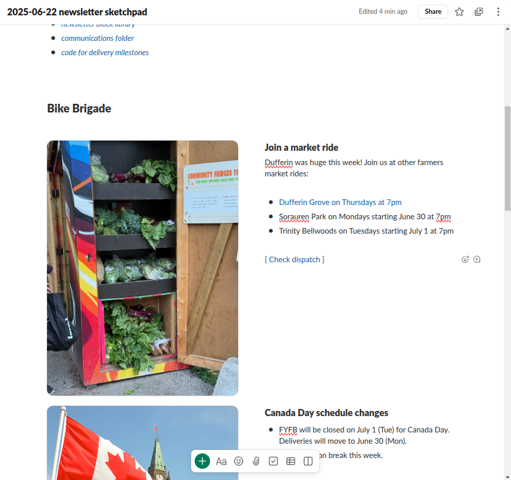
And then I redo it in Mailchimp:
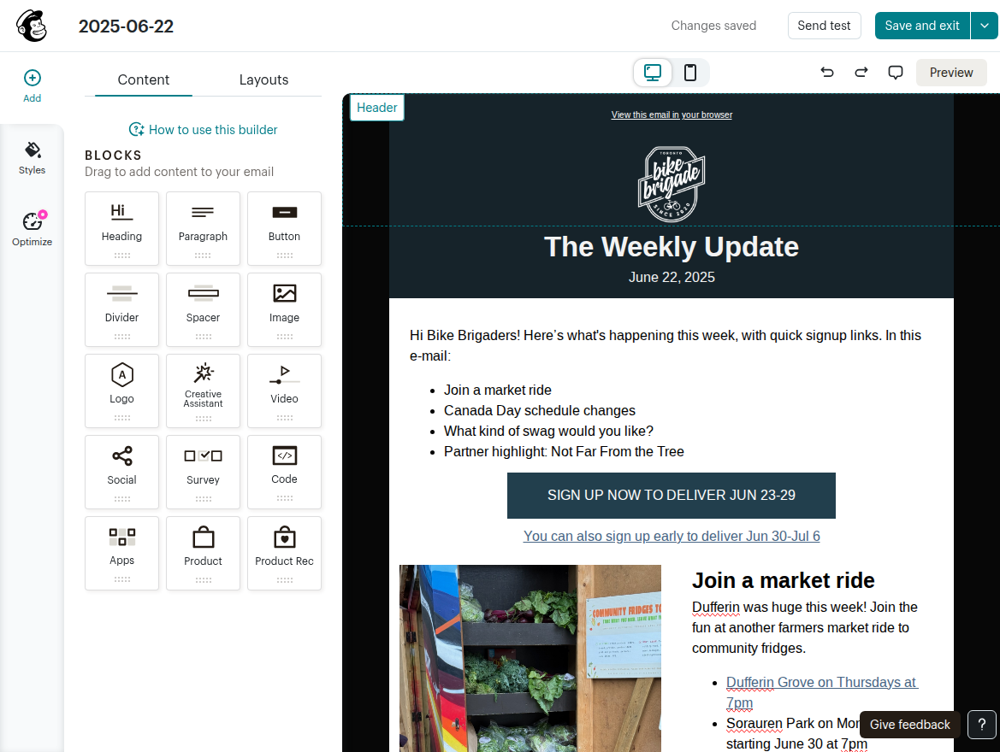
My process is roughly:
- Duplicate blocks.
- Copy the text for each item and paste it in. Adjust formatting.
- Update the dates and links. Flip back and forth between the dispatch webpage and Mailchimp, getting the links and the dates just right.
- Download images one by one.
- Replace the images by uploading the saved images. Hunt through lots of files named image (3).png, image (4).png, and so on. Update their attributes and links.
- Change text and link colours as needed by manually selecting the text, clicking on the colour button in the toolbar, and selecting the correct colour.
- Change the text on each button. Switch to Slack, copy the link, switch back to Mailchimp, and update the link.
I think I can get Emacs to make things easier.
Transforming HTML
The rest of the newsletter is less straightforward. I copy parts of the newsletter draft from the canvas in Slack to the block editor in Mailchimp. When I paste it in, I need to do a lot to format the results neatly.
I think I'll want to use this technique of transforming HTML data on the clipboard again in the future, so let's start with a general way to do it. This uses the xclip tool for command-line copying and pasting in X11 environments. It parses the HTML into a document object model (DOM), runs it through various functions sequentially, and copies the transformed results. Using DOMs instead of regular expressions means that it's easier to handle nested elements.
(defun my-transform-html (functions text)
"Apply FUNCTIONS to TEXT, which is parsed as HTML.
Each function is called with the DOM and should return a DOM.
Return the resulting HTML as a string."
(with-temp-buffer
(when (stringp text)
(insert (concat "<div>"
text
"</div>")))
(let ((dom (if (stringp text) (libxml-parse-html-region (point-min) (point-max))
text))) ; might already be a DOM
(erase-buffer)
(svg-print (seq-reduce
(lambda (prev val)
(funcall val prev))
(or functions my-transform-html-clipboard-functions)
dom))
(buffer-string))))
(defvar my-transform-html-clipboard-functions nil "List of functions to call with the clipboard contents.
Each function should take a DOM node and return the resulting DOM node.")
;; Rich text can sometimes be finicky to paste, so maybe I'll default to working with plain text
;; if there's a code view I can use to paste in the HTML.
(defvar my-transform-html-clipboard-rich-text nil
"Non-nil means copy as rich text instead of plain HTML.")
(defun my-transform-html-clipboard (&optional activate-app-afterwards functions text
as-rich-text)
"Parse clipboard contents and transform it.
This calls FUNCTIONS, defaulting to `my-transform-html-clipboard-functions'.
If ACTIVATE-APP-AFTERWARDS is non-nil, use xdotool to try to activate that app's window."
(when (region-active-p) (setq text (buffer-substring (region-beginning) (region-end))))
(unless text
(setq text (shell-command-to-string "unbuffer -p xclip -o -selection clipboard -t text/html 2>& /dev/null")))
(when (string= text "") (error "Clipboard does not contain HTML."))
(with-temp-buffer
(insert (my-transform-html functions text))
(if (or as-rich-text my-transform-html-clipboard-rich-text)
(shell-command-on-region
(point-min) (point-max)
"xclip -i -selection clipboard -t text/html -filter 2>& /dev/null")
(kill-new (buffer-substring-no-properties (point-min) (point-max)))))
(when activate-app-afterwards
(call-process "xdotool" nil nil nil "search" "--onlyvisible" "--all" activate-app-afterwards "windowactivate" "windowfocus")))
Saving images
Images from Slack don't transfer cleanly to
Mailchimp. I can download images from Slack one at
a time, but Slack saves them with generic
filenames like image (2).png. Each main
newsletter item has one image, so I'd like to
automatically save the image using the item title.
When I copy HTML from the Slack canvas, images are
included as data URIs. The markup looks like this:
<img src='data:image/png;base64,iVBORw0KGgo...
With the way I do the draft in Slack, images are
always followed by the item title as an h2
heading. If there isn't a heading, the image just
doesn't get saved. If there's no image in a
section, the code clears the variable, so that's
fine too. I can parse and save the images like
this:
;; Hmm, now I need to modify it to handle emojis in the text.
;; Emojis have :text: in the alt. I need to upload them.
(defun my-transform-html-save-images (dom dir &optional file-prefix transform-fn)
"Returns a list of (section list).
list is a list of alists with the following keys:
- type (main, extra, emoji)
- alt
- filename"
(let (last-image last-image-filename last-image-alt results last-image-node)
(dom-search
dom
(lambda (node)
(pcase (dom-tag node)
('img
(let* ((data (dom-attr node 'src))
(jpg (concat (file-name-sans-extension data)
".jpg")))
(when (file-exists-p jpg)
(dom-set-attribute node 'src jpg)
(setq data jpg))
(when (or last-image last-image-filename)
(cond
;; this image is after another image, so the previous image must be an extra one
(last-image
(setq last-image-filename
(expand-file-name
(format "%s%s-extra.%s"
(or file-prefix "")
(if transform-fn
(funcall transform-fn (caar results))
(caar results))
(car last-image))
dir))
(with-temp-file last-image-filename
(set-buffer-file-coding-system 'binary)
(insert (base64-decode-string (cdr last-image)))))
;; this image is after another image, so the previous image must be an extra one
(last-image-filename
(let ((new-filename
(expand-file-name
(format "%s%s-extra.%s"
(or file-prefix "")
(if transform-fn
(funcall transform-fn (caar results))
(caar results))
"jpg")
dir)))
(call-process "convert" nil nil nil last-image-filename
new-filename)
(setq last-image-filename new-filename))))
(push
(list
(cons 'type 'extra)
(cons 'filename last-image-filename)
(cons 'alt last-image-alt))
(cdr (car results)))
(dom-remove-node dom node)
(setq last-image-node nil)
(setq last-image nil last-image-filename nil))
(cond
((string-match "^:.+?:" (or (dom-attr node 'alt) ""))
(setq last-image-node nil)
(push
(list
(cons 'type 'emoji)
(cons 'filename (dom-attr node 'src))
(cons 'alt (dom-attr node 'alt)))
(cdar results)))
((string-match "^images/" data)
(setq last-image nil
last-image-filename data
last-image-alt (dom-attr node 'alt)
last-image-node node))
((string-match "^data:image/" data)
(with-temp-buffer
(insert data)
(goto-char (point-min))
(when (looking-at "data:image/\\([^;]+?\\);base64,")
(setq last-image (cons (match-string 1)
(buffer-substring (match-end 0) (point-max)))
last-image-filename nil
last-image-alt (dom-attr node 'alt)
last-image-node node)))))))
('h2
(when (not (string= (string-trim (dom-texts node)) ""))
(cond
(last-image
(setq last-image-filename
(expand-file-name
(format "%s%s.%s"
(or file-prefix "")
(if transform-fn
(funcall transform-fn (dom-texts node))
(dom-texts node))
(car last-image))
dir))
(with-temp-file last-image-filename
(set-buffer-file-coding-system 'binary)
(insert (base64-decode-string (cdr last-image)))))
(last-image-filename
(let ((new-filename
(expand-file-name
(format "%s%s.%s"
(or file-prefix "")
(if transform-fn
(funcall transform-fn (dom-texts node))
(dom-texts node))
(file-name-extension last-image-filename))
dir)))
(copy-file last-image-filename new-filename t)
(setq last-image-filename new-filename))))
(push (cons (string-trim (dom-texts node))
`(((filename . ,last-image-filename)
(alt . ,last-image-alt)
(type . main))))
results)
(when last-image-node
(dom-remove-node dom last-image-node))
(setq last-image nil
last-image-node nil
last-image-filename nil))))))
(nreverse results)))
I wrapped this in a small function for newsletter-specific processing:
(defun my-transform-html-slugify (s)
(downcase
(replace-regexp-in-string
"^-+\\|-$" ""
(replace-regexp-in-string
"[^A-Za-z0-9]+" "-"
(string-trim s)))))
(defvar my-brigade-newsletter-images-directory "~/proj/bike-brigade/newsletter/images")
(defun my-brigade-newsletter-heading-to-image-file-name (heading)
(replace-regexp-in-string
"[^-a-z0-9]" ""
(replace-regexp-in-string
" +"
"-"
(string-trim (downcase heading)))))
(defun my-brigade-save-newsletter-images (dom)
(my-transform-html-save-images
dom
my-brigade-newsletter-images-directory
(concat (substring (org-read-date nil nil "+Sun") 0 10)
"-news-")
#'my-transform-html-slugify))
For easier testing, I used xclip -o -selection
clipboard -t text/html > ~/Downloads/test.html to
save the clipboard. To run the code with the saved
clipboard, I can call it like this:
(my-brigade-save-newsletter-images
(with-temp-buffer (insert-file-contents "~/Downloads/test.html") (libxml-parse-html-region)))
Cleaning up
Now that I've saved the images, I can remove them:
(defun my-transform-html-remove-images (dom)
(dolist (img (dom-by-tag dom 'img))
(dom-remove-node dom img))
dom)
I can also remove the italics that I use for comments.
(defun my-transform-html-remove-italics (dom)
(dolist (node (dom-by-tag dom 'i))
(dom-remove-node dom node))
dom)
Here's how I can test it:
(my-transform-html-clipboard
nil
'(my-transform-html-remove-images
my-transform-html-remove-italics)
(with-temp-buffer (insert-file-contents "~/Downloads/test.html") (buffer-string)))
Removing sections
I put longer comments and instructions under "Meta" headings, which I can automatically remove.
(defvar my-brigade-section nil)
(defun my-brigade-remove-meta-recursively (node &optional recursing)
"Remove <h1>Meta</h1> headings in NODE and the elements that follow them.
Resume at the next h1 heading."
(unless recursing (setq my-brigade-section nil))
(cond
((eq (dom-tag node) 'h1)
(setq my-brigade-section (string-trim (dom-texts node)))
(if (string= my-brigade-section "Meta")
nil
node))
((string= my-brigade-section "Meta")
nil)
(t
(let ((processed
(seq-keep
(lambda (child)
(if (stringp child)
(unless (string= my-brigade-section "Meta")
child)
(my-brigade-remove-meta-recursively child t)))
(dom-children node))))
`(,(dom-tag node) ,(dom-attributes node) ,@processed)))))
Let's try it out:
(my-transform-html-clipboard
nil
'(my-transform-html-remove-images
my-transform-html-remove-italics
my-brigade-remove-meta-recursively)
(with-temp-buffer (insert-file-contents "~/Downloads/test.html") (buffer-string)))
Removing unneeded styles
(defun my-html-extract-css-rules (dom)
"Extract CSS rules and return a hash table mapping class names to properties."
(let* ((css-rules (make-hash-table :test 'equal))
(css-content (dom-texts (car (dom-by-tag dom 'style))))
(len (length css-content))
(start 0))
(while (and (< start len)
(string-match "\\([^{]+\\){\\([^}]+\\)}" css-content start))
(let ((selector (match-string 1 css-content))
(properties (match-string 2 css-content)))
(puthash selector properties css-rules)
(setq start (match-end 0))))
css-rules))
(defun my-brigade-convert-span-style (node rules)
(when (and (dom-attr node 'class)
(not (string= (string-trim (dom-texts node)) "")))
(let ((styles
(when (dom-attr node 'class)
(string-join
(seq-keep (lambda (class-name)
(let ((prop (gethash (concat "." class-name) rules)))
(when (and prop
(string-match "font-weight:700\\|font-style:italic" prop))
prop)))
(split-string (dom-attr node 'class)))
";"))))
(unless (or (null styles) (string= styles ""))
(dom-set-attribute node 'style styles)
(dom-remove-attribute node 'class)
node))))
(defun my-brigade-simplify-html (dom)
(let ((css-rules (my-html-extract-css-rules dom)))
(dolist (tag '(li b ul span p a h2 div))
(dolist (node (dom-by-tag dom tag))
(or (my-brigade-convert-span-style node css-rules)
(dolist (attr '(style class id))
(when (dom-attr node attr)
(dom-remove-attribute node attr))))))
;; remove comments
(mapc (lambda (node) (dom-remove-node (dom-parent dom node) node))
(dom-by-tag dom 'sup))
;; remove blank paragraphs
(dom-search
dom
(lambda (node)
(when (eq (dom-tag node) 'p))
(when (and (string= (string-trim (dom-texts node)) "")
(not (dom-by-tag node 'img)))
(dom-remove-node (dom-parent dom node) node))))
;; fix links
(dolist (node (dom-by-tag dom 'a))
(when (string-match "https://www\\.google\\.com\\/url" (dom-attr node 'href))
(let ((args (url-parse-query-string
(cdr (url-path-and-query (url-generic-parse-url (dom-attr node 'href)))))))
(dom-set-attribute node 'href (car (assoc-default "q" args 'string=))))))
dom))
Formatting calls to action
Mailchimp recommends using buttons for calls to action so that they're larger and easier to click than links. In my Slack canvas draft, I use [ link text ] to indicate those calls to action. Wouldn't it be nice if my code automatically transformed those into centered buttons?
(defun my-brigade-format-buttons (dom)
(dolist (node (dom-by-tag dom 'a))
(let ((text (dom-texts node)))
(if (string-match "\\[ *\\(.+?\\) *\\]" text)
;; button, wrap in a table
(with-temp-buffer
(insert
(format "<table><tbody><tr><td style=\"padding: 12px 0 12px 0\"><div style=\"margin-top: 12px\"><table align=\"center\" border=\"0\" cellpadding=\"0\" cellspacing=\"0\" role=\"presentation\" class=\"mceButtonContainer\" style=\"padding-top: 24px; margin: auto; margin-top: 12px; text-align: center\"><tbody><tr class=\"mceStandardButton\"><td style=\"background-color:#000000;border-radius:0;margin-top:12px;text-align:center\" valign=\"top\" class=\"mceButton\"><a href=\"%s\" target=\"_blank\" class=\"mceButtonLink\" style=\"background-color:#000000;border-radius:0;border:2px solid #000000;color:#ffffff;display:block;font-family:'Helvetica Neue', Helvetica, Arial, Verdana, sans-serif;font-size:16px;font-weight:normal;font-style:normal;padding:16px 28px;text-decoration:none;text-align:center;direction:ltr;letter-spacing:0px\" rel=\"noreferrer\">%s</a></td></tr></tbody></table></td></tr></table>"
(dom-attr node 'href)
(match-string 1 text)))
(let ((parent-paragraph (my-dom-closest dom node 'p)))
(dom-add-child-before
(dom-parent dom parent-paragraph)
(car (dom-by-tag (libxml-parse-html-region (point-min) (point-max)) 'div))
parent-paragraph)
(dom-remove-node dom parent-paragraph))))))
dom)
Now I can test those functions in combination:
(my-transform-html-clipboard
nil
'(my-transform-html-remove-images
my-transform-html-remove-italics
my-brigade-remove-meta-recursively
my-brigade-format-buttons)
(with-temp-buffer (insert-file-contents "~/Downloads/test.html") (buffer-string)))
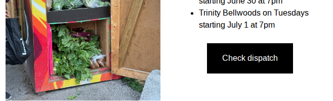
Changing link colours
I also want to change the link colours to match the colour scheme. The newsletter has two parts distinguished by background colours. Bike Brigade updates use black text on a white background, and community updates use white text on a dark blue background so that they're visually distinct. For contrast, I like to use light blue links in the community section, which doesn't match the colour of the links when I paste them in from Slack. This meant manually recolouring the text and each of the links in Mailchimp, which was tedious.
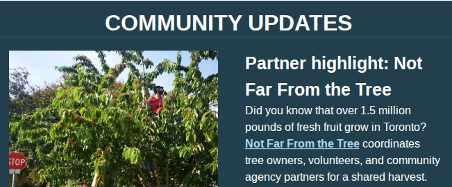
This code changes the colours of the links. It also changes the colours of text by wrapping spans around them. It skips the links we turned into buttons.
(defvar my-brigade-community-text-style "color: #ffffff")
(defvar my-brigade-community-link-style "color: #aed9ef")
(defun my-brigade-recolor-recursively (node)
"Change the colors of links and text in NODE.
Ignore links with the class mceButtonLink.
Uses `my-brigade-community-text-style' and `my-brigade-community-link-style'."
(pcase (dom-tag node)
('table node) ; pass through, don't recurse further
('a ; change the colour
(unless (string= (or (dom-attr node 'class) "") "mceButtonLink")
(dom-set-attribute node 'style my-brigade-community-link-style))
node)
(_
(let ((processed
(seq-map
(lambda (child)
(if (stringp child)
(dom-node 'span `((style . ,my-brigade-community-text-style)) child)
(my-brigade-recolor-recursively child)))
(dom-children node))))
`(,(dom-tag node) ,(dom-attributes node) ,@processed)))))
I can add that to the sequence:
(my-transform-html-clipboard
nil
'(my-transform-html-remove-images
my-transform-html-remove-italics
my-brigade-remove-meta-recursively
my-brigade-format-buttons
my-brigade-recolor-recursively)
(with-temp-buffer (insert-file-contents "~/Downloads/test.html") (buffer-string)))
Just the headings
(defun my-brigade-just-headings (dom)
(let ((entries
(dom-node 'ul)))
(dolist (tag (dom-by-tag dom 'h2))
(let ((text (string-trim (dom-texts tag))))
(unless (string= text "")
(dom-append-child entries (dom-node 'li nil text)))))
entries))
Wrapping it up
Now that I've made all those little pieces, I can put them together in two interactive functions. The first function will be for the regular colour scheme, and the second function will be for the light-on-dark colour scheme. For convenience, I'll have it activate Google Chrome afterwards so that I can paste the results into the right block.
(defun my-brigade-transform-html (&optional recolor file as-rich-text)
(interactive (list nil (when current-prefix-arg (read-file-name "File: "))))
(my-transform-html-clipboard
"Chrome"
(append
'(my-transform-html-remove-images
my-transform-html-remove-italics
my-brigade-remove-meta-recursively
my-brigade-remove-styles
my-brigade-format-buttons)
(if recolor '(my-brigade-recolor-recursively)))
(when file
(with-temp-buffer (insert-file-contents file) (buffer-string)))
as-rich-text))
(defun my-brigade-transform-community-html (&optional file as-rich-text)
(interactive (list (when current-prefix-arg (read-file-name "File: "))))
(my-brigade-transform-html t file as-rich-text))
(defun my-brigade-transform-just-headings (&optional file as-rich-text)
(interactive (list (when current-prefix-arg (read-file-name "File: "))))
(my-transform-html-clipboard
"Chrome"
'(my-brigade-just-headings)
(when file
(with-temp-buffer (insert-file-contents file) (buffer-string)))
as-rich-text))
And then I can use links like this for quick shortcuts:
[[elisp:(my-brigade-transform-html nil "~/Downloads/test.html")]][[elisp:(my-brigade-transform-community-html "~/Downloads/test.html")]][[elisp:(my-brigade-transform-html)]]
Since this pastes the results as formatted text, it's editable using the usual Mailchimp workflow. That way, other people can make last-minute updates.
With embedded images, the saved HTML is about 8 MB. The code makes quick work of it. This saves about 10-15 minutes per newsletter, so the time investment probably won't directly pay off. But it also reduces annoyance, which is even more important than raw time savings. I enjoyed figuring all this out. I think this technique of transforming HTML in the clipboard will come in handy. By writing the functions as small, composable parts, I can change how I want to transform the clipboard.
Next steps
It would be interesting to someday automate the campaign blocks while still making them mostly editable, as in the following examples:
- tan-yong-sheng/mailchimp_auto: A command line application to automate the email campaign creation process on MailChimp based on the google spreadsheet input
- Automating My Newsletter Generation with MailChimp, Google Sheets, and AWS Lambda - DEV Community
Maybe someday!
(Also, hat tip to this Reddit post that helped me
get xclip to work more reliably from within Emacs
by adding -filter 2>& /dev/null to the end of my
xclip call so it didn't hang.)
Getting a Google Docs draft ready for Mailchimp via Emacs and Org Mode emacs org
: Got it to include the dates in the TOC as well
I've been volunteering to help with the Bike Brigade newsletter. I like that there are people who are out there helping improve food security by delivering food bank hampers to recipients. Collecting information for the newsletter also helps me feel more appreciation for the lively Toronto biking scene, even though I still can't make it out to most events. The general workflow is:
- collect info
- draft the newsletter somewhere other volunteers can give feedback on
- convert the newsletter to Mailchimp
- send a test message
- make any edits requested
- schedule the email campaign
We have the Mailchimp Essentials plan, so I can't just export HTML for the whole newsletter. Someday I should experiment with services that might let me generate the whole newsletter from Emacs. That would be neat. Anyway, with Mailchimp's block-based editor, at least I can paste in HTML code for the text/buttons. That way, I don't have to change colours or define links by hand.
The logistics volunteers coordinate via Slack, so a Slack Canvas seemed like a good way to draft the newsletter. I've previously written about my workflow for copying blocks from a Slack Canvas and then using Emacs to transform the rich text, including recolouring the links in the section with light text on a dark background. However, copying rich text from a Slack Canvas turned out to be unreliable. Sometimes it would copy what I wanted, and sometimes nothing would get copied. There was no way to export HTML from the Slack Canvas, either.
I switched to using Google Docs for the drafts. It was a little less convenient to add items from Slack messages and I couldn't easily right-click to download the images that I pasted in. It was more reliable in terms of copying, but only if I used xclip to save the clipboard into a file instead of trying to do the whole thing in memory.
I finally got to spend a little time automating a new workflow. This time I exported the Google Doc as a zip that had the HTML file and all the images in a subdirectory. The HTML source is not very pleasant to work with. It has lots of extra markup I don't need. Here's what an entry looks like:
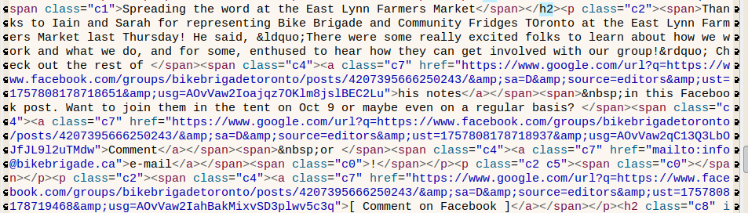
Things I wanted to do with the HTML:
- Remove the google.com/url redirection for the links. Mailchimp will add its own redirection for click-tracking, but at least the links can look simpler when I paste them in.
- Remove all the extra classes and styles.
- Turn [ call to action ] into fancier Mailchimp buttons.
Also, instead of transforming one block at a time, I decided to make an Org Mode document with all the different blocks I needed. That way, I could copy and paste things in quick succession.
Here's what the result looks like. It makes a table of contents, adds the sign-up block, and adds the different links and blocks I need to paste into Mailchimp.
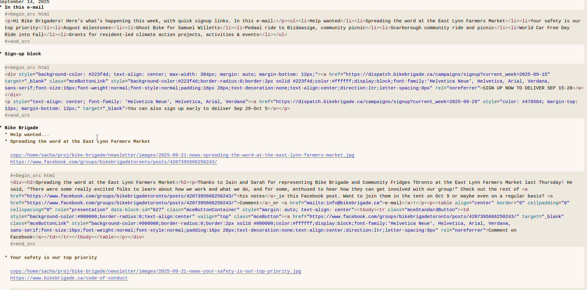
I need to copy and paste the image filenames into the upload dialog on Mailchimp, so I use my custom Org Mode link type for copying to the clipboard. For the HTML code, I use #+begin_src html ... #+end_src instead of #+begin_export html ... #+end_export so that I can use Embark and embark-org to quickly copy the contents of the source block. (That doesn't work for export blocks yet.) I have C-. bound to embark-act, the source block is detected by the functions that embark-org.el added to embark-target-finders, and the c binding in embark-org-src-block-map calls embark-org-copy-block-contents. So all I need to do is C-. c in a block to copy its contents.
Here's the code to process the newsletter draft
(defun my-brigade-process-latest-newsletter-draft (date)
"Create an Org file with the HTML for different blocks."
(interactive (list (if current-prefix-arg (org-read-date nil t nil "Date: ")
(org-read-date nil t "+Sun"))))
(when (stringp date) (setq date (date-to-time date)))
(let ((default-directory "~/Downloads/newsletter")
file
dom
sections)
(call-process "unzip" nil nil nil "-o" (my-latest-file "~/Downloads" "\\.zip$"))
(setq file (my-latest-file default-directory))
(with-temp-buffer
(insert-file-contents-literally file)
(goto-char (point-min))
(setq dom (my-brigade-simplify-html (libxml-parse-html-region (point-min) (point-max))))
(my-brigade-save-newsletter-images dom)
(setq sections
(my-html-group-by-tag
'h1
(dom-children
(dom-by-tag
dom 'body)))))
(with-current-buffer (get-buffer-create "*newsletter*")
(erase-buffer)
(org-mode)
(insert
(format-time-string "%B %-e, %Y" date) "\n"
"* In this e-mail\n#+begin_src html\n"
"<p>Hi Bike Brigaders! Here’s what's happening this week, with quick signup links. In this e-mail:</p>"
(replace-regexp-in-string
"<li>" "\n<li>"
(with-temp-buffer
(svg-print
(apply 'dom-node
'ul nil
(append
(my-brigade-toc-items (assoc-default "Bike Brigade" sections 'string=))
(my-brigade-toc-items (assoc-default "In our community" sections 'string=)))))
(buffer-string)))
"\n<br />\n"
(my-brigade-copy-signup-block date)
"\n#+end_src\n\n")
(dolist (sec '("Bike Brigade" "In our community"))
(insert "* " sec "\n"
(mapconcat
(lambda (group)
(let* ((item (apply 'dom-node 'div nil
(append
(list (dom-node 'h2 nil (car group)))
(cdr group))))
(image (my-brigade-image (car group))))
(format "** %s\n\n%s\n%s\n\n#+begin_src html\n%s\n#+end_src\n\n"
(car group)
(if image (org-link-make-string (concat "copy:" image)) "")
(or (my-html-last-link-href item) "")
(my-transform-html
(delq nil
(list
'my-transform-html-remove-images
'my-transform-html-remove-italics
'my-brigade-format-buttons
(when (string= sec "In our community")
'my-brigade-recolor-recursively)))
item))))
(my-html-group-by-tag 'h2 (cdr (assoc sec sections 'string=)))
"")))
(insert "* Other updates\n"
(format "#+begin_src html\n<h2>Other updates</h2>%s\n#+end_src\n\n"
(my-transform-html
'(my-transform-html-remove-images
my-transform-html-remove-italics)
(car (cdr (assoc "Other updates" sections 'string=))))))
(goto-char (point-min))
(display-buffer (current-buffer)))))
(defun my-brigade-toc-items (section-children)
"Return a list of <li /> nodes."
(mapcar
(lambda (group)
(let* ((text (dom-texts (cadr group)))
(regexp (format "^%s \\([A-Za-z]+ [0-9]+\\)"
(regexp-opt '("Mon" "Tue" "Wed" "Thu" "Fri" "Sat" "Sun"))))
(match (when (string-match regexp text) (match-string 1 text))))
(dom-node 'li nil
(org-html-encode-plain-text
(if match
(format "%s: %s" match (car group))
(car group))))))
(my-html-group-by-tag 'h2 section-children)))
(defun my-html-group-by-tag (tag dom-list)
"Use TAG to divide DOM-LIST into sections. Return an alist of (section . children)."
(let (section-name current-section results)
(dolist (node dom-list)
(if (and (eq (dom-tag node) tag)
(not (string= (string-trim (dom-texts node)) "")))
(progn
(when current-section
(push (cons section-name (nreverse current-section)) results)
(setq current-section nil))
(setq section-name (string-trim (dom-texts node))))
(when section-name
(push node current-section))))
(when current-section
(push (cons section-name (reverse current-section)) results)
(setq current-section nil))
(nreverse results)))
(defun my-html-last-link-href (node)
"Return the last link HREF in NODE."
(dom-attr (car (last (dom-by-tag node 'a))) 'href))
(defun my-brigade-image (heading)
"Find the latest image related to HEADING."
(car
(nreverse
(directory-files my-brigade-newsletter-images-directory
t (regexp-quote (my-brigade-newsletter-heading-to-image-file-name heading))))))
Some of the functions it uses are in my config, particularly the section on Transforming HTML clipboard contents with Emacs to smooth out Mailchimp annoyances: dates, images, comments, colours.
Along the way, I learned that svg-print is a good way to turn document object models back into HTML.
When I saw two more events and one additional link that I wanted to include, I was glad I already had this code sorted out. It made it easy to paste the images and details into the Google Doc, reformat it slightly, and get the info through the process so that it ended up in the newsletter with a usefully-named image and correctly-coloured links.
I think this is a good combination of Google Docs for getting other people's feedback and letting them edit, and Org Mode for keeping myself sane as I turn it into whatever Mailchimp wants.
My next step for improving this workflow might be to check out other e-mail providers in case I can get Emacs to make the whole template. That way, I don't have to keep switching between applications and using the mouse to duplicate blocks and edit the code.
Bike Brigade: working with Mailchimp images
All right, let's try uploading the files ourselves. This uses https://github.com/sachac/mailchimp-el .
(use-package mailchimp :load-path "~/proj/mailchimp-el" :vc (:url "https://github.com/sachac/mailchimp-el"))
(defun my-brigade-reuse-or-upload-images (images)
"Return an updated list of (section . images)."
(let* ((base-regexp "^.+?-news-\\|\\(\\.[0-9][0-9]\\)?\\.\\(jpg\\||png\\)$")
(recent-files
(mapcar
(lambda (o)
(cons
(cons 'base
(replace-regexp-in-string
base-regexp ""
(file-name-base (assoc-default 'name o))))
o))
(assoc-default 'files (mailchimp-recent-files 100))))
results)
(mapcar
(lambda (section)
(setcdr
section
(mapcar
(lambda (image)
(let* ((base
(if (eq (alist-get 'type image) 'emoji)
(replace-regexp-in-string "^:\\|:$" "" (alist-get 'alt image))
(and (assoc-default 'filename image)
(replace-regexp-in-string
base-regexp ""
(file-name-base (alist-get 'filename image))))))
(existing (and base (seq-find (lambda (o)
(string= base (alist-get 'base o)))
recent-files))))
(when base
(let ((url
(if existing
(assoc-default 'full_size_url existing)
(alist-get
'full_size_url
(mailchimp-upload-file
(alist-get 'filename image)
(if (eq (alist-get 'type image) 'emoji)
(concat
(replace-regexp-in-string "^:\\|:$" "" (alist-get 'alt image))
"."
(file-name-extension (alist-get 'filename image)))))))))
(push (cons 'url url) image)
(push (cons (file-name-base (alist-get 'filename image)) url) results)))
image))
(cdr section)))
section)
images)))
(defun my-brigade-toc (sections)
(replace-regexp-in-string
"<li>" "\n<li>"
(with-temp-buffer
(svg-print
(apply 'dom-node
'ul nil
(append
(my-brigade-toc-items (assoc-default "Bike Brigade" sections 'string=))
(my-brigade-toc-items (assoc-default "In our community" sections 'string=)))))
(buffer-string))))
(defun my-brigade-remove-section-images (item)
;; remove the last image, because that's the image for the next section
(when-let* ((last-image (car (last (dom-by-tag item 'img)))))
(dom-remove-node item last-image))
item)
(defun my-brigade-format-section (section images &optional recolor)
(mapconcat
(lambda (group)
(let* ((item (apply 'dom-node 'div nil
(append
(list (dom-node 'h2 nil (car group)))
(cdr group))))
(images (assoc-default (car group) images 'string=))
(main-image (seq-find (lambda (o) (eq (alist-get 'type o) 'main)) images))
(extra-image (seq-find (lambda (o) (eq (alist-get 'type o) 'extra)) images))
(call-to-action (dom-attr (dom-search item (lambda (o)
(and (eq (dom-tag o) 'a)
(string-match "^\\[ .+ \\]" (dom-texts o)))))
'href)))
(if main-image
(format "<table width=\"100%%\" border=\"0\" cellspacing=\"0\" cellpadding=\"0\" align=\"center\" style=\"margin-top: 12px; margin-bottom: 12px;\"><tbody><tr class=\"mceRow\"><td colspan=\"1\" rowspan=\"1\" style=\"background-position:center;background-repeat:no-repeat;background-size:cover\" valign=\"top\"><table width=\"100%%\" border=\"0\" cellspacing=\"0\" cellpadding=\"0\"><tbody><tr><td colspan=\"12\" rowspan=\"1\" valign=\"top\" width=\"100%%\" class=\"mceColumn\" id=\"mceColumnId--38\"><table width=\"100%%\" border=\"0\" cellspacing=\"0\" cellpadding=\"0\"><tbody><tr><td colspan=\"1\" rowspan=\"1\" style=\"border:0;border-radius:0\" valign=\"top\" id=\"b812\"><table width=\"100%%\" border=\"0\" cellspacing=\"0\" cellpadding=\"0\" align=\"center\"><tbody><tr class=\"mceRow\"><td colspan=\"1\" rowspan=\"1\" style=\"background-position:center;background-repeat:no-repeat;background-size:cover;padding-top:0px;padding-bottom:0px\" valign=\"top\"><table style=\"table-layout:fixed\" width=\"100%%\" border=\"0\" cellspacing=\"24\" cellpadding=\"0\"><tbody><tr><td colspan=\"6\" rowspan=\"1\" style=\"padding-top:0;padding-bottom:0\" valign=\"top\" width=\"50%%\" class=\"mceColumn\" id=\"mceColumnId-809\"><table width=\"100%%\" border=\"0\" cellspacing=\"0\" cellpadding=\"0\"><tbody><tr><td colspan=\"1\" rowspan=\"1\" style=\"background-color:transparent;border:0;border-radius:0\" valign=\"top\" class=\"mceImageBlockContainer\" id=\"b808\"><table style=\"border-collapse:separate;margin:0;vertical-align:top;max-width:100%%;width:100%%;height:auto\" width=\"100%%\" border=\"0\" cellspacing=\"0\" cellpadding=\"0\" align=\"center\"><tbody><tr><td colspan=\"1\" rowspan=\"1\" style=\"border:0;border-radius:0;margin:0\" valign=\"top\">%s</td></tr></tbody></table></td></tr></tbody></table></td><td colspan=\"6\" rowspan=\"1\" style=\"padding-top:0;padding-bottom:0\" valign=\"top\" width=\"50%%\" class=\"mceColumn\" id=\"mceColumnId-811\"><table width=\"100%%\" border=\"0\" cellspacing=\"0\" cellpadding=\"0\"><tbody><tr><td colspan=\"1\" rowspan=\"1\" style=\"padding:12px\" valign=\"top\" class=\"mceGutterContainer\"><table style=\"border-collapse:separate\" width=\"100%%\" border=\"0\" cellspacing=\"0\" cellpadding=\"0\"><tbody><tr><td colspan=\"1\" rowspan=\"1\" style=\"padding-top:0;padding-bottom:0;padding-right:0;padding-left:0;border:0;border-radius:0\" valign=\"top\" id=\"b810\"><table style=\"border:0;background-color:transparent;border-radius:0;border-collapse:separate\" width=\"100%%\"><tbody><tr><td colspan=\"1\" rowspan=\"1\" qqstyle=\"padding-left:24px;padding-right:24px;\" class=\"mceTextBlockContainer\">%s</td></tr></tbody></table></td></tr></tbody></table></td></tr></tbody></table></td></tr></tbody></table></td></tr></tbody></table></td></tr></tbody></table></td></tr></tbody></table></td></tr>%s</tbody></table>"
(if call-to-action
(format "<a href=\"%s\" tabindex=\"-1\" style=\"display: block;\"><span style=\"background-color: transparent\"><img src=\"%s\" alt=\"%s\" style=\"padding-top: 12px; display:block;max-width:100%%;height:auto;border-radius:0\" width=\"306\" height=\"auto\" class=\"imageDropZone mceImage\"></span></a>"
call-to-action
(assoc-default 'url main-image)
(if (not (string= (assoc-default 'alt main-image) ""))
(assoc-default 'alt main-image)
(car group)))
(format "<img src=\"%s\" alt=\"%s\" style=\"display:block; padding-top: 12px; width:100%%; max-width:100%%;height:auto;border-radius:0\" width=\"306\" height=\"auto\" class=\"imageDropZone mceImage\">"
(assoc-default 'url main-image)
(if (not (string= (assoc-default 'alt main-image) ""))
(assoc-default 'alt main-image)
(car group))))
(my-transform-html
(delq nil
(list
'my-transform-html-remove-italics
'my-brigade-format-buttons
(when recolor
'my-brigade-recolor-recursively)))
item)
;; extra images?
(if extra-image
(format "<tr><td colspan=\"2\" style=\"padding-top: 12px\"><img src=\"%s\" style=\"width: 100%%; max-width: 100%%\" alt=\"%s\"></td></tr>" (assoc-default 'url extra-image) (assoc-default 'alt extra-image nil ""))
""))
;; No images
(format "<table width=\"100%%\" border=\"0\" cellspacing=\"0\" cellpadding=\"0\" align=\"center\" style=\"margin-top: 12px; margin-bottom: 12px;\"><tbody>%s%s</tbody></table>"
(format "<tr><td colspan=\"2\" style=\"padding-top: 12px\">%s</td></tr>"
(my-transform-html
(delq nil
(list
'my-transform-html-remove-italics
'my-brigade-format-buttons
(when recolor
'my-brigade-recolor-recursively)))
item))
;; extra images?
(if extra-image
(format "<tr><td colspan=\"2\" style=\"padding-top: 12px\"><img src=\"%s\" alt=\"%s\" style=\"width: 100%%; max-width: 100%%\"></td></tr>" (assoc-default 'url extra-image) (assoc-default 'alt extra-image nil ""))
"")
))
))
(my-html-group-by-tag 'h2 section)
""))
(cl-defun my-brigade-block (text &key (bg "#223f4d")
(style "padding-left:24px;padding-right:24px;padding-top:12px;padding-bottom:12px"))
(format
"<table border=\"0\" cellpadding=\"0\" cellspacing=\"0\" width=\"100%%\" style=\"border-collapse:collapse\" role=\"presentation\"><tbody><tr><td style= \"padding-top:0;padding-bottom:0;padding-right:0;padding-left:0;border:0;border-radius:0\" valign=\"top\"><table width=\"100%%\" style= \"border:0;background-color:%s;border-radius:0\"><tbody><tr><td style=\"%s\" class=\"mceTextBlockContainer\"><div data-block-id=\"738\" class=\"mceText\" style= \"width:100%%\">%s</div></td></tr></tbody></table></td></tr></tbody></table>"
bg
style
text))
(defun my-brigade-update-images (dom images)
"Replace image references.
IMAGES is an alist of (filename . URL)."
(let ((all-images (mapcan 'cdr images))) ; todo: hash or alist
(mapcar
(lambda (node)
(when-let* ((base (file-name-base (dom-attr node 'src)))
(url
(alist-get 'url
(seq-find
(lambda (o)
(string= base
(file-name-base (alist-get 'filename o))))
all-images))))
(dom-set-attribute node 'src url)))
(dom-by-tag dom 'img)))
dom)
(defun my-brigade-process-latest-newsletter-draft-with-images (date)
"Create an Org file with the HTML for different blocks."
(interactive (list (if current-prefix-arg (org-read-date nil t nil "Date: ")
(org-read-date nil t "+Sun"))))
(when (stringp date) (setq date (date-to-time date)))
(let ((default-directory "~/proj/bike-brigade/temp_newsletter/")
file
images
dom
sections
html)
;(call-process "unzip" nil nil nil "-o" (my-latest-file "~/Downloads" "\\.zip$"))
(setq file (my-latest-file default-directory ".html"))
(with-temp-buffer
(insert-file-contents-literally file)
(goto-char (point-min))
(setq dom (libxml-parse-html-region (point-min) (point-max)))
(setq images (my-brigade-reuse-or-upload-images
(my-brigade-save-newsletter-images dom)))
(setq dom (my-brigade-simplify-html dom))
(setq dom (my-brigade-update-images dom images))
(setq sections
(my-html-group-by-tag
'h1
(dom-children
(dom-by-tag
dom 'body)))))
(setq html
(replace-regexp-in-string "<p><span></span></p>" ""
(concat
"<table class=\"newsletter\" margin=0 cellpadding=0 cellspacing=0 style=\"border-collapse:collapse\"><tbody><tr><td>"
(my-brigade-block (format "<table style=\"margin: auto\"><tbody><tr><td style=\"text-align: center; color: #f3f3f3\"><div style=\"text-align: center; color: #f3f3f3\">%s</div></td></tr></table>"
(format-time-string "%B %-e, %Y" date))
:bg "#16232a"
:style "padding: 0px 24px 12px 24px")
"<base href=\"\"><style>table { border-collapse: collapse !important } table.newsletter { border-collapse: collapse} .mceStandardButton a, table.sign-up a { text-decoration: none }</style><table><tbody><tr><td style=\"padding: 12px 24px 12px 24px\"><p>Hi Bike Brigaders! Here’s what's happening this week, with quick signup links. In this e-mail:</p>"
(my-brigade-toc sections)
""
(my-brigade-copy-signup-block date)
(my-brigade-format-section (assoc-default "Bike Brigade" sections #'string=) images)
"</td></tr></tbody></table><table style=\"background-color:#223f4d;\"><tbody><tr><td style=\"padding-left: 24px; padding-right: 24px\">"
(my-brigade-block "<h1 style=\"text-align: center;\"><span style= \"color:#ffffff;\">In our community</span></h1>")
(my-brigade-format-section (assoc-default "In our community" sections #'string=) images t)
"</td></tr></tbody></table>"
(if (assoc-default "Other updates" sections #'string=)
(format "<table><tbody><tr><td style=\"padding: 12px 24px 12px 24px\"><h2>Other updates</h2>%s</td></tr></tbody></table>"
(my-transform-html
nil
(car (assoc-default "Other updates" sections #'string=))))
"")
"</td></tr></tbody></table>")))
(when (called-interactively-p 'any)
(kill-new html))
html))
Emacs: Updating a Mailchimp campaign using a template, sending test e-mails, and scheduling it
I'm helping other volunteers get on board with doing the Bike Brigade newsletter. Since not everyone has access to (or the patience for) MailChimp, we've been using Google Docs to draft the newsletter and share it with other people behind the scenes. I've previously written about getting a Google Docs draft ready for Mailchimp via Emacs and Org Mode, which built on my code for transforming HTML clipboard contents to smooth out Mailchimp annoyances: dates, images, comments, colours. Now I've figured out how to update, test, and schedule the MailChimp campaign directly from Emacs so that I don't even have to go into the MailChimp web interface at all. I added those functions to sachac/mailchimp-el.
I used to manually download a ZIP of the Google Docs newsletter draft. I didn't feel like figuring out authentication and Google APIs from Emacs, so I did that in a NodeJS script instead. convert-newsletter.js can either create or download the latest newsletter doc from our Google Shared Drive. (google-api might be helpful if I want to do this in Emacs, not sure.) If I call convert-newsletter.js with the download argument, it unpacks the zip into ~/proj/bike-brigade/temp_newsletter, where my Emacs Lisp function for processing the latest newsletter draft with images can turn it into the HTML to insert into the HTML template I've previously created. I've been thinking about whether I want to move my HTML transformation code to NodeJS as well so that I could run the whole thing from the command-line and possibly have other people run this in the future, or if I should just leave it in Emacs for my convenience.
Updating the campaign through the Mailchimp API means that I don't have to log in, replicate the campaign, click on the code block, and paste in the code. Very nice, no clicks needed. I also use TRAMP to write the HTML to a file on my server (my-bike-brigade-output-file is of the form /ssh:hostname:/path/to/file) so that other volunteers can get a web preview without waiting for the test email.
(defun my-brigade-next-campaign (&optional date)
(setq date (or date (org-read-date nil nil "+Sun")))
(seq-find
(lambda (o)
(string-match (concat "^" date)
(alist-get 'title (alist-get 'settings o))))
(alist-get 'campaigns (mailchimp-campaigns 5))))
(defvar my-bike-brigade-output-file nil)
(defun my-brigade-download-newsletter-from-google-docs ()
"Download the newsletter from Google Docs and puts it in ~/proj/bike-brigade/temp_newsletter/."
(interactive)
(let ((default-directory "~/proj/bike-brigade"))
(delete-directory "~/proj/bike-brigade/temp_newsletter" t)
(with-current-buffer (get-buffer-create "*Newsletter*")
(erase-buffer)
(display-buffer (current-buffer))
(call-process "node" nil t t "convert-newsletter.js" "download"))))
(defun my-brigade-create-or-update-campaign (&optional use-local)
(interactive (list current-prefix-arg))
(let* ((date (org-read-date nil nil "+Sun"))
(template-name "Bike Brigade weekly update")
(list-name "Bike Brigade")
(template-id
(alist-get
'id
(seq-find
(lambda (o)
(string= template-name (alist-get 'name o)))
(alist-get 'templates (mailchimp--request-json "templates")))))
(list-id (seq-find
(lambda (o)
(string= list-name
(alist-get 'name o)))
(alist-get 'lists (mailchimp--request-json "lists"))))
(campaign (my-brigade-next-campaign date))
(body `((type . "regular")
(recipients (list_id . ,(alist-get 'id list-id)))
(settings
(title . ,date)
(subject_line . "Bike Brigade: Weekly update")
(from_name . "Bike Brigade")
(reply_to . "info@bikebrigade.ca")
(tracking
(opens . t)
(html_clicks . t))))))
(unless campaign
(setq campaign (mailchimp--request-json
"/campaigns"
:method "POST"
:body
body)))
;; Download the HTML
(if use-local
(progn
(make-directory "~/proj/bike-brigade/temp_newsletter/" t)
(let ((default-directory "~/proj/bike-brigade/temp_newsletter/"))
(call-process "unzip" nil (get-buffer-create "*Newsletter*") nil
(my-latest-file my-download-dir ".zip")))
(let ((default-directory "~/proj/bike-brigade/"))
(call-process "node" nil (get-buffer-create "*Newsletter*") nil
"convert-newsletter.js"
"resize")))
(my-brigade-download-newsletter-from-google-docs))
;; Upload to Mailchimp
(mailchimp-campaign-update-from-template
(alist-get 'id campaign)
template-id
(list
(cons "main_content_area"
(my-brigade-process-latest-newsletter-draft-with-images
date))))
(when my-bike-brigade-output-file
(with-temp-file my-bike-brigade-output-file
(insert (alist-get 'html (mailchimp--request-json (format "/campaigns/%s/content" (alist-get 'id campaign)))))))
(browse-url (concat "https://sachachua.com/bike-brigade/" (file-name-nondirectory my-bike-brigade-output-file)))
(message "%s" "Done!")))
Now to send the test e-mails…
(defvar my-brigade-test-emails nil "Set to a list of e-mail addresses.")
(defun my-brigade-send-test-to-me ()
(interactive)
(mailchimp-campaign-send-test-email (my-brigade-next-campaign) user-mail-address))
(defun my-brigade-send-test ()
(interactive)
(if my-brigade-test-emails
(mailchimp-campaign-send-test-email (my-brigade-next-campaign) my-brigade-test-emails)
(error "Set `my-brigade-test-emails'.")))
And schedule it:
(defun my-brigade-schedule ()
(interactive)
(let* ((campaign (my-brigade-next-campaign))
(sched (format-time-string "%FT%T%z" (org-read-date t t "+Sun 11:00") t)))
(mailchimp-campaign-schedule campaign sched)
(message "Scheduled %s" (alist-get 'title (alist-get 'settings campaign)))))
Progress, bit by bit! Here's a screenshot showing the Google Docs draft on one side and my web preview in the other:

It'll be even cooler if I can get some of this working via systemd persistent tasks so that they happen automatically, or have some kind of way for the other newsletter volunteers to trigger a rebuild. Anyway, here's https://github.com/sachac/mailchimp-el in case the code is useful for anyone else.
Streaming
DONE Send currently-clocked task title to file, include in stream stream
(defun my-org-save-streaming-task-to-file ()
(if (member "stream" (org-get-tags))
(let ((title (org-entry-get (point) "ITEM")))
(with-temp-file "~/proj/stream/current-task.txt"
(insert title)))
(with-temp-file "~/proj/stream/current-task.txt")))
(defun my-org-clear-streaming-task ()
(with-temp-file "~/proj/stream/current-task.txt"))
(with-eval-after-load 'org-clock
(add-hook 'org-clock-in-hook #'my-org-save-streaming-task-to-file)
(add-hook 'org-clock-out-hook #'my-org-clear-streaming-task))
Stream agenda
(defun my-stream-agenda ()
(interactive)
(org-agenda nil "s")
)
Simple streaming with FFmpeg
: As it turns out, my X230T can't handle streaming with FFMmpeg. I get like half a frame a second. I'll try using vdo.ninja to send my screen over to another computer that might be able to handle OBS.
My X230T can't handle OBS, but maybe I can stream with FFmpeg. Quick notes on livestreaming to YouTube with FFmpeg on a Lenovo X230T
streaming-setup
# From pacmd list-sources | egrep '^\s+name'
export LAPEL=alsa_input.usb-Jieli_Technology_USB_Composite_Device_433035383239312E-00.mono-fallback #
export YETI=alsa_input.usb-Blue_Microphones_Yeti_Stereo_Microphone_REV8-00.analog-stereo
export SYSTEM=alsa_output.pci-0000_00_1b.0.analog-stereo.monitor
# MIC=$LAPEL
# AUDIO_WEIGHTS="1 1"
export MIC=$YETI
export AUDIO_WEIGHTS="0.5 0.5"
export OFFSET=+1920,430
export SIZE=1280x720
export SCREEN=LVDS-1 # from xrandr
xrandr --output $SCREEN --mode 1280x720
I switch to a larger size and a light theme. I also turn consult previews off to minimize the risk of leaking data through buffer previews.
prepare-for-emacsconf-screenshots-or-recordings
stream-laptop
source ~/bin/setup-laptop-for-streaming
DATE=$(date "+%Y-%m-%d-%H-%M-%S")
ffmpeg -f x11grab -framerate 30 -video_size $SIZE -i :0.0$OFFSET -f pulse -i $MIC -f pulse -i $SYSTEM -filter_complex "amix=inputs=2:weights=$AUDIO_WEIGHTS:duration=longest:normalize=0[audio]" -c:v libx264 -preset fast -maxrate 690k -bufsize 2000k -g 60 -vf format=yuv420p -c:a aac -b:a 96k -y -f tee -map 0:v -map '[audio]' -flags +global_header "/home/sacha/recordings/$DATE.flv|[f=flv]rtmp://a.rtmp.youtube.com/live2/$YOUTUBE_KEY"
record-laptop
source ~/bin/setup-laptop-for-streaming
DATE=$(date "+%Y-%m-%d-%H-%M-%S")
ffmpeg -f x11grab -framerate 30 -video_size $SIZE -i :0.0$OFFSET -f pulse -i $MIC -f pulse -i $SYSTEM -filter_complex "amix=inputs=2:weights=$AUDIO_WEIGHTS:duration=longest:normalize=0[audio]" -c:v libx264 -preset fast -maxrate 690k -bufsize 2000k -g 60 -vf format=yuv420p -c:a aac -b:a 96k -map 0:v -map '[audio]' -y "/home/sacha/recordings/$DATE.flv"
Some code to start and stop the stream:
(defvar my-stream-process nil)
(defvar my-stream-type nil)
(defvar my-stream-offset-seconds 2 "Number of seconds to offset timestamps.")
(defvar my-stream-start-time nil)
(defun my-stream-toggle ()
(interactive)
(if (process-live-p my-stream-process)
(my-stream-stop)
(my-stream-start)))
(defun my-recording-toggle ()
(interactive)
(if (process-live-p my-stream-process)
(my-recording-stop)
(my-recording-start)))
(defun my-stream-start ()
(interactive)
(unless (process-live-p my-stream-process)
(unless (getenv "YOUTUBE_KEY")
(setenv "YOUTUBE_KEY" (auth-info-password (auth-source-search :host "https://studio.youtube.com"))))
(setq my-stream-type 'stream)
(setq my-stream-start-time (current-time))
(setq my-stream-process (start-process "ffmpeg" (get-buffer-create "*stream-ffmpeg*")
"bash" (expand-file-name "~/bin/stream-laptop")))
(message "Streaming.")))
(defun my-recording-start ()
(interactive)
(unless (process-live-p my-stream-process)
(setq my-stream-type 'record)
(setq my-stream-start-time (current-time))
(setq my-stream-process (start-process "ffmpeg" (get-buffer-create "*stream-ffmpeg*")
"bash" (expand-file-name "~/bin/record-laptop")))
(message "Recording.")))
(defun my-stream-stop ()
(interactive)
(when (process-live-p my-stream-process)
(setq my-stream-type nil)
(setq my-stream-start-time nil)
(stop-process my-stream-process)
(kill-process my-stream-process)))
(defalias 'my-recording-stop #'my-stream-stop)
(defun my-recordings-dired ()
(interactive)
(dired my-recordings-dir "-lt"))
Let's have relative timestamps:
(defun my-stream-insert-timestamp ()
(interactive)
(when my-stream-start-time
(let ((time (format-seconds "%.2h:%z%.2m:%.2s"
(- (time-to-seconds (current-time))
(time-to-seconds my-stream-start-time)
(if (eq my-stream-type 'stream) my-stream-offset-seconds 0)))))
(insert (org-link-make-string
(concat "video:" (my-latest-file "~/recordings" "flv")
":" time)
time)
" "))))
(defun my-stream-set-recording-file ()
(interactive)
(org-entry-put (point) "RECORDING"
(my-latest-file "~/recordings" "flv")))
Ideas for next steps:
- Add a
[REC]indicator to the modeline. - Get video links to jump to the right spot, maybe based on org-media-note or subed
Controlling my stream audio from Emacs: background music, typing sounds, and push to talk emacs
- 2021-02-11: Parsed
pacmd list-sourcesso that I can mute/unmute devices by regular expression. - 2021-02-07: Made it work with my USB microphone.
I was experimenting with streaming Emacs geeking around on twitch.tv. Someone asked me to have soft background music and typing sounds. Since I'm a little clueless about music and don't want to bother with hunting down nice royalty-free music, I figured I could just use the Mozart dice game to programmatically generate music.
I installed the mozart-dice-game NPM package and used this bit of Javascript to generate a hundred MIDI files.
const x = require('mozart-dice-game')
for (let i = 0; i < 100; i++) { x.saveMinuet('minuet' + String(i).padStart('3', '0') + '.mid'); }
Then I wrote this Emacs Lisp function to turn it on and off.
(defvar my-background-music-process nil "Process for playing background music")
(defun my-stream-toggle-background-music (&optional enable)
(interactive)
(if (or my-background-music-process
(and (numberp enable) (< enable 0)))
(progn
(when (process-live-p my-background-music-process)
(kill-process my-background-music-process))
(setq my-background-music-process nil))
(let ((files (directory-files "~/proj/music" t "mid\\'")))
(setq my-background-music-process
(apply
'start-process
"*Music*"
nil
(append (list "timidity" "-idlr" "--volume=10") files))))))
People also suggested typing sounds. I guess that's a good way to get a sense of activity. The default selectric sound was a little too loud for me, so we'll use the move sound for now. It would be nice to make this more random-sounding someday.
(defun my-selectric-type-sound ()
"Make the sound of typing."
;; Someday, randomize this or something
(selectric-make-sound (expand-file-name "selectric-move.wav" selectric-files-path)))
(use-package selectric-mode
:if my-laptop-p
:diminish ""
:defer t
:commands selectric-mode
:config
(fset #'selectric-type-sound #'my-selectric-type-sound))
: I'm using the Blue Yeti microphone now, so I can use the hardware mute button instead of push to talk.
I was having a hard time remembering to go back on mute during
meetings, since the LED on the mute button wasn't working at the time
and the system tray icon was a little hard to notice. The LED has
mysteriously decided to start working again, but push-to-talk is handy
anyway. I want to be able to tap a key to toggle my microphone on and
off, and hold it down in order to make it push-to-talk. It looks like
my key repeat is less than 0.5 seconds, so I can set a timer that will
turn things off after a little while. This code doesn't pick up any
changes that happen outside Emacs, but it'll do for now. I used pacmd list-sources to list the sources and get the IDs.
(defun my-pacmd-set-device (regexp status)
(with-current-buffer (get-buffer-create "*pacmd*")
(erase-buffer)
(shell-command "pacmd list-sources" (current-buffer))
(goto-char (point-max))
(let (results)
(while (re-search-backward regexp nil t)
(when (re-search-backward "index: \\([[:digit:]]+\\)" nil t)
(setq results (cons (match-string 1) results))
(shell-command-to-string (format "pacmd set-source-mute %s %d"
(match-string 1)
(if (equal status 'on) 0 1)))))
results)))
(defvar my-mic-p nil "Non-nil means microphone is on")
(add-to-list 'mode-line-front-space '(:eval (if my-mic-p "*MIC*" "")))
(defun my-mic-off ()
(interactive)
(my-pacmd-set-device "Yeti" 'off)
(my-pacmd-set-device "Internal Microphone" 'off)
(setq my-mic-p nil))
(defun my-mic-on ()
(interactive)
(my-pacmd-set-device "Yeti" 'on)
(my-pacmd-set-device "Internal Microphone" 'on)
(setq my-mic-p t))
(defun my-mic-toggle ()
(interactive)
(if my-mic-p (my-mic-off) (my-mic-on)))
(defvar my-push-to-talk-mute-timer nil "Timer to mute things again.")
(defvar my-push-to-talk-last-time nil "Last time my-push-to-talk was run")
(defvar my-push-to-talk-threshold 0.5 "Number of seconds")
(defun my-push-to-talk-mute ()
(interactive)
(message "Muting.")
(my-mic-off)
(force-mode-line-update)
(when obs-websocket-recording-p (my-obs-websocket-add-caption "[Microphone off]")))
(defun my-push-to-talk ()
"Tap to toggle microphone on and off, or repeat the command to make it push to talk."
(interactive)
(cond
((null my-mic-p) ;; It's off, so turn it on
(when (timerp my-push-to-talk-mute-timer)
(cancel-timer my-push-to-talk-mute-timer))
(my-mic-on)
(when obs-websocket-recording-p (my-obs-websocket-add-caption "[Microphone on]"))
(setq my-push-to-talk-last-time (current-time)))
((timerp my-push-to-talk-mute-timer) ;; Push-to-talk mode
(cancel-timer my-push-to-talk-mute-timer)
(setq my-push-to-talk-mute-timer
(run-at-time my-push-to-talk-threshold nil #'my-push-to-talk-mute)))
;; Might be push to talk, if we're within the key repeating time
((< (- (time-to-seconds (current-time)) (time-to-seconds my-push-to-talk-last-time))
my-push-to-talk-threshold)
(setq my-push-to-talk-mute-timer
(run-at-time my-push-to-talk-threshold nil #'my-push-to-talk-mute)))
;; It's been a while since I turned the mic on.
(t (my-push-to-talk-mute))))
;(global-set-key (kbd "<f12>") #'my-push-to-talk)
More background music
(defun my-stream-emms-toggle-background ()
(interactive)
(unless (emms-playlist-buffer-list)
(emms-play-directory "~/sync/Phone/music/freepd/"))
(emms-pause)
(emms-show))
General streaming configuration
(defvar my-stream-captions-insert nil "Non-nil means insert into the current buffer.")
(defhydra my-stream ()
("w" (org-open-link-from-string "[[file:~/proj/stream/index.org::#streaming-workflow][Streaming]]") "Workflow" :column "Setup")
;("a" my-show-emacs-tasks "Agenda")
;("t" my-stream-insert-timestamp "Timestamp" :exit t)
;("bt" selectric-mode "Typing sounds")
;("bm" my-stream-toggle-background-music "Background music")
("y" (browse-url "https://studio.youtube.com/channel/UClT2UAbC6j7TqOWurVhkuHQ/livestreaming/dashboard") "Youtube")
("ts" (browse-url "https://twitch.tv/sachachua") "View stream")
("tv" (browse-url "https://dashboard.twitch.tv/u/sachachua/stream-manager") "View manager")
;; ("s" my-stream-toggle
;; (format "Streaming [%s]"
;; (if (eq my-stream-type 'stream) "X" " "))
;; :exit t
;; :column "Streaming/recording")
("r" my-recording-toggle
(format "Recording [%s]"
(if (eq my-stream-type 'record) "X" " "))
:exit t)
("r" (org-capture nil "y") "Capture" :column "During")
("o" (org-open-link-from-string "[[file:~/proj/stream/index.org::#plans]]")
"Notes"
:exit t)
("m" my-stream-message "Message" :exit t)
("p" my-stream-publish-and-sync-notes "Publish" :exit t)
("v" (my-play-latest-recording) "Play last" :exit t))
(keymap-global-set "<f8>" #'my-stream/body)
(keymap-global-set "s-r" #'my-stream/body)
(keymap-global-set "s-v" #'my-stream/body)
(keymap-global-set "s-SPC" #'my-stream/body)
Stream message
(defun my-stream-message (message)
(interactive "MMessage: ")
(with-temp-file "~/proj/stream/message.html"
(insert "<style>body { font-size: large; color: white; font-family: sans-serif; padding: 10px; background-color: black }</style>"
message))
(shell-command "scp ~/proj/stream/message.html web:/var/www/yayemacs.com"))
Playing recordings
(use-package mpv :if my-laptop-p :defer t :commands mpv)
(defvar my-recordings-dir "~/recordings/")
(defun my-delete-latest-recording ()
(interactive)
(delete-file (my-latest-file my-recordings-dir)))
(defun my-open-latest-recording ()
(interactive)
(find-file (my-latest-file my-recordings-dir)))
(defun my-play-latest-recording (&optional arg)
(interactive "P")
(let ((latest (my-latest-file my-recordings-dir)))
(if (and arg (file-exists-p (my-obs-websocket-caption-file latest)))
(with-current-buffer (find-file-noselect (my-obs-websocket-caption-file (my-latest-file my-recordings-dir)))
(goto-char (point-min))
(subed-mpv-find-video latest)
(pop-to-buffer (current-buffer)))
(mpv-play (my-latest-file my-recordings-dir)))))
(defun my-rename-last-recording ()
(interactive)
(let ((latest (my-latest-file my-recordings-dir))
(new-name (read-string "New name: " (format-time-string "%Y-%m-%d-"))))
(rename-file latest
(expand-file-name
(concat new-name
(if (and (file-name-extension latest) (null (file-name-extension new-name)))
(concat "." (file-name-extension latest))
""))
my-recordings-dir))))
(defun my-upload-recording (recording tags)
(interactive (list (let ((latest (my-latest-file my-recordings-dir "mkv\\|mp4\\|webm")))
(read-file-name "Recording: " my-recordings-dir latest t)
(read-string "Tags: " "emacs"))))
(start-process "youtube-upload" nil "youtube-upload" recording "--privacy=unlisted" "--license=creativeCommon"
(format
"--tags=\"%s\""
tags)
"--open-link"
(format "--title=%s" (shell-quote-argument (file-name-base recording)))
(format "--client-secrets=%s" google-video-credentials)))
Stream notes
(defun my-org-save-and-tangle-stream-notes ()
(when (and (buffer-file-name)
(string= (expand-file-name (buffer-file-name))
(expand-file-name "~/proj/stream/index.org")))
(add-hook 'after-save-hook #'my-stream-publish-and-sync-notes nil t)))
(defun my-stream-publish-and-sync-notes ()
(interactive)
(with-current-buffer (find-file "~/proj/stream/index.org")
(org-html-export-to-html)
(let ((org-icalendar-timezone "America/Toronto")
(org-icalendar-date-time-format ":%Y%m%dT%H%M%SZ"))
(org-icalendar-export-to-ics))
(shell-command "rsync -aze ssh ./ web:/var/www/yayemacs.com")))
(with-eval-after-load 'org
(add-hook 'org-mode-hook 'my-org-save-and-tangle-stream-notes))
;; based on https://www.reddit.com/r/emacs/comments/57nps0/comment/d8umsr4/?context=3
(setq imp-default-user-filters '((org-mode . my-impatient-org-export-as-html-filter)
(mhtml-mode . nil)
(html-mode . nil)
(web-mode . nil)))
(defun my-imp-htmlize-filter (buffer)
"Alternate htmlization of BUFFER before sending to clients."
;; leave the result in the current-buffer
(let ((noninteractive t)
(org-export-use-babel nil)
(m (with-current-buffer buffer major-mode)))
(case m
(org-mode
(insert
(with-current-buffer buffer
(org-export-as 'html))))
(t
(let ((html-buffer (save-match-data (htmlize-buffer buffer))))
(insert-buffer-substring html-buffer)
(kill-buffer html-buffer))))))
(defun my-impatient-org-export-as-html-filter (buffer)
(let ((output-buffer (current-buffer))
(log-message-max nil))
(with-current-buffer buffer
(let ((output (org-export-as 'html)))
(with-current-buffer output-buffer (insert output))))))
(use-package impatient-mode
:config
(setq impatient-mode-delay 1)
(setq httpd-port 8085)
(imp-set-user-filter 'my/impatient-org-export-as-html-filter))
Chapters
(defun my-youtube-copy-chapters ()
"Call from a VTT file with NOTE comments."
(interactive)
(let ((subtitles (subed-subtitle-list)))
(kill-new
(concat (if (elt (car subtitles) 4)
""
"0:00 Intro\n")
(mapconcat (lambda (o)
(if (elt o 4)
(concat (format-seconds "%m:%.2s" (/ (elt o 2) 1000))
" "
(elt o 4)
"\n")
""))
subtitles
"")))))
CANCELLED Try continuous streaming and the Google Speech Recognition API
With data logging $0.004 USD / 15 seconds
(defvar my-stream-captions-websocket nil)
(defvar my-stream-captions-history nil)
(defvar my-stream-captions-last-caption nil)
(defun my-stream-captions-insert () (interactive) (setq my-stream-captions-insert (not my-stream-captions-insert)))
(define-minor-mode my-stream-captions-minor-mode "Toggle the captions server."
:lighter "CAP"
:global t)
(defun my-get-last-n-chars (text limit)
(if (< (length text) limit)
text
(substring text (- (length text) limit))))
(defun my-stream-captions-on-message (websocket frame)
(let* ((payload (let ((json-object-type 'plist) (json-array-type 'list)) (json-read-from-string (websocket-frame-payload frame))))
(type (plist-get payload :type))
(caption (string-trim (plist-get (car (plist-get (car (plist-get (plist-get payload :stream) :results)) :alternatives)) :transcript))))
(if (string= type "interim")
(when (websocket-openp obs-websocket) (obs-websocket-send "SendCaptions" :text (my-get-last-n-chars caption 80)))
(setq my-stream-captions-last-caption caption)
(call-process "notify-send" nil nil nil caption)
(my-obs-websocket-add-caption caption)
(when my-stream-captions-insert (insert caption))
(setq my-stream-captions-history (cons caption my-stream-captions-history)))))
(defun my-stream-captions-edit-last (caption)
(interactive (list (read-string "Caption: " my-stream-captions-last-caption 'my-stream-captions-history my-stream-captions-last-caption)))
(when (> (length caption) 0)
(my-obs-websocket-add-caption caption)))
(keymap-global-set "<f11>" 'my-stream-captions-edit-last)
(defun my-stream-captions-on-close (&rest args)
(message "Captions websocket closed.")
(my-stream-captions-minor-mode 0)
(setq my-stream-captions-websocket nil))
(defun my-stream-captions-websocket-connect ()
(interactive)
(setq my-stream-captions-history nil)
(my-stream-captions-minor-mode 1)
(setq my-stream-captions-websocket (websocket-open "ws://localhost:8085"
:on-message #'my-stream-captions-on-message
:on-close #'my-stream-captions-on-close)))
(defvar my-stream-captions-process nil)
(defun my-stream-captions-start ()
(interactive)
(let ((default-directory "~/proj/speech"))
(setq my-stream-captions-process (start-process "Stream captions" (get-buffer-create "*stream captions*") "node" "test.js"))
(sleep-for 2)
(my-stream-captions-websocket-connect)))
(defun my-stream-captions-sentinel (process event)
(let ((status (process-status my-stream-captions-process)))
(if (member status '(stop exit signal))
(my-stream-captions-minor-mode -1))))
(defun my-stream-captions-stop ()
(interactive)
(stop-process my-stream-captions-process))
Miscellaneous
Ledger
Make it easier to review my credit card transactions
(use-package ledger-mode
:mode "\\.ledger$"
:bind (:map ledger-mode-map
("C-c C-n" . my-ledger-change-account)
("C-c a" . my-ledger-set-unknown-account)
("C-c f" . (lambda () (interactive) (find-file (my-latest-file "~/Downloads"))))))
(use-package flycheck-ledger
:after (flycheck ledger-mode)
:hook (ledger-mode . flycheck-mode)
:demand t)
(defvar my-ledger-account-list-cache nil)
(make-variable-buffer-local 'my-ledger-account-list-cache)
(defadvice ledger-accounts-list (around sacha activate)
"Cache"
(setq ad-return-value (or my-ledger-account-list-cache
(setq my-ledger-account-list-cache ad-do-it))))
(defun my-ledger-set-unknown-account (account point)
(interactive (list (ledger-read-account-with-prompt "Account") (point)))
(let ((extents (ledger-navigate-find-xact-extents point)))
(save-excursion
(goto-char (car extents))
(if (re-search-forward "Expenses:\\(Unknown\\|Play\\)" (cadr extents) t)
(replace-match account t t)
(goto-char point)
(beginning-of-line)
(when (re-search-forward "\\([^ \t]+\\) " (line-end-position) nil)
(replace-match account t t nil 1))))))
(defun my-ledger-go-to-beginning-of-entry ()
"Move to the beginning of the current entry."
(while (and (not (bobp))
(eq (ledger-context-line-type (ledger-context-at-point))
'acct-transaction))
(forward-line -1)))
(defun my-ledger-entry-date ()
"Returns the date of the entry containing point or nil."
(save-excursion
(my-ledger-go-to-beginning-of-entry)
(let ((context-info (ledger-context-other-line 0)))
(when (eq (ledger-context-line-type context-info) 'entry)
(goto-char (line-beginning-position))
(if (looking-at "\\([-0-9\\./]+\\)")
(match-string-no-properties 1))))))
(defun my-ledger-guess-mbna ()
"Adds a sub-account for the dates for my credit card transactions."
(interactive)
(save-excursion
(my-ledger-go-to-beginning-of-entry)
(forward-line 1)
(let ((amount 0) (date (my-ledger-entry-date)) month)
(if (string-match "[0-9]+[-\\.]\\([0-9]+\\)[-\\.]\\([0-9]+\\)" date)
(setq month (string-to-number (match-string 1 date))))
;; Is this a payment or a charge?
(save-excursion
(while (and (eq (ledger-context-line-type (ledger-context-at-point))
'acct-transaction)
(not (eobp)))
(let ((context (ledger-context-at-point)))
(if (ledger-context-field-value context 'amount)
(if (string-match "MBNA" (ledger-context-field-value context 'account))
(setq amount (string-to-number (ledger-context-field-value context 'amount)))
(setq amount (- (string-to-number (ledger-context-field-value context 'amount)))))))
(forward-line 1)))
(save-excursion
(while (and (eq (ledger-context-line-type (ledger-context-at-point))
'acct-transaction)
(not (eobp)))
(let ((context (ledger-context-at-point)))
(if (string-match "MBNA" (ledger-context-field-value context 'account))
(if (re-search-forward "\\(MBNA\\)[ \t]*[-$\.0-9]*[ \t]*$" (line-end-position) t)
(replace-match
(concat "MBNA:"
(elt
'("January" "February" "March" "April" "May" "June" "July" "August" "September" "October" "November" "December")
(% (+ (if (> amount 0) 10 11) month) 12)))
t t nil 1))))
(forward-line 1))))))
(defun my-latest-file (path &optional filter)
"Return the newest file in PATH. Optionally filter by FILTER."
(if (listp path)
(car
(sort (mapcar (lambda (dir) (my-latest-file dir)) path)
#'file-newer-than-file-p))
(car
(sort (seq-remove #'file-directory-p
(directory-files path 'full filter t))
#'file-newer-than-file-p))))
(defun my-ledger-change-account (account)
(interactive (list (ledger-read-account-with-prompt (concat (ledger-xact-payee) ": "))))
(beginning-of-line)
(re-search-forward ledger-account-name-or-directive-regex)
(replace-match (concat " " account " ") t t))
(defun my-ledger-fix-unknown ()
(interactive)
(while (re-search-forward "Expenses:Unknown.*$ \\(.+\\)" nil t)
(my-ledger-change-account (ledger-read-account-with-prompt
(format "%s %s: " (s-trim (save-match-data (ledger-xact-payee)))
(match-string 1))))))
SSH and –daemon
From https://github.com/nhoffman/.emacs.d/blob/master/init.org
(defun my-ssh-refresh ()
"Reset the environment variable SSH_AUTH_SOCK"
(interactive)
(let (ssh-auth-sock-old (getenv "SSH_AUTH_SOCK"))
(setenv "SSH_AUTH_SOCK"
(car (split-string
(shell-command-to-string
"ls -t $(find /tmp/ssh-* -user $USER -name 'agent.*' 2> /dev/null)"))))
(message
(format "SSH_AUTH_SOCK %s --> %s"
ssh-auth-sock-old (getenv "SSH_AUTH_SOCK")))))
(my-ssh-refresh)
Encryption
(setq epa-file-encrypt-to '("sacha@sachachua.com"))
(setq epa-pinentry-mode 'loopback)
(setq epg-pinentry-mode 'loopback)
Stardew Valley
(defun my-stardew-install-mod (file)
(interactive (list (read-file-name "Zip: " "~/Downloads/")))
(call-process "unzip"
nil (get-buffer-create "*mods*") nil
"-uo"
file
"-d" (expand-file-name "/home/sacha/.local/share/Steam/steamapps/common/Stardew Valley/Mods/"))
(message "Installed %s" (file-name-base file))
)
(defun my-stardew-install-latest-mod ()
(interactive)
(my-stardew-install-mod (my-latest-file "~/Downloads")))
Other cool configs you may want to check out
- Bernt Hansen: Lots of Org-related config. I picked up the graph-drawing stuff from this.
- Bastien Guerry: Org, Gnus, ERC - Explained in this Emacs Chat (~1h)
- Iannis Zannos: Explained in this Emacs Chat (~1h)
- Magnar Sveen: http://whattheemacsd.com/ has some explanations. Emacs Chat (~1h)
- John Wiegley: Also see his Emacs Lisp Development talk (sorry, sucky video) and Emacs Chat video
Inactive/infrequent things
Exwm
Hmmm, I'm having a hard time getting used to this.
(use-package exwm
:if my-laptop-p
:init
(progn
(require 'exwm-config)
(exwm-config-default)
(exwm-enable)
(exwm-input-set-key (kbd "s-p") 'fhd/toggle-exwm-input-line-mode-passthrough)
(exwm-input-set-key (kbd "s-i") #'fhd/exwm-input-toggle-mode)))
;; https://emacs.stackexchange.com/questions/33326/how-do-i-cut-and-paste-effectively-between-applications-while-using-exwm
(defun fhd/exwm-input-line-mode ()
"Set exwm window to line-mode and show mode line"
(call-interactively #'exwm-input-grab-keyboard)
(exwm-layout-show-mode-line))
(defun fhd/exwm-input-char-mode ()
"Set exwm window to char-mode and hide mode line"
(call-interactively #'exwm-input-release-keyboard)
(exwm-layout-hide-mode-line))
(defun fhd/exwm-input-toggle-mode ()
"Toggle between line- and char-mode"
(interactive)
(with-current-buffer (window-buffer)
(when (eq major-mode 'exwm-mode)
(if (equal (second (second mode-line-process)) "line")
(fhd/exwm-input-char-mode)
(fhd/exwm-input-line-mode)))))
(defun fhd/toggle-exwm-input-line-mode-passthrough ()
(interactive)
(if exwm-input-line-mode-passthrough
(progn
(setq exwm-input-line-mode-passthrough nil)
(message "App receives all the keys now (with some simulation)"))
(progn
(setq exwm-input-line-mode-passthrough t)
(message "emacs receives all the keys now")))
(force-mode-line-update))
Emacspeak
(setq emacspeak-prefix (kbd "s-e"))
(defun my-emacspeak ()
(interactive)
(load-file "/home/sacha/vendor/emacspeak/lisp/emacspeak-setup.el")
(setq emacspeak-use-auditory-icons t)
(setq-default emacspeak-use-auditory-icons t)
(setq-default dtk-quiet nil)
(setq dtk-quiet nil))
(defun my-emacspeak-quiet ()
(interactive)
(setq emacspeak-use-auditory-icons nil)
(setq-default emacspeak-use-auditory-icons nil)
(setq-default dtk-quiet t)
(setq dtk-quiet t)
(dtk-interp-sync)
(ad-disable-regexp "emacspeak"))
TOBLOG Manage photos with geeqie image
Opening images directly in Emacs seems a little slow. Geeqie is pretty fast (after generating thumbnails) and can be remotely controlled via the command-line. I wrote a few functions to help me flip through images, add extra stuff to filenames, change dates, and insert references.
(defvar my-scan-directory "~/sync/scans/")
(defvar my-ipad-directory "~/sync/ipad")
(defvar my-portfolio-directory "~/sync/portfolio")
(defvar my-camera-directory "~/sync/camera")
(defvar my-private-sketches-directory "~/sync/private-sketches")
(defvar my-sketches-directory "~/sync/sketches")
(defun my-scans-dired () (interactive) (dired my-scan-directory "-lt"))
(defun my-geeqie-next ()
(interactive)
(shell-command "geeqie --remote -n"))
(defun my-geeqie-previous ()
(interactive)
(shell-command "geeqie --remote -b"))
(defun my-geeqie-filename ()
(string-trim (shell-command-to-string "geeqie --remote --tell")))
(defun my-geeqie-insert-file-link ()
(interactive)
(insert (org-link-make-string (concat "file:" (string-trim (shell-command-to-string "geeqie --remote --tell"))))))
(use-package org :config (require 'org-attach))
(defun my-geeqie-view (filenames)
(interactive "f")
(start-process-shell-command
"geeqie" nil
(concat
"geeqie --remote "
(mapconcat
(lambda (f)
(concat "file:" (shell-quote-argument f)))
(cond
((listp filenames) filenames)
((file-directory-p filenames)
(list (car (seq-filter #'file-regular-p (directory-files filenames t)))))
(t (list filenames)))
" "))))
(defvar my-rotate-jpeg-using-exiftran nil)
(defun my-rotate-image-clockwise (filename)
(if (and my-rotate-jpeg-using-exiftran
(string-match "jpe?g" (file-name-extension filename)))
(call-process "exiftran" nil nil nil "-i" "-9" filename)
(call-process "mogrify" nil nil nil "-rotate" "90" filename)))
(defun my-rotate-image-counterclockwise (filename)
(if (and my-rotate-jpeg-using-exiftran
(string-match "jpe?g" (file-name-extension filename)))
(call-process "exiftran" nil nil nil "-i" "-2" filename)
(call-process "mogrify" nil nil nil "-rotate" "270" filename)))
(defun my-geeqie-rotate-clockwise ()
(interactive)
(my-rotate-image-clockwise (my-geeqie-filename))
(my-geeqie-view (my-geeqie-filename)))
(defun my-geeqie-rotate-counterclockwise ()
(interactive)
(my-rotate-image-counterclockwise (my-geeqie-filename))
(my-geeqie-view (my-geeqie-filename)))
(defun my-rename-file-based-on-modification-time (filename)
"Rename files to their modification time."
(rename-file filename
(expand-file-name
(concat
(format-time-string "%Y-%m-%d_%H%M%S"
(file-attribute-modification-time (file-attributes filename)))
"."
(file-name-extension filename))
(file-name-directory filename))))
(defun my-geeqie-change-date (filename new-time)
(interactive (list (my-geeqie-filename)
(let ((org-read-date-prefer-future nil))
(org-read-date nil t))))
(let ((new-file (expand-file-name
(replace-regexp-in-string
"^[0-9]*"
(format-time-string
"%Y%m%d"
new-time)
(file-name-nondirectory filename))
(file-name-directory filename))))
(rename-file filename new-file)
(my-geeqie-view new-file)))
(defun my-geeqie-rename-current (old-filename new-filename)
(interactive
(list (my-geeqie-filename)
(read-string "Filename: " (concat (file-name-base (my-geeqie-filename)) " "))))
(rename-file old-filename
(expand-file-name
(concat new-filename "." (file-name-extension old-filename))
(file-name-directory old-filename))))
(defun my-geeqie-crop-to-rectangle ()
(interactive)
(call-process
"mogrify" nil nil nil "-crop"
(string-trim (shell-command-to-string "geeqie --remote --get-rectangle"))
(my-geeqie-filename))
(my-geeqie-view (my-geeqie-filename)))
(defun my-geeqie-scans ()
"Rename files and open the first one."
(interactive)
(mapc 'my-rename-file-based-on-modification-time (directory-files my-scan-directory t "^scan"))
(call-process "geeqie" nil nil nil "--remote" (concat "file:" (shell-quote-argument (seq-find 'file-regular-p (directory-files "~/sync/scans" t "^[0-9].*\\(gif\\|png\\|jpg\\)"))))))
(defun my-geeqie-delete-and-next ()
(interactive)
(let ((file (my-geeqie-filename)))
(my-geeqie-next)
(delete-file file t)))
(use-package ewmctrl :defer t)
(defun my-geeqie-setup ()
(interactive)
(shell-command "wmctrl -r :ACTIVE: -b remove,maximized_vert,maximized_horz; xdotool getactivewindow windowsize 50% 100%")
(shell-command "geeqie &"))
(use-package pretty-hydra
:config
(pretty-hydra-define my-geeqie ()
("Open"
(("oo" my-geeqie-setup "Setup")
("op" (my-geeqie-view my-portfolio-directory) "Portfolio")
("oc" (my-geeqie-view my-camera-directory) "Camera")
("oi" (my-geeqie-view my-ipad-directory) "iPad")
("ox" (my-geeqie-view "~/screenshots") "Screenshots")
("os" my-geeqie-scans "Scans"))
"Modify"
(("[" my-geeqie-rotate-counterclockwise "CCW")
("]" my-geeqie-rotate-clockwise "CW")
("r" my-geeqie-rename-current "Rename")
("d" my-geeqie-change-date "Change date")
("c" my-geeqie-crop-to-rectangle "Crop")
("k" (start-process "krita" nil "krita" (my-geeqie-filename)) "krita")
("O" (shell-command (format "mogrify -auto-orient %s" (shell-quote-argument (my-geeqie-filename)))) "Rotate based on EXIF")
("g" (start-process "gimp" nil "gimp" (my-geeqie-filename)) "gimp"))
"Navigate"
(("n" my-geeqie-next "Next")
("p" my-geeqie-previous "Previous")
("x" my-geeqie-delete-and-next "Delete"))
"Save"
(("p" (rename-file (my-geeqie-filename)
(expand-file-name (file-name-nondirectory (my-geeqie-filename)) my-sketches-directory))
"Portfolio")
("s" (rename-file (my-geeqie-filename)
(expand-file-name (file-name-nondirectory (my-geeqie-filename)) my-sketches-directory))
"Sketch"))
"Other"
(("<up>" (forward-line -1) :hint nil)
("<down>" forward-line :hint nil)
("im" (insert (format "{{<photo nas=\"1\" src=\"%s\">}}" (my-geeqie-filename))))
("if" (insert (my-geeqie-filename) "\n")
"Insert filename")
("v" (my-geeqie-view (string-trim (thing-at-point 'line))) "View")
("il" (insert "- " (my-geeqie-filename) "\n") "Insert filename as list item")))))
(defun my-move-portfolio-files ()
(interactive)
(mapc (lambda (f)
(let ((new-dir
(cond
((string-match "#private" f) my-private-sketches-directory)
((string-match "#me\\>" f) my-sketches-directory)
(t my-portfolio-directory))))
(when new-dir (rename-file f (expand-file-name (file-name-nondirectory f) new-dir)))))
(seq-filter
'file-regular-p
(directory-files my-scan-directory t "^[0-9]+.*#")))
(shell-command-to-string "make-sketch-thumbnails"))
Plover
https://github.com/sachac/plover-websocket-el
(use-package plover-websocket
:load-path "~/proj/plover-websocket-el"
:after websocket
:if my-laptop-p
:defer t
:config (setq plover-websocket-plover-command "cd ~/vendor/plover; tox -e launch")
:hydra
(my-plover (:exit t)
("<f1>" plover-websocket-connect "Open websocket")
("<f2>" plover-websocket-add-translation "Add translation")
("<f3>" plover-websocket-lookup "Lookup")
("<f4>" plover-websocket-configure "Configure")
("<f5>" plover-websocket-focus "Focus")
("<f6>" plover-websocket-toggle-plover "Toggle Plover")
("<f7>" plover-websocket-quit "Quit")
("<f8>" my-plover-drilling-time "Drill"))
:bind
("<f6>" . #'my-plover/body))
Looking things up
(defun my-plover-search-dictionary-for-strokes-jq (stroke-regexp)
(json-parse-string
(shell-command-to-string
(format "cat ~/.config/plover/main.json | jq 'with_entries(if (.key|test(\"%s\")) then ( {key: .key, value: .value}) else empty end)'"
stroke-regexp))
:object-type 'alist))
(defvar my-plover-main-dict
(if (and my-laptop-p (file-exists-p "~/.config/plover/main.json"))
(mapcar (lambda (o) (cons (symbol-name (car o)) (cdr o)))
(json-read-file "~/.config/plover/main.json"))))
(defun my-plover-search-dictionary-for-strokes (stroke-regexp)
(interactive "MStroke regexp: ")
(let ((results (seq-filter (lambda (o) (string-match stroke-regexp (car o))) my-plover-main-dict)))
(when (called-interactively-p 'any) (my-plover-display-dictionary-results results))
results))
(defvar my-plover-dict-cache nil "Alist of (filename . ((stroke . translation) ...))")
(defvar my-plover-home "~/.config/plover")
(defun my-plover-dict (&optional filename)
(setq filename (expand-file-name (or filename "main.json") my-plover-home))
(or (cdr (assoc-default filename my-plover-dict-cache))
(let ((result (mapcar (lambda (o) (cons (symbol-name (car o)) (cdr o))) (json-read-file filename))))
(push (cons filename result) my-plover-dict-cache )
result)))
(defun my-plover-search-dictionary-for-translation (translation &optional start file)
(interactive "MTranslation: \nP")
(let* ((regexp (concat "^" (regexp-quote translation) (unless start "$")))
(results (seq-filter (lambda (o) (string-match regexp (cdr o))) (my-plover-dict file))))
(when (called-interactively-p 'any) (my-plover-display-dictionary-results results))
results))
(defun my-plover-display-dictionary-results (results)
(with-current-buffer (get-buffer-create "*Plover*")
(erase-buffer)
(insert (format "%d entries\n" (length results))
(mapconcat (lambda (o) (format "%s\t%s" (car o) (cdr o))) results "\n"))
(goto-char (point-min))
(display-buffer (current-buffer))))
(defmacro my-with-plover-fingerspelling (&rest body)
`(progn
(plover-websocket-send :translation "{PLOVER:SOLO_DICT:+commands.json,+fingerspelling.json}")
(prog1 (progn ,@body)
(plover-websocket-send :translation "{PLOVER:END_SOLO_DICT}"))))
(defun my-consult-plover-read-stroke-or-translation ()
(interactive)
(let ((dict (mapcar (lambda (o) (cons (format "%s: %s" (car o) (cdr o)) o))
(my-plover-dict))))
(my-with-plover-fingerspelling
(consult--read
dict
:prompt "Strokes/translation: "
:category 'plover-stroke))))
(defun my-consult-plover-and-execute-strokes (choice)
(interactive (list (my-consult-plover-read-stroke-or-translation)))
(when (string-match "^\\([^ ]+\\): \\(.+\\)" choice)
(plover-websocket-send :translation (match-string 2 choice) :force t :zero_last_stroke_length t)))
(defun my-consult-plover-search-strokes (regexp solo-p)
(interactive (list (with-plover-plain (read-string "Strokes: ")) current-prefix-arg))
(consult--read
(mapcar (lambda (o) (cons (format "%s: %s" (car o) (cdr o)) o))
(my-plover-search-dictionary-for-strokes (if solo-p (concat "^" regexp "\\(?:/\\|$\\)" ) (concat "^" regexp))))
:prompt "Narrow: "))
;; (list
;; (benchmark-run 2 (my-plover-search-dictionary-for-strokes-jq "^THER"))
;; (benchmark-run 2 (my-plover-search-dictionary-for-translation "stenography" t "typey-type.json")
;; (benchmark-run 2 (my-plover-search-dictionary-for-translation "stenography" t))
;; (benchmark-run 2 (my-plover-search-dictionary-for-strokes "^THER/")))
Adding steno hints as I type steno emacs
When I type with steno, I want to see little hints. I borrowed some code from company-posframe to display hints based on the last few words, even ones I ended up fingerspelling or typing on my keyboard. This makes it easier to learn new words if I have to spell them out. There's probably a better way to do it, but this is a good start.
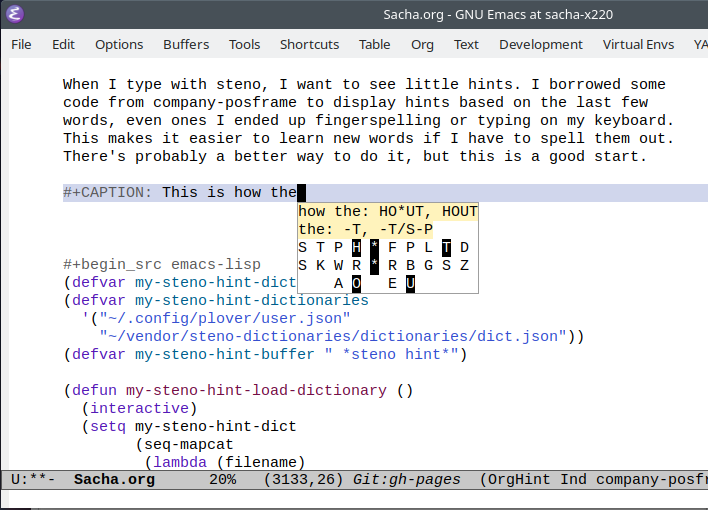
Steno hint code
(defvar my-steno-hint-dict nil)
(defvar my-steno-hint-dictionaries
'("~/.config/plover/user.json"
"~/vendor/steno-dictionaries/dictionaries/dict.json"))
(defvar my-steno-hint-buffer " *steno hint*")
(defun my-steno-hint-load-dictionary ()
(interactive)
(setq my-steno-hint-dict
(seq-mapcat
(lambda (filename)
(with-temp-buffer
(insert-file-contents filename)
(goto-char (point-min))
(json-parse-buffer :object-type 'alist)))
my-steno-hint-dictionaries)))
(defun my-steno-hint-lookup (search)
(let ((search-list (list search (downcase search))))
(seq-group-by
'cdr
(seq-filter
(lambda (entry)
(member (cdr entry) search-list))
my-steno-hint-dict))))
(defun my-steno-hint-find (&optional buffer)
"Return a steno hint for the last 1-4 words, if any."
(setq buffer (or buffer (current-buffer)))
(when (buffer-live-p buffer)
(with-current-buffer buffer
(let ((pos (point)) result hint)
(save-excursion
(dotimes (i 4)
(backward-word)
(setq result
(cons
(my-steno-hint-lookup
(string-trim (buffer-substring-no-properties (point) pos)))
result)))
(delq nil result))))))
(defvar my-steno-hint-display-functions '(my-steno-hint-show-posframe))
(defun my-steno-hint-show-posframe (result &optional command)
(if (and result (or (null command)
(member command '(self-insert-command org-self-insert-command))))
(progn
(with-current-buffer (get-buffer-create my-steno-hint-buffer)
(erase-buffer)
(insert
(propertize
(mapconcat
(lambda (entries)
(mapconcat
(lambda (entry)
(concat
(car entry) ": "
(mapconcat (lambda (stroke)
(symbol-name (car stroke)))
(cdr entry) ", ")))
entries "\n"))
result "\n")
'face 'lispy-face-hint)
"\n"
(mapconcat 'my-steno-hint-propertized-layout
(split-string (symbol-name (car (cadar (car result)))) "/")
"\n\n")))
(posframe-show my-steno-hint-buffer :position (point) :border-width 1))
(posframe-hide my-steno-hint-buffer)))
(defvar my-steno-hint--timer nil)
(defun my-steno-hint-recent-when-idle ()
(interactive)
(when (timerp my-steno-hint--timer)
(cancel-timer my-steno-hint--timer))
(setq my-steno-hint--timer
(run-with-idle-timer 0.1 nil #'my-steno-hint-recent (current-buffer) this-command)))
(defun my-steno-hint-recent (buffer command)
(interactive)
(setq my-steno-hint--timer nil)
(run-hook-with-args 'my-steno-hint-display-functions (my-steno-hint-find buffer) command))
(defun my-steno-split-keys (s)
"Return a list of individual steno keys for RTFCRE."
(when (string-match "\\([STKPWHR]*\\)\\(-\\|\\([AOEU*]+\\)\\)\\([FRPBLGTSDZ]*\\)" s)
(append
(mapcar (lambda (ch) (format "%s-" (char-to-string ch))) (match-string 1 s))
(mapcar 'char-to-string (match-string 3 s))
(mapcar (lambda (ch) (format "-%s" (char-to-string ch))) (match-string 4 s)))))
;; (my-steno-split-keys "HR-")
;; (my-steno-split-keys "HRAEUT")
;; (my-steno-split-keys "HR*T")
(defun my-steno-hint-propertized-layout (s)
(let ((keys (my-steno-split-keys s))
(steno-layout "STPH*FPLTD\nSKWR*RBGSZ\n AO EU")
after-mid)
(mapconcat
(lambda (ch)
(setq ch (char-to-string ch))
(pcase ch
("\n" (setq after-mid nil) "\n")
(" " " ")
(_
(let (found)
(if (string-match "[AEOU*]" ch)
(setq after-mid t
found (member ch keys))
(setq found
(member
(if after-mid (concat "-" ch)
(concat ch "-"))
keys)))
(if found
(concat (propertize ch 'face '(:inverse-video t)) " ")
(concat ch " "))))))
steno-layout
"")))
(defun my-steno-hint-window-change ()
(when (posframe-workable-p)
(unless (string= (buffer-name)
my-steno-hint-buffer)
(when (and my-steno-hint-buffer
(get-buffer my-steno-hint-buffer))
(posframe-hide my-steno-hint-buffer)))))
(define-minor-mode my-steno-hint-minor-mode
"Show hints for recent words."
:init-value nil
:lighter "Hint"
(if my-steno-hint-minor-mode
(progn
(unless my-steno-hint-dict (my-steno-hint-load-dictionary))
(add-hook 'post-command-hook #'my-steno-hint-recent-when-idle nil t)
(add-hook 'window-configuration-change-hook #'my-steno-hint-window-change))
(remove-hook 'post-command-hook #'my-steno-hint-recent-when-idle t)
(remove-hook 'window-configuration-change-hook #'my-steno-hint-window-change)
(when (timerp my-steno-hint--timer)
(cancel-timer my-steno-hint--timer))
(when (and my-steno-hint-buffer
(get-buffer my-steno-hint-buffer))
(posframe-delete my-steno-hint-buffer))))
Running Plover drills from Emacs
I'm learning stenography because I deal with a lot of text, and it seems interesting. I'd like to someday be able to live-caption EmacsConf, meetups, and other technical things. I've got a lot of muscle memory to pick up, which means drills drills drills drills.
(defvar my-plover-drills
(append
(mapcar (lambda (desc)
(cons desc (concat "https://joshuagrams.github.io/steno-jig/learn-keyboard.html?drill=" (url-encode-url (replace-regexp-in-string "\\+" "%2B" desc)))))
'("Left hand, bottom row"
"Right hand, bottom row"
"Left hand, top row"
"Right hand, top row"
"Right hand, full bottom row"
"Right hand, full top row"
"Vowels"
"Left hand"
"Right hand"
"All keys"
"Left + Right"
"Left + Vowel"
"Vowel + Right"
"Left + Vowel + Right"
"Columns: D, B, L, -N"
"x"))
(mapcar (lambda (desc)
(cons desc (concat "https://joshuagrams.github.io/steno-jig/learn-plover.html?hints=yes&type=randomly&timeLimit=2&drill=" (url-encode-url (replace-regexp-in-string "\\+" "%2B" desc)))))
'("One Syllable Words" "Consonant Clusters" "Where's the TRUFT?" "Dropping Unstressed Vowels" "Inversion" "The Fifth Vowel Key" "Long Vowel Chords" "Diphthong Chords" "Vowel Disambiguator Chords" "The Missing Keys" "The Remaining Missing Letters" "Review Through Missing Letters" "Digraphs" "Review Through Digraphs" "Common Compound Clusters" "Review Through Common Compound Clusters" "Common Briefs 1-20" "Common Briefs 21-40" "Common Briefs 41-60" "Common Briefs 61-80" "Common Briefs 81-100"))))
(defvar my-plover-drill-history nil "Previous drills")
(defvar my-plover-drill-file "~/proj/plover-notes/README.org")
(defun my-plover-stenojig-custom-drill (words)
(interactive "MWords: ")
(plover-websocket-resume-plover)
(unwind-protect
(progn
(browse-url-chrome (concat "file:///home/sacha/vendor/steno-jig/from-url.html?go=true&type=randomly&timeLimit=2&name=test&hints=true&drillItems=" (url-encode-url words)))
(read-string "Ignore this: "))
(plover-websocket-suspend-plover)))
(defun my-plover-drill (drill)
"Run a single Plover keyboard drill and capture stats in an Org table."
(interactive (list (consult--read my-plover-drills :prompt "Drill: " :sort nil
:history my-plover-drill-history
:default (car my-plover-drill-history))))
(unless (string= (downcase (string-trim drill)) "x")
(let ((url (assoc-default drill my-plover-drills)))
(plover-websocket-resume-plover)
(when (string-match "learn-keyboard" url)
(plover-websocket-send :translation "{PLOVER:TOGGLE_DICT:-main.json,-user.json}"))
(switch-to-buffer (find-file my-plover-drill-file))
(goto-char (point-min))
(re-search-forward "#\\+NAME: drill\n")
(insert (format "| %s | %s | |\n"
(org-link-make-string url drill)
(format-time-string "[%Y-%m-%d %a %H:%M]")))
(backward-char 3)
(browse-url url)
(read-string "Ignore this: ")
(when (string-match "learn-keyboard" url)
(plover-websocket-send :translation "{PLOVER:TOGGLE_DICT:+main.json,+user.json}"))
(insert (read-string (format "Time (%s): " (string-join (reverse (my-plover-recent-stats drill)) ", "))))
(end-of-line)
(forward-char 1)
t)))
(defun my-plover-recent-stats (drill-name)
(mapcar
(lambda (o) (substring-no-properties (elt o 2)))
(seq-take
(sort (seq-filter (lambda (o) (string-match (regexp-quote drill-name) (car o)))
(org-with-wide-buffer
(save-excursion
(goto-char (point-min))
(if (re-search-forward "#\\+NAME: drill\n" nil t)
(org-table-to-lisp)))))
(lambda (a b) (string< (string-trim (elt b 1))
(string-trim (elt a 1)))))
3)))
(defun my-plover-drilling-time ()
"Keep drilling Plover.
Restore main dictionary and turn off Plover when done."
(interactive)
(quantified-track "Steno")
(call-process "wmctrl" nil 0 nil "-i" "-a" (number-to-string (my-wmctl-get-id "emacs")))
(while (my-plover-drill (consult--read my-plover-drills :prompt "Drill: " :sort nil
:history 'my-plover-drill-history
:default (car my-plover-drill-history)))))
Making it easier to execute commands
(setq enable-recursive-minibuffers t)
(defun my-replace-heading (new-text)
(interactive (list (read-string (concat (org-get-heading t t t t) ": "))))
(org-back-to-heading)
(when (looking-at org-complex-heading-regexp)
(replace-match new-text t t nil 4)))
(defun my-process-inbox-entries ()
(interactive)
(catch 'exit
(while t
(plover-websocket-send :stroke '["K-" "P-" "A-" "*"])
(my-read-command-string
(lambda () (concat (org-get-heading t t t t) ": "))
'(("replace and post"
(lambda () (interactive)
(call-interactively 'my-replace-heading)
(call-interactively 'my-org-mark-done-and-add-to-journal)
(org-forward-heading-same-level 1)))
("edit" my-replace-heading)
("post" my-org-mark-done-and-add-to-journal)
("refile" org-refile)
("to do" org-todo)
("next" org-forward-heading-same-level)
("open link" (lambda () (interactive)
(save-excursion
(when (re-search-forward org-link-any-re nil t)
(goto-char (match-beginning 0))
(org-open-at-point)))))
("yesterday" (lambda () (interactive)
(save-excursion
(re-search-forward org-element--timestamp-regexp)
(goto-char (match-beginning 0))
(org-timestamp-down-day))))
("previous" org-backward-heading-same-level)
("new journal" my-journal-post)
("practice" (lambda () (interactive) (quantified-track "steno") (browse-url "https://didoesdigital.com/typey-type/progress")))
("lowercase" downcase-word)
("capitalize" capitalize-dwim)
("clean" my-org-clean-up-inbox)
("replace heading" my-replace-heading)
("cut subtree" org-cut-subtree)
("export subtree to 11ty" (lambda () (interactive) (org-11ty-export-to-11ty t t)))
("exit" (throw 'exit nil)))
(lambda (input)
(my-replace-heading input)
(call-interactively 'my-org-mark-done-and-add-to-journal)
(org-forward-heading-same-level 1))
t))))
(defmacro my-read-command-string (prompt commands default-fn &optional include-commands)
(declare (debug t))
`(let* ((command
(consult--read
(append ,commands
(if ,include-commands
(let (res)
(mapatoms
(lambda (o)
(when (commandp o) (push (symbol-name o) res))))
res)))
:prompt (cond
((functionp ,prompt) (funcall ,prompt))
((stringp ,prompt) ,prompt)
(t "Command: "))
:category 'function
:sort nil))
(entry (assoc-default command ,commands)))
(cond
((and entry (listp (car entry)))
(if (functionp (car entry))
(funcall (car entry))
(eval (car entry) t)))
(entry (call-interactively (car entry)))
((commandp (intern command)) (call-interactively (intern command)))
((functionp ,default-fn) (funcall ,default-fn command)))))
(defun my-read-commands ()
(interactive)
(cond
((derived-mode-p 'org-mode)
(my-process-inbox-entries))
((derived-mode-p 'subed-mode)
(my-plover/edit-subtitles))))
Suggesting briefs
Only checks one dictionary for now, but probably good enough
(defun my-plover-briefpedia (translation)
(interactive "MTranslation: ")
(with-current-buffer (url-retrieve-synchronously (concat "http://briefpedia.com/AjaxTables3.php?search=" (url-encode-url translation)))
(goto-char (point-min))
(re-search-forward "^$")
(while (re-search-forward "</?\\(th\\)[ >]" nil t)
(replace-match "td" nil nil nil 1))
(goto-char (point-min))
(re-search-forward "^$")
(save-excursion
(insert "<div>")
(goto-char (point-max)) (insert "</div>"))
(let* ((data (xml-parse-region (point-min) (point-max)))
(entries (mapcar (lambda (o) (string-trim (dom-text o))) (dom-by-tag (dom-by-id data "divEnglishTable") 'a)))
(conflicts (seq-group-by 'car
(mapcar (lambda (row) (mapcar (lambda (cell) (string-trim (dom-texts cell))) (dom-by-tag row 'td)))
(cdr (dom-by-tag (dom-by-id data "divCrossTable") 'tr)))))
(result
(mapcar (lambda (entry) (cons entry (mapcar 'cadr (assoc-default entry conflicts)))) entries)))
(when (called-interactively-p 'any)
(message "%s"
(mapconcat (lambda (entry)
(concat (car entry)
(if (cdr entry)
(concat " ("
(string-join (cdr entry) ", ")
")")
"")))
result
"; ")))
result)))
(defun my-plover-read-outline-for-brief (base-prompt)
(let* ((prompt (or base-prompt "Outline: "))
new-brief
(brief (with-plover-plain (read-string prompt)))
(my-conflicts (my-plover-check-for-conflict brief)))
(while my-conflicts
(setq prompt (format "%s%s conflicts %s (alt: %s): "
(if base-prompt (concat base-prompt "\n") "")
brief (car my-conflicts) (string-join (cdr my-conflicts) ", ")))
(setq new-brief (with-plover-plain (read-string prompt)))
(if (string= new-brief "")
(setq my-conflicts nil)
(setq brief new-brief)
(setq my-conflicts (my-plover-check-for-conflict brief))))
brief))
(defun my-plover-brief-with-check (translation)
(interactive "MTranslation: ")
(setq translation (string-trim translation))
(let ((brief (my-plover-read-outline-for-brief (format "Outline for %s: " translation))))
(when brief
(kill-new (format "| %s | %s |" brief translation))
(plover-websocket-add-translation brief translation))))
(defun my-plover-briefpedia-suggest (translation)
(interactive "MTranslation: ")
(setq translation (string-trim translation))
(let* ((entries (my-plover-briefpedia translation))
(current (my-plover-search-dictionary-for-translation translation))
(brief
(my-plover-read-outline-for-brief
(concat
(if current (format "Current: %s\n" (mapconcat 'car current "; ")) "")
(if entries
(concat (mapconcat
(lambda (entry)
(let ((dict-conflict (my-plover-check-for-conflict (car entry))))
(cond
((and (cdr entry) dict-conflict)
(format "%s - dict conflict: %s (%s)\nbrief conflict: %s"
(car entry)
(car dict-conflict)
(string-join (cdr dict-conflict) "; ")
(string-join (cdr entry) "; ")))
((cdr entry)
(format "%s - brief conflict: %s"
(car entry)
(string-join (cdr entry) "; ")))
(t (car entry)))))
entries
"\n")
"\nOutline: ")
"No suggestions. Outline: ")))))
(when brief
(kill-new (format "| %s | %s |" brief translation))
(plover-websocket-add-translation brief translation))))
(defun my-plover-check-for-conflict (outline)
(let* ((case-fold-search nil)
(translation (cdar (my-plover-search-dictionary-for-strokes (concat "^" outline "$"))))
(alternatives (and translation (my-plover-search-dictionary-for-translation translation))))
(if translation (cons translation (mapcar 'car alternatives)))))
Practising within Emacs
Main function: M-x my-practise-steno, called in an Org table of | translation | outline |
(defun my-practise-steno-interleave (base item)
"Interleave BASE words with item."
(cons item
(-interleave base (make-list (length base) item))))
;; Copied from elfeed--shuffle
(defun my-practise-steno-shuffle (seq)
"Destructively shuffle SEQ."
(let ((n (length seq)))
(prog1 seq
(dotimes (i n)
(cl-rotatef (elt seq i) (elt seq (+ i (cl-random (- n i)))))))))
(defun my-practise-steno-repeat (seq times)
(funcall 'append (make-list times seq)))
(defface my-practise-steno-correct '((t :foreground "green")) "Correct.")
(defface my-practise-steno-wrong '((t :foreground "red")) "Wrong.")
(defface my-practise-steno-highlight '((t :background "white" :foreground "black")) "Focus.")
(defface my-practise-steno-base '((t :height 150)) "Base.")
(defvar my-practise-steno-items nil)
(defvar my-practise-steno-index 0)
(defvar my-practise-steno-buffer-name "*Steno practice*")
(defvar my-practise-steno-start-of-input nil)
(defvar my-practise-steno-current-overlay nil)
(defvar my-practise-steno-previous-overlay nil)
(defvar my-practise-steno-highlight-overlay nil)
(defvar my-practise-steno-stroke-buffer nil)
(defvar my-practise-steno-for-review nil)
;; From https://stackoverflow.com/questions/1249497/command-to-center-screen-horizontally-around-cursor-on-emacs
(defun my-horizontal-recenter ()
"Make the point horizontally centered in the window."
(interactive)
(let ((mid (/ (window-width) 2))
(pixel-pos (car (window-absolute-pixel-position)))
(pixel-mid (/ (window-pixel-width) 2))
(line-len (save-excursion (end-of-line) (current-column)))
(cur (current-column)))
(while (< pixel-mid pixel-pos)
(set-window-hscroll (selected-window)
(1+ (window-hscroll)))
(setq pixel-pos (car (window-absolute-pixel-position))))))
(defun my-practise-steno--handle-correct ()
(if my-practise-steno-previous-overlay
(move-overlay my-practise-steno-previous-overlay (overlay-start my-practise-steno-previous-overlay)
(+ (overlay-end my-practise-steno-previous-overlay) (match-end 0)))
(setq my-practise-steno-previous-overlay
(make-overlay (overlay-end my-practise-steno-previous-overlay)
(+ (overlay-end my-practise-steno-previous-overlay) (match-end 0))))
(overlay-put my-practise-steno-previous-overlay 'evaporate t)
(overlay-put my-practise-steno-previous-overlay 'face 'my-practise-steno-correct)))
(defun my-practise-steno--mark-incorrect-and-fixed ()
(let ((ov (make-overlay (overlay-end my-practise-steno-previous-overlay)
(+ (overlay-end my-practise-steno-previous-overlay) (match-beginning 0)))))
(overlay-put ov 'face 'my-practise-steno-wrong)
(overlay-put ov 'evaporate t))
;; make a new overlay
(setq my-practise-steno-previous-overlay (copy-overlay my-practise-steno-previous-overlay))
(move-overlay my-practise-steno-previous-overlay
(+ (overlay-end my-practise-steno-previous-overlay) (match-beginning 0))
(+ (overlay-end my-practise-steno-previous-overlay) (match-end 0)))
(setq my-practise-steno-for-review (append my-practise-steno-for-review (list (elt my-practise-steno-items my-practise-steno-index))))
;; highlight the sample as incorrect, too
(let ((incorrect-sample (copy-overlay my-practise-steno-highlight-overlay)))
(overlay-put incorrect-sample 'face 'my-practise-steno-wrong)
(save-excursion
(goto-char (overlay-start my-practise-steno-highlight-overlay))
(insert (make-string
(+
(if (bolp) 1 0)
(match-beginning 0))
?\ )))))
(defun my-practise-steno--move-to-next-item ()
(setq my-practise-steno-stroke-buffer nil)
(setq my-practise-steno-index (1+ my-practise-steno-index))
(move-overlay my-practise-steno-current-overlay (overlay-end my-practise-steno-previous-overlay) (point))
(if (elt my-practise-steno-items my-practise-steno-index)
(move-overlay my-practise-steno-highlight-overlay
(1+ (overlay-end my-practise-steno-highlight-overlay))
(+ (overlay-end my-practise-steno-highlight-overlay)
1 (length (car (elt my-practise-steno-items my-practise-steno-index)))))
(when my-practise-steno-for-review
(goto-char (point-max))
(kill-new (mapconcat 'car my-practise-steno-for-review " "))
(insert "\nFor review: " (mapconcat 'car my-practise-steno-for-review " ")))))
(defun my-practise-steno--handle-completed-item ()
;; extend the feedback overlay to the current point
(if (= (match-beginning 0) 0)
(my-practise-steno--handle-correct)
;; mark incorrect area
(my-practise-steno--mark-incorrect-and-fixed))
(my-practise-steno--move-to-next-item))
(defun my-practise-steno-check (&rest _)
(interactive)
(let* ((sample (car (elt my-practise-steno-items my-practise-steno-index)))
(input (and (< (overlay-end my-practise-steno-previous-overlay) (point))
(buffer-substring-no-properties (overlay-end my-practise-steno-previous-overlay) (point)))))
(when (and sample input)
(if (string-match (concat " *" (regexp-quote sample) " *") input)
(my-practise-steno--handle-completed-item)
;; still in progress
(move-overlay my-practise-steno-current-overlay
(overlay-start my-practise-steno-current-overlay)
(1+ (point))))
(my-horizontal-recenter))))
(defun my-practise-steno-store-strokes (payload)
(when (and (plist-get payload :stroked) (string= (buffer-name) my-practise-steno-buffer-name))
(let ((current-item (elt my-practise-steno-items my-practise-steno-index))
(rtfcre (plist-get (plist-get payload :stroked) :rtfcre)))
(save-excursion
(goto-char (point-max))
(insert (if (bolp) "" " ") rtfcre))
(when (and (cadr current-item)
(> (- (overlay-end my-practise-steno-current-overlay)
(overlay-start my-practise-steno-current-overlay))
(length (car current-item))))
(setq my-practise-steno-stroke-buffer (append my-practise-steno-stroke-buffer (list rtfcre)))
(momentary-string-display (format " (%s -> %s)"
(string-join my-practise-steno-stroke-buffer " ")
(cadr current-item))
(point)
?\0
"")))))
(defun my-practise-steno (items)
"Display ITEMS for practicing.
ITEMS should be a list like ((word) (word) (word))."
(interactive (list (let ((table (org-table-to-lisp)))
(if table
(if current-prefix-arg
(subseq table
(1- (org-table-current-line))
(min (length table) (+ (org-table-current-line) current-prefix-arg -1)))
table)
my-practise-steno-items))))
(with-current-buffer (get-buffer-create my-practise-steno-buffer-name)
(erase-buffer)
(insert "\n" (mapconcat 'car items " ") "\n")
(save-excursion (insert "\n\n"))
(toggle-truncate-lines 1)
(setq my-practise-steno-items items
my-practise-steno-index 0
my-practise-steno-start-of-input (point)
my-practise-steno-for-review nil
my-practise-steno-current-overlay (make-overlay (point) (1+ (point)))
my-practise-steno-previous-overlay (make-overlay (point) (point))
my-practise-steno-stroke-buffer nil
my-practise-steno-highlight-overlay (make-overlay (1+ (point-min)) (+ 1 (point-min) (length (car (car items))))))
(buffer-face-set "my-practise-steno-base")
(overlay-put my-practise-steno-previous-overlay 'face 'my-practise-steno-correct)
(overlay-put my-practise-steno-previous-overlay 'evaporate t)
(overlay-put my-practise-steno-highlight-overlay 'face 'my-practise-steno-highlight)
(overlay-put my-practise-steno-highlight-overlay 'evaporate t)
(overlay-put my-practise-steno-current-overlay 'modification-hooks '(my-practise-steno-check))
(overlay-put my-practise-steno-current-overlay 'insert-in-front-hooks '(my-practise-steno-check))
(overlay-put my-practise-steno-current-overlay 'face 'my-practise-steno-wrong)
(overlay-put my-practise-steno-current-overlay 'evaporate t)
;; (add-hook 'after-change-functions 'my-practise-steno-check nil t)
(add-hook 'plover-websocket-on-message-payload-functions 'my-practise-steno-store-strokes)
(switch-to-buffer (current-buffer))))
(defun my-practise-steno-word-list (words)
(interactive (list (mapcar 'list (split-string (read-string "Words: ")))))
(my-practise-steno words))
;; (call-interactively 'my-practise-steno)
Editing subtitles
(defun my-subed-subtitle-set-text (text)
(interactive "MNew text: ")
(subed-jump-to-subtitle-text)
(delete-region (point) (or (subed-jump-to-subtitle-end) (point)))
(insert text))
(defun my-plover/edit-find-target (input)
(or (looking-at (concat "\\b" (regexp-quote input) "\\b"))
(re-search-forward (concat "\\b" (regexp-quote input) "\\b")
nil t)))
(defun my-plover/edit-subtitles ()
(interactive)
(catch 'exit
(while t
(my-read-command-string
"Command: "
'(("toggle" subed-mpv-toggle-pause)
("jump" (lambda () (interactive) (subed-mpv-jump-to-current-subtitle)))
("split [text before split]" subed-split-subtitle)
("center" recenter-top-bottom)
(" previous" (lambda () (interactive) (subed-merge-with-previous) (fill-paragraph)))
("merge next" (lambda () (interactive) (subed-merge-with-next) (fill-paragraph)))
("slow" (lambda () (interactive) (subed-mpv-playback-speed 0.5)))
("fast" (lambda () (interactive) (subed-mpv-playback-speed 2)))
("scroll" scroll-up-command)
("fill" fill-paragraph)
("next [text]" search-forward)
("replace <text>")
("previous [text]" search-backward)
("cap [text]" capitalize-word)
("delete [text]" kill-word)
(", [text]" (lambda () (interactive) (insert ",")))
("end [text] - adds period and capitalizes next word" (lambda () (interactive) (insert ".") (capitalize-word 1)))
("oops" 'undo)
("exit" (throw 'exit nil)))
(lambda (input)
(cond
((string-match "^split \\(.+\\) *$" input)
(when (my-plover/edit-find-target (match-string 1 input))
(goto-char (match-end 0))
(subed-split-subtitle)
(fill-paragraph)))
((string-match "^delete \\(.+\\) *$" input)
(when (my-plover/edit-find-target (match-string 1 input))
(replace-match "")))
((string-match "^, \\(.+\\) *$" input)
(when (my-plover/edit-find-target (match-string 1 input))
(goto-char (match-end 0))
(insert ",")))
((string-match "^end \\(.+\\) *$" input)
(when (my-plover/edit-find-target (match-string 1 input))
(goto-char (match-end 0))
(insert ".")
(unless (save-excursion (subed-jump-to-subtitle-end))
(subed-forward-subtitle-text))
(capitalize-word 1)))
((string-match "^zap \\(.+\\)$" input)
(delete-region (point)
(my-plover/edit-find-target (match-string 1 input))))
((string-match "^replace \\(.+\\)$" input)
(kill-word 1)
(insert (match-string 1 input)))
((string-match "^cap \\(.+\\) *$" input)
(when (my-plover/edit-find-target (match-string 1 input))
(replace-match (capitalize (match-string 0)) t t)))
((string-match "^... \\(.+\\) *$" input)
(when (my-plover/edit-find-target (match-string 1 input))
(insert "...")))
((string-match "^next \\(.+\\) *$" input)
(my-plover/edit-find-target (match-string 1 input)))
((string-match "^previous \\(.+\\) *$" input)
(re-search-backward (concat "\\b" (regexp-quote (match-string 1 input)) "\\b") nil t)
(goto-char (match-end 0)))
(t (re-search-forward (concat "\\b" (regexp-quote input) "\\b")))
;; (t (my-subed-subtitle-set-text input))
))
nil))))
Using inotify to add Plover Clippy suggestions into Emacs
Update 2021-06-19: Changed to a vertical layout, added extra notes, simplified
I don't have a lot of screen space on my laptop, so I don't usually have the Plover suggestion window open as I type. I came up with a Plover plugin to let me flash the last Plover Clippy suggestion as a temporary notification. It went by too quickly, though, so I wrote something that uses inotify to monitor the clippy.txt log and put it an Emacs buffer instead. It results in text like this:
Clippy KHREUP PEU added ATD
(defvar my-clippy-recent-suggestions nil "Recent suggestions, limited by `my-clippy-recent-suggestions-limit`.")
(defvar my-clippy-recent-suggestions-limit nil "If non-nil, keep this many suggestions.")
(defvar my-clippy-extra-notes nil "Extra notes to add at the end.")
(defun my-clippy-last ()
(let ((value (string-trim (shell-command-to-string "tail -1 ~/.config/plover/clippy.txt | cut -c 23-"))))
(when (string-match "^\\(.*?\\)[ \t]+|| .*? -> \\(.+\\)" value)
(cons (match-string 1 value) (match-string 2 value)))))
(defun my-clippy-show (&rest _)
(interactive)
(with-current-buffer (get-buffer-create "*Clippy*")
(let ((last (my-clippy-last)))
(if my-clippy-recent-suggestions-limit
(progn
(unless (equal last (car my-clippy-recent-suggestions))
(setq my-clippy-recent-suggestions (seq-take (cons last my-clippy-recent-suggestions) my-clippy-recent-suggestions-limit)))
(erase-buffer)
(insert (mapconcat (lambda (o) (format "| %s | %s |\n" (car o) (cdr o))) my-clippy-recent-suggestions "")))
(unless (equal last (car my-clippy-recent-suggestions))
(setq my-clippy-recent-suggestions (cons last my-clippy-recent-suggestions))
(goto-char (point-min))
(insert (format "| %s | %s |\n" (car last) (cdr last))))))
(when (get-buffer-window (current-buffer))
(set-window-point (get-buffer-window (current-buffer)) (point-min)))))
(defun my-insert-symbol (symbol-name)
(interactive (list
(let ((orig-buffer (current-buffer)))
(completing-read
"Insert symbol: "
#'help--symbol-completion-table
(lambda (vv)
;; In case the variable only exists in the buffer
;; the command we switch back to that buffer before
;; we examine the variable.
(with-current-buffer orig-buffer
(or (get vv 'variable-documentation)
(functionp vv)
(and (boundp vv) (not (keywordp vv))))))))))
(insert symbol-name))
(defun my-insert-variable-value (symbol-name)
(interactive (list
(let ((orig-buffer (current-buffer)))
(completing-read
"Insert variable: "
#'help--symbol-completion-table
(lambda (vv)
;; In case the variable only exists in the buffer
;; the command we switch back to that buffer before
;; we examine the variable.
(with-current-buffer orig-buffer
(or (get vv 'variable-documentation)
(and (boundp vv) (not (keywordp vv))))))))))
(insert (symbol-value (intern symbol-name))))
(defun my-insert-function (symbol-name)
"Insert function name."
(interactive (list
(completing-read
"Insert function: "
#'help--symbol-completion-table
'functionp)))
(insert symbol-name))
(defvar my-clippy-monitor nil)
(defun my-clippy-toggle-monitor ()
(interactive)
(if (inotify-valid-p my-clippy-monitor)
(progn
(message "Turning off")
(inotify-rm-watch my-clippy-monitor))
(message "Turning on")
(setq my-clippy-monitor
(inotify-add-watch
(expand-file-name "~/.config/plover/clippy.txt") 'modify
#'my-clippy-show))))
Stenoing interface
(defvar my-plover-quick-notes "~/proj/plover-notes/scratch.org")
(defvar my-plover-current-stroke-buffer "*Current stroke*")
(defun my-plover-add-note (string)
(interactive "MNote: ")
(with-current-buffer (find-file-noselect my-plover-quick-notes)
(goto-char (point-min))
(insert string)
(unless (bolp) (insert "\n"))))
(defun my-plover-add-last-clippy-to-notes ()
(interactive)
(my-plover-add-note (format "| %s | %s |\n" (caar my-clippy-recent-suggestions) (cdar my-clippy-recent-suggestions))))
(defun my-plover-scroll-notes ()
(interactive)
(message "Hello")
(when (get-buffer-window (get-file-buffer my-plover-quick-notes))
(with-selected-window (get-buffer-window (get-file-buffer my-plover-quick-notes))
(scroll-up))))
(defun my-plover-scroll-notes-down ()
(interactive)
(message "World")
(when (get-buffer-window (get-file-buffer my-plover-quick-notes))
(with-selected-window (get-buffer-window (get-file-buffer my-plover-quick-notes))
(scroll-down))))
(defun my-plover-spectra-last-clippy ()
(interactive)
(browse-url (format "http://localhost:8081/?outline=%s&translation=%s"
(car (split-string (cdar my-clippy-recent-suggestions) ", "))
(caar my-clippy-recent-suggestions))))
(defun my-plover-layout-windows ()
"Organize my windows."
(interactive)
(delete-other-windows)
(when plover-websocket-stroke-buffer-name
(with-selected-window (split-window-below -4)
(switch-to-buffer plover-websocket-stroke-buffer-name)))
(with-selected-window (split-window-right 100)
(switch-to-buffer (get-buffer-create "*Clippy*"))
(when my-plover-quick-notes
(with-selected-window (split-window-below 10)
(switch-to-buffer (find-file my-plover-quick-notes))))))
(defun my-plover-clear-stroke-log ()
(interactive)
(with-current-buffer (get-buffer-create plover-websocket-stroke-buffer-name)
(erase-buffer)))
(setq plover-websocket-stroke-buffer-name "*Stroke log*")
Cheat sheets
(defun my-steno-quick-help ()
(interactive)
(with-selected-window
(display-buffer-at-bottom
(find-file-noselect "~/proj/plover-notes/cheat-sheet.txt")'())
;; ... mark it as dedicated to prevent focus from being stolen
(set-window-dedicated-p (selected-window) t)
;; ... and shrink it immediately.
(fit-window-to-buffer)))
(defhydra my-hydra/cheatsheet/plover ()
"SKHW- symbols -LTZ modifiers TWR- journal phrases
newparSKWRAURBGS bsPW-FP capKPA !space!capTK-LS cap!spaceKPA rmspcTK-FPS*
number: dupeD, revEU, 00/#OD, 00Z, $DZ, timeK- or -BG
`KH-FG ^KR-RT ~T*LD <AEPBGT =QA*LS >A*EPBGT |PAO*EUP \\_R*UND
-H-N --TK-RB ,KW-BG ;SKWR*RBGS :capSTPH-FPLT :KL-N !SKHRAPL
?H-F /OI .nspP-P ...SKWR-RBGS 'A*E,AE \"KW-GS,KR-GS
(PREN,* [PWR-BGT,* {TPR-BGT,* @KWRAT $TK-PL *STA*R
\\SPWHRAERB \\&SP-PBD #HAERB percPERS +PHR*US
retro KA*PD cap last *UPD cap all HRO*ERD lowered #* star AFPS add space TK-FPS del space
next HRO*ER lower KPA*L cap all
mode SPH-: RL lower R reset T Title -FPLT _RBGS")
(defhydra my-hydra/cheatsheet/jade-plover-phrasing ()
"S: SWR I, KPWR you, KWHR he, SKWHR she, TWH they, TWR we, KPWH it, STKPWHR nothing
M: OE don't (AOE really don't OEU don't really)
AU didn't, E doesn't, O can't, A or U really, AOEU don't even
E: PB know, P want, RPL remember, BL believe, FG forget, R are
BG can, BGD could, BGT can't, BLG like, BLGT like to, BLGTS likes to
BLT believe that, BS said, BT be the, BTS be said to, BTZ say to
D had, F have, FGT forgot, FLG feel like, FLGT felt like, FLT felt
FPLT must, FR ever, FRB wish, FRBT wish to, FS was, FT have to, FTS has to, FZ has, GT get, L will, LG love, PBD need, PBG think, PBL mean,
PLD mind, PLG imagine, PLT might
"
)
(defhydra my-hydra/cheatsheet/emily-symbols ()
"SKHW+ A (spc before) O (spc after) * (cap)
v E U EU
FG ws Tab Backspace Del Esc
RPBG Up Left Right Down
FPBL ↑ ← → ↓
FRPBG PgU Home End PgD
blank '' {*!} {*?} spc
FPL ( [ < {
RBG ) ] > }
'F *L +G &FBG \"FP #FRLG $RPBL percFRPB
,B -PL .R /RP :LG ;RB =PBLG @FRPBLG \\FB \\^RPG
_BG `P |PB ~FPBG
-S 2x -T 3x -ST 4x"
)
(defhydra my-hydra/cheatsheet/emily-modifiers ()
"-LTZ F (C-) R (S-) P(s-) B(M-)
Z is STKPW
AO makes SKWR binary 0-9
Symbols with *, AO variants
TR tab delete backspace esc
KPWR up left down right
KPWHR pgup end home pgdown
blank esc tab return spc
TPH ( < [ {
KWR ) > ] }
P `
H '
!HR \"PH #TKHR $KPWH percPWHR &SKP *T +K ,W -TP .R /WH :TK ;WR
=TKPW ?TPW @TKPWHR \\PR ^KPR |PW ~TPWR")
Coding with Plover
(defun my-plover-insert-defun ()
"Prompt for parts of a function definition."
(interactive)
(insert "(defun ")
(plover-websocket-send :translation "{MODE:LOWER}{MODE:SET_SPACE:-}")
(insert (replace-regexp-in-string "-$" "" (read-string "Function name: ")))
(insert " (")
(plover-websocket-send :translation "{MODE:SET_SPACE: }")
(let ((args (replace-regexp-in-string "\\<optional\\>" "&optional" (string-trim (read-string "Args: ")))))
(insert args)
(insert ")\n")
(if (y-or-n-p "Interactive? ")
(if (string= args "")
(insert "(interactive)\n")
(insert "(interactive (list))\n"))))
(plover-websocket-send :translation "{MODE:RESET}{}{-|}")
(insert (format "\"%s\"\n"
(replace-regexp-in-string "\"" "\\\"" (string-trim (read-string "Docstring: ")))))
(save-excursion (insert ")") (lispy--normalize-1))
(plover-websocket-send :translation "{MODE:LOWER}"))
(defun my-plover-insert-defvar ()
(interactive)
"Define a variable."
(insert "(defvar ")
(plover-websocket-send :translation "{MODE:LOWER}{MODE:SET_SPACE:-}")
(insert (replace-regexp-in-string "-$" "" (read-string "Variable name: ")))
(insert " ")
(plover-websocket-send :translation "{MODE:RESET}{}{-|}")
(insert (string-trim (read-string "Default value: ")))
(insert (format " \"%s\")\n"
(replace-regexp-in-string "\"" "\\\"" (string-trim (read-string "Docstring: "))))))
(defun my-org-edit-special-dwim ()
(interactive)
(cond
((org-src-edit-buffer-p) (org-edit-src-exit))
((org-in-src-block-p) (org-edit-special))
((derived-mode-p 'org-mode)
(org-insert-structure-template "src emacs-lisp")
(org-edit-special))))
(defun my-org-execute-special-dwim ()
(interactive)
(cond
((org-src-edit-buffer-p) (eval-buffer))
((org-in-src-block-p) (org-babel-execute-src-block))
(t (eval-buffer))))
Measuring WPM
(use-package typing-speed :if my-laptop-p :load-path "~/elisp"
:config (setq typing-speed-window 120))
Displaying frequency-sorted completions with stroke hints
(defvar my-company-strokedict--grep-executable "grep")
(defun my-company-strokedict--candidates (prefix)
"Fetches the candidates matching PREFIX."
(mapcar (lambda (o)
(let ((data (split-string o "\t")))
(propertize (car data) 'meta (cadr data))))
(split-string
(shell-command-to-string (concat
my-company-strokedict--grep-executable
" -i "
(shell-quote-argument (concat "^" prefix))
" "
"~/.config/plover/annotated.txt -m 10"))
"\n")))
(defun my-company-strokedict--annotation (candidate)
(let ((stroke (get-text-property 0 'meta candidate)))
(if stroke
(format " (%s)" stroke)
"")))
(defun my-company-strokedict (command &optional arg &rest ignored)
"`company-mode' backend for user-provided dictionaries. Dictionary files are lazy
loaded."
(interactive (list 'interactive))
(cl-case command
(interactive (company-begin-backend 'my-company-strokedict))
(candidates (my-company-strokedict--candidates arg))
(prefix (when-let ((prefix (company-grab-word))) (substring-no-properties prefix)))
(annotation (my-company-strokedict--annotation arg))
(sorted t)
(duplicates t)
(no-cache t)))
This code added stroke annotations from the Typey Type dictionary to the frequency-sorted word list from https://github.com/hermitdave/FrequencyWords/blob/master/content/2018/en/en_full.txt.
import json
with open("/home/sacha/tmp/en_full.txt") as f:
lines = f.readlines()
with open("/home/sacha/.config/plover/dictionaries/typey-type.json") as f:
typey = json.load(f)
typey_inv = {v: k for k, v in typey.items()}
with open("/home/sacha/.config/plover/dictionaries/combined.json") as f:
combined = json.load(f)
combined_inv = {}
for k, v in combined.items():
if v in combined_inv:
combined_inv[v] = combined_inv[v] + ', ' + k
else:
combined_inv[v] = k
with open("/home/sacha/.config/plover/annotated.txt", "w") as f:
for line in lines:
word = line.split()[0]
if word in typey_inv:
f.write("%s\t%s\n" % (word, typey_inv[word]))
elif word in combined:
f.write("%s\t%s\n" % (word, combined[word]))
else:
f.write("%s\n" % word)
MineClone
(defun my-mineclone-ripgrep ()
(interactive)
(let ((default-directory "~/vendor/MineClone2"))
(call-interactively 'consult-ripgrep)))
(keymap-global-set "s-M" 'my-mineclone-ripgrep)
EmacsConf
(autoload 'emacsconf-mail-prepare "emacsconf-mail")
(defun my-emacsconf-search-mail (talk)
(interactive (list (emacsconf-complete-talk)))
(emacsconf-with-talk-heading talk
(notmuch-search (format "from:%s or to:%s" (org-entry-get (point) "EMAIL")
(org-entry-get (point) "EMAIL")))))
(use-package emacsconf
:after hydra
:bind (("C-c e" . emacsconf/body)
("M-g t" . emacsconf-go-to-talk))
:init
(require 'emacsconf-autoloads)
:hook
(message-send . emacsconf-mail-check-for-zzz-before-sending)
:config
(setq emacsconf-refresh-schedule-from-org t)
(defhydra emacsconf
(:exit t)
("t" emacsconf-go-to-talk "talk")
("n" emacsconf-mail-notmuch-search-for-talk "notmuch search")
("f" emacsconf-cache-find-file "file")
("c" (find-file emacsconf-org-file) "conf.org")
("C" (let ((default-directory (file-name-directory emacsconf-org-file)))
(call-interactively #'projectile-find-file)) "org dir")
("w" (let ((default-directory emacsconf-directory))
(call-interactively #'projectile-find-file)))
("o" emacsconf-main-org-notebook-heading "org notes")
("a" (let ((default-directory emacsconf-ansible-directory))
(call-interactively #'projectile-find-file)) "ansible")
("A" emacsconf-prep-agenda "agenda")
("I" emacsconf-extract-irc/body "IRC extract")
("ie" emacsconf-insert-talk-email "email")
("it" emacsconf-insert-talk-title "title")
("O" (switch-to-buffer (erc-get-buffer "#emacsconf-org")))
("l" (let ((default-directory "~/proj/emacsconf/lisp"))
(call-interactively #'projectile-find-file)))
("b" emacsconf-backstage-dired "backstage")
("u" emacsconf-upload-dired "upload")
("vie" emacsconf-volunteer-insert-email "volunteer email")
("U" emacsconf-res-upload-dired "upload"))
:load-path "~/proj/emacsconf/lisp")
(keymap-global-set "M-g t" 'emacsconf-go-to-talk)
ChatGPT, AI, and large-language models
(use-package chat
:quelpa (chat :fetcher github :repo "iwahbe/chat.el"))
(use-package org-ai
:quelpa (org-ai :fetcher github :repo "rksm/org-ai"))
(use-package khoj
:after org
:disabled t
:quelpa (khoj :fetcher github :repo "debanjum/khoj" :files (:defaults "src/interface/emacs/khoj.el"))
:bind ("C-c s" . 'khoj))
(defun gptel-api-key-from-environment (&optional var)
(lambda ()
(getenv (or var ;provided key
(thread-first ;or fall back to <TYPE>_API_KEY
(type-of gptel-backend)
(symbol-name)
(substring 6)
(upcase)
(concat "_API_KEY"))))))
(use-package gptel
:commands (gptel gptel-send gptel-set-topic gptel-menu)
:defer t
:config
(setq my-gptel-groq
(gptel-make-openai "Groq"
:host "api.groq.com"
:endpoint "/openai/v1/chat/completions"
:stream t
:key (gptel-api-key-from-environment "GROQ_API_KEY")
:models '(llama-3.3-70b-versatile
llama-3.1-8b-instant
openai/gpt-oss-20b
openai/gpt-oss-120b)))
(setq my-gptel-gemini
(gptel-make-gemini "Gemini"
:key (gptel-api-key-from-environment "GEMINI_API_KEY")
:stream t
:models '(gemini-3-flash-preview
gemini-2.5-flash
gemini-2.5-pro
gemini-2.5-flash-preview-09-2025
gemini-2.5-flash-lite)))
(setq my-gptel-gemini-paid
(gptel-make-gemini "Gemini - paid"
:key (gptel-api-key-from-environment "GEMINI_PAID_API_KEY")
:stream t
:models '(gemini-3-flash-preview
gemini-2.5-flash
gemini-2.5-flash-preview-09-2025
gemini-2.5-flash-lite)))
(setq my-gptel-mistral
(gptel-make-openai "Mistral"
:key (gptel-api-key-from-environment "MISTRAL_API_KEY")
:host "api.mistral.ai"
:endpoint "/v1/chat/completions"
:stream t
:models '(mistral-medium
mistral-large-2411)))
(setq gptel-model 'gemini-3-flash-preview
gptel-backend my-gptel-gemini
gptel-log-level 'info)
:hook
(gptel-post-stream . gptel-auto-scroll)
(gptel-post-response . gptel-end-of-response)
)
So that I don't have to use gptel-menu just to change the model:
(defun my-gptel-set-model ()
"Interactively set the gptel model."
(interactive)
(require 'gptel-transient)
(let* ((infix (get 'gptel--infix-provider 'transient--suffix))
(reader (oref infix reader))
(result (funcall reader "Model: ")))
(setq gptel-backend (car result))
(setq gptel-model (cadr result))))
Interact with Google Gemini web interface through Spookfox
(defun my-spookfox-wait-for-condition (condition &optional step)
(setq step (or step 500))
(spookfox-eval-js-in-active-tab
(format "
async function waitForSpookfox(step=%d) {
while (true) {
const result = %s;
if (result) {
return;
} else {
await new Promise(r => setTimeout(r, step));
}
}
}
await waitForSpookfox();" step condition)
t))
(defun my-spookfox-ai-show-response-as-org (&optional html)
(interactive)
(with-current-buffer (get-buffer-create "*ai*")
(erase-buffer)
(insert (or html (spookfox-eval-js-in-active-tab "x = document.querySelectorAll('.response-content'); x[x.length - 1].innerHTML" t)))
(call-process-region (point-min) (point-max) "pandoc" t t t "-f" "html" "-t" "org" "-")
(org-mode)
(goto-char (point-min))
(display-buffer-other-window (current-buffer))))
(defun my-spookfox-ai-latest-response-html ()
(let-alist (my-spookfox-ai-params)
(spookfox-eval-js-in-active-tab
(format "x = document.querySelectorAll('%s'); x[x.length - 1].innerHTML"
.response)
t)))
(defun my-spookfox-ai-params ()
(let ((location (spookfox-eval-js-in-active-tab "window.location.href" t)))
(cond
((string-match "gemini" location)
'((textarea . "document.querySelector('div[contenteditable=\"true\"]').innerText = %s;")
(dispatch . "div[contenteditable=\"true\"]")
(update . "button.send-button")
; (condition . "window.getComputedStyle(document.querySelector('.loading-content-spinner-container'))?.visibility == 'hidden'")
(response . ".response-content")
(history . "document.querySelectorAll('.query-text').length > 0")))
((string-match "claude" location)
'((textarea . "document.querySelector('div[contenteditable=\"true\"]').innerText = %s;")
(dispatch . "div[contenteditable=\"true\"]")
(update . "button[aria-label=\"Send message\"]")
(response . ".font-claude-response")
(history . "document.querySelectorAll('div[data-testid=\"user-message\"]').length > 0"))))))
(defun my-spookfox-ai-send-text (text)
(interactive (list (read-string "Input: ")))
(let-alist (my-spookfox-ai-params)
(spookfox-eval-js-in-active-tab (format .textarea (json-encode text)) t)
(sleep-for 0.1)
(spookfox-eval-js-in-active-tab
(format "document.querySelector('%s').dispatchEvent(new InputEvent('input', {bubbles: true, cancelable: true, inputType: 'insertText'})); "
.dispatch)
t)
(sleep-for 0.1)
(spookfox-eval-js-in-active-tab (format "document.querySelector('%s').click()"
.update) t)
(if .condition
(progn
(sit-for 4)
(my-spookfox-wait-for-condition .condition))
(read-key "Press a key when the results are ready."))
(let ((result (my-spookfox-ai-latest-response-html)))
(when (called-interactively-p 'any)
(my-spookfox-show-response-as-org result))
result)))
(defun my-spookfox-send-subtree-to-ai-textarea (prefix)
(interactive (list (when current-prefix-arg
(read-string "Prepend: "))))
(my-spookfox-ai-show-response-as-org
(my-spookfox-ai-send-text
(concat
(if prefix
(concat prefix "\n\n####\n\n")
"")
(my-org-subtree-text)))))
(defun my-spookfox-ai-parse-latest-json (&optional result)
(cond
((or (stringp result) (null result))
(setq result (or result (my-spookfox-ai-latest-response-html)))
(with-temp-buffer
(insert (or result (my-spookfox-ai-latest-response-html)))
(call-process-region (point-min) (point-max) "pandoc" t t t "-f" "html" "-t" "org" "-")
(goto-char (point-min))
(re-search-forward "[{\\[]")
(goto-char (match-beginning 0))
(json-read)))
((listp result) result)))
(defun my-spookfox-ai-get-latest-code (&optional result)
(with-temp-buffer
(insert (my-spookfox-ai-latest-response-html))
(call-process-region (point-min) (point-max) "pandoc" t t t "-f" "html" "-t" "org" "-")
(goto-char (point-min))
(org-mode)
(when (re-search-forward "#\\+begin_src" nil t)
(elt (org-babel-get-src-block-info) 1))))
(defun my-spookfox-ai-replace-with-code ()
(interactive)
(erase-buffer)
(insert (my-spookfox-ai-get-latest-code)))
(defun my-spookfox-ai-ediff-with-code ()
(interactive)
(with-current-buffer (get-buffer-create "*ai*")
(erase-buffer)
(insert (my-spookfox-ai-get-latest-code)))
(ediff-buffers (current-buffer) (get-buffer-create "*ai*")))
(defun my-spookfox-ai-send-text-and-get-json (text)
(my-spookfox-ai-parse-latest-json (my-spookfox-ai-send-text text)))
(defun my-french-spookfox-send (&optional reuse-feedback)
(interactive (list current-prefix-arg))
(let-alist (my-spookfox-ai-params)
(if reuse-feedback
(cl-pushnew
(my-spookfox-ai-parse-latest-json)
my-lang-gptel-current-errors)
(push
(my-spookfox-ai-send-text-and-get-json
(let ((my-lang-gptel-current-errors nil)
(my-lang-gptel-prompt
(if (eq (spookfox-eval-js-in-active-tab .history t)
:false)
my-lang-gptel-prompt
nil)))
(my-lang-gptel-prompt)))
my-lang-gptel-current-errors)))
(my-lang-gptel-finished-log-errors)
(setq flycheck-current-syntax-check nil)
(flycheck-buffer))
Chronos timers
Tip from zaeph. Might not use this much yet, as I don't spend that much time in front of my computer. Could be handy someday, though.
(use-package chronos
:config
(add-hook 'chronos-expiry-functions #'chronos-desktop-notifications-notify)
(add-hook 'chronos-expiry-functions #'chronos-buffer-notify))
Paint
(use-package paint
:disabled t
:if my-laptop-p
:load-path "~/sync/cloud/elisp"
:init
(progn
(setq paint-foreground-color "white" paint-background-color "black")
(defun my-paint () (interactive) (delete-other-windows) (paint 1600 900 nil))))
Oddmuse
(use-package oddmuse
:if my-laptop-p
:load-path "~/vendor/oddmuse-el"
:ensure nil
:config (oddmuse-mode-initialize)
:commands oddmuse-edit
:hook (oddmuse-mode-hook .
(lambda ()
(unless (string-match "question" oddmuse-post)
(when (string-match "EmacsWiki" oddmuse-wiki)
(setq oddmuse-post (concat "uihnscuskc=1;" oddmuse-post)))
(when (string-match "OddmuseWiki" oddmuse-wiki)
(setq oddmuse-post (concat "ham=1;" oddmuse-post)))))))
Beeminder
https://github.com/sachac/beeminder.el
This bit of code lets me track sent messages in Gnus:
(defun my-beeminder-track-message ()
(save-excursion
(goto-char (point-min))
(when (re-search-forward "Newsgroups: .*emacs")
(goto-char (point-min))
(when (re-search-forward "Subject: \\(.*\\)" nil t)
(beeminder-add-data "orgml" "1" (match-string 1))))))
And this loads the beeminder code:
(use-package beeminder
:disabled t
:config (add-hook 'message-send-news-hook 'my-beeminder-track-message))
Animation for Emacs chats video animation
(defun my-animate-emacs-chat ()
(interactive)
(text-scale-set 6)
(erase-buffer)
(sit-for 3)
(let ((list '("Emacs Chat: Sacha Chua"
"interviewed by Bastien Guerry"
""
"July 24, 2013"
"sachachua.com/emacs-chat"))
(approx-width 41)
(approx-height 16)
row)
(setq row (/ (- approx-height (length list)) 2))
(mapcar
(lambda (x)
(animate-string x
row
(/ (- approx-width (length x)) 2))
(setq row (1+ row)))
list)))
Idle timer
This snippet is from John Wiegley - http://lists.gnu.org/archive/html/emacs-orgmode/2010-03/msg00367.html. It shows the org agenda when Emacs is idle.
Thanks to winner-mode, I can get back to my previous buffers with C-c left.
(defun jump-to-org-agenda ()
(interactive)
(let ((buf (get-buffer "*Org Agenda*"))
wind)
(if buf
(if (setq wind (get-buffer-window buf))
(select-window wind)
(if (called-interactively-p 'any)
(progn
(select-window (display-buffer buf t t))
(org-fit-window-to-buffer)
;; (org-agenda-redo)
)
(with-selected-window (display-buffer buf)
(org-fit-window-to-buffer)
;; (org-agenda-redo)
)))
(call-interactively 'org-agenda-list)))
;;(let ((buf (get-buffer "*Calendar*")))
;; (unless (get-buffer-window buf)
;; (org-agenda-goto-calendar)))
)
(run-with-idle-timer 300 t 'jump-to-org-agenda)
Old Flickr/Evernote export
;; I don't use these as much now that I have the functions above.
(defun my-evernote-extract-links (filename)
"Extract note names and URLs from an ENEX file."
(interactive)
(goto-char (point-min))
(let (list)
(while (re-search-forward "<title>\\(.+?\\)</title>\\(.*?\n\\)*?.*?href=\"\\(.*?\\)\"" nil t)
(setq list (cons (cons (match-string-no-properties 1) (match-string-no-properties 3)) list)))
(delete-region (point-min) (point-max))
(insert (mapconcat (lambda (x) (concat "- [[" (cdr x) "][" (car x) "]]")) list "\n"))))
(defun my-flickr-extract-this-week ()
"Extract this week's sketch titles and URLs from the flickr_metadata CSV."
(interactive)
(let ((base-date (apply 'encode-time (org-read-date-analyze "-fri" nil '(0 0 0))))
start end list)
(setq start (format-time-string "%Y-%m-%d" (days-to-time (- (time-to-number-of-days base-date) 6))))
(setq end (format-time-string "%Y-%m-%d" (days-to-time (1+ (time-to-number-of-days base-date)))))
(setq list (csv-parse-buffer t))
(erase-buffer)
(insert
(mapconcat (lambda (x) (concat "- [[" (car x) "][" (cdr x) "]]"))
(sort
(delq nil
(mapcar (lambda (x)
(let ((title (cdr (assoc "FileName" x))))
(if (and (not (string< title start))
(string< title end))
(cons (cdr (assoc "URL" x)) title))))
list))
(lambda (a b) (string< (cdr a) (cdr b)))
)
"\n"))))
Completion at point?
https://protesilaos.com/codelog/2024-11-28-basic-emacs-configuration/
(use-package corfu :init (global-corfu-mode)
:bind (:map corfu-map ("<tab>" . corfu-complete))
:config
(setq tab-always-indent 'complete)
(setq corfu-preview-current nil)
(setq corfu-min-width 20)
(setq corfu-popupinfo-delay '(1.25 . 0.5))
(corfu-popupinfo-mode 1) ; shows documentation after `corfu-popupinfo-delay'
;; Sort by input history (no need to modify `corfu-sort-function').
(with-eval-after-load 'savehist
(corfu-history-mode 1)
(add-to-list 'savehist-additional-variables 'corfu-history))
)
(use-package cape
:bind (("M-/" . completion-at-point))
:init
(add-to-list 'completion-at-point-functions #'cape-dabbrev)
(add-to-list 'completion-at-point-functions #'cape-file)
(add-to-list 'completion-at-point-functions #'cape-elisp-block)
(add-to-list 'completion-at-point-functions #'cape-abbrev)
(add-to-list 'completion-at-point-functions #'cape-dict)
(add-to-list 'completion-at-point-functions #'cape-line)
)
Enable minibuffer completion
Superseded by ido-hacks?
It can be difficult to remember the full names of Emacs commands, so I
use icomplete-mode for minibuffer completion. This also makes it
easier to discover commands.
(icomplete-mode 1)
Encryption
(require 'org-crypt)
(org-crypt-use-before-save-magic)
(setq org-tags-exclude-from-inheritance (quote ("crypt")))
(setq org-crypt-key nil)
;; GPG key to use for encryption
;; Either the Key ID or set to nil to use symmetric encryption.
;; (setq auto-save-default nil)
;; Auto-saving does not cooperate with org-crypt.el: so you need
;; to turn it off if you plan to use org-crypt.el quite often.
;; Otherwise, you'll get an (annoying) message each time you
;; start Org.
;; To turn it off only locally, you can insert this:
;;
;; # -*- buffer-auto-save-file-name: nil; -*-
Tools for organizing
(defun my-rename-bank-statements ()
(interactive)
(let ((months '("Jan" "Feb" "Mar" "Apr" "May" "Jun" "Jul" "Aug" "Sep" "Oct" "Nov" "Dec")))
(cl-loop for i from 1 to 12 do
(message "%d" i)
(goto-char (point-min))
(while (re-search-forward (elt months (1- i)) nil t)
(ignore-errors
(replace-match (format "%02d" i))
)))))
(defun my-rename-scanned-receipts ()
"Display and rename the scanned or saved files."
(interactive)
(delete-other-windows)
(mapc (lambda (o)
(find-file o)
(let ((new-name (concat (read-string "New filename: ") ".jpg")))
(kill-buffer)
(unless (string= new-name ".jpg")
(rename-file o new-name))))
(or (if (derived-mode-p 'dired-mode)
(dired-get-marked-files))
(directory-files default-directory t "^[-_0-9]+\\.jpg"))))
Fun and games
TODO Make memes from Emacs
(use-package meme
;:quelpa (meme :fetcher github :repo "larsmagne/meme")
:load-path "~/vendor/meme"
:init (provide 'imgur) ; fake this
:defer t
:commands meme
:config
(setq meme-dir "~/vendor/meme/images")
(setq meme-font "Roboto"))
Cubing
Rubik's Cube
(use-package eagle
:quelpa (eagle :fetcher git
:url "https://codeberg.org/akib/emacs-eagle.git")
:defer t)
(use-package cube
:quelpa (cube :fetcher git
:url "https://codeberg.org/akib/emacs-cube.git")
:defer t)
Diagrams
;; Start of cubing code
(defun my-cubing-pos (size n i)
(list
(* (/ size n) (% i n))
(* (/ size n) (/ i n))))
(defun my-cubing-last-layer-arrows (arrows)
"Draw ARROWS.
Arrows are defined as a list of lists of the form
((from to) (from to t) ...). Ex: '(my-cubing-last-layer-arrows '((3 1 t) (2 8 t)))
Cells are numbered from left to right, top to bottom, with the top left box being 0.
"
(let* ((size 99)
(n 3)
(arrow-color "#000")
(svg (svg-create size size)))
(svg--append
svg
(dom-node
'defs
nil
(dom-node
'marker
'((id . "arrowhead")
(markerWidth . "10")
(markerHeight . "7")
(refX . "0")
(refY . "3.5")
(orient . "auto-start-reverse"))
(dom-node
'polygon
`((fill . ,arrow-color)
(points . "0 0, 4 3.5, 0 7")))
)))
(dotimes (i (* n n))
(let ((pos (my-cubing-pos size n i)))
(svg-rectangle
svg
(car pos)
(cadr pos)
(/ size n)
(/ size n)
:fill "#fff"
:stroke-width 1
:stroke "#666")))
(dolist (arrow arrows)
(let ((from (car arrow))
(to (cadr arrow)))
(apply 'svg-line
(append
(list svg)
(mapcar (lambda (o) (+ o (/ size (* 2 n))))
(my-cubing-pos size n from))
(mapcar (lambda (o) (+ o (/ size (* 2 n))))
(my-cubing-pos size n to))
(list
:stroke-width 2
:stroke arrow-color
:marker-start (if (elt arrow 2) "url(#arrowhead)")
:marker-end "url(#arrowhead)")))))
(with-temp-buffer
(svg-print svg)
(buffer-string))))
(defvar my-cubing-colors '((?R . "#ff0000")
(?G . "#00ff00")
(?B . "#0000ff")
(?O . "#ed7117")
(?Y . "#ffff00")
(?W . "#ffffff")
(?\? . "#666666")))
(defun my-cubing-last-layer-with-sides (sides top arrows)
"Draw a diagram of the top of the cube.
The style is similar to https://www.cubeskills.com/uploads/pdf/tutorials/pll-algorithms.pdf .
SIDES is a string specifying colors going clockwise from the back-left side.
TOP is a string specifying colors going from left to right, top to bottom.
Arrows are defined as a list of lists of the form ((from to) (from to t) ...).
Cells are numbered from left to right, top to bottom, with the top left box being 0.
Ex: (my-cubing-last-layer-with-sides \"ORRBOOGGGRBB\" \"YYYYYYYYY\" '((3 1 t) (2 8 t)))
"
(let* ((size 99)
(n 3)
(side-size 10)
(cell-size (/ (- size (* 2 side-size)) n))
(arrow-color "#000")
(svg (svg-create size size)))
(svg--append
svg
(dom-node
'defs
nil
(dom-node
'marker
'((id . "arrowhead")
(markerWidth . "10")
(markerHeight . "7")
(refX . "0")
(refY . "3.5")
(orient . "auto-start-reverse"))
(dom-node
'polygon
`((fill . ,arrow-color)
(points . "0 0, 4 3.5, 0 7"))))))
;; Draw the sides. It's a string of colors going clockwise from back left
(when sides
(dotimes (i (* n 4))
(apply 'svg-rectangle
(append
(list svg)
(pcase (/ i n)
(0 (list (+ (* (% i n) cell-size) side-size)
0
cell-size
side-size))
(1 (list (+ side-size (* n cell-size))
(+ (* (% i n) cell-size) side-size)
side-size
cell-size))
(2 (list (+ (* (- n (% i n) 1) cell-size) side-size)
(+ (* n cell-size) side-size)
cell-size
side-size))
(3 (list 0
(+ (* (- n (% i n) 1) cell-size) side-size)
side-size
cell-size)))
(list
:stroke-width 1
:stroke "#666"
:fill (assoc-default (elt sides i)
my-cubing-colors
'eq
(assoc-default ?\? my-cubing-colors)))))))
;; Draw the top face specified by a string of colors going from left to right, top to bottom
(dotimes (i (* n n))
(let ((pos (my-cubing-pos (* cell-size n) n i)))
(svg-rectangle
svg
(+ side-size (car pos))
(+ side-size (cadr pos))
cell-size
cell-size
:fill (if top
(assoc-default (elt top i) my-cubing-colors
'eq
(assoc-default ?\? my-cubing-colors))
(assoc-default ?\? my-cubing-colors))
:stroke-width 1
:stroke "#666")))
;; Draw the arrows
(dolist (arrow arrows)
(let ((from (car arrow))
(to (cadr arrow)))
(apply 'svg-line
(append
(list svg)
(mapcar (lambda (o) (+ side-size o (/ cell-size 2)))
(my-cubing-pos (* n cell-size) n from))
(mapcar (lambda (o) (+ side-size o (/ cell-size 2)))
(my-cubing-pos (* n cell-size) n to))
(list
:stroke-width 2
:stroke arrow-color
:opacity 0.5
:marker-start (if (elt arrow 2) "url(#arrowhead)")
:marker-end "url(#arrowhead)")))))
(with-temp-buffer
(svg-print svg)
(buffer-string))))
;; end of cubing code
Minecraft
https://github.com/rasensuihei/mcf
(use-package mcf
;:quelpa (mcf :fetcher github :repo "sachac/mcf")
:load-path "~/vendor/mcf"
:mode ("\\.mcfunction\\'" . mcf-mode)
;; rcon settings are in my .emacs.secrets file
:commands (mcf-rcon mcf-mode)
)
Typing of Emacs
(use-package typing :disabled t
:init
(autoload 'typing-of-emacs "typing" nil t)
:config
(progn
(setq toe-starting-length 6)
(setq toe-starting-time-per-word 2)
(setq toe-max-length 20)))
Speech synthesis (experimental)
(defvar my-espeak-command "c:/program files (x86)/espeak/command_line/espeak.exe")
(defun my-say (string &optional speed)
(interactive "MString: ")
(setq speed (or speed 175))
(call-process my-espeak-command nil nil nil string "-s" speed))
Comparison-shopping with Org Mode emacs org
I don't like shopping. We're lucky to be able to choose, but I get overwhelmed with all the choices. I'm trying to get the hang of it, though, since I'll need to shop for lots of things for A- over the years. One of the things that's stressful is comparing choices between different webpages, especially if I want to get A-'s opinion on something. Between the challenge of remembering things as we flip between pages and the temptations of other products she sees along the way… Ugh.
I think there are web browser extensions for shopping, but I prefer to
work within Org Mode so that I can capture links from my phone's web
browser, refile entries into different categories, organize them with
keyboard shortcuts, and tweak things the way I like. So if I have
subheadings with the NAME, PRICE, IMAGE, and URL properties, I
can make a table that looks like this:
using code that looks like this:
#+begin_src emacs-lisp :eval yes :exports results :wrap EXPORT html
(my-org-format-shopping-subtree)
#+end_src
and I can view the table by exporting the subtree with HTML using
org-export-dispatch (C-c C-e C-s h o). When I add new items, I can
use C-u C-c C-e to reexport the subtree without navigating up to the
root.
Here's the very rough code I use for that:
(defvar my-get-shopping-details-functions
'(my-org-shopping-get-details-from-spookfox
my-get-shopping-details-amazon
my-get-shopping-details-uniqlo
my-get-shopping-details-manually))
(defun my-get-shopping-details-manually (link)
(when (string-match "theshoecompany\\|dsw" link)
(browse-url link)
(list
(cons 'url link)
(cons 'image (read-string "Image: "))
(cons 'price (read-string "Price: ")))))
(defun my-get-shopping-details-amazon (link)
(when (string-match "amazon.ca" link)
(with-current-buffer (url-retrieve-synchronously link)
(goto-char (point-min))
(re-search-forward "^$")
(let ((doc (libxml-parse-html-region (point) (point-max))))
(list (cons 'name (dom-text (dom-by-tag doc 'title)))
(cons 'description (dom-texts (dom-by-id doc "productDescription")))
(cons 'image (dom-attr (dom-by-tag (dom-by-id doc "imgTagWrapperId") 'img) 'src))
(cons 'price
(dom-texts (dom-by-id doc "priceblock_ourprice"))))))))
(defun my-shopping-reformat-ld-data (data)
(let-alist data
(list (cons 'name .name)
(cons 'url (or .url .@id))
(cons 'brand .brand.name)
(cons 'description .description)
(cons 'rating .aggregateRating.ratingValue)
(cons 'ratingCount .aggregateRating.reviewCount)
(cons 'image (cond
((stringp .image) .image)
((stringp .image.url) .image.url)
(t (elt .image 0))))
(cons 'price
(assoc-default 'price (cond
((arrayp .offers)
(elt .offers 0))
(t .offers)))))))
(defun my-get-shopping-details ()
(goto-char (point-min))
(let (data)
(cond
((re-search-forward " data-section-data
>" nil t)
(setq data (json-read))
(let-alist data
(list (cons 'name .product.title)
(cons 'brand .product.vendor)
(cons 'description .product.description)
(cons 'image (if (stringp .image) .image (concat "https:" .product.featured_image)))
(cons 'price (/ .product.price 100.0)))))
((and (re-search-forward "<script type=\"application/ld\\+json\">" nil t)
(null (re-search-forward "Fabric Fabric\\|angryballerinafabrics" nil t))) ; Carter's, Columbia?
(setq data (json-read))
(if (vectorp data) (setq data (elt data 0)))
(if (assoc-default '@graph data)
(setq data (assoc-default '@graph data)))
(if (vectorp data) (setq data (elt data 0)))
(my-shopping-reformat-ld-data data))
(t
(goto-char (point-min))
(re-search-forward "^$")
(let* ((doc (libxml-parse-html-region (point) (point-max)))
(result
`((name . ,(string-trim (dom-text (dom-by-tag doc "title"))))
(description . ,(string-trim (dom-text (dom-by-tag doc "title")))))
))
(mapc (lambda (property)
(let ((node
(dom-search
doc
(lambda (o)
(delq nil
(mapcar (lambda (p)
(or (string= (dom-attr o 'property) p)
(string-match p (or (dom-attr o 'class) ""))))
(cdr property)))))))
(when node (add-to-list 'result (cons (car property)
(or (dom-attr node 'content)
(string-trim (dom-text node))))))))
'((name "og:title" "pdp-product-title")
(brand "og:brand")
(url "og:url")
(image "og:image")
(description "og:description")
(price "og:price:amount" "product:price:amount" "pdp-price-label")))
result)
))))
(defun my-org-insert-shopping-details ()
(interactive)
(save-excursion
(org-insert-heading)
(when (string-match "^https://" (car kill-ring))
(save-excursion (yank)))
(my-org-update-shopping-details)
(when (org-entry-get (point) "NAME")
(org-edit-headline (org-entry-get (point) "NAME")))))
(defun my-org-shopping-get-details-from-spookfox (&optional link)
"Get shopping details from Spookfox for sites that use Javascript."
(let* ((current-url
(spookfox-js-injection-eval-in-active-tab "window.location.href" t))
(data
(when (or (not link)
(string= link current-url))
(json-parse-string
(spookfox-js-injection-eval-in-active-tab
"JSON.stringify({
name: window.rawData?.Product?.Name || document.querySelector('meta[property=\"og:title\"]')?.getAttribute('content'),
image: document.querySelector('meta[property=\"og:image\"]')?.getAttribute('content'),
description: window.rawData?.Product?.Description || document.querySelector('meta[property=\"og:description\"]')?.getAttribute('content'),
url: document.querySelector('link[rel=\"canonical\"]')?.getAttribute('href') || window.location.href,
price: window.rawData?.Product?.MinPrice || document.querySelector('.nl-price--total')?.textContent?.replace(/^\s*$/, '')
})"
t)
:object-type 'alist))))
(when (alist-get 'name data)
data)))
;; (my-org-get-shopping-details-uniqlo "https://www.uniqlo.com/ca/en/products/E451023-000?colorCode=COL07&sizeCode=KSS020")
(defun my-org-update-shopping-details ()
(interactive)
(let (data)
(if (and (< (point)
(save-excursion (org-end-of-subtree)))
(re-search-forward org-link-any-re (save-excursion (org-end-of-subtree)) t))
(let ((link (org-element-property :raw-link (org-element-context))))
(setq
data
(or (run-hook-with-args-until-success 'my-get-shopping-details-functions link)
(with-current-buffer (url-retrieve-synchronously link)
(my-get-shopping-details)))))
(setq data (my-org-shopping-get-details-from-spookfox)))
(when data
(let-alist data
(org-entry-put (point) "NAME" \.name)
(org-entry-put (point) "URL" \.url)
(org-entry-put (point) "BRAND" \.brand)
(org-entry-put (point) "DESCRIPTION" (replace-regexp-in-string "'" "'" (replace-regexp-in-string "\n" " " (or \.description ""))))
(org-entry-put (point) "IMAGE"
(if (string-match "https?" \.image)
\.image
(concat "https:" \.image)))
(org-entry-put (point) "PRICE" (cond ((stringp \.price) \.price) ((numberp \.price) (format "%.2f" \.price)) (t "")))
(if \.rating (org-entry-put (point) "RATING" (if (stringp \.rating) \.rating (format "%.1f" \.rating))))
(if \.ratingCount (org-entry-put (point) "RATING_COUNT" (if (stringp \.ratingCount) \.ratingCount (number-to-string \.ratingCount))))))))
(defun my-org-format-shopping-subtree (&optional height large)
(concat
"<style>body { max-width: 100% !important } #content { max-width: 100% !important } .item img { max-height: "
(or height "100px")
" } .item img:hover { max-height: " (or large "400px") " }</style><div style=\"display: flex; flex-wrap: wrap; align-items: flex-start\">"
(string-join
(save-excursion
(org-map-entries
(lambda ()
(if (org-entry-get (point) "URL")
(format
"<div class=item style=\"width: %s\"><div><a href=\"%s\"><img src=\"%s\" height=100></a></div>
<div>%s</div>
<div><a href=\"%s\">%s</a></div>
<div>%s</div>
<div>%s</div></div>"
(or height "200px")
(org-entry-get (point) "URL")
(org-entry-get (point) "IMAGE")
(or (org-entry-get (point) "PRICE") "")
(org-entry-get (point) "URL")
(url-domain (url-generic-parse-url (org-entry-get (point) "URL")))
(or (org-entry-get (point) "NAME") "")
(or (org-entry-get (point) "NOTES") ""))
""))
nil
(if (org-before-first-heading-p) nil 'tree)))
"")
"</div>"))
(defun my-get-shopping-details-uniqlo (link)
(when (string-match "https://www.uniqlo.com/ca/en/products/\\([^?]+\\)\\(\\?\\(.*\\)\\)?" link)
(let ((code (match-string 1 link))
(params (org-protocol-convert-query-to-plist (match-string 3 link)))
item)
(setq item
(car
(assoc-default
'items
(assoc-default
'result
(with-current-buffer
(url-retrieve-synchronously
(concat "https://www.uniqlo.com/ca/api/commerce/v3/en/products/" code))
(goto-char (point-min))
(re-search-forward "^$")
(json-parse-buffer :object-type 'alist :array-type 'list :null-object nil))))))
(list
(cons 'price
(or (assoc-default
'value
(or
(assoc-default 'promo (assoc-default 'prices item))
(assoc-default 'base (assoc-default 'prices item))))
""))
(cons 'image
(assoc-default
'url
(seq-find
(lambda (entry)
(or (null (plist-get params :colorCode))
(string=
(concat "COL" (or (assoc-default 'colorCode entry) ""))
(plist-get params :colorCode))))
(assoc-default 'main (assoc-default 'images item)))))
(cons 'price
(or (assoc-default
'value
(assoc-default
'promo
(assoc-default 'prices item)))
(assoc-default 'base (assoc-default 'prices item))
""))
(cons 'name
(assoc-default 'name item))
(cons 'description
(concat (assoc-default 'longDescription item) " - "
(assoc-default 'washingDescription item)))
(cons 'url link)))))
At some point, it would be nice to keep track of how I feel about different return policies, and to add more rules for automatically extracting information from different websites. (org-chef might be a good model.) In the meantime, this makes it a little less stressful to look for stuff.
Style stuff and other exports
Update the URL as we scroll: (based on this)
You can e-mail me or find me on Mastodon.
Footnotes:
vc-backup: The original repo is missing, but you can read it via ELPA's copy. Update: It's over on Codeberg now, and presumably the info on ELPA will be updated soon.